Методичка для тех, кто никогда раньше не программировал. Каждая глава устроена одинаково: сначала разбираемся с новой темой на маленьких примерах, потом смотрим «фишку» — что интересного можно сделать с этим в консоли, затем делаем следующий шаг игры и в конце решаем задания. В первой части пишем текстовую игру «Ори в мире символов», во второй — настоящий платформер из цветных пикселей с прыжками, врагами и боссом.
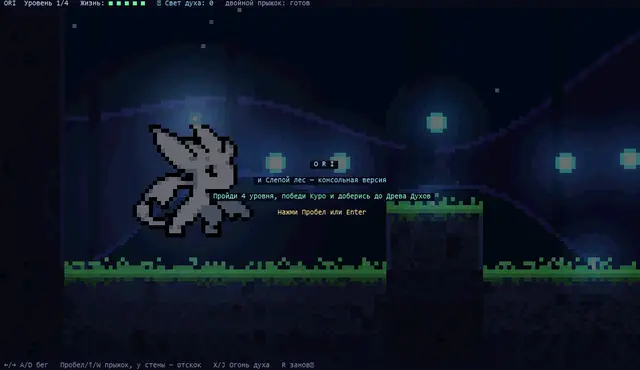
Часть II. Платформер из цветных пикселей: заставка, первый уровень и бой с совой Куро. Это обычная консоль Windows — каждый символ «▀» рисует два пикселя.
▓▓▓▓▓▓▓▓▓▓▓▓▓▓▓▓▓▓▓▓▓▓▓▓▓▓▓▓▓▓▓▓▓▓▓▓▓▓▓▓▓▓¤▓▓▓▓▓▓▓▓▓▓▓▓▓▓▓▓▓▓▓▓▓▓▓*▓▓▓▓▓*▓¤▓▓▓▓▓▓▓▓@▓▓▓▓▓▓▓▓▓▓▓▓▓▓*▓▓▓▓^^^▓▓*▓▓▓▓▓▓▓▓▓▓▓▓▓▓*▓▓▓▓▓▓▓▓▓▓*▓^^▓▓▓▓▓▓▓▓*▓▓▓▓¤▓▓▓▓*▓^^▓▓▓▓▓*▓Ψ▓▓¤**▓▓▓▓▓▓▓▓▓▓▓▓▓▓▓▓▓▓▓▓▓▓▓▓▓▓▓▓▓▓▓▓▓▓▓▓▓▓▓▓▓▓▓♥ ♥ ♥ ♥ ♥ * 2 из 14
Часть I. Текстовая игра: Ори собирает огоньки в лесу из символов и прячется от слизней.
Здравствуйте! В этой методичке мы с нуля научимся программировать на C++ и напишем две игры про Ори — маленького светящегося духа из игры «Ори и Слепой лес».
Опыт программирования не нужен. Мы начнём с самого простого: что такое программа, где её писать и как запустить. Основные конструкции языка разберём на маленьких примерах, а затем применим в игре. Служебные модули вывода и Windows можно брать готовыми: перед ними мы объясняем назначение и способ вызова. Их внутреннее устройство не нужно запоминать для продолжения курса.
Зачем учиться и как сохранить свои идеи
Цель — помочь вам начать программировать и почувствовать, что вы можете создавать свои программы. C++ позволяет делать игры, инструменты, обработку данных и многое другое. Собственную идею можно пробовать уже после первых глав; заканчивать все 28 глав для этого не требуется. GitHub — добровольный способ поделиться работой.
Базовая игра развивается по главам. «Весь код шага» — контрольная версия автора: замена файла целиком может стереть ваши дополнения. До знакомства с Git перед заданием копируйте папку проекта, например в ori-experiments\chapter05; работайте с идеей там. После знакомства с Git можно сохранять изменения коммитами (глава 6), а отдельные идеи — в ветках (глава 9). Там мы разберём команды и порядок возврата к базовой игре. Копия папки остаётся допустимым способом и после знакомства с Git.
В папке игры находятся только исходники игры. У фишек, тестов и автопилота свой main(): сохраняйте их в подпапке fishki, собирайте отдельной командой из текста, выполняя её в папке игры. Звёздочка *.cpp не заходит в подпапки. Переносите удачные изменения в базовую игру по одному и каждый раз проверяйте результат.
Две части — две игры
Часть I. Ори в мире символов (главы 1–11). Текстовая игра: заставка в рамке, меню, выбор сложности, лес из символов, по которому Ори ходит, собирает огоньки и прячется от слизней. Попутно изучаем все основы языка: переменные, условия, циклы, функции, массивы, структуры и ссылки. В конце части разложим игру по нескольким файлам, как это делают настоящие программисты.
Часть II. Ори в мире пикселей (главы 12–27). Настоящий платформер: картинка из цветных пикселей прямо в консоли, бег и прыжки, физика, свет, враги, Огонь духа, уровни и босс — сова Куро. Программа большая, но растёт постепенно: в каждой главе добавляется одна новая возможность.
Как устроена каждая глава
Разбираемся — новая тема на маленьких примерах. Сначала понимаем, как это работает, потом используем.
Хороший код — короткое правило: как писать понятно и аккуратно. Программа должна не просто «как-то запуститься», её должно быть приятно читать.
Фишка — маленькая отдельная программа, которая показывает, что интересного можно сделать с новой темой: картинки из символов, радуга, снегопад, огонь, салют. Это не обязательная часть игры — это повод удивиться и поиграть с кодом.
Игра · шаг N — делаем следующий шаг нашей игры.
Задания — короткие задачи, которые нужно решить самостоятельно. У каждого задания есть решение, но оно спрятано: нажмите «Показать решение», только когда попробовали сами. Последнее задание главы — творческое: решения у него нет, придумайте что-нибудь своё.
Как заниматься
Читайте главы по порядку. Каждая следующая опирается на предыдущую.
Набирайте код руками, а не копируйте. Так пальцы и голова быстрее запоминают, как пишется программа. Исключение — особые символы вроде ╔ ═ ░ ▓, которых нет на клавиатуре: их копируйте из методички. Опечатки — это нормально: компилятор подскажет, где ошибка, а приложение «Если что-то не работает» поможет её найти.
После каждого шага запускайте программу и смотрите, что изменилось.
Меняйте числа и смотрите, что будет. Перед опытом сохраните копию проекта. Если всё пошло не так, сверяйтесь с разделом «Весь код шага», сохранив свои изменения отдельно перед заменой файла.
Сначала решайте задание сами. Даже если не получилось, после попытки решение запоминается в разы лучше.
Как читать листинги
Листинг — это кусок программы, напечатанный в методичке. Когда программа растёт, в листинге показано только то, что изменилось:
Строки без подсветки уже есть в вашем файле. Они показаны, чтобы было понятно, куда вставить новый код. Если кусок длинный, неизменившиеся строки заменены значком …. Рядом с номером листинга написано имя файла, в котором идёт правка: начиная с главы 11, файлов у игры несколько.
Иногда в игре встречается большой кусок кода, который рисует что-то красивое: текстуры камня, дерево, фон. Такие куски можно скопировать из раздела «Весь код шага» в конце главы, а в тексте мы разберём главную идею. Это не жульничество: программисты постоянно берут готовый код и разбираются в нём.
Короткий пример и целый файл — разные вещи
Короткий блок обычно показывает фрагмент: он не обязан собираться отдельно. Команды вроде printf(...) в примерах глав 2–5 пишите внутри фигурных скобок main, перед return 0;. Строки #include размещаются в начале файла, вне main. Начиная с главы 6, определения своих функций тоже пишутся вне main, а их вызовы — внутри нужной функции. Если в примере используются hp или key, они должны быть объявлены раньше.
Соседние маленькие примеры — отдельные опыты. Не склеивайте их вслепую: повторное int hp = 5; в одном месте программы создаст ошибку. Изменяйте один опыт, собирайте и смотрите результат. Для самостоятельных программ показан полный файл с #include и main.
Многоточие ... в схемах значит «здесь пропущены строки». Это не команда C++: такой пример нельзя копировать как полный файл. Для запуска берите полный листинг соответствующего шага или фишки. Сначала прочитайте пояснение над ним: там названы новые обозначения.
Вставки в тексте
Новые слова — словарик терминов главы. Все термины собраны и в приложении в конце.
Для любопытных — как это устроено глубже. Можно пропустить и вернуться потом.
Хороший код — правило аккуратного кода. Все правила собраны в приложении «Правила хорошего кода».
Что мы узнали — короткий итог главы.
Где взять готовый код
Всё нужное есть прямо в методичке, ничего скачивать не надо. В конце каждой главы с игрой есть раздел «Весь код шага»: там все файлы игры после этой главы целиком, у каждого — кнопка «Копировать». Код «фишек» и решений заданий тоже показан полностью и копируется той же кнопкой. Но сначала попробуйте набрать сами — копировать стоит, только чтобы свериться или догнать.
Часть I. Ори в мире символов
Глава 1Компьютер, программа и консоль
Прежде чем писать программы, разберёмся, что это вообще такое и где они живут. В этой главе нет кода, зато есть несколько важных понятий и первое знакомство с консолью — чёрным окном, в котором мы будем работать всю методичку.
Разбираемся
Проводник→Папка ori/text→Терминал в папке→hello.cpp→hello.exe
Рис. 1.1. Схема для этой главы (не снимок интерфейса)
Что такое программа
Компьютер очень быстрый, но совсем не умный. Сам он ничего не решает: он только выполняет команды, одну за другой, миллиарды команд в секунду. Например: «сложи два числа», «запомни число», «нарисуй точку на экране».
Программа — это список таких команд, записанный в файл. Игра, браузер, калькулятор — всё это программы.
Компьютер понимает команды только в виде чисел — так называемый машинный код. Писать числами неудобно, поэтому люди придумали языки программирования: команды пишутся почти обычными словами, например if («если») или while («пока»). Мы будем писать на языке C++ (читается «си плюс плюс») — на нём написаны многие настоящие игры.
Исходный код и компилятор
Текст программы на C++ называется исходным кодом. Это обычный текстовый файл, только с расширением .cpp. Компьютер не может выполнить его напрямую. Нужен переводчик — специальная программа-компилятор. Он читает наш .cpp-файл и создаёт из него исполняемый файл с расширением .exe — готовую программу, которую можно запустить.
Мы пишем текст программы в файл main.cpp.
Компилятор переводит его в ori.exe.
Мы запускаем ori.exe, и компьютер выполняет команды.
Если в тексте есть ошибка (например, опечатка), компилятор не создаст .exe, а напишет, в какой строке ошибка. Это нормальная часть работы любого программиста: ошибки делают все, просто опытные быстрее их находят.
Файлы, папки и расширения
Всё, что хранится на компьютере, лежит в файлах. Файлы разложены по папкам, а папки могут лежать в других папках. Адрес файла называется путём:
C:\Users\Ученик\ori\main.cpp
Это значит: диск C:, в нём папка Users, в ней Ученик, в ней ori, а в ней файл main.cpp.
Последняя часть имени файла после точки — расширение. Оно подсказывает, что это за файл: .txt — текст, .png — картинка, .cpp — программа на C++, .exe — готовая программа.
Консоль
Обычно мы работаем с компьютером мышкой: щёлкаем по значкам и кнопкам. Но есть и другой способ — консоль (её ещё называют командной строкой или терминалом). Это окно, в котором команды пишут текстом.
Откройте консоль: нажмите клавиши Win + R, введите cmd и нажмите Enter. Появится чёрное окно с надписью вроде:
C:\Users\Ученик>
Это приглашение: консоль показывает, в какой папке вы сейчас находитесь, и ждёт команду. Попробуйте несколько команд (после каждой нажимайте Enter):
dir
mkdir ori
cd ori
dir
cd ..
cls
dir — показать, какие файлы и папки лежат в текущей папке;
mkdir ori — создать папку ori (от англ. make directory — «сделать папку»);
cd ori — перейти в папку ori (change directory — «сменить папку»);
cd .. — подняться на уровень выше, в папку-родителя;
cls — очистить экран консоли.
Чтобы не набирать длинные имена целиком, нажмите Tab: консоль сама допишет имя файла или папки. А стрелка ↑ повторяет прошлые команды.
Путь от папки к программе
Проводник → папка ori → терминал в этой папке → файл main.cpp → компилятор → ori.exe.
В Проводнике включите показ расширений: «Вид → Показать → Расширения имён файлов» (в Windows 10 — флажок на вкладке «Вид»). Имя должно быть main.cpp, а не main.cpp.txt. Команда cd без параметров в cmd показывает текущую папку; в PowerShell для этого есть pwd. Команда dir должна показать ваш файл. Если файл не виден, сначала перейдите в нужную папку, потом собирайте программу.
ФишкаКонсоль умеет больше, чем кажется
Консоль — это не только dir и cd. Попробуйте эти команды:
color 0A
color 1F
color 07
title Лес Нибель
tree C:\Windows\Web
echo Привет, Ори!
color 0A — первая цифра задаёт цвет фона, вторая — цвет текста. 0A — ярко-зелёный текст на чёрном, как в фильмах про хакеров. color 07 возвращает обычный вид. Список всех цветов покажет команда color /?.
title меняет заголовок окна.
tree рисует дерево папок из символов линий ├── и └──. Запомните эти символы: скоро мы будем рисовать ими сами.
echo просто печатает текст.
И ещё одна команда, которая понадобится уже в следующей главе:
chcp 65001
chcp (от change code page) переключает кодировку — правило, по которому консоль превращает числа в буквы. Кодировка 65001 называется UTF-8: в ней есть и русские буквы, и тысячи других символов — рамки, стрелки, сердечки. Именно в UTF-8 мы будем печатать всё в нашей игре.
Задания
Часть I. Ори в мире символов
Глава 2Первая программа
В этой главе мы установим компилятор и редактор кода, напишем первую программу, соберём её и запустим. А в конце главы появится первый кусочек нашей игры — заставка в красивой рамке.
Разбираемся
Компилятор
Мы будем пользоваться компилятором g++ из набора w64devkit. Его не нужно устанавливать: достаточно скачать и распаковать.
Скачайте самый верхний (самый новый) файл, имя которого начинается с w64devkit-x64, например w64devkit-x64-2.10.1.7z.exe.
До запуска сверяйте файл со страницей официального репозитория skeeto/w64devkit: выбранный выпуск и имя загруженного x64-файла должны совпадать. Если к выпуску опубликована контрольная сумма, сравните её с Get-FileHash -Algorithm SHA256 "путь-к-файлу" в PowerShell. При предупреждении Windows не выбирайте автоматически «Выполнить в любом случае»: проверьте источник и выполните проверку файла установленным антивирусом; при сомнениях обратитесь к преподавателю. Само предупреждение не доказывает ни вредоносность, ни безопасность файла.
Откроется окно распаковки с полем для пути. Впишите в него C:\ и нажмите Extract. Внутри архива уже лежит папка w64devkit, поэтому получится C:\w64devkit. Если вписать C:\w64devkit, папка окажется вложенной сама в себя: C:\w64devkit\w64devkit.
Проверьте: должна быть папка C:\w64devkit\bin, а в ней файл g++.exe.
Теперь нужно сказать Windows, где искать компилятор. Для этого есть настройка PATH — список папок, в которых консоль ищет программы.
Нажмите Win, наберите «переменные среды» и откройте пункт Изменение переменных среды текущего пользователя.
В верхнем списке выберите строку Path и нажмите Изменить.
Нажмите Создать и впишите C:\w64devkit\bin.
Нажмите ОК во всех окнах.
Закройте все окна консоли, откройте новое и проверьте:
g++ --version
Если консоль напечатала что-то вроде g++.exe (GCC) 16.2.0 (номер версии у вас может быть другим), компилятор готов. Если пишет «не является внутренней или внешней командой», значит, папка в PATH указана неправильно: проверьте, что в ней есть файл g++.exe.
Редактор кода
Писать программу можно хоть в Блокноте, но удобнее в специальном редакторе кода: он подсвечивает команды разными цветами и помогает находить ошибки. Установите бесплатный Visual Studio Code с сайта code.visualstudio.com и откройте в нём папку ori\text: Файл → Открыть папку (в английской версии — File → Open Folder). Если VS Code спросит, доверяете ли вы авторам файлов в папке (Do you trust the authors…), ответьте «Да» — это ваша папка.
Новый файл создаётся кнопкой Новый файл (New File) над списком файлов слева: впишите имя вместе с расширением и нажмите Enter. Не забывайте сохранять файл: Ctrl + S. Пока файл не сохранён, у его имени на вкладке горит точка, а компилятор видит старую версию. Чтобы не помнить об этом, включите Файл → Автосохранение (File → Auto Save).
Контрольная точка перед первым кодом
В VS Code выберите «File → Open Folder» и папку ori\text, затем «New File», введите hello.cpp и сохраните Ctrl+S. Внизу редактора нажмите название кодировки: выберите «Save with Encoding → UTF-8». Включите «Terminal → New Terminal»; проверьте папку через pwd (PowerShell) или cd (cmd), затем dir.
Сначала выполните g++ --version. Ожидается строка версии GCC. Если команда не найдена, проверьте наличие g++.exe в C:\w64devkit\bin (или вашей папке установки), добавьте именно папку bin в PATH, полностью перезапустите VS Code и повторите проверку в новом терминале. Переустанавливать редактор не нужно. Пока файл пустой, собирать его рано. Сначала запишите программу из следующего раздела; после этого ниже будут команды сборки и запуска.
Самая маленькая программа
Создайте в папке ori\text файл hello.cpp. Сначала обозначим роли строк будущей программы: #include подключает готовые возможности, функция main — место начала выполнения, printf — функция печати переданного текста. Особый символ \n внутри текста переводит вывод на новую строку. Всё это разберём сразу после маленького примера. Наберите его целиком:
Самостоятельная программа — сохраните в отдельном файле .cpp
// Моя первая программа — комментарий. Всё, что после // и до конца строки, компилятор пропускает. Комментарии пишут для людей: чтобы объяснить, что делает код.
#include <cstdio> — подключаем готовый набор команд, который написали до нас. В cstdio (C standard input/output — стандартный ввод-вывод) лежит команда печати printf.
int main() { ... } — главная функция. С неё начинается выполнение любой программы на C++. Команды между фигурными скобками { и } выполняются по порядку, сверху вниз.
printf("..."); — вызов функции печати. В круглых скобках мы передаём ей текст в двойных кавычках; такой текст называется строкой. Сейчас у printf один аргумент — эта строка. В главе 3 добавим к ней значения переменных и разберём каждую запятую и заполнитель.
return 0; — программа закончилась успешно.
Обратите внимание: каждая команда заканчивается точкой с запятой;. Это как точка в конце предложения. Если её забыть, компилятор выдаст ошибку.
Сборка и запуск
Откройте консоль в папке ori\text: в Проводнике зайдите в эту папку, щёлкните по адресной строке, введите cmd и нажмите Enter. Соберите программу:
-o hello.exe — как назвать готовую программу (o — от output, «результат»);
-O2 — сделать программу побыстрее;
-std=c++17 — использовать версию языка C++17;
-Wall -Wextra — предупреждать обо всех подозрительных местах. Предупреждение — не ошибка, программа соберётся, но компилятор намекает, что вы, возможно, ошиблись. Хорошая программа собирается без единого предупреждения.
Если консоль ничего не написала — всё хорошо, в папке появился hello.exe. Запустите его:
hello.exe
Скорее всего, вместо «Привет, Ори!» вы увидите странные символы вроде ╨Я╤А╨╕╨▓╨╡╤В. Это не ошибка программы: просто консоль думает, что текст в старой кодировке. В главе 1 мы узнали лекарство — команду chcp 65001. Выполните её и запустите программу ещё раз:
chcp 65001
hello.exe
Привет, Ори!
Поздравляем — это ваша первая программа!
Программа сама выполняет команду консоли
Набирать chcp 65001 перед каждым запуском неудобно. Попросим программу сделать это самой. Для этого есть команда system из набора cstdlib. Замените всё содержимое hello.cpp на это, соберите и запустите:
Самостоятельная программа — сохраните в отдельном файле .cpp
#include <cstdio>#include <cstdlib>int main() {
system("chcp 65001 > nul"); // программа сама переключает консоль на UTF-8
printf("Привет, Ори!\n");
return0;
}
system("...") выполняет команду консоли так, будто вы набрали её сами. Хвост > nul значит «а то, что команда напечатает, выбрось»: иначе chcp написала бы в консоль «Активная кодовая страница: 65001».
Особые символы в строке
Внутри строки обратная косая черта \ начинает особый символ:
Запись
Что печатает
\n
переход на новую строку
\"
двойную кавычку (просто " закончила бы строку)
\\
одну обратную косую черту
Допишите в hello.cpp две строки перед return 0; — вот вся программа:
Самостоятельная программа — сохраните в отдельном файле .cpp
Для опыта сломаем программу: удалите в hello.cpp точку с запятой в конце строки с system(...) и соберите программу снова. Компилятор напишет:
hello.cpp: In function 'int main()':
hello.cpp:5:31: error: expected ';' before 'printf'
5 | system("chcp 65001 > nul")
| ^
| ;
6 | printf("Ори сказал: \"Привет!\"\n");
| ~~~~~~
Читать такие сообщения — важный навык. hello.cpp:5:31 — имя файла, номер строки и номер символа. error: expected ';' before 'printf' — «ожидалась точка с запятой перед printf». Компилятор даже показал, куда её поставить. Верните точку с запятой на место. Всегда начинайте с самой первой ошибки в списке: следующие часто появляются из-за неё.
Игра · шаг 2Заставка игры
Начинаем игру «Ори в мире символов». Создайте в папке ori\text новую папку game, а в ней — файл main.cpp. Вся первая часть методички будет про него.
Листинг 2.1. Заставка игры в рамке main.cppКуда: новый файл — создайте его
// Ори в мире символов — заставка игры#include <cstdio>#include <cstdlib>int main() { system("chcp 65001 > nul"); // консоль переходит на UTF-8: русские буквы и рамки видны правильно printf("╔════════════════════════════════════════╗\n"); printf("║ ║\n"); printf("║ О Р И в мире символов ║\n"); printf("║ ║\n"); printf("║ Дух леса Ори проснулся ночью ║\n"); printf("║ в лесу Нибель. Помоги ему собрать ║\n"); printf("║ огоньки и дойти до Древа Духов. ║\n"); printf("║ ║\n"); printf("╚════════════════════════════════════════╝\n");return0;}
╔════════════════════════════════════════╗
║ ║
║ О Р И в мире символов ║
║ ║
║ Дух леса Ори проснулся ночью ║
║ в лесу Нибель. Помоги ему собрать ║
║ огоньки и дойти до Древа Духов. ║
║ ║
╚════════════════════════════════════════╝
Рис. 2.1. Заставка в консоли
Рамка нарисована символами ╔ ═ ╗ ║ ╚ ╝. Чтобы правая стенка рамки получилась ровной, в каждой строке между ║ и ║ должно быть одинаковое число символов. Проверить это просто: в редакторе кода поставьте курсор после последнего символа строки — справа внизу VS Code показывает номер столбца.
Перейдите в консоли в папку игры и соберите заставку:
cd game
g++ -O2 -std=c++17 -Wall -Wextra main.cpp -o ori.exe
ori.exe
ФишкаКартинки из символов
В UTF-8 есть сотни символов, которыми удобно рисовать. Вот самые полезные:
Символы
Для чего
░ ▒ ▓ █
заливка разной плотности: как карандаш с разным нажимом
▀ ▄ ▌ ▐
половинки клетки
╔ ═ ╗ ║ ╚ ╝
двойные рамки
┌ ─ ┐ │ └ ┘ ├ ┤
тонкие рамки и таблицы
▲ ▼ ◆ ● ♥ ✦ ·
значки
Их можно копировать прямо из методички в редактор кода. Из таких символов и одних только printf получается целая картина:
Плотные символы ▓ и █ кажутся тёмными или яркими, а ░ — почти прозрачным. Это старый приём художников ASCII-арта: разная плотность символов работает как оттенки серого.
Весь код шага 2Сверьтесь с готовой программой
Вся программа после этой главы — целиком. Откройте файл, чтобы сравнить со своим, а кнопка «Копировать» поможет, если нужно догнать: вставьте код в файл с тем же именем в папке игры.
main.cpp18 строкmain.cpp
// Ори в мире символов — заставка игры#include <cstdio>#include <cstdlib>int main() { system("chcp 65001 > nul"); // консоль переходит на UTF-8: русские буквы и рамки видны правильно printf("╔════════════════════════════════════════╗\n"); printf("║ ║\n"); printf("║ О Р И в мире символов ║\n"); printf("║ ║\n"); printf("║ Дух леса Ори проснулся ночью ║\n"); printf("║ в лесу Нибель. Помоги ему собрать ║\n"); printf("║ огоньки и дойти до Древа Духов. ║\n"); printf("║ ║\n"); printf("╚════════════════════════════════════════╝\n");return0;}
Задания
Часть I. Ори в мире символов
Глава 3Переменные и вычисления
У Ори есть жизни, огоньки, свой символ на карте. Всё это — числа и буквы, которые программа должна помнить и менять. Для этого служат переменные. В этой главе мы научимся хранить данные, считать и красиво печатать результат, а в игре появится карточка героя.
Разбираемся
В коротких примерах этой главы команды находятся внутри main. Проверяйте их по одному в отдельном учебном файле. Полная программа для первого опыта с printf будет ниже, после объяснения его аргументов.
Переменная — коробка с именем
Переменная — это место в памяти компьютера, у которого есть имя и в котором лежит значение. Как коробка с надписью.
Фрагмент кода — место вставки указано в тексте
int hp = 5;
Эта строка говорит: «создай переменную по имени hp, в которой лежат целые числа, и положи в неё 5». Здесь:
int — тип: какие значения можно класть в переменную (integer — целое число);
hp — имя;
= 5 — начальное значение.
Значение можно поменять в любой момент:
Фрагмент кода — место вставки указано в тексте
hp = 3; // теперь в hp лежит 3
hp = hp - 1; // взять значение hp, вычесть 1 и положить обратно: теперь 2
Знак = в программировании означает не «равно», а «положить в переменную». Читается справа налево: сначала считается то, что справа, а потом результат кладётся в переменную слева.
Основные типы
Тип
Что хранит
Пример
int
целое число
int light = 12;
float
дробное число
float speed = 1.5f;
char
один символ
char symbol = '@';
bool
«да» или «нет»
bool alive = true;
У дробных чисел вместо запятой точка: 1.5, а буква f в конце говорит, что это число типа float. Один символ пишут в одинарных кавычках: '@', а строку — в двойных: "Ори". У типа bool всего два значения: true (истина) и false (ложь).
Константы
Некоторые числа в программе никогда не меняются: сколько всего жизней у Ори, сколько огоньков нужно собрать. Такие значения объявляют константами — со словом const:
Намеренная ошибка: вторую строку оставляем только для опыта
Константы принято называть БОЛЬШИМИ_БУКВАМИ, чтобы их сразу было видно в коде.
Арифметика
С числами работают знаки + - * / и ещё % — остаток от деления:
Фрагмент кода — место вставки указано в тексте
int a = 17 / 5; // 3 — целые числа делятся без остаткаint b = 17 % 5; // 2 — остаток от деления 17 на 5float c = 17.0f / 5; // 3.4 — если хоть одно число дробное, деление дробное
Запомните ловушку: целое делить на целое — получается целое, дробная часть просто отбрасывается. 1 / 2 равно 0, а не 0.5. Чтобы деление было дробным, хотя бы одно из чисел должно быть дробным.
Для частых действий есть короткие записи:
Фрагмент кода — место вставки указано в тексте
light = light + 1; // длинно
light += 1; // короче
light++; // ещё короче: «увеличить на 1»
hp -= 2; // уменьшить на 2
Печать значений
От готового текста к одному числу
Во второй главе мы писали printf("Жизнь: 5\n");: весь текст, включая цифру 5, был заранее записан в кавычках. Но теперь жизнь хранится в переменной и может измениться. Как показать её текущее значение?
Функцию мы вызываем: пишем её имя и круглые скобки. В скобках находятся значения, с которыми она должна работать. Эти значения называют аргументами; несколько аргументов разделяют запятыми. В printf("Привет\n"); аргумент один — строка. Пока нам достаточно уметь вызывать готовую функцию; свои функции и их параметры напишем в главе 6.
У printf первый аргумент — строка формата: образец будущей надписи. В ней можно оставить место для числа. Запись %d называется заполнителем: «подставь сюда целое число». Само число передают вторым аргументом, после кавычек и запятой:
Фрагмент кода — место вставки указано в тексте
printf("Жизнь: %d\n", 5);
Жизнь: 5
Прочитаем эту строку по частям:
Часть
Что означает
printf
имя функции печати
( и )
границы списка аргументов
"Жизнь: %d\n"
первый аргумент: образец текста
%d внутри кавычек
место для одного целого числа
, 5 после кавычек
второй аргумент: число для этого места
\n
знакомый переход на новую строку
;
конец команды
%d не печатается буквально: на его месте появится 5. Запятая между аргументами тоже не печатается — она разделяет части вызова в исходном коде.
Теперь подставим переменную
Вместо числа можно передать имя переменной. printf возьмёт её значение в момент вызова:
Фрагмент кода — место вставки указано в тексте
int hp = 5;
printf("Жизнь: %d\n", hp);
hp = 3;
printf("Жизнь: %d\n", hp);
Жизнь: 5
Жизнь: 3
Пишите hp без кавычек: это имя переменной. Строка "hp" — просто две буквы; это не значение переменной. %d требует целого числа, поэтому передавать ему "hp" нельзя.
Чтобы проверить пример отдельно, сохраните полную программу как fishki\03-print.cpp внутри папки текстовой игры. Папку fishki создайте в Проводнике, если её ещё нет. Выполняйте команды из папки игры:
Листинг 3.1. Полная программа: сначала жизнь 5, затем 3 03-print.cpp
Поменяйте начальное значение на 7, сохраните файл и соберите заново. Первая строка станет «Жизнь: 7», вторая останется «Жизнь: 3»: между вызовами мы явно присвоили hp число 3.
Два места — два значения
Заполнители заполняются слева направо: первый получает первый аргумент после строки формата, второй — следующий.
Фрагмент кода — место вставки указано в тексте
int hp = 3;
int maxHp = 5;
printf("Жизнь: %d из %d\n", hp, maxHp);
Жизнь: 3 из 5
Здесь два %d и два числа после строки: hp, затем maxHp. Слова «Жизнь:» и «из», а также пробелы печатаются именно потому, что стоят внутри кавычек. Если поменять hp и maxHp местами, получится «Жизнь: 5 из 3».
Дробное число, символ и строка
Для разных типов нужны разные заполнители. %d мы уже знаем; %f подставляет дробное число, %c — один символ, %s — текстовую строку. Сначала попробуйте их по отдельности:
Обычный %f показывает шесть цифр после точки: поэтому получилось 1.500000. Чтобы оставить одну, между % и f пишут .1: printf("%.1f\n", speed); напечатает 1.5. Здесь точка и 1 — часть формата, а не новое значение переменной.
Знак процента напечатаем отдельно: printf("Собрано 25%%\n"); выдаст «Собрано 25%». Теперь можно объединить число и этот знак: printf("Собрано %d%%\n", 25);. Первое %d берёт число 25, следующие %% дают один знак %.
Один расчёт, два типа
Теперь знакомы и типы, и заполнители. После строки формата можно передавать не только переменную, но и выражение: оно сначала вычислится, затем printf напечатает результат.
Сначала считаются скобки, затем умножение и деление, затем сложение и вычитание. float value = 5 / 2; даст 2.0: выражение справа сначала посчитает целое 5 / 2, и только потом 2 запишется в дробную переменную.
Ровные столбцы: ширина поля
Это оформление, а не новое правило передачи аргументов. Между % и буквой можно указать ширину и точность:
%.1f — дробное число с одной цифрой после точки: 1.5;
%3d — целое число, занимающее не меньше 3 позиций (лишние слева заполняются пробелами): 5. Длинное число займёт столько места, сколько ему нужно: 1234;
%-3d — то же, но число прижато влево: 5 .
Ширина нужна, чтобы столбцы чисел стояли ровно, даже когда числа разной длины. Для проверки пробелов напечатаем границы поля:
В %5.1f число 5 задаёт минимальную ширину всего числа вместе с точкой, а .1 — одну цифру после точки. Именно так мы выровняем карточку Ори. Если пока сложно, сначала используйте обычные %d и %f, затем добавьте оформление.
Второй способ печатать: std::cout
В C++ есть и другой способ вывода — std::cout из набора <iostream>. Значения в нём не подставляются в заполнители, а пишутся прямо в строку через знак << («отправить в»):
Самостоятельная программа — сохраните в отдельном файле .cpp
#include <iostream>int main() {
int hp = 5;
constint MAX_HP = 7;
std::cout << "Жизнь: " << hp << " из " << MAX_HP << '\n';
return0;
}
std:: — приставка: она говорит, что cout взят из стандартной библиотеки C++, набора готовых возможностей, который есть у любого компилятора.
Тип значения cout определяет сам, поэтому перепутать %d и %f здесь невозможно. Зато ровные столбцы и вставка чисел в цветовые команды (о них — в следующей главе) с printf получаются короче. Поэтому в игре мы пишем через printf — один способ на всю программу читать проще. В своих программах и заданиях можете пользоваться любым.
Игра · шаг 3Карточка героя
Добавим в игру карточку Ори: его символ на карте, жизни, огоньки и сколько пути пройдено. Все важные числа — константы и переменные с понятными именами.
Листинг 3.2. Карточка Ори под заставкой main.cpp
int main() { system("chcp 65001 > nul"); // консоль переходит на UTF-8: русские буквы и рамки видны правильно printf("╔════════════════════════════════════════╗\n"); printf("║ ║\n"); printf("║ О Р И в мире символов ║\n"); printf("║ ║\n"); printf("║ Дух леса Ори проснулся ночью ║\n"); printf("║ в лесу Нибель. Помоги ему собрать ║\n"); printf("║ огоньки и дойти до Древа Духов. ║\n"); printf("║ ║\n"); printf("╚════════════════════════════════════════╝\n");// Характеристики Ориconstint MAX_HP = 5; // сколько жизней у Ори в началеconstint LIGHT_GOAL = 12; // сколько огоньков нужно собратьint hp = MAX_HP;int light = 3;char symbol = '@'; // так Ори будет выглядеть на карте// 100.0f — дробное число, поэтому и всё деление будет дробнымfloat percent = 100.0f * light / LIGHT_GOAL; printf("\n"); printf("┌─────────────── Ори ───────────────┐\n"); printf("│ Символ на карте: %c │\n", symbol); printf("│ Жизнь: %2d из %-2d │\n", hp, MAX_HP); printf("│ Огоньки: %2d из %-2d │\n", light, LIGHT_GOAL); printf("│ Путь пройден: %5.1f %% │\n", percent); printf("└───────────────────────────────────┘\n");return0;}
╔════════════════════════════════════════╗
║ ║
║ О Р И в мире символов ║
║ ║
║ Дух леса Ори проснулся ночью ║
║ в лесу Нибель. Помоги ему собрать ║
║ огоньки и дойти до Древа Духов. ║
║ ║
╚════════════════════════════════════════╝
┌─────────────── Ори ───────────────┐
│ Символ на карте: @ │
│ Жизнь: 5 из 5 │
│ Огоньки: 3 из 12 │
│ Путь пройден: 25.0 % │
└───────────────────────────────────┘
Рис. 3.1. Заставка и карточка
Разберём новые строки:
MAX_HP и LIGHT_GOAL — константы: они не меняются во время игры.
hp начинается со значения MAX_HP, а light пока равен 3 — представим, что Ори уже собрал три огонька.
В percent — сколько процентов пути пройдено. Мы пишем 100.0f * light / LIGHT_GOAL, а не light / LIGHT_GOAL * 100: целое 3 / 12 дало бы 0, и всё сломалось бы. Дробное 100.0f в начале делает дробным всё выражение.
%2d и %-2d держат числа ровно, даже если жизней станет 10, а огоньков 5. %5.1f — дробное число шириной 5 символов с одной цифрой после точки.
Первая строка файла — комментарий с описанием программы — тоже изменилась:
Листинг 3.3. Новое описание программы main.cpp
// Ори в мире символов — заставка игры// Ори в мире символов — заставка и карточка героя#include <cstdio>#include <cstdlib>
ФишкаБуквы — это числа
Для компьютера символ — это просто число: номер символа в таблице. Самая известная такая таблица — ASCII (читается «аски»): в ней у буквы A номер 65, у B — 66, у пробела — 32, у цифры 0 — 48. Поэтому символ можно напечатать как число, а с символами можно даже считать:
В этой необязательной программе встретятся ещё четыре варианта оформления: %x выводит беззнаковое число в шестнадцатеричной записи (255 → ff), %o — в восьмеричной (255 → 377), %05d дополняет поле слева нулями (42 → 00042), а %+d всегда показывает знак (42 → +42). Для %x и %o в примере используется unsigned int — целое число без отрицательных значений; суффикс u у 255u задаёт именно такой тип. %8.3f объединяет знакомые ширину поля 8 и три цифры после точки. Запоминать эти варианты для игры сейчас не нужно.
Листинг 3.4. Секреты символов и printf 03-ascii.cpp
// Фишка главы 3: буквы — это числа. Таблица ASCII и секреты printf.#include <cstdio>#include <cstdlib>int main() { system("chcp 65001 > nul");// Для компьютера символ — просто число, его номер в таблице ASCIIchar letter = 'A'; printf("Символ %c хранится как число %d\n", letter, letter); printf("А число 111 — это символ %c\n", 111);// С символами можно считать, как с числамиchar next = letter + 1; printf("'A' + 1 = '%c', 'A' + 25 = '%c'\n", next, letter + 25); printf("Маленькая 'a' дальше большой на %d\n", 'a' - 'A'); printf("Цифра '7' — это не 7, а %d. Чтобы получить 7: '7' - '0' = %d\n\n", '7', '7' - '0');// Одно и то же число в разных системах счисленияint number = 255;unsignedint baseNumber = 255u; printf("%d в десятичной, %x в шестнадцатеричной, %o в восьмеричной\n", number, baseNumber, baseNumber);// Ширина поля: число занимает не меньше места, чем сказано printf("[%5d] — справа в поле шириной 5\n", 42); printf("[%-5d] — слева в поле шириной 5\n", 42); printf("[%05d] — с ведущими нулями\n", 42); printf("[%8.3f] — дробное: 8 знаков всего, 3 после точки\n", 3.14159f); printf("[%+d] — всегда со знаком\n", 42);return0;}
Символ A хранится как число 65
А число 111 — это символ o
'A' + 1 = 'B', 'A' + 25 = 'Z'
Маленькая 'a' дальше большой на 32
Цифра '7' — это не 7, а 55. Чтобы получить 7: '7' - '0' = 7
255 в десятичной, ff в шестнадцатеричной, 377 в восьмеричной
[ 42] — справа в поле шириной 5
[42 ] — слева в поле шириной 5
[00042] — с ведущими нулями
[ 3.142] — дробное: 8 знаков всего, 3 после точки
[+42] — всегда со знаком
Рис. 3.2. Что напечатает программа
Обратите внимание на строку про '7' - '0': символ цифры и сама цифра — разные вещи. Символ '7' — это число 55, а чтобы получить из него 7, вычитают символ '0'. Этот приём ещё пригодится.
%x печатает число в шестнадцатеричной системе: в ней кроме цифр 0–9 есть «цифры» a–f (от 10 до 15). ff — это 255. В части II мы будем записывать так цвета: 0xff8800 — оранжевый.
Весь код шага 3Сверьтесь с готовой программой
Вся программа после этой главы — целиком. Откройте файл, чтобы сравнить со своим, а кнопка «Копировать» поможет, если нужно догнать: вставьте код в файл с тем же именем в папке игры.
main.cpp36 строкmain.cpp
// Ори в мире символов — заставка и карточка героя#include <cstdio>#include <cstdlib>int main() { system("chcp 65001 > nul"); // консоль переходит на UTF-8: русские буквы и рамки видны правильно printf("╔════════════════════════════════════════╗\n"); printf("║ ║\n"); printf("║ О Р И в мире символов ║\n"); printf("║ ║\n"); printf("║ Дух леса Ори проснулся ночью ║\n"); printf("║ в лесу Нибель. Помоги ему собрать ║\n"); printf("║ огоньки и дойти до Древа Духов. ║\n"); printf("║ ║\n"); printf("╚════════════════════════════════════════╝\n");// Характеристики Ориconstint MAX_HP = 5; // сколько жизней у Ори в началеconstint LIGHT_GOAL = 12; // сколько огоньков нужно собратьint hp = MAX_HP;int light = 3;char symbol = '@'; // так Ори будет выглядеть на карте// 100.0f — дробное число, поэтому и всё деление будет дробнымfloat percent = 100.0f * light / LIGHT_GOAL; printf("\n"); printf("┌─────────────── Ори ───────────────┐\n"); printf("│ Символ на карте: %c │\n", symbol); printf("│ Жизнь: %2d из %-2d │\n", hp, MAX_HP); printf("│ Огоньки: %2d из %-2d │\n", light, LIGHT_GOAL); printf("│ Путь пройден: %5.1f %% │\n", percent); printf("└───────────────────────────────────┘\n");return0;}
Задания
Часть I. Ори в мире символов
Глава 4Условия, клавиши и цвет
До сих пор программа делала всегда одно и то же. Настоящая игра должна выбирать: если жизни мало — показать её красным, если игрок нажал «3» — включить трудный режим. В этой главе научимся проверять условия, читать нажатую клавишу и раскрашивать текст.
Разбираемся
Сравнения
Условие — это вопрос, на который ответ «да» или «нет», то есть значение типа bool. Для вопросов есть знаки сравнения:
Знак
Значение
Пример
==
равно
hp == 0
!=
не равно
key != 'q'
<>
меньше, больше
hp < 3
<=>=
меньше или равно, больше или равно
light >= LIGHT_GOAL
Не путайте == (сравнить) и = (положить в переменную). Это самая частая ошибка новичков — к счастью, с -Wall компилятор о ней предупреждает.
Команды в фигурных скобках после if выполняются, только если условие в круглых скобках истинно. Иначе выполняется ветка else (её может и не быть). Если вариантов больше двух, их выстраивают цепочкой:
Проверки идут сверху вниз, и срабатывает только первая подходящая ветка. При hp = 6 напечатается «Полон сил», хотя 6 >= 3 тоже правда.
И, ИЛИ, НЕ
Условия можно соединять:
&& — «и»: hp > 0 && light == LIGHT_GOAL — жив и собрал всё;
|| — «или»: key == 'q' || key == 'Q' — нажата маленькая или большая Q;
! — «не»: !alive — истинно, когда alive ложно.
Короткое «если»
Когда нужно выбрать одно из двух значений, есть короткая запись условие ? если_да : если_нет. Её называют тернарным оператором (от латинского «тройной»: у неё три части):
Фрагмент кода — место вставки указано в тексте
int hpColor = (hp >= 3) ? 92 : 91; // зелёный, если жизней хотя бы 3, иначе красный
Нажатая клавиша
Команда _getch() из набора conio.h ждёт, пока игрок нажмёт клавишу, и возвращает её код — тот самый номер символа из главы 3. Сама клавиша на экране не печатается.
Фрагмент кода — место вставки указано в тексте
#include <conio.h>int key = _getch();
if (key == 'y') {
printf("Ори идёт дальше\n");
}
Для клавиш без буквы тоже есть коды: Enter — 13, Esc — 27, пробел — 32.
switch — выбор из многих вариантов
Когда одну переменную сравнивают с несколькими значениями, удобнее switch. Метка case задаёт вариант, default — остальные значения, а break; завершает выбранную ветку, чтобы не выполнить соседнюю. В примере key уже содержит код нажатой клавиши:
switch прыгает на ту метку case, значение которой совпало с key, и выполняет команды до break. default — «во всех остальных случаях». Не забывайте break: без него программа «провалится» в следующий case и выполнит и его тоже.
Цвет текста
Для этого шага используем Windows 11 x64 и приложение Windows Terminal с вкладкой «Командная строка». Поддержка ANSI зависит от терминала, а не только от компилятора. Откройте Windows Terminal через «Пуск», в меню рядом с вкладкой выберите «Командная строка», затем перейдите в папку игры командой cd /d "путь-к-папке-игры". Команды сборки этой главы выполняйте в этой вкладке. В главе 11 программа сама включит нужный режим и для классической консоли. На других конфигурациях сначала проверьте цвет маленьким примером ниже, прежде чем менять игру.
Почти все современные консоли (Windows Terminal в Windows 11, терминал VS Code) понимают ANSI-команды — особые последовательности символов, которые не печатаются, а меняют вид текста. Каждая начинается с символа ESC (код 27, в строке пишется \x1b), затем [, затем код и буква m:
Код 0 сбрасывает цвет к обычному. Всегда возвращайте обычный цвет, иначе раскраска «протечёт» дальше — вплоть до приглашения консоли после выхода из программы.
Три независимые задачи
Сначала клавиатура даёт число — код клавиши. Затем if или switch выбирает действие по этому числу. И только после этого ANSI-последовательность меняет цвет вывода. Попробуйте по отдельности: напечатать код, выбрать действие без цвета, затем добавить цвет. if подходит для любого условия; switch сравнивает одно значение с несколькими вариантами. В маленьком примере default печатает «Такого варианта нет». В игре ниже эта ветка выбирает обычную сложность. Это два допустимых правила для разных программ; default сам по себе не означает повторное ожидание ввода. Повторять запрос научимся в главе 5.
Игра · шаг 4Сложность и цветная жизнь
Перед карточкой игра спрашивает сложность. Нажатая клавиша выбирает, сколько жизней будет у Ори. Число жизней в карточке окрашивается: много — зелёный, средне — жёлтый, мало — красный. А заставка стала ярко-голубой.
Подключим conio.h для _getch:
Листинг 4.1. Подключения main.cpp
// Ори в мире символов — заставка и карточка героя// Ори в мире символов — заставка, выбор сложности и карточка героя#include <conio.h>#include <cstdio>#include <cstdlib>
Листинг 4.2. Выбор сложности и цвет жизни main.cpp
int main() { system("chcp 65001 > nul"); // консоль переходит на UTF-8: русские буквы и рамки видны правильно printf("\x1b[96m"); // дальше всё печатается ярко-голубым printf("╔════════════════════════════════════════╗\n"); printf("║ ║\n"); printf("║ О Р И в мире символов ║\n"); … printf("║ огоньки и дойти до Древа Духов. ║\n"); printf("║ ║\n"); printf("╚════════════════════════════════════════╝\n"); printf("\x1b[0m"); // возвращаем обычный цвет// Сложность выбирается одной клавишей printf("\nВыбери сложность: 1 — лёгкая 2 — обычная 3 — трудная\n");int key = _getch(); // ждём нажатия; сама клавиша на экране не печатаетсяint maxHp;switch (key) {case'1': maxHp = 7;break;case'3': maxHp = 3;break;default: // '2' и любая другая клавиша — обычная сложность maxHp = 5;break; }// Характеристики Ориconstint MAX_HP = 5; // сколько жизней у Ори в началеconstint LIGHT_GOAL = 12; // сколько огоньков нужно собратьint hp = MAX_HP;int hp = maxHp;int light = 3;char symbol = '@'; // так Ори будет выглядеть на карте// 100.0f — дробное число, поэтому и всё деление будет дробнымfloat percent = 100.0f * light / LIGHT_GOAL;// Цвет жизни: зелёный, если её много, жёлтый — средне, красный — малоint hpColor;if (hp >= 5) { hpColor = 92; } elseif (hp >= 3) { hpColor = 93; } else { hpColor = 91; } printf("\n"); printf("┌─────────────── Ори ───────────────┐\n"); printf("│ Символ на карте: %c │\n", symbol); printf("│ Жизнь: %2d из %-2d │\n", hp, MAX_HP); printf("│ Жизнь: \x1b[%dm%2d\x1b[0m из %-2d │\n", hpColor, hp, maxHp); printf("│ Огоньки: %2d из %-2d │\n", light, LIGHT_GOAL); printf("│ Путь пройден: %5.1f %% │\n", percent); printf("└───────────────────────────────────┘\n");if (key == '3' && light < LIGHT_GOAL) { printf("\x1b[91mТрудный путь: береги каждую жизнь!\x1b[0m\n"); }return0;}
╔════════════════════════════════════════╗║ ║║ О Р И в мире символов ║║ ║║ Дух леса Ори проснулся ночью ║║ в лесу Нибель. Помоги ему собрать ║║ огоньки и дойти до Древа Духов. ║║ ║╚════════════════════════════════════════╝
Выбери сложность: 1 — лёгкая 2 — обычная 3 — трудная
Рис. 4.1. Игра ждёт нажатия клавиши
╔════════════════════════════════════════╗║ ║║ О Р И в мире символов ║║ ║║ Дух леса Ори проснулся ночью ║║ в лесу Нибель. Помоги ему собрать ║║ огоньки и дойти до Древа Духов. ║║ ║╚════════════════════════════════════════╝
Выбери сложность: 1 — лёгкая 2 — обычная 3 — трудная
┌─────────────── Ори ───────────────┐
│ Символ на карте: @ │
│ Жизнь: 3 из 3 │
│ Огоньки: 3 из 12 │
│ Путь пройден: 25.0 % │
└───────────────────────────────────┘
Трудный путь: береги каждую жизнь!
Рис. 4.2. Нажата клавиша 3: трудная сложность — жизни 3, поэтому число жёлтое, а предупреждение красное
Обратите внимание:
MAX_HP больше не константа: теперь это переменная maxHp, её значение выбирает switch. Вариант default срабатывает для клавиши 2 и для любой другой — так игра не сломается, если нажать что-то не то.
Цвет жизни выбирается цепочкой if – else if – else и хранится в переменной hpColor. В строке printf код цвета подставляется через %d прямо внутрь ANSI-команды: \x1b[%dm.
Последний if проверяет сразу два условия через &&.
ФишкаСтили и светофор
Кроме цвета, ANSI умеет делать текст жирным, курсивом, подчёркнутым, зачёркнутым, менять цвет фона (коды 40–47) и даже менять местами цвет текста и фона. Коды можно складывать через точку с запятой: \x1b[1;93;44m — жирный ярко-жёлтый на синем. А условие выбирает, какая лампа светофора загорится:
Листинг 4.3. Стили ANSI и светофор 04-styles.cpp
// Фишка главы 4: стили ANSI и светофор, который переключается клавишами#include <conio.h>#include <cstdio>#include <cstdlib>int main() { system("chcp 65001 > nul");// ESC [ код m — у каждого стиля свой код, 0 сбрасывает всё printf("\x1b[1mжирный\x1b[0m "); printf("\x1b[2mблёклый\x1b[0m "); printf("\x1b[3mкурсив\x1b[0m "); printf("\x1b[4mподчёркнутый\x1b[0m "); printf("\x1b[9mзачёркнутый\x1b[0m "); printf("\x1b[7mнаоборот\x1b[0m\n");// 30–37 — цвет текста, 40–47 — цвет фона, коды можно складывать через ; printf("\x1b[30;47m чёрный на белом \x1b[0m "); printf("\x1b[97;41m белый на красном \x1b[0m "); printf("\x1b[1;93;44m жирный жёлтый на синем \x1b[0m\n\n"); printf("Светофор: нажми r, y или g\n");int key = _getch();// Горит только одна лампа, остальные — тёмно-серыеif (key == 'r') { printf("\x1b[91m●\x1b[90m ● ●\x1b[0m Стой!\n"); } elseif (key == 'y') { printf("\x1b[90m● \x1b[93m●\x1b[90m ●\x1b[0m Внимание!\n"); } elseif (key == 'g') { printf("\x1b[90m● ● \x1b[92m●\x1b[0m Иди!\n"); } else { printf("Светофор сломался: такой лампы нет\n"); }return0;}
жирныйблёклыйкурсивподчёркнутыйзачёркнутыйнаоборот чёрный на белом белый на красном жирный жёлтый на синем
Светофор: нажми r, y или g
● ● ● Внимание!
Рис. 4.3. Нажата клавиша y
Не все консоли умеют все стили: если курсив или зачёркивание не видны, ваш шрифт их просто не поддерживает. И переключите клавиатуру на английскую раскладку: в русской клавиша r даёт букву к с другим кодом, и светофор скажет, что сломался.
Весь код шага 4Сверьтесь с готовой программой
Вся программа после этой главы — целиком. Откройте файл, чтобы сравнить со своим, а кнопка «Копировать» поможет, если нужно догнать: вставьте код в файл с тем же именем в папке игры.
main.cpp69 строкmain.cpp
// Ори в мире символов — заставка, выбор сложности и карточка героя#include <conio.h>#include <cstdio>#include <cstdlib>int main() { system("chcp 65001 > nul"); // консоль переходит на UTF-8: русские буквы и рамки видны правильно printf("\x1b[96m"); // дальше всё печатается ярко-голубым printf("╔════════════════════════════════════════╗\n"); printf("║ ║\n"); printf("║ О Р И в мире символов ║\n"); printf("║ ║\n"); printf("║ Дух леса Ори проснулся ночью ║\n"); printf("║ в лесу Нибель. Помоги ему собрать ║\n"); printf("║ огоньки и дойти до Древа Духов. ║\n"); printf("║ ║\n"); printf("╚════════════════════════════════════════╝\n"); printf("\x1b[0m"); // возвращаем обычный цвет// Сложность выбирается одной клавишей printf("\nВыбери сложность: 1 — лёгкая 2 — обычная 3 — трудная\n");int key = _getch(); // ждём нажатия; сама клавиша на экране не печатаетсяint maxHp;switch (key) {case'1': maxHp = 7;break;case'3': maxHp = 3;break;default: // '2' и любая другая клавиша — обычная сложность maxHp = 5;break; }// Характеристики Ориconstint LIGHT_GOAL = 12; // сколько огоньков нужно собратьint hp = maxHp;int light = 3;char symbol = '@'; // так Ори будет выглядеть на карте// 100.0f — дробное число, поэтому и всё деление будет дробнымfloat percent = 100.0f * light / LIGHT_GOAL;// Цвет жизни: зелёный, если её много, жёлтый — средне, красный — малоint hpColor;if (hp >= 5) { hpColor = 92; } elseif (hp >= 3) { hpColor = 93; } else { hpColor = 91; } printf("\n"); printf("┌─────────────── Ори ───────────────┐\n"); printf("│ Символ на карте: %c │\n", symbol); printf("│ Жизнь: \x1b[%dm%2d\x1b[0m из %-2d │\n", hpColor, hp, maxHp); printf("│ Огоньки: %2d из %-2d │\n", light, LIGHT_GOAL); printf("│ Путь пройден: %5.1f %% │\n", percent); printf("└───────────────────────────────────┘\n");if (key == '3' && light < LIGHT_GOAL) { printf("\x1b[91mТрудный путь: береги каждую жизнь!\x1b[0m\n"); }return0;}
Задания
Часть I. Ори в мире символов
Глава 5Циклы: повторяем и анимируем
Игра — это повторение: нарисовать кадр, прочитать клавишу, снова нарисовать. Меню показывается снова и снова, пока игрок не выйдет. Для повторений в программировании есть циклы. С ними же в консоли оживает анимация: полоска загрузки, крутилка, бегущий цвет.
Разбираемся
Проверить условие→Выполнить тело→Изменить счётчик→Вернуться к условию
Рис. 5.1. Схема для этой главы (не снимок интерфейса)
while — «пока»
Фрагмент кода — место вставки указано в тексте
int light = 0;
while (light < 3) {
printf("Ори нашёл огонёк!\n");
light++;
}
while проверяет условие и, если оно истинно, выполняет тело цикла — команды в фигурных скобках. Потом снова проверяет условие, снова выполняет тело… и так, пока условие не станет ложным. Здесь тело выполнится три раза: при light равном 0, 1 и 2.
Одно повторение тела называется итерацией. Если условие никогда не станет ложным, цикл будет крутиться вечно — это бесконечный цикл. Иногда он нужен специально (игра работает, пока её не закроют), но чаще это ошибка: забыли увеличить счётчик.
for — цикл со счётчиком
Цикл со счётчиком встречается так часто, что для него есть короткая запись for. Её скобки содержат три части: начало; условие; шаг. Сначала создаётся счётчик, затем до каждого повторения проверяется условие, а после тела выполняется шаг:
Фрагмент кода — место вставки указано в тексте
for (int i = 0; i < 5; i++) {
printf("%d ", i);
}
0 1 2 3 4
В круглых скобках три части через точку с запятой:
int i = 0 — выполняется один раз перед циклом: заводим счётчик;
i < 5 — условие, проверяется перед каждой итерацией;
i++ — выполняется после каждой итерации.
Счётчик i существует только внутри цикла: после закрывающей скобки его уже нет.
do-while — «сначала сделай, потом проверь»
Фрагмент кода — место вставки указано в тексте
int key;
do {
key = _getch();
} while (key < '1' || key > '3');
Тело do-while выполняется хотя бы один раз, а условие проверяется после. Идеально, чтобы ждать правильную клавишу: сначала прочитать, потом проверить, подходит ли.
break и continue
break — немедленно выйти из цикла;
continue — пропустить остаток тела и перейти к следующей итерации.
Фрагмент кода — место вставки указано в тексте
for (int i = 1; i <= 10; i++) {
if (i % 2 == 0) continue; // чётные пропускаемif (i > 7) break; // дальше 7 не идём
printf("%d ", i);
}
1 3 5 7
Цикл внутри цикла
Тело цикла может содержать другой цикл. Внешний цикл идёт по строкам, внутренний — по символам в строке:
Фрагмент кода — место вставки указано в тексте
for (int row = 0; row < 3; row++) {
for (int col = 0; col < 5; col++) {
printf("*");
}
printf("\n");
}
*****
*****
*****
Пауза и возврат каретки
Чтобы анимация была видна, между кадрами нужна пауза. Команда Sleep(40) из windows.h останавливает программу на 40 миллисекунд (тысячных долей секунды).
Особый символ \r (возврат каретки) переносит курсор в начало текущей строки, не переходя на новую. Если напечатать строку, а потом \r и новую строку той же длины — старая перезапишется. Так и делается анимация «на месте»:
Если в варианте switch нужно завести свою переменную, этот вариант берут в фигурные скобки:
Фрагмент кода — место вставки указано в тексте
case'2': {
int choice = _getch();
// ...break;
}
Без скобок переменная была бы видна и в следующих case, где её никто не создавал. Если у такой переменной есть начальное значение (int choice = _getch();), компилятор выдаст ошибку; без начального значения он промолчит, но код станет запутанным. Поэтому переменные внутри case всегда берём в скобки.
Одна итерация
Проверка условия → тело цикла → изменение счётчика → снова проверка. Если условие ложно, выполнение идёт после цикла. Для for (int i = 0; i < 3; i++) тело выполняется при 0, 1, 2; при 3 — уже нет. Если вывод повторяется бесконечно, нажмите Ctrl+C в терминале. В игровых примерах нормальный выход — Esc; Ctrl+C пригодится для случайно бесконечного учебного цикла.
Игра · шаг 5Загрузка и главное меню
Игра обзаводится полоской загрузки и главным меню. Меню крутится в цикле while (running), пока игрок не нажмёт Esc. Для паузы в полоске подключаем windows.h:
Листинг 5.1. Подключения main.cpp
// Ори в мире символов — заставка, выбор сложности и карточка героя// Ори в мире символов — заставка, загрузка и главное меню#include <windows.h>#include <conio.h>#include <cstdio>#include <cstdlib>
main изменился почти целиком: старые команды переехали внутрь цикла меню и сдвинулись вправо. Выбор сложности при запуске и надпись «Трудный путь…» ушли: сложность теперь выбирается в меню, клавишей 2, а переменная hp больше не нужна — в карточке пока показываем maxHp. Поэтому вот файл полностью:
Листинг 5.2. Заставка, загрузка и меню main.cppКуда: замените всё содержимое файла этим текстом
// Ори в мире символов — заставка, загрузка и главное меню#include <windows.h>#include <conio.h>#include <cstdio>#include <cstdlib>int main() { system("chcp 65001 > nul"); // консоль переходит на UTF-8: русские буквы и рамки видны правильно printf("\x1b[96m"); // дальше всё печатается ярко-голубым printf("╔════════════════════════════════════════╗\n"); printf("║ ║\n"); printf("║ О Р И в мире символов ║\n"); printf("║ ║\n"); printf("║ Дух леса Ори проснулся ночью ║\n"); printf("║ в лесу Нибель. Помоги ему собрать ║\n"); printf("║ огоньки и дойти до Древа Духов. ║\n"); printf("║ ║\n"); printf("╚════════════════════════════════════════╝\n"); printf("\x1b[0m"); // возвращаем обычный цвет// Полоска загрузки: каждый шаг перерисовываем ту же строку (\r — в её начало)constint BAR_LENGTH = 30;for (int done = 0; done <= BAR_LENGTH; done++) { printf("\r Пробуждение [");for (int i = 0; i < BAR_LENGTH; i++) { printf(i < done ? "█" : "·"); } printf("] %3d%%", done * 100 / BAR_LENGTH); Sleep(40); // пауза 40 миллисекунд } printf("\n");// Характеристики Ориconstint LIGHT_GOAL = 12; // сколько огоньков нужно собратьint maxHp = 5; // сколько жизней даёт выбранная сложностьint light = 3;char symbol = '@'; // так Ори будет выглядеть на карте// Главное меню: повторяем, пока игрок не нажмёт Escbool running = true;while (running) { printf("\n 1 — Играть 2 — Сложность 3 — Карточка Ори Esc — Выход\n");int key = _getch(); // ждём нажатия; сама клавиша на экране не печатаетсяswitch (key) {case'1': printf("\n Скоро здесь будет игра!\n");break;case'2': { printf("\n Выбери сложность: 1 — лёгкая 2 — обычная 3 — трудная\n");int choice;do { choice = _getch(); } while (choice < '1' || choice > '3'); // ждём, пока нажмут 1, 2 или 3if (choice == '1') { maxHp = 7; } elseif (choice == '2') { maxHp = 5; } else { maxHp = 3; } printf(" Жизней в начале: %d\n", maxHp);break; }case'3': {// 100.0f — дробное число, поэтому и всё деление будет дробнымfloat percent = 100.0f * light / LIGHT_GOAL;// Цвет жизни: зелёный, если её много, жёлтый — средне, красный — малоint hpColor;if (maxHp >= 5) { hpColor = 92; } elseif (maxHp >= 3) { hpColor = 93; } else { hpColor = 91; } printf("\n"); printf("┌─────────────── Ори ───────────────┐\n"); printf("│ Символ на карте: %c │\n", symbol); printf("│ Жизнь: \x1b[%dm%2d\x1b[0m из %-2d │\n", hpColor, maxHp, maxHp); printf("│ Огоньки: %2d из %-2d │\n", light, LIGHT_GOAL); printf("│ Путь пройден: %5.1f %% │\n", percent); printf("└───────────────────────────────────┘\n");break; }case27: // 27 — код клавиши Esc running = false;break; } } printf("\n До встречи в лесу Нибель!\n");return0;}
╔════════════════════════════════════════╗║ ║║ О Р И в мире символов ║║ ║║ Дух леса Ори проснулся ночью ║║ в лесу Нибель. Помоги ему собрать ║║ огоньки и дойти до Древа Духов. ║║ ║╚════════════════════════════════════════╝
Пробуждение [██████████████████████████████] 100%
1 — Играть 2 — Сложность 3 — Карточка Ори Esc — Выход
Выбери сложность: 1 — лёгкая 2 — обычная 3 — трудная
Жизней в начале: 3
1 — Играть 2 — Сложность 3 — Карточка Ори Esc — Выход
┌─────────────── Ори ───────────────┐
│ Символ на карте: @ │
│ Жизнь: 3 из 3 │
│ Огоньки: 3 из 12 │
│ Путь пройден: 25.0 % │
└───────────────────────────────────┘
1 — Играть 2 — Сложность 3 — Карточка Ори Esc — Выход
Рис. 5.2. Выбрали трудную сложность, потом открыли карточку
Что происходит:
Заставка печатается один раз.
Полоска загрузки — двойной цикл: внешний for рисует кадр за кадром, внутренний печатает 30 делений, из которых первые done закрашены. \r в начале каждого кадра возвращает курсор в начало строки, так что полоска «растёт» на месте.
Главный цикл меню ждёт клавишу. Клавиша 2 запускает do-while, который ждёт 1, 2 или 3, и меняет maxHp. Клавиша 3 печатает карточку. Esc (код 27) опускает флаг running.
Программа работает, но main стал очень длинным: заставка, загрузка, меню, выбор сложности, карточка — всё в одной куче. Читать такое тяжело. В следующей главе разложим его по полочкам — по функциям.
ФишкаКрутилка, палитра и мерцание
Циклы и \r позволяют сделать в консоли настоящую анимацию. А ещё ANSI-команды знают не 16, а 256 цветов: \x1b[38;5;Nm — цвет текста с номером N, \x1b[48;5;Nm — цвет фона. Вместо N подставляется число: \x1b[38;5;196m — красный. Номера 16–231 образуют «кубик» из всех сочетаний 6 оттенков красного, зелёного и синего, а 232–255 — 24 оттенка серого.
Листинг 5.3. Анимация в одной строке и палитра 05-spinner.cpp
// Фишка главы 5: анимация в одной строке и палитра из 256 цветов#include <windows.h>#include <cstdio>#include <cstdlib>int main() { system("chcp 65001 > nul");// 1. Крутилка: \r возвращает курсор в начало строки, и мы рисуем поверхfor (int i = 0; i < 40; i++) {char stick;switch (i % 4) { // остаток от деления на 4: 0, 1, 2, 3, 0, 1, ...case0: stick = '|';break;case1: stick = '/';break;case2: stick = '-';break;default: stick = '\\'; // обратная косая черта пишется двумяbreak; } printf("\r Думаю %c", stick); Sleep(60); } printf("\r Готово! \n\n");// 2. Палитра из 256 цветов: ESC [ 48;5;номер m — цвет фона с этим номером.// Цвета 16–231 — это кубик 6×6×6, печатаем его по 36 штук в строке.for (int color = 16; color < 232; color++) { printf("\x1b[48;5;%dm ", color);if ((color - 16) % 36 == 35) { // по 36 цветов в строке printf("\x1b[0m\n"); } } printf("\x1b[0m\n");// 3. Мерцающая полоса: 24 оттенка серого (232–255) бегут по кругуfor (int t = 0; t < 80; t++) { printf("\r ");for (int i = 0; i < 48; i++) {int shade = 232 + (i + t) % 24; printf("\x1b[38;5;%dm█", shade); } Sleep(40); } printf("\x1b[0m\n");return0;}
Рис. 5.3. Палитра из 256 цветов и полоса оттенков серого
В третьей части программы (i + t) % 24 делает так, что каждый кадр оттенки сдвигаются на одну клетку — и полоса словно течёт. Остаток от деления часто используют для таких «бегущих по кругу» значений.
Весь код шага 5Сверьтесь с готовой программой
Вся программа после этой главы — целиком. Откройте файл, чтобы сравнить со своим, а кнопка «Копировать» поможет, если нужно догнать: вставьте код в файл с тем же именем в папке игры.
main.cpp100 строкmain.cpp
// Ори в мире символов — заставка, загрузка и главное меню#include <windows.h>#include <conio.h>#include <cstdio>#include <cstdlib>int main() { system("chcp 65001 > nul"); // консоль переходит на UTF-8: русские буквы и рамки видны правильно printf("\x1b[96m"); // дальше всё печатается ярко-голубым printf("╔════════════════════════════════════════╗\n"); printf("║ ║\n"); printf("║ О Р И в мире символов ║\n"); printf("║ ║\n"); printf("║ Дух леса Ори проснулся ночью ║\n"); printf("║ в лесу Нибель. Помоги ему собрать ║\n"); printf("║ огоньки и дойти до Древа Духов. ║\n"); printf("║ ║\n"); printf("╚════════════════════════════════════════╝\n"); printf("\x1b[0m"); // возвращаем обычный цвет// Полоска загрузки: каждый шаг перерисовываем ту же строку (\r — в её начало)constint BAR_LENGTH = 30;for (int done = 0; done <= BAR_LENGTH; done++) { printf("\r Пробуждение [");for (int i = 0; i < BAR_LENGTH; i++) { printf(i < done ? "█" : "·"); } printf("] %3d%%", done * 100 / BAR_LENGTH); Sleep(40); // пауза 40 миллисекунд } printf("\n");// Характеристики Ориconstint LIGHT_GOAL = 12; // сколько огоньков нужно собратьint maxHp = 5; // сколько жизней даёт выбранная сложностьint light = 3;char symbol = '@'; // так Ори будет выглядеть на карте// Главное меню: повторяем, пока игрок не нажмёт Escbool running = true;while (running) { printf("\n 1 — Играть 2 — Сложность 3 — Карточка Ори Esc — Выход\n");int key = _getch(); // ждём нажатия; сама клавиша на экране не печатаетсяswitch (key) {case'1': printf("\n Скоро здесь будет игра!\n");break;case'2': { printf("\n Выбери сложность: 1 — лёгкая 2 — обычная 3 — трудная\n");int choice;do { choice = _getch(); } while (choice < '1' || choice > '3'); // ждём, пока нажмут 1, 2 или 3if (choice == '1') { maxHp = 7; } elseif (choice == '2') { maxHp = 5; } else { maxHp = 3; } printf(" Жизней в начале: %d\n", maxHp);break; }case'3': {// 100.0f — дробное число, поэтому и всё деление будет дробнымfloat percent = 100.0f * light / LIGHT_GOAL;// Цвет жизни: зелёный, если её много, жёлтый — средне, красный — малоint hpColor;if (maxHp >= 5) { hpColor = 92; } elseif (maxHp >= 3) { hpColor = 93; } else { hpColor = 91; } printf("\n"); printf("┌─────────────── Ори ───────────────┐\n"); printf("│ Символ на карте: %c │\n", symbol); printf("│ Жизнь: \x1b[%dm%2d\x1b[0m из %-2d │\n", hpColor, maxHp, maxHp); printf("│ Огоньки: %2d из %-2d │\n", light, LIGHT_GOAL); printf("│ Путь пройден: %5.1f %% │\n", percent); printf("└───────────────────────────────────┘\n");break; }case27: // 27 — код клавиши Esc running = false;break; } } printf("\n До встречи в лесу Нибель!\n");return0;}
Задания
Часть I. Ори в мире символов
Глава 6Функции и курсор
В конце прошлой главы main разросся до сотни строк. Найти в нём, где рисуется карточка, а где выбирается сложность, уже непросто. Программисты решают это так: дают каждому куску работы имя и выносят его в отдельную функцию. А ещё в этой главе мы научимся ставить курсор в любое место экрана — и рисовать рамки где угодно.
Разбираемся
Проходите в два захода
Сначала функции и игра: вызовите одну свою функцию дважды и убедитесь, что оба вызова работают. Перенос курсора пока берите готовым — это служебный вывод. Git в этой главе — отдельный необязательный практикум: его можно пройти после работающей игры. Его контрольный результат — git status сообщает чистое рабочее дерево, а git log --oneline -1 показывает ваш коммит. Без Git сохраняйте копии папки перед экспериментами.
Своя функция
Функция — это именованный кусок программы, который можно вызвать по имени. Мы уже пользуемся чужими функциями: printf, _getch, Sleep. Теперь напишем свою:
Фрагмент кода — место вставки указано в тексте
void sayHello() {
printf("Привет, Ори!\n");
}
int main() {
sayHello(); // вызов: выполнить команды функции
sayHello(); // и ещё разreturn0;
}
void — функция ничего не возвращает (о возврате — чуть ниже);
sayHello — имя;
() — пустые скобки: функции ничего не нужно передавать;
в фигурных скобках — тело функции.
ВызовsayHello(); выполняет команды тела, а потом программа продолжается со следующей строки после вызова.
Параметры
Передаваемые при вызове значения называют аргументами, как у printf в главе 3. Чтобы написать свою функцию, задают параметры — имена и типы переменных, которые примут эти значения. Перед примером прочитаем запись: int hp, int maxHp внутри скобок описывает два параметра; в вызове printHealth(3, 5) аргументы 3 и 5 попадут в них по порядку. Определение функции пишите вне main, а два вызова ниже — внутри main:
Фрагмент кода — место вставки указано в тексте
void printHealth(int hp, int maxHp) {
printf("Жизнь: %d из %d\n", hp, maxHp);
}
printHealth(3, 5); // Жизнь: 3 из 5
printHealth(7, 7); // Жизнь: 7 из 7
При вызове значения подставляются в параметры по порядку: первое — в hp, второе — в maxHp. Параметры — это копии: если функция изменит hp, переменная, которую передали при вызове, не изменится.
Возвращаемое значение
Функция может посчитать что-то и вернуть результат командой return. Тогда вместо void пишут тип результата:
Фрагмент кода — место вставки указано в тексте
int healthColor(int hp) {
if (hp >= 5) return92; // return сразу заканчивает функциюif (hp >= 3) return93;
return91;
}
int color = healthColor(4); // 93
return не только возвращает значение, но и сразу выходит из функции — поэтому после первого сработавшего return остальные проверки не выполняются. main тоже функция: её return 0; возвращает число операционной системе («всё хорошо»).
Где видны переменные
Переменная, объявленная внутри функции, — локальная: она живёт, только пока работает функция, и не видна в других функциях. Две функции могут спокойно иметь переменные с одинаковыми именами — это разные переменные.
Константы, которые нужны многим функциям (цвета, коды клавиш), объявляют вне функций в начале файла — тогда их видно везде ниже.
Сначала объяви, потом вызывай
Компилятор читает файл сверху вниз. Функция должна быть написана выше, чем её первый вызов, иначе компилятор скажет, что такого имени не знает. Поэтому main обычно стоит в самом конце файла, а вспомогательные функции — над ним.
Строка как параметр
Чтобы передать в функцию строку, используют тип const char*:
Фрагмент кода — место вставки указано в тексте
void printAt(int x, int y, constchar* text) {
// ...
printf("%s", text);
}
printAt(10, 3, "О Р И");
Пока запомните это как готовую запись: «параметр text — строка, которую функция не будет менять». Что означают char и звёздочка, разберём в следующей главе, когда будем изучать массивы.
Курсор в любое место экрана
ANSI-команды умеют двигать курсор:
Команда
Что делает
\x1b[5;10H
курсор в строку 5, столбец 10 (счёт с единицы)
\x1b[2J
стереть весь экран
\x1b[H
курсор в левый верхний угол
\x1b[?25l
спрятать мигающий курсор
\x1b[?25h
показать курсор снова
С командой перемещения можно печатать текст в любом месте экрана, а не только строчка за строчкой. Удобно обернуть её в функцию:
Фрагмент кода — место вставки указано в тексте
void moveCursor(int x, int y) {
printf("\x1b[%d;%dH", y + 1, x + 1);
}
Мы считаем столбцы и строки с нуля, как это принято в программировании, а ANSI — с единицы, поэтому функция прибавляет 1. Теперь об этой разнице думает только она одна.
GitЗнакомство с Git
Сейчас мы перестроим всю программу: почти каждая строка переедет в новую функцию. Если по дороге что-то сломается, хорошо бы иметь возможность вернуться к рабочей версии. Можно скопировать файл в main_old.cpp, но через несколько глав таких копий станет десяток, и никто не вспомнит, какая из них какая.
Программисты решают это так же, как игроки перед трудным боссом, — сохраняются. Для кода есть специальная программа — Git. Она запоминает состояние файлов в нужные моменты и в любой момент может вернуть любое из них. С Git работают почти все программисты мира: и одиночки, и огромные команды.
Установка и настройка
Скачайте Git for Windows с сайта git-scm.com и установите, на всех вопросах установщика можно оставить ответ по умолчанию. Откройте новое окно консоли и проверьте:
git --version
Должно появиться что-то вроде git version 2.45.1.windows.1. Теперь один раз за всю жизнь на этом компьютере назовитесь — Git подписывает каждое сохранение именем автора:
Репозиторий — папка, за которой следит Git. Свои записи он хранит в скрытой папке .git внутри неё. Трогать её руками не нужно.
Коммит — одно сохранение: снимок файлов и подпись к нему, например «Глава 6: всё разложено по функциям».
История — список всех коммитов, от первого до последнего.
Первое сохранение
Откройте консоль в папке игры ori\text\game. Сделаем её репозиторием:
git init -b main
init создаёт репозиторий, а -b main называет основную линию сохранений main. Спросим Git, что он видит:
git status
On branch main
No commits yet
Untracked files:
(use "git add <file>..." to include in what will be committed)
main.cpp
ori.exe
nothing added to commit but untracked files present (use "git add" to track)
Git видит два файла, но пока за ними не следит (untracked). ori.exe сохранять не нужно: его всегда можно собрать заново из main.cpp. Попросим Git не обращать на него внимания: создайте в папке игры файл .gitignore с одной строкой:
Фрагмент кода — место вставки указано в тексте
*.exe
Файл создаётся как любой другой: в VS Code File → New File, напишите строку *.exe и сохраните (Ctrl+S) в папку игры под именем .gitignore. Имя начинается с точки и не имеет расширения — так и задумано. *.exe значит «все файлы, которые кончаются на .exe».
Теперь отметим, что войдёт в коммит, и сохранимся:
Готово: рабочая версия сохранена. 9761ac0 — номер коммита; у вас он будет другим. Теперь можно смело всё перестраивать.
Игра · шаг 6Порядок в программе
Разложим игру по функциям. Код почти не меняется — он переезжает в функции с понятными именами, а main становится коротким и читается как оглавление. Заодно все экраны теперь рисуются по координатам: каждое меню и карточка появляются на чистом экране в рамке.
Файл изменился весь, поэтому вот он целиком:
Листинг 6.1. Игра, разложенная по функциям main.cppКуда: замените всё содержимое файла этим текстом
// Ори в мире символов — экраны игры разложены по функциям#include <windows.h>#include <conio.h>#include <cstdio>#include <cstdlib>// ---------------------------------------------------------------------------// Консоль: цвет, курсор, рамки// ---------------------------------------------------------------------------// Цвета ANSI: 90–97 — яркие цвета текстаconstint COLOR_GRAY = 90;constint COLOR_RED = 91;constint COLOR_GREEN = 92;constint COLOR_YELLOW = 93;constint COLOR_CYAN = 96;constint COLOR_WHITE = 97;constint KEY_ESC = 27;void setColor(int color) { printf("\x1b[%dm", color);}void resetColor() { printf("\x1b[0m");}// Ставит курсор в столбец x и строку y (считаем с нуля, а ANSI — с единицы)void moveCursor(int x, int y) { printf("\x1b[%d;%dH", y + 1, x + 1);}void clearScreen() { printf("\x1b[2J\x1b[H"); // стереть всё и вернуть курсор в левый верхний угол}void hideCursor() { printf("\x1b[?25l");}void showCursor() { printf("\x1b[?25h");}void printAt(int x, int y, constchar* text) { moveCursor(x, y); printf("%s", text);}// Рамка из двойных линий: левый верхний угол (x, y), ширина w и высота hvoid drawBox(int x, int y, int w, int h) { moveCursor(x, y); printf("╔");for (int i = 0; i < w - 2; i++) printf("═"); printf("╗");for (int row = 1; row < h - 1; row++) { moveCursor(x, y + row); printf("║");for (int i = 0; i < w - 2; i++) printf(" "); // внутри рамки — пусто printf("║"); } moveCursor(x, y + h - 1); printf("╚");for (int i = 0; i < w - 2; i++) printf("═"); printf("╝");}// ---------------------------------------------------------------------------// Экраны игры// ---------------------------------------------------------------------------void drawTitle() { setColor(COLOR_CYAN); drawBox(2, 1, 42, 9); setColor(COLOR_WHITE); printAt(11, 3, "О Р И в мире символов"); setColor(COLOR_CYAN); printAt(6, 5, "Дух леса Ори проснулся ночью"); printAt(6, 6, "в лесу Нибель. Помоги ему собрать"); printAt(6, 7, "огоньки и дойти до Древа Духов."); resetColor();}// Полоска загрузки в строке y: каждый шаг перерисовываем её зановоvoid showLoading(int y) {constint BAR_LENGTH = 30;for (int done = 0; done <= BAR_LENGTH; done++) { moveCursor(3, y); printf("Пробуждение [");for (int i = 0; i < BAR_LENGTH; i++) { printf(i < done ? "█" : "·"); } printf("] %3d%%", done * 100 / BAR_LENGTH); Sleep(40); // пауза 40 миллисекунд }}// Возвращает нажатую клавишу: '1', '2', '3' или KEY_ESCint showMenu() { clearScreen(); drawTitle(); printAt(4, 11, "1 — Играть"); printAt(4, 12, "2 — Сложность"); printAt(4, 13, "3 — Карточка Ори"); printAt(4, 14, "Esc — Выход");return _getch();}// Спрашивает сложность и возвращает, сколько жизней будет у Ориint chooseDifficulty() { clearScreen(); setColor(COLOR_YELLOW); drawBox(2, 1, 42, 7); resetColor(); printAt(6, 2, "Выбери сложность:"); printAt(8, 3, "1 — лёгкая (7 жизней)"); printAt(8, 4, "2 — обычная (5 жизней)"); printAt(8, 5, "3 — трудная (3 жизни)");int key;do { key = _getch(); } while (key < '1' || key > '3'); // ждём, пока нажмут 1, 2 или 3if (key == '1') return7;if (key == '2') return5;return3;}// Цвет числа жизней: зелёный, если их много, жёлтый — средне, красный — малоint healthColor(int hp) {if (hp >= 5) return COLOR_GREEN;if (hp >= 3) return COLOR_YELLOW;return COLOR_RED;}void showCard(int maxHp, int light, int lightGoal) { clearScreen();float percent = 100.0f * light / lightGoal; // 100.0f — чтобы деление было дробным drawBox(2, 1, 36, 6); printAt(16, 1, " Ори "); moveCursor(4, 2); printf("Символ на карте: @"); moveCursor(4, 3); printf("Жизнь: "); setColor(healthColor(maxHp)); printf("%2d", maxHp); resetColor(); moveCursor(4, 4); printf("Огоньки: %2d из %d", light, lightGoal); moveCursor(4, 5); printf("Путь пройден: %5.1f %%", percent); setColor(COLOR_GRAY); printAt(4, 8, "Нажми любую клавишу..."); resetColor(); _getch();}int main() { system("chcp 65001 > nul"); // консоль переходит на UTF-8: русские буквы и рамки видны правильно hideCursor(); // мигающий курсор в игре только мешает clearScreen(); drawTitle(); showLoading(11);constint LIGHT_GOAL = 12; // сколько огоньков нужно собратьint maxHp = 5;int light = 3;bool running = true;while (running) {int key = showMenu();if (key == '1') { clearScreen(); printAt(4, 2, "Скоро здесь будет игра! Нажми любую клавишу..."); _getch(); } elseif (key == '2') { maxHp = chooseDifficulty(); } elseif (key == '3') { showCard(maxHp, light, LIGHT_GOAL); } elseif (key == KEY_ESC) { running = false; } } clearScreen(); showCursor(); printf("До встречи в лесу Нибель!\n");return0;}
╔════════════════════════════════════════╗║ ║║ О Р И в мире символов ║║ ║║ Дух леса Ори проснулся ночью ║║ в лесу Нибель. Помоги ему собрать ║║ огоньки и дойти до Древа Духов. ║║ ║╚════════════════════════════════════════╝
1 — Играть
2 — Сложность
3 — Карточка Ори
Esc — Выход
╔═════════════ Ори ════════════════╗
║ Символ на карте: @ ║
║ Жизнь: 5 ║
║ Огоньки: 3 из 12 ║
║ Путь пройден: 25.0 % ║
╚══════════════════════════════════╝
Нажми любую клавишу...
Рис. 6.3. Карточка Ори в рамке
Пройдёмся по файлу сверху вниз:
Консоль. Цвета теперь константы с именами: COLOR_RED понятнее, чем 91. Функции setColor, resetColor, moveCursor, clearScreen, hideCursor, showCursor, printAt прячут ANSI-команды: больше нигде в программе не нужно помнить, что такое \x1b[2J.
drawBox рисует рамку любого размера в любом месте: верхняя линия, затем строка за строкой стенка, пробелы и вторая стенка, потом нижняя линия. Пробелы внутри стирают всё, что было на этом месте, — позже рамка с сообщением ляжет прямо поверх карты леса, и лес не будет просвечивать сквозь текст. Теперь рамку не нужно набирать вручную — и она всегда ровная.
Экраны.drawTitle, showLoading, showMenu, chooseDifficulty, showCard — по одной функции на экран. showMenu и chooseDifficultyвозвращают результат: нажатую клавишу и число жизней.
main теперь умещается на экран: настроить консоль, показать заставку, крутить меню.
Посмотрите, как мало стал main, и как легко по нему понять всю программу. Это и есть главная польза функций.
Сохраняем результат в Git
Соберите программу, убедитесь, что всё работает, и спросите Git, что изменилось:
git status
On branch main
Changes not staged for commit:
(use "git add <file>..." to update what will be committed)
(use "git restore <file>..." to discard changes in working directory)
modified: main.cpp
no changes added to commit (use "git add" and/or "git commit -a")
modified — файл изменился с последнего коммита. Сохраняемся и смотрим историю:
git add main.cpp
git commit -m "Глава 6: всё разложено по функциям"
git log --oneline
d0981d8 Глава 6: всё разложено по функциям
9761ac0 Глава 5: загрузка и меню
Два сохранения — сверху самое новое. А теперь главное, ради чего всё это. Сотрите в main.cpp что-нибудь важное (например, целиком функцию drawBox) и сохраните файл. Программа больше не собирается. Возвращаем последнюю сохранённую версию:
git restore main.cpp
Откройте файл — функция на месте. Команда git status скажет nothing to commit, working tree clean: файлы совпадают с последним коммитом. Теперь в конце каждой главы сохраняйтесь — так у вас всегда будет рабочая версия игры.
ФишкаОкна с тенью и печатная машинка
С курсором и функциями консоль превращается в экран старого компьютера с окнами. Тень окна — это просто тёмный прямоугольник, нарисованный со сдвигом перед самим окном. А «печатная машинка» печатает строку по одному символу с паузой:
В этой необязательной фишке впервые заглянем внутрь строки. text[i] читает байт с номером i, начиная с нуля; text[i] != '\0' означает «ещё не дошли до конца строки». '\0' — невидимый завершающий байт, а не цифра '0'. Подробно массивы и строки разберём в главе 7; функцию typeText пока можно взять готовой. stdout — стандартный поток вывода, в наших примерах это консоль.
Новая команда fflush(stdout) выталкивает напечатанное на экран сразу. Обычно printf копит текст и показывает его порциями — для печатной машинки это не годится. А text[i] — это i-й символ строки; подробнее — в следующей главе. putchar(символ) печатает ровно один символ — точнее, один байт. Русская буква в UTF-8 занимает два байта, поэтому печатается за два шага, и пауза у неё двойная: не удивляйтесь, что русский текст «печатается» медленнее латиницы.
Листинг 6.2. Окна и печатная машинка 06-windows.cpp
// Фишка главы 6: окна с тенью и печатная машинка — всё из функций и команд курсора#include <windows.h>#include <conio.h>#include <cstdio>#include <cstdlib>void moveCursor(int x, int y) { printf("\x1b[%d;%dH", y + 1, x + 1);}// Цвет фона и текста из палитры 256 цветовvoid setColors(int background, int text) { printf("\x1b[48;5;%d;38;5;%dm", background, text);}void resetColor() { printf("\x1b[0m");}// Закрашенный прямоугольник: w пробелов в каждой из h строкvoid fillRect(int x, int y, int w, int h) {for (int row = 0; row < h; row++) { moveCursor(x, y + row);for (int i = 0; i < w; i++) printf(" "); }}// Окно: тень, фон, заголовокvoid drawWindow(int x, int y, int w, int h, int color, constchar* title) { setColors(236, 236); fillRect(x + 2, y + 1, w, h); // тень — тёмный прямоугольник со сдвигом setColors(color, 231); fillRect(x, y, w, h); moveCursor(x + 2, y); printf("[ %s ]", title); resetColor();}// Печатает текст по одной букве, как печатная машинкаvoid typeText(int x, int y, constchar* text, int delayMs) { moveCursor(x, y);for (int i = 0; text[i] != '\0'; i++) { // text[i] — i-й символ строки (подробнее — в главе 7) putchar(text[i]); fflush(stdout); // показать символ сразу, не дожидаясь конца строки Sleep(delayMs); }}int main() { system("chcp 65001 > nul"); printf("\x1b[?25l\x1b[48;5;24m\x1b[2J"); // без курсора, фон всего экрана — синий drawWindow(4, 2, 40, 7, 25, "Письмо"); setColors(25, 231); typeText(6, 4, "Дорогой Ори!", 60); typeText(6, 5, "Лес Нибель ждёт твоего света.", 40); typeText(6, 6, "Твой друг Наро", 60); drawWindow(30, 10, 34, 5, 88, "Внимание"); setColors(88, 231); typeText(32, 12, "Нажми любую клавишу...", 30); _getch(); resetColor(); printf("\x1b[2J\x1b[H\x1b[?25h");return0;}
[ Письмо ] Дорогой Ори! Лес Нибель ждёт твоего света. Твой друг Наро [ Внимание ] Нажми любую клавишу...
Рис. 6.4. Два окна с тенью
Весь код шага 6Сверьтесь с готовой программой
Вся программа после этой главы — целиком. Откройте файл, чтобы сравнить со своим, а кнопка «Копировать» поможет, если нужно догнать: вставьте код в файл с тем же именем в папке игры.
main.cpp194 строкиmain.cpp
// Ори в мире символов — экраны игры разложены по функциям#include <windows.h>#include <conio.h>#include <cstdio>#include <cstdlib>// ---------------------------------------------------------------------------// Консоль: цвет, курсор, рамки// ---------------------------------------------------------------------------// Цвета ANSI: 90–97 — яркие цвета текстаconstint COLOR_GRAY = 90;constint COLOR_RED = 91;constint COLOR_GREEN = 92;constint COLOR_YELLOW = 93;constint COLOR_CYAN = 96;constint COLOR_WHITE = 97;constint KEY_ESC = 27;void setColor(int color) { printf("\x1b[%dm", color);}void resetColor() { printf("\x1b[0m");}// Ставит курсор в столбец x и строку y (считаем с нуля, а ANSI — с единицы)void moveCursor(int x, int y) { printf("\x1b[%d;%dH", y + 1, x + 1);}void clearScreen() { printf("\x1b[2J\x1b[H"); // стереть всё и вернуть курсор в левый верхний угол}void hideCursor() { printf("\x1b[?25l");}void showCursor() { printf("\x1b[?25h");}void printAt(int x, int y, constchar* text) { moveCursor(x, y); printf("%s", text);}// Рамка из двойных линий: левый верхний угол (x, y), ширина w и высота hvoid drawBox(int x, int y, int w, int h) { moveCursor(x, y); printf("╔");for (int i = 0; i < w - 2; i++) printf("═"); printf("╗");for (int row = 1; row < h - 1; row++) { moveCursor(x, y + row); printf("║");for (int i = 0; i < w - 2; i++) printf(" "); // внутри рамки — пусто printf("║"); } moveCursor(x, y + h - 1); printf("╚");for (int i = 0; i < w - 2; i++) printf("═"); printf("╝");}// ---------------------------------------------------------------------------// Экраны игры// ---------------------------------------------------------------------------void drawTitle() { setColor(COLOR_CYAN); drawBox(2, 1, 42, 9); setColor(COLOR_WHITE); printAt(11, 3, "О Р И в мире символов"); setColor(COLOR_CYAN); printAt(6, 5, "Дух леса Ори проснулся ночью"); printAt(6, 6, "в лесу Нибель. Помоги ему собрать"); printAt(6, 7, "огоньки и дойти до Древа Духов."); resetColor();}// Полоска загрузки в строке y: каждый шаг перерисовываем её зановоvoid showLoading(int y) {constint BAR_LENGTH = 30;for (int done = 0; done <= BAR_LENGTH; done++) { moveCursor(3, y); printf("Пробуждение [");for (int i = 0; i < BAR_LENGTH; i++) { printf(i < done ? "█" : "·"); } printf("] %3d%%", done * 100 / BAR_LENGTH); Sleep(40); // пауза 40 миллисекунд }}// Возвращает нажатую клавишу: '1', '2', '3' или KEY_ESCint showMenu() { clearScreen(); drawTitle(); printAt(4, 11, "1 — Играть"); printAt(4, 12, "2 — Сложность"); printAt(4, 13, "3 — Карточка Ори"); printAt(4, 14, "Esc — Выход");return _getch();}// Спрашивает сложность и возвращает, сколько жизней будет у Ориint chooseDifficulty() { clearScreen(); setColor(COLOR_YELLOW); drawBox(2, 1, 42, 7); resetColor(); printAt(6, 2, "Выбери сложность:"); printAt(8, 3, "1 — лёгкая (7 жизней)"); printAt(8, 4, "2 — обычная (5 жизней)"); printAt(8, 5, "3 — трудная (3 жизни)");int key;do { key = _getch(); } while (key < '1' || key > '3'); // ждём, пока нажмут 1, 2 или 3if (key == '1') return7;if (key == '2') return5;return3;}// Цвет числа жизней: зелёный, если их много, жёлтый — средне, красный — малоint healthColor(int hp) {if (hp >= 5) return COLOR_GREEN;if (hp >= 3) return COLOR_YELLOW;return COLOR_RED;}void showCard(int maxHp, int light, int lightGoal) { clearScreen();float percent = 100.0f * light / lightGoal; // 100.0f — чтобы деление было дробным drawBox(2, 1, 36, 6); printAt(16, 1, " Ори "); moveCursor(4, 2); printf("Символ на карте: @"); moveCursor(4, 3); printf("Жизнь: "); setColor(healthColor(maxHp)); printf("%2d", maxHp); resetColor(); moveCursor(4, 4); printf("Огоньки: %2d из %d", light, lightGoal); moveCursor(4, 5); printf("Путь пройден: %5.1f %%", percent); setColor(COLOR_GRAY); printAt(4, 8, "Нажми любую клавишу..."); resetColor(); _getch();}int main() { system("chcp 65001 > nul"); // консоль переходит на UTF-8: русские буквы и рамки видны правильно hideCursor(); // мигающий курсор в игре только мешает clearScreen(); drawTitle(); showLoading(11);constint LIGHT_GOAL = 12; // сколько огоньков нужно собратьint maxHp = 5;int light = 3;bool running = true;while (running) {int key = showMenu();if (key == '1') { clearScreen(); printAt(4, 2, "Скоро здесь будет игра! Нажми любую клавишу..."); _getch(); } elseif (key == '2') { maxHp = chooseDifficulty(); } elseif (key == '3') { showCard(maxHp, light, LIGHT_GOAL); } elseif (key == KEY_ESC) { running = false; } } clearScreen(); showCursor(); printf("До встречи в лесу Нибель!\n");return0;}
Задания
Часть I. Ори в мире символов
Глава 7Массивы и строки: карта леса
Лес Нибель в нашей игре — это 12 строк по 40 клеток. Заводить 480 отдельных переменных никто не будет. Для множества однотипных значений есть массивы. В этой главе мы разберёмся с ними, наконец поймём, что такое строка, и нарисуем карту леса.
Разбираемся
Массив
Массив — это ряд пронумерованных ячеек одного типа под общим именем:
Фрагмент кода — место вставки указано в тексте
int scores[5] = { 12, 40, 7, 25, 33 };
Здесь 5 ячеек типа int. Номер ячейки называется индексом и пишется в квадратных скобках. Нумерация начинается с нуля:
Фрагмент кода — место вставки указано в тексте
printf("%d\n", scores[0]); // 12 — первая ячейка
printf("%d\n", scores[4]); // 33 — последняя, пятая
scores[2] = 100; // в ячейку с индексом 2 кладём 100
Размер массива задаётся при создании и потом не меняется. Его удобно хранить в константе, чтобы не повторять число по всей программе:
Фрагмент кода — место вставки указано в тексте
constint SCORE_COUNT = 5;
int scores[SCORE_COUNT] = { 12, 40, 7, 25, 33 };
int sum = 0;
for (int i = 0; i < SCORE_COUNT; i++) {
sum += scores[i];
}
Цикл for от 0 до < COUNT — самый частый способ обойти массив.
Массив вместо длинного switch
Массивы помогают избавиться от длинных цепочек if и switch. Было:
Фрагмент кода — место вставки указано в тексте
if (choice == 0) hp = 7;
elseif (choice == 1) hp = 5;
else hp = 3;
Массив можно использовать только после проверки 0 <= choice && choice < 3: иначе мы выйдем за его границы. При добавлении четвёртой сложности обновите размер массива, добавьте число и разрешите новый индекс в проверке ввода.
Что такое строка
Строка — это массив символов, в конце которого стоит особый символ с кодом 0 — '\0'. По нему функции вроде printf понимают, где строка кончается:
Фрагмент кода — место вставки указано в тексте
char name[4] = { 'O', 'r', 'i', '\0' }; // так писать неудобно…char name2[] = "Ori"; // …поэтому есть короткая запись
Запись "Ori" сама добавляет '\0' в конец. Буквы здесь латинские неспроста: в одинарные кавычки помещается ровно один байт, а русская буква в UTF-8 занимает два: запись 'О' не подходит для одного char и обычно вызывает предупреждение компилятора. Подробнее об этом — чуть ниже, у strlen. Если не указать размер, компилятор посчитает его сам.
Строка в кавычках, написанная прямо в коде, — строковая константа: она лежит в памяти всё время работы программы, менять её нельзя. Когда мы передаём строку в функцию, передаётся не вся строка, а адрес её первого символа — место в памяти, где она начинается. Тип const char* так и читается: «адрес неизменяемых символов». Отсюда и запись из прошлой главы:
Фрагмент кода — место вставки указано в тексте
constchar* title = "Ori"; // латиница: один символ занимает один байт
printf("%s\n", title); // printf идёт от этого адреса до '\0'
printf("%c\n", title[0]); // O — первая латинская буква
Длину строки считает функция strlen из <cstring>:
Вспомогательные функции ниже используют приведение типа(int): «возьми результат выражения справа и преобразуй его в целое число типа int». Здесь strlen возвращает размер специального целого типа, а мы сохраняем длину нашей короткой учебной строки в обычный int. Если преобразовать дробное число — например, (int)2.9f, — дробная часть отбросится.
Фрагмент кода — место вставки указано в тексте
#include <cstring>int n = (int)strlen("ORI"); // 3
Необязательно: другой способ хранить строку — std::string
В C++ есть и готовый тип для строк — std::string из набора <string>. Он сам следит за длиной и за '\0', строки можно склеивать знаком + и сравнивать знаком ==:
Перед примером разберём новую запись: hello.c_str() означает «попроси строку hello отдать текст в виде const char*, который понимает %s». Точка отделяет имя переменной от имени действия, пустые скобки вызывают действие без дополнительных аргументов. Это готовый интерфейс типа std::string; устройство классов для нашей игры пока не нужно.
Фрагмент кода — место вставки указано в тексте
#include <string>
std::string name = "Ори";
std::string hello = "Привет, " + name + "!";
if (name == "Ори") printf("%s\n", hello.c_str()); // c_str() — строка для printf
printf не умеет печатать std::string напрямую: hello.c_str() отдаёт его содержимое как обычную строку const char*. Запись через точку — переменная.действие() — пока просто запомните; что значит точка, станет понятно в главе 9 про структуры.
Удобно, но за этим стоит скрытая работа: когда строка растёт, std::string сам просит у компьютера новую память и переносит туда буквы. В нашей игре строки не растут: карта — ровно 12 строк по 40 символов. Поэтому мы храним её в обычном массиве char: так видно, где лежит каждая буква и сколько места занято. Встретить std::string вы ещё не раз успеете — в своих программах им можно пользоваться смело.
Двумерный массив
Карта — это таблица: строки и столбцы. Для неё нужен двумерный массив — массив массивов:
MAP[y][x] — сначала номер строки, потом номер столбца. Каждая строка карты — это строка из MAP_W символов плюс невидимый '\0', поэтому ширина массива MAP_W + 1.
Адрес одной клетки
Запись
Значение
map[0][0]
верхняя левая клетка
map[2][5]
строка 2, столбец 5
map[y][x]
сначала строка, затем столбец
Индексы начинаются с нуля. Для карты высотой H и шириной W допустимы 0 <= y < H, 0 <= x < W. Сначала проверяйте границы, потом обращайтесь к массиву. Завершающий \0 строки не является клеткой карты. Большой файл не нужно перепечатывать: сохраните прежнюю версию и внесите только показанные изменения, а полный листинг используйте для сверки.
Игра · шаг 7Карта леса
Нарисуем лес. Сначала новый цвет — тёмно-зелёный для чащи:
Листинг 7.1. Ещё один цвет main.cpp
// Цвета ANSI: 90–97 — яркие цвета текста// Цвета ANSI: 30–37 — обычные цвета текста, 90–97 — яркиеconstint COLOR_DARK_GREEN = 32;constint COLOR_GRAY = 90;constint COLOR_RED = 91;constint COLOR_GREEN = 92;constint COLOR_YELLOW = 93;constint COLOR_CYAN = 96;constint COLOR_WHITE = 97;
И новое описание программы в первой строке:
Листинг 7.2. Описание программы main.cpp
// Ори в мире символов — экраны игры разложены по функциям// Ори в мире символов — карта леса из массива строк#include <windows.h>#include <conio.h>#include <cstdio>#include <cstdlib>
Как выглядит каждая клетка, решают две функции: какой символ печатать и каким цветом. Чаща рисуется плотным ▓, а Древо — греческой буквой Ψ, похожей на дерево:
Листинг 7.5. Символ клетки main.cppКуда: после: «const char LEVEL[MAP_H][MAP_W + 1] = {»; перед: заголовок раздела «Экраны игры»
// Как выглядит каждая клетка: символ на экране и его цветconstchar* tileSymbol(char tile) {switch (tile) {case'#': return"▓"; // чаща лесаcase'^': return"^"; // колючкиcase'*': return"*"; // огонёк духаcase'T': return"Ψ"; // Древо Духовcase'@': return"@"; // Ориdefault: return" "; }}
Листинг 7.6. Цвет клетки main.cppКуда: после: функция tileSymbol; перед: заголовок раздела «Экраны игры»
Рисуем карту двумя вложенными циклами: внешний идёт по строкам y, внутренний — по столбцам x:
Листинг 7.7. Рисование карты main.cppКуда: после: функция tileColor; перед: заголовок раздела «Экраны игры»
// Рисует карту так, что её левый верхний угол оказывается в (left, top)void drawMap(int left, int top) {for (int y = 0; y < MAP_H; y++) { moveCursor(left, top + y);for (int x = 0; x < MAP_W; x++) {char tile = LEVEL[y][x]; setColor(tileColor(tile)); printf("%s", tileSymbol(tile)); } } resetColor();}
А эта функция пробегает всю карту и считает, сколько на ней огоньков — так игра сама узнаёт цель, и её не нужно пересчитывать вручную после каждой правки карты:
Листинг 7.8. Счётчик клеток main.cppКуда: после: функция drawMap; перед: заголовок раздела «Экраны игры»
// Сколько раз символ tile встречается на картеint countTiles(char tile) {int count = 0;for (int y = 0; y < MAP_H; y++) {for (int x = 0; x < MAP_W; x++) {if (LEVEL[y][x] == tile) count++; } }return count;}
// Три уровня сложности: название и сколько жизней даёт каждыйconstint DIFFICULTY_COUNT = 3;constchar* DIFFICULTY_NAMES[DIFFICULTY_COUNT] = { "лёгкая", "обычная", "трудная" };constint DIFFICULTY_HP[DIFFICULTY_COUNT] = { 7, 5, 3 };
Листинг 7.10. Выбор сложности по таблице main.cpp
// Спрашивает сложность и возвращает, сколько жизней будет у Ори// Спрашивает сложность и возвращает её номер: 0, 1 или 2int chooseDifficulty() { clearScreen(); setColor(COLOR_YELLOW); drawBox(2, 1, 42, 7); resetColor(); printAt(6, 2, "Выбери сложность:"); printAt(8, 3, "1 — лёгкая (7 жизней)"); printAt(8, 4, "2 — обычная (5 жизней)"); printAt(8, 5, "3 — трудная (3 жизни)");for (int i = 0; i < DIFFICULTY_COUNT; i++) { moveCursor(8, 3 + i); printf("%d — %s (жизней: %d)", i + 1, DIFFICULTY_NAMES[i], DIFFICULTY_HP[i]); }int key;do { key = _getch(); } while (key < '1' || key > '3'); // ждём, пока нажмут 1, 2 или 3if (key == '1') return7;if (key == '2') return5;return3;} } while (key < '1' || key > '0' + DIFFICULTY_COUNT); // ждём, пока нажмут цифру из спискаreturn key - '1'; // '1' → 0, '2' → 1, '3' → 2}
Функция теперь возвращает номер сложности, а не число жизней: по номеру из таблиц можно достать и название, и жизни. Выражение key - '1' превращает символ клавиши в номер: '1' - '1' равно 0, '2' - '1' равно 1 — тот самый приём из главы 3.
Рис. 7.1. Названия и жизни сложностей берутся из массивов
▓▓▓▓▓▓▓▓▓▓▓▓▓▓▓▓▓▓▓▓▓▓▓▓▓▓▓▓▓▓▓▓▓▓▓▓▓▓▓▓▓@*▓*▓▓▓▓▓▓▓▓▓▓▓▓▓▓▓▓▓▓▓▓▓▓▓*▓▓▓▓▓*▓▓▓▓▓▓▓▓▓*▓▓▓▓▓▓▓▓▓▓▓▓▓▓*▓▓▓▓^^^▓▓*▓▓▓▓▓▓▓▓▓▓▓▓▓▓*▓▓▓▓▓▓▓▓▓▓*▓^^▓▓▓▓▓▓▓▓*▓▓▓▓▓▓▓▓*▓^^▓▓▓▓▓*▓Ψ▓▓**▓▓▓▓▓▓▓▓▓▓▓▓▓▓▓▓▓▓▓▓▓▓▓▓▓▓▓▓▓▓▓▓▓▓▓▓▓▓▓▓▓▓▓
Огоньков в лесу: 14
Нажми любую клавишу...
Рис. 7.2. Лес Нибель
GitЧто изменилось: git diff
Карта — это 12 строк, которые легко испортить: стёрли лишний символ, и в стене леса появилась дыра, а строка стала короче 40 символов. Найти такую опечатку глазами трудно. Git может показать, чем файл сейчас отличается от последнего коммита.
Сначала сохраните работающую главу, как в главе 6:
Как это читать (строку index … с номерами версий можно пропустить — у вас там другие числа):
строка с - — как было в последнем коммите;
строка с + — как стало сейчас;
строки без знака — соседние, чтобы было видно, где это место;
@@ -78,7 +78,7 @@ — номер строки в файле, с которой начинается показанный кусок.
Сразу видно: в конце строки пропал #. Возвращаем файл, как в главе 6:
git restore main.cpp
git diff полезно запускать перед каждым коммитом: так вы видите, что именно сохраняете, и замечаете случайные правки. Если разница длинная, Git показывает её постранично: пробел — следующая страница, q — выход.
ФишкаБольшие буквы
Каждую букву можно нарисовать на сетке 5×5 и записать как массив из 5 строк: # — закрашенная клетка, . — пустая. Тогда весь шрифт — это двумерный массив строк, а надпись — цикл по строкам шрифта и буквам слова:
Листинг 7.14. Надпись большими буквами 07-banner.cpp
// Фишка главы 7: большие буквы. Каждая буква — массив из 5 строк, '#' — закрашенная клетка.#include <cstdio>#include <cstdlib>#include <cstring>constint LETTER_H = 5;constint LETTER_COUNT = 8;// Какие буквы умеет шрифт и как каждая выглядит: FONT[номер буквы][строка]constchar ALPHABET[LETTER_COUNT + 1] = "ORINBEL ";constchar* FONT[LETTER_COUNT][LETTER_H] = { { ".###.", "#...#", "#...#", "#...#", ".###." }, // O { "####.", "#...#", "####.", "#..#.", "#...#" }, // R { "#####", "..#..", "..#..", "..#..", "#####" }, // I { "#...#", "##..#", "#.#.#", "#..##", "#...#" }, // N { "####.", "#...#", "####.", "#...#", "####." }, // B { "#####", "#....", "####.", "#....", "#####" }, // E { "#....", "#....", "#....", "#....", "#####" }, // L { ".....", ".....", ".....", ".....", "....." }, // пробел};// Номер буквы в шрифте; незнакомая буква — пробел (последний номер)int letterIndex(char c) {for (int i = 0; i < LETTER_COUNT; i++) {if (ALPHABET[i] == c) return i; }return LETTER_COUNT - 1;}void printBig(constchar* word) {int length = (int)strlen(word);for (int row = 0; row < LETTER_H; row++) {// Каждая строка — свой цвет: получается градиент сверху вниз printf("\x1b[38;5;%dm", 51 - row * 6);for (int i = 0; i < length; i++) {int letter = letterIndex(word[i]);for (int col = 0; col < 5; col++) {// Клетка — два символа: так она получается квадратной printf(FONT[letter][row][col] == '#' ? "██" : " "); } printf(" "); } printf("\x1b[0m\n"); }}int main() { system("chcp 65001 > nul"); printf("\n"); printBig("ORI"); printf("\n"); printBig("NIBEL"); printf("\n");return0;}
Каждая клетка шрифта печатается двумя символами ██: символ в консоли вдвое выше, чем шире, и две клетки подряд дают ровный квадрат. Цвет каждой строки шрифта свой — получается градиент.
Функция letterIndex ищет букву в строке ALPHABET и возвращает её номер — по нему из массива FONT берётся рисунок буквы. Если буквы в шрифте нет, возвращается номер пробела.
Весь код шага 7Сверьтесь с готовой программой
Вся программа после этой главы — целиком. Откройте файл, чтобы сравнить со своим, а кнопка «Копировать» поможет, если нужно догнать: вставьте код в файл с тем же именем в папке игры.
main.cpp278 строкmain.cpp
// Ори в мире символов — карта леса из массива строк#include <windows.h>#include <conio.h>#include <cstdio>#include <cstdlib>// ---------------------------------------------------------------------------// Консоль: цвет, курсор, рамки// ---------------------------------------------------------------------------// Цвета ANSI: 30–37 — обычные цвета текста, 90–97 — яркиеconstint COLOR_DARK_GREEN = 32;constint COLOR_GRAY = 90;constint COLOR_RED = 91;constint COLOR_GREEN = 92;constint COLOR_YELLOW = 93;constint COLOR_CYAN = 96;constint COLOR_WHITE = 97;constint KEY_ESC = 27;void setColor(int color) { printf("\x1b[%dm", color);}void resetColor() { printf("\x1b[0m");}// Ставит курсор в столбец x и строку y (считаем с нуля, а ANSI — с единицы)void moveCursor(int x, int y) { printf("\x1b[%d;%dH", y + 1, x + 1);}void clearScreen() { printf("\x1b[2J\x1b[H"); // стереть всё и вернуть курсор в левый верхний угол}void hideCursor() { printf("\x1b[?25l");}void showCursor() { printf("\x1b[?25h");}void printAt(int x, int y, constchar* text) { moveCursor(x, y); printf("%s", text);}// Рамка из двойных линий: левый верхний угол (x, y), ширина w и высота hvoid drawBox(int x, int y, int w, int h) { moveCursor(x, y); printf("╔");for (int i = 0; i < w - 2; i++) printf("═"); printf("╗");for (int row = 1; row < h - 1; row++) { moveCursor(x, y + row); printf("║");for (int i = 0; i < w - 2; i++) printf(" "); // внутри рамки — пусто printf("║"); } moveCursor(x, y + h - 1); printf("╚");for (int i = 0; i < w - 2; i++) printf("═"); printf("╝");}// ---------------------------------------------------------------------------// Карта леса// ---------------------------------------------------------------------------constint MAP_W = 40;constint MAP_H = 12;// Каждая строка — MAP_W символов и ещё один невидимый '\0' в концеconstchar LEVEL[MAP_H][MAP_W + 1] = {"########################################","#@ * # * # #","# #### ##### #### ###### # * #","# # # # * # ####","### # * # ##### # ##### #","# * #### ^^^ # # * #","# # ###### ##### * #### #","# #### * # ^^ # #","# #### # * #### ## #","# * # ^^ #### # * # T#","# * * # # #","########################################",};// Как выглядит каждая клетка: символ на экране и его цветconstchar* tileSymbol(char tile) {switch (tile) {case'#': return"▓"; // чаща лесаcase'^': return"^"; // колючкиcase'*': return"*"; // огонёк духаcase'T': return"Ψ"; // Древо Духовcase'@': return"@"; // Ориdefault: return" "; }}int tileColor(char tile) {switch (tile) {case'#': return COLOR_DARK_GREEN;case'^': return COLOR_RED;case'*': return COLOR_YELLOW;case'T': return COLOR_CYAN;case'@': return COLOR_WHITE;default: return COLOR_GRAY; }}// Рисует карту так, что её левый верхний угол оказывается в (left, top)void drawMap(int left, int top) {for (int y = 0; y < MAP_H; y++) { moveCursor(left, top + y);for (int x = 0; x < MAP_W; x++) {char tile = LEVEL[y][x]; setColor(tileColor(tile)); printf("%s", tileSymbol(tile)); } } resetColor();}// Сколько раз символ tile встречается на картеint countTiles(char tile) {int count = 0;for (int y = 0; y < MAP_H; y++) {for (int x = 0; x < MAP_W; x++) {if (LEVEL[y][x] == tile) count++; } }return count;}// ---------------------------------------------------------------------------// Экраны игры// ---------------------------------------------------------------------------// Три уровня сложности: название и сколько жизней даёт каждыйconstint DIFFICULTY_COUNT = 3;constchar* DIFFICULTY_NAMES[DIFFICULTY_COUNT] = { "лёгкая", "обычная", "трудная" };constint DIFFICULTY_HP[DIFFICULTY_COUNT] = { 7, 5, 3 };void drawTitle() { setColor(COLOR_CYAN); drawBox(2, 1, 42, 9); setColor(COLOR_WHITE); printAt(11, 3, "О Р И в мире символов"); setColor(COLOR_CYAN); printAt(6, 5, "Дух леса Ори проснулся ночью"); printAt(6, 6, "в лесу Нибель. Помоги ему собрать"); printAt(6, 7, "огоньки и дойти до Древа Духов."); resetColor();}// Полоска загрузки в строке y: каждый шаг перерисовываем её зановоvoid showLoading(int y) {constint BAR_LENGTH = 30;for (int done = 0; done <= BAR_LENGTH; done++) { moveCursor(3, y); printf("Пробуждение [");for (int i = 0; i < BAR_LENGTH; i++) { printf(i < done ? "█" : "·"); } printf("] %3d%%", done * 100 / BAR_LENGTH); Sleep(40); // пауза 40 миллисекунд }}// Возвращает нажатую клавишу: '1', '2', '3' или KEY_ESCint showMenu(int difficulty) { clearScreen(); drawTitle(); printAt(4, 11, "1 — Играть"); moveCursor(4, 12); printf("2 — Сложность: %s", DIFFICULTY_NAMES[difficulty]); printAt(4, 13, "3 — Карточка Ори"); printAt(4, 14, "Esc — Выход");return _getch();}// Спрашивает сложность и возвращает её номер: 0, 1 или 2int chooseDifficulty() { clearScreen(); setColor(COLOR_YELLOW); drawBox(2, 1, 42, 7); resetColor(); printAt(6, 2, "Выбери сложность:");for (int i = 0; i < DIFFICULTY_COUNT; i++) { moveCursor(8, 3 + i); printf("%d — %s (жизней: %d)", i + 1, DIFFICULTY_NAMES[i], DIFFICULTY_HP[i]); }int key;do { key = _getch(); } while (key < '1' || key > '0' + DIFFICULTY_COUNT); // ждём, пока нажмут цифру из спискаreturn key - '1'; // '1' → 0, '2' → 1, '3' → 2}// Цвет числа жизней: зелёный, если их много, жёлтый — средне, красный — малоint healthColor(int hp) {if (hp >= 5) return COLOR_GREEN;if (hp >= 3) return COLOR_YELLOW;return COLOR_RED;}void showCard(int maxHp, int light, int lightGoal) { clearScreen();float percent = 100.0f * light / lightGoal; // 100.0f — чтобы деление было дробным drawBox(2, 1, 36, 6); printAt(16, 1, " Ори "); moveCursor(4, 2); printf("Символ на карте: @"); moveCursor(4, 3); printf("Жизнь: "); setColor(healthColor(maxHp)); printf("%2d", maxHp); resetColor(); moveCursor(4, 4); printf("Огоньки: %2d из %d", light, lightGoal); moveCursor(4, 5); printf("Путь пройден: %5.1f %%", percent); setColor(COLOR_GRAY); printAt(4, 8, "Нажми любую клавишу..."); resetColor(); _getch();}// Пока что просто показываем карту лесаvoid showLevel() { clearScreen(); drawMap(2, 1); moveCursor(2, MAP_H + 2); printf("Огоньков в лесу: %d", countTiles('*')); setColor(COLOR_GRAY); printAt(2, MAP_H + 4, "Нажми любую клавишу..."); resetColor(); _getch();}int main() { system("chcp 65001 > nul"); // консоль переходит на UTF-8: русские буквы и рамки видны правильно hideCursor(); // мигающий курсор в игре только мешает clearScreen(); drawTitle(); showLoading(11);int difficulty = 1; // номер в массивах DIFFICULTY_…: 1 — обычнаяint light = 0;bool running = true;while (running) {int key = showMenu(difficulty);if (key == '1') { showLevel(); } elseif (key == '2') { difficulty = chooseDifficulty(); } elseif (key == '3') { showCard(DIFFICULTY_HP[difficulty], light, countTiles('*')); } elseif (key == KEY_ESC) { running = false; } } clearScreen(); showCursor(); printf("До встречи в лесу Нибель!\n");return0;}
Задания
Часть I. Ори в мире символов
Глава 8Игровой цикл: Ори оживает
Пора играть! В этой главе Ори начнёт ходить по лесу, собирать огоньки и колоться о колючки. Для этого нужен игровой цикл — сердце любой игры — и умение читать клавиши, не останавливая программу.
Рис. 8.1. Схема для этой главы (не снимок интерфейса)
Один игровой кадр
Перед чтением forest[nextY][nextX] сначала проверяем обе границы: 0 <= nextX < MAP_W и 0 <= nextY < MAP_H (в C++ это четыре сравнения через &&). Внешняя рамка карты — оформление, а не защита памяти: её можно случайно стереть. Esc завершает текущий заход до остальных правил этого кадра.
Клавиша → предполагаемая новая клетка → границы и препятствие → изменение героя и предметов → рисование. Стену проверяют до переноса героя, иначе он успеет попасть внутрь неё. Проверьте четыре направления, попытку пройти через стену, подбор огонька ровно один раз и выход после выполнения условия уровня.
Игровой цикл
Любая игра, от тетриса до огромных 3D-миров, устроена одинаково. Много раз в секунду повторяются три шага:
Ввод — узнать, какие клавиши нажаты.
Обновление — применить правила: сдвинуть героя, проверить, не наступил ли он на колючку, подвинуть врагов.
Рисование — нарисовать новый кадр.
Фрагмент кода — место вставки указано в тексте
bool playing = true;
while (playing) {
// 1. ввод// 2. обновление// 3. рисование
Sleep(30); // пауза, чтобы кадров было около 30 в секунду
}
Одна итерация такого цикла — один кадр. Если кадров 30 в секунду, глаз видит плавное движение.
Не ждать клавишу
_getch()ждёт, пока клавишу нажмут. Для меню это нормально, а для игры — нет: слизни должны ползать, даже когда игрок ничего не нажимает. Поэтому сначала спрашиваем _kbhit() — «нажата ли какая-нибудь клавиша?». Эта функция не ждёт: она сразу отвечает true или false:
Фрагмент кода — место вставки указано в тексте
int key = 0; // 0 — «ничего не нажато»if (_kbhit()) {
key = _getch(); // клавиша точно есть — забираем её, ждать не придётся
}
Стрелки
Стрелки на клавиатуре не буквы, и _getch() возвращает для них два кода подряд: сначала 224 (или 0), потом номер стрелки: 72 — вверх, 80 — вниз, 75 — влево, 77 — вправо. Удобно сразу превратить стрелки в буквы w a s d, тогда остальная игра будет знать только про буквы:
Фрагмент кода — место вставки указано в тексте
int key = _getch();
if (key == 224 || key == 0) {
int arrow = _getch();
if (arrow == 72) key = 'w';
// ... и так для остальных стрелок
}
Рисовать без мерцания
Если каждый кадр стирать экран целиком (\x1b[2J) и рисовать заново, картинка будет мерцать: на мгновение экран успевает показаться пустым. Секрет простой — не стирать, а рисовать новый кадр прямо поверх старого, начиная с той же позиции курсора. Клетки, которые не изменились, перерисуются сами в себя, и глаз ничего не заметит.
Глобальная переменная
Карта, по которой ходит Ори, меняется: собранные огоньки исчезают. Поэтому нужна изменяемая копия исходной карты LEVEL. Сделаем её переменной вне всех функций — глобальной:
Фрагмент кода — место вставки указано в тексте
char forest[MAP_H][MAP_W + 1]; // видна всем функциям ниже
Глобальную переменную видят и могут менять все функции. Это удобно, но опасно: когда программа вырастет, будет трудно понять, кто и где её испортил. Пока потерпим, а в главе 10 избавимся от неё.
Скопировать строку целиком помогает функция strcpy из <cstring>: strcpy(куда, откуда) копирует символы вместе с '\0' в конце.
Случайные числа
Для «фишки» этой главы нужны случайные числа. Функция rand() из <cstdlib> возвращает случайное целое число от 0 до большого RAND_MAX. Чтобы получить число от 0 до 9, берут остаток: rand() % 10.
Но есть хитрость: rand() выдаёт каждый раз одну и ту же последовательность, если её не «перемешать». Перемешивают один раз в начале программы функцией srand от текущего времени:
Здесь понадобится новая запись (unsigned): unsigned — сокращение от unsigned int, целое число без отрицательных значений. Запись типа в круглых скобках перед выражением преобразует его результат в этот тип. time(nullptr) возвращает текущее календарное время, а nullptr здесь означает «не сохранять дополнительную копию по адресу, просто вернуть результат». Мы передаём это число в srand в ожидаемом ею типе. Это готовый рецепт однократной настройки генератора.
Фрагмент кода — место вставки указано в тексте
#include <cstdlib>#include <ctime>
srand((unsigned)time(nullptr)); // time(nullptr) — сколько секунд прошло с 1970 годаint dice = 1 + rand() % 6; // от 1 до 6
Запись (unsigned) — приведение типа: время превращается в тот тип числа, который ждёт srand. А nullptr в скобках значит «ничего»: функции time можно дать место, куда записать время, но нам это не нужно — ответ мы берём как результат функции. Подробнее о nullptr — в главе 27.
Игра · шаг 8Ори ходит по лесу
Подключаем <cstring> для strcpy:
Листинг 8.1. Подключения main.cpp
// Ори в мире символов — карта леса из массива строк// Ори в мире символов — Ори ходит по лесу: игровой цикл#include <windows.h>#include <conio.h>#include <cstdio>#include <cstdlib>#include <cstring>
Чтение клавиши без ожидания — новая функция в разделе консоли:
Листинг 8.2. Клавиша без ожидания main.cppКуда: после: функция drawBox; перед: заголовок раздела «Карта леса»
// Клавиша, если её нажали, иначе 0. Программа не ждёт нажатия.// Стрелки превращаются в w/a/s/d, заглавные буквы — в строчные.int readKey() {if (!_kbhit()) return0; // ничего не нажатоint key = _getch();if (key == 0 || key == 224) { // стрелки приходят парой кодов: 224 и номер стрелкиswitch (_getch()) {case72: return'w';case80: return's';case75: return'a';case77: return'd';default: return0; } }if (key >= 'A' && key <= 'Z') key = key - 'A' + 'a';return key;}
Изменяемая копия карты и её загрузка:
Листинг 8.3. Лес, по которому ходит Ори main.cppКуда: после: функция tileColor; перед: функция drawMap
// Лес, по которому ходит Ори. В начале игры это копия LEVEL,// а потом огоньки с неё исчезают.char forest[MAP_H][MAP_W + 1];
Листинг 8.4. Копирование карты main.cppКуда: после: «char forest[MAP_H][MAP_W + 1];»; перед: функция drawMap
void loadLevel() {for (int y = 0; y < MAP_H; y++) { strcpy(forest[y], LEVEL[y]); // копируем строку целиком, вместе с '\0' }}
Карту теперь рисуем из forest, а в клетке Ори — символ @. Выражение (x == oriX && y == oriY) ? '@' : forest[y][x] — короткое «если» из главы 4:
Листинг 8.5. Рисование леса с Ори main.cpp
// Рисует карту так, что её левый верхний угол оказывается в (left, top)void drawMap(int left, int top) {// Рисует лес так, что его левый верхний угол оказывается в (left, top),// а в клетке (oriX, oriY) рисует Ориvoid drawMap(int left, int top, int oriX, int oriY) {for (int y = 0; y < MAP_H; y++) { moveCursor(left, top + y);for (int x = 0; x < MAP_W; x++) {char tile = LEVEL[y][x];char tile = (x == oriX && y == oriY) ? '@' : forest[y][x]; setColor(tileColor(tile)); printf("%s", tileSymbol(tile)); } } resetColor();}
Листинг 8.6. Уточнили комментарий main.cpp
// Сколько раз символ tile встречается на карте// Сколько раз символ tile встречается на исходной картеint countTiles(char tile) {int count = 0;for (int y = 0; y < MAP_H; y++) {for (int x = 0; x < MAP_W; x++) {if (LEVEL[y][x] == tile) count++; } }return count;}
Под картой — строка жизней-сердечек и счётчик огоньков, а для конца игры — сообщение в рамке:
Листинг 8.7. Жизни и огоньки main.cppКуда: на место удалённого: функция showLevel
// Строка под картой: жизни сердечками и собранные огонькиvoid drawHud(int top, int hp, int maxHp, int light, int lightGoal) { moveCursor(2, top);for (int i = 0; i < maxHp; i++) { setColor(i < hp ? COLOR_RED : COLOR_GRAY); printf("♥ "); } setColor(COLOR_YELLOW); printf(" * %d из %d ", light, lightGoal); resetColor();}
Листинг 8.8. Сообщение в рамке main.cppКуда: после: функция drawHud; перед: функция main
// Сообщение в рамке посреди карты; ждёт нажатия клавишиvoid showMessage(constchar* text, int color) { setColor(color); drawBox(6, 4, 32, 5); printAt(9, 6, text); setColor(COLOR_GRAY); printAt(2, MAP_H + 4, "Нажми любую клавишу..."); resetColor();while (readKey() != 0) {} // выбрасываем клавиши, нажатые во время игры _getch();}
Строчка while (readKey() != 0) {} — цикл с пустым телом: он забирает все клавиши, которые игрок успел нажать во время игры, чтобы они не закрыли сообщение раньше времени.
А вот и сам игровой цикл. Функция playLevel — один заход в лес:
Листинг 8.9. Игровой цикл main.cppКуда: после: функция showMessage; перед: функция main
// Один заход в лес. Возвращает, сколько огоньков удалось собрать.int playLevel(int maxHp) { loadLevel();// Ищем, где Ори начинает: на карте это символ '@'int startX = 0, startY = 0;for (int y = 0; y < MAP_H; y++) {for (int x = 0; x < MAP_W; x++) {if (forest[y][x] == '@') { startX = x; startY = y; forest[y][x] = ' '; } } }int oriX = startX, oriY = startY;int hp = maxHp;int light = 0;constint lightGoal = countTiles('*');bool won = false; clearScreen();bool playing = true;while (playing) {// 1. Ввод: куда Ори хочет шагнутьint key = readKey();int nextX = oriX, nextY = oriY;if (key == 'w') nextY--;if (key == 's') nextY++;if (key == 'a') nextX--;if (key == 'd') nextX++;if (key == KEY_ESC) { playing = false;break; }// 2. Правила игрыif (nextX >= 0 && nextX < MAP_W && nextY >= 0 && nextY < MAP_H && forest[nextY][nextX] != '#') { // сквозь чащу не пройти oriX = nextX; oriY = nextY; }char tile = forest[oriY][oriX];if (tile == '*') { light++; forest[oriY][oriX] = ' '; // огонёк собран — его больше нет } elseif (tile == '^') { hp--; oriX = startX; // укололся — назад к началу oriY = startY;if (hp == 0) playing = false; } elseif (tile == 'T' && light == lightGoal) { won = true; playing = false; }// 3. Рисуем кадр поверх старого: без очистки экрана нет мерцания drawMap(2, 1, oriX, oriY); drawHud(MAP_H + 2, hp, maxHp, light, lightGoal);if (tile == 'T' && !won) { setColor(COLOR_CYAN); printAt(2, MAP_H + 3, "Древо спит: собери все огоньки!"); resetColor(); } else { printAt(2, MAP_H + 3, " "); } Sleep(30); // примерно 30 кадров в секунду }if (won) { showMessage("Древо Духов проснулось!", COLOR_CYAN); } elseif (hp == 0) { showMessage("Свет Ори угас...", COLOR_RED); }return light;}
Разберём по шагам:
Подготовка. Копируем карту, находим на ней @ — это место старта — и стираем символ, чтобы он не мешал. lightGoal — сколько огоньков нужно собрать.
Ввод. Считаем, в какую клетку Ори хочет шагнуть: nextX, nextY.
Правила. Если там не чаща — шагаем. Потом смотрим, на чём стоим: огонёк — забираем и стираем с карты; колючка — минус жизнь и назад к старту; Древо — победа, но только если собраны все огоньки.
Рисование. Карта, строка жизней и подсказка у Древа. Подсказку стираем пробелами, когда Ори отходит, — иначе она так и останется на экране.
Карточка теперь показывает рекорд, а меню запускает игру:
Листинг 8.10. Рекорд в карточке main.cpp
void showCard(int maxHp, int light, int lightGoal) { … printf("%2d", maxHp); resetColor(); moveCursor(4, 4); printf("Огоньки: %2d из %d", light, lightGoal); printf("Рекорд огоньков: %2d из %d", light, lightGoal); moveCursor(4, 5); printf("Путь пройден: %5.1f %%", percent); …
▓▓▓▓▓▓▓▓▓▓▓▓▓▓▓▓▓▓▓▓▓▓▓▓▓▓▓▓▓▓▓▓▓▓▓▓▓▓▓▓▓@▓*▓▓▓▓▓▓▓▓▓▓▓▓▓▓▓▓▓▓▓▓▓▓▓*▓▓╔══════════════════════════════╗▓▓▓▓▓▓▓║ ║▓▓*║ Свет Ори угас... ║▓▓║ ║▓▓▓╚══════════════════════════════╝▓▓▓▓▓▓▓*▓▓▓▓▓▓▓▓*▓^^▓▓▓▓▓*▓Ψ▓▓**▓▓▓▓▓▓▓▓▓▓▓▓▓▓▓▓▓▓▓▓▓▓▓▓▓▓▓▓▓▓▓▓▓▓▓▓▓▓▓▓▓▓▓♥ ♥ ♥ ♥ ♥ * 2 из 14 Нажми любую клавишу...
Рис. 8.4. Пять раз на колючки — и свет Ори угас
Игра работает — сохраните её в Git, как в главе 6: git add main.cpp и git commit -m "Глава 8: Ори ходит по лесу".
ОтладкаОтладчик: заглядываем внутрь игры
Программа стала живой: переменные меняются много раз в секунду. Когда что-то идёт не так — Ори проходит сквозь стену или огоньки не считаются, — по картинке не понять, что творится внутри. Можно гадать или вставлять printf с переменными. А можно остановить игру в нужный момент и посмотреть на все переменные сразу. Для этого есть отладчик — программа, которая запускает вашу игру и умеет ставить её на паузу. В наборе w64devkit он уже есть и называется gdb.
Отладочная сборка
Чтобы отладчик понимал, какая строка кода сейчас выполняется и как зовутся переменные, программу собирают по-особому:
-g — записать в программу номера строк и имена переменных;
-O0 (буква O и ноль) — ничего не ускорять. При -O2 компилятор переставляет и выбрасывает строки ради скорости, и по шагам за программой не уследить.
Такая сборка называется отладочной. Играть удобнее в обычной сборке с -O2, а ошибки искать — в отладочной. Это два файла с разными именами, и они не мешают друг другу.
Точка остановки
Остановим игру ровно в тот момент, когда Ори берёт огонёк. Откройте main.cpp в редакторе и найдите в функции playLevel строку light++;. Номер строки VS Code показывает слева, у нас это 332 (у вас может быть другой). Запустите игру под отладчиком:
gdb ori_debug.exe
Отладчик пишет приглашение (gdb) и ждёт команду. Поставьте точку остановки на эту строку и запустите игру:
break main.cpp:332
run
Игра запустится как обычно. Выберите «Играть» и дойдите до огонька. В тот момент, когда Ори наступит на него, игра замрёт, а отладчик напишет:
Thread 1 hit Breakpoint 1, playLevel (maxHp=5) at main.cpp:332
332 light++;
(gdb)
Строка 332 ещё не выполнена — программа остановилась перед ней. Посмотрим на переменные:
Огоньков пока 0, Ори в столбце 7, а forest[oriY] — вся строка карты, на которой он стоит; огонёк под ним ещё на месте. Выполним одну строку и посмотрим снова:
next
print light
333 forest[oriY][oriX] = ' '; // огонёк собран — его больше нет
$4 = 1
next выполнил light++, и огоньков стало 1. А команда info locals покажет сразу все переменные функции — удобно, чтобы оглядеться:
Обратите внимание на key = 100: это код буквы d — Ори шагнул вправо. А tile = 42 '*' — номер символа * из таблицы ASCII (глава 3).
Команда
Что делает
break файл:строка
поставить точку остановки
run
запустить программу
print переменная
показать значение
info locals
показать все переменные функции
next
выполнить одну строку
continue
продолжить работу до следующей остановки
bt
показать, какая функция какую вызвала
quit
выйти из отладчика
После continue игра пойдёт дальше и снова замрёт на следующем огоньке. Чтобы закончить, напишите quit. Отладчик и игра делят одно окно консоли, поэтому картинка игры может «поехать» — это нормально, к игре это не относится.
ФишкаЛетающая надпись
Классическая заставка старых DVD-плееров: надпись летает по экрану и отскакивает от краёв, меняя цвет. Без мерцания: мы стираем надпись только на старом месте и рисуем на новом — остальной экран не трогаем.
Листинг 8.12. Надпись отскакивает от стенок 08-bounce.cpp
// Фишка главы 8: надпись летает по экрану и меняет цвет при каждом ударе о край.// Без мерцания: не стираем экран, а только старое место надписи.#include <windows.h>#include <conio.h>#include <cstdio>#include <cstdlib>#include <ctime>constint WIDTH = 60; // размер поля в клеткахconstint HEIGHT = 18;constint TEXT_LENGTH = 5; // в "~ORI~" пять символовvoid moveCursor(int x, int y) { printf("\x1b[%d;%dH", y + 1, x + 1);}int main() { system("chcp 65001 > nul"); srand((unsigned)time(nullptr)); // «перемешиваем» случайные числа от текущего времени printf("\x1b[?25l\x1b[2J");// Рамка поляfor (int y = 0; y <= HEIGHT + 1; y++) {for (int x = 0; x <= WIDTH + 1; x++) {bool border = (x == 0 || y == 0 || x == WIDTH + 1 || y == HEIGHT + 1);if (border) { moveCursor(x, y); printf("\x1b[90m░"); } } }int x = 1 + rand() % (WIDTH - TEXT_LENGTH); // случайное место стартаint y = 1 + rand() % HEIGHT;int dx = 1, dy = 1;int color = 91;int bounces = 0;while (!_kbhit()) { // пока не нажата клавиша moveCursor(x, y); printf(" "); // стираем надпись на старом месте x += dx; y += dy;bool hit = false;if (x <= 1 || x >= WIDTH - TEXT_LENGTH + 1) { dx = -dx; hit = true; }if (y <= 1 || y >= HEIGHT) { dy = -dy; hit = true; }if (hit) { color = 91 + rand() % 7; // случайный яркий цвет 91–97 bounces++; } moveCursor(x, y); printf("\x1b[%dm~ORI~", color); moveCursor(2, HEIGHT + 2); printf("\x1b[0mУдаров о стенку: %d (любая клавиша — выход)", bounces); Sleep(60); } _getch(); printf("\x1b[0m\x1b[2J\x1b[H\x1b[?25h");return0;}
░░░░░░░░░░░░░░░░░░░░░░░░░░░░░░░░░░░░░░░░░░░░░░░░░░░░░░░░░░░░░░░░░░░░░~ORI~░░░░░░░░░░░░░░░░░░░░░░░░░░░░░░░░░░░░░░░░░░░░░░░░░░░░░░░░░░░░░░░░░░░░░░░░░░░░░░░░░░░░░░░░░░░
Ударов о стенку: 3 (любая клавиша — выход)
Рис. 8.5. Надпись в полёте
Движение задают две переменные: dx и dy — на сколько клеток сдвигаться за кадр по горизонтали и вертикали. Отскок — это просто смена знака: dx = -dx. Цикл while (!_kbhit()) крутится, пока не нажата клавиша.
Весь код шага 8Сверьтесь с готовой программой
Вся программа после этой главы — целиком. Откройте файл, чтобы сравнить со своим, а кнопка «Копировать» поможет, если нужно догнать: вставьте код в файл с тем же именем в папке игры.
main.cpp400 строкmain.cpp
// Ори в мире символов — Ори ходит по лесу: игровой цикл#include <windows.h>#include <conio.h>#include <cstdio>#include <cstdlib>#include <cstring>// ---------------------------------------------------------------------------// Консоль: цвет, курсор, рамки// ---------------------------------------------------------------------------// Цвета ANSI: 30–37 — обычные цвета текста, 90–97 — яркиеconstint COLOR_DARK_GREEN = 32;constint COLOR_GRAY = 90;constint COLOR_RED = 91;constint COLOR_GREEN = 92;constint COLOR_YELLOW = 93;constint COLOR_CYAN = 96;constint COLOR_WHITE = 97;constint KEY_ESC = 27;void setColor(int color) { printf("\x1b[%dm", color);}void resetColor() { printf("\x1b[0m");}// Ставит курсор в столбец x и строку y (считаем с нуля, а ANSI — с единицы)void moveCursor(int x, int y) { printf("\x1b[%d;%dH", y + 1, x + 1);}void clearScreen() { printf("\x1b[2J\x1b[H"); // стереть всё и вернуть курсор в левый верхний угол}void hideCursor() { printf("\x1b[?25l");}void showCursor() { printf("\x1b[?25h");}void printAt(int x, int y, constchar* text) { moveCursor(x, y); printf("%s", text);}// Рамка из двойных линий: левый верхний угол (x, y), ширина w и высота hvoid drawBox(int x, int y, int w, int h) { moveCursor(x, y); printf("╔");for (int i = 0; i < w - 2; i++) printf("═"); printf("╗");for (int row = 1; row < h - 1; row++) { moveCursor(x, y + row); printf("║");for (int i = 0; i < w - 2; i++) printf(" "); // внутри рамки — пусто printf("║"); } moveCursor(x, y + h - 1); printf("╚");for (int i = 0; i < w - 2; i++) printf("═"); printf("╝");}// Клавиша, если её нажали, иначе 0. Программа не ждёт нажатия.// Стрелки превращаются в w/a/s/d, заглавные буквы — в строчные.int readKey() {if (!_kbhit()) return0; // ничего не нажатоint key = _getch();if (key == 0 || key == 224) { // стрелки приходят парой кодов: 224 и номер стрелкиswitch (_getch()) {case72: return'w';case80: return's';case75: return'a';case77: return'd';default: return0; } }if (key >= 'A' && key <= 'Z') key = key - 'A' + 'a';return key;}// ---------------------------------------------------------------------------// Карта леса// ---------------------------------------------------------------------------constint MAP_W = 40;constint MAP_H = 12;// Каждая строка — MAP_W символов и ещё один невидимый '\0' в концеconstchar LEVEL[MAP_H][MAP_W + 1] = {"########################################","#@ * # * # #","# #### ##### #### ###### # * #","# # # # * # ####","### # * # ##### # ##### #","# * #### ^^^ # # * #","# # ###### ##### * #### #","# #### * # ^^ # #","# #### # * #### ## #","# * # ^^ #### # * # T#","# * * # # #","########################################",};// Как выглядит каждая клетка: символ на экране и его цветconstchar* tileSymbol(char tile) {switch (tile) {case'#': return"▓"; // чаща лесаcase'^': return"^"; // колючкиcase'*': return"*"; // огонёк духаcase'T': return"Ψ"; // Древо Духовcase'@': return"@"; // Ориdefault: return" "; }}int tileColor(char tile) {switch (tile) {case'#': return COLOR_DARK_GREEN;case'^': return COLOR_RED;case'*': return COLOR_YELLOW;case'T': return COLOR_CYAN;case'@': return COLOR_WHITE;default: return COLOR_GRAY; }}// Лес, по которому ходит Ори. В начале игры это копия LEVEL,// а потом огоньки с неё исчезают.char forest[MAP_H][MAP_W + 1];void loadLevel() {for (int y = 0; y < MAP_H; y++) { strcpy(forest[y], LEVEL[y]); // копируем строку целиком, вместе с '\0' }}// Рисует лес так, что его левый верхний угол оказывается в (left, top),// а в клетке (oriX, oriY) рисует Ориvoid drawMap(int left, int top, int oriX, int oriY) {for (int y = 0; y < MAP_H; y++) { moveCursor(left, top + y);for (int x = 0; x < MAP_W; x++) {char tile = (x == oriX && y == oriY) ? '@' : forest[y][x]; setColor(tileColor(tile)); printf("%s", tileSymbol(tile)); } } resetColor();}// Сколько раз символ tile встречается на исходной картеint countTiles(char tile) {int count = 0;for (int y = 0; y < MAP_H; y++) {for (int x = 0; x < MAP_W; x++) {if (LEVEL[y][x] == tile) count++; } }return count;}// ---------------------------------------------------------------------------// Экраны игры// ---------------------------------------------------------------------------// Три уровня сложности: название и сколько жизней даёт каждыйconstint DIFFICULTY_COUNT = 3;constchar* DIFFICULTY_NAMES[DIFFICULTY_COUNT] = { "лёгкая", "обычная", "трудная" };constint DIFFICULTY_HP[DIFFICULTY_COUNT] = { 7, 5, 3 };void drawTitle() { setColor(COLOR_CYAN); drawBox(2, 1, 42, 9); setColor(COLOR_WHITE); printAt(11, 3, "О Р И в мире символов"); setColor(COLOR_CYAN); printAt(6, 5, "Дух леса Ори проснулся ночью"); printAt(6, 6, "в лесу Нибель. Помоги ему собрать"); printAt(6, 7, "огоньки и дойти до Древа Духов."); resetColor();}// Полоска загрузки в строке y: каждый шаг перерисовываем её зановоvoid showLoading(int y) {constint BAR_LENGTH = 30;for (int done = 0; done <= BAR_LENGTH; done++) { moveCursor(3, y); printf("Пробуждение [");for (int i = 0; i < BAR_LENGTH; i++) { printf(i < done ? "█" : "·"); } printf("] %3d%%", done * 100 / BAR_LENGTH); Sleep(40); // пауза 40 миллисекунд }}// Возвращает нажатую клавишу: '1', '2', '3' или KEY_ESCint showMenu(int difficulty) { clearScreen(); drawTitle(); printAt(4, 11, "1 — Играть"); moveCursor(4, 12); printf("2 — Сложность: %s", DIFFICULTY_NAMES[difficulty]); printAt(4, 13, "3 — Карточка Ори"); printAt(4, 14, "Esc — Выход");return _getch();}// Спрашивает сложность и возвращает её номер: 0, 1 или 2int chooseDifficulty() { clearScreen(); setColor(COLOR_YELLOW); drawBox(2, 1, 42, 7); resetColor(); printAt(6, 2, "Выбери сложность:");for (int i = 0; i < DIFFICULTY_COUNT; i++) { moveCursor(8, 3 + i); printf("%d — %s (жизней: %d)", i + 1, DIFFICULTY_NAMES[i], DIFFICULTY_HP[i]); }int key;do { key = _getch(); } while (key < '1' || key > '0' + DIFFICULTY_COUNT); // ждём, пока нажмут цифру из спискаreturn key - '1'; // '1' → 0, '2' → 1, '3' → 2}// Цвет числа жизней: зелёный, если их много, жёлтый — средне, красный — малоint healthColor(int hp) {if (hp >= 5) return COLOR_GREEN;if (hp >= 3) return COLOR_YELLOW;return COLOR_RED;}void showCard(int maxHp, int light, int lightGoal) { clearScreen();float percent = 100.0f * light / lightGoal; // 100.0f — чтобы деление было дробным drawBox(2, 1, 36, 6); printAt(16, 1, " Ори "); moveCursor(4, 2); printf("Символ на карте: @"); moveCursor(4, 3); printf("Жизнь: "); setColor(healthColor(maxHp)); printf("%2d", maxHp); resetColor(); moveCursor(4, 4); printf("Рекорд огоньков: %2d из %d", light, lightGoal); moveCursor(4, 5); printf("Путь пройден: %5.1f %%", percent); setColor(COLOR_GRAY); printAt(4, 8, "Нажми любую клавишу..."); resetColor(); _getch();}// Строка под картой: жизни сердечками и собранные огонькиvoid drawHud(int top, int hp, int maxHp, int light, int lightGoal) { moveCursor(2, top);for (int i = 0; i < maxHp; i++) { setColor(i < hp ? COLOR_RED : COLOR_GRAY); printf("♥ "); } setColor(COLOR_YELLOW); printf(" * %d из %d ", light, lightGoal); resetColor();}// Сообщение в рамке посреди карты; ждёт нажатия клавишиvoid showMessage(constchar* text, int color) { setColor(color); drawBox(6, 4, 32, 5); printAt(9, 6, text); setColor(COLOR_GRAY); printAt(2, MAP_H + 4, "Нажми любую клавишу..."); resetColor();while (readKey() != 0) {} // выбрасываем клавиши, нажатые во время игры _getch();}// Один заход в лес. Возвращает, сколько огоньков удалось собрать.int playLevel(int maxHp) { loadLevel();// Ищем, где Ори начинает: на карте это символ '@'int startX = 0, startY = 0;for (int y = 0; y < MAP_H; y++) {for (int x = 0; x < MAP_W; x++) {if (forest[y][x] == '@') { startX = x; startY = y; forest[y][x] = ' '; } } }int oriX = startX, oriY = startY;int hp = maxHp;int light = 0;constint lightGoal = countTiles('*');bool won = false; clearScreen();bool playing = true;while (playing) {// 1. Ввод: куда Ори хочет шагнутьint key = readKey();int nextX = oriX, nextY = oriY;if (key == 'w') nextY--;if (key == 's') nextY++;if (key == 'a') nextX--;if (key == 'd') nextX++;if (key == KEY_ESC) { playing = false;break; }// 2. Правила игрыif (nextX >= 0 && nextX < MAP_W && nextY >= 0 && nextY < MAP_H && forest[nextY][nextX] != '#') { // сквозь чащу не пройти oriX = nextX; oriY = nextY; }char tile = forest[oriY][oriX];if (tile == '*') { light++; forest[oriY][oriX] = ' '; // огонёк собран — его больше нет } elseif (tile == '^') { hp--; oriX = startX; // укололся — назад к началу oriY = startY;if (hp == 0) playing = false; } elseif (tile == 'T' && light == lightGoal) { won = true; playing = false; }// 3. Рисуем кадр поверх старого: без очистки экрана нет мерцания drawMap(2, 1, oriX, oriY); drawHud(MAP_H + 2, hp, maxHp, light, lightGoal);if (tile == 'T' && !won) { setColor(COLOR_CYAN); printAt(2, MAP_H + 3, "Древо спит: собери все огоньки!"); resetColor(); } else { printAt(2, MAP_H + 3, " "); } Sleep(30); // примерно 30 кадров в секунду }if (won) { showMessage("Древо Духов проснулось!", COLOR_CYAN); } elseif (hp == 0) { showMessage("Свет Ори угас...", COLOR_RED); }return light;}int main() { system("chcp 65001 > nul"); // консоль переходит на UTF-8: русские буквы и рамки видны правильно hideCursor(); // мигающий курсор в игре только мешает clearScreen(); drawTitle(); showLoading(11);int difficulty = 1; // номер в массивах DIFFICULTY_…: 1 — обычнаяint bestLight = 0; // лучший результат за все заходыbool running = true;while (running) {int key = showMenu(difficulty);if (key == '1') {int light = playLevel(DIFFICULTY_HP[difficulty]);if (light > bestLight) bestLight = light; } elseif (key == '2') { difficulty = chooseDifficulty(); } elseif (key == '3') { showCard(DIFFICULTY_HP[difficulty], bestLight, countTiles('*')); } elseif (key == KEY_ESC) { running = false; } } clearScreen(); showCursor(); printf("До встречи в лесу Нибель!\n");return0;}
Задания
Часть I. Ори в мире символов
Глава 9Структуры и перечисления: герои и враги
У Ори уже семь переменных: oriX, oriY, startX, startY, hp, maxHp, light. А теперь в лес придут слизни, и у каждого тоже будут координаты и направление. Если продолжать в том же духе, переменных станет столько, что в них легко запутаться. В этой главе соберём всё, что относится к одному герою, в одну структуру.
Разбираемся
Сначала один герой
Сначала объедините координаты и жизни одного героя в структуру и проверьте прежнее движение. Потом добавляйте массив врагов. Перечисление обозначает один вариант состояния, структура хранит несколько связанных данных одновременно. Не переносите в один заход героя, всех слизней и новую ветку Git: собирайте игру после каждой законченной группы согласованных изменений (описание структуры и все обращения к её полям).
Структура
Структура — это новый тип, который мы придумываем сами. Она объединяет несколько переменных под одним именем:
Фрагмент кода — место вставки указано в тексте
structPlayer {
int x, y; // где стоитint hp; // сколько жизнейint light; // сколько огоньков собрал
};
Переменные внутри структуры называются полями. После описания Player — такой же тип, как int, и можно заводить переменные этого типа:
Пустые фигурные скобки в Player ori = {}; задают начальные значения: в нашей структуре все целые поля станут нулями. Точка в ori.hp означает «поле hp у переменной ori». Несколько переменных одного типа можно объявить через запятую: int x, y; означает то же, что два объявления int x; int y;.
Фрагмент кода — место вставки указано в тексте
Player ori = {}; // {} — все поля равны нулю
ori.x = 5; // к полю обращаются через точку
ori.hp = 3;
ori.light++;
printf("Ори в клетке (%d, %d)\n", ori.x, ori.y);
Поля можно заполнить сразу при создании, перечислив значения по порядку:
Фрагмент кода — место вставки указано в тексте
Player ori = { 1, 1, 5, 0 }; // x = 1, y = 1, hp = 5, light = 0
Не забывайте точку с запятой после закрывающей скобки описания структуры: };.
Массив структур
Слизней много — значит, нужен массив структур:
Фрагмент кода — место вставки указано в тексте
structEnemy {
int x, y;
int dir; // -1 — идёт влево, +1 — вправо
};
constint MAX_SLIMES = 8;
Enemy slimes[MAX_SLIMES];
int slimeCount = 0; // сколько ячеек занято на самом деле
slimes[slimeCount] = { 20, 1, 1 };
slimeCount++;
slimes[0].x += slimes[0].dir; // слизень номер 0 делает шаг
Мы не знаем заранее, сколько слизней будет на карте, поэтому массив заводим «с запасом» (MAX_SLIMES), а сколько ячеек занято — храним в slimeCount.
Структура в функции
Структуру можно передать в функцию, как обычное значение. Функция получит копию:
С массивами иначе: в функцию передаётся не копия, а адрес массива (как со строками в главе 7). Поэтому функция может менять элементы массива, и изменения будут видны снаружи:
Фрагмент кода — место вставки указано в тексте
void moveAll(Enemy slimes[], int count) {
for (int i = 0; i < count; i++) {
slimes[i].x += slimes[i].dir; // меняет настоящий массив
}
}
Если функция только читает массив, допишите const: const Enemy slimes[] — тогда компилятор не даст случайно его испортить.
Перечисление
Чем закончился заход в лес? Победой, смертью Ори или игрок вышел сам. Можно хранить это числом 0, 1, 2, но что такое state == 2, через неделю никто не вспомнит. Для набора вариантов есть перечисление — enum:
Каждое имя внутри enum — это константа-число, но в коде мы пишем понятные слова. Переменная, которая хранит, в каком положении сейчас игра, называется состоянием.
Игра · шаг 9Ори и слизни
Слизень сначала вычисляет следующую клетку и проверяет её границы; у края он разворачивается, не читая массив за пределами карты. В задании с вертикальным слизнем сохраняем проверки обеих координат. Для героя Esc имеет приоритет над победой и уроном в этом кадре.
В лес приходят слизни — по одному на каждую букву S на карте. Слизень ползает по горизонтали и разворачивается, упёршись в чащу или колючки. Коснулся Ори — минус жизнь.
Листинг 9.1. Описание программы main.cpp
// Ори в мире символов — Ори ходит по лесу: игровой цикл// Ори в мире символов — герой и слизни описаны структурами#include <windows.h>#include <conio.h>#include <cstdio>#include <cstdlib>#include <cstring>
// Слизень ходит по горизонтали туда-обратноstructEnemy {int x, y;int dir; // -1 — идёт влево, +1 — вправо};
Листинг 9.8. Сколько слизней может быть main.cppКуда: после: структура Enemy; перед: «char forest[MAP_H][MAP_W + 1];»
constint MAX_SLIMES = 8;constint SLIME_STEP_FRAMES = 6; // слизень делает шаг раз в 6 кадров
Листинг 9.9. Чем закончился заход main.cppКуда: после: «const int MAX_SLIMES = 8;»; перед: «char forest[MAP_H][MAP_W + 1];»
// Чем закончился заход в лесenum GameState { STATE_PLAYING, STATE_WON, STATE_DEAD, STATE_QUIT,};
Функция-помощник отвечает на вопрос «есть ли в этой клетке слизень?». Она пригодится дважды: при рисовании и при проверке, не коснулся ли слизень Ори:
Листинг 9.10. Есть ли слизень в клетке main.cppКуда: после: функция loadLevel; перед: функция drawMap
// Есть ли слизень в клетке (x, y)bool slimeAt(constEnemy slimes[], int slimeCount, int x, int y) {for (int i = 0; i < slimeCount; i++) {if (slimes[i].x == x && slimes[i].y == y) returntrue; }returnfalse;}
Карта рисуется с учётом слизней. Порядок проверок важен: Ори рисуется последним, поэтому если он и слизень в одной клетке, виден Ори:
Листинг 9.11. Рисуем слизней main.cpp
// Рисует лес так, что его левый верхний угол оказывается в (left, top),// а в клетке (oriX, oriY) рисует Ориvoid drawMap(int left, int top, int oriX, int oriY) {// а поверх — слизней и Ориvoid drawMap(int left, int top, Player ori, constEnemy slimes[], int slimeCount) {for (int y = 0; y < MAP_H; y++) { moveCursor(left, top + y);for (int x = 0; x < MAP_W; x++) {char tile = (x == oriX && y == oriY) ? '@' : forest[y][x];char tile = forest[y][x];if (slimeAt(slimes, slimeCount, x, y)) tile = 'S';if (x == ori.x && y == ori.y) tile = '@'; setColor(tileColor(tile)); printf("%s", tileSymbol(tile)); } } resetColor();}
Строка жизней получает Ори целиком, а не четыре отдельных числа:
Листинг 9.12. Жизни из структуры main.cpp
// Строка под картой: жизни сердечками и собранные огонькиvoid drawHud(int top, int hp, int maxHp, int light, int lightGoal) {void drawHud(int top, Player ori, int lightGoal) { moveCursor(2, top);for (int i = 0; i < maxHp; i++) { setColor(i < hp ? COLOR_RED : COLOR_GRAY);for (int i = 0; i < ori.maxHp; i++) { setColor(i < ori.hp ? COLOR_RED : COLOR_GRAY); printf("♥ "); } setColor(COLOR_YELLOW); printf(" * %d из %d ", light, lightGoal); printf(" * %d из %d ", ori.light, lightGoal); resetColor();}
Каждый слизень делает шаг или разворачивается:
Листинг 9.13. Слизни ползают main.cppКуда: после: функция showMessage; перед: функция playLevel
И главное — игровой цикл. Вместо россыпи переменных теперь ori, массив slimes и состояние state:
Листинг 9.14. Игровой цикл со слизнями main.cpp
// Один заход в лес. Возвращает, сколько огоньков удалось собрать.int playLevel(int maxHp) { loadLevel();// Ищем, где Ори начинает: на карте это символ '@'int startX = 0, startY = 0;// Ищем на карте Ори ('@') и слизней ('S') и убираем их символы из лесаPlayer ori = {}; // {} — все поля равны нулюEnemy slimes[MAX_SLIMES];int slimeCount = 0;for (int y = 0; y < MAP_H; y++) {for (int x = 0; x < MAP_W; x++) {if (forest[y][x] == '@') { startX = x; startY = y; ori.startX = x; ori.startY = y; forest[y][x] = ' '; } } }int oriX = startX, oriY = startY;int hp = maxHp;int light = 0; } elseif (forest[y][x] == 'S' && slimeCount < MAX_SLIMES) { slimes[slimeCount] = { x, y, 1 }; // поля по порядку: x, y, dir slimeCount++; forest[y][x] = ' '; } } } ori.x = ori.startX; ori.y = ori.startY; ori.maxHp = maxHp; ori.hp = maxHp;constint lightGoal = countTiles('*');bool won = false; GameState state = STATE_PLAYING;int frame = 0; // номер кадра — по нему слизни отсчитывают свои шаги clearScreen();bool playing = true;while (playing) {while (state == STATE_PLAYING) {// 1. Ввод: куда Ори хочет шагнутьint key = readKey();int nextX = oriX, nextY = oriY;int nextX = ori.x, nextY = ori.y;if (key == 'w') nextY--;if (key == 's') nextY++;if (key == 'a') nextX--;if (key == 'd') nextX++;if (key == KEY_ESC) { playing = false; state = STATE_QUIT;break; }// 2. Правила игрыif (nextX >= 0 && nextX < MAP_W && nextY >= 0 && nextY < MAP_H && forest[nextY][nextX] != '#') { // сквозь чащу не пройти oriX = nextX; oriY = nextY; }char tile = forest[oriY][oriX]; ori.x = nextX; ori.y = nextY; }if (frame % SLIME_STEP_FRAMES == 0) updateSlimes(slimes, slimeCount);char tile = forest[ori.y][ori.x];if (tile == '*') { light++; forest[oriY][oriX] = ' '; // огонёк собран — его больше нет } elseif (tile == '^') { hp--; oriX = startX; // укололся — назад к началу oriY = startY;if (hp == 0) playing = false; } elseif (tile == 'T' && light == lightGoal) { won = true; playing = false; ori.light++; forest[ori.y][ori.x] = ' '; // огонёк собран — его больше нет } elseif (tile == 'T' && ori.light == lightGoal) { state = STATE_WON; }if (state == STATE_PLAYING && (tile == '^' || slimeAt(slimes, slimeCount, ori.x, ori.y))) { ori.hp--; ori.x = ori.startX; // поранился — назад к началу ori.y = ori.startY;if (ori.hp == 0) state = STATE_DEAD; }// 3. Рисуем кадр поверх старого: без очистки экрана нет мерцания drawMap(2, 1, oriX, oriY); drawHud(MAP_H + 2, hp, maxHp, light, lightGoal);if (tile == 'T' && !won) { drawMap(2, 1, ori, slimes, slimeCount); drawHud(MAP_H + 2, ori, lightGoal);if (tile == 'T' && state != STATE_WON) { setColor(COLOR_CYAN); printAt(2, MAP_H + 3, "Древо спит: собери все огоньки!"); resetColor(); … printAt(2, MAP_H + 3, " "); } frame++; Sleep(30); // примерно 30 кадров в секунду }if (won) {if (state == STATE_WON) { showMessage("Древо Духов проснулось!", COLOR_CYAN); } elseif (hp == 0) { } elseif (state == STATE_DEAD) { showMessage("Свет Ори угас...", COLOR_RED); }return light;}return ori.light;}
Что нового:
При загрузке символы S превращаются в элементы массива slimes. Запись { x, y, 1 } заполняет поля по порядку: слизень начинает идти вправо.
Цикл крутится, пока state == STATE_PLAYING. Вместо playing = false правила ставят нужное состояние, и после цикла по нему видно, чем всё кончилось.
frame считает кадры. Слизни ходят только в кадры, номер которых делится на SLIME_STEP_FRAMES нацело, — то есть в 6 раз медленнее Ори. Это тот же приём с остатком %, что и в мерцающей полосе главы 5.
▓▓▓▓▓▓▓▓▓▓▓▓▓▓▓▓▓▓▓▓▓▓▓▓▓▓▓▓▓▓▓▓▓▓▓▓▓▓▓▓▓▓*¤▓▓▓▓▓▓▓▓▓▓▓▓▓▓▓▓▓▓▓▓▓▓▓*▓▓▓@▓▓*▓¤▓▓▓▓▓▓▓▓*▓▓▓▓▓▓▓▓▓▓▓▓▓▓*▓▓▓▓^^^▓▓*▓▓▓▓▓▓▓▓▓▓▓▓▓▓*▓▓▓▓▓▓▓▓▓▓*▓^^▓▓▓▓▓▓▓▓*▓▓▓▓¤▓▓▓▓*▓^^▓▓▓▓▓*▓Ψ▓▓¤**▓▓▓▓▓▓▓▓▓▓▓▓▓▓▓▓▓▓▓▓▓▓▓▓▓▓▓▓▓▓▓▓▓▓▓▓▓▓▓▓▓▓▓♥ ♥ ♥ ♥ ♥ * 1 из 14
Рис. 9.1. Слизни патрулируют лес
GitВетки: задания отдельно от игры
В заданиях этой главы вы будете менять игру: слизни поползут вверх-вниз, а кто-то станет «умным». Если делать это прямо в основной версии, она быстро превратится в смесь из главы, заданий и неудачных опытов. А следующие главы методички рассчитаны на игру без ваших заданий: листинги перестанут совпадать с вашим кодом.
Git решает это ветками. Ветка — отдельная линия коммитов. Можно уйти в сторону, поработать там, а основная версия останется нетронутой. Переключаться между ветками можно в любой момент: Git сам подменяет файлы в папке на нужную версию.
Наши ветки
Договоримся о четырёх видах веток на весь курс:
Ветка
Что в ней
main
только рабочая игра после законченных глав
study
здесь проходим текущую главу
homework/09-…
задания главы, по одной ветке на задание
experiment/…
творческие задания и пробы, которые не жалко выбросить
В названии ветки можно писать косую черту /: она просто группирует похожие ветки.
Ветка для главы
Сейчас изменения главы 9 ещё не сохранены и лежат в main.cpp. Создадим ветку study и переключимся на неё — несохранённые изменения переедут вместе с нами:
git switch -c study
git add main.cpp
git commit -m "Глава 9: Ори и слизни"
git switch -c имя создаёт новую ветку и переключается на неё (-c — от create, «создать»). Посмотрим, какие ветки есть:
git branch
main
* study
Звёздочка отмечает ветку, на которой вы сейчас. Глава закончена и работает — перенесём её в main. Для этого переключаемся на main и сливаем в неё study:
git merge study переносит в текущую ветку все коммиты из study. Обратите внимание: Git меняет при переключении только файлы, за которыми следит. ori.exe записан в .gitignore, поэтому остаётся от прежней ветки — после git switch пересоберите игру, прежде чем запускать. Fast-forward значит «просто догнать»: в main не было ничего нового, и Git передвинул её на последний коммит study. Дальше работаем снова в study, а в конце каждой главы повторяем эти три команды.
Ветка для задания
Задание 9.2 меняет игру. Начнём для него отдельную ветку от study:
git switch -c homework/09-vertical
Делайте задание и сохраняйтесь здесь как обычно: git add main.cpp, git commit -m "Задание 9.2: вертикальный слизень". Закончили — возвращайтесь:
git switch study
Откройте main.cpp: вертикального слизня в нём нет, всё как после главы. А решение задания никуда не делось — оно лежит в ветке homework/09-vertical, туда можно переключиться в любой момент. Ветки заданий в study не сливаем.
Ветка для эксперимента
Для «умного слизня» из творческого задания заведите свою ветку и пробуйте смело:
git switch -c experiment/smart-slime
Не получилось — вернитесь в study и удалите ветку вместе со всеми её коммитами:
git switch study
git branch -D experiment/smart-slime
Switched to branch 'study'
Deleted branch experiment/smart-slime (was f728a97).
Большая -D удаляет ветку без вопросов. С маленькой -d Git откажется удалять ветку, коммиты которой нигде больше не сохранены: error: the branch 'experiment/smart-slime' is not fully merged. Это защита от случайной потери работы.
А если эксперимент удался и вы хотите, чтобы умный слизень остался в игре навсегда, слейте его в study: git switch study, затем git merge experiment/smart-slime. Только учтите, что дальше ваш код будет немного отличаться от листингов методички.
ФишкаСнегопад
Каждая снежинка — структура: где она, с какой скоростью падает, как выглядит. А все снежинки — массив структур. В каждом кадре цикл обходит массив и двигает каждую снежинку: вниз и немного вбок от ветра. Дальние снежинки мелкие, тёмные и медленные, ближние — крупные и быстрые: получается глубина.
Листинг 9.15. Снегопад из массива структур 09-snow.cpp
// Фишка главы 9: снегопад. Каждая снежинка — структура, все снежинки — массив структур.#include <windows.h>#include <conio.h>#include <cstdio>#include <cstdlib>#include <ctime>constint WIDTH = 70;constint HEIGHT = 22;constint FLAKE_COUNT = 90;struct Snowflake {float x, y; // дробные координаты: снежинка движется плавноfloat speed; // клеток за кадрconstchar* look; // как выглядитint color; // оттенок серого из палитры 256 цветов};// Случайное дробное число от 0 до 1float random01() {return rand() / (float)RAND_MAX;}// Новая снежинка над экраном. Дальние — мелкие, тёмные и медленные.Snowflake makeFlake() { Snowflake f; f.x = random01() * WIDTH; f.y = -random01() * HEIGHT;bool isNear = random01() < 0.3f; f.speed = isNear ? 0.5f + random01() * 0.3f : 0.15f + random01() * 0.15f; f.look = isNear ? "❄" : "·"; f.color = isNear ? 255 : 244;return f;}void moveCursor(int x, int y) { printf("\x1b[%d;%dH", y + 1, x + 1);}int main() { system("chcp 65001 > nul"); srand((unsigned)time(nullptr)); printf("\x1b[?25l\x1b[2J"); Snowflake flakes[FLAKE_COUNT];for (int i = 0; i < FLAKE_COUNT; i++) { flakes[i] = makeFlake(); flakes[i].y = random01() * HEIGHT; // в первом кадре снег уже идёт }float wind = 0; // фаза ветра: растёт каждый кадрwhile (!_kbhit()) {for (int i = 0; i < FLAKE_COUNT; i++) { Snowflake f = flakes[i];int oldX = (int)f.x, oldY = (int)f.y;// Падаем вниз, а ветер качает влево-вправо f.y += f.speed; f.x += (wind - (int)wind < 0.5f ? 0.1f : -0.1f) * f.speed * 2;if (f.y >= HEIGHT || f.x < 0 || f.x >= WIDTH) f = makeFlake();// Перерисовываем, только если снежинка сменила клеткуif ((int)f.x != oldX || (int)f.y != oldY) {if (oldY >= 0 && oldY < HEIGHT) { moveCursor(oldX, oldY); printf(" "); }if (f.y >= 0) { moveCursor((int)f.x, (int)f.y); printf("\x1b[38;5;%dm%s", f.color, f.look); } } flakes[i] = f; // f — копия, поэтому кладём её обратно в массив } wind += 0.02f; Sleep(40); } _getch(); printf("\x1b[0m\x1b[2J\x1b[H\x1b[?25h");return0;}
Обратите внимание на функцию makeFlake: она возвращает структуру. Так удобно создавать «готовые» объекты с правильно заполненными полями. И на строку flakes[i] = f; в конце: f — копия снежинки, поэтому изменённую копию нужно положить обратно в массив.
Весь код шага 9Сверьтесь с готовой программой
Вся программа после этой главы — целиком. Откройте файл, чтобы сравнить со своим, а кнопка «Копировать» поможет, если нужно догнать: вставьте код в файл с тем же именем в папке игры.
main.cpp469 строкmain.cpp
// Ори в мире символов — герой и слизни описаны структурами#include <windows.h>#include <conio.h>#include <cstdio>#include <cstdlib>#include <cstring>// ---------------------------------------------------------------------------// Консоль: цвет, курсор, рамки// ---------------------------------------------------------------------------// Цвета ANSI: 30–37 — обычные цвета текста, 90–97 — яркиеconstint COLOR_DARK_GREEN = 32;constint COLOR_GRAY = 90;constint COLOR_RED = 91;constint COLOR_GREEN = 92;constint COLOR_YELLOW = 93;constint COLOR_MAGENTA = 95;constint COLOR_CYAN = 96;constint COLOR_WHITE = 97;constint KEY_ESC = 27;void setColor(int color) { printf("\x1b[%dm", color);}void resetColor() { printf("\x1b[0m");}// Ставит курсор в столбец x и строку y (считаем с нуля, а ANSI — с единицы)void moveCursor(int x, int y) { printf("\x1b[%d;%dH", y + 1, x + 1);}void clearScreen() { printf("\x1b[2J\x1b[H"); // стереть всё и вернуть курсор в левый верхний угол}void hideCursor() { printf("\x1b[?25l");}void showCursor() { printf("\x1b[?25h");}void printAt(int x, int y, constchar* text) { moveCursor(x, y); printf("%s", text);}// Рамка из двойных линий: левый верхний угол (x, y), ширина w и высота hvoid drawBox(int x, int y, int w, int h) { moveCursor(x, y); printf("╔");for (int i = 0; i < w - 2; i++) printf("═"); printf("╗");for (int row = 1; row < h - 1; row++) { moveCursor(x, y + row); printf("║");for (int i = 0; i < w - 2; i++) printf(" "); // внутри рамки — пусто printf("║"); } moveCursor(x, y + h - 1); printf("╚");for (int i = 0; i < w - 2; i++) printf("═"); printf("╝");}// Клавиша, если её нажали, иначе 0. Программа не ждёт нажатия.// Стрелки превращаются в w/a/s/d, заглавные буквы — в строчные.int readKey() {if (!_kbhit()) return0; // ничего не нажатоint key = _getch();if (key == 0 || key == 224) { // стрелки приходят парой кодов: 224 и номер стрелкиswitch (_getch()) {case72: return'w';case80: return's';case75: return'a';case77: return'd';default: return0; } }if (key >= 'A' && key <= 'Z') key = key - 'A' + 'a';return key;}// ---------------------------------------------------------------------------// Карта леса// ---------------------------------------------------------------------------constint MAP_W = 40;constint MAP_H = 12;// Каждая строка — MAP_W символов и ещё один невидимый '\0' в концеconstchar LEVEL[MAP_H][MAP_W + 1] = {"########################################","#@ * # S * # #","# #### ##### #### ###### # * #","# # # # * # S ####","### # * # ##### # ##### #","# * #### ^^^ # # * #","# # ###### ##### * #### #","# #### * # ^^ # #","# #### # * #### S ## #","# * # ^^ #### # * # T#","# S * * # # #","########################################",};// Как выглядит каждая клетка: символ на экране и его цветconstchar* tileSymbol(char tile) {switch (tile) {case'#': return"▓"; // чаща лесаcase'^': return"^"; // колючкиcase'*': return"*"; // огонёк духаcase'T': return"Ψ"; // Древо Духовcase'@': return"@"; // Ориcase'S': return"¤"; // слизеньdefault: return" "; }}int tileColor(char tile) {switch (tile) {case'#': return COLOR_DARK_GREEN;case'^': return COLOR_RED;case'*': return COLOR_YELLOW;case'T': return COLOR_CYAN;case'@': return COLOR_WHITE;case'S': return COLOR_MAGENTA;default: return COLOR_GRAY; }}// ---------------------------------------------------------------------------// Герои// ---------------------------------------------------------------------------structPlayer {int x, y; // клетка, где стоит Ориint startX, startY; // куда он возвращается, если поранитсяint hp, maxHp;int light; // собранные огоньки};// Слизень ходит по горизонтали туда-обратноstructEnemy {int x, y;int dir; // -1 — идёт влево, +1 — вправо};constint MAX_SLIMES = 8;constint SLIME_STEP_FRAMES = 6; // слизень делает шаг раз в 6 кадров// Чем закончился заход в лесenum GameState { STATE_PLAYING, STATE_WON, STATE_DEAD, STATE_QUIT,};// Лес, по которому ходит Ори. В начале игры это копия LEVEL,// а потом огоньки с неё исчезают.char forest[MAP_H][MAP_W + 1];void loadLevel() {for (int y = 0; y < MAP_H; y++) { strcpy(forest[y], LEVEL[y]); // копируем строку целиком, вместе с '\0' }}// Есть ли слизень в клетке (x, y)bool slimeAt(constEnemy slimes[], int slimeCount, int x, int y) {for (int i = 0; i < slimeCount; i++) {if (slimes[i].x == x && slimes[i].y == y) returntrue; }returnfalse;}// Рисует лес так, что его левый верхний угол оказывается в (left, top),// а поверх — слизней и Ориvoid drawMap(int left, int top, Player ori, constEnemy slimes[], int slimeCount) {for (int y = 0; y < MAP_H; y++) { moveCursor(left, top + y);for (int x = 0; x < MAP_W; x++) {char tile = forest[y][x];if (slimeAt(slimes, slimeCount, x, y)) tile = 'S';if (x == ori.x && y == ori.y) tile = '@'; setColor(tileColor(tile)); printf("%s", tileSymbol(tile)); } } resetColor();}// Сколько раз символ tile встречается на исходной картеint countTiles(char tile) {int count = 0;for (int y = 0; y < MAP_H; y++) {for (int x = 0; x < MAP_W; x++) {if (LEVEL[y][x] == tile) count++; } }return count;}// ---------------------------------------------------------------------------// Экраны игры// ---------------------------------------------------------------------------// Три уровня сложности: название и сколько жизней даёт каждыйconstint DIFFICULTY_COUNT = 3;constchar* DIFFICULTY_NAMES[DIFFICULTY_COUNT] = { "лёгкая", "обычная", "трудная" };constint DIFFICULTY_HP[DIFFICULTY_COUNT] = { 7, 5, 3 };void drawTitle() { setColor(COLOR_CYAN); drawBox(2, 1, 42, 9); setColor(COLOR_WHITE); printAt(11, 3, "О Р И в мире символов"); setColor(COLOR_CYAN); printAt(6, 5, "Дух леса Ори проснулся ночью"); printAt(6, 6, "в лесу Нибель. Помоги ему собрать"); printAt(6, 7, "огоньки и дойти до Древа Духов."); resetColor();}// Полоска загрузки в строке y: каждый шаг перерисовываем её зановоvoid showLoading(int y) {constint BAR_LENGTH = 30;for (int done = 0; done <= BAR_LENGTH; done++) { moveCursor(3, y); printf("Пробуждение [");for (int i = 0; i < BAR_LENGTH; i++) { printf(i < done ? "█" : "·"); } printf("] %3d%%", done * 100 / BAR_LENGTH); Sleep(40); // пауза 40 миллисекунд }}// Возвращает нажатую клавишу: '1', '2', '3' или KEY_ESCint showMenu(int difficulty) { clearScreen(); drawTitle(); printAt(4, 11, "1 — Играть"); moveCursor(4, 12); printf("2 — Сложность: %s", DIFFICULTY_NAMES[difficulty]); printAt(4, 13, "3 — Карточка Ори"); printAt(4, 14, "Esc — Выход");return _getch();}// Спрашивает сложность и возвращает её номер: 0, 1 или 2int chooseDifficulty() { clearScreen(); setColor(COLOR_YELLOW); drawBox(2, 1, 42, 7); resetColor(); printAt(6, 2, "Выбери сложность:");for (int i = 0; i < DIFFICULTY_COUNT; i++) { moveCursor(8, 3 + i); printf("%d — %s (жизней: %d)", i + 1, DIFFICULTY_NAMES[i], DIFFICULTY_HP[i]); }int key;do { key = _getch(); } while (key < '1' || key > '0' + DIFFICULTY_COUNT); // ждём, пока нажмут цифру из спискаreturn key - '1'; // '1' → 0, '2' → 1, '3' → 2}// Цвет числа жизней: зелёный, если их много, жёлтый — средне, красный — малоint healthColor(int hp) {if (hp >= 5) return COLOR_GREEN;if (hp >= 3) return COLOR_YELLOW;return COLOR_RED;}void showCard(int maxHp, int light, int lightGoal) { clearScreen();float percent = 100.0f * light / lightGoal; // 100.0f — чтобы деление было дробным drawBox(2, 1, 36, 6); printAt(16, 1, " Ори "); moveCursor(4, 2); printf("Символ на карте: @"); moveCursor(4, 3); printf("Жизнь: "); setColor(healthColor(maxHp)); printf("%2d", maxHp); resetColor(); moveCursor(4, 4); printf("Рекорд огоньков: %2d из %d", light, lightGoal); moveCursor(4, 5); printf("Путь пройден: %5.1f %%", percent); setColor(COLOR_GRAY); printAt(4, 8, "Нажми любую клавишу..."); resetColor(); _getch();}// Строка под картой: жизни сердечками и собранные огонькиvoid drawHud(int top, Player ori, int lightGoal) { moveCursor(2, top);for (int i = 0; i < ori.maxHp; i++) { setColor(i < ori.hp ? COLOR_RED : COLOR_GRAY); printf("♥ "); } setColor(COLOR_YELLOW); printf(" * %d из %d ", ori.light, lightGoal); resetColor();}// Сообщение в рамке посреди карты; ждёт нажатия клавишиvoid showMessage(constchar* text, int color) { setColor(color); drawBox(6, 4, 32, 5); printAt(9, 6, text); setColor(COLOR_GRAY); printAt(2, MAP_H + 4, "Нажми любую клавишу..."); resetColor();while (readKey() != 0) {} // выбрасываем клавиши, нажатые во время игры _getch();}// Каждый слизень делает шаг; упёрся в чащу или колючки — разворачиваетсяvoid updateSlimes(Enemy slimes[], int slimeCount) {for (int i = 0; i < slimeCount; i++) {int nextX = slimes[i].x + slimes[i].dir;int nextY = slimes[i].y;if (nextX < 0 || nextX >= MAP_W || nextY < 0 || nextY >= MAP_H) { slimes[i].dir = -slimes[i].dir;continue; }char tile = forest[nextY][nextX];if (tile == '#' || tile == '^') { slimes[i].dir = -slimes[i].dir; } else { slimes[i].x = nextX; } }}// Один заход в лес. Возвращает, сколько огоньков удалось собрать.int playLevel(int maxHp) { loadLevel();// Ищем на карте Ори ('@') и слизней ('S') и убираем их символы из лесаPlayer ori = {}; // {} — все поля равны нулюEnemy slimes[MAX_SLIMES];int slimeCount = 0;for (int y = 0; y < MAP_H; y++) {for (int x = 0; x < MAP_W; x++) {if (forest[y][x] == '@') { ori.startX = x; ori.startY = y; forest[y][x] = ' '; } elseif (forest[y][x] == 'S' && slimeCount < MAX_SLIMES) { slimes[slimeCount] = { x, y, 1 }; // поля по порядку: x, y, dir slimeCount++; forest[y][x] = ' '; } } } ori.x = ori.startX; ori.y = ori.startY; ori.maxHp = maxHp; ori.hp = maxHp;constint lightGoal = countTiles('*'); GameState state = STATE_PLAYING;int frame = 0; // номер кадра — по нему слизни отсчитывают свои шаги clearScreen();while (state == STATE_PLAYING) {// 1. Ввод: куда Ори хочет шагнутьint key = readKey();int nextX = ori.x, nextY = ori.y;if (key == 'w') nextY--;if (key == 's') nextY++;if (key == 'a') nextX--;if (key == 'd') nextX++;if (key == KEY_ESC) { state = STATE_QUIT;break; }// 2. Правила игрыif (nextX >= 0 && nextX < MAP_W && nextY >= 0 && nextY < MAP_H && forest[nextY][nextX] != '#') { // сквозь чащу не пройти ori.x = nextX; ori.y = nextY; }if (frame % SLIME_STEP_FRAMES == 0) updateSlimes(slimes, slimeCount);char tile = forest[ori.y][ori.x];if (tile == '*') { ori.light++; forest[ori.y][ori.x] = ' '; // огонёк собран — его больше нет } elseif (tile == 'T' && ori.light == lightGoal) { state = STATE_WON; }if (state == STATE_PLAYING && (tile == '^' || slimeAt(slimes, slimeCount, ori.x, ori.y))) { ori.hp--; ori.x = ori.startX; // поранился — назад к началу ori.y = ori.startY;if (ori.hp == 0) state = STATE_DEAD; }// 3. Рисуем кадр поверх старого: без очистки экрана нет мерцания drawMap(2, 1, ori, slimes, slimeCount); drawHud(MAP_H + 2, ori, lightGoal);if (tile == 'T' && state != STATE_WON) { setColor(COLOR_CYAN); printAt(2, MAP_H + 3, "Древо спит: собери все огоньки!"); resetColor(); } else { printAt(2, MAP_H + 3, " "); } frame++; Sleep(30); // примерно 30 кадров в секунду }if (state == STATE_WON) { showMessage("Древо Духов проснулось!", COLOR_CYAN); } elseif (state == STATE_DEAD) { showMessage("Свет Ори угас...", COLOR_RED); }return ori.light;}int main() { system("chcp 65001 > nul"); // консоль переходит на UTF-8: русские буквы и рамки видны правильно hideCursor(); // мигающий курсор в игре только мешает clearScreen(); drawTitle(); showLoading(11);int difficulty = 1; // номер в массивах DIFFICULTY_…: 1 — обычнаяint bestLight = 0; // лучший результат за все заходыbool running = true;while (running) {int key = showMenu(difficulty);if (key == '1') {int light = playLevel(DIFFICULTY_HP[difficulty]);if (light > bestLight) bestLight = light; } elseif (key == '2') { difficulty = chooseDifficulty(); } elseif (key == '3') { showCard(DIFFICULTY_HP[difficulty], bestLight, countTiles('*')); } elseif (key == KEY_ESC) { running = false; } } clearScreen(); showCursor(); printf("До встречи в лесу Нибель!\n");return0;}
Задания
Часть I. Ори в мире символов
Глава 10Ссылки и одна структура на всю игру
Игра работает, но внутри у неё есть два слабых места. Первое — глобальная карта forest, которую может испортить любая функция. Второе — playLevel разросся: в нём и подготовка, и правила, и рисование. В этой главе мы узнаем про ссылки, соберём всё состояние игры в одну структуру Game и научимся собирать кадр в памяти, чтобы выводить его в консоль одним куском.
Разбираемся
Ссылка — второе имя
Ссылка — это другое имя для уже существующей переменной. Объявляется со значком & после типа:
Фрагмент кода — место вставки указано в тексте
int hp = 5;
int& health = hp; // health — второе имя для hp
health = 3; // теперь и hp равно 3: это одна и та же переменная
Сама по себе ссылка выглядит странно — зачем два имени? Вся польза — в функциях.
Функция, которая меняет переменную
В главе 6 мы узнали, что параметр функции — это копия. Поэтому такая функция ничего не изменит:
Фрагмент кода — место вставки указано в тексте
void hurt(int hp) {
hp--; // уменьшили копию
}
int hp = 5;
hurt(hp); // hp всё ещё 5
А если параметр — ссылка, функция работает с самой переменной:
Фрагмент кода — место вставки указано в тексте
void hurt(int& hp) {
hp--; // уменьшили настоящую переменную
}
int hp = 5;
hurt(hp); // hp стало 4
Так функция может изменить структуру целиком: void hurtOri(Player& ori).
const-ссылка: прочитать без копирования
В этой главе появится структура Game, внутри которой есть поле ori типа Player. Поэтому g.ori.hp читается по шагам: «у игры g взять героя ori, у героя — здоровье hp». В следующем фрагменте описание Game уже должно находиться выше функции; полный вариант будет в разделе игры. Когда в функцию передают большую структуру (например, всю игру с картой 12×41 символ), её копия занимает дополнительное место и время. Ссылка не копирует, а const обещает, что функция ничего не изменит:
Фрагмент кода — место вставки указано в тексте
void drawHud(constGame& g) { // читаем всю игру, не копируя её
printf("%d", g.ori.hp);
// g.ori.hp = 0; — ошибка компиляции: g только для чтения
}
Правило простое:
маленькие значения (int, char, bool) передаём как обычно, копией;
структуру, которую функция меняет, — ссылкой Game& g;
структуру, которую функция только читает, — константной ссылкой const Game& g.
Ссылка как сокращение
Ссылку можно завести и внутри функции, чтобы не писать длинный путь много раз:
Фрагмент кода — место вставки указано в тексте
Enemy& slime = g.slimes[i]; // slime — другое имя для g.slimes[i]
slime.x += slime.dir; // меняется элемент массива в игре
Вся игра в одной структуре
Структура может содержать массивы и другие структуры. Соберём всё, что нужно знать об одном заходе в лес, в структуру Game: карту, Ори, слизней, цель и состояние. Тогда любой функции хватает одного параметра — Game& g или const Game& g, — а глобальная forest больше не нужна.
Обнулить всю структуру разом можно так: g = {};.
static: данные, которые не исчезают между вызовами
В служебном коде и фишке ниже встретится static. У переменной внутри функции это означает, что её значение сохраняется между вызовами: начальное значение задаётся один раз, а не в каждом кадре. У функции или переменной вне функций слово static ограничивает видимость текущим файлом; это пригодится при разделении игры на модули в главе 11. Пока достаточно отличать эти два места записи.
Кадр в памяти
Много мелких вызовов printf требуют работы по форматированию, а вывод в терминал может задерживаться. Библиотека иногда сама накапливает текст, поэтому один вызов printf не обязательно означает одно обращение к Windows. Чтобы контролировать вывод кадра, соберём его в большой массив символов в памяти и передадим готовый текст одним вызовом записи.
Для этого пригодятся функции:
snprintf(buffer, size, "формат", ...) — как printf, только пишет в массив buffer. Размер size считается в байтах и включает место для завершающего '\0': при size > 0 текста запишется не больше size - 1 байт;
memcpy(куда, откуда, сколько) — скопировать нужное число байт;
sizeof(buffer) — размер самого массива в байтах; sizeof ничего не печатает. Для локального массива char buffer[40] это число 40. Нельзя так узнавать длину текста через указатель const char*: размер указателя и длина строки — разные вещи. stdout обозначает стандартный вывод, а 1 в fwrite(text, 1, length, stdout) — размер одной записываемой части в байтах; таких частей записывается length.
Выражение f.text + f.length — адрес ячейки f.length в массиве f.text: туда дописываем следующий кусок.
Копия, ссылка и изображение
Game хранит состояние: где герой и сколько у него жизней. Frame хранит текст изображения этого состояния. Очистка кадра не должна стирать жизни; изменение героя становится видно только после следующего рисования. Сначала проверьте передачу по ссылке, затем подключайте буфер кадра.
Игра · шаг 10Структура Game и кадр в памяти
Начнём с кадра. Это новый раздел программы — сразу после консоли:
Листинг 10.1. Описание программы main.cpp
// Ори в мире символов — герой и слизни описаны структурами// Ори в мире символов — вся игра в одной структуре, кадр собирается в памяти#include <windows.h>#include <conio.h>#include <cstdio>#include <cstdlib>#include <cstring>
Листинг 10.2. Размер кадра main.cppКуда: после: функция readKey; перед: заголовок раздела «Карта леса»
// ---------------------------------------------------------------------------// Кадр: всё рисуем в память, а в консоль выводим одним куском// ---------------------------------------------------------------------------constint FRAME_SIZE = 16384; // 16 КБ: с запасом хватает на карту с цветами
Листинг 10.3. Кадр — массив символов и сколько занято main.cppКуда: после: «const int FRAME_SIZE = 16384; // 16 КБ: с запасом хватае»; перед: заголовок раздела «Карта леса»
structFrame {char text[FRAME_SIZE];int length; // сколько байт уже занятоint color; // последний цвет, чтобы не повторять его зря};
Листинг 10.4. Дописать строку в кадр main.cppКуда: после: структура Frame; перед: заголовок раздела «Карта леса»
// Дописывает строку в конец кадра (если влезает)void frameAdd(Frame& f, constchar* s) {int n = (int)strlen(s);if (f.length + n >= FRAME_SIZE) return; memcpy(f.text + f.length, s, n); f.length += n;}
Листинг 10.5. Цвет — только если он изменился main.cppКуда: после: функция frameAdd; перед: заголовок раздела «Карта леса»
void frameColor(Frame& f, int color) {if (color == f.color) return; // цвет уже такой — команда не нужнаchar code[16]; snprintf(code, sizeof(code), "\x1b[%dm", color); frameAdd(f, code); f.color = color;}
Листинг 10.6. Курсор в кадре main.cppКуда: после: функция frameColor; перед: заголовок раздела «Карта леса»
void frameMoveCursor(Frame& f, int x, int y) {char code[40]; snprintf(code, sizeof(code), "\x1b[%d;%dH", y + 1, x + 1); frameAdd(f, code);}
Листинг 10.7. Вывести кадр одним куском main.cppКуда: после: функция frameMoveCursor; перед: заголовок раздела «Карта леса»
// Выводит накопленный кадр и очищает его для следующегоvoid framePresent(Frame& f) { frameAdd(f, "\x1b[0m"); fwrite(f.text, 1, f.length, stdout); fflush(stdout); f.length = 0; f.color = 0; // после \x1b[0m цвет снова обычный}
Обратите внимание на frameColor: если цвет не изменился с прошлой клетки, команда цвета не нужна. Чаща — это длинные ряды одного цвета, поэтому кадр становится в несколько раз короче.
Функция countTiles переехала выше, в раздел карты: теперь её вызывает startLevel, а функция должна стоять выше своего вызова.
Листинг 10.8. countTiles переехала к карте main.cppКуда: после: функция tileColor; перед: заголовок раздела «Герои и вся игра»
// Сколько раз символ tile встречается на исходной карте LEVELint countTiles(char tile) {int count = 0;for (int y = 0; y < MAP_H; y++) {for (int x = 0; x < MAP_W; x++) {if (LEVEL[y][x] == tile) count++; } }return count;}
Теперь главное — структура Game вместо глобальной карты:
Листинг 10.9. Вся игра в одной структуре main.cppКуда: на место удалённого: «char forest[MAP_H][MAP_W + 1];», функция loadLevel
// ---------------------------------------------------------------------------// Герои// ---------------------------------------------------------------------------// ---------------------------------------------------------------------------// Герои и вся игра// ---------------------------------------------------------------------------// Всё, что нужно знать об одном заходе в лес, — в одной структуреstructGame {char forest[MAP_H][MAP_W + 1]; // копия LEVEL; собранные огоньки с неё исчезаютPlayer ori;Enemy slimes[MAX_SLIMES];int slimeCount;int lightGoal; // сколько огоньков нужно собрать GameState state;int frame; // номер кадра — по нему слизни отсчитывают свои шаги};
Подготовка захода переехала из playLevel в отдельную функцию. Она получает игру ссылкой и заполняет её:
Листинг 10.10. Подготовка захода main.cppКуда: после: структура Game; перед: функция slimeAt
// Готовит новый заход: копирует карту и расставляет героевvoid startLevel(Game& g, int maxHp) { g = {}; // всё обнуляем, чтобы не осталось ничего от прошлой игрыfor (int y = 0; y < MAP_H; y++) { strcpy(g.forest[y], LEVEL[y]); // копируем строку целиком, вместе с '\0' }// Ищем на карте Ори ('@') и слизней ('S') и убираем их символы из лесаfor (int y = 0; y < MAP_H; y++) {for (int x = 0; x < MAP_W; x++) {char tile = g.forest[y][x];if (tile == '@') { g.ori.startX = x; g.ori.startY = y; g.forest[y][x] = ' '; } elseif (tile == 'S' && g.slimeCount < MAX_SLIMES) { g.slimes[g.slimeCount] = { x, y, 1 }; // поля по порядку: x, y, dir g.slimeCount++; g.forest[y][x] = ' '; } } } g.ori.x = g.ori.startX; g.ori.y = g.ori.startY; g.ori.maxHp = maxHp; g.ori.hp = maxHp; g.lightGoal = countTiles('*'); g.state = STATE_PLAYING;}
Все функции, которым нужна игра, получают её ссылкой — константной, если только читают:
Листинг 10.11. Есть ли слизень (читает игру) main.cpp
// Есть ли слизень в клетке (x, y)bool slimeAt(constEnemy slimes[], int slimeCount, int x, int y) {for (int i = 0; i < slimeCount; i++) {if (slimes[i].x == x && slimes[i].y == y) returntrue;bool slimeAt(constGame& g, int x, int y) {for (int i = 0; i < g.slimeCount; i++) {if (g.slimes[i].x == x && g.slimes[i].y == y) returntrue; }returnfalse;}
Листинг 10.12. Карта рисуется в кадр main.cpp
// Рисует лес так, что его левый верхний угол оказывается в (left, top),// Рисует лес в кадр так, что его левый верхний угол оказывается в (left, top),// а поверх — слизней и Ориvoid drawMap(int left, int top, Player ori, constEnemy slimes[], int slimeCount) {void drawMap(Frame& f, constGame& g, int left, int top) {for (int y = 0; y < MAP_H; y++) { moveCursor(left, top + y); frameMoveCursor(f, left, top + y);for (int x = 0; x < MAP_W; x++) {char tile = forest[y][x];if (slimeAt(slimes, slimeCount, x, y)) tile = 'S';if (x == ori.x && y == ori.y) tile = '@'; setColor(tileColor(tile)); printf("%s", tileSymbol(tile)); } } resetColor();}char tile = g.forest[y][x];if (slimeAt(g, x, y)) tile = 'S';if (x == g.ori.x && y == g.ori.y) tile = '@'; frameColor(f, tileColor(tile)); frameAdd(f, tileSymbol(tile)); } }}
Листинг 10.13. Строка жизней тоже в кадр main.cppКуда: Удалите старый код: функция countTiles
// Строка под картой: жизни сердечками и собранные огонькиvoid drawHud(int top, Player ori, int lightGoal) { moveCursor(2, top);for (int i = 0; i < ori.maxHp; i++) { setColor(i < ori.hp ? COLOR_RED : COLOR_GRAY); printf("♥ "); } setColor(COLOR_YELLOW); printf(" * %d из %d ", ori.light, lightGoal); resetColor();}void drawHud(Frame& f, constGame& g, int top) { frameMoveCursor(f, 2, top);for (int i = 0; i < g.ori.maxHp; i++) { frameColor(f, i < g.ori.hp ? COLOR_RED : COLOR_GRAY); frameAdd(f, "♥ "); } frameColor(f, COLOR_YELLOW);char text[40]; snprintf(text, sizeof(text), " * %d из %d ", g.ori.light, g.lightGoal); frameAdd(f, text);// Подсказка, если Ори пришёл к Древу раньше времени frameMoveCursor(f, 2, top + 1); frameColor(f, COLOR_CYAN);if (g.forest[g.ori.y][g.ori.x] == 'T' && g.ori.light < g.lightGoal) { frameAdd(f, "Древо спит: собери все огоньки!"); } else { frameAdd(f, " "); }}
Листинг 10.14. Слизни (меняют игру) main.cpp
// Каждый слизень делает шаг; упёрся в чащу или колючки — разворачиваетсяvoid updateSlimes(Enemy slimes[], int slimeCount) {for (int i = 0; i < slimeCount; i++) {int nextX = slimes[i].x + slimes[i].dir;int nextY = slimes[i].y;void updateSlimes(Game& g) {for (int i = 0; i < g.slimeCount; i++) {Enemy& slime = g.slimes[i]; // slime — другое имя для g.slimes[i]int nextX = slime.x + slime.dir, nextY = slime.y;if (nextX < 0 || nextX >= MAP_W || nextY < 0 || nextY >= MAP_H) { slimes[i].dir = -slimes[i].dir; slime.dir = -slime.dir;continue; }char tile = forest[nextY][nextX];char tile = g.forest[nextY][nextX];if (tile == '#' || tile == '^') { slimes[i].dir = -slimes[i].dir; slime.dir = -slime.dir; } else { slimes[i].x = nextX; } }} slime.x += slime.dir; } }}
Правила одного кадра — тоже отдельные функции:
Листинг 10.15. Ори поранился main.cppКуда: после: функция updateSlimes; перед: функция playLevel
// Ори поранился: минус жизнь и назад к началуvoid hurtOri(Game& g) {Player& ori = g.ori; ori.hp--; ori.x = ori.startX; ori.y = ori.startY;if (ori.hp == 0) g.state = STATE_DEAD;}
Листинг 10.16. Один кадр правил main.cppКуда: после: функция hurtOri; перед: функция playLevel
// Один кадр игры: шаг Ори по нажатой клавише, шаг слизней, правилаvoid updateGame(Game& g, int key) {Player& ori = g.ori;int nextX = ori.x, nextY = ori.y;if (key == 'w') nextY--;if (key == 's') nextY++;if (key == 'a') nextX--;if (key == 'd') nextX++;if (key == KEY_ESC) { g.state = STATE_QUIT;return; }if (nextX >= 0 && nextX < MAP_W && nextY >= 0 && nextY < MAP_H && g.forest[nextY][nextX] != '#') { // сквозь чащу не пройти ori.x = nextX; ori.y = nextY; }if (g.frame % SLIME_STEP_FRAMES == 0) updateSlimes(g);char& tile = g.forest[ori.y][ori.x]; // ссылка: через неё можно и прочитать, и изменить клеткуif (tile == '*') { ori.light++; tile = ' '; // огонёк собран — его больше нет } elseif (tile == 'T' && ori.light == g.lightGoal) { g.state = STATE_WON; }// Дошёл до Древа — игра выиграна, и в этом кадре его уже ничто не ранитif (g.state == STATE_PLAYING && (tile == '^' || slimeAt(g, ori.x, ori.y))) hurtOri(g); g.frame++;}
▓▓▓▓▓▓▓▓▓▓▓▓▓▓▓▓▓▓▓▓▓▓▓▓▓▓▓▓▓▓▓▓▓▓▓▓▓▓▓▓▓▓¤▓▓▓▓▓▓▓▓▓▓▓▓▓▓▓▓▓▓▓▓▓▓▓*▓▓▓▓▓*▓¤▓▓▓▓▓▓▓▓@*▓▓▓▓▓▓▓▓▓▓▓▓▓▓*▓▓▓▓^^^▓▓*▓▓▓▓▓▓▓▓▓▓▓▓▓▓*▓▓▓▓▓▓▓▓▓▓*▓^^▓▓▓▓▓▓▓▓*▓▓▓▓¤▓▓▓▓*▓^^▓▓▓▓▓*▓Ψ▓▓¤**▓▓▓▓▓▓▓▓▓▓▓▓▓▓▓▓▓▓▓▓▓▓▓▓▓▓▓▓▓▓▓▓▓▓▓▓▓▓▓▓▓▓▓♥ ♥ ♥ ♥ ♥ * 1 из 14
Рис. 10.1. Внешне игра та же, но кадр теперь уходит в консоль одним куском
char& tile = g.forest[ori.y][ori.x]; — ссылка на клетку карты. Через неё можно и проверить клетку, и стереть собранный огонёк: tile = ' '.
Листинг 10.17. Один кадр рисования main.cppКуда: после: функция updateGame; перед: функция playLevel
// Весь кадр собирается в памяти и уходит в консоль одним кускомvoid drawGame(Frame& f, constGame& g) { drawMap(f, g, 2, 1); drawHud(f, g, MAP_H + 2); framePresent(f);}
И вот как теперь выглядит playLevel:
Листинг 10.18. Игровой цикл в четыре строки main.cpp
// Один заход в лес. Возвращает, сколько огоньков удалось собрать.int playLevel(int maxHp) { loadLevel();// Ищем на карте Ори ('@') и слизней ('S') и убираем их символы из лесаPlayer ori = {}; // {} — все поля равны нулюEnemy slimes[MAX_SLIMES];int slimeCount = 0;for (int y = 0; y < MAP_H; y++) {for (int x = 0; x < MAP_W; x++) {if (forest[y][x] == '@') { ori.startX = x; ori.startY = y; forest[y][x] = ' '; } elseif (forest[y][x] == 'S' && slimeCount < MAX_SLIMES) { slimes[slimeCount] = { x, y, 1 }; // поля по порядку: x, y, dir slimeCount++; forest[y][x] = ' '; } } } ori.x = ori.startX; ori.y = ori.startY; ori.maxHp = maxHp; ori.hp = maxHp;constint lightGoal = countTiles('*'); GameState state = STATE_PLAYING;int frame = 0; // номер кадра — по нему слизни отсчитывают свои шагиGame game; startLevel(game, maxHp);Frame frame = {}; clearScreen();while (state == STATE_PLAYING) {// 1. Ввод: куда Ори хочет шагнутьint key = readKey();int nextX = ori.x, nextY = ori.y;if (key == 'w') nextY--;if (key == 's') nextY++;if (key == 'a') nextX--;if (key == 'd') nextX++;if (key == KEY_ESC) { state = STATE_QUIT;break; }// 2. Правила игрыif (nextX >= 0 && nextX < MAP_W && nextY >= 0 && nextY < MAP_H && forest[nextY][nextX] != '#') { // сквозь чащу не пройти ori.x = nextX; ori.y = nextY; }if (frame % SLIME_STEP_FRAMES == 0) updateSlimes(slimes, slimeCount);char tile = forest[ori.y][ori.x];if (tile == '*') { ori.light++; forest[ori.y][ori.x] = ' '; // огонёк собран — его больше нет } elseif (tile == 'T' && ori.light == lightGoal) { state = STATE_WON; }if (state == STATE_PLAYING && (tile == '^' || slimeAt(slimes, slimeCount, ori.x, ori.y))) { ori.hp--; ori.x = ori.startX; // поранился — назад к началу ori.y = ori.startY;if (ori.hp == 0) state = STATE_DEAD; }// 3. Рисуем кадр поверх старого: без очистки экрана нет мерцания drawMap(2, 1, ori, slimes, slimeCount); drawHud(MAP_H + 2, ori, lightGoal);if (tile == 'T' && state != STATE_WON) { setColor(COLOR_CYAN); printAt(2, MAP_H + 3, "Древо спит: собери все огоньки!"); resetColor(); } else { printAt(2, MAP_H + 3, " "); } frame++;while (game.state == STATE_PLAYING) { updateGame(game, readKey()); drawGame(frame, game); Sleep(30); // примерно 30 кадров в секунду }if (state == STATE_WON) {if (game.state == STATE_WON) { showMessage("Древо Духов проснулось!", COLOR_CYAN); } elseif (state == STATE_DEAD) { } elseif (game.state == STATE_DEAD) { showMessage("Свет Ори угас...", COLOR_RED); }return ori.light;}return game.ori.light;}
Сравните с прошлой главой: цикл стал коротким и читается как план — обновить игру по клавише, нарисовать, подождать. Все подробности спрятаны в функциях с понятными именами.
Глава сделана в ветке study — сохраните её и перенесите в main, как в главе 9: git add, git commit, затем git switch main, git merge study, git switch study.
GitКонфликт: одна строка, две правды
В главе 9 слияние прошло само: Git просто догнал main до study. Но бывает, что одну и ту же строку поменяли в двух ветках по-разному. Какая версия правильная, Git решить не может и спрашивает вас. Это называется конфликтом. Конфликт — не ошибка и не поломка, а обычная часть работы, особенно когда над игрой трудятся несколько человек.
Устроим конфликт нарочно, в двух ветках-экспериментах, чтобы study не пострадала. В первой сделаем слизней медленнее. Создайте ветку, найдите строку const int SLIME_STEP_FRAMES = 6; и замените её целиком на такую:
git switch -c experiment/slow-slimes
Фрагмент кода — место вставки указано в тексте
constint SLIME_STEP_FRAMES = 10; // слизни медленнее: проще играть
git add main.cpp
git commit -m "Слизни медленнее"
Вторую ветку начнём снова от study и сделаем слизней вдвое быстрее — замените ту же строку на такую:
git switch study
git switch -c experiment/fast-slimes
Auto-merging main.cpp
CONFLICT (content): Merge conflict in main.cpp
Automatic merge failed; fix conflicts and then commit the result.
Git честно говорит: в main.cpp конфликт, слить автоматически не получилось. Откройте main.cpp — на месте спорной строки появились пометки:
<<<<<<< HEAD
const int SLIME_STEP_FRAMES = 10; // слизни медленнее: проще играть
=======
const int SLIME_STEP_FRAMES = 3; // слизни вдвое быстрее
>>>>>>> experiment/fast-slimes
между <<<<<<< HEAD и ======= — версия из ветки, где вы сейчас (HEAD — «текущая ветка»);
между ======= и >>>>>>> — версия из той ветки, которую вливаете.
Решать вам. Можно оставить одну из версий, а можно написать третью. Сотрите все три строки-пометки и оставьте одну строку, например середину:
Фрагмент кода — место вставки указано в тексте
constint SLIME_STEP_FRAMES = 4; // быстрее, чем было, но не вдвое
Пока пометки в файле, программа не соберётся — компилятор их не понимает. Когда файл исправлен, скажите Git, что конфликт решён, и закончите слияние коммитом:
git add main.cpp
git commit -m "Слили медленных и быстрых слизней: шаг раз в 4 кадра"
Посмотрим, как теперь выглядит история. Ключ --graph рисует ветки линиями, --all показывает все ветки сразу:
git log --oneline --graph --all
* 23f8050 Слили медленных и быстрых слизней: шаг раз в 4 кадра
|\
| * 5b34209 Слизни вдвое быстрее
* | bb41407 Слизни медленнее
|/
* 9ca4c33 Глава 10: структура Game и кадр в памяти
* 043e31c Глава 9: Ори и слизни
Здесь показано только начало: у вас ниже будут и более старые коммиты, и ветка homework/09-vertical из главы 9. Номера коммитов у вас тоже другие. Две ветки разошлись от главы 10 и снова сошлись в коммите слияния. Эксперимент окончен — вернитесь в study и удалите обе ветки:
git switch study
git branch -D experiment/slow-slimes experiment/fast-slimes
ФишкаЦифровой дождь
Знаменитый эффект из фильма «Матрица». Экран — двумерный массив клеток, у каждой клетки есть символ и яркость. В каждом кадре все клетки немного тускнеют, а «голова» каждой струи сдвигается вниз и зажигает свою клетку ярко-белым. Так за головой тянется гаснущий зелёный хвост. Весь экран — 80×24 клетки — собирается в один большой текст и выводится разом, поэтому дождь льётся плавно.
Листинг 10.19. Цифровой дождь 10-rain.cpp
// Фишка главы 10: «цифровой дождь». Экран собирается в памяти (массив клеток),// а потом выводится одной строкой — так 2000 клеток обновляются без мерцания.#include <windows.h>#include <conio.h>#include <cstdio>#include <cstdlib>#include <cstring>#include <ctime>constint WIDTH = 80;constint HEIGHT = 24;struct Cell {char symbol;int brightness; // 0 — пусто, 255 — ярко-белая «голова» струи};struct Screen { Cell cells[HEIGHT][WIDTH];};// Струя падает по своему столбцуstruct Drop {int y;int speed; // делает шаг раз в speed кадров};// Всё гаснет понемногу: так за каждой головой тянется хвостvoid fadeScreen(Screen& s) {for (int y = 0; y < HEIGHT; y++) {for (int x = 0; x < WIDTH; x++) { Cell& c = s.cells[y][x]; c.brightness = c.brightness > 12 ? c.brightness - 12 : 0; } }}void moveDrops(Screen& s, Drop drops[], int frame) {for (int x = 0; x < WIDTH; x++) { Drop& d = drops[x];if (frame % d.speed != 0) continue; d.y++;if (d.y >= HEIGHT + rand() % 20) d.y = -(rand() % HEIGHT); // ушла вниз — новая сверхуif (d.y >= 0 && d.y < HEIGHT) { s.cells[d.y][x].symbol = (char)('!' + rand() % 90); // случайный символ ASCII s.cells[d.y][x].brightness = 255; } }}// Собираем весь экран в один большой текст и печатаем его разомvoid present(const Screen& s) {staticchar out[HEIGHT * WIDTH * 24]; // static: большой массив живёт не на стеке (глава 11)int n = sprintf(out, "\x1b[H");for (int y = 0; y < HEIGHT; y++) {for (int x = 0; x < WIDTH; x++) {const Cell& c = s.cells[y][x];if (c.brightness == 0) { out[n++] = ' '; } elseif (c.brightness == 255) { n += sprintf(out + n, "\x1b[97m%c", c.symbol); } else { n += sprintf(out + n, "\x1b[38;2;0;%d;0m%c", c.brightness, c.symbol); } } out[n++] = '\n'; } fwrite(out, 1, n, stdout);}int main() { srand((unsigned)time(nullptr)); printf("\x1b[?25l\x1b[2J");static Screen screen = {}; // static — по той же причине Drop drops[WIDTH];for (int x = 0; x < WIDTH; x++) { drops[x].y = -(rand() % HEIGHT); drops[x].speed = 1 + rand() % 3; }for (int frame = 0; !_kbhit(); frame++) { fadeScreen(screen); moveDrops(screen, drops, frame); present(screen); Sleep(40); } _getch(); printf("\x1b[0m\x1b[2J\x1b[H\x1b[?25h");return0;}
G E ^ (N l A Z b "$ : K1 ; / 3 = < Wzu xr yk8 a U ^c H f < D "b u BM ( b m 3 H R*j b+ P % ! . 7 60 J y Z r u< ) R H . N p hM_ u bp s T 6 < q- ` \ v r Si u C h z ( o G.V ` =K D 3 N =W *i ) < 0 h L ( ] ? P _ @B& E C4 u i r= BM J! p H l s [ H t9 N o ZbI A M^ ' ] CN >q O # U 6r N i y s N\ R 1 R ?i Z "X i9 b : G0 G % L *t 6 T Y H w"Ll 'mw kE) F q% 3 &+ ( [ F 4 : u 0 r* a i Y p ] n2V1 n#So x[U , UT N @ 2B Y d L p V m V ' km y u r G ' xHMD f CI0k$ "Jt ! Dg Z " E: e 4 E ' 7 9 ,0 o6 J R j E E (c#l WD H_SY_ /Zw 1 n e A s( k s j( Qe o !/ R Wi M [ 0 6>C7 /k 7Rs@U \<n g s 9 m +S y 1O tU f8 6 )= N l T D g3 .T *3(Ae NP: 7 9 4J " E7 * j9 zt 3' gK v> ! W n G 3:e,] UP @q :U5 z S \_ " )@ > *Y &_ I5 U_ vS n r / k C%L)g nd 6 + g K 51 L AI . 2P Ha Ip H> e( [ > ] q &sLD@ PA G . & D8 e o- I k X] J 3 jp `< F n 9 h^t A \ ) D VF + Y# ! U b RK + A ]" $ z . b A + ( e g 3 b) h >a Z m xn [ ?, 'p e Z L J R V U 9 W rG Y c^ d "+_ +v r h ` l ] N Z 4 -Q ' $ S$ ] m u q7 E ' H ( ; 8 * V ;n I 5 'F N ' < & r@K ' t h 5 B h & ,P 8 $ )7 q m r & _ 5:a B O j u [ P ^ J= j L \E2 b , \ k ` C_l r c a G H 9 " xN 1
Рис. 10.2. Дождь из символов
Посмотрите, как удобно ссылки работают в цикле: Cell& c = s.cells[y][x]; — дальше пишем просто c.brightness. А функции fadeScreen и moveDrops получают экран ссылкой и меняют его, а present — константной ссылкой и только читает.
Кадр собирается функцией sprintf — это printf, который пишет не на экран, а в массив символов, и возвращает, сколько символов записал. Мы знаем её осторожную сестру snprintf: та ещё и следит за размером массива. Здесь массив out заведомо больше кадра, поэтому хватает простой. А \x1b[38;2;0;%d;0m — цвет из трёх чисел (красный, зелёный, синий от 0 до 255): красного и синего нет, а зелёный тем ярче, чем больше brightness. Подробно о таких цветах — в главе 12.
В программе есть static перед большими массивами — так они живут не на стеке (небольшой области памяти для локальных переменных), а рядом с глобальными. Подробнее о static — в следующей главе.
Весь код шага 10Сверьтесь с готовой программой
Вся программа после этой главы — целиком. Откройте файл, чтобы сравнить со своим, а кнопка «Копировать» поможет, если нужно догнать: вставьте код в файл с тем же именем в папке игры.
main.cpp533 строкиmain.cpp
// Ори в мире символов — вся игра в одной структуре, кадр собирается в памяти#include <windows.h>#include <conio.h>#include <cstdio>#include <cstdlib>#include <cstring>// ---------------------------------------------------------------------------// Консоль: цвет, курсор, рамки// ---------------------------------------------------------------------------// Цвета ANSI: 30–37 — обычные цвета текста, 90–97 — яркиеconstint COLOR_DARK_GREEN = 32;constint COLOR_GRAY = 90;constint COLOR_RED = 91;constint COLOR_GREEN = 92;constint COLOR_YELLOW = 93;constint COLOR_MAGENTA = 95;constint COLOR_CYAN = 96;constint COLOR_WHITE = 97;constint KEY_ESC = 27;void setColor(int color) { printf("\x1b[%dm", color);}void resetColor() { printf("\x1b[0m");}// Ставит курсор в столбец x и строку y (считаем с нуля, а ANSI — с единицы)void moveCursor(int x, int y) { printf("\x1b[%d;%dH", y + 1, x + 1);}void clearScreen() { printf("\x1b[2J\x1b[H"); // стереть всё и вернуть курсор в левый верхний угол}void hideCursor() { printf("\x1b[?25l");}void showCursor() { printf("\x1b[?25h");}void printAt(int x, int y, constchar* text) { moveCursor(x, y); printf("%s", text);}// Рамка из двойных линий: левый верхний угол (x, y), ширина w и высота hvoid drawBox(int x, int y, int w, int h) { moveCursor(x, y); printf("╔");for (int i = 0; i < w - 2; i++) printf("═"); printf("╗");for (int row = 1; row < h - 1; row++) { moveCursor(x, y + row); printf("║");for (int i = 0; i < w - 2; i++) printf(" "); // внутри рамки — пусто printf("║"); } moveCursor(x, y + h - 1); printf("╚");for (int i = 0; i < w - 2; i++) printf("═"); printf("╝");}// Клавиша, если её нажали, иначе 0. Программа не ждёт нажатия.// Стрелки превращаются в w/a/s/d, заглавные буквы — в строчные.int readKey() {if (!_kbhit()) return0; // ничего не нажатоint key = _getch();if (key == 0 || key == 224) { // стрелки приходят парой кодов: 224 и номер стрелкиswitch (_getch()) {case72: return'w';case80: return's';case75: return'a';case77: return'd';default: return0; } }if (key >= 'A' && key <= 'Z') key = key - 'A' + 'a';return key;}// ---------------------------------------------------------------------------// Кадр: всё рисуем в память, а в консоль выводим одним куском// ---------------------------------------------------------------------------constint FRAME_SIZE = 16384; // 16 КБ: с запасом хватает на карту с цветамиstructFrame {char text[FRAME_SIZE];int length; // сколько байт уже занятоint color; // последний цвет, чтобы не повторять его зря};// Дописывает строку в конец кадра (если влезает)void frameAdd(Frame& f, constchar* s) {int n = (int)strlen(s);if (f.length + n >= FRAME_SIZE) return; memcpy(f.text + f.length, s, n); f.length += n;}void frameColor(Frame& f, int color) {if (color == f.color) return; // цвет уже такой — команда не нужнаchar code[16]; snprintf(code, sizeof(code), "\x1b[%dm", color); frameAdd(f, code); f.color = color;}void frameMoveCursor(Frame& f, int x, int y) {char code[40]; snprintf(code, sizeof(code), "\x1b[%d;%dH", y + 1, x + 1); frameAdd(f, code);}// Выводит накопленный кадр и очищает его для следующегоvoid framePresent(Frame& f) { frameAdd(f, "\x1b[0m"); fwrite(f.text, 1, f.length, stdout); fflush(stdout); f.length = 0; f.color = 0; // после \x1b[0m цвет снова обычный}// ---------------------------------------------------------------------------// Карта леса// ---------------------------------------------------------------------------constint MAP_W = 40;constint MAP_H = 12;// Каждая строка — MAP_W символов и ещё один невидимый '\0' в концеconstchar LEVEL[MAP_H][MAP_W + 1] = {"########################################","#@ * # S * # #","# #### ##### #### ###### # * #","# # # # * # S ####","### # * # ##### # ##### #","# * #### ^^^ # # * #","# # ###### ##### * #### #","# #### * # ^^ # #","# #### # * #### S ## #","# * # ^^ #### # * # T#","# S * * # # #","########################################",};// Как выглядит каждая клетка: символ на экране и его цветconstchar* tileSymbol(char tile) {switch (tile) {case'#': return"▓"; // чаща лесаcase'^': return"^"; // колючкиcase'*': return"*"; // огонёк духаcase'T': return"Ψ"; // Древо Духовcase'@': return"@"; // Ориcase'S': return"¤"; // слизеньdefault: return" "; }}int tileColor(char tile) {switch (tile) {case'#': return COLOR_DARK_GREEN;case'^': return COLOR_RED;case'*': return COLOR_YELLOW;case'T': return COLOR_CYAN;case'@': return COLOR_WHITE;case'S': return COLOR_MAGENTA;default: return COLOR_GRAY; }}// Сколько раз символ tile встречается на исходной карте LEVELint countTiles(char tile) {int count = 0;for (int y = 0; y < MAP_H; y++) {for (int x = 0; x < MAP_W; x++) {if (LEVEL[y][x] == tile) count++; } }return count;}// ---------------------------------------------------------------------------// Герои и вся игра// ---------------------------------------------------------------------------structPlayer {int x, y; // клетка, где стоит Ориint startX, startY; // куда он возвращается, если поранитсяint hp, maxHp;int light; // собранные огоньки};// Слизень ходит по горизонтали туда-обратноstructEnemy {int x, y;int dir; // -1 — идёт влево, +1 — вправо};constint MAX_SLIMES = 8;constint SLIME_STEP_FRAMES = 6; // слизень делает шаг раз в 6 кадров// Чем закончился заход в лесenum GameState { STATE_PLAYING, STATE_WON, STATE_DEAD, STATE_QUIT,};// Всё, что нужно знать об одном заходе в лес, — в одной структуреstructGame {char forest[MAP_H][MAP_W + 1]; // копия LEVEL; собранные огоньки с неё исчезаютPlayer ori;Enemy slimes[MAX_SLIMES];int slimeCount;int lightGoal; // сколько огоньков нужно собрать GameState state;int frame; // номер кадра — по нему слизни отсчитывают свои шаги};// Готовит новый заход: копирует карту и расставляет героевvoid startLevel(Game& g, int maxHp) { g = {}; // всё обнуляем, чтобы не осталось ничего от прошлой игрыfor (int y = 0; y < MAP_H; y++) { strcpy(g.forest[y], LEVEL[y]); // копируем строку целиком, вместе с '\0' }// Ищем на карте Ори ('@') и слизней ('S') и убираем их символы из лесаfor (int y = 0; y < MAP_H; y++) {for (int x = 0; x < MAP_W; x++) {char tile = g.forest[y][x];if (tile == '@') { g.ori.startX = x; g.ori.startY = y; g.forest[y][x] = ' '; } elseif (tile == 'S' && g.slimeCount < MAX_SLIMES) { g.slimes[g.slimeCount] = { x, y, 1 }; // поля по порядку: x, y, dir g.slimeCount++; g.forest[y][x] = ' '; } } } g.ori.x = g.ori.startX; g.ori.y = g.ori.startY; g.ori.maxHp = maxHp; g.ori.hp = maxHp; g.lightGoal = countTiles('*'); g.state = STATE_PLAYING;}// Есть ли слизень в клетке (x, y)bool slimeAt(constGame& g, int x, int y) {for (int i = 0; i < g.slimeCount; i++) {if (g.slimes[i].x == x && g.slimes[i].y == y) returntrue; }returnfalse;}// Рисует лес в кадр так, что его левый верхний угол оказывается в (left, top),// а поверх — слизней и Ориvoid drawMap(Frame& f, constGame& g, int left, int top) {for (int y = 0; y < MAP_H; y++) { frameMoveCursor(f, left, top + y);for (int x = 0; x < MAP_W; x++) {char tile = g.forest[y][x];if (slimeAt(g, x, y)) tile = 'S';if (x == g.ori.x && y == g.ori.y) tile = '@'; frameColor(f, tileColor(tile)); frameAdd(f, tileSymbol(tile)); } }}// ---------------------------------------------------------------------------// Экраны игры// ---------------------------------------------------------------------------// Три уровня сложности: название и сколько жизней даёт каждыйconstint DIFFICULTY_COUNT = 3;constchar* DIFFICULTY_NAMES[DIFFICULTY_COUNT] = { "лёгкая", "обычная", "трудная" };constint DIFFICULTY_HP[DIFFICULTY_COUNT] = { 7, 5, 3 };void drawTitle() { setColor(COLOR_CYAN); drawBox(2, 1, 42, 9); setColor(COLOR_WHITE); printAt(11, 3, "О Р И в мире символов"); setColor(COLOR_CYAN); printAt(6, 5, "Дух леса Ори проснулся ночью"); printAt(6, 6, "в лесу Нибель. Помоги ему собрать"); printAt(6, 7, "огоньки и дойти до Древа Духов."); resetColor();}// Полоска загрузки в строке y: каждый шаг перерисовываем её зановоvoid showLoading(int y) {constint BAR_LENGTH = 30;for (int done = 0; done <= BAR_LENGTH; done++) { moveCursor(3, y); printf("Пробуждение [");for (int i = 0; i < BAR_LENGTH; i++) { printf(i < done ? "█" : "·"); } printf("] %3d%%", done * 100 / BAR_LENGTH); Sleep(40); // пауза 40 миллисекунд }}// Возвращает нажатую клавишу: '1', '2', '3' или KEY_ESCint showMenu(int difficulty) { clearScreen(); drawTitle(); printAt(4, 11, "1 — Играть"); moveCursor(4, 12); printf("2 — Сложность: %s", DIFFICULTY_NAMES[difficulty]); printAt(4, 13, "3 — Карточка Ори"); printAt(4, 14, "Esc — Выход");return _getch();}// Спрашивает сложность и возвращает её номер: 0, 1 или 2int chooseDifficulty() { clearScreen(); setColor(COLOR_YELLOW); drawBox(2, 1, 42, 7); resetColor(); printAt(6, 2, "Выбери сложность:");for (int i = 0; i < DIFFICULTY_COUNT; i++) { moveCursor(8, 3 + i); printf("%d — %s (жизней: %d)", i + 1, DIFFICULTY_NAMES[i], DIFFICULTY_HP[i]); }int key;do { key = _getch(); } while (key < '1' || key > '0' + DIFFICULTY_COUNT); // ждём, пока нажмут цифру из спискаreturn key - '1'; // '1' → 0, '2' → 1, '3' → 2}// Цвет числа жизней: зелёный, если их много, жёлтый — средне, красный — малоint healthColor(int hp) {if (hp >= 5) return COLOR_GREEN;if (hp >= 3) return COLOR_YELLOW;return COLOR_RED;}void showCard(int maxHp, int light, int lightGoal) { clearScreen();float percent = 100.0f * light / lightGoal; // 100.0f — чтобы деление было дробным drawBox(2, 1, 36, 6); printAt(16, 1, " Ори "); moveCursor(4, 2); printf("Символ на карте: @"); moveCursor(4, 3); printf("Жизнь: "); setColor(healthColor(maxHp)); printf("%2d", maxHp); resetColor(); moveCursor(4, 4); printf("Рекорд огоньков: %2d из %d", light, lightGoal); moveCursor(4, 5); printf("Путь пройден: %5.1f %%", percent); setColor(COLOR_GRAY); printAt(4, 8, "Нажми любую клавишу..."); resetColor(); _getch();}// Строка под картой: жизни сердечками и собранные огонькиvoid drawHud(Frame& f, constGame& g, int top) { frameMoveCursor(f, 2, top);for (int i = 0; i < g.ori.maxHp; i++) { frameColor(f, i < g.ori.hp ? COLOR_RED : COLOR_GRAY); frameAdd(f, "♥ "); } frameColor(f, COLOR_YELLOW);char text[40]; snprintf(text, sizeof(text), " * %d из %d ", g.ori.light, g.lightGoal); frameAdd(f, text);// Подсказка, если Ори пришёл к Древу раньше времени frameMoveCursor(f, 2, top + 1); frameColor(f, COLOR_CYAN);if (g.forest[g.ori.y][g.ori.x] == 'T' && g.ori.light < g.lightGoal) { frameAdd(f, "Древо спит: собери все огоньки!"); } else { frameAdd(f, " "); }}// Сообщение в рамке посреди карты; ждёт нажатия клавишиvoid showMessage(constchar* text, int color) { setColor(color); drawBox(6, 4, 32, 5); printAt(9, 6, text); setColor(COLOR_GRAY); printAt(2, MAP_H + 4, "Нажми любую клавишу..."); resetColor();while (readKey() != 0) {} // выбрасываем клавиши, нажатые во время игры _getch();}// Каждый слизень делает шаг; упёрся в чащу или колючки — разворачиваетсяvoid updateSlimes(Game& g) {for (int i = 0; i < g.slimeCount; i++) {Enemy& slime = g.slimes[i]; // slime — другое имя для g.slimes[i]int nextX = slime.x + slime.dir, nextY = slime.y;if (nextX < 0 || nextX >= MAP_W || nextY < 0 || nextY >= MAP_H) { slime.dir = -slime.dir;continue; }char tile = g.forest[nextY][nextX];if (tile == '#' || tile == '^') { slime.dir = -slime.dir; } else { slime.x += slime.dir; } }}// Ори поранился: минус жизнь и назад к началуvoid hurtOri(Game& g) {Player& ori = g.ori; ori.hp--; ori.x = ori.startX; ori.y = ori.startY;if (ori.hp == 0) g.state = STATE_DEAD;}// Один кадр игры: шаг Ори по нажатой клавише, шаг слизней, правилаvoid updateGame(Game& g, int key) {Player& ori = g.ori;int nextX = ori.x, nextY = ori.y;if (key == 'w') nextY--;if (key == 's') nextY++;if (key == 'a') nextX--;if (key == 'd') nextX++;if (key == KEY_ESC) { g.state = STATE_QUIT;return; }if (nextX >= 0 && nextX < MAP_W && nextY >= 0 && nextY < MAP_H && g.forest[nextY][nextX] != '#') { // сквозь чащу не пройти ori.x = nextX; ori.y = nextY; }if (g.frame % SLIME_STEP_FRAMES == 0) updateSlimes(g);char& tile = g.forest[ori.y][ori.x]; // ссылка: через неё можно и прочитать, и изменить клеткуif (tile == '*') { ori.light++; tile = ' '; // огонёк собран — его больше нет } elseif (tile == 'T' && ori.light == g.lightGoal) { g.state = STATE_WON; }// Дошёл до Древа — игра выиграна, и в этом кадре его уже ничто не ранитif (g.state == STATE_PLAYING && (tile == '^' || slimeAt(g, ori.x, ori.y))) hurtOri(g); g.frame++;}// Весь кадр собирается в памяти и уходит в консоль одним кускомvoid drawGame(Frame& f, constGame& g) { drawMap(f, g, 2, 1); drawHud(f, g, MAP_H + 2); framePresent(f);}// Один заход в лес. Возвращает, сколько огоньков удалось собрать.int playLevel(int maxHp) {Game game; startLevel(game, maxHp);Frame frame = {}; clearScreen();while (game.state == STATE_PLAYING) { updateGame(game, readKey()); drawGame(frame, game); Sleep(30); // примерно 30 кадров в секунду }if (game.state == STATE_WON) { showMessage("Древо Духов проснулось!", COLOR_CYAN); } elseif (game.state == STATE_DEAD) { showMessage("Свет Ори угас...", COLOR_RED); }return game.ori.light;}int main() { system("chcp 65001 > nul"); // консоль переходит на UTF-8: русские буквы и рамки видны правильно hideCursor(); // мигающий курсор в игре только мешает clearScreen(); drawTitle(); showLoading(11);int difficulty = 1; // номер в массивах DIFFICULTY_…: 1 — обычнаяint bestLight = 0; // лучший результат за все заходыbool running = true;while (running) {int key = showMenu(difficulty);if (key == '1') {int light = playLevel(DIFFICULTY_HP[difficulty]);if (light > bestLight) bestLight = light; } elseif (key == '2') { difficulty = chooseDifficulty(); } elseif (key == '3') { showCard(DIFFICULTY_HP[difficulty], bestLight, countTiles('*')); } elseif (key == KEY_ESC) { running = false; } } clearScreen(); showCursor(); printf("До встречи в лесу Нибель!\n");return0;}
Задания
Часть I. Ори в мире символов
Глава 11Несколько файлов: модули
Наш main.cpp перевалил за пятьсот строк. Чтобы найти нужную функцию, приходится долго листать, а правка в одном месте может нечаянно задеть другое. Настоящие программы так не пишут: их раскладывают по нескольким файлам — модулям, каждый со своей задачей. В этой главе разложим игру на модули и научимся собирать программу из многих файлов.
Разбираемся
Как найти нужный файл
Начинайте с заголовка .h: он сообщает, какие действия доступны. Реализация лежит в одноимённом .cpp. main.cpp запускает программу; game управляет правилами и состоянием; frame собирает изображение; console работает с терминалом; настройки и структуры ищите в заголовках, показанных ниже. Устраняйте ошибку в том файле и строке, которые назвал компилятор. Сначала получите работающую сборку, затем отдельно пробуйте Git-слияние в копии или ветке.
Объявление и определение
До сих пор мы писали функцию целиком — с заголовком и телом. Это называется определение функции. Но можно написать и одну только первую строку с точкой с запятой — объявление:
Фрагмент кода — место вставки указано в тексте
int healthColor(int hp); // объявление: «такая функция есть, вот как её вызывать»int healthColor(int hp) { // определение: «а вот что она делает»return hp >= 3 ? 92 : 91;
}
Объявления достаточно, чтобы компилятор разрешил вызвать функцию: он знает имя, параметры и что возвращается. А тело может лежать где угодно — даже в другом файле.
Модуль = заголовок + реализация
Модуль состоит из двух файлов с одинаковым именем:
заголовочный файлconsole.h (header) — что модуль умеет: объявления функций, структуры, константы. Это «меню» модуля для остальной программы;
файл реализацииconsole.cpp — как он это делает: определения функций.
Другой файл, которому нужен модуль, подключает его заголовок:
Фрагмент кода — место вставки указано в тексте
#include "console.h" // свой файл — в кавычках#include <cstdio> // стандартный — в угловых скобках
#include буквально вставляет текст файла на место этой строки. В кавычках компилятор ищет файл рядом с текущим, в угловых скобках — среди стандартных.
Что кладут в заголовок
В заголовок .h
В реализацию .cpp
объявления функций
определения функций (тела)
описания структур и enum
вспомогательные функции «для себя»
константы const
данные модуля
Тела функций в заголовок не кладут. Заголовок подключается во многие .cpp, и одна и та же функция оказалась бы определена несколько раз — будет ошибка multiple definition.
#pragma once
Если заголовок подключить в один файл дважды (например, game.h подключает map.h, а main.cpp подключает оба), структуры из него опишутся дважды — это ошибка. Строка #pragma once в начале заголовка говорит компилятору: «подключай этот файл не больше одного раза».
static: спрятать внутри модуля
Некоторые функции нужны только внутри своего модуля: например, drawHud вызывает только drawGame. Слово static перед функцией или глобальной переменной в .cpp делает её невидимой для других файлов:
Фрагмент кода — место вставки указано в тексте
staticvoid drawHud(Frame& f, constGame& g, int top) { // видна только в game.cpp// ...
}
Так модуль показывает наружу маленькое «меню» в заголовке, а все подробности прячет. Две разные функции static с одинаковым именем в разных файлах не мешают друг другу.
У static есть второе значение — внутри функции:
Фрагмент кода — место вставки указано в тексте
int countCalls() {
staticint calls = 0; // создаётся один раз и живёт до конца программы
calls++;
return calls;
}
Обычная локальная переменная создаётся заново при каждом вызове, а static — один раз, и сохраняет значение между вызовами. Ещё такая переменная лежит не на маленьком стеке, а рядом с глобальными — поэтому большие структуры вроде Game удобно делать static.
Сборка из нескольких файлов
Компилятор переводит каждый .cpp отдельно, а потом специальная программа — компоновщик (linker) — склеивает результаты в один .exe и связывает вызовы функций с их определениями. Собрать все .cpp из папки можно одной командой:
*.cpp означает «все файлы с расширением .cpp» в текущей папке. Заголовки в команде не пишут — их подключают сами .cpp.
Если забыть какой-то .cpp или в нём нет нужной функции, ошибку выдаст компоновщик: undefined reference to 'drawBox(int, int, int, int)' — «функцию вызвали, а определения не нашлось».
build.bat
Чтобы не набирать длинную команду, её кладут в бат-файл — текстовый файл с командами консоли и расширением .bat. Двойной щелчок по нему (или его имя в консоли) выполняет команды по очереди. @echo off в начале просит не печатать сами команды, rem — комментарий, а if errorlevel 1 проверяет, удалась ли предыдущая команда.
Создают бат-файл в VS Code, как любой другой: File → New File, имя build.bat. Справа внизу VS Code показывает, как в файле заканчиваются строки: CRLF или LF. Для бат-файла нужен CRLF — так принято в Windows. С LF консоль читает команды вперемешку и пишет странные ошибки вроде 'этой' is not recognized. Если там LF, щёлкните по надписи и выберите CRLF.
Консоль без system
Раньше мы включали UTF-8 командой system("chcp 65001 > nul"). Это работает, но медленно (запускается целая программа cmd) и не включает цвета в старой консоли. В модуле консоли сделаем это правильно — функциями Windows из windows.h:
SetConsoleOutputCP(CP_UTF8) — включить UTF-8;
GetConsoleMode / SetConsoleMode с флагом ENABLE_VIRTUAL_TERMINAL_PROCESSING — включить ANSI-команды даже в старой консоли.
Обратите внимание на вызов GetConsoleMode(out, &savedMode). Знак & перед именем переменной — её адрес, место в памяти, где она лежит (адреса строк мы видели в главе 7). Функция Windows получает этот адрес и записывает ответ прямо в нашу переменную — так же, как функция с параметром-ссылкой из главы 10 меняет переданную ей переменную. Подробно об адресах — в главе 27.
А перед выходом всё вернём как было: хорошая программа не оставляет после себя испорченную консоль. #define WIN32_LEAN_AND_MEAN перед windows.h просит подключить только самое нужное из этого огромного файла.
Игра · шаг 11Игра из модулей
Разложим игру на шесть модулей:
Модуль
За что отвечает
console
настройка консоли, цвета, курсор, рамки, клавиши, пауза
frame
кадр в памяти
map
карта леса: размеры, данные, как выглядят клетки
game
герои, правила одного захода, рисование леса
ui
экраны вне леса: заставка, меню, сложность, карточка, сообщения
main
главное меню и игровой цикл
Код почти не меняется — он переезжает. Поэтому все файлы показаны целиком. Начнём с консоли:
Листинг 11.1. Что умеет модуль консоли console.hКуда: новый файл — создайте его
// ============================================================================// console.h — всё, что касается консоли: цвет, курсор, рамки, клавиши// ============================================================================#pragma once// Цвета ANSI: 30–37 — обычные цвета текста, 90–97 — яркиеconstint COLOR_DARK_GREEN = 32;constint COLOR_GRAY = 90;constint COLOR_RED = 91;constint COLOR_GREEN = 92;constint COLOR_YELLOW = 93;constint COLOR_MAGENTA = 95;constint COLOR_CYAN = 96;constint COLOR_WHITE = 97;constint KEY_ESC = 27;// Включить UTF-8 и ANSI-цвета, спрятать курсор. Вызывается в начале программы.void consoleInit();// Вернуть консоль в обычный вид. Вызывается перед выходом.void consoleRestore();void setColor(int color);void resetColor();void moveCursor(int x, int y);void clearScreen();void printAt(int x, int y, constchar* text);void drawBox(int x, int y, int w, int h);// Клавиша, если её нажали, иначе 0 — не ждёт.// Стрелки превращаются в w/a/s/d, заглавные буквы — в строчные.int readKey();// То же, но ждёт, пока клавишу нажмутint waitKey();// Пауза в миллисекундахvoid waitMs(int ms);
Листинг 11.2. Как он это делает console.cppКуда: новый файл — создайте его
// ============================================================================// console.cpp — консоль Windows: настройка, цвет, курсор, клавиши// ============================================================================#define WIN32_LEAN_AND_MEAN // из windows.h берём только самое нужное#include <windows.h>#include <conio.h>#include <cstdio>#include "console.h"staticUINT savedCodePage; // кодировка консоли до запуска игрыstaticDWORD savedMode; // режим консоли до запуска игрыvoid consoleInit() { savedCodePage = GetConsoleOutputCP(); SetConsoleOutputCP(CP_UTF8); // русские буквы и рамки в UTF-8// Включаем обработку ANSI-команд: в новых консолях она включена и так,// а в старых без этого вместо цвета появятся странные символыHANDLE out = GetStdHandle(STD_OUTPUT_HANDLE); GetConsoleMode(out, &savedMode); SetConsoleMode(out, savedMode | ENABLE_VIRTUAL_TERMINAL_PROCESSING); printf("\x1b[?25l"); // прячем мигающий курсор}void consoleRestore() { printf("\x1b[0m\x1b[?25h"); // обычный цвет и видимый курсор fflush(stdout); SetConsoleMode(GetStdHandle(STD_OUTPUT_HANDLE), savedMode); SetConsoleOutputCP(savedCodePage);}void setColor(int color) { printf("\x1b[%dm", color);}void resetColor() { printf("\x1b[0m");}// Ставит курсор в столбец x и строку y (считаем с нуля, а ANSI — с единицы)void moveCursor(int x, int y) { printf("\x1b[%d;%dH", y + 1, x + 1);}void clearScreen() { printf("\x1b[2J\x1b[H"); // стереть всё и вернуть курсор в левый верхний угол}void printAt(int x, int y, constchar* text) { moveCursor(x, y); printf("%s", text);}// Рамка из двойных линий: левый верхний угол (x, y), ширина w и высота hvoid drawBox(int x, int y, int w, int h) { moveCursor(x, y); printf("╔");for (int i = 0; i < w - 2; i++) printf("═"); printf("╗");for (int row = 1; row < h - 1; row++) { moveCursor(x, y + row); printf("║");for (int i = 0; i < w - 2; i++) printf(" "); // внутри рамки — пусто printf("║"); } moveCursor(x, y + h - 1); printf("╚");for (int i = 0; i < w - 2; i++) printf("═"); printf("╝");}// Переводит код клавиши из _getch в понятный игре видstaticint translateKey(int key) {if (key == 0 || key == 224) { // стрелки приходят парой кодов: 224 и номер стрелкиswitch (_getch()) {case72: return'w';case80: return's';case75: return'a';case77: return'd';default: return0; } }if (key >= 'A' && key <= 'Z') key = key - 'A' + 'a';return key;}int readKey() {if (!_kbhit()) return0; // ничего не нажатоreturn translateKey(_getch());}int waitKey() { fflush(stdout); // всё напечатанное должно появиться до того, как ждёмreturn translateKey(_getch());}void waitMs(int ms) { fflush(stdout); Sleep(ms);}
В модуле консоли появились функции waitKey (ждать клавишу) и waitMs (пауза) — теперь conio.h и windows.h подключаются только здесь, и остальные модули ничего не знают о Windows. Функция translateKey — static: она нужна только readKey и waitKey. А savedCodePage и savedMode — static-данные модуля: они помнят, какой была консоль до игры, чтобы consoleRestore вернул всё назад. Тип UINT — это просто беззнаковое целое из windows.h, а DWORD — тоже целое, «двойное слово».
Листинг 11.3. Кадр — заголовок frame.hКуда: новый файл — создайте его
// ============================================================================// frame.h — кадр: всё рисуем в память, а в консоль выводим одним куском// ============================================================================#pragma onceconstint FRAME_SIZE = 16384; // 16 КБ: с запасом хватает на карту с цветамиstructFrame {char text[FRAME_SIZE];int length; // сколько байт уже занятоint color; // последний цвет, чтобы не повторять его зря};// Дописывает строку в конец кадра (если влезает)void frameAdd(Frame& f, constchar* s);void frameColor(Frame& f, int color);void frameMoveCursor(Frame& f, int x, int y);// Выводит накопленный кадр и очищает его для следующегоvoid framePresent(Frame& f);
Листинг 11.4. Кадр — реализация frame.cppКуда: новый файл — создайте его
// ============================================================================// frame.cpp — кадр в памяти// ============================================================================#include <cstdio>#include <cstring>#include "frame.h"void frameAdd(Frame& f, constchar* s) {int n = (int)strlen(s);if (f.length + n >= FRAME_SIZE) return; memcpy(f.text + f.length, s, n); f.length += n;}void frameColor(Frame& f, int color) {if (color == f.color) return; // цвет уже такой — команда не нужнаchar code[16]; snprintf(code, sizeof(code), "\x1b[%dm", color); frameAdd(f, code); f.color = color;}void frameMoveCursor(Frame& f, int x, int y) {char code[40]; snprintf(code, sizeof(code), "\x1b[%d;%dH", y + 1, x + 1); frameAdd(f, code);}void framePresent(Frame& f) { frameAdd(f, "\x1b[0m"); fwrite(f.text, 1, f.length, stdout); fflush(stdout); f.length = 0; f.color = 0; // после \x1b[0m цвет снова обычный}
Карта: заголовок показывает размеры и функции, а сам массив LEVEL спрятан в map.cpp словом static:
Листинг 11.5. Карта — заголовок map.hКуда: новый файл — создайте его
// ============================================================================// map.h — карта леса: размеры, клетки и как они выглядят// ============================================================================#pragma onceconstint MAP_W = 40;constint MAP_H = 12;// Копирует исходную карту в forest (строки вместе с '\0')void copyLevel(char forest[MAP_H][MAP_W + 1]);// Сколько раз символ tile встречается на исходной картеint countTiles(char tile);// Как выглядит клетка: символ на экране и его цветconstchar* tileSymbol(char tile);int tileColor(char tile);
Листинг 11.6. Карта — реализация map.cppКуда: новый файл — создайте его
// ============================================================================// map.cpp — карта леса// ============================================================================#include <cstring>#include "console.h"#include "map.h"// Каждая строка — MAP_W символов и ещё один невидимый '\0' в конце.// static: карту видно только в этом файле, остальные пользуются функциями.staticconstchar LEVEL[MAP_H][MAP_W + 1] = {"########################################","#@ * # S * # #","# #### ##### #### ###### # * #","# # # # * # S ####","### # * # ##### # ##### #","# * #### ^^^ # # * #","# # ###### ##### * #### #","# #### * # ^^ # #","# #### # * #### S ## #","# * # ^^ #### # * # T#","# S * * # # #","########################################",};void copyLevel(char forest[MAP_H][MAP_W + 1]) {for (int y = 0; y < MAP_H; y++) { strcpy(forest[y], LEVEL[y]); }}int countTiles(char tile) {int count = 0;for (int y = 0; y < MAP_H; y++) {for (int x = 0; x < MAP_W; x++) {if (LEVEL[y][x] == tile) count++; } }return count;}constchar* tileSymbol(char tile) {switch (tile) {case'#': return"▓"; // чаща лесаcase'^': return"^"; // колючкиcase'*': return"*"; // огонёк духаcase'T': return"Ψ"; // Древо Духовcase'@': return"@"; // Ориcase'S': return"¤"; // слизеньdefault: return" "; }}int tileColor(char tile) {switch (tile) {case'#': return COLOR_DARK_GREEN;case'^': return COLOR_RED;case'*': return COLOR_YELLOW;case'T': return COLOR_CYAN;case'@': return COLOR_WHITE;case'S': return COLOR_MAGENTA;default: return COLOR_GRAY; }}
copyLevel получает массив, в который нужно скопировать карту: массив передаётся адресом, поэтому функция заполняет настоящий массив игры.
Модуль игры: структуры и три функции наружу — подготовить, обновить, нарисовать:
Листинг 11.7. Игра — заголовок game.hКуда: новый файл — создайте его
// ============================================================================// game.h — герои, правила и рисование одного захода в лес// ============================================================================#pragma once#include "frame.h"#include "map.h"structPlayer {int x, y; // клетка, где стоит Ориint startX, startY; // куда он возвращается, если поранитсяint hp, maxHp;int light; // собранные огоньки};// Слизень ходит по горизонтали туда-обратноstructEnemy {int x, y;int dir; // -1 — идёт влево, +1 — вправо};constint MAX_SLIMES = 8;// Чем закончился заход в лесenum GameState { STATE_PLAYING, STATE_WON, STATE_DEAD, STATE_QUIT,};// Всё, что нужно знать об одном заходе в лес, — в одной структуреstructGame {char forest[MAP_H][MAP_W + 1]; // копия карты; собранные огоньки с неё исчезаютPlayer ori;Enemy slimes[MAX_SLIMES];int slimeCount;int lightGoal; // сколько огоньков нужно собрать GameState state;int frame; // номер кадра — по нему слизни отсчитывают свои шаги};// Готовит новый заход: копирует карту и расставляет героевvoid startLevel(Game& g, int maxHp);// Один кадр игры: шаг Ори по нажатой клавише, шаг слизней, правилаvoid updateGame(Game& g, int key);// Рисует карту и строку жизней в кадр и выводит егоvoid drawGame(Frame& f, constGame& g);
Листинг 11.8. Игра — реализация game.cppКуда: новый файл — создайте его
// ============================================================================// game.cpp — правила игры и рисование леса// ============================================================================#include <cstdio>#include "console.h"#include "game.h"constint SLIME_STEP_FRAMES = 6; // слизень делает шаг раз в 6 кадровvoid startLevel(Game& g, int maxHp) { g = {}; // всё обнуляем, чтобы не осталось ничего от прошлой игры copyLevel(g.forest);// Ищем на карте Ори ('@') и слизней ('S') и убираем их символы из лесаfor (int y = 0; y < MAP_H; y++) {for (int x = 0; x < MAP_W; x++) {char tile = g.forest[y][x];if (tile == '@') { g.ori.startX = x; g.ori.startY = y; g.forest[y][x] = ' '; } elseif (tile == 'S' && g.slimeCount < MAX_SLIMES) { g.slimes[g.slimeCount] = { x, y, 1 }; // поля по порядку: x, y, dir g.slimeCount++; g.forest[y][x] = ' '; } } } g.ori.x = g.ori.startX; g.ori.y = g.ori.startY; g.ori.maxHp = maxHp; g.ori.hp = maxHp; g.lightGoal = countTiles('*'); g.state = STATE_PLAYING;}// ---------------------------------------------------------------------------// Правила// ---------------------------------------------------------------------------// Есть ли слизень в клетке (x, y)staticbool slimeAt(constGame& g, int x, int y) {for (int i = 0; i < g.slimeCount; i++) {if (g.slimes[i].x == x && g.slimes[i].y == y) returntrue; }returnfalse;}// Каждый слизень делает шаг; упёрся в чащу или колючки — разворачиваетсяstaticvoid updateSlimes(Game& g) {for (int i = 0; i < g.slimeCount; i++) {Enemy& slime = g.slimes[i]; // slime — другое имя для g.slimes[i]int nextX = slime.x + slime.dir, nextY = slime.y;if (nextX < 0 || nextX >= MAP_W || nextY < 0 || nextY >= MAP_H) { slime.dir = -slime.dir;continue; }char tile = g.forest[nextY][nextX];if (tile == '#' || tile == '^') { slime.dir = -slime.dir; } else { slime.x += slime.dir; } }}// Ори поранился: минус жизнь и назад к началуstaticvoid hurtOri(Game& g) {Player& ori = g.ori; ori.hp--; ori.x = ori.startX; ori.y = ori.startY;if (ori.hp == 0) g.state = STATE_DEAD;}void updateGame(Game& g, int key) {Player& ori = g.ori;int nextX = ori.x, nextY = ori.y;if (key == 'w') nextY--;if (key == 's') nextY++;if (key == 'a') nextX--;if (key == 'd') nextX++;if (key == KEY_ESC) { g.state = STATE_QUIT;return; }if (nextX >= 0 && nextX < MAP_W && nextY >= 0 && nextY < MAP_H && g.forest[nextY][nextX] != '#') { // сквозь чащу не пройти ori.x = nextX; ori.y = nextY; }if (g.frame % SLIME_STEP_FRAMES == 0) updateSlimes(g);char& tile = g.forest[ori.y][ori.x]; // ссылка: через неё можно и прочитать, и изменить клеткуif (tile == '*') { ori.light++; tile = ' '; // огонёк собран — его больше нет } elseif (tile == 'T' && ori.light == g.lightGoal) { g.state = STATE_WON; }// Дошёл до Древа — игра выиграна, и в этом кадре его уже ничто не ранитif (g.state == STATE_PLAYING && (tile == '^' || slimeAt(g, ori.x, ori.y))) hurtOri(g); g.frame++;}// ---------------------------------------------------------------------------// Рисование// ---------------------------------------------------------------------------// Рисует лес в кадр так, что его левый верхний угол оказывается в (left, top),// а поверх — слизней и Ориstaticvoid drawMap(Frame& f, constGame& g, int left, int top) {for (int y = 0; y < MAP_H; y++) { frameMoveCursor(f, left, top + y);for (int x = 0; x < MAP_W; x++) {char tile = g.forest[y][x];if (slimeAt(g, x, y)) tile = 'S';if (x == g.ori.x && y == g.ori.y) tile = '@'; frameColor(f, tileColor(tile)); frameAdd(f, tileSymbol(tile)); } }}// Строка под картой: жизни сердечками и собранные огонькиstaticvoid drawHud(Frame& f, constGame& g, int top) { frameMoveCursor(f, 2, top);for (int i = 0; i < g.ori.maxHp; i++) { frameColor(f, i < g.ori.hp ? COLOR_RED : COLOR_GRAY); frameAdd(f, "♥ "); } frameColor(f, COLOR_YELLOW);char text[40]; snprintf(text, sizeof(text), " * %d из %d ", g.ori.light, g.lightGoal); frameAdd(f, text);// Подсказка, если Ори пришёл к Древу раньше времени frameMoveCursor(f, 2, top + 1); frameColor(f, COLOR_CYAN);if (g.forest[g.ori.y][g.ori.x] == 'T' && g.ori.light < g.lightGoal) { frameAdd(f, "Древо спит: собери все огоньки!"); } else { frameAdd(f, " "); }}void drawGame(Frame& f, constGame& g) { drawMap(f, g, 2, 1); drawHud(f, g, MAP_H + 2); framePresent(f);}
Заголовок game.h сам подключает frame.h и map.h: без них не описать Game и drawGame. Тот, кто подключит game.h, получит их автоматически — а #pragma once не даст подключить дважды.
Экраны:
Листинг 11.9. Экраны — заголовок ui.hКуда: новый файл — создайте его
// ============================================================================// ui.h — экраны вне леса: заставка, меню, сложность, карточка, сообщения// ============================================================================#pragma once// Заставка с полоской загрузкиvoid showIntro();// Главное меню. Возвращает нажатую клавишу: '1', '2', '3' или KEY_ESCint showMenu(int difficulty);// Спрашивает сложность и возвращает её номер: 0, 1 или 2int chooseDifficulty();// Сколько жизней даёт сложность с номером difficultyint difficultyHp(int difficulty);void showCard(int maxHp, int bestLight, int lightGoal);// Сообщение в рамке поверх карты; ждёт нажатия клавишиvoid showMessage(constchar* text, int color);
Листинг 11.10. Экраны — реализация ui.cppКуда: новый файл — создайте его
// ============================================================================// ui.cpp — экраны вне леса// ============================================================================#include <cstdio>#include "console.h"#include "map.h"#include "ui.h"// Три уровня сложности: название и сколько жизней даёт каждыйconstint DIFFICULTY_COUNT = 3;staticconstchar* DIFFICULTY_NAMES[DIFFICULTY_COUNT] = { "лёгкая", "обычная", "трудная" };staticconstint DIFFICULTY_HP[DIFFICULTY_COUNT] = { 7, 5, 3 };staticvoid drawTitle() { setColor(COLOR_CYAN); drawBox(2, 1, 42, 9); setColor(COLOR_WHITE); printAt(11, 3, "О Р И в мире символов"); setColor(COLOR_CYAN); printAt(6, 5, "Дух леса Ори проснулся ночью"); printAt(6, 6, "в лесу Нибель. Помоги ему собрать"); printAt(6, 7, "огоньки и дойти до Древа Духов."); resetColor();}// Полоска загрузки в строке y: каждый шаг перерисовываем её зановоstaticvoid showLoading(int y) {constint BAR_LENGTH = 30;for (int done = 0; done <= BAR_LENGTH; done++) { moveCursor(3, y); printf("Пробуждение [");for (int i = 0; i < BAR_LENGTH; i++) { printf(i < done ? "█" : "·"); } printf("] %3d%%", done * 100 / BAR_LENGTH); waitMs(40); }}void showIntro() { clearScreen(); drawTitle(); showLoading(11);}int showMenu(int difficulty) { clearScreen(); drawTitle(); printAt(4, 11, "1 — Играть"); moveCursor(4, 12); printf("2 — Сложность: %s", DIFFICULTY_NAMES[difficulty]); printAt(4, 13, "3 — Карточка Ори"); printAt(4, 14, "Esc — Выход");return waitKey();}int chooseDifficulty() { clearScreen(); setColor(COLOR_YELLOW); drawBox(2, 1, 42, 7); resetColor(); printAt(6, 2, "Выбери сложность:");for (int i = 0; i < DIFFICULTY_COUNT; i++) { moveCursor(8, 3 + i); printf("%d — %s (жизней: %d)", i + 1, DIFFICULTY_NAMES[i], DIFFICULTY_HP[i]); }int key;do { key = waitKey(); } while (key < '1' || key > '0' + DIFFICULTY_COUNT); // ждём, пока нажмут цифру из спискаreturn key - '1'; // '1' → 0, '2' → 1, '3' → 2}int difficultyHp(int difficulty) {return DIFFICULTY_HP[difficulty];}// Цвет числа жизней: зелёный, если их много, жёлтый — средне, красный — малоstaticint healthColor(int hp) {if (hp >= 5) return COLOR_GREEN;if (hp >= 3) return COLOR_YELLOW;return COLOR_RED;}void showCard(int maxHp, int bestLight, int lightGoal) { clearScreen();float percent = 100.0f * bestLight / lightGoal; // 100.0f — чтобы деление было дробным drawBox(2, 1, 36, 6); printAt(16, 1, " Ори "); moveCursor(4, 2); printf("Символ на карте: @"); moveCursor(4, 3); printf("Жизнь: "); setColor(healthColor(maxHp)); printf("%2d", maxHp); resetColor(); moveCursor(4, 4); printf("Рекорд огоньков: %2d из %d", bestLight, lightGoal); moveCursor(4, 5); printf("Путь пройден: %5.1f %%", percent); setColor(COLOR_GRAY); printAt(4, 8, "Нажми любую клавишу..."); resetColor(); waitKey();}void showMessage(constchar* text, int color) { setColor(color); drawBox(6, 4, 32, 5); printAt(9, 6, text); setColor(COLOR_GRAY); printAt(2, MAP_H + 4, "Нажми любую клавишу..."); resetColor();while (readKey() != 0) {} // выбрасываем клавиши, нажатые во время игры waitKey();}
Таблицы сложностей теперь static внутри ui.cpp, а наружу — функция difficultyHp. И, наконец, main.cpp — короткий, как оглавление:
Листинг 11.11. Главный файл main.cppКуда: замените всё содержимое файла этим текстом
// ============================================================================// Ори в мире символов — текстовая игра в консоли//// Сборка: g++ -O2 -std=c++17 -Wall -Wextra *.cpp -o ori_text.exe// (или build.bat)// ============================================================================#include <cstdio>#include "console.h"#include "game.h"#include "ui.h"// Один заход в лес. Возвращает, сколько огоньков удалось собрать.staticint playLevel(int maxHp) {staticGame game; // static: структура живёт всё время программы, а не на стекеstaticFrame frame; startLevel(game, maxHp); clearScreen();while (game.state == STATE_PLAYING) { updateGame(game, readKey()); drawGame(frame, game); waitMs(30); // примерно 30 кадров в секунду }if (game.state == STATE_WON) { showMessage("Древо Духов проснулось!", COLOR_CYAN); } elseif (game.state == STATE_DEAD) { showMessage("Свет Ори угас...", COLOR_RED); }return game.ori.light;}int main() { consoleInit(); showIntro();int difficulty = 1; // 1 — обычнаяint bestLight = 0; // лучший результат за все заходыbool running = true;while (running) {int key = showMenu(difficulty);if (key == '1') {int light = playLevel(difficultyHp(difficulty));if (light > bestLight) bestLight = light; } elseif (key == '2') { difficulty = chooseDifficulty(); } elseif (key == '3') { showCard(difficultyHp(difficulty), bestLight, countTiles('*')); } elseif (key == KEY_ESC) { running = false; } } clearScreen(); printf("До встречи в лесу Нибель!\n"); // пока консоль ещё в UTF-8 consoleRestore();return0;}
static Game game; внутри playLevel создаётся один раз за всю программу; startLevel при каждом заходе обнуляет её и готовит заново.
И бат-файл для сборки:
Листинг 11.12. Сборка двойным щелчком build.batКуда: новый файл — создайте его
@echo offchcp 65001 > nulcd /d "%~dp0"rem Сборка игры: все .cpp из этой папки -> ori_text.exeg++ -O2 -std=c++17 -Wall -Wextra *.cpp -o ori_text.exeif errorlevel 1 ( echo Сборка не удалась: смотри ошибки выше. pause exit /b 1)echo Готово: ori_text.exe
chcp 65001 > nul в начале нужен, чтобы русские сообщения бат-файла выглядели правильно.
▓▓▓▓▓▓▓▓▓▓▓▓▓▓▓▓▓▓▓▓▓▓▓▓▓▓▓▓▓▓▓▓▓▓▓▓▓▓▓▓▓▓¤▓▓▓▓▓▓▓▓▓▓▓▓▓▓▓▓▓▓▓▓▓▓▓*▓▓▓▓▓*▓¤▓▓▓▓▓▓▓▓@▓▓▓▓▓▓▓▓▓▓▓▓▓▓*▓▓▓▓^^^▓▓*▓▓▓▓▓▓▓▓▓▓▓▓▓▓*▓▓▓▓▓▓▓▓▓▓*▓^^▓▓▓▓▓▓▓▓*▓▓▓▓¤▓▓▓▓*▓^^▓▓▓▓▓*▓Ψ▓▓¤**▓▓▓▓▓▓▓▓▓▓▓▓▓▓▓▓▓▓▓▓▓▓▓▓▓▓▓▓▓▓▓▓▓▓▓▓▓▓▓▓▓▓▓♥ ♥ ♥ ♥ ♥ * 2 из 14
Рис. 11.1. Игра собрана из модулей и работает как раньше
В главе 8 мы собирали игру для отладчика отдельной командой с -g -O0. Теперь файлов много, и удобно завести для этого второй бат-файл рядом с build.bat — debug.bat:
Фрагмент кода — место вставки указано в тексте
@echo off
chcp 65001 > nul
rem Отладочная сборка для gdb: -g — номера строк и имена переменных, -O0 — без ускорений
g++ -g -O0 -std=c++17 -Wall -Wextra *.cpp -o ori_text_debug.exe
if errorlevel 1 (
echo Сборка не удалась: смотри ошибки выше.
pause
exit /b 1
)
echo Готово: ori_text_debug.exe. Запуск под отладчиком: gdb ori_text_debug.exe
build.bat собирает быструю игру ori_text.exe — в неё играем. debug.bat собирает ori_text_debug.exe — в нём ищем ошибки. debug.bat не обязателен — он нужен, только если будете пользоваться отладчиком, поэтому в «Весь код шага» его нет. Когда файлов несколько, точку остановки удобно ставить не по номеру строки, а по имени функции: break updateGame остановит игру в начале каждого кадра.
Внешне игра не изменилась — и это правильно: мы навели порядок внутри. Зато теперь, чтобы поправить меню, открываем ui.cpp, а правила — game.cpp. Так закончилась первая часть: вы написали настоящую игру, аккуратно разложенную по модулям. Дальше — пиксели!
GitМетка «часть I готова»
Сохраните главу в study и перенесите в main, как обычно. Файлов теперь много, поэтому добавляем их все сразу точкой:
git add .
git commit -m "Глава 11: игра разложена по модулям"
git switch main
git merge study
Первая часть закончена — это важная веха. Коммиты различаются только номерами вроде 3c116f1, и через полгода трудно вспомнить, какой из них «та самая готовая текстовая игра». Git умеет давать коммиту имя — метку (tag):
git tag v1.0
git tag
git log --oneline --decorate -2
v1.0
3c116f1 (HEAD -> main, tag: v1.0, study) Глава 11: игра разложена по модулям
1bff807 Глава 10: структура Game и кадр в памяти
git tag v1.0 вешает метку на текущий коммит, git tag без имени показывает все метки, а --decorate дописывает в историю, на каком коммите какие ветки и метки. Метка, в отличие от ветки, никуда не двигается: v1.0 навсегда останется на этом коммите. Так обычно и отмечают выпуски программ: v1.0, v1.1, v2.0.
Не забудьте вернуться в study командой git switch study. Пиксельная игра из второй части — новая программа в новой папке, и для неё в главе 12 мы заведём новый репозиторий.
ФишкаМодуль в новой программе
Главная польза модулей — их можно переносить в другие программы. Возьмём модуль консоли из игры без единого изменения и напишем на нём большие часы:
Листинг 11.13. Большие часы на модуле консоли clock.cpp
// Фишка главы 11: большие часы. Консольный модуль взят из игры без единого изменения:// файл лежит в папке fishki внутри папки игры, сборка из папки игры:// g++ -O2 -std=c++17 -Wall -Wextra -I. fishki\clock.cpp console.cpp -o clock.exe#include <cstdio>#include <ctime>#include "console.h"constint DIGIT_W = 3;constint DIGIT_H = 5;// Цифры 0–9 и двоеточие (номер 10): DIGITS[цифра][строка]constchar* DIGITS[11][DIGIT_H] = { { "###", "#.#", "#.#", "#.#", "###" }, { "..#", "..#", "..#", "..#", "..#" }, { "###", "..#", "###", "#..", "###" }, { "###", "..#", "###", "..#", "###" }, { "#.#", "#.#", "###", "..#", "..#" }, { "###", "#..", "###", "..#", "###" }, { "###", "#..", "###", "#.#", "###" }, { "###", "..#", "..#", "..#", "..#" }, { "###", "#.#", "###", "#.#", "###" }, { "###", "#.#", "###", "..#", "###" }, { "...", ".#.", "...", ".#.", "..." },};// Рисует одну большую цифру; клетка — два символа, чтобы была квадратнойstaticvoid drawDigit(int digit, int x, int y) {for (int row = 0; row < DIGIT_H; row++) { moveCursor(x, y + row);for (int col = 0; col < DIGIT_W; col++) { printf(DIGITS[digit][row][col] == '#' ? "██" : " "); } }}int main() { consoleInit(); clearScreen();while (readKey() == 0) { time_t now = time(nullptr);// localtime раскладывает время на часы, минуты, секунды и возвращает// адрес готовой структуры tm; звёздочка * берёт саму структуру по адресу tm t = *localtime(&now);// ЧЧ:ММ:СС — восемь знаков; двоеточие — «цифра» номер 10int symbols[8] = { t.tm_hour / 10, t.tm_hour % 10, 10, t.tm_min / 10, t.tm_min % 10, 10, t.tm_sec / 10, t.tm_sec % 10, }; setColor(t.tm_sec % 2 == 0 ? COLOR_CYAN : COLOR_WHITE);for (int i = 0; i < 8; i++) { drawDigit(symbols[i], 2 + i * 8, 2); } resetColor(); printAt(2, 9, "Любая клавиша — выход"); waitMs(200); } clearScreen(); consoleRestore();return0;}
Создайте в папке игры папку fishki и сохраните программу туда как fishki\clock.cpp. В отдельной папке она не мешает игре: *.cpp в команде сборки игры берёт файлы только из самой папки игры, без вложенных папок. А часы соберём из папки игры, указав файлы явно:
-I. говорит компилятору: «заголовки ищи и в текущей папке» (точка — это текущая папка). Без него #include "console.h" в fishki\clock.cpp искал бы console.h только рядом с clock.cpp, в папке fishki, и не нашёл бы. Так же мы будем собирать все фишки второй части.
time(nullptr) возвращает число секунд с 1970 года, а localtime раскладывает его на часы, минуты и секунды местного времени. localtime(&now) получает адрес переменной now, а возвращает адрес готовой структуры с часами и минутами. Звёздочка в *localtime(...) значит «взять то, что лежит по этому адресу» — так структура копируется в переменную t. Цифры нарисованы тем же приёмом, что и большие буквы в главе 7: каждая — массив строк 3×5.
Весь код шага 11Сверьтесь с готовой программой
Все 12 файлов игры после этой главы — целиком. Откройте файл, чтобы сравнить со своим, а кнопка «Копировать» поможет, если нужно догнать: вставьте код в файл с тем же именем в папке игры.
build.bat11 строкbuild.bat
@echo offchcp 65001 > nulcd /d "%~dp0"rem Сборка игры: все .cpp из этой папки -> ori_text.exeg++ -O2 -std=c++17 -Wall -Wextra *.cpp -o ori_text.exeif errorlevel 1 ( echo Сборка не удалась: смотри ошибки выше. pause exit /b 1)echo Готово: ori_text.exe
console.cpp102 строкиconsole.cpp
// ============================================================================// console.cpp — консоль Windows: настройка, цвет, курсор, клавиши// ============================================================================#define WIN32_LEAN_AND_MEAN // из windows.h берём только самое нужное#include <windows.h>#include <conio.h>#include <cstdio>#include "console.h"staticUINT savedCodePage; // кодировка консоли до запуска игрыstaticDWORD savedMode; // режим консоли до запуска игрыvoid consoleInit() { savedCodePage = GetConsoleOutputCP(); SetConsoleOutputCP(CP_UTF8); // русские буквы и рамки в UTF-8// Включаем обработку ANSI-команд: в новых консолях она включена и так,// а в старых без этого вместо цвета появятся странные символыHANDLE out = GetStdHandle(STD_OUTPUT_HANDLE); GetConsoleMode(out, &savedMode); SetConsoleMode(out, savedMode | ENABLE_VIRTUAL_TERMINAL_PROCESSING); printf("\x1b[?25l"); // прячем мигающий курсор}void consoleRestore() { printf("\x1b[0m\x1b[?25h"); // обычный цвет и видимый курсор fflush(stdout); SetConsoleMode(GetStdHandle(STD_OUTPUT_HANDLE), savedMode); SetConsoleOutputCP(savedCodePage);}void setColor(int color) { printf("\x1b[%dm", color);}void resetColor() { printf("\x1b[0m");}// Ставит курсор в столбец x и строку y (считаем с нуля, а ANSI — с единицы)void moveCursor(int x, int y) { printf("\x1b[%d;%dH", y + 1, x + 1);}void clearScreen() { printf("\x1b[2J\x1b[H"); // стереть всё и вернуть курсор в левый верхний угол}void printAt(int x, int y, constchar* text) { moveCursor(x, y); printf("%s", text);}// Рамка из двойных линий: левый верхний угол (x, y), ширина w и высота hvoid drawBox(int x, int y, int w, int h) { moveCursor(x, y); printf("╔");for (int i = 0; i < w - 2; i++) printf("═"); printf("╗");for (int row = 1; row < h - 1; row++) { moveCursor(x, y + row); printf("║");for (int i = 0; i < w - 2; i++) printf(" "); // внутри рамки — пусто printf("║"); } moveCursor(x, y + h - 1); printf("╚");for (int i = 0; i < w - 2; i++) printf("═"); printf("╝");}// Переводит код клавиши из _getch в понятный игре видstaticint translateKey(int key) {if (key == 0 || key == 224) { // стрелки приходят парой кодов: 224 и номер стрелкиswitch (_getch()) {case72: return'w';case80: return's';case75: return'a';case77: return'd';default: return0; } }if (key >= 'A' && key <= 'Z') key = key - 'A' + 'a';return key;}int readKey() {if (!_kbhit()) return0; // ничего не нажатоreturn translateKey(_getch());}int waitKey() { fflush(stdout); // всё напечатанное должно появиться до того, как ждёмreturn translateKey(_getch());}void waitMs(int ms) { fflush(stdout); Sleep(ms);}
console.h36 строкconsole.h
// ============================================================================// console.h — всё, что касается консоли: цвет, курсор, рамки, клавиши// ============================================================================#pragma once// Цвета ANSI: 30–37 — обычные цвета текста, 90–97 — яркиеconstint COLOR_DARK_GREEN = 32;constint COLOR_GRAY = 90;constint COLOR_RED = 91;constint COLOR_GREEN = 92;constint COLOR_YELLOW = 93;constint COLOR_MAGENTA = 95;constint COLOR_CYAN = 96;constint COLOR_WHITE = 97;constint KEY_ESC = 27;// Включить UTF-8 и ANSI-цвета, спрятать курсор. Вызывается в начале программы.void consoleInit();// Вернуть консоль в обычный вид. Вызывается перед выходом.void consoleRestore();void setColor(int color);void resetColor();void moveCursor(int x, int y);void clearScreen();void printAt(int x, int y, constchar* text);void drawBox(int x, int y, int w, int h);// Клавиша, если её нажали, иначе 0 — не ждёт.// Стрелки превращаются в w/a/s/d, заглавные буквы — в строчные.int readKey();// То же, но ждёт, пока клавишу нажмутint waitKey();// Пауза в миллисекундахvoid waitMs(int ms);
frame.cpp36 строкframe.cpp
// ============================================================================// frame.cpp — кадр в памяти// ============================================================================#include <cstdio>#include <cstring>#include "frame.h"void frameAdd(Frame& f, constchar* s) {int n = (int)strlen(s);if (f.length + n >= FRAME_SIZE) return; memcpy(f.text + f.length, s, n); f.length += n;}void frameColor(Frame& f, int color) {if (color == f.color) return; // цвет уже такой — команда не нужнаchar code[16]; snprintf(code, sizeof(code), "\x1b[%dm", color); frameAdd(f, code); f.color = color;}void frameMoveCursor(Frame& f, int x, int y) {char code[40]; snprintf(code, sizeof(code), "\x1b[%d;%dH", y + 1, x + 1); frameAdd(f, code);}void framePresent(Frame& f) { frameAdd(f, "\x1b[0m"); fwrite(f.text, 1, f.length, stdout); fflush(stdout); f.length = 0; f.color = 0; // после \x1b[0m цвет снова обычный}
frame.h19 строкframe.h
// ============================================================================// frame.h — кадр: всё рисуем в память, а в консоль выводим одним куском// ============================================================================#pragma onceconstint FRAME_SIZE = 16384; // 16 КБ: с запасом хватает на карту с цветамиstructFrame {char text[FRAME_SIZE];int length; // сколько байт уже занятоint color; // последний цвет, чтобы не повторять его зря};// Дописывает строку в конец кадра (если влезает)void frameAdd(Frame& f, constchar* s);void frameColor(Frame& f, int color);void frameMoveCursor(Frame& f, int x, int y);// Выводит накопленный кадр и очищает его для следующегоvoid framePresent(Frame& f);
game.cpp154 строкиgame.cpp
// ============================================================================// game.cpp — правила игры и рисование леса// ============================================================================#include <cstdio>#include "console.h"#include "game.h"constint SLIME_STEP_FRAMES = 6; // слизень делает шаг раз в 6 кадровvoid startLevel(Game& g, int maxHp) { g = {}; // всё обнуляем, чтобы не осталось ничего от прошлой игры copyLevel(g.forest);// Ищем на карте Ори ('@') и слизней ('S') и убираем их символы из лесаfor (int y = 0; y < MAP_H; y++) {for (int x = 0; x < MAP_W; x++) {char tile = g.forest[y][x];if (tile == '@') { g.ori.startX = x; g.ori.startY = y; g.forest[y][x] = ' '; } elseif (tile == 'S' && g.slimeCount < MAX_SLIMES) { g.slimes[g.slimeCount] = { x, y, 1 }; // поля по порядку: x, y, dir g.slimeCount++; g.forest[y][x] = ' '; } } } g.ori.x = g.ori.startX; g.ori.y = g.ori.startY; g.ori.maxHp = maxHp; g.ori.hp = maxHp; g.lightGoal = countTiles('*'); g.state = STATE_PLAYING;}// ---------------------------------------------------------------------------// Правила// ---------------------------------------------------------------------------// Есть ли слизень в клетке (x, y)staticbool slimeAt(constGame& g, int x, int y) {for (int i = 0; i < g.slimeCount; i++) {if (g.slimes[i].x == x && g.slimes[i].y == y) returntrue; }returnfalse;}// Каждый слизень делает шаг; упёрся в чащу или колючки — разворачиваетсяstaticvoid updateSlimes(Game& g) {for (int i = 0; i < g.slimeCount; i++) {Enemy& slime = g.slimes[i]; // slime — другое имя для g.slimes[i]int nextX = slime.x + slime.dir, nextY = slime.y;if (nextX < 0 || nextX >= MAP_W || nextY < 0 || nextY >= MAP_H) { slime.dir = -slime.dir;continue; }char tile = g.forest[nextY][nextX];if (tile == '#' || tile == '^') { slime.dir = -slime.dir; } else { slime.x += slime.dir; } }}// Ори поранился: минус жизнь и назад к началуstaticvoid hurtOri(Game& g) {Player& ori = g.ori; ori.hp--; ori.x = ori.startX; ori.y = ori.startY;if (ori.hp == 0) g.state = STATE_DEAD;}void updateGame(Game& g, int key) {Player& ori = g.ori;int nextX = ori.x, nextY = ori.y;if (key == 'w') nextY--;if (key == 's') nextY++;if (key == 'a') nextX--;if (key == 'd') nextX++;if (key == KEY_ESC) { g.state = STATE_QUIT;return; }if (nextX >= 0 && nextX < MAP_W && nextY >= 0 && nextY < MAP_H && g.forest[nextY][nextX] != '#') { // сквозь чащу не пройти ori.x = nextX; ori.y = nextY; }if (g.frame % SLIME_STEP_FRAMES == 0) updateSlimes(g);char& tile = g.forest[ori.y][ori.x]; // ссылка: через неё можно и прочитать, и изменить клеткуif (tile == '*') { ori.light++; tile = ' '; // огонёк собран — его больше нет } elseif (tile == 'T' && ori.light == g.lightGoal) { g.state = STATE_WON; }// Дошёл до Древа — игра выиграна, и в этом кадре его уже ничто не ранитif (g.state == STATE_PLAYING && (tile == '^' || slimeAt(g, ori.x, ori.y))) hurtOri(g); g.frame++;}// ---------------------------------------------------------------------------// Рисование// ---------------------------------------------------------------------------// Рисует лес в кадр так, что его левый верхний угол оказывается в (left, top),// а поверх — слизней и Ориstaticvoid drawMap(Frame& f, constGame& g, int left, int top) {for (int y = 0; y < MAP_H; y++) { frameMoveCursor(f, left, top + y);for (int x = 0; x < MAP_W; x++) {char tile = g.forest[y][x];if (slimeAt(g, x, y)) tile = 'S';if (x == g.ori.x && y == g.ori.y) tile = '@'; frameColor(f, tileColor(tile)); frameAdd(f, tileSymbol(tile)); } }}// Строка под картой: жизни сердечками и собранные огонькиstaticvoid drawHud(Frame& f, constGame& g, int top) { frameMoveCursor(f, 2, top);for (int i = 0; i < g.ori.maxHp; i++) { frameColor(f, i < g.ori.hp ? COLOR_RED : COLOR_GRAY); frameAdd(f, "♥ "); } frameColor(f, COLOR_YELLOW);char text[40]; snprintf(text, sizeof(text), " * %d из %d ", g.ori.light, g.lightGoal); frameAdd(f, text);// Подсказка, если Ори пришёл к Древу раньше времени frameMoveCursor(f, 2, top + 1); frameColor(f, COLOR_CYAN);if (g.forest[g.ori.y][g.ori.x] == 'T' && g.ori.light < g.lightGoal) { frameAdd(f, "Древо спит: собери все огоньки!"); } else { frameAdd(f, " "); }}void drawGame(Frame& f, constGame& g) { drawMap(f, g, 2, 1); drawHud(f, g, MAP_H + 2); framePresent(f);}
game.h48 строкgame.h
// ============================================================================// game.h — герои, правила и рисование одного захода в лес// ============================================================================#pragma once#include "frame.h"#include "map.h"structPlayer {int x, y; // клетка, где стоит Ориint startX, startY; // куда он возвращается, если поранитсяint hp, maxHp;int light; // собранные огоньки};// Слизень ходит по горизонтали туда-обратноstructEnemy {int x, y;int dir; // -1 — идёт влево, +1 — вправо};constint MAX_SLIMES = 8;// Чем закончился заход в лесenum GameState { STATE_PLAYING, STATE_WON, STATE_DEAD, STATE_QUIT,};// Всё, что нужно знать об одном заходе в лес, — в одной структуреstructGame {char forest[MAP_H][MAP_W + 1]; // копия карты; собранные огоньки с неё исчезаютPlayer ori;Enemy slimes[MAX_SLIMES];int slimeCount;int lightGoal; // сколько огоньков нужно собрать GameState state;int frame; // номер кадра — по нему слизни отсчитывают свои шаги};// Готовит новый заход: копирует карту и расставляет героевvoid startLevel(Game& g, int maxHp);// Один кадр игры: шаг Ори по нажатой клавише, шаг слизней, правилаvoid updateGame(Game& g, int key);// Рисует карту и строку жизней в кадр и выводит егоvoid drawGame(Frame& f, constGame& g);
main.cpp60 строкmain.cpp
// ============================================================================// Ори в мире символов — текстовая игра в консоли//// Сборка: g++ -O2 -std=c++17 -Wall -Wextra *.cpp -o ori_text.exe// (или build.bat)// ============================================================================#include <cstdio>#include "console.h"#include "game.h"#include "ui.h"// Один заход в лес. Возвращает, сколько огоньков удалось собрать.staticint playLevel(int maxHp) {staticGame game; // static: структура живёт всё время программы, а не на стекеstaticFrame frame; startLevel(game, maxHp); clearScreen();while (game.state == STATE_PLAYING) { updateGame(game, readKey()); drawGame(frame, game); waitMs(30); // примерно 30 кадров в секунду }if (game.state == STATE_WON) { showMessage("Древо Духов проснулось!", COLOR_CYAN); } elseif (game.state == STATE_DEAD) { showMessage("Свет Ори угас...", COLOR_RED); }return game.ori.light;}int main() { consoleInit(); showIntro();int difficulty = 1; // 1 — обычнаяint bestLight = 0; // лучший результат за все заходыbool running = true;while (running) {int key = showMenu(difficulty);if (key == '1') {int light = playLevel(difficultyHp(difficulty));if (light > bestLight) bestLight = light; } elseif (key == '2') { difficulty = chooseDifficulty(); } elseif (key == '3') { showCard(difficultyHp(difficulty), bestLight, countTiles('*')); } elseif (key == KEY_ESC) { running = false; } } clearScreen(); printf("До встречи в лесу Нибель!\n"); // пока консоль ещё в UTF-8 consoleRestore();return0;}
map.cpp64 строкиmap.cpp
// ============================================================================// map.cpp — карта леса// ============================================================================#include <cstring>#include "console.h"#include "map.h"// Каждая строка — MAP_W символов и ещё один невидимый '\0' в конце.// static: карту видно только в этом файле, остальные пользуются функциями.staticconstchar LEVEL[MAP_H][MAP_W + 1] = {"########################################","#@ * # S * # #","# #### ##### #### ###### # * #","# # # # * # S ####","### # * # ##### # ##### #","# * #### ^^^ # # * #","# # ###### ##### * #### #","# #### * # ^^ # #","# #### # * #### S ## #","# * # ^^ #### # * # T#","# S * * # # #","########################################",};void copyLevel(char forest[MAP_H][MAP_W + 1]) {for (int y = 0; y < MAP_H; y++) { strcpy(forest[y], LEVEL[y]); }}int countTiles(char tile) {int count = 0;for (int y = 0; y < MAP_H; y++) {for (int x = 0; x < MAP_W; x++) {if (LEVEL[y][x] == tile) count++; } }return count;}constchar* tileSymbol(char tile) {switch (tile) {case'#': return"▓"; // чаща лесаcase'^': return"^"; // колючкиcase'*': return"*"; // огонёк духаcase'T': return"Ψ"; // Древо Духовcase'@': return"@"; // Ориcase'S': return"¤"; // слизеньdefault: return" "; }}int tileColor(char tile) {switch (tile) {case'#': return COLOR_DARK_GREEN;case'^': return COLOR_RED;case'*': return COLOR_YELLOW;case'T': return COLOR_CYAN;case'@': return COLOR_WHITE;case'S': return COLOR_MAGENTA;default: return COLOR_GRAY; }}
map.h16 строкmap.h
// ============================================================================// map.h — карта леса: размеры, клетки и как они выглядят// ============================================================================#pragma onceconstint MAP_W = 40;constint MAP_H = 12;// Копирует исходную карту в forest (строки вместе с '\0')void copyLevel(char forest[MAP_H][MAP_W + 1]);// Сколько раз символ tile встречается на исходной картеint countTiles(char tile);// Как выглядит клетка: символ на экране и его цветconstchar* tileSymbol(char tile);int tileColor(char tile);
ui.cpp120 строкui.cpp
// ============================================================================// ui.cpp — экраны вне леса// ============================================================================#include <cstdio>#include "console.h"#include "map.h"#include "ui.h"// Три уровня сложности: название и сколько жизней даёт каждыйconstint DIFFICULTY_COUNT = 3;staticconstchar* DIFFICULTY_NAMES[DIFFICULTY_COUNT] = { "лёгкая", "обычная", "трудная" };staticconstint DIFFICULTY_HP[DIFFICULTY_COUNT] = { 7, 5, 3 };staticvoid drawTitle() { setColor(COLOR_CYAN); drawBox(2, 1, 42, 9); setColor(COLOR_WHITE); printAt(11, 3, "О Р И в мире символов"); setColor(COLOR_CYAN); printAt(6, 5, "Дух леса Ори проснулся ночью"); printAt(6, 6, "в лесу Нибель. Помоги ему собрать"); printAt(6, 7, "огоньки и дойти до Древа Духов."); resetColor();}// Полоска загрузки в строке y: каждый шаг перерисовываем её зановоstaticvoid showLoading(int y) {constint BAR_LENGTH = 30;for (int done = 0; done <= BAR_LENGTH; done++) { moveCursor(3, y); printf("Пробуждение [");for (int i = 0; i < BAR_LENGTH; i++) { printf(i < done ? "█" : "·"); } printf("] %3d%%", done * 100 / BAR_LENGTH); waitMs(40); }}void showIntro() { clearScreen(); drawTitle(); showLoading(11);}int showMenu(int difficulty) { clearScreen(); drawTitle(); printAt(4, 11, "1 — Играть"); moveCursor(4, 12); printf("2 — Сложность: %s", DIFFICULTY_NAMES[difficulty]); printAt(4, 13, "3 — Карточка Ори"); printAt(4, 14, "Esc — Выход");return waitKey();}int chooseDifficulty() { clearScreen(); setColor(COLOR_YELLOW); drawBox(2, 1, 42, 7); resetColor(); printAt(6, 2, "Выбери сложность:");for (int i = 0; i < DIFFICULTY_COUNT; i++) { moveCursor(8, 3 + i); printf("%d — %s (жизней: %d)", i + 1, DIFFICULTY_NAMES[i], DIFFICULTY_HP[i]); }int key;do { key = waitKey(); } while (key < '1' || key > '0' + DIFFICULTY_COUNT); // ждём, пока нажмут цифру из спискаreturn key - '1'; // '1' → 0, '2' → 1, '3' → 2}int difficultyHp(int difficulty) {return DIFFICULTY_HP[difficulty];}// Цвет числа жизней: зелёный, если их много, жёлтый — средне, красный — малоstaticint healthColor(int hp) {if (hp >= 5) return COLOR_GREEN;if (hp >= 3) return COLOR_YELLOW;return COLOR_RED;}void showCard(int maxHp, int bestLight, int lightGoal) { clearScreen();float percent = 100.0f * bestLight / lightGoal; // 100.0f — чтобы деление было дробным drawBox(2, 1, 36, 6); printAt(16, 1, " Ори "); moveCursor(4, 2); printf("Символ на карте: @"); moveCursor(4, 3); printf("Жизнь: "); setColor(healthColor(maxHp)); printf("%2d", maxHp); resetColor(); moveCursor(4, 4); printf("Рекорд огоньков: %2d из %d", bestLight, lightGoal); moveCursor(4, 5); printf("Путь пройден: %5.1f %%", percent); setColor(COLOR_GRAY); printAt(4, 8, "Нажми любую клавишу..."); resetColor(); waitKey();}void showMessage(constchar* text, int color) { setColor(color); drawBox(6, 4, 32, 5); printAt(9, 6, text); setColor(COLOR_GRAY); printAt(2, MAP_H + 4, "Нажми любую клавишу..."); resetColor();while (readKey() != 0) {} // выбрасываем клавиши, нажатые во время игры waitKey();}
ui.h16 строкui.h
// ============================================================================// ui.h — экраны вне леса: заставка, меню, сложность, карточка, сообщения// ============================================================================#pragma once// Заставка с полоской загрузкиvoid showIntro();// Главное меню. Возвращает нажатую клавишу: '1', '2', '3' или KEY_ESCint showMenu(int difficulty);// Спрашивает сложность и возвращает её номер: 0, 1 или 2int chooseDifficulty();// Сколько жизней даёт сложность с номером difficultyint difficultyHp(int difficulty);void showCard(int maxHp, int bestLight, int lightGoal);// Сообщение в рамке поверх карты; ждёт нажатия клавишиvoid showMessage(constchar* text, int color);
Задания
Часть II. Ори в мире пикселей
Глава 12Картинка из пикселей
Начинается вторая часть и вторая игра — платформер, в котором всё нарисовано цветными пикселями прямо в консоли. В этой главе мы научимся рисовать картинку из пикселей: ночное небо, луну и землю. Игры пока нет, но вся «графика» будет готова.
Рис. 12.1. Схема для этой главы (не снимок интерфейса)
Карта второй игры: что понимать сейчас
main → рисование → screen → console → окно Windows. В следующей главе появится цепочка input → updateGame → renderGame → screenPresent.
Глава
Разбираем и меняем
Берём как готовую инфраструктуру
12
main.cpp, color.h: цвет и рисунок
console.*, вывод screen.*
13
input.*, game.*: клавиши и dt
таймеры main.cpp, служебные модули
14
world.*, levels.*, использование камеры
внутреннее устройство консоли и буфера
Не требуется запоминать все семь, затем восемнадцать файлов. Сначала найдите точку вызова нужной функции, затем прочитайте её объявление в заголовке. Windows API и упаковку RGB можно перечитать позже. Цвета сначала меняйте через rgb, а не через битовые операции.
Новый проект
Пиксельная игра — это новая программа, поэтому заведём для неё новую папку ori\pixels. Текстовую игру не трогаем: она закончена. Многое из первой части пригодится снова — модули, кадр в памяти, цвета ANSI, — но консольный модуль мы напишем заново, потому что пиксельной игре нужны другие возможности.
С первого же шага программа будет состоять из нескольких файлов, как в главе 11:
Файл
Что в нём
config.h
важные числа игры — все в одном месте
color.h
цвет пикселя и действия с цветами
console.h, console.cpp
настройка консоли Windows, клавиши, вывод
screen.h, screen.cpp
картинка из пикселей и её вывод в консоль
main.cpp
главная функция: рисуем пейзаж
Команда ниже собирает .cpp только из текущей папки. Демонстрации сохраняйте в fishki, а упражнения — в отдельной копии проекта: у каждой программы свой main(). Для повседневной работы используйте бат-файлы ниже: в них перечислены только исходники игры.
g++ -O2 -std=c++17 -Wall -Wextra *.cpp -o ori.exe
Чтобы не набирать команду каждый раз, заведите в папке игры два бат-файла, как в главе 11. Имя программы теперь ori.exe, а отладочной — ori_debug.exe.
Листинг 12.1. Сохраните как build.bat в папке ori\pixels build.batКуда: новый файл — создайте его
Дальше в методичке команда сборки игры всегда одна и та же — можно запускать build.bat (в PowerShell — .\build.bat).
Цвет из миллионов оттенков
В главе 4 мы красили текст 16 цветами ANSI, а в фишке главы 5 — 256 цветами. Современные консоли понимают и полный цвет (true color): любой цвет из трёх чисел — красного, зелёного и синего, каждое от 0 до 255.
Фрагмент кода — место вставки указано в тексте
printf("\x1b[38;2;255;120;140m"); // цвет текста: R=255, G=120, B=140 (розовый)
printf("\x1b[48;2;20;40;80m"); // цвет фона: тёмно-синий
38;2 значит «цвет текста, три числа», 48;2 — «цвет фона, три числа». Всего получается 256 × 256 × 256 — почти 17 миллионов цветов.
Один символ — два пикселя
Клетка консоли вытянута в высоту: примерно вдвое выше, чем шире. Если рисовать по одной клетке на пиксель, картинка выйдет сплющенной. Поможет символ полублок▀: он закрашивает верхнюю половину клетки цветом текста, а нижняя остаётся цветом фона.
Фрагмент кода — место вставки указано в тексте
// верхний пиксель — белый, нижний — синий
printf("\x1b[38;2;255;255;255m\x1b[48;2;0;0;255m▀");
Так одна клетка консоли превращается в два почти квадратных пикселя: верхний и нижний. Окно 100 × 25 клеток вмещает картинку 100 × 50 пикселей.
Шестнадцатеричные числа
Цвет каждого пикселя мы будем хранить в одном числе, а не в трёх. Для этого удобна шестнадцатеричная запись: в ней 16 цифр — от 0 до 9 и ещё A, B, C, D, E, F (это 10–15). Такие числа пишут с приставкой 0x. Мы уже печатали их в фишке главы 3 через %x.
Чем она хороша: любое число от 0 до 255 записывается ровно двумя шестнадцатеричными цифрами (0x00 … 0xFF). Значит, цвет можно записать шестью цифрами 0xRRGGBB — по две на красный, зелёный и синий:
Число
Цвет
0xFF0000
красный: FF красного, 00 зелёного, 00 синего
0xFFFFFF
белый
0x06081C
тёмно-синий цвет ночного неба
Целое без знака и typedef
Такое число хранят в типе unsigned int — целое без знака: оно не бывает отрицательным, зато влезает вдвое больше положительных чисел. Писать unsigned int каждый раз длинно, и по такому имени не понять, что это цвет. typedef даёт типу новое имя:
Фрагмент кода — место вставки указано в тексте
typedefunsignedintColor; // теперь Color — то же самое, что unsigned intColor sky = 0x06081C;
Для компилятора Color и unsigned int — одно и то же, а человек сразу видит, что в переменной лежит цвет.
Сдвиги и битовые операции
Как сложить три числа R, G, B в одно 0xRRGGBB? Красный должен оказаться на две шестнадцатеричные цифры левее зелёного, а зелёный — на две левее синего. Для этого есть сдвиг влево<<. Сдвиг на 8 передвигает число на две шестнадцатеричные цифры (это то же, что умножить на 256):
Фрагмент кода — место вставки указано в тексте
0xAB << 8// 0xAB000xAB << 16// 0xAB0000
Склеивает части операция | («или» по битам): там, где у одного числа нули, она берёт цифры другого.
Фрагмент кода — место вставки указано в тексте
Color c = 0xAB << 16 | 0xCD << 8 | 0xEF; // 0xABCDEF
Обратно достают тоже двумя операциями: сдвиг вправо>> отбрасывает правые цифры, а & 255 («и» по битам с 255 = 0xFF) оставляет только две последние цифры:
Фрагмент кода — место вставки указано в тексте
int r = (c >> 16) & 255; // 0xABint g = (c >> 8) & 255; // 0xCDint b = c & 255; // 0xEF
Если сдвиги пока кажутся магией — не страшно. Главное: функция rgb(r, g, b) собирает цвет, а colorR, colorG, colorB разбирают его обратно.
Функции в заголовочном файле: inline
В главе 11 мы договорились: в .h — только объявления, а сами функции — в .cpp. Иначе, если два .cpp подключат один .h, функция окажется в программе дважды, и компоновщик выдаст ошибку.
Но совсем маленькие функции вроде rgb удобно держать прямо в заголовке. Для этого есть слово inline: оно разрешает функции быть определённой в нескольких файлах сразу.
Фрагмент кода — место вставки указано в тексте
inlineint colorB(Color c) { return c & 255; }
Константы const int в заголовке можно и без inline: каждая константа и так видна только в своём файле.
Кадр в памяти
Как и в главе 10, картинку сначала рисуем в памяти, а потом показываем целиком. Только теперь кадр — это двумерный массив цветов: pixels[y][x] — цвет пикселя в строке y и столбце x. Массив лежит в screen.cpp и объявлен static: остальные файлы его не видят и рисуют только через функцию putPixel. Так никто не сможет случайно записать цвет за край массива — putPixel проверяет границы.
Игра · шаг 12Ночной пейзаж
Все файлы этой главы новые. Создайте их в папке ori\pixels по порядку.
Листинг 12.3. Настройки игры config.hКуда: новый файл — создайте его
// ============================================================================// config.h — настройки игры. Все важные числа собраны здесь,// чтобы их было легко найти и поменять.// ============================================================================#pragma once// Картинкаconstint MAX_SCREEN_W = 320; // наибольшая ширина картинки в пикселяхconstint MAX_SCREEN_H = 200; // наибольшая высота картинки в пикселях
Пока в настройках только наибольший размер картинки. Массив кадра будет такого размера, а использовать мы будем столько, сколько влезет в окно.
Перед файлом цвета вспомним преобразование (int)(выражение): сначала вычисляется выражение, затем дробная часть отбрасывается. Например, (int)2.9f даёт 2. Функции clampChannel, rgb, colorR/G/B, mixColor и scaleColor — наши помощники; их определения находятся прямо в следующем заголовке. Никакую отдельную графическую библиотеку для них подключать не нужно.
Листинг 12.4. Цвет пикселя color.hКуда: новый файл — создайте его
// ============================================================================// color.h — цвет пикселя. Цвет хранится в одном числе 0xRRGGBB:// по два шестнадцатеричных разряда на красный, зелёный и синий.// ============================================================================#pragma oncetypedefunsignedintColor;// Ограничить канал диапазоном 0..255inlineint clampChannel(int value) {return value < 0 ? 0 : (value > 255 ? 255 : value);}// Собрать цвет из красного, зелёного и синего (каждый 0..255)inlineColor rgb(int r, int g, int b) {return (Color)(clampChannel(r) << 16 | clampChannel(g) << 8 | clampChannel(b));}// Достать каналы обратноinlineint colorR(Color c) { return (c >> 16) & 255; }inlineint colorG(Color c) { return (c >> 8) & 255; }inlineint colorB(Color c) { return c & 255; }// Смешать два цвета: t = 0 — первый цвет, t = 1 — второйinlineColor mixColor(Color a, Color b, float t) {return rgb((int)(colorR(a) + (colorR(b) - colorR(a)) * t), (int)(colorG(a) + (colorG(b) - colorG(a)) * t), (int)(colorB(a) + (colorB(b) - colorB(a)) * t));}// Изменить яркость: k = 0.5 — вдвое темнее, k = 2 — вдвое ярчеinlineColor scaleColor(Color c, float k) {return rgb((int)(colorR(c) * k), (int)(colorG(c) * k), (int)(colorB(c) * k));}
clampChannel «зажимает» канал в рамки 0…255: если случайно получится 300, соседний канал не испортится.
rgb собирает цвет из трёх чисел, colorR, colorG, colorB разбирают его.
mixColor смешивает два цвета: при t = 0 — первый, при t = 1 — второй, при t = 0.5 — ровно посередине. Будем пользоваться постоянно: для неба, света, вспышек.
Запись (int)(...) — приведение типа: «отбрось дробную часть и сделай целое число».
Листинг 12.5. Модуль консоли: объявления console.hКуда: новый файл — создайте его
// ============================================================================// console.h — окно консоли Windows: настройка, клавиши, вывод// ============================================================================#pragma oncevoid consoleInit(); // включить цвета и UTF-8, перейти на отдельный экранvoid consoleRestore(); // вернуть консоль в исходное состояниеbool consoleSize(int& cols, int& rows); // видимый размер окна в символахbool keyDown(int virtualKey); // зажата ли клавиша прямо сейчас// Полностью записать данные; false — ошибка или неполная записьbool consoleWrite(constchar* data, int length);
Следующий модуль — готовая инфраструктура Windows. Новая функция GetAsyncKeyState возвращает состояние клавиши; keyDown проверит у результата бит 0x8000 и даст простой ответ bool. GetStdHandle выдаёт HANDLE — непрозрачный идентификатор стандартного ввода или вывода, а не номер строки или координату окна. NULL в вызове WriteFile означает отсутствие дополнительного адреса; рядом стоящий &written передаёт адрес переменной, куда Windows запишет число отправленных байт. Остальные команды настройки сопоставим с главой 11 после листинга.
Листинг 12.6. Модуль консоли: настройка Windows и клавиши console.cppКуда: новый файл — создайте его
// ============================================================================// console.cpp — всё, что связано с Windows-консолью, собрано в одном файле// ============================================================================#define WIN32_LEAN_AND_MEAN#define NOMINMAX#include <windows.h>#include <cstring>#include "console.h"// Как была настроена консоль до запуска игрыstaticDWORD originalOutMode = 0;staticDWORD originalInMode = 0;staticUINT originalCodePage = 0;void consoleInit() {HANDLE out = GetStdHandle(STD_OUTPUT_HANDLE);HANDLE in = GetStdHandle(STD_INPUT_HANDLE); GetConsoleMode(out, &originalOutMode); GetConsoleMode(in, &originalInMode); originalCodePage = GetConsoleOutputCP(); SetConsoleMode(out, originalOutMode | ENABLE_PROCESSED_OUTPUT | ENABLE_VIRTUAL_TERMINAL_PROCESSING); SetConsoleOutputCP(CP_UTF8); SetConsoleTitleA("Ori");// Отдельный экран, спрятать курсор, очистить экранconstchar* start = "\x1b[?1049h\x1b[?25l\x1b[2J"; consoleWrite(start, (int)strlen(start));}void consoleRestore() {// Обычные цвета, показать курсор, вернуться на основной экранconstchar* finish = "\x1b[0m\x1b[?25h\x1b[?1049l"; consoleWrite(finish, (int)strlen(finish)); SetConsoleMode(GetStdHandle(STD_OUTPUT_HANDLE), originalOutMode); SetConsoleMode(GetStdHandle(STD_INPUT_HANDLE), originalInMode); SetConsoleOutputCP(originalCodePage);}bool consoleSize(int& cols, int& rows) { CONSOLE_SCREEN_BUFFER_INFO info;if (!GetConsoleScreenBufferInfo(GetStdHandle(STD_OUTPUT_HANDLE), &info)) {returnfalse; } cols = info.srWindow.Right - info.srWindow.Left + 1; rows = info.srWindow.Bottom - info.srWindow.Top + 1;returntrue;}bool keyDown(int virtualKey) {return (GetAsyncKeyState(virtualKey) & 0x8000) != 0;}bool consoleWrite(constchar* data, int length) {if (length < 0) returnfalse;int sent = 0;while (sent < length) {DWORD written = 0;DWORD remaining = (DWORD)(length - sent);if (!WriteFile(GetStdHandle(STD_OUTPUT_HANDLE), data + sent, remaining, &written, NULL) || written == 0 || written > remaining) returnfalse; sent += (int)written; }returntrue;}
#define WIN32_LEAN_AND_MEAN перед windows.h — как в главе 11: подключить только самое нужное. #define NOMINMAX просит windows.h не объявлять свои min и max: иначе они мешают одноимённым функциям C++.
GetStdHandle даёт «ручку» (HANDLE) — идентификатор стандартного ввода или вывода, через который с ним работают функции Windows. DWORD — беззнаковое целое из windows.h.
В consoleInit запоминаем старые настройки, включаем ANSI-команды и UTF-8 — как в главе 11. Новое — команды в строке start: \x1b[?1049h переключает консоль на отдельный экран (после выхода из игры консоль будет выглядеть как раньше), \x1b[?25l прячет курсор, \x1b[2J очищает экран.
consoleRestore возвращает всё назад.
keyDown спрашивает Windows, зажата ли клавиша прямо сейчас. В отличие от _getch она не ждёт и не копит нажатия. GetAsyncKeyState возвращает число, в котором старший бит (0x8000) означает «зажата» — & проверяет именно его.
consoleWrite отдаёт консоли сразу весь текст кадра функцией Windows WriteFile: один большой кусок выводится гораздо быстрее тысячи маленьких printf.
Листинг 12.7. Модуль экрана: объявления screen.hКуда: новый файл — создайте его
// ============================================================================// screen.h — картинка из пикселей и строки текста над и под ней.// Сначала рисуем кадр в памяти, потом screenPresent() показывает его целиком.// ============================================================================#pragma once#include "color.h"int screenWidth();int screenHeight();void putPixel(int x, int y, Color c);// Текст: строка над картинкой и строка под нейenum TextLine { LINE_TOP, LINE_BOTTOM };void textAdd(TextLine line, constchar* text, Color color);void screenPresent(); // показать кадр в консоли
Листинг 12.8. Модуль экрана: пиксели и вывод в консоль screen.cppКуда: новый файл — создайте его
// ============================================================================// screen.cpp — картинка в памяти и её вывод в консоль ANSI-командами.// Одна клетка консоли = два пикселя: символ '▀' рисует верхний пиксель// цветом текста, а нижний остаётся цветом фона.// ============================================================================#include <cstdio>#include <cstring>#include "config.h"#include "console.h"#include "screen.h"// ---------------------------------------------------------------------------// Данные модуля (static — видны только в этом файле)// ---------------------------------------------------------------------------staticColor pixels[MAX_SCREEN_H][MAX_SCREEN_W];staticint width = 100; // размер картинки в пикселяхstaticint height = 50;// Текст кадра: строки над и под картинкойconstint MAX_SEGMENTS = 32;constint MAX_TEXT = 128;struct TextSegment {char text[MAX_TEXT];Color color;};static TextSegment lineSegments[2][MAX_SEGMENTS];staticint lineSegmentCount[2] = { 0, 0 };// Сюда собирается весь текст кадра вместе с ANSI-командамиstaticchar out[4 * 1024 * 1024];staticint outLength = 0;// ---------------------------------------------------------------------------// Размер и пиксели// ---------------------------------------------------------------------------int screenWidth() { return width; }int screenHeight() { return height; }void putPixel(int x, int y, Color c) {if (x >= 0 && y >= 0 && x < width && y < height) { pixels[y][x] = c; }}// ---------------------------------------------------------------------------// Текст// ---------------------------------------------------------------------------void textAdd(TextLine line, constchar* text, Color color) {int& count = lineSegmentCount[line];if (count >= MAX_SEGMENTS) return; snprintf(lineSegments[line][count].text, MAX_TEXT, "%s", text); lineSegments[line][count].color = color; count++;}// ---------------------------------------------------------------------------// Сборка кадра из ANSI-команд// ---------------------------------------------------------------------------staticvoid emit(constchar* s) {int n = (int)strlen(s); memcpy(out + outLength, s, n); outLength += n;}// Число цифрами — вручную: так быстрее, чем через snprintfstaticvoid emitInt(int value) {char digits[12];int n = 0;if (value < 0) { out[outLength++] = '-'; value = -value; }do { digits[n++] = (char)('0' + value % 10); value /= 10; } while (value > 0);while (n > 0) { out[outLength++] = digits[--n]; }}// Команда цвета: фона (background = true) или текстаstaticvoid emitColor(bool background, Color c) { emit(background ? "\x1b[48;2;" : "\x1b[38;2;"); emitInt(colorR(c)); emit(";"); emitInt(colorG(c)); emit(";"); emitInt(colorB(c)); emit("m");}staticvoid emitLine(TextLine line) { emitColor(true, rgb(8, 10, 24));for (int i = 0; i < lineSegmentCount[line]; i++) { emitColor(false, lineSegments[line][i].color); emit(lineSegments[line][i].text); } emit("\x1b[K\x1b[0m"); // закрасить строку до конца и сбросить цвета}staticvoid emitPixels() {Color lastFg = 0xFFFFFFFF; // какой цвет текста сейчас включён (такого цвета не бывает — «никакой»)Color lastBg = 0xFFFFFFFF;for (int y = 0; y + 1 < height; y += 2) {for (int x = 0; x < width; x++) {// Огрубляем цвета: глаз разницы не видит, а одинаковых соседей большеColor top = pixels[y][x] & 0xF8F8F8;Color bottom = pixels[y + 1][x] & 0xF8F8F8;if (top == bottom) {// Оба пикселя одинаковые — хватит пробела с цветом фонаif (bottom != lastBg) { emitColor(true, bottom); lastBg = bottom; } out[outLength++] = ' '; } else {if (top != lastFg) { emitColor(false, top); lastFg = top; }if (bottom != lastBg) { emitColor(true, bottom); lastBg = bottom; } emit("\xE2\x96\x80"); // ▀ } } emit("\x1b[0m\r\n"); lastFg = 0xFFFFFFFF; lastBg = 0xFFFFFFFF; }}void screenPresent() {int availableCols, availableRows;if (consoleSize(availableCols, availableRows) && (availableCols < screenWidth() + 1 || availableRows < screenHeight() / 2 + 2)) {constchar* warning = "\x1b[0m\x1b[2J\x1b[HУвеличьте окно консоли";// In a very narrow window use a short ASCII hint to avoid wrapping.if (availableCols < 24) warning = "\x1b[0m\x1b[2J\x1b[HResize";if (availableCols < 7) warning = "\x1b[0m\x1b[2J"; consoleWrite(warning, (int)strlen(warning)); lineSegmentCount[0] = lineSegmentCount[1] = 0;return; } outLength = 0; emit("\x1b[H"); // курсор в левый верхний угол: рисуем поверх прошлого кадра emitLine(LINE_TOP); emit("\r\n"); emitPixels(); emitLine(LINE_BOTTOM); consoleWrite(out, outLength);// Текст задаётся заново в каждом кадре lineSegmentCount[LINE_TOP] = 0; lineSegmentCount[LINE_BOTTOM] = 0;}
Разберём главное.
pixels — кадр в памяти, width и height — сколько пикселей используем сейчас (100 × 50). Всё это static — данные модуля.
Текст над и под картинкой хранится кусочками (TextSegment): у каждого кусочка свой цвет. textAdd дописывает кусочек в строку. int& count = lineSegmentCount[line]; — ссылка из главы 10: дальше count — другое имя для элемента массива.
out — большой массив символов, куда собирается весь кадр вместе с ANSI-командами. emit дописывает строку, emitInt — число (цифры получаются с конца: value % 10 — последняя цифра), emitColor — команду цвета.
emitPixels — сердце модуля. Цикл идёт по строкам картинки через одну (y += 2): для каждой клетки берём верхний пиксель top и нижний bottom. Если они одинаковые, хватит пробела на фоне этого цвета, если разные — печатаем ▀. Переменные lastFg и lastBg помнят, какие цвета уже включены: соседние пиксели часто одинаковые, и команду цвета можно не повторять. & 0xF8F8F8 слегка огрубляет цвета: глаз разницы не заметит, а одинаковых соседей станет больше.
screenPresent ставит курсор в угол (\x1b[H) и рисует кадр поверх старого — без стирания, а значит, без мерцания. Потом очищает строки текста: их задают заново в каждом кадре.
Листинг 12.9. Ночной пейзаж main.cppКуда: новый файл — создайте его
// ============================================================================// ORI — консольная игра-платформер, вид сбоку.// Картинка рисуется пикселями из символов '▀' и ANSI-цветов.// Без классов: только данные (структуры) и функции.//// Сборка: build.bat; отладочная сборка: debug.bat.// В скриптах перечислены только исходники игры этого шага.// ============================================================================#define WIN32_LEAN_AND_MEAN#define NOMINMAX#include <windows.h>#include "console.h"#include "screen.h"// Ночной пейзаж: небо, луна и земляstaticvoid drawNightScene() {int w = screenWidth(), h = screenHeight();// Небо: от тёмно-синего вверху к светлому у горизонтаfor (int y = 0; y < h; y++) {Color sky = mixColor(rgb(6, 8, 28), rgb(24, 46, 84), (float)y / h);for (int x = 0; x < w; x++) putPixel(x, y, sky); }// Луна — круг: точка внутри, если x² + y² <= r²constint MOON_X = 78, MOON_Y = 10, MOON_R = 6;for (int dy = -MOON_R; dy <= MOON_R; dy++) {for (int dx = -MOON_R; dx <= MOON_R; dx++) {if (dx * dx + dy * dy <= MOON_R * MOON_R) putPixel(MOON_X + dx, MOON_Y + dy, rgb(230, 240, 255)); } }// Земля: две строки травы, ниже каменьconstint GROUND_Y = 38;for (int y = GROUND_Y; y < h; y++) {Color c = (y < GROUND_Y + 2) ? rgb(96, 220, 120) : rgb(38, 44, 80);for (int x = 0; x < w; x++) putPixel(x, y, c); }}int main() { consoleInit();int previousCols = -1, previousRows = -1;while (!keyDown(VK_ESCAPE)) {int cols, rows;if (consoleSize(cols, rows) && (cols != previousCols || rows != previousRows)) { drawNightScene(); textAdd(LINE_TOP, " ORI", rgb(200, 220, 255)); textAdd(LINE_BOTTOM, " Esc — выход", rgb(130, 140, 170)); screenPresent(); previousCols = cols; previousRows = rows; } Sleep(20); // новый рисунок нужен только после изменения размера окна } consoleRestore();return0;}
Небо — плавный переход от тёмного цвета вверху к светлому внизу: для строки y доля y / h идёт от 0 до почти 1, и mixColor смешивает два цвета.
Луна — круг. Точка лежит внутри круга радиуса r, если dx² + dy² ≤ r² (теорема Пифагора). Циклы перебирают квадрат вокруг центра, а if оставляет только точки внутри круга.
Земля — две строки травы, ниже камень.
Цикл ждёт Esc и проверяет размер окна. Если окно изменилось, заново рисует пейзаж и подписи: после просьбы увеличить окно картинка должна появиться без перезапуска. previousCols и previousRows помнят предыдущий размер; -1 заставляет нарисовать самый первый кадр. Sleep(20) — пауза, чтобы программа не нагружала процессор зря.
Рис. 12.2. Ночной пейзаж из 100 × 50 пикселей, сверху и снизу — строки текста
Окно консоли должно быть хотя бы 100 символов в ширину и 27 строк в высоту. Если картинка «поехала», растяните окно.
GitНовый проект — новый репозиторий
Текстовая игра закончена и живёт в своём репозитории. Пиксельная игра — новая программа, и ей нужна своя история сохранений. Всё так же, как в главе 6: откройте консоль в папке ori\pixels, создайте репозиторий, файл .gitignore со строкой *.exe и сделайте первый коммит.
git init -b main
git add .
git commit -m "Глава 12: ночной пейзаж из пикселей"
Git сам нашёл семь файлов игры, два бат-файла и .gitignore, а ori.exe пропустил. Работайте как в первой части: каждая глава — в ветке study, в конце главы — коммит и слияние в main (git switch main, git merge study, git switch study). В новом репозитории ветки study ещё нет, создайте её командой git switch -c study. Дальше методичка не будет повторять эти команды в каждой главе — только когда в Git появится что-то новое. Не забывайте сами!
ФишкаПлазма
Раз пиксели у нас уже есть, нарисуем то, что невозможно нарисовать символами: переливающуюся плазму. Цвет каждого пикселя — сумма нескольких синусоид. Функция sinf из <cmath> даёт плавную волну от −1 до 1; если сложить волну по горизонтали, по диагонали и кругами от центра, получаются причудливые разводы, а время t заставляет их течь.
// Фишка главы 12: плазма. Цвет каждого пикселя — сумма нескольких синусоид,// а время t сдвигает их, и картинка переливается.// Сборка из папки игры (файл лежит в папке fishki):// g++ -O2 -std=c++17 -Wall -Wextra -I. fishki\12-plasma.cpp screen.cpp console.cpp -o plasma.exe#define WIN32_LEAN_AND_MEAN#define NOMINMAX#include <windows.h>#include <cmath>#include "console.h"#include "screen.h"// Синус даёт число от -1 до 1; превращаем его в яркость канала 0..255staticint channel(float wave) {return (int)(128 + 127 * wave);}int main() { consoleInit();float t = 0;while (!keyDown(VK_ESCAPE)) {for (int y = 0; y < screenHeight(); y++) {for (int x = 0; x < screenWidth(); x++) {// Три волны: по горизонтали, по диагонали и кругами от центраfloat cx = x - screenWidth() / 2.0f, cy = y - screenHeight() / 2.0f;float v = sinf(x * 0.06f + t) + sinf((x + y) * 0.04f - t * 1.3f) + sinf(sqrtf(cx * cx + cy * cy) * 0.12f - t * 2);// Один и тот же v со сдвигом фазы даёт три разных канала putPixel(x, y, rgb(channel(sinf(v)), channel(sinf(v + 2.1f)), channel(sinf(v + 4.2f)))); } } textAdd(LINE_TOP, " Плазма: сумма синусоид", rgb(220, 230, 255)); textAdd(LINE_BOTTOM, " Esc — выход", rgb(130, 140, 170)); screenPresent(); t += 0.05f; Sleep(20); } consoleRestore();return0;}
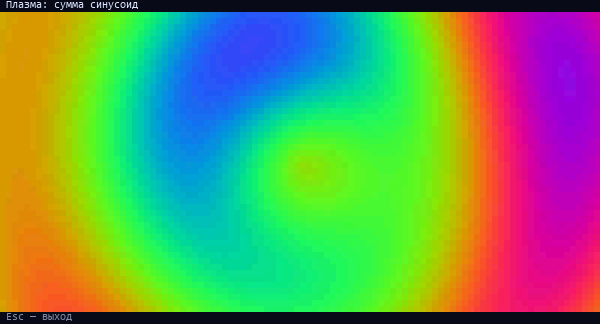
Рис. 12.3. Плазма в консоли
Создайте в папке игры папку fishki (если её ещё нет) и сохраните программу туда как fishki\12-plasma.cpp. Соберите её из папки игры вместе с нужными модулями:
Вот польза модулей: один раз написанный экран работает в любой программе.
Весь код шага 12Сверьтесь с готовой программой
Все 9 файлов игры после этой главы — целиком. Откройте файл, чтобы сравнить со своим, а кнопка «Копировать» поможет, если нужно догнать: вставьте код в файл с тем же именем в папке игры.
// ============================================================================// color.h — цвет пикселя. Цвет хранится в одном числе 0xRRGGBB:// по два шестнадцатеричных разряда на красный, зелёный и синий.// ============================================================================#pragma oncetypedefunsignedintColor;// Ограничить канал диапазоном 0..255inlineint clampChannel(int value) {return value < 0 ? 0 : (value > 255 ? 255 : value);}// Собрать цвет из красного, зелёного и синего (каждый 0..255)inlineColor rgb(int r, int g, int b) {return (Color)(clampChannel(r) << 16 | clampChannel(g) << 8 | clampChannel(b));}// Достать каналы обратноinlineint colorR(Color c) { return (c >> 16) & 255; }inlineint colorG(Color c) { return (c >> 8) & 255; }inlineint colorB(Color c) { return c & 255; }// Смешать два цвета: t = 0 — первый цвет, t = 1 — второйinlineColor mixColor(Color a, Color b, float t) {return rgb((int)(colorR(a) + (colorR(b) - colorR(a)) * t), (int)(colorG(a) + (colorG(b) - colorG(a)) * t), (int)(colorB(a) + (colorB(b) - colorB(a)) * t));}// Изменить яркость: k = 0.5 — вдвое темнее, k = 2 — вдвое ярчеinlineColor scaleColor(Color c, float k) {return rgb((int)(colorR(c) * k), (int)(colorG(c) * k), (int)(colorB(c) * k));}
config.h9 строкconfig.h
// ============================================================================// config.h — настройки игры. Все важные числа собраны здесь,// чтобы их было легко найти и поменять.// ============================================================================#pragma once// Картинкаconstint MAX_SCREEN_W = 320; // наибольшая ширина картинки в пикселяхconstint MAX_SCREEN_H = 200; // наибольшая высота картинки в пикселях
console.cpp65 строкconsole.cpp
// ============================================================================// console.cpp — всё, что связано с Windows-консолью, собрано в одном файле// ============================================================================#define WIN32_LEAN_AND_MEAN#define NOMINMAX#include <windows.h>#include <cstring>#include "console.h"// Как была настроена консоль до запуска игрыstaticDWORD originalOutMode = 0;staticDWORD originalInMode = 0;staticUINT originalCodePage = 0;void consoleInit() {HANDLE out = GetStdHandle(STD_OUTPUT_HANDLE);HANDLE in = GetStdHandle(STD_INPUT_HANDLE); GetConsoleMode(out, &originalOutMode); GetConsoleMode(in, &originalInMode); originalCodePage = GetConsoleOutputCP(); SetConsoleMode(out, originalOutMode | ENABLE_PROCESSED_OUTPUT | ENABLE_VIRTUAL_TERMINAL_PROCESSING); SetConsoleOutputCP(CP_UTF8); SetConsoleTitleA("Ori");// Отдельный экран, спрятать курсор, очистить экранconstchar* start = "\x1b[?1049h\x1b[?25l\x1b[2J"; consoleWrite(start, (int)strlen(start));}void consoleRestore() {// Обычные цвета, показать курсор, вернуться на основной экранconstchar* finish = "\x1b[0m\x1b[?25h\x1b[?1049l"; consoleWrite(finish, (int)strlen(finish)); SetConsoleMode(GetStdHandle(STD_OUTPUT_HANDLE), originalOutMode); SetConsoleMode(GetStdHandle(STD_INPUT_HANDLE), originalInMode); SetConsoleOutputCP(originalCodePage);}bool consoleSize(int& cols, int& rows) { CONSOLE_SCREEN_BUFFER_INFO info;if (!GetConsoleScreenBufferInfo(GetStdHandle(STD_OUTPUT_HANDLE), &info)) {returnfalse; } cols = info.srWindow.Right - info.srWindow.Left + 1; rows = info.srWindow.Bottom - info.srWindow.Top + 1;returntrue;}bool keyDown(int virtualKey) {return (GetAsyncKeyState(virtualKey) & 0x8000) != 0;}bool consoleWrite(constchar* data, int length) {if (length < 0) returnfalse;int sent = 0;while (sent < length) {DWORD written = 0;DWORD remaining = (DWORD)(length - sent);if (!WriteFile(GetStdHandle(STD_OUTPUT_HANDLE), data + sent, remaining, &written, NULL) || written == 0 || written > remaining) returnfalse; sent += (int)written; }returntrue;}
console.h12 строкconsole.h
// ============================================================================// console.h — окно консоли Windows: настройка, клавиши, вывод// ============================================================================#pragma oncevoid consoleInit(); // включить цвета и UTF-8, перейти на отдельный экранvoid consoleRestore(); // вернуть консоль в исходное состояниеbool consoleSize(int& cols, int& rows); // видимый размер окна в символахbool keyDown(int virtualKey); // зажата ли клавиша прямо сейчас// Полностью записать данные; false — ошибка или неполная записьbool consoleWrite(constchar* data, int length);
// ============================================================================// ORI — консольная игра-платформер, вид сбоку.// Картинка рисуется пикселями из символов '▀' и ANSI-цветов.// Без классов: только данные (структуры) и функции.//// Сборка: build.bat; отладочная сборка: debug.bat.// В скриптах перечислены только исходники игры этого шага.// ============================================================================#define WIN32_LEAN_AND_MEAN#define NOMINMAX#include <windows.h>#include "console.h"#include "screen.h"// Ночной пейзаж: небо, луна и земляstaticvoid drawNightScene() {int w = screenWidth(), h = screenHeight();// Небо: от тёмно-синего вверху к светлому у горизонтаfor (int y = 0; y < h; y++) {Color sky = mixColor(rgb(6, 8, 28), rgb(24, 46, 84), (float)y / h);for (int x = 0; x < w; x++) putPixel(x, y, sky); }// Луна — круг: точка внутри, если x² + y² <= r²constint MOON_X = 78, MOON_Y = 10, MOON_R = 6;for (int dy = -MOON_R; dy <= MOON_R; dy++) {for (int dx = -MOON_R; dx <= MOON_R; dx++) {if (dx * dx + dy * dy <= MOON_R * MOON_R) putPixel(MOON_X + dx, MOON_Y + dy, rgb(230, 240, 255)); } }// Земля: две строки травы, ниже каменьconstint GROUND_Y = 38;for (int y = GROUND_Y; y < h; y++) {Color c = (y < GROUND_Y + 2) ? rgb(96, 220, 120) : rgb(38, 44, 80);for (int x = 0; x < w; x++) putPixel(x, y, c); }}int main() { consoleInit();int previousCols = -1, previousRows = -1;while (!keyDown(VK_ESCAPE)) {int cols, rows;if (consoleSize(cols, rows) && (cols != previousCols || rows != previousRows)) { drawNightScene(); textAdd(LINE_TOP, " ORI", rgb(200, 220, 255)); textAdd(LINE_BOTTOM, " Esc — выход", rgb(130, 140, 170)); screenPresent(); previousCols = cols; previousRows = rows; } Sleep(20); // новый рисунок нужен только после изменения размера окна } consoleRestore();return0;}
screen.cpp160 строкscreen.cpp
// ============================================================================// screen.cpp — картинка в памяти и её вывод в консоль ANSI-командами.// Одна клетка консоли = два пикселя: символ '▀' рисует верхний пиксель// цветом текста, а нижний остаётся цветом фона.// ============================================================================#include <cstdio>#include <cstring>#include "config.h"#include "console.h"#include "screen.h"// ---------------------------------------------------------------------------// Данные модуля (static — видны только в этом файле)// ---------------------------------------------------------------------------staticColor pixels[MAX_SCREEN_H][MAX_SCREEN_W];staticint width = 100; // размер картинки в пикселяхstaticint height = 50;// Текст кадра: строки над и под картинкойconstint MAX_SEGMENTS = 32;constint MAX_TEXT = 128;struct TextSegment {char text[MAX_TEXT];Color color;};static TextSegment lineSegments[2][MAX_SEGMENTS];staticint lineSegmentCount[2] = { 0, 0 };// Сюда собирается весь текст кадра вместе с ANSI-командамиstaticchar out[4 * 1024 * 1024];staticint outLength = 0;// ---------------------------------------------------------------------------// Размер и пиксели// ---------------------------------------------------------------------------int screenWidth() { return width; }int screenHeight() { return height; }void putPixel(int x, int y, Color c) {if (x >= 0 && y >= 0 && x < width && y < height) { pixels[y][x] = c; }}// ---------------------------------------------------------------------------// Текст// ---------------------------------------------------------------------------void textAdd(TextLine line, constchar* text, Color color) {int& count = lineSegmentCount[line];if (count >= MAX_SEGMENTS) return; snprintf(lineSegments[line][count].text, MAX_TEXT, "%s", text); lineSegments[line][count].color = color; count++;}// ---------------------------------------------------------------------------// Сборка кадра из ANSI-команд// ---------------------------------------------------------------------------staticvoid emit(constchar* s) {int n = (int)strlen(s); memcpy(out + outLength, s, n); outLength += n;}// Число цифрами — вручную: так быстрее, чем через snprintfstaticvoid emitInt(int value) {char digits[12];int n = 0;if (value < 0) { out[outLength++] = '-'; value = -value; }do { digits[n++] = (char)('0' + value % 10); value /= 10; } while (value > 0);while (n > 0) { out[outLength++] = digits[--n]; }}// Команда цвета: фона (background = true) или текстаstaticvoid emitColor(bool background, Color c) { emit(background ? "\x1b[48;2;" : "\x1b[38;2;"); emitInt(colorR(c)); emit(";"); emitInt(colorG(c)); emit(";"); emitInt(colorB(c)); emit("m");}staticvoid emitLine(TextLine line) { emitColor(true, rgb(8, 10, 24));for (int i = 0; i < lineSegmentCount[line]; i++) { emitColor(false, lineSegments[line][i].color); emit(lineSegments[line][i].text); } emit("\x1b[K\x1b[0m"); // закрасить строку до конца и сбросить цвета}staticvoid emitPixels() {Color lastFg = 0xFFFFFFFF; // какой цвет текста сейчас включён (такого цвета не бывает — «никакой»)Color lastBg = 0xFFFFFFFF;for (int y = 0; y + 1 < height; y += 2) {for (int x = 0; x < width; x++) {// Огрубляем цвета: глаз разницы не видит, а одинаковых соседей большеColor top = pixels[y][x] & 0xF8F8F8;Color bottom = pixels[y + 1][x] & 0xF8F8F8;if (top == bottom) {// Оба пикселя одинаковые — хватит пробела с цветом фонаif (bottom != lastBg) { emitColor(true, bottom); lastBg = bottom; } out[outLength++] = ' '; } else {if (top != lastFg) { emitColor(false, top); lastFg = top; }if (bottom != lastBg) { emitColor(true, bottom); lastBg = bottom; } emit("\xE2\x96\x80"); // ▀ } } emit("\x1b[0m\r\n"); lastFg = 0xFFFFFFFF; lastBg = 0xFFFFFFFF; }}void screenPresent() {int availableCols, availableRows;if (consoleSize(availableCols, availableRows) && (availableCols < screenWidth() + 1 || availableRows < screenHeight() / 2 + 2)) {constchar* warning = "\x1b[0m\x1b[2J\x1b[HУвеличьте окно консоли";// In a very narrow window use a short ASCII hint to avoid wrapping.if (availableCols < 24) warning = "\x1b[0m\x1b[2J\x1b[HResize";if (availableCols < 7) warning = "\x1b[0m\x1b[2J"; consoleWrite(warning, (int)strlen(warning)); lineSegmentCount[0] = lineSegmentCount[1] = 0;return; } outLength = 0; emit("\x1b[H"); // курсор в левый верхний угол: рисуем поверх прошлого кадра emitLine(LINE_TOP); emit("\r\n"); emitPixels(); emitLine(LINE_BOTTOM); consoleWrite(out, outLength);// Текст задаётся заново в каждом кадре lineSegmentCount[LINE_TOP] = 0; lineSegmentCount[LINE_BOTTOM] = 0;}
screen.h17 строкscreen.h
// ============================================================================// screen.h — картинка из пикселей и строки текста над и под ней.// Сначала рисуем кадр в памяти, потом screenPresent() показывает его целиком.// ============================================================================#pragma once#include "color.h"int screenWidth();int screenHeight();void putPixel(int x, int y, Color c);// Текст: строка над картинкой и строка под нейenum TextLine { LINE_TOP, LINE_BOTTOM };void textAdd(TextLine line, constchar* text, Color color);void screenPresent(); // показать кадр в консоли
Задания
Часть II. Ори в мире пикселей
Глава 13Игровой цикл: квадрат слушается клавиш
Картинка из главы 12 стоит на месте. В этой главе она оживёт: появится игровой цикл, как в текстовой игре из главы 8, но плавный — 40 кадров в секунду. Героя пока заменит светлый квадрат: сначала научим его двигаться, а нарисуем настоящего Ори в главе 16. И сразу разложим будущую игру по модулям, чтобы ей было куда расти.
Разбираемся
Один кадр и один новый навык
Часы дают dt в секундах → читаем клавиши → меняем состояние → рисуем → ждём следующий кадр. held означает «клавиша сейчас удерживается», pressed — «перешла из отпущенного состояния в нажатое именно сейчас». Для движения нужен held, для одиночного действия — pressed. Сначала проверьте это на квадрате. Остальные новые файлы подключайте как готовые модули по полному листингу: сейчас важно понять путь данных, а не каждую служебную строку.
Клавиша зажата или нажата
В текстовой игре мы читали клавиши через _kbhit и _getch: каждое нажатие приходило одно за другим, как буквы при наборе текста. Если зажать стрелку, Ори делал шаг, потом замирал на полсекунды, а потом бежал — так работает автоповтор клавиатуры. Для платформера это не годится.
Функция keyDown из главы 12 отвечает на другой вопрос: зажата ли клавиша прямо сейчас. Если спрашивать её в каждом кадре, движение получается плавным и без задержек.
Но иногда важно другое: клавишу только что нажали. Например, прыжок: если игрок держит пробел, Ори должен прыгнуть один раз, а не скакать без остановки. Поэтому для каждой кнопки будем хранить два флага:
Фрагмент кода — место вставки указано в тексте
structKey {
bool held; // зажата сейчасbool pressed; // нажата именно в этом кадре
};
pressed вычисляется просто: кнопка зажата сейчас, но не была зажата в прошлом кадре.
Фрагмент кода — место вставки указано в тексте
key.pressed = downNow && !key.held; // key.held здесь ещё старое — из прошлого кадра
key.held = downNow;
Время кадра: dt
Компьютеры бывают быстрые и медленные, а консоль иногда задерживает вывод. Если двигать квадрат «на 2 пикселя за кадр», на быстром компьютере он побежит быстрее. Поэтому скорость задают в пикселях в секунду, а в каждом кадре меряют, сколько секунд прошло с прошлого кадра. Это время называют dt (от delta time — «приращение времени»):
Фрагмент кода — место вставки указано в тексте
x += speed * dt; // speed = 95 пикселей/с, dt = 0.025 с → сдвиг на 2.375 пикселя
Сдвиг получается дробным, поэтому координаты героя — float. Если дробную часть терять, движение будет рывками.
Часы из std::chrono
Точное время даёт библиотека <chrono>. Её имена начинаются с std:: — так помечено всё, что входит в стандартную библиотеку C++.
Перед примером разберём обозначения. auto просит компилятор определить тип по выражению справа от =. std::chrono::steady_clock::now() — вызов часов: :: отделяет части полного имени, пустые () вызывают действие без аргументов. В duration<float> угловые скобки выбирают, что секунды должны храниться дробным числом. Вызов .count() отдаёт число из полученного промежутка времени. Это интерфейс библиотеки; писать такие типы с нуля мы пока не будем.
Фрагмент кода — место вставки указано в тексте
#include <chrono>auto start = std::chrono::steady_clock::now(); // который сейчас час// ... что-то делаем ...auto elapsed = std::chrono::steady_clock::now() - start;
float seconds = std::chrono::duration<float>(elapsed).count(); // прошло секунд
steady_clock — часы, которые всегда идут вперёд (их не собьёт перевод времени).
auto — «компилятор, выведи тип сам». Настоящий тип у этих значений очень длинный, и auto избавляет от необходимости его писать.
duration<float>(...).count() — превратить промежуток времени в дробное число секунд.
А std::this_thread::sleep_for(...) из <thread> — пауза нужной длины, как Sleep, только точнее.
std::chrono::milliseconds(25) создаёт промежуток в 25 миллисекунд. Константу FRAME_TIME в полном main.cpp зададим именно так. В схеме ниже она уже считается созданной.
Цикл с постоянным темпом
Каждый кадр делает три дела: ввод, обновление, отрисовку. Если всё это заняло меньше 25 мс, остаток кадра ждём — так получается около 40 кадров в секунду и процессор не греется зря:
Фрагмент кода — место вставки указано в тексте
while (true) {
auto frameStart = std::chrono::steady_clock::now();
// 1. ввод 2. обновление 3. отрисовкаauto elapsed = std::chrono::steady_clock::now() - frameStart;
if (elapsed < FRAME_TIME) std::this_thread::sleep_for(FRAME_TIME - elapsed);
}
Объявить структуру, не описывая её
Модуль игрока работает с Game, а Game содержит игрока — файлы ссылаются друг на друга по кругу. Если player.h подключит game.h, а game.h — player.h, компилятор запутается. Выручает предварительное объявление:
Фрагмент кода — место вставки указано в тексте
structGame; // такая структура есть, описана в другом местеvoid updatePlayer(Game& g, constInput& in, float dt);
Чтобы передать структуру по ссылке, компилятору достаточно знать, что она существует. Её поля понадобятся только в .cpp, а там мы подключим game.h целиком.
Игра · шаг 13Квадрат, который бегает
Если добавились модули, замените и бат-файлы: список исходников в них относится к текущей главе.
Листинг 13.1. Сборка игры этого шага build.batКуда: замените всё содержимое файла этим текстом
Листинг 13.3. Скорость бега config.hКуда: в конец файла, после: «const int MAX_SCREEN_W = 320; // наибольшая ширина картинк»
// Движениеconstfloat RUN_SPEED = 95.0f; // скорость бега, пикселей в секунду
Листинг 13.4. Размер героя config.hКуда: в конец файла, после: «const float RUN_SPEED = 95.0f; // скорость бега, пикселей »
// Ориconstint PLAYER_W = 16; // ширина хитбоксаconstint PLAYER_H = 24; // высота хитбокса
Размер героя называется хитбоксом — прямоугольник, которым герой задевает стены и врагов. Картинка Ори будет чуть больше, но столкновения считаются по хитбоксу.
Консоль узнаёт свой размер
Листинг 13.5. Описание модуля в шапке: теперь и размер окна console.h
void consoleInit(); // включить цвета и UTF-8, перейти на отдельный экранvoid consoleRestore(); // вернуть консоль в исходное состояниеbool consoleSize(int& cols, int& rows); // видимый размер окна в символахvoid consoleFlushInput(); // выбросить накопившиеся нажатия клавишbool keyDown(int virtualKey); // зажата ли клавиша прямо сейчас
Листинг 13.7. Если игру закрыли через Ctrl+C console.cppКуда: после: «static DWORD originalOutMode = 0;»; перед: функция consoleInit
// Ctrl+C или закрытие: consoleRestore сначала останавливает writer.// Обработчик делает ограниченную по времени попытку уборки, затем Windows завершает процесс.staticBOOL WINAPI onConsoleEvent(DWORD) { consoleRestore();return FALSE;}
Если игрок нажмёт Ctrl+C или закроет окно, Windows сама вызовет нашу функцию onConsoleEvent — а мы вернём консоль в обычный вид. Функцию передают Windows по имени в SetConsoleCtrlHandler (это видно в следующем листинге). Слова BOOL WINAPI — требование Windows к такой функции.
Листинг 13.8. Настройка консоли console.cpp
void consoleInit() {HANDLE out = GetStdHandle(STD_OUTPUT_HANDLE);HANDLE in = GetStdHandle(STD_INPUT_HANDLE); GetConsoleMode(out, &originalOutMode); GetConsoleMode(in, &originalInMode); originalCodePage = GetConsoleOutputCP(); SetConsoleMode(out, originalOutMode | ENABLE_PROCESSED_OUTPUT | ENABLE_VIRTUAL_TERMINAL_PROCESSING); SetConsoleMode(in, ENABLE_EXTENDED_FLAGS); // выключить выделение мышью: оно ставит вывод на паузу SetConsoleOutputCP(CP_UTF8); SetConsoleCtrlHandler(onConsoleEvent, TRUE); SetConsoleTitleA("Ori");// Отдельный экран, спрятать курсор, очистить экранconstchar* start = "\x1b[?1049h\x1b[?25l\x1b[2J"; consoleWrite(start, (int)strlen(start));}
ENABLE_EXTENDED_FLAGS выключает выделение текста мышью: случайный щелчок по окну иначе ставит вывод на паузу, и игра «замирает».
Листинг 13.9. Перед выходом выбрасываем нажатия console.cpp
void consoleRestore() {// Обычные цвета, показать курсор, вернуться на основной экранconstchar* finish = "\x1b[0m\x1b[?25h\x1b[?1049l"; consoleWrite(finish, (int)strlen(finish)); consoleFlushInput(); SetConsoleMode(GetStdHandle(STD_OUTPUT_HANDLE), originalOutMode); SetConsoleMode(GetStdHandle(STD_INPUT_HANDLE), originalInMode); SetConsoleOutputCP(originalCodePage);}
Функцию consoleSize мы уже взяли готовой в главе 12 для проверки маленького окна; теперь используем её для подстройки картинки.
CONSOLE_SCREEN_BUFFER_INFO — структура Windows, в поле srWindow которой лежат границы видимой части окна. Функция возвращает два числа сразу — через ссылки cols и rows: она записывает ответ прямо в переменные того, кто её вызвал. Сама функция возвращает bool — получилось ли узнать размер.
Листинг 13.10. Выбросить накопившиеся нажатия console.cppКуда: после: функция consoleSize; перед: функция keyDown
keyDown не читает нажатия из очереди, а консоль всё равно их копит. Если очередь не чистить, после выхода из игры в консоль вывалятся сотни букв.
Математика
Сначала добавим помощники, которые понадобятся экрану и герою. clampi(value, lo, hi) ограничивает целое число рамками: ниже lo вернёт lo, выше hi — hi, иначе само число. clampf делает то же с дробными числами. lerpf(a, b, t) выбирает промежуточное число: при t = 0 получаем a, при t = 1 — b, при t = 0.5 — середину. Например, lerpf(10, 20, 0.5f) даёт 15.
Листинг 13.11. Маленькие помощники mathx.hКуда: новый файл — создайте его
// ============================================================================// mathx.h — маленькие математические помощники// ============================================================================#pragma once// Зажать число между lo и hiinlineint clampi(int v, int lo, int hi) { return v < lo ? lo : (v > hi ? hi : v); }inlinefloat clampf(float v, float lo, float hi) { return v < lo ? lo : (v > hi ? hi : v); }// Плавный переход: t = 0 — a, t = 1 — b, t = 0.5 — ровно посерединеinlinefloat lerpf(float a, float b, float t) { return a + (b - a) * t; }
Картинка под размер окна
Листинг 13.12. Подогнать картинку под окно screen.hКуда: после: подключения и настройки; перед: функция screenWidth
bool screenFitToConsole(); // подогнать размер картинки под окно; true — размер изменился
staticColor pixels[MAX_SCREEN_H][MAX_SCREEN_W];staticint width = 100; // размер картинки в пикселяхstaticint height = 50;staticint width = 120; // размер картинки в пикселях, подстраивается под окноstaticint height = 70;staticint consoleCols = 0;staticint consoleRows = 0;
В формуле высоты встретится & ~1: ~1 — маска со сброшенным младшим битом, а & обнуляет этот бит в числе. Так высота становится чётной: экран рисует пиксели парами. Маленькое окно обрабатывается сообщением, а не рисованием за границами.
Листинг 13.15. Размер картинки по размеру окна screen.cppКуда: после: заголовок раздела «Размер и пиксели»; перед: функция screenWidth
bool screenFitToConsole() {int cols, rows;if (!consoleSize(cols, rows)) returnfalse;if (cols == consoleCols && rows == consoleRows) returnfalse; consoleCols = cols; consoleRows = rows;// На столбец уже окна: символ в последнем столбце переносит курсор на новую строку width = clampi(cols - 1, 40, MAX_SCREEN_W);// Две строки занимает текст, в каждой строке консоли два пикселя; высота чётная height = clampi((rows - 2) * 2, 40, MAX_SCREEN_H) & ~1;constchar* clear = "\x1b[0m\x1b[2J"; consoleWrite(clear, (int)strlen(clear));returntrue;}
Ширина картинки — число столбцов окна минус один (символ в последнем столбце переносит курсор на новую строку, и картинка «поехала» бы). Высота — две строки на текст, а в каждой строке два пикселя. clampi не даёт картинке стать слишком маленькой или больше массива. & ~1 обнуляет последний двоичный разряд — делает число чётным: пиксели идут парами. Если размер изменился, экран очищается, чтобы не осталось обрывков старого кадра.
Клавиши
Листинг 13.16. Кнопки управления input.hКуда: новый файл — создайте его
// ============================================================================// input.h — какие кнопки управления нажаты// ============================================================================#pragma once// Одна кнопка управленияstructKey {bool held; // зажата сейчасbool pressed; // нажата именно в этом кадре (в прошлом кадре не была зажата)};structInput {Key left;Key right;Key up;Key down;Key quit;};void readInput(Input& in);
Листинг 13.17. Опрос клавиатуры input.cppКуда: новый файл — создайте его
Одна кнопка управления может отзываться на несколько клавиш: A или стрелка влево. Коды букв — сами буквы в кавычках ('A'), коды особых клавиш — константы Windows вроде VK_LEFT и VK_ESCAPE.
Герой
Листинг 13.18. Модуль героя: объявления player.hКуда: новый файл — создайте его
// ============================================================================// player.h — Ори: управление, прыжки, жизни// ============================================================================#pragma oncestructGame; // описаны в других файлах — здесь достаточно объявленийstructInput;structPlayer {float x, y; // левый верхний угол хитбокса};// Поставить Ори в точку (x, y) и сбросить его состояние (жизни, прыжки...)void placePlayer(Player& player, float x, float y);void updatePlayer(Game& g, constInput& in, float dt);void drawPlayer(constGame& g);
Листинг 13.19. Квадрат двигается player.cppКуда: новый файл — создайте его
// ============================================================================// player.cpp — Ори: бег, прыжки, урон, отрисовка// ============================================================================#include <cmath>#include "config.h"#include "game.h"#include "input.h"#include "mathx.h"#include "player.h"#include "screen.h"void placePlayer(Player& p, float x, float y) { p.x = x; p.y = y;}void updatePlayer(Game& g, constInput& in, float dt) {Player& p = g.player;int dirX = (in.right.held ? 1 : 0) - (in.left.held ? 1 : 0);int dirY = (in.down.held ? 1 : 0) - (in.up.held ? 1 : 0); p.x += dirX * RUN_SPEED * dt; p.y += dirY * RUN_SPEED * dt;// не даём квадрату уйти за край экрана p.x = clampf(p.x, 0, (float)(screenWidth() - PLAYER_W)); p.y = clampf(p.y, 0, (float)(screenHeight() - PLAYER_H));}void drawPlayer(constGame& g) {constPlayer& p = g.player;// Пока вместо Ори — светлый квадрат размером с хитбоксfor (int y = 0; y < PLAYER_H; y++) {for (int x = 0; x < PLAYER_W; x++) { putPixel((int)p.x + x, (int)p.y + y, rgb(230, 240, 255)); } }}
dirX — направление по горизонтали: −1, 0 или 1. Если зажаты обе стрелки, получится 0, и квадрат стоит. Умножаем направление на скорость и на dt — получаем сдвиг за этот кадр. clampf не выпускает квадрат за край экрана.
Вся игра
Листинг 13.20. Вся игра — в одной структуре game.hКуда: новый файл — создайте его
// ============================================================================// game.h — вся игра в одной структуре Game. Функции получают её по ссылке,// поэтому глобальные переменные не нужны.// ============================================================================#pragma once#include "config.h"#include "player.h"structInput;structGame {float time; // сколько секунд идёт игра — для анимацийPlayer player;};void startNewGame(Game& g);void updateGame(Game& g, constInput& in, float dt);
Листинг 13.21. Начало игры и обновление game.cppКуда: новый файл — создайте его
// ============================================================================// game.cpp — правила игры: что обновлять в каждом кадре// ============================================================================#include <algorithm>#include <cmath>#include <cstring>#include "game.h"#include "input.h"#include "screen.h"void startNewGame(Game& g) { placePlayer(g.player, screenWidth() / 2.0f, screenHeight() / 2.0f); // левый верхний угол квадрата — в центре экрана}void updateGame(Game& g, constInput& in, float dt) { g.time += dt; updatePlayer(g, in, dt);}
Как и в главе 10, всё состояние игры лежит в структуре Game, а функции получают её по ссылке. g.time — сколько секунд идёт игра: пригодится для анимаций.
Рисование кадра
Листинг 13.22. Модуль рисования: объявления render.hКуда: новый файл — создайте его
// ============================================================================// render.h — рисование кадра целиком// ============================================================================#pragma oncestructGame;void renderGame(constGame& g); // нарисовать мир, персонажей и текст в картинку экрана
Листинг 13.23. Порядок рисования кадра render.cppКуда: новый файл — создайте его
// ============================================================================// render.cpp — фон и порядок рисования кадра// ============================================================================#include <cmath>#include "game.h"#include "hud.h"#include "mathx.h"#include "render.h"#include "screen.h"// Пока фон — просто ночное небо: сверху темнее, к горизонту светлееstaticvoid drawBackground() {for (int y = 0; y < screenHeight(); y++) {Color sky = mixColor(rgb(6, 8, 28), rgb(24, 46, 84), (float)y / screenHeight());for (int x = 0; x < screenWidth(); x++) putPixel(x, y, sky); }}void renderGame(constGame& g) { drawBackground(); drawPlayer(g); drawHud();}
renderGame рисует кадр слоями, от дальнего к ближнему: фон, герой, текст. Что нарисовано позже, то оказывается сверху.
Листинг 13.24. Текст поверх игры: объявления hud.hКуда: новый файл — создайте его
// ============================================================================// hud.h — строки текста над и под картинкой и надписи поверх неё// ============================================================================#pragma oncevoid drawHud();
Листинг 13.25. Строки над и под картинкой hud.cppКуда: новый файл — создайте его
// ============================================================================// hud.cpp — строки текста над картинкой и под ней// ============================================================================#include <cstdio>#include "game.h"#include "hud.h"#include "screen.h"constColor HUD_TEXT = rgb(200, 220, 255);constColor HINT_TEXT = rgb(130, 140, 170);staticvoid drawTopLine() { textAdd(LINE_TOP, " ORI — консольная версия", HUD_TEXT);}// Нижняя строка — подсказка по управлению (короче, если окно узкое)staticvoid drawBottomLine() {int w = screenWidth();if (w >= 60) textAdd(LINE_BOTTOM, " W/A/S/D или стрелки — двигать квадрат Esc — выход", HINT_TEXT);}void drawHud() { drawTopLine(); drawBottomLine();}
HUD (от heads-up display) — так в играх называют надписи поверх картинки: жизни, счёт, подсказки. Подсказка внизу печатается, только если окно достаточно широкое.
Главный цикл
Листинг 13.26. Игровой цикл main.cppКуда: замените всё содержимое файла этим текстом
// ============================================================================// ORI — консольная игра-платформер, вид сбоку.// Картинка рисуется пикселями из символов '▀' и ANSI-цветов.// Без классов: только данные (структуры) и функции.//// Сборка: build.bat; отладочная сборка: debug.bat.// В скриптах перечислены только исходники игры этого шага.// ============================================================================#include <chrono>#include <thread>#include "console.h"#include "game.h"#include "input.h"#include "render.h"#include "screen.h"int main() { consoleInit(); screenFitToConsole();staticGame game; // вся игра; static — чтобы большая структура не лежала на стеке startNewGame(game);Input input = {};constauto FRAME_TIME = std::chrono::milliseconds(25); // 25 мс — около 40 кадров в секундуauto previous = std::chrono::steady_clock::now();while (true) {auto frameStart = std::chrono::steady_clock::now();float dt = std::chrono::duration<float>(frameStart - previous).count(); previous = frameStart;if (dt > 0.05f) dt = 0.05f; // после долгой паузы не прыгаем далеко вперёд screenFitToConsole(); consoleFlushInput(); readInput(input);if (input.quit.pressed) break; updateGame(game, input, dt); renderGame(game); screenPresent();auto elapsed = std::chrono::steady_clock::now() - frameStart;if (elapsed < FRAME_TIME) std::this_thread::sleep_for(FRAME_TIME - elapsed); } consoleRestore();return0;}
static Game game; — как в главе 11: большая структура живёт всё время программы, а не на стеке.
В начале каждого кадра считаем dt. Если компьютер задумался на секунду, dt выйдет огромным, и квадрат улетит сквозь стену; поэтому dt ограничен 0.05 секунды.
Дальше три дела кадра: ввод (readInput), обновление (updateGame), отрисовка (renderGame и screenPresent).
Рис. 13.1. Светлый квадрат летает по небу; внизу — подсказка по управлению
Растяните окно — картинка подстроится под новый размер.
ФишкаОгонь из DOOM
В игре DOOM 1993 года был знаменитый экран с огнём, и устроен он удивительно просто. Нижняя строка всегда раскалена. Каждый пиксель берёт жар у соседа снизу, чуть остывает и случайно сдвигается вбок — и снизу вверх ползут живые языки пламени.
Листинг 13.27. Огонь DOOM 13-fire.cpp
// Фишка главы 13: огонь из игры DOOM. Нижняя строка всегда раскалена,// а каждый пиксель берёт жар у соседа снизу, немного остывает и чуть сдвигается вбок.// Сборка из папки игры (файл лежит в папке fishki):// g++ -O2 -std=c++17 -Wall -Wextra -I. fishki\13-fire.cpp screen.cpp console.cpp -o fire.exe#define WIN32_LEAN_AND_MEAN#define NOMINMAX#include <windows.h>#include <cstdlib>#include "config.h"#include "console.h"#include "screen.h"constint MAX_HEAT = 36;staticint heat[MAX_SCREEN_H][MAX_SCREEN_W]; // жар каждого пикселя: 0..MAX_HEAT// Палитра огня: чёрный → тёмно-красный → оранжевый → жёлтый → белыйstaticColor fireColor(int h) {float t = (float)h / MAX_HEAT;if (t < 0.33f) return mixColor(rgb(0, 0, 0), rgb(160, 20, 10), t / 0.33f);if (t < 0.66f) return mixColor(rgb(160, 20, 10), rgb(255, 150, 20), (t - 0.33f) / 0.33f);return mixColor(rgb(255, 150, 20), rgb(255, 255, 220), (t - 0.66f) / 0.34f);}int main() { consoleInit(); screenFitToConsole();while (!keyDown(VK_ESCAPE)) {int w = screenWidth(), h = screenHeight();bool burning = !keyDown(VK_SPACE); // пробел гасит огонь снизуfor (int x = 0; x < w; x++) heat[h - 1][x] = burning ? MAX_HEAT : 0;// Снизу вверх: жар поднимается, остывает и колышетсяfor (int y = 0; y < h - 1; y++) {for (int x = 0; x < w; x++) {int below = heat[y + 1][x];int cooling = rand() % 3; // 0, 1 или 2int drift = rand() % 3 - 1; // -1, 0 или 1int nx = x + drift;if (nx >= 0 && nx < w) heat[y][nx] = below > cooling ? below - cooling : 0; } }for (int y = 0; y < h; y++) {for (int x = 0; x < w; x++) putPixel(x, y, fireColor(heat[y][x])); } textAdd(LINE_TOP, " Огонь DOOM", rgb(255, 200, 120)); textAdd(LINE_BOTTOM, " Пробел — потушить Esc — выход", rgb(130, 140, 170)); screenPresent(); Sleep(25); } consoleRestore();return0;}
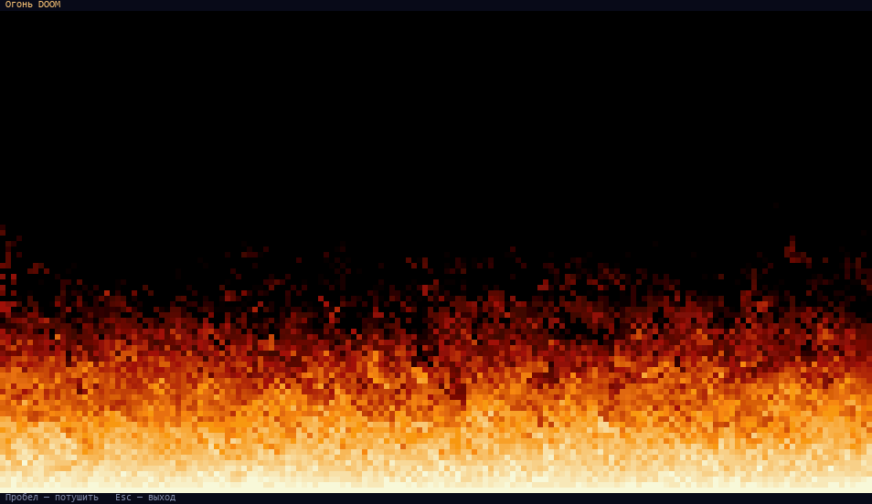
Рис. 13.2. Пламя в консоли
Создайте в папке игры папку fishki (если её ещё нет) и сохраните программу туда как fishki\13-fire.cpp. Соберите её из папки игры вместе с нужными модулями:
Все 20 файлов игры после этой главы — целиком. Откройте файл, чтобы сравнить со своим, а кнопка «Копировать» поможет, если нужно догнать: вставьте код в файл с тем же именем в папке игры.
// ============================================================================// color.h — цвет пикселя. Цвет хранится в одном числе 0xRRGGBB:// по два шестнадцатеричных разряда на красный, зелёный и синий.// ============================================================================#pragma oncetypedefunsignedintColor;// Ограничить канал диапазоном 0..255inlineint clampChannel(int value) {return value < 0 ? 0 : (value > 255 ? 255 : value);}// Собрать цвет из красного, зелёного и синего (каждый 0..255)inlineColor rgb(int r, int g, int b) {return (Color)(clampChannel(r) << 16 | clampChannel(g) << 8 | clampChannel(b));}// Достать каналы обратноinlineint colorR(Color c) { return (c >> 16) & 255; }inlineint colorG(Color c) { return (c >> 8) & 255; }inlineint colorB(Color c) { return c & 255; }// Смешать два цвета: t = 0 — первый цвет, t = 1 — второйinlineColor mixColor(Color a, Color b, float t) {return rgb((int)(colorR(a) + (colorR(b) - colorR(a)) * t), (int)(colorG(a) + (colorG(b) - colorG(a)) * t), (int)(colorB(a) + (colorB(b) - colorB(a)) * t));}// Изменить яркость: k = 0.5 — вдвое темнее, k = 2 — вдвое ярчеinlineColor scaleColor(Color c, float k) {return rgb((int)(colorR(c) * k), (int)(colorG(c) * k), (int)(colorB(c) * k));}
config.h16 строкconfig.h
// ============================================================================// config.h — настройки игры. Все важные числа собраны здесь,// чтобы их было легко найти и поменять.// ============================================================================#pragma once// Картинкаconstint MAX_SCREEN_W = 320; // наибольшая ширина картинки в пикселяхconstint MAX_SCREEN_H = 200; // наибольшая высота картинки в пикселях// Движениеconstfloat RUN_SPEED = 95.0f; // скорость бега, пикселей в секунду// Ориconstint PLAYER_W = 16; // ширина хитбоксаconstint PLAYER_H = 24; // высота хитбокса
console.cpp79 строкconsole.cpp
// ============================================================================// console.cpp — всё, что связано с Windows-консолью, собрано в одном файле// ============================================================================#define WIN32_LEAN_AND_MEAN#define NOMINMAX#include <windows.h>#include <cstring>#include "console.h"// Как была настроена консоль до запуска игрыstaticDWORD originalOutMode = 0;staticDWORD originalInMode = 0;staticUINT originalCodePage = 0;// Ctrl+C или закрытие: consoleRestore сначала останавливает writer.// Обработчик делает ограниченную по времени попытку уборки, затем Windows завершает процесс.staticBOOL WINAPI onConsoleEvent(DWORD) { consoleRestore();return FALSE;}void consoleInit() {HANDLE out = GetStdHandle(STD_OUTPUT_HANDLE);HANDLE in = GetStdHandle(STD_INPUT_HANDLE); GetConsoleMode(out, &originalOutMode); GetConsoleMode(in, &originalInMode); originalCodePage = GetConsoleOutputCP(); SetConsoleMode(out, originalOutMode | ENABLE_PROCESSED_OUTPUT | ENABLE_VIRTUAL_TERMINAL_PROCESSING); SetConsoleMode(in, ENABLE_EXTENDED_FLAGS); // выключить выделение мышью: оно ставит вывод на паузу SetConsoleOutputCP(CP_UTF8); SetConsoleCtrlHandler(onConsoleEvent, TRUE); SetConsoleTitleA("Ori");// Отдельный экран, спрятать курсор, очистить экранconstchar* start = "\x1b[?1049h\x1b[?25l\x1b[2J"; consoleWrite(start, (int)strlen(start));}void consoleRestore() {// Обычные цвета, показать курсор, вернуться на основной экранconstchar* finish = "\x1b[0m\x1b[?25h\x1b[?1049l"; consoleWrite(finish, (int)strlen(finish)); consoleFlushInput(); SetConsoleMode(GetStdHandle(STD_OUTPUT_HANDLE), originalOutMode); SetConsoleMode(GetStdHandle(STD_INPUT_HANDLE), originalInMode); SetConsoleOutputCP(originalCodePage);}bool consoleSize(int& cols, int& rows) { CONSOLE_SCREEN_BUFFER_INFO info;if (!GetConsoleScreenBufferInfo(GetStdHandle(STD_OUTPUT_HANDLE), &info)) {returnfalse; } cols = info.srWindow.Right - info.srWindow.Left + 1; rows = info.srWindow.Bottom - info.srWindow.Top + 1;returntrue;}void consoleFlushInput() { FlushConsoleInputBuffer(GetStdHandle(STD_INPUT_HANDLE));}bool keyDown(int virtualKey) {return (GetAsyncKeyState(virtualKey) & 0x8000) != 0;}bool consoleWrite(constchar* data, int length) {if (length < 0) returnfalse;int sent = 0;while (sent < length) {DWORD written = 0;DWORD remaining = (DWORD)(length - sent);if (!WriteFile(GetStdHandle(STD_OUTPUT_HANDLE), data + sent, remaining, &written, NULL) || written == 0 || written > remaining) returnfalse; sent += (int)written; }returntrue;}
console.h13 строкconsole.h
// ============================================================================// console.h — окно консоли Windows: настройка, размер, клавиши, вывод// ============================================================================#pragma oncevoid consoleInit(); // включить цвета и UTF-8, перейти на отдельный экранvoid consoleRestore(); // вернуть консоль в исходное состояниеbool consoleSize(int& cols, int& rows); // видимый размер окна в символахvoid consoleFlushInput(); // выбросить накопившиеся нажатия клавишbool keyDown(int virtualKey); // зажата ли клавиша прямо сейчас// Полностью записать данные; false — ошибка или неполная записьbool consoleWrite(constchar* data, int length);
// ============================================================================// game.cpp — правила игры: что обновлять в каждом кадре// ============================================================================#include <algorithm>#include <cmath>#include <cstring>#include "game.h"#include "input.h"#include "screen.h"void startNewGame(Game& g) { placePlayer(g.player, screenWidth() / 2.0f, screenHeight() / 2.0f); // левый верхний угол квадрата — в центре экрана}void updateGame(Game& g, constInput& in, float dt) { g.time += dt; updatePlayer(g, in, dt);}
game.h18 строкgame.h
// ============================================================================// game.h — вся игра в одной структуре Game. Функции получают её по ссылке,// поэтому глобальные переменные не нужны.// ============================================================================#pragma once#include "config.h"#include "player.h"structInput;structGame {float time; // сколько секунд идёт игра — для анимацийPlayer player;};void startNewGame(Game& g);void updateGame(Game& g, constInput& in, float dt);
hud.cpp26 строкhud.cpp
// ============================================================================// hud.cpp — строки текста над картинкой и под ней// ============================================================================#include <cstdio>#include "game.h"#include "hud.h"#include "screen.h"constColor HUD_TEXT = rgb(200, 220, 255);constColor HINT_TEXT = rgb(130, 140, 170);staticvoid drawTopLine() { textAdd(LINE_TOP, " ORI — консольная версия", HUD_TEXT);}// Нижняя строка — подсказка по управлению (короче, если окно узкое)staticvoid drawBottomLine() {int w = screenWidth();if (w >= 60) textAdd(LINE_BOTTOM, " W/A/S/D или стрелки — двигать квадрат Esc — выход", HINT_TEXT);}void drawHud() { drawTopLine(); drawBottomLine();}
hud.h6 строкhud.h
// ============================================================================// hud.h — строки текста над и под картинкой и надписи поверх неё// ============================================================================#pragma oncevoid drawHud();
// ============================================================================// input.h — какие кнопки управления нажаты// ============================================================================#pragma once// Одна кнопка управленияstructKey {bool held; // зажата сейчасbool pressed; // нажата именно в этом кадре (в прошлом кадре не была зажата)};structInput {Key left;Key right;Key up;Key down;Key quit;};void readInput(Input& in);
main.cpp47 строкmain.cpp
// ============================================================================// ORI — консольная игра-платформер, вид сбоку.// Картинка рисуется пикселями из символов '▀' и ANSI-цветов.// Без классов: только данные (структуры) и функции.//// Сборка: build.bat; отладочная сборка: debug.bat.// В скриптах перечислены только исходники игры этого шага.// ============================================================================#include <chrono>#include <thread>#include "console.h"#include "game.h"#include "input.h"#include "render.h"#include "screen.h"int main() { consoleInit(); screenFitToConsole();staticGame game; // вся игра; static — чтобы большая структура не лежала на стеке startNewGame(game);Input input = {};constauto FRAME_TIME = std::chrono::milliseconds(25); // 25 мс — около 40 кадров в секундуauto previous = std::chrono::steady_clock::now();while (true) {auto frameStart = std::chrono::steady_clock::now();float dt = std::chrono::duration<float>(frameStart - previous).count(); previous = frameStart;if (dt > 0.05f) dt = 0.05f; // после долгой паузы не прыгаем далеко вперёд screenFitToConsole(); consoleFlushInput(); readInput(input);if (input.quit.pressed) break; updateGame(game, input, dt); renderGame(game); screenPresent();auto elapsed = std::chrono::steady_clock::now() - frameStart;if (elapsed < FRAME_TIME) std::this_thread::sleep_for(FRAME_TIME - elapsed); } consoleRestore();return0;}
mathx.h11 строкmathx.h
// ============================================================================// mathx.h — маленькие математические помощники// ============================================================================#pragma once// Зажать число между lo и hiinlineint clampi(int v, int lo, int hi) { return v < lo ? lo : (v > hi ? hi : v); }inlinefloat clampf(float v, float lo, float hi) { return v < lo ? lo : (v > hi ? hi : v); }// Плавный переход: t = 0 — a, t = 1 — b, t = 0.5 — ровно посерединеinlinefloat lerpf(float a, float b, float t) { return a + (b - a) * t; }
player.cpp37 строкplayer.cpp
// ============================================================================// player.cpp — Ори: бег, прыжки, урон, отрисовка// ============================================================================#include <cmath>#include "config.h"#include "game.h"#include "input.h"#include "mathx.h"#include "player.h"#include "screen.h"void placePlayer(Player& p, float x, float y) { p.x = x; p.y = y;}void updatePlayer(Game& g, constInput& in, float dt) {Player& p = g.player;int dirX = (in.right.held ? 1 : 0) - (in.left.held ? 1 : 0);int dirY = (in.down.held ? 1 : 0) - (in.up.held ? 1 : 0); p.x += dirX * RUN_SPEED * dt; p.y += dirY * RUN_SPEED * dt;// не даём квадрату уйти за край экрана p.x = clampf(p.x, 0, (float)(screenWidth() - PLAYER_W)); p.y = clampf(p.y, 0, (float)(screenHeight() - PLAYER_H));}void drawPlayer(constGame& g) {constPlayer& p = g.player;// Пока вместо Ори — светлый квадрат размером с хитбоксfor (int y = 0; y < PLAYER_H; y++) {for (int x = 0; x < PLAYER_W; x++) { putPixel((int)p.x + x, (int)p.y + y, rgb(230, 240, 255)); } }}
player.h16 строкplayer.h
// ============================================================================// player.h — Ори: управление, прыжки, жизни// ============================================================================#pragma oncestructGame; // описаны в других файлах — здесь достаточно объявленийstructInput;structPlayer {float x, y; // левый верхний угол хитбокса};// Поставить Ори в точку (x, y) и сбросить его состояние (жизни, прыжки...)void placePlayer(Player& player, float x, float y);void updatePlayer(Game& g, constInput& in, float dt);void drawPlayer(constGame& g);
render.cpp24 строкиrender.cpp
// ============================================================================// render.cpp — фон и порядок рисования кадра// ============================================================================#include <cmath>#include "game.h"#include "hud.h"#include "mathx.h"#include "render.h"#include "screen.h"// Пока фон — просто ночное небо: сверху темнее, к горизонту светлееstaticvoid drawBackground() {for (int y = 0; y < screenHeight(); y++) {Color sky = mixColor(rgb(6, 8, 28), rgb(24, 46, 84), (float)y / screenHeight());for (int x = 0; x < screenWidth(); x++) putPixel(x, y, sky); }}void renderGame(constGame& g) { drawBackground(); drawPlayer(g); drawHud();}
render.h8 строкrender.h
// ============================================================================// render.h — рисование кадра целиком// ============================================================================#pragma oncestructGame;void renderGame(constGame& g); // нарисовать мир, персонажей и текст в картинку экрана
screen.cpp178 строкscreen.cpp
// ============================================================================// screen.cpp — картинка в памяти и её вывод в консоль ANSI-командами.// Одна клетка консоли = два пикселя: символ '▀' рисует верхний пиксель// цветом текста, а нижний остаётся цветом фона.// ============================================================================#include <cstdio>#include <cstring>#include "config.h"#include "console.h"#include "mathx.h"#include "screen.h"// ---------------------------------------------------------------------------// Данные модуля (static — видны только в этом файле)// ---------------------------------------------------------------------------staticColor pixels[MAX_SCREEN_H][MAX_SCREEN_W];staticint width = 120; // размер картинки в пикселях, подстраивается под окноstaticint height = 70;staticint consoleCols = 0;staticint consoleRows = 0;// Текст кадра: строки над и под картинкойconstint MAX_SEGMENTS = 32;constint MAX_TEXT = 128;struct TextSegment {char text[MAX_TEXT];Color color;};static TextSegment lineSegments[2][MAX_SEGMENTS];staticint lineSegmentCount[2] = { 0, 0 };// Сюда собирается весь текст кадра вместе с ANSI-командамиstaticchar out[4 * 1024 * 1024];staticint outLength = 0;// ---------------------------------------------------------------------------// Размер и пиксели// ---------------------------------------------------------------------------bool screenFitToConsole() {int cols, rows;if (!consoleSize(cols, rows)) returnfalse;if (cols == consoleCols && rows == consoleRows) returnfalse; consoleCols = cols; consoleRows = rows;// На столбец уже окна: символ в последнем столбце переносит курсор на новую строку width = clampi(cols - 1, 40, MAX_SCREEN_W);// Две строки занимает текст, в каждой строке консоли два пикселя; высота чётная height = clampi((rows - 2) * 2, 40, MAX_SCREEN_H) & ~1;constchar* clear = "\x1b[0m\x1b[2J"; consoleWrite(clear, (int)strlen(clear));returntrue;}int screenWidth() { return width; }int screenHeight() { return height; }void putPixel(int x, int y, Color c) {if (x >= 0 && y >= 0 && x < width && y < height) { pixels[y][x] = c; }}// ---------------------------------------------------------------------------// Текст// ---------------------------------------------------------------------------void textAdd(TextLine line, constchar* text, Color color) {int& count = lineSegmentCount[line];if (count >= MAX_SEGMENTS) return; snprintf(lineSegments[line][count].text, MAX_TEXT, "%s", text); lineSegments[line][count].color = color; count++;}// ---------------------------------------------------------------------------// Сборка кадра из ANSI-команд// ---------------------------------------------------------------------------staticvoid emit(constchar* s) {int n = (int)strlen(s); memcpy(out + outLength, s, n); outLength += n;}// Число цифрами — вручную: так быстрее, чем через snprintfstaticvoid emitInt(int value) {char digits[12];int n = 0;if (value < 0) { out[outLength++] = '-'; value = -value; }do { digits[n++] = (char)('0' + value % 10); value /= 10; } while (value > 0);while (n > 0) { out[outLength++] = digits[--n]; }}// Команда цвета: фона (background = true) или текстаstaticvoid emitColor(bool background, Color c) { emit(background ? "\x1b[48;2;" : "\x1b[38;2;"); emitInt(colorR(c)); emit(";"); emitInt(colorG(c)); emit(";"); emitInt(colorB(c)); emit("m");}staticvoid emitLine(TextLine line) { emitColor(true, rgb(8, 10, 24));for (int i = 0; i < lineSegmentCount[line]; i++) { emitColor(false, lineSegments[line][i].color); emit(lineSegments[line][i].text); } emit("\x1b[K\x1b[0m"); // закрасить строку до конца и сбросить цвета}staticvoid emitPixels() {Color lastFg = 0xFFFFFFFF; // какой цвет текста сейчас включён (такого цвета не бывает — «никакой»)Color lastBg = 0xFFFFFFFF;for (int y = 0; y + 1 < height; y += 2) {for (int x = 0; x < width; x++) {// Огрубляем цвета: глаз разницы не видит, а одинаковых соседей большеColor top = pixels[y][x] & 0xF8F8F8;Color bottom = pixels[y + 1][x] & 0xF8F8F8;if (top == bottom) {// Оба пикселя одинаковые — хватит пробела с цветом фонаif (bottom != lastBg) { emitColor(true, bottom); lastBg = bottom; } out[outLength++] = ' '; } else {if (top != lastFg) { emitColor(false, top); lastFg = top; }if (bottom != lastBg) { emitColor(true, bottom); lastBg = bottom; } emit("\xE2\x96\x80"); // ▀ } } emit("\x1b[0m\r\n"); lastFg = 0xFFFFFFFF; lastBg = 0xFFFFFFFF; }}void screenPresent() {int availableCols, availableRows;if (consoleSize(availableCols, availableRows) && (availableCols < screenWidth() + 1 || availableRows < screenHeight() / 2 + 2)) {constchar* warning = "\x1b[0m\x1b[2J\x1b[HУвеличьте окно консоли";// In a very narrow window use a short ASCII hint to avoid wrapping.if (availableCols < 24) warning = "\x1b[0m\x1b[2J\x1b[HResize";if (availableCols < 7) warning = "\x1b[0m\x1b[2J"; consoleWrite(warning, (int)strlen(warning)); lineSegmentCount[0] = lineSegmentCount[1] = 0;return; } outLength = 0; emit("\x1b[H"); // курсор в левый верхний угол: рисуем поверх прошлого кадра emitLine(LINE_TOP); emit("\r\n"); emitPixels(); emitLine(LINE_BOTTOM); consoleWrite(out, outLength);// Текст задаётся заново в каждом кадре lineSegmentCount[LINE_TOP] = 0; lineSegmentCount[LINE_BOTTOM] = 0;}
screen.h19 строкscreen.h
// ============================================================================// screen.h — картинка из пикселей и строки текста над и под ней.// Сначала рисуем кадр в памяти, потом screenPresent() показывает его целиком.// ============================================================================#pragma once#include "color.h"bool screenFitToConsole(); // подогнать размер картинки под окно; true — размер изменилсяint screenWidth();int screenHeight();void putPixel(int x, int y, Color c);// Текст: строка над картинкой и строка под нейenum TextLine { LINE_TOP, LINE_BOTTOM };void textAdd(TextLine line, constchar* text, Color color);void screenPresent(); // показать кадр в консоли
Задания
Часть II. Ори в мире пикселей
Глава 14Карта уровня и камера
Квадрат летает по пустому небу. Пора построить для него мир: уровень из каменных блоков, брёвен и шипов. Уровень будет намного шире экрана, поэтому появится камера — она следит за героем и показывает ту часть мира, где он сейчас.
Рис. 14.1. Схема для этой главы (не снимок интерфейса)
Тайлы
Рисовать уровень по пикселю было бы безумием: он шириной больше тысячи пикселей. Поэтому мир собирают из одинаковых квадратиков — тайлов (от англ. tile — плитка). У нас тайл — квадрат 8 × 8 пикселей. А сам уровень записан так же, как карта леса в главе 7: массивом строк, где каждый символ — один тайл.
Фрагмент кода — место вставки указано в тексте
"## ### S ",
"###############################^",
# — камень, = — бревно, ^ — шипы, P — место, где появляется Ори. Позже добавятся враги, огоньки и Древо Духов — у каждого своя буква.
Перевести тайл в пиксели просто: тайл в столбце tx начинается с пикселя tx * TILE. А обратно — делением: пиксель x лежит в тайле x / TILE.
Мир и экран
Теперь у каждой точки два набора координат:
координаты мира — где точка находится на уровне: от 0 до 1280 пикселей по горизонтали;
координаты экрана — где она нарисуется в окне: от 0 до ширины картинки.
Камера — это левый верхний угол экрана, записанный в координатах мира. Перевод из мира на экран — одно вычитание:
Схема перевода координат, а не команды C++
экранX = мирX − камераX
экранY = мирY − камераY
Если камера стоит на x = 300, то камень в мире на x = 340 нарисуется на экране на x = 40. Чтобы герой всегда был в центре, камеру ставят так: камера = герой − половина экрана.
Округление вниз: floorf
Камера и герой стоят в дробных координатах, а пиксели — целые. Приведение (int)x просто отбрасывает дробную часть, и для отрицательных чисел это округление вверх: (int)-2.5f даёт -2. Камера иногда уходит в минус (если окно выше уровня), и тогда картинка дёрнется на пиксель. Функция floorf из <cmath> всегда округляет вниз: floorf(-2.5f) — это -3, floorf(2.5f) — 2.
Запись const char* const* выглядит страшно, но смысл простой. Массив строк LEVEL1 нельзя скопировать в структуру целиком — зато можно запомнить, где он лежит. Поле rows хранит адрес первой строки карты, а дальше с ним работают как с самим массивом: rows[ty] — строка номер ty, rows[ty][tx] — символ в ней. Первое const (у char) — буквы строк менять нельзя, второе — нельзя подменить и сами строки. Переменную, которая хранит адрес, называют указателем; подробно о них — в главе 27, а пока хватит этого: rows знает, где лежит карта.
Сколько элементов в массиве
sizeof мы применяли в главе 10 к массиву символов; здесь используем его для массива структур. В следующем фрагменте LEVEL1 — уже созданный выше массив строк карты; новое имя карты не создаётся само при её упоминании.
Если не указать размер массива в [], компилятор посчитает элементы сам. А sizeof говорит, сколько байт занимает значение: размер всего массива, делённый на размер одного элемента, — это число элементов. Добавим уровень — число обновится само.
Функция возвращает ссылку на элемент массива — не копию, а сам элемент. const запрещает его менять. Так модуль levels прячет массив уровней (static) и выдаёт наружу только то, что попросили.
Больше и меньше: std::max и std::min
В стандартном наборе <algorithm> лежат std::max(a, b) и std::min(a, b) — большее и меньшее из двух чисел. Приставка std:: значит «из стандартной библиотеки C++». В world.cpp мы подключим #include <algorithm> и с их помощью найдём самую длинную строку карты, а потом не дадим ширине мира превысить MAX_MAP_W.
Три системы координат на одной клетке
Клетка карты (tx=3, ty=2) → при размере тайла 8 её левый верхний угол в мире (24,16) → при камере (10,4) на экране (14,12). Карта измеряется клетками, мир и экран — пикселями; экран = мир − камера. Размер тайла берите из config.h, число 8 здесь только для примера.
const char* const* в описании карты позволяет читать набор строк, не заменяя строки и символы через этот указатель. Для этой главы достаточно уметь читать rows[y][x]; устройство указателей разберём позже. Данные большого уровня копируйте целым блоком, затем меняйте одну клетку и проверяйте её на экране.
Игра · шаг 14Уровень и камера
Если добавились модули, замените и бат-файлы: список исходников в них относится к текущей главе.
Листинг 14.1. Сборка игры этого шага build.batКуда: замените всё содержимое файла этим текстом
Листинг 14.3. Размеры мира config.hКуда: после: «const int MAX_SCREEN_W = 320; // наибольшая ширина картинк»; перед: «const float RUN_SPEED = 95.0f; // скорость бега, пикселей »
// Мирconstint TILE = 8; // сторона тайла в пикселяхconstint MAP_H = 22; // высота уровня в тайлахconstint MAX_MAP_W = 160; // ширина самого широкого уровня в тайлах
Все уровни одной высоты — 22 тайла (176 пикселей), а ширина у каждого своя, но не больше 160 тайлов.
Карта уровня
Листинг 14.4. Описание уровня levels.hКуда: новый файл — создайте его
// ============================================================================// levels.h — описания уровней: карта и название// ============================================================================#pragma oncestruct LevelInfo {constchar* name; // название уровняconstchar* const* rows; // карта: MAP_H строк из символов};int levelCount(); // сколько всего уровнейconst LevelInfo& levelInfo(int index); // описание уровня по номеру (с нуля)
Листинг 14.5. Первый уровень — Лес Нибель levels.cppКуда: новый файл — создайте его
// ============================================================================// levels.cpp — карты уровней. Каждый символ — тайл 8 × 8 пикселей:// # — камень, = — бревно, ^ — шипы, P — старт Ори// ============================================================================#include "config.h"#include "levels.h"// Лес Нибельstaticconstchar* LEVEL1[MAP_H] = {"## ##################### ##","## ##################### ##","## ##################### ##","## ##################### B ##","## ##################### ##","## ##################### o o + ##","## ##################### ##","## ##################### o C S S ##","## B ##################### ################# ##","## + === ################# o ##","## o o B o ################# B ##","## o === ################# S ##","## o o o o o o o B ===########################### ##","## o === ########################### ##","## o o o o === ########### C S S ########################### ##","## ########### #################### === ########################### ##","## P ### ########### #################### o o o ########################### ##","## ### S C ########### #################### ^^ ########################### T ##","############################### ################### ################################### ##############################################","############################### ################### ################################### ##############################################","###############################^^^^^^###################^^^^^^^^^^^^^^^###################################^^^^^^^^##############################################","################################################################################################################################################################",};// Все уровни по порядкуstaticconst LevelInfo LEVELS[] = { { "Лес Нибель", LEVEL1 },};int levelCount() {returnsizeof(LEVELS) / sizeof(LEVELS[0]);}const LevelInfo& levelInfo(int index) {return LEVELS[index];}
Строки карты лучше скопировать из раздела «Весь код шага» в конце главы: набирать 22 строки по 160 символов — долго и легко ошибиться. Но обязательно посмотрите на карту в редакторе: это и есть уровень, который вы сейчас увидите.
Загруженный мир
Листинг 14.6. Мир в памяти world.hКуда: новый файл — создайте его
// ============================================================================// world.h — загруженный уровень: тайлы и особые места на нём// ============================================================================#pragma once#include "config.h"structWorld {char tiles[MAP_H][MAX_MAP_W + 1]; // символы тайлов; объекты заменены пробеламиint width; // ширина уровня в тайлахfloat spawnX, spawnY; // где Ори появляется в начале уровня};// Тайл в клетке (tx, ty). За левым и правым краем — стена, сверху и снизу — пустота.char tileAt(constWorld& world, int tx, int ty);
Листинг 14.7. Какой тайл в клетке world.cppКуда: новый файл — создайте его
// ============================================================================// world.cpp — доступ к тайлам уровня// ============================================================================#include "world.h"char tileAt(constWorld& world, int tx, int ty) {if (tx < 0 || tx >= world.width) return'#';if (ty < 0 || ty >= MAP_H) return' ';return world.tiles[ty][tx];}
tileAt — единственный безопасный способ спросить тайл: за левым и правым краем уровня она отвечает «стена», а выше и ниже — «пустота». Так герой не выйдет за край, а программа не прочитает память за пределами массива.
Камера
Листинг 14.8. Камера: объявления camera.hКуда: новый файл — создайте его
// ============================================================================// camera.h — какая часть мира видна на экране, рисование в координатах мира// ============================================================================#pragma once#include "color.h"#include "screen.h"structGame; // описана в game.h — здесь достаточно знать, что такая структура естьstructCamera {float x, y; // левый верхний угол экрана в миреint viewX, viewY; // то же целыми числами (с тряской) — по ним рисуем};// Поставить пиксель по координатам мира: экран = мир − камераinlinevoid putWorldPixel(constCamera& cam, int wx, int wy, Color c) { putPixel(wx - cam.viewX, wy - cam.viewY, c);}void centerCamera(Game& g); // сразу поставить Ори в центр экранаvoid updateCamera(Game& g); // камера следует за Ори
putWorldPixel — главная функция рисования мира: получает координаты мира и вычитает из них камеру. Она маленькая, поэтому inline прямо в заголовке. Поля viewX, viewY — целые координаты камеры, по ним и рисуем. Зачем хранить их отдельно, станет ясно в главе 20, когда камера научится трястись.
Листинг 14.9. Камера следит за героем camera.cppКуда: новый файл — создайте его
// ============================================================================// camera.cpp — камера следует за Ори и не выходит за края уровня// ============================================================================#include <cmath>#include "camera.h"#include "config.h"#include "game.h"#include "mathx.h"// Не даём камере заглянуть за края уровняstaticvoid clampCamera(Game& g) {Camera& cam = g.camera;float maxX = (float)(g.world.width * TILE - screenWidth());float maxY = (float)(MAP_H * TILE - screenHeight()); cam.x = clampf(cam.x, 0, fmaxf(maxX, 0));// если окно выше уровня, прижимаем уровень к низу экрана cam.y = maxY < 0 ? maxY : clampf(cam.y, 0, maxY);}// Целые координаты камеры для рисованияstaticvoid updateView(Camera& cam) { cam.viewX = (int)floorf(cam.x); cam.viewY = (int)floorf(cam.y);}void centerCamera(Game& g) { g.camera.x = g.player.x + PLAYER_W / 2.0f - screenWidth() / 2.0f; g.camera.y = g.player.y + PLAYER_H / 2.0f - screenHeight() / 2.0f; clampCamera(g); updateView(g.camera);}void updateCamera(Game& g) { centerCamera(g);}
clampCamera не даёт камере заглянуть за край уровня: fmaxf выбирает большее из двух дробных чисел. Если окно выше уровня, maxY отрицательное, и уровень прижимается к низу экрана.
Листинг 14.11. В игре появились уровень, мир и камера game.h
structGame {float time; // сколько секунд идёт игра — для анимацийint levelIndex; // номер текущего уровня (с нуля)World world;Camera camera;Player player;};
Листинг 14.12. Загрузка уровня по номеру game.h
void startNewGame(Game& g);void loadLevel(Game& g, int index);void updateGame(Game& g, constInput& in, float dt);
// ============================================================================// game.cpp — правила игры: что обновлять в каждом кадре// game.cpp — загрузка уровней и правила игры: что обновлять в каждом кадре// ============================================================================#include <algorithm>#include <cmath>#include <cstring>#include "game.h"#include "input.h"#include "screen.h"#include "levels.h"
Листинг 14.14. Буквы-объекты на карте game.cppКуда: после: подключения и настройки; перед: функция startNewGame
// Символ карты — объект? Тогда создаём объект и возвращаем пробел.// Иначе это тайл (камень, бревно, шипы) — он остаётся в карте как есть.staticchar placeObject(Game& g, char symbol, float wx, float wy) {World& w = g.world;switch (symbol) {case'P': w.spawnX = wx; w.spawnY = wy + TILE - PLAYER_H; // ногами на дно клеткиreturn' ';default:return symbol; }}
Не каждый символ карты — тайл. P — это место старта: его нужно запомнить, а в карте оставить пустоту. Функция возвращает символ, который останется в карте. Позже в этот switch добавятся огоньки, враги, колодцы духа.
Листинг 14.15. Загрузка уровня game.cppКуда: после: функция placeObject; перед: функция startNewGame
void loadLevel(Game& g, int index) {const LevelInfo& level = levelInfo(index);World& w = g.world; g.levelIndex = index;// Ширина уровня — длина самой длинной строки карты w.width = 0;for (int ty = 0; ty < MAP_H; ty++) { w.width = std::max(w.width, (int)strlen(level.rows[ty])); } w.width = std::min(w.width, MAX_MAP_W);for (int ty = 0; ty < MAP_H; ty++) {int length = (int)strlen(level.rows[ty]);for (int tx = 0; tx < w.width; tx++) {char symbol = tx < length ? level.rows[ty][tx] : ' '; w.tiles[ty][tx] = placeObject(g, symbol, (float)(tx * TILE), (float)(ty * TILE)); } w.tiles[ty][w.width] = 0; // конец строки } placePlayer(g.player, w.spawnX, w.spawnY); centerCamera(g);}
Сначала ищем самую длинную строку карты — это ширина уровня. Потом копируем символы в world.tiles, пропуская каждый через placeObject. Если строка короче, недостающее заполняем пробелами. В конце ставим героя на старт и сразу наводим на него камеру.
Листинг 14.16. Новая игра начинается с первого уровня game.cpp
void startNewGame(Game& g) { placePlayer(g.player, screenWidth() / 2.0f, screenHeight() / 2.0f); // левый верхний угол квадрата — в центре экрана} loadLevel(g, 0);}
Листинг 14.17. Камера обновляется каждый кадр game.cpp
void updateGame(Game& g, constInput& in, float dt) { g.time += dt; updatePlayer(g, in, dt);} updateCamera(g);}
Герой в мире
Листинг 14.18. Экран герою больше не нужен player.cpp
Листинг 14.19. Граница — край уровня, а не экрана player.cpp
void updatePlayer(Game& g, constInput& in, float dt) {Player& p = g.player;int dirX = (in.right.held ? 1 : 0) - (in.left.held ? 1 : 0);int dirY = (in.down.held ? 1 : 0) - (in.up.held ? 1 : 0); p.x += dirX * RUN_SPEED * dt; p.y += dirY * RUN_SPEED * dt;// не даём квадрату уйти за край экрана p.x = clampf(p.x, 0, (float)(screenWidth() - PLAYER_W)); p.y = clampf(p.y, 0, (float)(screenHeight() - PLAYER_H));}// не даём квадрату улететь за край уровня p.x = clampf(p.x, 0, (float)(g.world.width * TILE - PLAYER_W)); p.y = clampf(p.y, 0, (float)(MAP_H * TILE - PLAYER_H));}
Листинг 14.20. Рисуем в координатах мира player.cpp
void drawPlayer(constGame& g) {constPlayer& p = g.player;// Пока вместо Ори — светлый квадрат размером с хитбоксfor (int y = 0; y < PLAYER_H; y++) {for (int x = 0; x < PLAYER_W; x++) { putPixel((int)p.x + x, (int)p.y + y, rgb(230, 240, 255)); } }} putWorldPixel(g.camera, (int)p.x + x, (int)p.y + y, rgb(230, 240, 255)); } }}
Рисуем тайлы
Листинг 14.21. Подключаем уровни render.cpp
// ============================================================================// render.cpp — фон и порядок рисования кадра// render.cpp — фон, тайлы и порядок рисования кадра// ============================================================================#include <cmath>#include "game.h"#include "hud.h"#include "levels.h"#include "mathx.h"#include "render.h"#include "screen.h"
Листинг 14.22. Цвет тайла render.cppКуда: после: функция drawBackground; перед: функция renderGame
// Пока каждый тайл — квадрат одного цветаstaticColor tileColor(char tile) {if (tile == '#') return rgb(38, 44, 80);if (tile == '=') return rgb(112, 80, 52);return rgb(180, 45, 110); // шипы}
Листинг 14.23. Рисуем видимые тайлы render.cppКуда: после: функция tileColor; перед: функция renderGame
Рисовать все 160 × 22 тайлов каждый кадр — расточительно: на экране видна лишь малая часть. Поэтому считаем, какие тайлы попали в окно: от камера / TILE до (камера + ширина экрана) / TILE, плюс по одному запасному с каждой стороны. Каждый тайл — квадрат 8 × 8 пикселей одного цвета.
Листинг 14.24. Тайлы рисуются после фона, но до героя render.cpp
Рис. 14.2. Начало уровня: стена слева, ступенька впереди
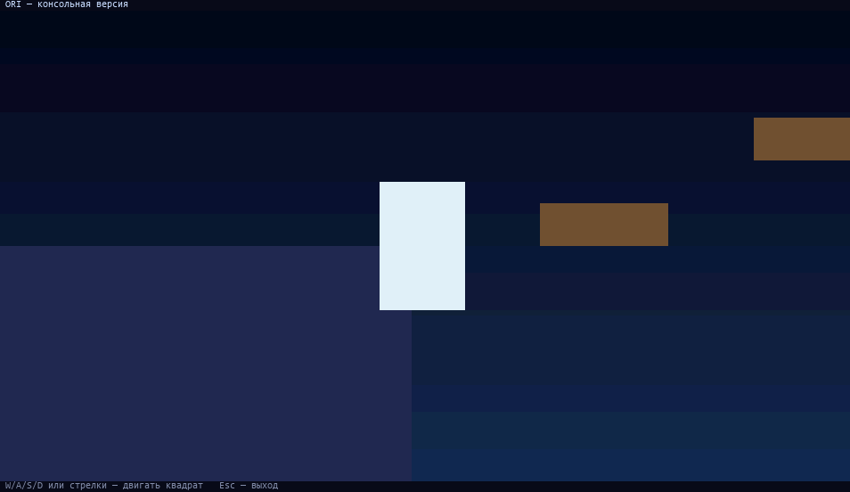
Рис. 14.3. Квадрат убежал вправо, и камера поехала за ним: видны брёвна над пропастью
Квадрат пока летает сквозь камни: физики ещё нет. Полетайте по уровню — камера послушно едет следом, а у краёв уровня останавливается.
ФишкаМножество Мандельброта
Камера работает не только в играх. Вот знаменитый фрактал — множество Мандельброта. Для каждой точки мира (cx, cy) много раз повторяем формулу z = z² + c и смотрим, улетит ли z далеко. Точки, которые не улетают, — чёрные, остальные красим по тому, как быстро они улетели.
Листинг 14.25. Фрактал и камера с масштабом 14-mandel.cpp
// Фишка главы 14: множество Мандельброта и камера. Каждый пиксель экрана// переводится в точку «мира» (как клетка карты по камере), а для точки считаем,// как быстро улетает формула z = z² + c.// Сборка из папки игры (файл лежит в папке fishki):// g++ -O2 -std=c++17 -Wall -Wextra -I. fishki\14-mandel.cpp screen.cpp console.cpp -o mandel.exe#define WIN32_LEAN_AND_MEAN#define NOMINMAX#include <windows.h>#include "console.h"#include "screen.h"constint MAX_STEPS = 80;// Сколько шагов точка (cx, cy) держится внутри круга радиуса 2staticint escapeSteps(double cx, double cy) {double zx = 0, zy = 0;for (int i = 0; i < MAX_STEPS; i++) {double nx = zx * zx - zy * zy + cx; // z² + c, если записать по частям zy = 2 * zx * zy + cy; zx = nx;if (zx * zx + zy * zy > 4) return i; }return MAX_STEPS;}int main() { consoleInit(); screenFitToConsole();double camX = -0.6, camY = 0; // центр камеры в миреdouble zoom = 0.03; // сколько единиц мира в одном пикселеwhile (!keyDown(VK_ESCAPE)) {// Стрелки двигают камеру, Z и X приближают и отдаляютdouble step = zoom * 3;if (keyDown(VK_LEFT)) camX -= step;if (keyDown(VK_RIGHT)) camX += step;if (keyDown(VK_UP)) camY -= step;if (keyDown(VK_DOWN)) camY += step;if (keyDown('Z')) zoom *= 0.93;if (keyDown('X')) zoom /= 0.93;int w = screenWidth(), h = screenHeight();for (int y = 0; y < h; y++) {for (int x = 0; x < w; x++) {// Пиксель экрана → точка мира: как камера в игре, только с масштабомdouble wx = camX + (x - w / 2) * zoom;double wy = camY + (y - h / 2) * zoom;int n = escapeSteps(wx, wy);float t = (float)n / MAX_STEPS; putPixel(x, y, n == MAX_STEPS ? rgb(0, 0, 0) : rgb((int)(255 * t * 3), (int)(120 + 135 * t), (int)(90 + 165 * t))); } } textAdd(LINE_TOP, " Множество Мандельброта", rgb(220, 230, 255)); textAdd(LINE_BOTTOM, " Стрелки — камера Z/X — ближе/дальше Esc — выход", rgb(130, 140, 170)); screenPresent(); Sleep(20); } consoleRestore();return0;}
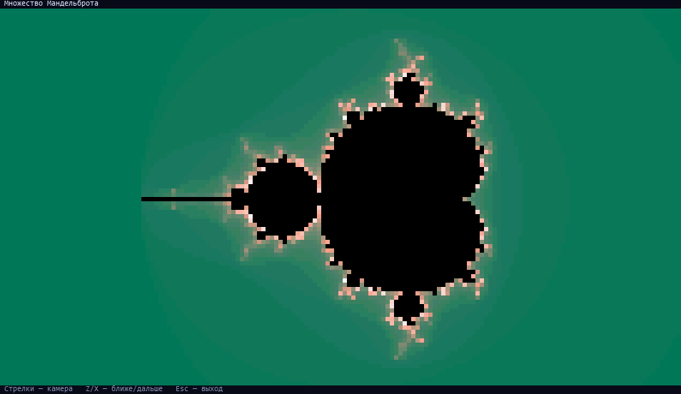
Рис. 14.4. Множество Мандельброта
Создайте в папке игры папку fishki (если её ещё нет) и сохраните программу туда как fishki\14-mandel.cpp. Соберите её из папки игры вместе с нужными модулями:
Все 26 файлов игры после этой главы — целиком. Откройте файл, чтобы сравнить со своим, а кнопка «Копировать» поможет, если нужно догнать: вставьте код в файл с тем же именем в папке игры.
// ============================================================================// camera.cpp — камера следует за Ори и не выходит за края уровня// ============================================================================#include <cmath>#include "camera.h"#include "config.h"#include "game.h"#include "mathx.h"// Не даём камере заглянуть за края уровняstaticvoid clampCamera(Game& g) {Camera& cam = g.camera;float maxX = (float)(g.world.width * TILE - screenWidth());float maxY = (float)(MAP_H * TILE - screenHeight()); cam.x = clampf(cam.x, 0, fmaxf(maxX, 0));// если окно выше уровня, прижимаем уровень к низу экрана cam.y = maxY < 0 ? maxY : clampf(cam.y, 0, maxY);}// Целые координаты камеры для рисованияstaticvoid updateView(Camera& cam) { cam.viewX = (int)floorf(cam.x); cam.viewY = (int)floorf(cam.y);}void centerCamera(Game& g) { g.camera.x = g.player.x + PLAYER_W / 2.0f - screenWidth() / 2.0f; g.camera.y = g.player.y + PLAYER_H / 2.0f - screenHeight() / 2.0f; clampCamera(g); updateView(g.camera);}void updateCamera(Game& g) { centerCamera(g);}
camera.h22 строкиcamera.h
// ============================================================================// camera.h — какая часть мира видна на экране, рисование в координатах мира// ============================================================================#pragma once#include "color.h"#include "screen.h"structGame; // описана в game.h — здесь достаточно знать, что такая структура естьstructCamera {float x, y; // левый верхний угол экрана в миреint viewX, viewY; // то же целыми числами (с тряской) — по ним рисуем};// Поставить пиксель по координатам мира: экран = мир − камераinlinevoid putWorldPixel(constCamera& cam, int wx, int wy, Color c) { putPixel(wx - cam.viewX, wy - cam.viewY, c);}void centerCamera(Game& g); // сразу поставить Ори в центр экранаvoid updateCamera(Game& g); // камера следует за Ори
color.h34 строкиcolor.h
// ============================================================================// color.h — цвет пикселя. Цвет хранится в одном числе 0xRRGGBB:// по два шестнадцатеричных разряда на красный, зелёный и синий.// ============================================================================#pragma oncetypedefunsignedintColor;// Ограничить канал диапазоном 0..255inlineint clampChannel(int value) {return value < 0 ? 0 : (value > 255 ? 255 : value);}// Собрать цвет из красного, зелёного и синего (каждый 0..255)inlineColor rgb(int r, int g, int b) {return (Color)(clampChannel(r) << 16 | clampChannel(g) << 8 | clampChannel(b));}// Достать каналы обратноinlineint colorR(Color c) { return (c >> 16) & 255; }inlineint colorG(Color c) { return (c >> 8) & 255; }inlineint colorB(Color c) { return c & 255; }// Смешать два цвета: t = 0 — первый цвет, t = 1 — второйinlineColor mixColor(Color a, Color b, float t) {return rgb((int)(colorR(a) + (colorR(b) - colorR(a)) * t), (int)(colorG(a) + (colorG(b) - colorG(a)) * t), (int)(colorB(a) + (colorB(b) - colorB(a)) * t));}// Изменить яркость: k = 0.5 — вдвое темнее, k = 2 — вдвое ярчеinlineColor scaleColor(Color c, float k) {return rgb((int)(colorR(c) * k), (int)(colorG(c) * k), (int)(colorB(c) * k));}
config.h21 строкаconfig.h
// ============================================================================// config.h — настройки игры. Все важные числа собраны здесь,// чтобы их было легко найти и поменять.// ============================================================================#pragma once// Картинкаconstint MAX_SCREEN_W = 320; // наибольшая ширина картинки в пикселяхconstint MAX_SCREEN_H = 200; // наибольшая высота картинки в пикселях// Мирconstint TILE = 8; // сторона тайла в пикселяхconstint MAP_H = 22; // высота уровня в тайлахconstint MAX_MAP_W = 160; // ширина самого широкого уровня в тайлах// Движениеconstfloat RUN_SPEED = 95.0f; // скорость бега, пикселей в секунду// Ориconstint PLAYER_W = 16; // ширина хитбоксаconstint PLAYER_H = 24; // высота хитбокса
console.cpp79 строкconsole.cpp
// ============================================================================// console.cpp — всё, что связано с Windows-консолью, собрано в одном файле// ============================================================================#define WIN32_LEAN_AND_MEAN#define NOMINMAX#include <windows.h>#include <cstring>#include "console.h"// Как была настроена консоль до запуска игрыstaticDWORD originalOutMode = 0;staticDWORD originalInMode = 0;staticUINT originalCodePage = 0;// Ctrl+C или закрытие: consoleRestore сначала останавливает writer.// Обработчик делает ограниченную по времени попытку уборки, затем Windows завершает процесс.staticBOOL WINAPI onConsoleEvent(DWORD) { consoleRestore();return FALSE;}void consoleInit() {HANDLE out = GetStdHandle(STD_OUTPUT_HANDLE);HANDLE in = GetStdHandle(STD_INPUT_HANDLE); GetConsoleMode(out, &originalOutMode); GetConsoleMode(in, &originalInMode); originalCodePage = GetConsoleOutputCP(); SetConsoleMode(out, originalOutMode | ENABLE_PROCESSED_OUTPUT | ENABLE_VIRTUAL_TERMINAL_PROCESSING); SetConsoleMode(in, ENABLE_EXTENDED_FLAGS); // выключить выделение мышью: оно ставит вывод на паузу SetConsoleOutputCP(CP_UTF8); SetConsoleCtrlHandler(onConsoleEvent, TRUE); SetConsoleTitleA("Ori");// Отдельный экран, спрятать курсор, очистить экранconstchar* start = "\x1b[?1049h\x1b[?25l\x1b[2J"; consoleWrite(start, (int)strlen(start));}void consoleRestore() {// Обычные цвета, показать курсор, вернуться на основной экранconstchar* finish = "\x1b[0m\x1b[?25h\x1b[?1049l"; consoleWrite(finish, (int)strlen(finish)); consoleFlushInput(); SetConsoleMode(GetStdHandle(STD_OUTPUT_HANDLE), originalOutMode); SetConsoleMode(GetStdHandle(STD_INPUT_HANDLE), originalInMode); SetConsoleOutputCP(originalCodePage);}bool consoleSize(int& cols, int& rows) { CONSOLE_SCREEN_BUFFER_INFO info;if (!GetConsoleScreenBufferInfo(GetStdHandle(STD_OUTPUT_HANDLE), &info)) {returnfalse; } cols = info.srWindow.Right - info.srWindow.Left + 1; rows = info.srWindow.Bottom - info.srWindow.Top + 1;returntrue;}void consoleFlushInput() { FlushConsoleInputBuffer(GetStdHandle(STD_INPUT_HANDLE));}bool keyDown(int virtualKey) {return (GetAsyncKeyState(virtualKey) & 0x8000) != 0;}bool consoleWrite(constchar* data, int length) {if (length < 0) returnfalse;int sent = 0;while (sent < length) {DWORD written = 0;DWORD remaining = (DWORD)(length - sent);if (!WriteFile(GetStdHandle(STD_OUTPUT_HANDLE), data + sent, remaining, &written, NULL) || written == 0 || written > remaining) returnfalse; sent += (int)written; }returntrue;}
console.h13 строкconsole.h
// ============================================================================// console.h — окно консоли Windows: настройка, размер, клавиши, вывод// ============================================================================#pragma oncevoid consoleInit(); // включить цвета и UTF-8, перейти на отдельный экранvoid consoleRestore(); // вернуть консоль в исходное состояниеbool consoleSize(int& cols, int& rows); // видимый размер окна в символахvoid consoleFlushInput(); // выбросить накопившиеся нажатия клавишbool keyDown(int virtualKey); // зажата ли клавиша прямо сейчас// Полностью записать данные; false — ошибка или неполная записьbool consoleWrite(constchar* data, int length);
// ============================================================================// game.cpp — загрузка уровней и правила игры: что обновлять в каждом кадре// ============================================================================#include <algorithm>#include <cmath>#include <cstring>#include "game.h"#include "input.h"#include "levels.h"// Символ карты — объект? Тогда создаём объект и возвращаем пробел.// Иначе это тайл (камень, бревно, шипы) — он остаётся в карте как есть.staticchar placeObject(Game& g, char symbol, float wx, float wy) {World& w = g.world;switch (symbol) {case'P': w.spawnX = wx; w.spawnY = wy + TILE - PLAYER_H; // ногами на дно клеткиreturn' ';default:return symbol; }}void loadLevel(Game& g, int index) {const LevelInfo& level = levelInfo(index);World& w = g.world; g.levelIndex = index;// Ширина уровня — длина самой длинной строки карты w.width = 0;for (int ty = 0; ty < MAP_H; ty++) { w.width = std::max(w.width, (int)strlen(level.rows[ty])); } w.width = std::min(w.width, MAX_MAP_W);for (int ty = 0; ty < MAP_H; ty++) {int length = (int)strlen(level.rows[ty]);for (int tx = 0; tx < w.width; tx++) {char symbol = tx < length ? level.rows[ty][tx] : ' '; w.tiles[ty][tx] = placeObject(g, symbol, (float)(tx * TILE), (float)(ty * TILE)); } w.tiles[ty][w.width] = 0; // конец строки } placePlayer(g.player, w.spawnX, w.spawnY); centerCamera(g);}void startNewGame(Game& g) { loadLevel(g, 0);}void updateGame(Game& g, constInput& in, float dt) { g.time += dt; updatePlayer(g, in, dt); updateCamera(g);}
game.h24 строкиgame.h
// ============================================================================// game.h — вся игра в одной структуре Game. Функции получают её по ссылке,// поэтому глобальные переменные не нужны.// ============================================================================#pragma once#include "config.h"#include "camera.h"#include "player.h"#include "world.h"structInput;structGame {float time; // сколько секунд идёт игра — для анимацийint levelIndex; // номер текущего уровня (с нуля)World world;Camera camera;Player player;};void startNewGame(Game& g);void loadLevel(Game& g, int index);void updateGame(Game& g, constInput& in, float dt);
hud.cpp26 строкhud.cpp
// ============================================================================// hud.cpp — строки текста над картинкой и под ней// ============================================================================#include <cstdio>#include "game.h"#include "hud.h"#include "screen.h"constColor HUD_TEXT = rgb(200, 220, 255);constColor HINT_TEXT = rgb(130, 140, 170);staticvoid drawTopLine() { textAdd(LINE_TOP, " ORI — консольная версия", HUD_TEXT);}// Нижняя строка — подсказка по управлению (короче, если окно узкое)staticvoid drawBottomLine() {int w = screenWidth();if (w >= 60) textAdd(LINE_BOTTOM, " W/A/S/D или стрелки — двигать квадрат Esc — выход", HINT_TEXT);}void drawHud() { drawTopLine(); drawBottomLine();}
hud.h6 строкhud.h
// ============================================================================// hud.h — строки текста над и под картинкой и надписи поверх неё// ============================================================================#pragma oncevoid drawHud();
// ============================================================================// input.h — какие кнопки управления нажаты// ============================================================================#pragma once// Одна кнопка управленияstructKey {bool held; // зажата сейчасbool pressed; // нажата именно в этом кадре (в прошлом кадре не была зажата)};structInput {Key left;Key right;Key up;Key down;Key quit;};void readInput(Input& in);
levels.cpp45 строкlevels.cpp
// ============================================================================// levels.cpp — карты уровней. Каждый символ — тайл 8 × 8 пикселей:// # — камень, = — бревно, ^ — шипы, P — старт Ори// ============================================================================#include "config.h"#include "levels.h"// Лес Нибельstaticconstchar* LEVEL1[MAP_H] = {"## ##################### ##","## ##################### ##","## ##################### ##","## ##################### B ##","## ##################### ##","## ##################### o o + ##","## ##################### ##","## ##################### o C S S ##","## B ##################### ################# ##","## + === ################# o ##","## o o B o ################# B ##","## o === ################# S ##","## o o o o o o o B ===########################### ##","## o === ########################### ##","## o o o o === ########### C S S ########################### ##","## ########### #################### === ########################### ##","## P ### ########### #################### o o o ########################### ##","## ### S C ########### #################### ^^ ########################### T ##","############################### ################### ################################### ##############################################","############################### ################### ################################### ##############################################","###############################^^^^^^###################^^^^^^^^^^^^^^^###################################^^^^^^^^##############################################","################################################################################################################################################################",};// Все уровни по порядкуstaticconst LevelInfo LEVELS[] = { { "Лес Нибель", LEVEL1 },};int levelCount() {returnsizeof(LEVELS) / sizeof(LEVELS[0]);}const LevelInfo& levelInfo(int index) {return LEVELS[index];}
levels.h12 строкlevels.h
// ============================================================================// levels.h — описания уровней: карта и название// ============================================================================#pragma oncestruct LevelInfo {constchar* name; // название уровняconstchar* const* rows; // карта: MAP_H строк из символов};int levelCount(); // сколько всего уровнейconst LevelInfo& levelInfo(int index); // описание уровня по номеру (с нуля)
main.cpp47 строкmain.cpp
// ============================================================================// ORI — консольная игра-платформер, вид сбоку.// Картинка рисуется пикселями из символов '▀' и ANSI-цветов.// Без классов: только данные (структуры) и функции.//// Сборка: build.bat; отладочная сборка: debug.bat.// В скриптах перечислены только исходники игры этого шага.// ============================================================================#include <chrono>#include <thread>#include "console.h"#include "game.h"#include "input.h"#include "render.h"#include "screen.h"int main() { consoleInit(); screenFitToConsole();staticGame game; // вся игра; static — чтобы большая структура не лежала на стеке startNewGame(game);Input input = {};constauto FRAME_TIME = std::chrono::milliseconds(25); // 25 мс — около 40 кадров в секундуauto previous = std::chrono::steady_clock::now();while (true) {auto frameStart = std::chrono::steady_clock::now();float dt = std::chrono::duration<float>(frameStart - previous).count(); previous = frameStart;if (dt > 0.05f) dt = 0.05f; // после долгой паузы не прыгаем далеко вперёд screenFitToConsole(); consoleFlushInput(); readInput(input);if (input.quit.pressed) break; updateGame(game, input, dt); renderGame(game); screenPresent();auto elapsed = std::chrono::steady_clock::now() - frameStart;if (elapsed < FRAME_TIME) std::this_thread::sleep_for(FRAME_TIME - elapsed); } consoleRestore();return0;}
mathx.h11 строкmathx.h
// ============================================================================// mathx.h — маленькие математические помощники// ============================================================================#pragma once// Зажать число между lo и hiinlineint clampi(int v, int lo, int hi) { return v < lo ? lo : (v > hi ? hi : v); }inlinefloat clampf(float v, float lo, float hi) { return v < lo ? lo : (v > hi ? hi : v); }// Плавный переход: t = 0 — a, t = 1 — b, t = 0.5 — ровно посерединеinlinefloat lerpf(float a, float b, float t) { return a + (b - a) * t; }
player.cpp36 строкplayer.cpp
// ============================================================================// player.cpp — Ори: бег, прыжки, урон, отрисовка// ============================================================================#include <cmath>#include "config.h"#include "game.h"#include "input.h"#include "mathx.h"#include "player.h"void placePlayer(Player& p, float x, float y) { p.x = x; p.y = y;}void updatePlayer(Game& g, constInput& in, float dt) {Player& p = g.player;int dirX = (in.right.held ? 1 : 0) - (in.left.held ? 1 : 0);int dirY = (in.down.held ? 1 : 0) - (in.up.held ? 1 : 0); p.x += dirX * RUN_SPEED * dt; p.y += dirY * RUN_SPEED * dt;// не даём квадрату улететь за край уровня p.x = clampf(p.x, 0, (float)(g.world.width * TILE - PLAYER_W)); p.y = clampf(p.y, 0, (float)(MAP_H * TILE - PLAYER_H));}void drawPlayer(constGame& g) {constPlayer& p = g.player;// Пока вместо Ори — светлый квадрат размером с хитбоксfor (int y = 0; y < PLAYER_H; y++) {for (int x = 0; x < PLAYER_W; x++) { putWorldPixel(g.camera, (int)p.x + x, (int)p.y + y, rgb(230, 240, 255)); } }}
player.h16 строкplayer.h
// ============================================================================// player.h — Ори: управление, прыжки, жизни// ============================================================================#pragma oncestructGame; // описаны в других файлах — здесь достаточно объявленийstructInput;structPlayer {float x, y; // левый верхний угол хитбокса};// Поставить Ори в точку (x, y) и сбросить его состояние (жизни, прыжки...)void placePlayer(Player& player, float x, float y);void updatePlayer(Game& g, constInput& in, float dt);void drawPlayer(constGame& g);
render.cpp51 строкаrender.cpp
// ============================================================================// render.cpp — фон, тайлы и порядок рисования кадра// ============================================================================#include <cmath>#include "game.h"#include "hud.h"#include "levels.h"#include "mathx.h"#include "render.h"#include "screen.h"// Пока фон — просто ночное небо: сверху темнее, к горизонту светлееstaticvoid drawBackground() {for (int y = 0; y < screenHeight(); y++) {Color sky = mixColor(rgb(6, 8, 28), rgb(24, 46, 84), (float)y / screenHeight());for (int x = 0; x < screenWidth(); x++) putPixel(x, y, sky); }}// Пока каждый тайл — квадрат одного цветаstaticColor tileColor(char tile) {if (tile == '#') return rgb(38, 44, 80);if (tile == '=') return rgb(112, 80, 52);return rgb(180, 45, 110); // шипы}staticvoid drawTiles(constGame& g) {constCamera& cam = g.camera;// Рисуем только видимые тайлы и по одному запасному с каждой стороныint tx0 = cam.viewX / TILE - 1, tx1 = (cam.viewX + screenWidth()) / TILE + 1;int ty0 = (int)floorf(cam.viewY / (float)TILE) - 1, ty1 = (cam.viewY + screenHeight()) / TILE + 1;for (int ty = ty0; ty <= ty1; ty++) {for (int tx = tx0; tx <= tx1; tx++) {char tile = tileAt(g.world, tx, ty);if (ty < 0 || ty >= MAP_H) continue;if (tile != '#' && tile != '=' && tile != '^') continue;Color c = tileColor(tile);for (int ly = 0; ly < TILE; ly++) {for (int lx = 0; lx < TILE; lx++) putWorldPixel(cam, tx * TILE + lx, ty * TILE + ly, c); } } }}void renderGame(constGame& g) { drawBackground(); drawTiles(g); drawPlayer(g); drawHud();}
render.h8 строкrender.h
// ============================================================================// render.h — рисование кадра целиком// ============================================================================#pragma oncestructGame;void renderGame(constGame& g); // нарисовать мир, персонажей и текст в картинку экрана
screen.cpp178 строкscreen.cpp
// ============================================================================// screen.cpp — картинка в памяти и её вывод в консоль ANSI-командами.// Одна клетка консоли = два пикселя: символ '▀' рисует верхний пиксель// цветом текста, а нижний остаётся цветом фона.// ============================================================================#include <cstdio>#include <cstring>#include "config.h"#include "console.h"#include "mathx.h"#include "screen.h"// ---------------------------------------------------------------------------// Данные модуля (static — видны только в этом файле)// ---------------------------------------------------------------------------staticColor pixels[MAX_SCREEN_H][MAX_SCREEN_W];staticint width = 120; // размер картинки в пикселях, подстраивается под окноstaticint height = 70;staticint consoleCols = 0;staticint consoleRows = 0;// Текст кадра: строки над и под картинкойconstint MAX_SEGMENTS = 32;constint MAX_TEXT = 128;struct TextSegment {char text[MAX_TEXT];Color color;};static TextSegment lineSegments[2][MAX_SEGMENTS];staticint lineSegmentCount[2] = { 0, 0 };// Сюда собирается весь текст кадра вместе с ANSI-командамиstaticchar out[4 * 1024 * 1024];staticint outLength = 0;// ---------------------------------------------------------------------------// Размер и пиксели// ---------------------------------------------------------------------------bool screenFitToConsole() {int cols, rows;if (!consoleSize(cols, rows)) returnfalse;if (cols == consoleCols && rows == consoleRows) returnfalse; consoleCols = cols; consoleRows = rows;// На столбец уже окна: символ в последнем столбце переносит курсор на новую строку width = clampi(cols - 1, 40, MAX_SCREEN_W);// Две строки занимает текст, в каждой строке консоли два пикселя; высота чётная height = clampi((rows - 2) * 2, 40, MAX_SCREEN_H) & ~1;constchar* clear = "\x1b[0m\x1b[2J"; consoleWrite(clear, (int)strlen(clear));returntrue;}int screenWidth() { return width; }int screenHeight() { return height; }void putPixel(int x, int y, Color c) {if (x >= 0 && y >= 0 && x < width && y < height) { pixels[y][x] = c; }}// ---------------------------------------------------------------------------// Текст// ---------------------------------------------------------------------------void textAdd(TextLine line, constchar* text, Color color) {int& count = lineSegmentCount[line];if (count >= MAX_SEGMENTS) return; snprintf(lineSegments[line][count].text, MAX_TEXT, "%s", text); lineSegments[line][count].color = color; count++;}// ---------------------------------------------------------------------------// Сборка кадра из ANSI-команд// ---------------------------------------------------------------------------staticvoid emit(constchar* s) {int n = (int)strlen(s); memcpy(out + outLength, s, n); outLength += n;}// Число цифрами — вручную: так быстрее, чем через snprintfstaticvoid emitInt(int value) {char digits[12];int n = 0;if (value < 0) { out[outLength++] = '-'; value = -value; }do { digits[n++] = (char)('0' + value % 10); value /= 10; } while (value > 0);while (n > 0) { out[outLength++] = digits[--n]; }}// Команда цвета: фона (background = true) или текстаstaticvoid emitColor(bool background, Color c) { emit(background ? "\x1b[48;2;" : "\x1b[38;2;"); emitInt(colorR(c)); emit(";"); emitInt(colorG(c)); emit(";"); emitInt(colorB(c)); emit("m");}staticvoid emitLine(TextLine line) { emitColor(true, rgb(8, 10, 24));for (int i = 0; i < lineSegmentCount[line]; i++) { emitColor(false, lineSegments[line][i].color); emit(lineSegments[line][i].text); } emit("\x1b[K\x1b[0m"); // закрасить строку до конца и сбросить цвета}staticvoid emitPixels() {Color lastFg = 0xFFFFFFFF; // какой цвет текста сейчас включён (такого цвета не бывает — «никакой»)Color lastBg = 0xFFFFFFFF;for (int y = 0; y + 1 < height; y += 2) {for (int x = 0; x < width; x++) {// Огрубляем цвета: глаз разницы не видит, а одинаковых соседей большеColor top = pixels[y][x] & 0xF8F8F8;Color bottom = pixels[y + 1][x] & 0xF8F8F8;if (top == bottom) {// Оба пикселя одинаковые — хватит пробела с цветом фонаif (bottom != lastBg) { emitColor(true, bottom); lastBg = bottom; } out[outLength++] = ' '; } else {if (top != lastFg) { emitColor(false, top); lastFg = top; }if (bottom != lastBg) { emitColor(true, bottom); lastBg = bottom; } emit("\xE2\x96\x80"); // ▀ } } emit("\x1b[0m\r\n"); lastFg = 0xFFFFFFFF; lastBg = 0xFFFFFFFF; }}void screenPresent() {int availableCols, availableRows;if (consoleSize(availableCols, availableRows) && (availableCols < screenWidth() + 1 || availableRows < screenHeight() / 2 + 2)) {constchar* warning = "\x1b[0m\x1b[2J\x1b[HУвеличьте окно консоли";// In a very narrow window use a short ASCII hint to avoid wrapping.if (availableCols < 24) warning = "\x1b[0m\x1b[2J\x1b[HResize";if (availableCols < 7) warning = "\x1b[0m\x1b[2J"; consoleWrite(warning, (int)strlen(warning)); lineSegmentCount[0] = lineSegmentCount[1] = 0;return; } outLength = 0; emit("\x1b[H"); // курсор в левый верхний угол: рисуем поверх прошлого кадра emitLine(LINE_TOP); emit("\r\n"); emitPixels(); emitLine(LINE_BOTTOM); consoleWrite(out, outLength);// Текст задаётся заново в каждом кадре lineSegmentCount[LINE_TOP] = 0; lineSegmentCount[LINE_BOTTOM] = 0;}
screen.h19 строкscreen.h
// ============================================================================// screen.h — картинка из пикселей и строки текста над и под ней.// Сначала рисуем кадр в памяти, потом screenPresent() показывает его целиком.// ============================================================================#pragma once#include "color.h"bool screenFitToConsole(); // подогнать размер картинки под окно; true — размер изменилсяint screenWidth();int screenHeight();void putPixel(int x, int y, Color c);// Текст: строка над картинкой и строка под нейenum TextLine { LINE_TOP, LINE_BOTTOM };void textAdd(TextLine line, constchar* text, Color color);void screenPresent(); // показать кадр в консоли
world.cpp10 строкworld.cpp
// ============================================================================// world.cpp — доступ к тайлам уровня// ============================================================================#include "world.h"char tileAt(constWorld& world, int tx, int ty) {if (tx < 0 || tx >= world.width) return'#';if (ty < 0 || ty >= MAP_H) return' ';return world.tiles[ty][tx];}
world.h15 строкworld.h
// ============================================================================// world.h — загруженный уровень: тайлы и особые места на нём// ============================================================================#pragma once#include "config.h"structWorld {char tiles[MAP_H][MAX_MAP_W + 1]; // символы тайлов; объекты заменены пробеламиint width; // ширина уровня в тайлахfloat spawnX, spawnY; // где Ори появляется в начале уровня};// Тайл в клетке (tx, ty). За левым и правым краем — стена, сверху и снизу — пустота.char tileAt(constWorld& world, int tx, int ty);
Задания
Часть II. Ори в мире пикселей
Глава 15Физика: гравитация и столкновения
Пока квадрат летает сквозь камни, это не платформер. В этой главе появится физика: гравитация тянет героя вниз, камни и брёвна держат его, а пробел подбрасывает вверх. Для этого заведём модуль physics — он будет двигать не только Ори, но потом и врагов.
Разбираемся
Проверяйте физику по одному действию
Y растёт вниз: падение увеличивает Y, прыжок сначала даёт отрицательную вертикальную скорость. Проверьте по порядку: герой стоит без дрожания на земле; падает с края; упирается в стену; приземляется сверху; прыгает и возвращается на землю. Если первый тест не проходит, следующий пока не добавляйте. На углах проверьте отдельно горизонтальное и вертикальное столкновение.
Скорость и ускорение
До сих пор квадрат двигался так: зажата стрелка — сдвигаемся на скорость × dt. Теперь у тела будет скорость по каждой оси — vx и vy, в пикселях в секунду. Каждый кадр:
Фрагмент кода — место вставки указано в тексте
x += vx * dt; // скорость меняет положение
y += vy * dt;
Ось y на экране смотрит вниз: vy > 0 — тело падает, vy < 0 — летит вверх.
Гравитация — это не скорость, а ускорение: она каждую секунду прибавляет к скорости падения одно и то же число.
Фрагмент кода — место вставки указано в тексте
vy += GRAVITY * dt; // 900 пикселей в секунду за каждую секунду
Прыжок — это просто мгновенная скорость вверх: vy = -JUMP_SPEED. Дальше гравитация сама замедлит подъём, остановит героя в верхней точке и потянет обратно. Получается настоящая парабола — как у брошенного мяча. Чтобы падение не разгонялось бесконечно, скорость ограничена: vy = fminf(vy, MAX_FALL_SPEED). fminf и fmaxf из <cmath> — меньшее и большее из двух дробных чисел.
Прямоугольник против тайлов
Тело — это прямоугольник: левый верхний угол (x, y), ширина w, высота h. Чтобы узнать, не залез ли он в камень, переводим его углы в номера тайлов и проверяем все тайлы между ними:
Фрагмент кода — место вставки указано в тексте
int tx0 = (int)floorf(x / TILE), tx1 = (int)floorf((x + w - 0.01f) / TILE);
int ty0 = (int)floorf(y / TILE), ty1 = (int)floorf((y + h - 0.01f) / TILE);
- 0.01f нужен, чтобы прямоугольник, стоящий ровно на границе тайла, не задевал соседний. Иначе герой, стоящий на полу, считался бы застрявшим в нём. Такие проверки называют AABB (прямоугольники со сторонами вдоль осей).
Двигаемся по одной оси за раз
Если сдвинуть тело сразу по диагонали и оно упрётся в угол, непонятно, что случилось: ударилось о стену или о пол? Поэтому двигаем отдельно:
Сначала по горизонтали. Упёрлись — прижимаемся вплотную к стене и обнуляем vx.
Потом по вертикали. Упёрлись при падении — стоим на земле, обнуляем vy. Упёрлись при подъёме — ударились о потолок.
Прижаться к стене справа — значит поставить правый край тела на левый край тайла:
Фрагмент кода — место вставки указано в тексте
nx = floorf((nx + w) / TILE) * TILE - w; // номер тайла стены × TILE = его левый край
Быстрые тела и тонкие стены
Если за кадр тело пролетает 20 пикселей, а пол толщиной 8, оно может «перепрыгнуть» пол: в одном кадре было над ним, в следующем — уже под ним. Поэтому большой сдвиг делим на шаги не длиннее 3 пикселей. ceilf — округление вверх: из 6.2 шага получится 7. fabsf — модуль числа (без знака).
Игра · шаг 15Ори падает и прыгает
Если добавились модули, замените и бат-файлы: список исходников в них относится к текущей главе.
Листинг 15.1. Сборка игры этого шага build.batКуда: замените всё содержимое файла этим текстом
Листинг 15.3. Гравитация, прыжок, предельная скорость падения config.h
// Движениеconstfloat RUN_SPEED = 95.0f; // скорость бега, пикселей в секундуconstfloat GRAVITY = 900.0f; // насколько быстро растёт скорость паденияconstfloat JUMP_SPEED = 320.0f; // скорость в начале прыжкаconstfloat MAX_FALL_SPEED = 360.0f; // быстрее падать нельзя
Какие тайлы твёрдые
Листинг 15.4. Твёрдый ли тайл world.hКуда: в конец файла, после: функция tileAt
// Твёрдый ли тайл: сквозь твёрдые нельзя пройтиbool isSolidTile(char tile);
Листинг 15.5. Камень, бревно и шипы — твёрдые world.cppКуда: в конец файла, после: функция tileAt
Шипы пока тоже твёрдые: на них можно стоять. Ранить они начнут в главе 20.
Модуль физики
Листинг 15.6. Тело и движение physics.hКуда: новый файл — создайте его
// ============================================================================// physics.h — тела, которые двигаются и сталкиваются с тайлами// ============================================================================#pragma once#include "world.h"structBody {float x, y; // левый верхний угол хитбокса в миреfloat vx, vy; // скорость, пикселей в секунду (vy > 0 — вниз)int w, h; // размер хитбоксаbool onGround; // стоит на чём-то твёрдомbool hitWall; // в этом кадре упёрлось в стену};Body makeBody(float x, float y, int w, int h); // неподвижное тело в точке (x, y)// Есть ли твёрдые тайлы в прямоугольникеbool rectSolid(constWorld& world, float x, float y, float w, float h);// Сдвинуть тело на скорость × dt, не пуская его в твёрдые тайлыvoid moveBody(constWorld& world, Body& body, float dt);
Листинг 15.7. Движение и столкновения physics.cppКуда: новый файл — создайте его
// ============================================================================// physics.cpp — движение и столкновения с тайлами// ============================================================================#include <cmath>#include "config.h"#include "physics.h"Body makeBody(float x, float y, int w, int h) {Body b; b.x = x; b.y = y; b.vx = 0; b.vy = 0; b.w = w; b.h = h; b.onGround = false; b.hitWall = false;return b;}bool rectSolid(constWorld& world, float x, float y, float w, float h) {// Номера тайлов, которые задевает прямоугольник. 0.01 — чтобы прямоугольник,// стоящий ровно на границе тайла, не считался залезшим в соседний.int tx0 = (int)floorf(x / TILE), tx1 = (int)floorf((x + w - 0.01f) / TILE);int ty0 = (int)floorf(y / TILE), ty1 = (int)floorf((y + h - 0.01f) / TILE);for (int ty = ty0; ty <= ty1; ty++) {for (int tx = tx0; tx <= tx1; tx++) {if (isSolidTile(tileAt(world, tx, ty))) returntrue; } }returnfalse;}void moveBody(constWorld& world, Body& b, float dt) { b.onGround = false; b.hitWall = false;// Большой сдвиг делим на шаги не длиннее 3 пикселей,// иначе быстрое тело может проскочить сквозь тонкую стенуfloat maxMove = fmaxf(fabsf(b.vx), fabsf(b.vy)) * dt;int steps = (int)ceilf(maxMove / 3.0f);if (steps < 1) steps = 1;float stepDt = dt / steps;for (int s = 0; s < steps; s++) {// Сначала по горизонталиfloat nx = b.x + b.vx * stepDt;if (rectSolid(world, nx, b.y, (float)b.w, (float)b.h)) {if (b.vx > 0) { nx = floorf((nx + b.w) / TILE) * TILE - b.w; // прижаться к стене справа } else { nx = (floorf(nx / TILE) + 1) * TILE; // прижаться к стене слева } b.vx = 0; b.hitWall = true; } b.x = nx;// Потом по вертикалиfloat ny = b.y + b.vy * stepDt;if (rectSolid(world, b.x, ny, (float)b.w, (float)b.h)) {if (b.vy > 0) { ny = floorf((ny + b.h) / TILE) * TILE - b.h; // встали на пол b.onGround = true; } else { ny = (floorf(ny / TILE) + 1) * TILE; // ударились о потолок } b.vy = 0; } b.y = ny; }}
makeBody создаёт неподвижное тело.
rectSolid проверяет, есть ли твёрдый тайл в прямоугольнике. Для этого края прямоугольника в пикселях делятся на размер тайла TILE — получаются номера первого и последнего столбца и строки тайлов, которые он задевает, — и двойной цикл проверяет каждый из этих тайлов.
moveBody двигает тело: делит сдвиг на маленькие шаги, в каждом шаге сначала по горизонтали, потом по вертикали. Заодно ставит флаги onGround (стоит на земле) и hitWall (упёрлось в стену) — они нужны для прыжков и для врагов.
Кнопка прыжка
Листинг 15.8. Вверх и вниз больше не нужны — нужен прыжок input.h
Листинг 15.14. Гравитация и прыжок player.cppКуда: после: функция placePlayer; перед: функция updatePlayer
// Гравитация и прыжкиstaticvoid updateJump(Game& g, constInput& in, float dt) {Player& p = g.player;Body& b = p.body; b.vy = fminf(b.vy + GRAVITY * dt, MAX_FALL_SPEED);if (in.jump.pressed && b.onGround) { // прыгнуть можно только с земли b.vy = -JUMP_SPEED; }}
Прыгнуть можно только с земли и только в кадр нажатия (pressed): если держать пробел, Ори прыгнет один раз.
Листинг 15.15. Бег, прыжок, движение player.cpp
void updatePlayer(Game& g, constInput& in, float dt) {Player& p = g.player;int dirX = (in.right.held ? 1 : 0) - (in.left.held ? 1 : 0);int dirY = (in.down.held ? 1 : 0) - (in.up.held ? 1 : 0); p.x += dirX * RUN_SPEED * dt; p.y += dirY * RUN_SPEED * dt;// не даём квадрату улететь за край уровня p.x = clampf(p.x, 0, (float)(g.world.width * TILE - PLAYER_W)); p.y = clampf(p.y, 0, (float)(MAP_H * TILE - PLAYER_H));}Body& b = p.body;int dir = (in.right.held ? 1 : 0) - (in.left.held ? 1 : 0); // -1, 0 или 1 b.vx = dir * RUN_SPEED; // бег: скорость сразу равна нужной updateJump(g, in, dt); moveBody(g.world, b, dt);}
Скорость бега пока сразу равна нужной: отпустили стрелку — Ори встал как вкопанный. В следующей главе он научится разгоняться и тормозить.
Листинг 15.16. Рисуем по координатам тела player.cpp
void drawPlayer(constGame& g) {constPlayer& p = g.player;// Пока вместо Ори — светлый квадрат размером с хитбоксfor (int y = 0; y < PLAYER_H; y++) {for (int x = 0; x < PLAYER_W; x++) { putWorldPixel(g.camera, (int)p.x + x, (int)p.y + y, rgb(230, 240, 255)); } }} putWorldPixel(g.camera, (int)p.body.x + x, (int)p.body.y + y, rgb(230, 240, 255)); } }}
Рис. 15.1. Прыжок: квадрат в воздухе, гравитация уже тянет его вниз
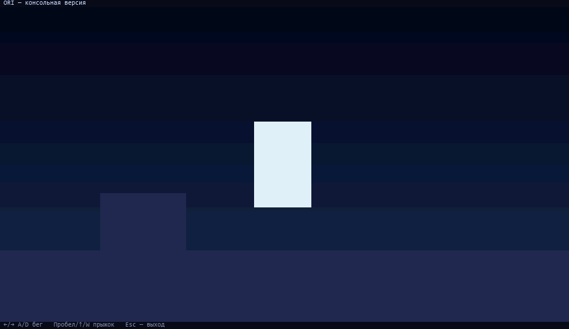
Рис. 15.2. Запрыгнули на ступеньку — столкновения не дают провалиться в камень
ОтладкаПроверяем физику тестом
Физику легко сломать незаметно: поменяли число или условие в moveBody — и через три главы Ори вдруг проваливается в пол на одном уровне. Проверять это каждый раз руками, бегая по уровню, долго. Программисты пишут тест — маленькую программу, которая сама запускает кусок игры и проверяет, что всё работает как задумано.
Для проверок есть assert из <cassert>:
Фрагмент кода — место вставки указано в тексте
assert(b.onGround); // если условие ложно — программа остановится и скажет, в какой строке
Если условие истинно, assert ничего не делает. Если ложно — программа сразу останавливается и пишет файл и строку проверки, которая не прошла.
Модуль physics не знает ни про экран, ни про клавиатуру — ему нужен только мир из тайлов. Поэтому тест может построить свой маленький мир: пол, стена — и проверить, что тело падает на пол, упирается в стену и возвращается из прыжка. Создайте в папке игры папку fishki и положите тест туда как fishki\15-physics-test.cpp: в отдельной папке он не попадёт в *.cpp при сборке игры.
Листинг 15.18. Тест физики physics-test.cpp
// Тест физики без экрана: строим маленький мир, двигаем тело и проверяем,// что оно ведёт себя так, как мы задумали. Если проверка не прошла,// assert остановит программу и напишет, какая строка не выполнилась.// Сборка из папки игры (файл лежит в папке fishki, main.cpp игры не нужен):// g++ -g -O0 -std=c++17 -Wall -Wextra -I. fishki\15-physics-test.cpp physics.cpp world.cpp -o test.exe#include <cassert>#include <cstdio>#include <cstdlib>#include "config.h"#include "physics.h"constfloat DT = 1 / 40.0f; // один кадр, как в игре// Мир 20 × MAP_H тайлов: пусто, пол на строке 10, стена в столбце 12staticWorld makeTestWorld() {World w = {}; w.width = 20;for (int ty = 0; ty < MAP_H; ty++) {for (int tx = 0; tx < w.width; tx++) {char tile = ' ';if (ty == 10) tile = '#';if (tx == 12 && ty < 10) tile = '#'; w.tiles[ty][tx] = tile; } }return w;}// Один кадр: гравитация меняет скорость, скорость — положениеstaticvoid step(constWorld& w, Body& b) { b.vy += GRAVITY * DT;if (b.vy > MAX_FALL_SPEED) b.vy = MAX_FALL_SPEED; moveBody(w, b, DT);}staticvoid testFallsOntoFloor(constWorld& w) {Body b = makeBody(3 * TILE, 2 * TILE, PLAYER_W, PLAYER_H);for (int i = 0; i < 80; i++) step(w, b); // две секунды падения assert(b.onGround); // приземлилось assert(b.y + b.h == 10 * TILE); // ноги ровно на полу, не в нём assert(b.vy == 0); // и не падает дальше}staticvoid testStopsAtWall(constWorld& w) {Body b = makeBody(8 * TILE, 10 * TILE - PLAYER_H, PLAYER_W, PLAYER_H);bool hit = false;for (int i = 0; i < 80; i++) { // бежит вправо в стену b.vx = RUN_SPEED; step(w, b);if (b.hitWall) hit = true; // hitWall — «упёрлось в этом кадре» } assert(b.x + b.w <= 12 * TILE); // не залез в стену assert(hit); // и хотя бы раз упёрлось в неё}staticvoid testJumpGoesUpAndComesBack(constWorld& w) {Body b = makeBody(3 * TILE, 10 * TILE - PLAYER_H, PLAYER_W, PLAYER_H);float startY = b.y; b.vy = -JUMP_SPEED; // прыжокfloat highest = b.y;for (int i = 0; i < 80; i++) { step(w, b);if (b.y < highest) highest = b.y; } assert(highest < startY - TILE); // поднялся выше одного тайла assert(b.onGround && b.y == startY); // и вернулся на пол}int main() { system("chcp 65001 > nul"); // русские буквы, как в первой частиWorld w = makeTestWorld(); assert(rectSolid(w, 0, 10 * TILE, 8, 8)); // пол твёрдый assert(!rectSolid(w, 0, 0, 8, 8)); // воздух — нет testFallsOntoFloor(w); testStopsAtWall(w); testJumpGoesUpAndComesBack(w); printf("Все проверки физики прошли\n");return0;}
Соберите тест из папки игры вместе с двумя модулями, которые он проверяет (без main.cpp игры: у теста своя main), и запустите. -I. — «заголовки ищи и в текущей папке», как у часов в главе 11:
Тест полезен и тогда, когда он падает. Когда мы писали проверку стены впервые, там стояло просто assert(b.hitWall); — и тест упал:
Assertion failed: b.hitWall, file fishki\15-physics-test.cpp, line 50
Ошибка оказалась не в игре, а в тесте: hitWall значит «упёрлось в этом кадре». В первый кадр удара оно true, а потом тело уже стоит у стены и в неё не врезается. Теперь тест запоминает, было ли столкновение хоть раз. Так тест заставляет точно понять, что делает каждая переменная.
Отладчик: следим за скоростью в прыжке
Тест собран с -g -O0, поэтому его можно разобрать отладчиком, как игру в главе 8. Посмотрим, как меняется скорость vy в прыжке. Поставим точку остановки на строку с гравитацией в функции step, но с условием: останавливаться, только пока тело летит вверх (vy < 0):
gdb test.exe
break 15-physics-test.cpp:32 if b.vy < 0
run
print b.vy
continue
print b.vy
В начале прыжка скорость −320 (вверх), а каждый кадр гравитация прибавляет к ней 900 · 1/40 = 22.5. Если остановиться в верхней точке, когда скорость уже сменила знак, будет видно, что тело поднялось с y = 56 до y ≈ 3.1 — примерно на 53 пикселя, почти на 7 тайлов. Формула из задания 15.1 даёт 57: разницу из-за шагов по dt мы обсуждаем в решении этого задания.
Номер строки 32 — в нашем файле; у вас он может быть другим. Условие после if пишется так же, как в C++: точка остановки срабатывает, только когда оно истинно.
ФишкаМячики
Та же физика, что у Ори, но с отскоком: при ударе о пол мяч не останавливается, а меняет знак скорости и теряет часть её — vy = -vy * BOUNCE.
Листинг 15.19. Двенадцать мячиков 15-balls.cpp
// Фишка главы 15: мячики. Та же физика, что у Ори: скорость меняет положение,// гравитация меняет скорость. При ударе о пол мяч теряет часть скорости.// Сборка из папки игры (файл лежит в папке fishki):// g++ -O2 -std=c++17 -Wall -Wextra -I. fishki\15-balls.cpp screen.cpp console.cpp -o balls.exe#define WIN32_LEAN_AND_MEAN#define NOMINMAX#include <windows.h>#include <cstdlib>#include "console.h"#include "screen.h"constint BALL_COUNT = 12;constfloat GRAVITY = 300; // пикселей в секунду за секундуconstfloat BOUNCE = 0.8f; // после удара остаётся 80% скоростиstruct Ball {float x, y, vx, vy;int radius;Color color;};staticfloat randomFloat(float a, float b) {return a + (b - a) * (rand() / (float)RAND_MAX);}static Ball makeBall() { Ball b; b.radius = 2 + rand() % 4; b.x = randomFloat(10, (float)screenWidth() - 10); b.y = randomFloat(5, screenHeight() / 2.0f); b.vx = randomFloat(-60, 60); b.vy = randomFloat(-40, 0); b.color = rgb(100 + rand() % 156, 100 + rand() % 156, 100 + rand() % 156);return b;}staticvoid updateBall(Ball& b, float dt) { b.vy += GRAVITY * dt; b.x += b.vx * dt; b.y += b.vy * dt;float floor = (float)screenHeight() - b.radius;if (b.y > floor) { b.y = floor; b.vy = -b.vy * BOUNCE; }if (b.x < b.radius) { b.x = (float)b.radius; b.vx = -b.vx; }if (b.x > screenWidth() - b.radius) { b.x = (float)(screenWidth() - b.radius); b.vx = -b.vx; }}staticvoid drawBall(const Ball& b) {for (int dy = -b.radius; dy <= b.radius; dy++) {for (int dx = -b.radius; dx <= b.radius; dx++) {if (dx * dx + dy * dy <= b.radius * b.radius) putPixel((int)b.x + dx, (int)b.y + dy, b.color); } }}int main() { consoleInit(); screenFitToConsole(); Ball balls[BALL_COUNT];for (int i = 0; i < BALL_COUNT; i++) balls[i] = makeBall();constfloat DT = 0.025f;while (!keyDown(VK_ESCAPE)) {if (keyDown(VK_SPACE)) { // пробел подбрасывает все мячиfor (int i = 0; i < BALL_COUNT; i++) balls[i].vy = randomFloat(-220, -120); }for (int y = 0; y < screenHeight(); y++) {for (int x = 0; x < screenWidth(); x++) putPixel(x, y, rgb(12, 16, 36)); }for (int i = 0; i < BALL_COUNT; i++) { updateBall(balls[i], DT); drawBall(balls[i]); } textAdd(LINE_TOP, " Мячики: гравитация и отскок", rgb(220, 230, 255)); textAdd(LINE_BOTTOM, " Пробел — подбросить Esc — выход", rgb(130, 140, 170)); screenPresent(); Sleep(25); } consoleRestore();return0;}
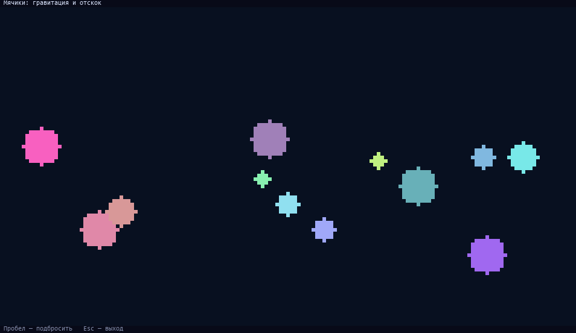
Рис. 15.3. Мячики прыгают и затихают
Создайте в папке игры папку fishki (если её ещё нет) и сохраните программу туда как fishki\15-balls.cpp. Соберите её из папки игры вместе с нужными модулями:
Все 28 файлов игры после этой главы — целиком. Откройте файл, чтобы сравнить со своим, а кнопка «Копировать» поможет, если нужно догнать: вставьте код в файл с тем же именем в папке игры.
// ============================================================================// camera.cpp — камера следует за Ори и не выходит за края уровня// ============================================================================#include <cmath>#include "camera.h"#include "config.h"#include "game.h"#include "mathx.h"// Не даём камере заглянуть за края уровняstaticvoid clampCamera(Game& g) {Camera& cam = g.camera;float maxX = (float)(g.world.width * TILE - screenWidth());float maxY = (float)(MAP_H * TILE - screenHeight()); cam.x = clampf(cam.x, 0, fmaxf(maxX, 0));// если окно выше уровня, прижимаем уровень к низу экрана cam.y = maxY < 0 ? maxY : clampf(cam.y, 0, maxY);}// Целые координаты камеры для рисованияstaticvoid updateView(Camera& cam) { cam.viewX = (int)floorf(cam.x); cam.viewY = (int)floorf(cam.y);}void centerCamera(Game& g) {constBody& b = g.player.body; g.camera.x = b.x + b.w / 2.0f - screenWidth() / 2.0f; g.camera.y = b.y + b.h / 2.0f - screenHeight() / 2.0f; clampCamera(g); updateView(g.camera);}void updateCamera(Game& g) { centerCamera(g);}
camera.h22 строкиcamera.h
// ============================================================================// camera.h — какая часть мира видна на экране, рисование в координатах мира// ============================================================================#pragma once#include "color.h"#include "screen.h"structGame; // описана в game.h — здесь достаточно знать, что такая структура естьstructCamera {float x, y; // левый верхний угол экрана в миреint viewX, viewY; // то же целыми числами (с тряской) — по ним рисуем};// Поставить пиксель по координатам мира: экран = мир − камераinlinevoid putWorldPixel(constCamera& cam, int wx, int wy, Color c) { putPixel(wx - cam.viewX, wy - cam.viewY, c);}void centerCamera(Game& g); // сразу поставить Ори в центр экранаvoid updateCamera(Game& g); // камера следует за Ори
color.h34 строкиcolor.h
// ============================================================================// color.h — цвет пикселя. Цвет хранится в одном числе 0xRRGGBB:// по два шестнадцатеричных разряда на красный, зелёный и синий.// ============================================================================#pragma oncetypedefunsignedintColor;// Ограничить канал диапазоном 0..255inlineint clampChannel(int value) {return value < 0 ? 0 : (value > 255 ? 255 : value);}// Собрать цвет из красного, зелёного и синего (каждый 0..255)inlineColor rgb(int r, int g, int b) {return (Color)(clampChannel(r) << 16 | clampChannel(g) << 8 | clampChannel(b));}// Достать каналы обратноinlineint colorR(Color c) { return (c >> 16) & 255; }inlineint colorG(Color c) { return (c >> 8) & 255; }inlineint colorB(Color c) { return c & 255; }// Смешать два цвета: t = 0 — первый цвет, t = 1 — второйinlineColor mixColor(Color a, Color b, float t) {return rgb((int)(colorR(a) + (colorR(b) - colorR(a)) * t), (int)(colorG(a) + (colorG(b) - colorG(a)) * t), (int)(colorB(a) + (colorB(b) - colorB(a)) * t));}// Изменить яркость: k = 0.5 — вдвое темнее, k = 2 — вдвое ярчеinlineColor scaleColor(Color c, float k) {return rgb((int)(colorR(c) * k), (int)(colorG(c) * k), (int)(colorB(c) * k));}
config.h24 строкиconfig.h
// ============================================================================// config.h — настройки игры. Все важные числа собраны здесь,// чтобы их было легко найти и поменять.// ============================================================================#pragma once// Картинкаconstint MAX_SCREEN_W = 320; // наибольшая ширина картинки в пикселяхconstint MAX_SCREEN_H = 200; // наибольшая высота картинки в пикселях// Мирconstint TILE = 8; // сторона тайла в пикселяхconstint MAP_H = 22; // высота уровня в тайлахconstint MAX_MAP_W = 160; // ширина самого широкого уровня в тайлах// Движениеconstfloat RUN_SPEED = 95.0f; // скорость бега, пикселей в секундуconstfloat GRAVITY = 900.0f; // насколько быстро растёт скорость паденияconstfloat JUMP_SPEED = 320.0f; // скорость в начале прыжкаconstfloat MAX_FALL_SPEED = 360.0f; // быстрее падать нельзя// Ориconstint PLAYER_W = 16; // ширина хитбоксаconstint PLAYER_H = 24; // высота хитбокса
console.cpp79 строкconsole.cpp
// ============================================================================// console.cpp — всё, что связано с Windows-консолью, собрано в одном файле// ============================================================================#define WIN32_LEAN_AND_MEAN#define NOMINMAX#include <windows.h>#include <cstring>#include "console.h"// Как была настроена консоль до запуска игрыstaticDWORD originalOutMode = 0;staticDWORD originalInMode = 0;staticUINT originalCodePage = 0;// Ctrl+C или закрытие: consoleRestore сначала останавливает writer.// Обработчик делает ограниченную по времени попытку уборки, затем Windows завершает процесс.staticBOOL WINAPI onConsoleEvent(DWORD) { consoleRestore();return FALSE;}void consoleInit() {HANDLE out = GetStdHandle(STD_OUTPUT_HANDLE);HANDLE in = GetStdHandle(STD_INPUT_HANDLE); GetConsoleMode(out, &originalOutMode); GetConsoleMode(in, &originalInMode); originalCodePage = GetConsoleOutputCP(); SetConsoleMode(out, originalOutMode | ENABLE_PROCESSED_OUTPUT | ENABLE_VIRTUAL_TERMINAL_PROCESSING); SetConsoleMode(in, ENABLE_EXTENDED_FLAGS); // выключить выделение мышью: оно ставит вывод на паузу SetConsoleOutputCP(CP_UTF8); SetConsoleCtrlHandler(onConsoleEvent, TRUE); SetConsoleTitleA("Ori");// Отдельный экран, спрятать курсор, очистить экранconstchar* start = "\x1b[?1049h\x1b[?25l\x1b[2J"; consoleWrite(start, (int)strlen(start));}void consoleRestore() {// Обычные цвета, показать курсор, вернуться на основной экранconstchar* finish = "\x1b[0m\x1b[?25h\x1b[?1049l"; consoleWrite(finish, (int)strlen(finish)); consoleFlushInput(); SetConsoleMode(GetStdHandle(STD_OUTPUT_HANDLE), originalOutMode); SetConsoleMode(GetStdHandle(STD_INPUT_HANDLE), originalInMode); SetConsoleOutputCP(originalCodePage);}bool consoleSize(int& cols, int& rows) { CONSOLE_SCREEN_BUFFER_INFO info;if (!GetConsoleScreenBufferInfo(GetStdHandle(STD_OUTPUT_HANDLE), &info)) {returnfalse; } cols = info.srWindow.Right - info.srWindow.Left + 1; rows = info.srWindow.Bottom - info.srWindow.Top + 1;returntrue;}void consoleFlushInput() { FlushConsoleInputBuffer(GetStdHandle(STD_INPUT_HANDLE));}bool keyDown(int virtualKey) {return (GetAsyncKeyState(virtualKey) & 0x8000) != 0;}bool consoleWrite(constchar* data, int length) {if (length < 0) returnfalse;int sent = 0;while (sent < length) {DWORD written = 0;DWORD remaining = (DWORD)(length - sent);if (!WriteFile(GetStdHandle(STD_OUTPUT_HANDLE), data + sent, remaining, &written, NULL) || written == 0 || written > remaining) returnfalse; sent += (int)written; }returntrue;}
console.h13 строкconsole.h
// ============================================================================// console.h — окно консоли Windows: настройка, размер, клавиши, вывод// ============================================================================#pragma oncevoid consoleInit(); // включить цвета и UTF-8, перейти на отдельный экранvoid consoleRestore(); // вернуть консоль в исходное состояниеbool consoleSize(int& cols, int& rows); // видимый размер окна в символахvoid consoleFlushInput(); // выбросить накопившиеся нажатия клавишbool keyDown(int virtualKey); // зажата ли клавиша прямо сейчас// Полностью записать данные; false — ошибка или неполная записьbool consoleWrite(constchar* data, int length);
// ============================================================================// game.cpp — загрузка уровней и правила игры: что обновлять в каждом кадре// ============================================================================#include <algorithm>#include <cmath>#include <cstring>#include "game.h"#include "input.h"#include "levels.h"// Символ карты — объект? Тогда создаём объект и возвращаем пробел.// Иначе это тайл (камень, бревно, шипы) — он остаётся в карте как есть.staticchar placeObject(Game& g, char symbol, float wx, float wy) {World& w = g.world;switch (symbol) {case'P': w.spawnX = wx; w.spawnY = wy + TILE - PLAYER_H; // ногами на дно клеткиreturn' ';default:return symbol; }}void loadLevel(Game& g, int index) {const LevelInfo& level = levelInfo(index);World& w = g.world; g.levelIndex = index;// Ширина уровня — длина самой длинной строки карты w.width = 0;for (int ty = 0; ty < MAP_H; ty++) { w.width = std::max(w.width, (int)strlen(level.rows[ty])); } w.width = std::min(w.width, MAX_MAP_W);for (int ty = 0; ty < MAP_H; ty++) {int length = (int)strlen(level.rows[ty]);for (int tx = 0; tx < w.width; tx++) {char symbol = tx < length ? level.rows[ty][tx] : ' '; w.tiles[ty][tx] = placeObject(g, symbol, (float)(tx * TILE), (float)(ty * TILE)); } w.tiles[ty][w.width] = 0; // конец строки } placePlayer(g.player, w.spawnX, w.spawnY); centerCamera(g);}void startNewGame(Game& g) { loadLevel(g, 0);}void updateGame(Game& g, constInput& in, float dt) { g.time += dt; updatePlayer(g, in, dt); updateCamera(g);}
game.h24 строкиgame.h
// ============================================================================// game.h — вся игра в одной структуре Game. Функции получают её по ссылке,// поэтому глобальные переменные не нужны.// ============================================================================#pragma once#include "config.h"#include "camera.h"#include "player.h"#include "world.h"structInput;structGame {float time; // сколько секунд идёт игра — для анимацийint levelIndex; // номер текущего уровня (с нуля)World world;Camera camera;Player player;};void startNewGame(Game& g);void loadLevel(Game& g, int index);void updateGame(Game& g, constInput& in, float dt);
hud.cpp26 строкhud.cpp
// ============================================================================// hud.cpp — строки текста над картинкой и под ней// ============================================================================#include <cstdio>#include "game.h"#include "hud.h"#include "screen.h"constColor HUD_TEXT = rgb(200, 220, 255);constColor HINT_TEXT = rgb(130, 140, 170);staticvoid drawTopLine() { textAdd(LINE_TOP, " ORI — консольная версия", HUD_TEXT);}// Нижняя строка — подсказка по управлению (короче, если окно узкое)staticvoid drawBottomLine() {int w = screenWidth();if (w >= 60) textAdd(LINE_BOTTOM, " ←/→ A/D бег Пробел/↑/W прыжок Esc — выход", HINT_TEXT);}void drawHud() { drawTopLine(); drawBottomLine();}
hud.h6 строкhud.h
// ============================================================================// hud.h — строки текста над и под картинкой и надписи поверх неё// ============================================================================#pragma oncevoid drawHud();
// ============================================================================// input.h — какие кнопки управления нажаты// ============================================================================#pragma once// Одна кнопка управленияstructKey {bool held; // зажата сейчасbool pressed; // нажата именно в этом кадре (в прошлом кадре не была зажата)};structInput {Key left;Key right;Key jump;Key quit;};void readInput(Input& in);
levels.cpp45 строкlevels.cpp
// ============================================================================// levels.cpp — карты уровней. Каждый символ — тайл 8 × 8 пикселей:// # — камень, = — бревно, ^ — шипы, P — старт Ори// ============================================================================#include "config.h"#include "levels.h"// Лес Нибельstaticconstchar* LEVEL1[MAP_H] = {"## ##################### ##","## ##################### ##","## ##################### ##","## ##################### B ##","## ##################### ##","## ##################### o o + ##","## ##################### ##","## ##################### o C S S ##","## B ##################### ################# ##","## + === ################# o ##","## o o B o ################# B ##","## o === ################# S ##","## o o o o o o o B ===########################### ##","## o === ########################### ##","## o o o o === ########### C S S ########################### ##","## ########### #################### === ########################### ##","## P ### ########### #################### o o o ########################### ##","## ### S C ########### #################### ^^ ########################### T ##","############################### ################### ################################### ##############################################","############################### ################### ################################### ##############################################","###############################^^^^^^###################^^^^^^^^^^^^^^^###################################^^^^^^^^##############################################","################################################################################################################################################################",};// Все уровни по порядкуstaticconst LevelInfo LEVELS[] = { { "Лес Нибель", LEVEL1 },};int levelCount() {returnsizeof(LEVELS) / sizeof(LEVELS[0]);}const LevelInfo& levelInfo(int index) {return LEVELS[index];}
levels.h12 строкlevels.h
// ============================================================================// levels.h — описания уровней: карта и название// ============================================================================#pragma oncestruct LevelInfo {constchar* name; // название уровняconstchar* const* rows; // карта: MAP_H строк из символов};int levelCount(); // сколько всего уровнейconst LevelInfo& levelInfo(int index); // описание уровня по номеру (с нуля)
main.cpp47 строкmain.cpp
// ============================================================================// ORI — консольная игра-платформер, вид сбоку.// Картинка рисуется пикселями из символов '▀' и ANSI-цветов.// Без классов: только данные (структуры) и функции.//// Сборка: build.bat; отладочная сборка: debug.bat.// В скриптах перечислены только исходники игры этого шага.// ============================================================================#include <chrono>#include <thread>#include "console.h"#include "game.h"#include "input.h"#include "render.h"#include "screen.h"int main() { consoleInit(); screenFitToConsole();staticGame game; // вся игра; static — чтобы большая структура не лежала на стеке startNewGame(game);Input input = {};constauto FRAME_TIME = std::chrono::milliseconds(25); // 25 мс — около 40 кадров в секундуauto previous = std::chrono::steady_clock::now();while (true) {auto frameStart = std::chrono::steady_clock::now();float dt = std::chrono::duration<float>(frameStart - previous).count(); previous = frameStart;if (dt > 0.05f) dt = 0.05f; // после долгой паузы не прыгаем далеко вперёд screenFitToConsole(); consoleFlushInput(); readInput(input);if (input.quit.pressed) break; updateGame(game, input, dt); renderGame(game); screenPresent();auto elapsed = std::chrono::steady_clock::now() - frameStart;if (elapsed < FRAME_TIME) std::this_thread::sleep_for(FRAME_TIME - elapsed); } consoleRestore();return0;}
mathx.h11 строкmathx.h
// ============================================================================// mathx.h — маленькие математические помощники// ============================================================================#pragma once// Зажать число между lo и hiinlineint clampi(int v, int lo, int hi) { return v < lo ? lo : (v > hi ? hi : v); }inlinefloat clampf(float v, float lo, float hi) { return v < lo ? lo : (v > hi ? hi : v); }// Плавный переход: t = 0 — a, t = 1 — b, t = 0.5 — ровно посерединеinlinefloat lerpf(float a, float b, float t) { return a + (b - a) * t; }
physics.cpp72 строкиphysics.cpp
// ============================================================================// physics.cpp — движение и столкновения с тайлами// ============================================================================#include <cmath>#include "config.h"#include "physics.h"Body makeBody(float x, float y, int w, int h) {Body b; b.x = x; b.y = y; b.vx = 0; b.vy = 0; b.w = w; b.h = h; b.onGround = false; b.hitWall = false;return b;}bool rectSolid(constWorld& world, float x, float y, float w, float h) {// Номера тайлов, которые задевает прямоугольник. 0.01 — чтобы прямоугольник,// стоящий ровно на границе тайла, не считался залезшим в соседний.int tx0 = (int)floorf(x / TILE), tx1 = (int)floorf((x + w - 0.01f) / TILE);int ty0 = (int)floorf(y / TILE), ty1 = (int)floorf((y + h - 0.01f) / TILE);for (int ty = ty0; ty <= ty1; ty++) {for (int tx = tx0; tx <= tx1; tx++) {if (isSolidTile(tileAt(world, tx, ty))) returntrue; } }returnfalse;}void moveBody(constWorld& world, Body& b, float dt) { b.onGround = false; b.hitWall = false;// Большой сдвиг делим на шаги не длиннее 3 пикселей,// иначе быстрое тело может проскочить сквозь тонкую стенуfloat maxMove = fmaxf(fabsf(b.vx), fabsf(b.vy)) * dt;int steps = (int)ceilf(maxMove / 3.0f);if (steps < 1) steps = 1;float stepDt = dt / steps;for (int s = 0; s < steps; s++) {// Сначала по горизонталиfloat nx = b.x + b.vx * stepDt;if (rectSolid(world, nx, b.y, (float)b.w, (float)b.h)) {if (b.vx > 0) { nx = floorf((nx + b.w) / TILE) * TILE - b.w; // прижаться к стене справа } else { nx = (floorf(nx / TILE) + 1) * TILE; // прижаться к стене слева } b.vx = 0; b.hitWall = true; } b.x = nx;// Потом по вертикалиfloat ny = b.y + b.vy * stepDt;if (rectSolid(world, b.x, ny, (float)b.w, (float)b.h)) {if (b.vy > 0) { ny = floorf((ny + b.h) / TILE) * TILE - b.h; // встали на пол b.onGround = true; } else { ny = (floorf(ny / TILE) + 1) * TILE; // ударились о потолок } b.vy = 0; } b.y = ny; }}
physics.h22 строкиphysics.h
// ============================================================================// physics.h — тела, которые двигаются и сталкиваются с тайлами// ============================================================================#pragma once#include "world.h"structBody {float x, y; // левый верхний угол хитбокса в миреfloat vx, vy; // скорость, пикселей в секунду (vy > 0 — вниз)int w, h; // размер хитбоксаbool onGround; // стоит на чём-то твёрдомbool hitWall; // в этом кадре упёрлось в стену};Body makeBody(float x, float y, int w, int h); // неподвижное тело в точке (x, y)// Есть ли твёрдые тайлы в прямоугольникеbool rectSolid(constWorld& world, float x, float y, float w, float h);// Сдвинуть тело на скорость × dt, не пуская его в твёрдые тайлыvoid moveBody(constWorld& world, Body& body, float dt);
player.cpp43 строкиplayer.cpp
// ============================================================================// player.cpp — Ори: бег, прыжки, урон, отрисовка// ============================================================================#include <cmath>#include "config.h"#include "game.h"#include "input.h"#include "mathx.h"#include "player.h"void placePlayer(Player& p, float x, float y) { p.body = makeBody(x, y, PLAYER_W, PLAYER_H);}// Гравитация и прыжкиstaticvoid updateJump(Game& g, constInput& in, float dt) {Player& p = g.player;Body& b = p.body; b.vy = fminf(b.vy + GRAVITY * dt, MAX_FALL_SPEED);if (in.jump.pressed && b.onGround) { // прыгнуть можно только с земли b.vy = -JUMP_SPEED; }}void updatePlayer(Game& g, constInput& in, float dt) {Player& p = g.player;Body& b = p.body;int dir = (in.right.held ? 1 : 0) - (in.left.held ? 1 : 0); // -1, 0 или 1 b.vx = dir * RUN_SPEED; // бег: скорость сразу равна нужной updateJump(g, in, dt); moveBody(g.world, b, dt);}void drawPlayer(constGame& g) {constPlayer& p = g.player;// Пока вместо Ори — светлый квадрат размером с хитбоксfor (int y = 0; y < PLAYER_H; y++) {for (int x = 0; x < PLAYER_W; x++) { putWorldPixel(g.camera, (int)p.body.x + x, (int)p.body.y + y, rgb(230, 240, 255)); } }}
player.h18 строкplayer.h
// ============================================================================// player.h — Ори: управление, прыжки, жизни// ============================================================================#pragma once#include "physics.h"structGame; // описаны в других файлах — здесь достаточно объявленийstructInput;structPlayer {Body body; // положение, скорость и хитбокс};// Поставить Ори в точку (x, y) и сбросить его состояние (жизни, прыжки...)void placePlayer(Player& player, float x, float y);void updatePlayer(Game& g, constInput& in, float dt);void drawPlayer(constGame& g);
render.cpp51 строкаrender.cpp
// ============================================================================// render.cpp — фон, тайлы и порядок рисования кадра// ============================================================================#include <cmath>#include "game.h"#include "hud.h"#include "levels.h"#include "mathx.h"#include "render.h"#include "screen.h"// Пока фон — просто ночное небо: сверху темнее, к горизонту светлееstaticvoid drawBackground() {for (int y = 0; y < screenHeight(); y++) {Color sky = mixColor(rgb(6, 8, 28), rgb(24, 46, 84), (float)y / screenHeight());for (int x = 0; x < screenWidth(); x++) putPixel(x, y, sky); }}// Пока каждый тайл — квадрат одного цветаstaticColor tileColor(char tile) {if (tile == '#') return rgb(38, 44, 80);if (tile == '=') return rgb(112, 80, 52);return rgb(180, 45, 110); // шипы}staticvoid drawTiles(constGame& g) {constCamera& cam = g.camera;// Рисуем только видимые тайлы и по одному запасному с каждой стороныint tx0 = cam.viewX / TILE - 1, tx1 = (cam.viewX + screenWidth()) / TILE + 1;int ty0 = (int)floorf(cam.viewY / (float)TILE) - 1, ty1 = (cam.viewY + screenHeight()) / TILE + 1;for (int ty = ty0; ty <= ty1; ty++) {for (int tx = tx0; tx <= tx1; tx++) {char tile = tileAt(g.world, tx, ty);if (ty < 0 || ty >= MAP_H) continue;if (tile != '#' && tile != '=' && tile != '^') continue;Color c = tileColor(tile);for (int ly = 0; ly < TILE; ly++) {for (int lx = 0; lx < TILE; lx++) putWorldPixel(cam, tx * TILE + lx, ty * TILE + ly, c); } } }}void renderGame(constGame& g) { drawBackground(); drawTiles(g); drawPlayer(g); drawHud();}
render.h8 строкrender.h
// ============================================================================// render.h — рисование кадра целиком// ============================================================================#pragma oncestructGame;void renderGame(constGame& g); // нарисовать мир, персонажей и текст в картинку экрана
screen.cpp178 строкscreen.cpp
// ============================================================================// screen.cpp — картинка в памяти и её вывод в консоль ANSI-командами.// Одна клетка консоли = два пикселя: символ '▀' рисует верхний пиксель// цветом текста, а нижний остаётся цветом фона.// ============================================================================#include <cstdio>#include <cstring>#include "config.h"#include "console.h"#include "mathx.h"#include "screen.h"// ---------------------------------------------------------------------------// Данные модуля (static — видны только в этом файле)// ---------------------------------------------------------------------------staticColor pixels[MAX_SCREEN_H][MAX_SCREEN_W];staticint width = 120; // размер картинки в пикселях, подстраивается под окноstaticint height = 70;staticint consoleCols = 0;staticint consoleRows = 0;// Текст кадра: строки над и под картинкойconstint MAX_SEGMENTS = 32;constint MAX_TEXT = 128;struct TextSegment {char text[MAX_TEXT];Color color;};static TextSegment lineSegments[2][MAX_SEGMENTS];staticint lineSegmentCount[2] = { 0, 0 };// Сюда собирается весь текст кадра вместе с ANSI-командамиstaticchar out[4 * 1024 * 1024];staticint outLength = 0;// ---------------------------------------------------------------------------// Размер и пиксели// ---------------------------------------------------------------------------bool screenFitToConsole() {int cols, rows;if (!consoleSize(cols, rows)) returnfalse;if (cols == consoleCols && rows == consoleRows) returnfalse; consoleCols = cols; consoleRows = rows;// На столбец уже окна: символ в последнем столбце переносит курсор на новую строку width = clampi(cols - 1, 40, MAX_SCREEN_W);// Две строки занимает текст, в каждой строке консоли два пикселя; высота чётная height = clampi((rows - 2) * 2, 40, MAX_SCREEN_H) & ~1;constchar* clear = "\x1b[0m\x1b[2J"; consoleWrite(clear, (int)strlen(clear));returntrue;}int screenWidth() { return width; }int screenHeight() { return height; }void putPixel(int x, int y, Color c) {if (x >= 0 && y >= 0 && x < width && y < height) { pixels[y][x] = c; }}// ---------------------------------------------------------------------------// Текст// ---------------------------------------------------------------------------void textAdd(TextLine line, constchar* text, Color color) {int& count = lineSegmentCount[line];if (count >= MAX_SEGMENTS) return; snprintf(lineSegments[line][count].text, MAX_TEXT, "%s", text); lineSegments[line][count].color = color; count++;}// ---------------------------------------------------------------------------// Сборка кадра из ANSI-команд// ---------------------------------------------------------------------------staticvoid emit(constchar* s) {int n = (int)strlen(s); memcpy(out + outLength, s, n); outLength += n;}// Число цифрами — вручную: так быстрее, чем через snprintfstaticvoid emitInt(int value) {char digits[12];int n = 0;if (value < 0) { out[outLength++] = '-'; value = -value; }do { digits[n++] = (char)('0' + value % 10); value /= 10; } while (value > 0);while (n > 0) { out[outLength++] = digits[--n]; }}// Команда цвета: фона (background = true) или текстаstaticvoid emitColor(bool background, Color c) { emit(background ? "\x1b[48;2;" : "\x1b[38;2;"); emitInt(colorR(c)); emit(";"); emitInt(colorG(c)); emit(";"); emitInt(colorB(c)); emit("m");}staticvoid emitLine(TextLine line) { emitColor(true, rgb(8, 10, 24));for (int i = 0; i < lineSegmentCount[line]; i++) { emitColor(false, lineSegments[line][i].color); emit(lineSegments[line][i].text); } emit("\x1b[K\x1b[0m"); // закрасить строку до конца и сбросить цвета}staticvoid emitPixels() {Color lastFg = 0xFFFFFFFF; // какой цвет текста сейчас включён (такого цвета не бывает — «никакой»)Color lastBg = 0xFFFFFFFF;for (int y = 0; y + 1 < height; y += 2) {for (int x = 0; x < width; x++) {// Огрубляем цвета: глаз разницы не видит, а одинаковых соседей большеColor top = pixels[y][x] & 0xF8F8F8;Color bottom = pixels[y + 1][x] & 0xF8F8F8;if (top == bottom) {// Оба пикселя одинаковые — хватит пробела с цветом фонаif (bottom != lastBg) { emitColor(true, bottom); lastBg = bottom; } out[outLength++] = ' '; } else {if (top != lastFg) { emitColor(false, top); lastFg = top; }if (bottom != lastBg) { emitColor(true, bottom); lastBg = bottom; } emit("\xE2\x96\x80"); // ▀ } } emit("\x1b[0m\r\n"); lastFg = 0xFFFFFFFF; lastBg = 0xFFFFFFFF; }}void screenPresent() {int availableCols, availableRows;if (consoleSize(availableCols, availableRows) && (availableCols < screenWidth() + 1 || availableRows < screenHeight() / 2 + 2)) {constchar* warning = "\x1b[0m\x1b[2J\x1b[HУвеличьте окно консоли";// In a very narrow window use a short ASCII hint to avoid wrapping.if (availableCols < 24) warning = "\x1b[0m\x1b[2J\x1b[HResize";if (availableCols < 7) warning = "\x1b[0m\x1b[2J"; consoleWrite(warning, (int)strlen(warning)); lineSegmentCount[0] = lineSegmentCount[1] = 0;return; } outLength = 0; emit("\x1b[H"); // курсор в левый верхний угол: рисуем поверх прошлого кадра emitLine(LINE_TOP); emit("\r\n"); emitPixels(); emitLine(LINE_BOTTOM); consoleWrite(out, outLength);// Текст задаётся заново в каждом кадре lineSegmentCount[LINE_TOP] = 0; lineSegmentCount[LINE_BOTTOM] = 0;}
screen.h19 строкscreen.h
// ============================================================================// screen.h — картинка из пикселей и строки текста над и под ней.// Сначала рисуем кадр в памяти, потом screenPresent() показывает его целиком.// ============================================================================#pragma once#include "color.h"bool screenFitToConsole(); // подогнать размер картинки под окно; true — размер изменилсяint screenWidth();int screenHeight();void putPixel(int x, int y, Color c);// Текст: строка над картинкой и строка под нейenum TextLine { LINE_TOP, LINE_BOTTOM };void textAdd(TextLine line, constchar* text, Color color);void screenPresent(); // показать кадр в консоли
world.cpp14 строкworld.cpp
// ============================================================================// world.cpp — доступ к тайлам уровня// ============================================================================#include "world.h"char tileAt(constWorld& world, int tx, int ty) {if (tx < 0 || tx >= world.width) return'#';if (ty < 0 || ty >= MAP_H) return' ';return world.tiles[ty][tx];}bool isSolidTile(char tile) {return tile == '#' || tile == '=' || tile == '^';}
world.h18 строкworld.h
// ============================================================================// world.h — загруженный уровень: тайлы и особые места на нём// ============================================================================#pragma once#include "config.h"structWorld {char tiles[MAP_H][MAX_MAP_W + 1]; // символы тайлов; объекты заменены пробеламиint width; // ширина уровня в тайлахfloat spawnX, spawnY; // где Ори появляется в начале уровня};// Тайл в клетке (tx, ty). За левым и правым краем — стена, сверху и снизу — пустота.char tileAt(constWorld& world, int tx, int ty);// Твёрдый ли тайл: сквозь твёрдые нельзя пройтиbool isSolidTile(char tile);
Задания
Часть II. Ори в мире пикселей
Глава 16Спрайт: настоящий Ори
Хватит квадрата! В этой главе вместо него появится настоящий Ори, нарисованный по картинке-образцу — маленькому рисунку Ори 30 × 29 пикселей. Картинку мы запишем прямо в коде — строками символов, как карту уровня. А ещё Ори научится смотреть в сторону бега, подпрыгивать на бегу и плавно разгоняться.
Разбираемся
Изображение — данные, рисование — действие
Пиксельные таблицы спрайтов копируйте целиком: перепечатывать их не нужно. Сначала измените один цвет палитры и посмотрите результат; затем верните его. Функция рисования читает таблицу и выбирает экранные пиксели, но не должна менять скорость или жизни героя. Проверьте оба направления взгляда и прозрачность фона.
Спрайт — картинка из строк
Спрайт — маленькая картинка персонажа, которую рисуют поверх мира. Её удобно записать так же, как карту: массивом строк, где каждый символ — пиксель.
Точка . — прозрачный пиксель: его не рисуем, и сквозь него виден фон. Остальные символы — цвета. Какой символ каким цветом рисовать, задаёт палитра: строка символов и массив цветов той же длины.
Символ STAR_KEYS[k] рисуется цветом STAR_COLORS[k] — такие массивы, где элементы с одинаковым номером относятся к одному и тому же, называют параллельными. Палитру удобно менять: тот же рисунок с другими цветами — уже другой персонаж.
Все части спрайта собираются в одну структуру, как уровень в главе 14:
Фрагмент кода — место вставки указано в тексте
struct Sprite {
int w, h; // размер в пикселяхconstchar* const* rows; // строки картинкиconstchar* keys; // символы палитрыconstColor* colors; // их цвета
};
staticconst Sprite STAR = { 5, 5, STAR_ROWS, STAR_KEYS, STAR_COLORS };
const Color* colors — то же, что rows в главе 14: адрес первого элемента массива цветов, а дальше colors[k] работает как обычный массив.
Отражение
Картинка Ори смотрит вправо. Чтобы он посмотрел влево, не нужна вторая картинка — достаточно читать каждую строку справа налево. Пиксель в столбце x берём из столбца w - 1 - x:
Фрагмент кода — место вставки указано в тексте
char symbol = rows[y][flip ? (w - 1 - x) : x];
Анимация по времени
Анимация — это смена картинки со временем. У нас она совсем простая: на бегу Ори подпрыгивает на пиксель десять раз в секунду. Если время animTime умножить на 10 и отбросить дробную часть, получится число, которое растёт на единицу каждую десятую секунды. Остаток от деления на 2 даёт 0, 1, 0, 1…
Фрагмент кода — место вставки указано в тексте
int bob = ((int)(animTime * 10)) % 2; // 0 или 1, меняется 10 раз в секунду
Так же делают и анимации из нескольких кадров: кадр = (int)(время * скорость) % число_кадров.
Плавный разгон
Сейчас Ори мгновенно набирает полную скорость и мгновенно останавливается — выглядит как робот. Живой персонаж разгоняется: скорость каждый кадр приближается к нужной на ускорение × dt, но не перескакивает её. На земле разгон быстрый, в воздухе медленнее — так в прыжке трудно резко развернуться.
Округление до ближайшего: roundf
roundf(2.4f) — 2, roundf(2.6f) — 3. Спрайт ставим по округлённым координатам тела, чтобы он не «дрожал» на полпикселя.
Игра · шаг 16Ори появляется
Если добавились модули, замените и бат-файлы: список исходников в них относится к текущей главе.
Листинг 16.1. Сборка игры этого шага build.batКуда: замените всё содержимое файла этим текстом
Листинг 16.3. Спрайт sprites.hКуда: новый файл — создайте его
// ============================================================================// sprites.h — картинки персонажей, записанные символами// ============================================================================#pragma once#include "camera.h"#include "color.h"struct Sprite {int w, h; // размер в пикселяхconstchar* const* rows; // строки картинки; '.' — прозрачный пиксельconstchar* keys; // какие символы встречаются в картинкеconstColor* colors; // каким цветом рисовать каждый символ из keys};// Нарисовать спрайт в мире. flip — отразить по горизонтали, flash — высветлить (после удара)void drawSprite(constCamera& cam, const Sprite& sprite, int wx, int wy, bool flip, bool flash);
Листинг 16.4. Рисование спрайта sprites.cppКуда: новый файл — создайте его
// ============================================================================// sprites.cpp — рисование спрайтов// ============================================================================#include "sprites.h"// Найти цвет символа в палитре. false — такого символа нет.staticbool findColor(const Sprite& sprite, char symbol, Color& color) {for (int k = 0; sprite.keys[k] != 0; k++) {if (sprite.keys[k] == symbol) { color = sprite.colors[k];returntrue; } }returnfalse;}void drawSprite(constCamera& cam, const Sprite& sprite, int wx, int wy, bool flip, bool flash) {for (int y = 0; y < sprite.h; y++) {for (int x = 0; x < sprite.w; x++) {// При отражении читаем строку справа налевоchar symbol = sprite.rows[y][flip ? (sprite.w - 1 - x) : x];Color color;if (symbol == '.' || !findColor(sprite, symbol, color)) continue;if (flash) color = mixColor(color, rgb(255, 255, 255), 0.75f); putWorldPixel(cam, wx + x, wy + y, color); } }}
findColor ищет символ в строке палитры: цикл идёт, пока не встретит 0 — невидимый конец строки. Найденный цвет функция возвращает через ссылку color, а true/false говорит, нашёлся ли он. drawSprite пропускает прозрачные пиксели, при отражении читает строку справа налево, а параметр flash высветляет картинку — это пригодится, когда Ори будет получать урон.
Числа разгона
Листинг 16.5. Разгон на земле и в воздухе config.h
// Движениеconstfloat RUN_SPEED = 95.0f; // скорость бега, пикселей в секундуconstfloat RUN_ACCEL_GROUND = 900.0f; // разгон и торможение на землеconstfloat RUN_ACCEL_AIR = 600.0f; // в воздухе разгоняться труднееconstfloat GRAVITY = 900.0f; // насколько быстро растёт скорость паденияconstfloat JUMP_SPEED = 320.0f; // скорость в начале прыжкаconstfloat MAX_FALL_SPEED = 360.0f; // быстрее падать нельзя
Ори смотрит и бежит
Листинг 16.6. Куда смотрит и время анимации player.h
structPlayer {Body body; // положение, скорость и хитбокс};int facing; // куда смотрит: -1 влево, 1 вправоfloat animTime; // время для анимации бега};
Листинг 16.7. Модуль героя рисует спрайт player.cpp
Этот массив тоже лучше скопировать из раздела «Весь код шага» в конце главы. Посмотрите на него в редакторе, немного отодвинувшись от экрана: в решётках и буквах w проступает Ори. # — тёмный контур, w — светлое тело, g и d — тени.
Листинг 16.9. В начале Ори смотрит вправо player.cpp
Если скорость меньше нужной — прибавляем, но не больше нужной (fminf). Если больше — убавляем, но не меньше (fmaxf). Направление взгляда меняется, только когда зажата стрелка: отпустили — Ори смотрит туда же, куда бежал.
Листинг 16.11. Бег через разгон, время анимации player.cpp
void updatePlayer(Game& g, constInput& in, float dt) {Player& p = g.player;Body& b = p.body;int dir = (in.right.held ? 1 : 0) - (in.left.held ? 1 : 0); // -1, 0 или 1 b.vx = dir * RUN_SPEED; // бег: скорость сразу равна нужной updateRun(p, dir, dt); updateJump(g, in, dt); moveBody(g.world, b, dt);} p.animTime += dt;}
Листинг 16.12. Рисуем спрайт player.cpp
void drawPlayer(constGame& g) {constPlayer& p = g.player;// Пока вместо Ори — светлый квадрат размером с хитбоксfor (int y = 0; y < PLAYER_H; y++) {for (int x = 0; x < PLAYER_W; x++) { putWorldPixel(g.camera, (int)p.body.x + x, (int)p.body.y + y, rgb(230, 240, 255)); } }}constBody& b = p.body;// На бегу спрайт подпрыгивает на пиксель десять раз в секундуint bob = (b.onGround && fabsf(b.vx) > 10) ? ((int)(p.animTime * 10)) % 2 : 0;// Спрайт больше хитбокса: сдвигаем его, чтобы хитбокс пришёлся на телоint sx = (int)roundf(b.x) - 7;int sy = (int)roundf(b.y) - 5 + bob; drawSprite(g.camera, ORI_SPRITE, sx, sy, p.facing < 0, false); // смотрит влево — отражаем}
Спрайт 30 × 29, а хитбокс 16 × 24: картинка больше, потому что уши и хвост не должны задевать стены. Сдвиги -7 и -5 подобраны так, чтобы хитбокс пришёлся на тело Ори.
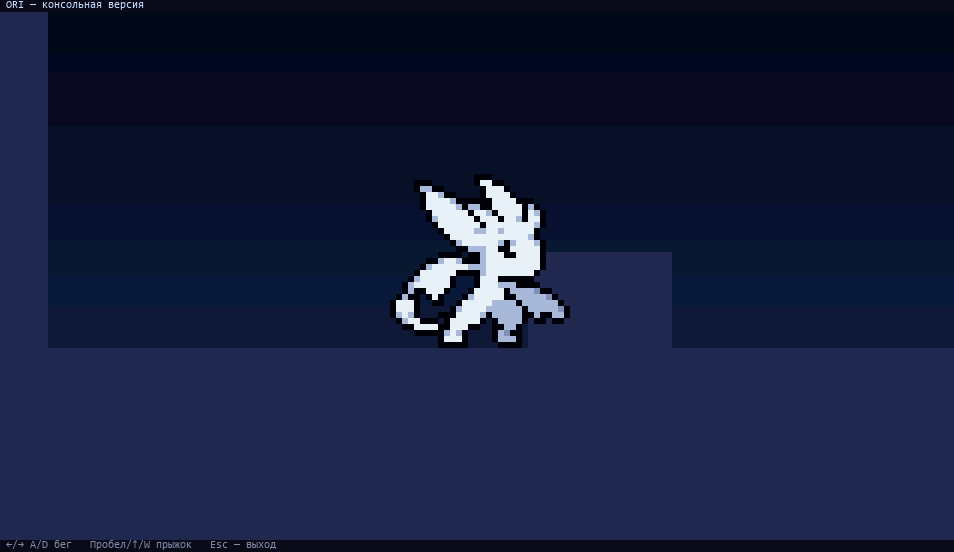
Рис. 16.1. Ори бежит вправо
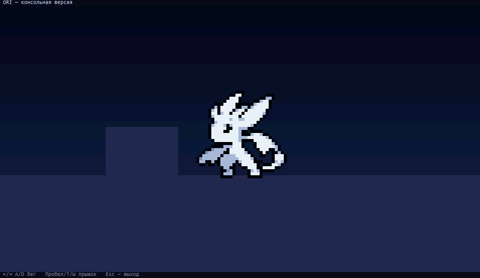
Рис. 16.2. Тот же спрайт, отражённый: Ори бежит влево
GitВетка для исправления
Сдвиги спрайта легко перепутать. Устроим такую ошибку нарочно, как будто она проскочила незамеченной. Сохраните главу коммитом, как обычно. Потом в drawPlayer замените - 5 на + 5 в строке с sy, соберите игру — Ори наполовину утоплен в землю — и сохраните и эту «ошибку»:
git commit -am "Сдвиг спрайта"
Ключ -a сам отмечает все изменённые файлы, за которыми Git уже следит, — git add отдельно не нужен. Новые файлы так не попадут, их по-прежнему добавляют через git add.
Вот теперь ошибка в истории, и её надо исправить. Исправление — отдельное маленькое дело, и для него заводят отдельную ветку. Её принято называть fix/что-исправляем:
git switch -c fix/ori-v-zemle
Switched to a new branch 'fix/ori-v-zemle'
Верните знак - и проверьте разницу с последним коммитом (здесь показана главная часть вывода):
git diff
- int sy = (int)roundf(b.y) + 5 + bob;
+ int sy = (int)roundf(b.y) - 5 + bob;
Ровно одна строка — так и должно быть у хорошего исправления. Сохраняем:
git commit -am "Ори больше не утопает в земле: спрайт сдвигаем вверх"
[fix/ori-v-zemle 42f9850] Ори больше не утопает в земле: спрайт сдвигаем вверх
1 file changed, 1 insertion(+), 1 deletion(-)
Вернитесь в ветку главы и влейте исправление:
git switch study
git merge fix/ori-v-zemle
git branch -d fix/ori-v-zemle
Fast-forward («перемотка вперёд») значит, что в study за это время ничего не менялось, и Git просто передвинул ветку на коммит с исправлением. Ветка fix/... больше не нужна: git branch -d удаляет её, а сам коммит остаётся в истории study.
ФишкаОдин спрайт — много картинок
Масштаб, отражение и смена палитры делаются при рисовании, а сам рисунок остаётся одним массивом строк. Вот гриб в четырёх видах: маленький, средний, большой и большой отражённый, подпрыгивающий и переливающийся всеми цветами.
// Фишка главы 16: один спрайт — много картинок. Масштаб, зеркало и смена палитры// делаются при рисовании, а сам рисунок остаётся одним массивом строк.// Сборка из папки игры (файл лежит в папке fishki):// g++ -O2 -std=c++17 -Wall -Wextra -I. fishki\16-sprite.cpp screen.cpp console.cpp -o sprite.exe#define WIN32_LEAN_AND_MEAN#define NOMINMAX#include <windows.h>#include <cmath>#include "console.h"#include "screen.h"constint MUSH_W = 12;constint MUSH_H = 12;// '.' — прозрачно, 'a' — шляпка, 'b' — пятна, 'c' — ножка, 'd' — глазаconstchar* MUSHROOM[MUSH_H] = {"....aaaa....","..aabbaaaa..",".aaabbaabba.","aaaaaaaabbaa","abbaaaaaaaaa","abbaaabbaaaa","aaaaaabbaaaa","..cccccccc..","...cdccdc...","...cdccdc...","...cccccc...","....cccc....",};// Рисует гриб: левый верхний угол (x, y), каждый пиксель — квадрат scale×scale.// flip — отразить по горизонтали, capColor — цвет шляпки.staticvoid drawMushroom(int x, int y, int scale, bool flip, Color capColor) {for (int row = 0; row < MUSH_H; row++) {for (int col = 0; col < MUSH_W; col++) {char key = MUSHROOM[row][flip ? MUSH_W - 1 - col : col];if (key == '.') continue;Color c = key == 'a' ? capColor : key == 'b' ? rgb(255, 250, 240) : key == 'c' ? rgb(240, 220, 190) : rgb(30, 30, 40);for (int sy = 0; sy < scale; sy++) {for (int sx = 0; sx < scale; sx++) putPixel(x + col * scale + sx, y + row * scale + sy, c); } } }}int main() { consoleInit(); screenFitToConsole();float t = 0;while (!keyDown(VK_ESCAPE)) {for (int y = 0; y < screenHeight(); y++) {for (int x = 0; x < screenWidth(); x++) putPixel(x, y, rgb(20, 26, 50)); }int ground = screenHeight() - 6;// Слева направо: масштаб 1, 2, 3 и последний — отражённый и «дышащий» drawMushroom(6, ground - 12, 1, false, rgb(220, 50, 60)); drawMushroom(24, ground - 24, 2, false, rgb(60, 160, 240)); drawMushroom(54, ground - 36, 3, false, rgb(120, 220, 90));int bob = (int)(sinf(t * 3) * 3); // подпрыгивает вверх-внизColor rainbow = rgb((int)(128 + 127 * sinf(t)), (int)(128 + 127 * sinf(t + 2)), (int)(128 + 127 * sinf(t + 4))); drawMushroom(96, ground - 36 + bob, 3, true, rainbow); textAdd(LINE_TOP, " Один спрайт: масштаб, зеркало, палитра", rgb(220, 230, 255)); textAdd(LINE_BOTTOM, " Esc — выход", rgb(130, 140, 170)); screenPresent(); t += 0.04f; Sleep(25); } consoleRestore();return0;}
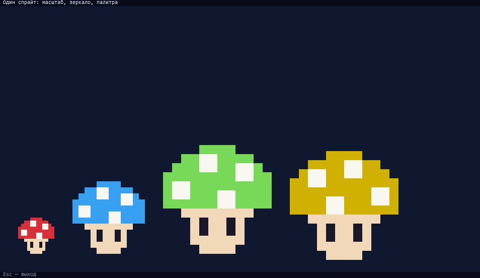
Рис. 16.3. Четыре гриба из одного рисунка
Создайте в папке игры папку fishki (если её ещё нет) и сохраните программу туда как fishki\16-sprite.cpp. Соберите её из папки игры вместе с нужными модулями:
Все 30 файлов игры после этой главы — целиком. Откройте файл, чтобы сравнить со своим, а кнопка «Копировать» поможет, если нужно догнать: вставьте код в файл с тем же именем в папке игры.
// ============================================================================// camera.cpp — камера следует за Ори и не выходит за края уровня// ============================================================================#include <cmath>#include "camera.h"#include "config.h"#include "game.h"#include "mathx.h"// Не даём камере заглянуть за края уровняstaticvoid clampCamera(Game& g) {Camera& cam = g.camera;float maxX = (float)(g.world.width * TILE - screenWidth());float maxY = (float)(MAP_H * TILE - screenHeight()); cam.x = clampf(cam.x, 0, fmaxf(maxX, 0));// если окно выше уровня, прижимаем уровень к низу экрана cam.y = maxY < 0 ? maxY : clampf(cam.y, 0, maxY);}// Целые координаты камеры для рисованияstaticvoid updateView(Camera& cam) { cam.viewX = (int)floorf(cam.x); cam.viewY = (int)floorf(cam.y);}void centerCamera(Game& g) {constBody& b = g.player.body; g.camera.x = b.x + b.w / 2.0f - screenWidth() / 2.0f; g.camera.y = b.y + b.h / 2.0f - screenHeight() / 2.0f; clampCamera(g); updateView(g.camera);}void updateCamera(Game& g) { centerCamera(g);}
camera.h22 строкиcamera.h
// ============================================================================// camera.h — какая часть мира видна на экране, рисование в координатах мира// ============================================================================#pragma once#include "color.h"#include "screen.h"structGame; // описана в game.h — здесь достаточно знать, что такая структура естьstructCamera {float x, y; // левый верхний угол экрана в миреint viewX, viewY; // то же целыми числами (с тряской) — по ним рисуем};// Поставить пиксель по координатам мира: экран = мир − камераinlinevoid putWorldPixel(constCamera& cam, int wx, int wy, Color c) { putPixel(wx - cam.viewX, wy - cam.viewY, c);}void centerCamera(Game& g); // сразу поставить Ори в центр экранаvoid updateCamera(Game& g); // камера следует за Ори
color.h34 строкиcolor.h
// ============================================================================// color.h — цвет пикселя. Цвет хранится в одном числе 0xRRGGBB:// по два шестнадцатеричных разряда на красный, зелёный и синий.// ============================================================================#pragma oncetypedefunsignedintColor;// Ограничить канал диапазоном 0..255inlineint clampChannel(int value) {return value < 0 ? 0 : (value > 255 ? 255 : value);}// Собрать цвет из красного, зелёного и синего (каждый 0..255)inlineColor rgb(int r, int g, int b) {return (Color)(clampChannel(r) << 16 | clampChannel(g) << 8 | clampChannel(b));}// Достать каналы обратноinlineint colorR(Color c) { return (c >> 16) & 255; }inlineint colorG(Color c) { return (c >> 8) & 255; }inlineint colorB(Color c) { return c & 255; }// Смешать два цвета: t = 0 — первый цвет, t = 1 — второйinlineColor mixColor(Color a, Color b, float t) {return rgb((int)(colorR(a) + (colorR(b) - colorR(a)) * t), (int)(colorG(a) + (colorG(b) - colorG(a)) * t), (int)(colorB(a) + (colorB(b) - colorB(a)) * t));}// Изменить яркость: k = 0.5 — вдвое темнее, k = 2 — вдвое ярчеinlineColor scaleColor(Color c, float k) {return rgb((int)(colorR(c) * k), (int)(colorG(c) * k), (int)(colorB(c) * k));}
config.h26 строкconfig.h
// ============================================================================// config.h — настройки игры. Все важные числа собраны здесь,// чтобы их было легко найти и поменять.// ============================================================================#pragma once// Картинкаconstint MAX_SCREEN_W = 320; // наибольшая ширина картинки в пикселяхconstint MAX_SCREEN_H = 200; // наибольшая высота картинки в пикселях// Мирconstint TILE = 8; // сторона тайла в пикселяхconstint MAP_H = 22; // высота уровня в тайлахconstint MAX_MAP_W = 160; // ширина самого широкого уровня в тайлах// Движениеconstfloat RUN_SPEED = 95.0f; // скорость бега, пикселей в секундуconstfloat RUN_ACCEL_GROUND = 900.0f; // разгон и торможение на землеconstfloat RUN_ACCEL_AIR = 600.0f; // в воздухе разгоняться труднееconstfloat GRAVITY = 900.0f; // насколько быстро растёт скорость паденияconstfloat JUMP_SPEED = 320.0f; // скорость в начале прыжкаconstfloat MAX_FALL_SPEED = 360.0f; // быстрее падать нельзя// Ориconstint PLAYER_W = 16; // ширина хитбоксаconstint PLAYER_H = 24; // высота хитбокса
console.cpp79 строкconsole.cpp
// ============================================================================// console.cpp — всё, что связано с Windows-консолью, собрано в одном файле// ============================================================================#define WIN32_LEAN_AND_MEAN#define NOMINMAX#include <windows.h>#include <cstring>#include "console.h"// Как была настроена консоль до запуска игрыstaticDWORD originalOutMode = 0;staticDWORD originalInMode = 0;staticUINT originalCodePage = 0;// Ctrl+C или закрытие: consoleRestore сначала останавливает writer.// Обработчик делает ограниченную по времени попытку уборки, затем Windows завершает процесс.staticBOOL WINAPI onConsoleEvent(DWORD) { consoleRestore();return FALSE;}void consoleInit() {HANDLE out = GetStdHandle(STD_OUTPUT_HANDLE);HANDLE in = GetStdHandle(STD_INPUT_HANDLE); GetConsoleMode(out, &originalOutMode); GetConsoleMode(in, &originalInMode); originalCodePage = GetConsoleOutputCP(); SetConsoleMode(out, originalOutMode | ENABLE_PROCESSED_OUTPUT | ENABLE_VIRTUAL_TERMINAL_PROCESSING); SetConsoleMode(in, ENABLE_EXTENDED_FLAGS); // выключить выделение мышью: оно ставит вывод на паузу SetConsoleOutputCP(CP_UTF8); SetConsoleCtrlHandler(onConsoleEvent, TRUE); SetConsoleTitleA("Ori");// Отдельный экран, спрятать курсор, очистить экранconstchar* start = "\x1b[?1049h\x1b[?25l\x1b[2J"; consoleWrite(start, (int)strlen(start));}void consoleRestore() {// Обычные цвета, показать курсор, вернуться на основной экранconstchar* finish = "\x1b[0m\x1b[?25h\x1b[?1049l"; consoleWrite(finish, (int)strlen(finish)); consoleFlushInput(); SetConsoleMode(GetStdHandle(STD_OUTPUT_HANDLE), originalOutMode); SetConsoleMode(GetStdHandle(STD_INPUT_HANDLE), originalInMode); SetConsoleOutputCP(originalCodePage);}bool consoleSize(int& cols, int& rows) { CONSOLE_SCREEN_BUFFER_INFO info;if (!GetConsoleScreenBufferInfo(GetStdHandle(STD_OUTPUT_HANDLE), &info)) {returnfalse; } cols = info.srWindow.Right - info.srWindow.Left + 1; rows = info.srWindow.Bottom - info.srWindow.Top + 1;returntrue;}void consoleFlushInput() { FlushConsoleInputBuffer(GetStdHandle(STD_INPUT_HANDLE));}bool keyDown(int virtualKey) {return (GetAsyncKeyState(virtualKey) & 0x8000) != 0;}bool consoleWrite(constchar* data, int length) {if (length < 0) returnfalse;int sent = 0;while (sent < length) {DWORD written = 0;DWORD remaining = (DWORD)(length - sent);if (!WriteFile(GetStdHandle(STD_OUTPUT_HANDLE), data + sent, remaining, &written, NULL) || written == 0 || written > remaining) returnfalse; sent += (int)written; }returntrue;}
console.h13 строкconsole.h
// ============================================================================// console.h — окно консоли Windows: настройка, размер, клавиши, вывод// ============================================================================#pragma oncevoid consoleInit(); // включить цвета и UTF-8, перейти на отдельный экранvoid consoleRestore(); // вернуть консоль в исходное состояниеbool consoleSize(int& cols, int& rows); // видимый размер окна в символахvoid consoleFlushInput(); // выбросить накопившиеся нажатия клавишbool keyDown(int virtualKey); // зажата ли клавиша прямо сейчас// Полностью записать данные; false — ошибка или неполная записьbool consoleWrite(constchar* data, int length);
// ============================================================================// game.cpp — загрузка уровней и правила игры: что обновлять в каждом кадре// ============================================================================#include <algorithm>#include <cmath>#include <cstring>#include "game.h"#include "input.h"#include "levels.h"// Символ карты — объект? Тогда создаём объект и возвращаем пробел.// Иначе это тайл (камень, бревно, шипы) — он остаётся в карте как есть.staticchar placeObject(Game& g, char symbol, float wx, float wy) {World& w = g.world;switch (symbol) {case'P': w.spawnX = wx; w.spawnY = wy + TILE - PLAYER_H; // ногами на дно клеткиreturn' ';default:return symbol; }}void loadLevel(Game& g, int index) {const LevelInfo& level = levelInfo(index);World& w = g.world; g.levelIndex = index;// Ширина уровня — длина самой длинной строки карты w.width = 0;for (int ty = 0; ty < MAP_H; ty++) { w.width = std::max(w.width, (int)strlen(level.rows[ty])); } w.width = std::min(w.width, MAX_MAP_W);for (int ty = 0; ty < MAP_H; ty++) {int length = (int)strlen(level.rows[ty]);for (int tx = 0; tx < w.width; tx++) {char symbol = tx < length ? level.rows[ty][tx] : ' '; w.tiles[ty][tx] = placeObject(g, symbol, (float)(tx * TILE), (float)(ty * TILE)); } w.tiles[ty][w.width] = 0; // конец строки } placePlayer(g.player, w.spawnX, w.spawnY); centerCamera(g);}void startNewGame(Game& g) { loadLevel(g, 0);}void updateGame(Game& g, constInput& in, float dt) { g.time += dt; updatePlayer(g, in, dt); updateCamera(g);}
game.h24 строкиgame.h
// ============================================================================// game.h — вся игра в одной структуре Game. Функции получают её по ссылке,// поэтому глобальные переменные не нужны.// ============================================================================#pragma once#include "config.h"#include "camera.h"#include "player.h"#include "world.h"structInput;structGame {float time; // сколько секунд идёт игра — для анимацийint levelIndex; // номер текущего уровня (с нуля)World world;Camera camera;Player player;};void startNewGame(Game& g);void loadLevel(Game& g, int index);void updateGame(Game& g, constInput& in, float dt);
hud.cpp26 строкhud.cpp
// ============================================================================// hud.cpp — строки текста над картинкой и под ней// ============================================================================#include <cstdio>#include "game.h"#include "hud.h"#include "screen.h"constColor HUD_TEXT = rgb(200, 220, 255);constColor HINT_TEXT = rgb(130, 140, 170);staticvoid drawTopLine() { textAdd(LINE_TOP, " ORI — консольная версия", HUD_TEXT);}// Нижняя строка — подсказка по управлению (короче, если окно узкое)staticvoid drawBottomLine() {int w = screenWidth();if (w >= 60) textAdd(LINE_BOTTOM, " ←/→ A/D бег Пробел/↑/W прыжок Esc — выход", HINT_TEXT);}void drawHud() { drawTopLine(); drawBottomLine();}
hud.h6 строкhud.h
// ============================================================================// hud.h — строки текста над и под картинкой и надписи поверх неё// ============================================================================#pragma oncevoid drawHud();
// ============================================================================// input.h — какие кнопки управления нажаты// ============================================================================#pragma once// Одна кнопка управленияstructKey {bool held; // зажата сейчасbool pressed; // нажата именно в этом кадре (в прошлом кадре не была зажата)};structInput {Key left;Key right;Key jump;Key quit;};void readInput(Input& in);
levels.cpp45 строкlevels.cpp
// ============================================================================// levels.cpp — карты уровней. Каждый символ — тайл 8 × 8 пикселей:// # — камень, = — бревно, ^ — шипы, P — старт Ори// ============================================================================#include "config.h"#include "levels.h"// Лес Нибельstaticconstchar* LEVEL1[MAP_H] = {"## ##################### ##","## ##################### ##","## ##################### ##","## ##################### B ##","## ##################### ##","## ##################### o o + ##","## ##################### ##","## ##################### o C S S ##","## B ##################### ################# ##","## + === ################# o ##","## o o B o ################# B ##","## o === ################# S ##","## o o o o o o o B ===########################### ##","## o === ########################### ##","## o o o o === ########### C S S ########################### ##","## ########### #################### === ########################### ##","## P ### ########### #################### o o o ########################### ##","## ### S C ########### #################### ^^ ########################### T ##","############################### ################### ################################### ##############################################","############################### ################### ################################### ##############################################","###############################^^^^^^###################^^^^^^^^^^^^^^^###################################^^^^^^^^##############################################","################################################################################################################################################################",};// Все уровни по порядкуstaticconst LevelInfo LEVELS[] = { { "Лес Нибель", LEVEL1 },};int levelCount() {returnsizeof(LEVELS) / sizeof(LEVELS[0]);}const LevelInfo& levelInfo(int index) {return LEVELS[index];}
levels.h12 строкlevels.h
// ============================================================================// levels.h — описания уровней: карта и название// ============================================================================#pragma oncestruct LevelInfo {constchar* name; // название уровняconstchar* const* rows; // карта: MAP_H строк из символов};int levelCount(); // сколько всего уровнейconst LevelInfo& levelInfo(int index); // описание уровня по номеру (с нуля)
main.cpp47 строкmain.cpp
// ============================================================================// ORI — консольная игра-платформер, вид сбоку.// Картинка рисуется пикселями из символов '▀' и ANSI-цветов.// Без классов: только данные (структуры) и функции.//// Сборка: build.bat; отладочная сборка: debug.bat.// В скриптах перечислены только исходники игры этого шага.// ============================================================================#include <chrono>#include <thread>#include "console.h"#include "game.h"#include "input.h"#include "render.h"#include "screen.h"int main() { consoleInit(); screenFitToConsole();staticGame game; // вся игра; static — чтобы большая структура не лежала на стеке startNewGame(game);Input input = {};constauto FRAME_TIME = std::chrono::milliseconds(25); // 25 мс — около 40 кадров в секундуauto previous = std::chrono::steady_clock::now();while (true) {auto frameStart = std::chrono::steady_clock::now();float dt = std::chrono::duration<float>(frameStart - previous).count(); previous = frameStart;if (dt > 0.05f) dt = 0.05f; // после долгой паузы не прыгаем далеко вперёд screenFitToConsole(); consoleFlushInput(); readInput(input);if (input.quit.pressed) break; updateGame(game, input, dt); renderGame(game); screenPresent();auto elapsed = std::chrono::steady_clock::now() - frameStart;if (elapsed < FRAME_TIME) std::this_thread::sleep_for(FRAME_TIME - elapsed); } consoleRestore();return0;}
mathx.h11 строкmathx.h
// ============================================================================// mathx.h — маленькие математические помощники// ============================================================================#pragma once// Зажать число между lo и hiinlineint clampi(int v, int lo, int hi) { return v < lo ? lo : (v > hi ? hi : v); }inlinefloat clampf(float v, float lo, float hi) { return v < lo ? lo : (v > hi ? hi : v); }// Плавный переход: t = 0 — a, t = 1 — b, t = 0.5 — ровно посерединеinlinefloat lerpf(float a, float b, float t) { return a + (b - a) * t; }
physics.cpp72 строкиphysics.cpp
// ============================================================================// physics.cpp — движение и столкновения с тайлами// ============================================================================#include <cmath>#include "config.h"#include "physics.h"Body makeBody(float x, float y, int w, int h) {Body b; b.x = x; b.y = y; b.vx = 0; b.vy = 0; b.w = w; b.h = h; b.onGround = false; b.hitWall = false;return b;}bool rectSolid(constWorld& world, float x, float y, float w, float h) {// Номера тайлов, которые задевает прямоугольник. 0.01 — чтобы прямоугольник,// стоящий ровно на границе тайла, не считался залезшим в соседний.int tx0 = (int)floorf(x / TILE), tx1 = (int)floorf((x + w - 0.01f) / TILE);int ty0 = (int)floorf(y / TILE), ty1 = (int)floorf((y + h - 0.01f) / TILE);for (int ty = ty0; ty <= ty1; ty++) {for (int tx = tx0; tx <= tx1; tx++) {if (isSolidTile(tileAt(world, tx, ty))) returntrue; } }returnfalse;}void moveBody(constWorld& world, Body& b, float dt) { b.onGround = false; b.hitWall = false;// Большой сдвиг делим на шаги не длиннее 3 пикселей,// иначе быстрое тело может проскочить сквозь тонкую стенуfloat maxMove = fmaxf(fabsf(b.vx), fabsf(b.vy)) * dt;int steps = (int)ceilf(maxMove / 3.0f);if (steps < 1) steps = 1;float stepDt = dt / steps;for (int s = 0; s < steps; s++) {// Сначала по горизонталиfloat nx = b.x + b.vx * stepDt;if (rectSolid(world, nx, b.y, (float)b.w, (float)b.h)) {if (b.vx > 0) { nx = floorf((nx + b.w) / TILE) * TILE - b.w; // прижаться к стене справа } else { nx = (floorf(nx / TILE) + 1) * TILE; // прижаться к стене слева } b.vx = 0; b.hitWall = true; } b.x = nx;// Потом по вертикалиfloat ny = b.y + b.vy * stepDt;if (rectSolid(world, b.x, ny, (float)b.w, (float)b.h)) {if (b.vy > 0) { ny = floorf((ny + b.h) / TILE) * TILE - b.h; // встали на пол b.onGround = true; } else { ny = (floorf(ny / TILE) + 1) * TILE; // ударились о потолок } b.vy = 0; } b.y = ny; }}
physics.h22 строкиphysics.h
// ============================================================================// physics.h — тела, которые двигаются и сталкиваются с тайлами// ============================================================================#pragma once#include "world.h"structBody {float x, y; // левый верхний угол хитбокса в миреfloat vx, vy; // скорость, пикселей в секунду (vy > 0 — вниз)int w, h; // размер хитбоксаbool onGround; // стоит на чём-то твёрдомbool hitWall; // в этом кадре упёрлось в стену};Body makeBody(float x, float y, int w, int h); // неподвижное тело в точке (x, y)// Есть ли твёрдые тайлы в прямоугольникеbool rectSolid(constWorld& world, float x, float y, float w, float h);// Сдвинуть тело на скорость × dt, не пуская его в твёрдые тайлыvoid moveBody(constWorld& world, Body& body, float dt);
player.cpp98 строкplayer.cpp
// ============================================================================// player.cpp — Ори: бег, прыжки, урон, отрисовка// ============================================================================#include <cmath>#include "config.h"#include "game.h"#include "input.h"#include "mathx.h"#include "player.h"#include "sprites.h"// Спрайт Ори по картинке ori.png, 30 × 29. На картинке Ори смотрит вправо.// . — прозрачный, # — контур, w — светлое тело, g — тень, d — глубокая теньstaticconstchar* ORI_ROWS[] = {"..............###.............","....###.......#ww##...........","....#gg##......#www#..........",".....#wwg##....#wwww#.........",".....#wwwwg######wwww###......",".....#wwwwwg#gg##wwwww#g#.....","......#wwwwww#wwg#wwww#wg#....","......#gwwwwww#www#wwg#ww#....",".......#wwwwwww#wwwwwwwwg#....","........#wwwwwggwwgwwwww#.....",".........#wwwwwwwwwwwwwg#.....","..........#gwwwwwwg#gwwwg#....","...........##gggww##wwwww#....","........####.##gwww##wwww#....","......##gwwg###gwwwwwwwww#....",".....#gwwwwwwgggwwwwwwwww#....","....#wwwwww####gwwwwwwww#.....","...#gwwwww#...#www######......","..#gwwwwww#...#wwwggg####.....","..#g##www#...#wwwww#ggggd##...",".#g##.#w#...#gwwwww##gggggd#..","#www#..##..#wwwwwgggg#gggggg#.","#www#.....#gwwwwgggggg#gggggd#","#gwg#...###wwwwg#ggggg##g##gg#",".#gww###.#wwwww#.#gggg#.##.##.","..##wwww##www##..##gg#........","....#####gwg#....#gd##........","........#www#....#ggg#........","........#####.....####........",};staticconstchar ORI_KEYS[] = "#wgd";staticconstColor ORI_COLORS[] = { rgb(5, 6, 12), rgb(234, 242, 255), rgb(175, 190, 220), rgb(132, 148, 190) };staticconst Sprite ORI_SPRITE = { 30, 29, ORI_ROWS, ORI_KEYS, ORI_COLORS };void placePlayer(Player& p, float x, float y) { p.body = makeBody(x, y, PLAYER_W, PLAYER_H); p.facing = 1; p.animTime = 0;}// Бег: скорость плавно приближается к нужнойstaticvoid updateRun(Player& p, int dir, float dt) {Body& b = p.body;float target = dir * RUN_SPEED;float accel = b.onGround ? RUN_ACCEL_GROUND : RUN_ACCEL_AIR;if (b.vx < target) { b.vx = fminf(b.vx + accel * dt, target); } elseif (b.vx > target) { b.vx = fmaxf(b.vx - accel * dt, target); }if (dir != 0) p.facing = dir;}// Гравитация и прыжкиstaticvoid updateJump(Game& g, constInput& in, float dt) {Player& p = g.player;Body& b = p.body; b.vy = fminf(b.vy + GRAVITY * dt, MAX_FALL_SPEED);if (in.jump.pressed && b.onGround) { // прыгнуть можно только с земли b.vy = -JUMP_SPEED; }}void updatePlayer(Game& g, constInput& in, float dt) {Player& p = g.player;Body& b = p.body;int dir = (in.right.held ? 1 : 0) - (in.left.held ? 1 : 0); // -1, 0 или 1 updateRun(p, dir, dt); updateJump(g, in, dt); moveBody(g.world, b, dt); p.animTime += dt;}void drawPlayer(constGame& g) {constPlayer& p = g.player;constBody& b = p.body;// На бегу спрайт подпрыгивает на пиксель десять раз в секундуint bob = (b.onGround && fabsf(b.vx) > 10) ? ((int)(p.animTime * 10)) % 2 : 0;// Спрайт больше хитбокса: сдвигаем его, чтобы хитбокс пришёлся на телоint sx = (int)roundf(b.x) - 7;int sy = (int)roundf(b.y) - 5 + bob; drawSprite(g.camera, ORI_SPRITE, sx, sy, p.facing < 0, false); // смотрит влево — отражаем}
player.h20 строкplayer.h
// ============================================================================// player.h — Ори: управление, прыжки, жизни// ============================================================================#pragma once#include "physics.h"structGame; // описаны в других файлах — здесь достаточно объявленийstructInput;structPlayer {Body body; // положение, скорость и хитбоксint facing; // куда смотрит: -1 влево, 1 вправоfloat animTime; // время для анимации бега};// Поставить Ори в точку (x, y) и сбросить его состояние (жизни, прыжки...)void placePlayer(Player& player, float x, float y);void updatePlayer(Game& g, constInput& in, float dt);void drawPlayer(constGame& g);
render.cpp51 строкаrender.cpp
// ============================================================================// render.cpp — фон, тайлы и порядок рисования кадра// ============================================================================#include <cmath>#include "game.h"#include "hud.h"#include "levels.h"#include "mathx.h"#include "render.h"#include "screen.h"// Пока фон — просто ночное небо: сверху темнее, к горизонту светлееstaticvoid drawBackground() {for (int y = 0; y < screenHeight(); y++) {Color sky = mixColor(rgb(6, 8, 28), rgb(24, 46, 84), (float)y / screenHeight());for (int x = 0; x < screenWidth(); x++) putPixel(x, y, sky); }}// Пока каждый тайл — квадрат одного цветаstaticColor tileColor(char tile) {if (tile == '#') return rgb(38, 44, 80);if (tile == '=') return rgb(112, 80, 52);return rgb(180, 45, 110); // шипы}staticvoid drawTiles(constGame& g) {constCamera& cam = g.camera;// Рисуем только видимые тайлы и по одному запасному с каждой стороныint tx0 = cam.viewX / TILE - 1, tx1 = (cam.viewX + screenWidth()) / TILE + 1;int ty0 = (int)floorf(cam.viewY / (float)TILE) - 1, ty1 = (cam.viewY + screenHeight()) / TILE + 1;for (int ty = ty0; ty <= ty1; ty++) {for (int tx = tx0; tx <= tx1; tx++) {char tile = tileAt(g.world, tx, ty);if (ty < 0 || ty >= MAP_H) continue;if (tile != '#' && tile != '=' && tile != '^') continue;Color c = tileColor(tile);for (int ly = 0; ly < TILE; ly++) {for (int lx = 0; lx < TILE; lx++) putWorldPixel(cam, tx * TILE + lx, ty * TILE + ly, c); } } }}void renderGame(constGame& g) { drawBackground(); drawTiles(g); drawPlayer(g); drawHud();}
render.h8 строкrender.h
// ============================================================================// render.h — рисование кадра целиком// ============================================================================#pragma oncestructGame;void renderGame(constGame& g); // нарисовать мир, персонажей и текст в картинку экрана
screen.cpp178 строкscreen.cpp
// ============================================================================// screen.cpp — картинка в памяти и её вывод в консоль ANSI-командами.// Одна клетка консоли = два пикселя: символ '▀' рисует верхний пиксель// цветом текста, а нижний остаётся цветом фона.// ============================================================================#include <cstdio>#include <cstring>#include "config.h"#include "console.h"#include "mathx.h"#include "screen.h"// ---------------------------------------------------------------------------// Данные модуля (static — видны только в этом файле)// ---------------------------------------------------------------------------staticColor pixels[MAX_SCREEN_H][MAX_SCREEN_W];staticint width = 120; // размер картинки в пикселях, подстраивается под окноstaticint height = 70;staticint consoleCols = 0;staticint consoleRows = 0;// Текст кадра: строки над и под картинкойconstint MAX_SEGMENTS = 32;constint MAX_TEXT = 128;struct TextSegment {char text[MAX_TEXT];Color color;};static TextSegment lineSegments[2][MAX_SEGMENTS];staticint lineSegmentCount[2] = { 0, 0 };// Сюда собирается весь текст кадра вместе с ANSI-командамиstaticchar out[4 * 1024 * 1024];staticint outLength = 0;// ---------------------------------------------------------------------------// Размер и пиксели// ---------------------------------------------------------------------------bool screenFitToConsole() {int cols, rows;if (!consoleSize(cols, rows)) returnfalse;if (cols == consoleCols && rows == consoleRows) returnfalse; consoleCols = cols; consoleRows = rows;// На столбец уже окна: символ в последнем столбце переносит курсор на новую строку width = clampi(cols - 1, 40, MAX_SCREEN_W);// Две строки занимает текст, в каждой строке консоли два пикселя; высота чётная height = clampi((rows - 2) * 2, 40, MAX_SCREEN_H) & ~1;constchar* clear = "\x1b[0m\x1b[2J"; consoleWrite(clear, (int)strlen(clear));returntrue;}int screenWidth() { return width; }int screenHeight() { return height; }void putPixel(int x, int y, Color c) {if (x >= 0 && y >= 0 && x < width && y < height) { pixels[y][x] = c; }}// ---------------------------------------------------------------------------// Текст// ---------------------------------------------------------------------------void textAdd(TextLine line, constchar* text, Color color) {int& count = lineSegmentCount[line];if (count >= MAX_SEGMENTS) return; snprintf(lineSegments[line][count].text, MAX_TEXT, "%s", text); lineSegments[line][count].color = color; count++;}// ---------------------------------------------------------------------------// Сборка кадра из ANSI-команд// ---------------------------------------------------------------------------staticvoid emit(constchar* s) {int n = (int)strlen(s); memcpy(out + outLength, s, n); outLength += n;}// Число цифрами — вручную: так быстрее, чем через snprintfstaticvoid emitInt(int value) {char digits[12];int n = 0;if (value < 0) { out[outLength++] = '-'; value = -value; }do { digits[n++] = (char)('0' + value % 10); value /= 10; } while (value > 0);while (n > 0) { out[outLength++] = digits[--n]; }}// Команда цвета: фона (background = true) или текстаstaticvoid emitColor(bool background, Color c) { emit(background ? "\x1b[48;2;" : "\x1b[38;2;"); emitInt(colorR(c)); emit(";"); emitInt(colorG(c)); emit(";"); emitInt(colorB(c)); emit("m");}staticvoid emitLine(TextLine line) { emitColor(true, rgb(8, 10, 24));for (int i = 0; i < lineSegmentCount[line]; i++) { emitColor(false, lineSegments[line][i].color); emit(lineSegments[line][i].text); } emit("\x1b[K\x1b[0m"); // закрасить строку до конца и сбросить цвета}staticvoid emitPixels() {Color lastFg = 0xFFFFFFFF; // какой цвет текста сейчас включён (такого цвета не бывает — «никакой»)Color lastBg = 0xFFFFFFFF;for (int y = 0; y + 1 < height; y += 2) {for (int x = 0; x < width; x++) {// Огрубляем цвета: глаз разницы не видит, а одинаковых соседей большеColor top = pixels[y][x] & 0xF8F8F8;Color bottom = pixels[y + 1][x] & 0xF8F8F8;if (top == bottom) {// Оба пикселя одинаковые — хватит пробела с цветом фонаif (bottom != lastBg) { emitColor(true, bottom); lastBg = bottom; } out[outLength++] = ' '; } else {if (top != lastFg) { emitColor(false, top); lastFg = top; }if (bottom != lastBg) { emitColor(true, bottom); lastBg = bottom; } emit("\xE2\x96\x80"); // ▀ } } emit("\x1b[0m\r\n"); lastFg = 0xFFFFFFFF; lastBg = 0xFFFFFFFF; }}void screenPresent() {int availableCols, availableRows;if (consoleSize(availableCols, availableRows) && (availableCols < screenWidth() + 1 || availableRows < screenHeight() / 2 + 2)) {constchar* warning = "\x1b[0m\x1b[2J\x1b[HУвеличьте окно консоли";// In a very narrow window use a short ASCII hint to avoid wrapping.if (availableCols < 24) warning = "\x1b[0m\x1b[2J\x1b[HResize";if (availableCols < 7) warning = "\x1b[0m\x1b[2J"; consoleWrite(warning, (int)strlen(warning)); lineSegmentCount[0] = lineSegmentCount[1] = 0;return; } outLength = 0; emit("\x1b[H"); // курсор в левый верхний угол: рисуем поверх прошлого кадра emitLine(LINE_TOP); emit("\r\n"); emitPixels(); emitLine(LINE_BOTTOM); consoleWrite(out, outLength);// Текст задаётся заново в каждом кадре lineSegmentCount[LINE_TOP] = 0; lineSegmentCount[LINE_BOTTOM] = 0;}
screen.h19 строкscreen.h
// ============================================================================// screen.h — картинка из пикселей и строки текста над и под ней.// Сначала рисуем кадр в памяти, потом screenPresent() показывает его целиком.// ============================================================================#pragma once#include "color.h"bool screenFitToConsole(); // подогнать размер картинки под окно; true — размер изменилсяint screenWidth();int screenHeight();void putPixel(int x, int y, Color c);// Текст: строка над картинкой и строка под нейenum TextLine { LINE_TOP, LINE_BOTTOM };void textAdd(TextLine line, constchar* text, Color color);void screenPresent(); // показать кадр в консоли
sprites.cpp28 строкsprites.cpp
// ============================================================================// sprites.cpp — рисование спрайтов// ============================================================================#include "sprites.h"// Найти цвет символа в палитре. false — такого символа нет.staticbool findColor(const Sprite& sprite, char symbol, Color& color) {for (int k = 0; sprite.keys[k] != 0; k++) {if (sprite.keys[k] == symbol) { color = sprite.colors[k];returntrue; } }returnfalse;}void drawSprite(constCamera& cam, const Sprite& sprite, int wx, int wy, bool flip, bool flash) {for (int y = 0; y < sprite.h; y++) {for (int x = 0; x < sprite.w; x++) {// При отражении читаем строку справа налевоchar symbol = sprite.rows[y][flip ? (sprite.w - 1 - x) : x];Color color;if (symbol == '.' || !findColor(sprite, symbol, color)) continue;if (flash) color = mixColor(color, rgb(255, 255, 255), 0.75f); putWorldPixel(cam, wx + x, wy + y, color); } }}
sprites.h17 строкsprites.h
// ============================================================================// sprites.h — картинки персонажей, записанные символами// ============================================================================#pragma once#include "camera.h"#include "color.h"struct Sprite {int w, h; // размер в пикселяхconstchar* const* rows; // строки картинки; '.' — прозрачный пиксельconstchar* keys; // какие символы встречаются в картинкеconstColor* colors; // каким цветом рисовать каждый символ из keys};// Нарисовать спрайт в мире. flip — отразить по горизонтали, flash — высветлить (после удара)void drawSprite(constCamera& cam, const Sprite& sprite, int wx, int wy, bool flip, bool flash);
world.cpp14 строкworld.cpp
// ============================================================================// world.cpp — доступ к тайлам уровня// ============================================================================#include "world.h"char tileAt(constWorld& world, int tx, int ty) {if (tx < 0 || tx >= world.width) return'#';if (ty < 0 || ty >= MAP_H) return' ';return world.tiles[ty][tx];}bool isSolidTile(char tile) {return tile == '#' || tile == '=' || tile == '^';}
world.h18 строкworld.h
// ============================================================================// world.h — загруженный уровень: тайлы и особые места на нём// ============================================================================#pragma once#include "config.h"structWorld {char tiles[MAP_H][MAX_MAP_W + 1]; // символы тайлов; объекты заменены пробеламиint width; // ширина уровня в тайлахfloat spawnX, spawnY; // где Ори появляется в начале уровня};// Тайл в клетке (tx, ty). За левым и правым краем — стена, сверху и снизу — пустота.char tileAt(constWorld& world, int tx, int ty);// Твёрдый ли тайл: сквозь твёрдые нельзя пройтиbool isSolidTile(char tile);
Задания
Часть II. Ори в мире пикселей
Глава 17Хорошие прыжки
Ори уже прыгает, но прыжок пока «деревянный»: всегда одной высоты, а с края платформы иногда не получается прыгнуть совсем. В этой главе мы добавим четыре приёма, которыми пользуются почти все хорошие платформеры: прыжок разной высоты, двойной прыжок, «время койота» и запоминание раннего нажатия. Кода будет немного, зато играть станет гораздо приятнее.
Разбираемся
Четыре опыта вместо одной большой правки
Сначала удерживайте прыжок, затем отпускайте сразу: короткое нажатие должно давать меньшую высоту. Отдельно проверьте второй прыжок в воздухе и невозможность третьего. Для coyote time сойдите с края и нажмите прыжок почти сразу; после долгого падения первый прыжок с края уже не должен срабатывать как наземный. Для jump buffer нажмите чуть до касания земли: прыжок должен начаться после приземления, но старое нажатие за долгое время до земли не должно сохраняться. Сравнивайте по одному приёму до и после изменения.
Таймер, который тикает вниз
Все приёмы этой главы держатся на одной простой идее — таймере. Таймер — обычная дробная переменная: в нужный момент в неё кладут время в секундах, а каждый кадр вычитают dt. Пока таймер больше нуля — «время ещё есть».
Фрагмент кода — место вставки указано в тексте
timer = 0.10f; // завели на 0.1 секунды// ... каждый кадр:
timer -= dt;
if (timer > 0) {
// ещё успеваем
}
Удобно, что таймеру не нужно знать номера кадров или время на часах: он сам отсчитывает свои доли секунды, и при любом dt работает одинаково.
Прыжок разной высоты
Игрок должен управлять высотой прыжка: коротко нажал — невысокий прыжок, держит — высокий. Как это сделать, если прыжок — это мгновенная скорость вверх? Очень просто: пока Ори летит вверх, а кнопка уже отпущена, гравитация сильнее. Подъём быстрее гасится, и прыжок выходит ниже.
Двойной прыжок
В воздухе Ори может прыгнуть ещё раз — но только один. Для этого нужен флаг canDoubleJump: на земле он true, второй прыжок делает его false. Флаг — переменная bool, которая помнит, случилось ли что-то.
Время койота
Вспомните мультфильм: койот убегает за край обрыва и ещё мгновение бежит по воздуху, пока не посмотрит вниз. В играх так же: игрок часто нажимает прыжок чуть позже, чем Ори сошёл с края. Компьютер честно скажет «ты уже в воздухе», и вместо прыжка Ори упадёт — игроку покажется, что игра «не послушалась». Поэтому после схода с края даём ещё 0.1 секунды, когда прыжок считается прыжком с земли. Это и есть время койота (coyote time).
Запомнить раннее нажатие
Обратная беда: игрок нажимает прыжок чуть раньше, чем Ори коснулся земли. Нажатие пропадает, и Ори приземляется без прыжка. Лечится так же — таймером: нажатие прыжка запоминается на 0.12 секунды (буфер прыжка, jump buffer). Если за это время Ори коснулся земли — прыгает. Одна оговорка: если двойной прыжок ещё не потрачен, раннее нажатие в воздухе сразу его и запустит — буфер выручает, когда двойного прыжка уже нет.
Обе поблажки игрок не замечает. Он просто чувствует, что управление «отзывчивое».
Игра · шаг 17Отзывчивые прыжки
Если добавились модули, замените и бат-файлы: список исходников в них относится к текущей главе.
Листинг 17.3. Числа второго прыжка, койота и буфера config.h
// Движениеconstfloat RUN_SPEED = 95.0f; // скорость бега, пикселей в секундуconstfloat RUN_ACCEL_GROUND = 900.0f; // разгон и торможение на землеconstfloat RUN_ACCEL_AIR = 600.0f; // в воздухе разгоняться труднееconstfloat GRAVITY = 900.0f; // насколько быстро растёт скорость паденияconstfloat JUMP_SPEED = 320.0f; // скорость в начале прыжкаconstfloat MAX_FALL_SPEED = 360.0f; // быстрее падать нельзяconstfloat DOUBLE_JUMP_SPEED = 280.0f; // второй прыжок в воздухе чуть слабееconstfloat COYOTE_TIME = 0.10f; // сколько секунд можно прыгнуть после схода с краяconstfloat JUMP_BUFFER_TIME = 0.12f; // сколько секунд помнится раннее нажатие прыжка
Листинг 17.4. Флаг двойного прыжка и два таймера player.h
structPlayer {Body body; // положение, скорость и хитбоксint facing; // куда смотрит: -1 влево, 1 вправоfloat animTime; // время для анимации бега};bool canDoubleJump; // прыжок в воздухе ещё не потраченfloat coyoteTime; // сколько ещё можно прыгнуть после схода с краяfloat jumpBuffer; // сколько ещё помнить раннее нажатие прыжка};
Гравитация сильнее в 2.2 раза, если кнопку отпустили на подъёме, — прыжок разной высоты.
Таймер койота: на земле он всё время «заряжен» на COYOTE_TIME, в воздухе тикает вниз.
Буфер прыжка: в кадр нажатия заряжается на JUMP_BUFFER_TIME, потом тикает вниз.
Если оба таймера ещё живы — прыжок с земли. После него таймеры обнуляем, иначе Ори прыгнул бы ещё раз в следующем кадре.
Иначе, если прыжок нажат в воздухе и второй прыжок не потрачен, — двойной прыжок.
Листинг 17.7. На земле второй прыжок снова доступен player.cpp
void updatePlayer(Game& g, constInput& in, float dt) {Player& p = g.player;Body& b = p.body;int dir = (in.right.held ? 1 : 0) - (in.left.held ? 1 : 0); // -1, 0 или 1 updateRun(p, dir, dt); updateJump(g, in, dt); moveBody(g.world, b, dt);if (b.onGround) p.canDoubleJump = true; p.animTime += dt;}
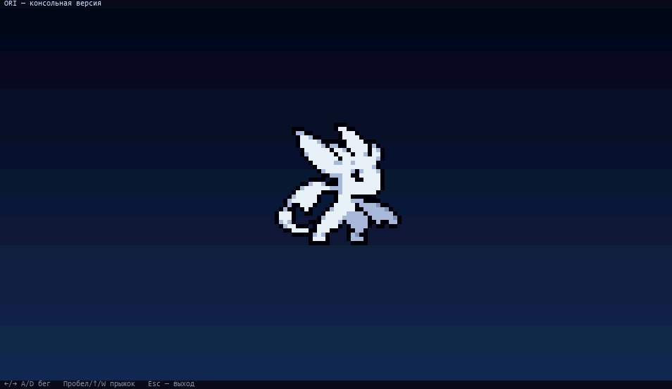
Рис. 17.1. Двойной прыжок: Ори взлетел выше, чем позволяет один прыжок
Попробуйте поставить в config.hCOYOTE_TIME = 0 и JUMP_BUFFER_TIME = 0, поиграйте минуту и верните как было. Отключаются только поблажки: обычное нажатие на земле должно по-прежнему запускать обычный прыжок. Поэтому wantsJump учитывает непосредственное pressed независимо от буфера, а canGroundJump — onGround независимо от таймера койота. Проверьте также каждую нулевую константу отдельно.
ФишкаПлавность движения
В анимации мало знать, откуда и куда движется предмет, — важно ещё, как. Пять квадратов в этой программе проходят один и тот же путь за одно и то же время, но по разным формулам: равномерно, с разгоном, с торможением, с разгоном и торможением и с отскоком, как мячик. Такие формулы называют функциями плавности (easing).
Листинг 17.8. Пять видов плавности 17-easing.cpp
// Фишка главы 17: плавность движения (easing). Пять квадратов проходят один и тот же путь// за одно и то же время, но по разным формулам — и выглядят совсем по-разному.// Сборка из папки игры (файл лежит в папке fishki):// g++ -O2 -std=c++17 -Wall -Wextra -I. fishki\17-easing.cpp screen.cpp console.cpp -o easing.exe#define WIN32_LEAN_AND_MEAN#define NOMINMAX#include <windows.h>#include <cmath>#include "console.h"#include "screen.h"// Получает долю времени t (от 0 до 1) и возвращает долю пройденного путиstaticfloat ease(int kind, float t) {switch (kind) {case1: return t * t; // разгонcase2: return1 - (1 - t) * (1 - t); // торможениеcase3: return t < 0.5f ? 2 * t * t : 1 - 2 * (1 - t) * (1 - t); // разгон и торможениеcase4: { // мячикfloat fade = (1 - t) * (1 - t);return1 - fabsf(cosf(t * 3.14159f * 2.5f)) * fade; }default: return t; // равномерно }}int main() { consoleInit(); screenFitToConsole();constColor colors[5] = { rgb(200, 200, 220), rgb(255, 120, 120), rgb(120, 255, 150), rgb(120, 180, 255), rgb(255, 220, 100) };float time = 0;while (!keyDown(VK_ESCAPE)) {float t = fmodf(time, 2.5f) / 2.0f; // 2 с движения и полсекунды стоимif (t > 1) t = 1;for (int y = 0; y < screenHeight(); y++) {for (int x = 0; x < screenWidth(); x++) putPixel(x, y, rgb(16, 20, 40)); }int left = 8, right = screenWidth() - 14;for (int i = 0; i < 5; i++) {int y = 6 + i * 12;for (int x = left; x <= right + 6; x++) putPixel(x, y + 3, rgb(40, 46, 80)); // дорожкаint x = left + (int)((right - left) * ease(i, t));for (int dy = 0; dy < 7; dy++) {for (int dx = 0; dx < 7; dx++) putPixel(x + dx, y + dy, colors[i]); } } textAdd(LINE_TOP, " linear ", colors[0]); textAdd(LINE_TOP, "easeIn ", colors[1]); textAdd(LINE_TOP, "easeOut ", colors[2]); textAdd(LINE_TOP, "easeInOut ", colors[3]); textAdd(LINE_TOP, "bounce", colors[4]); textAdd(LINE_BOTTOM, " Esc — выход", rgb(130, 140, 170)); screenPresent(); time += 0.025f; Sleep(25); } consoleRestore();return0;}
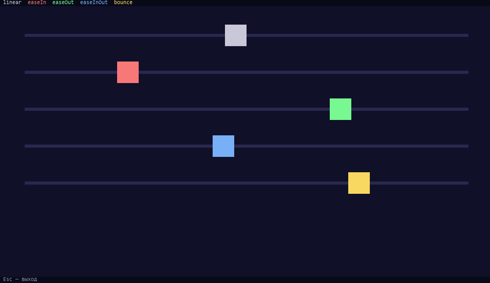
Рис. 17.2. Квадраты на одной дорожке движутся по-разному
Создайте в папке игры папку fishki (если её ещё нет) и сохраните программу туда как fishki\17-easing.cpp. Соберите её из папки игры вместе с нужными модулями:
Все 30 файлов игры после этой главы — целиком. Откройте файл, чтобы сравнить со своим, а кнопка «Копировать» поможет, если нужно догнать: вставьте код в файл с тем же именем в папке игры.
// ============================================================================// camera.cpp — камера следует за Ори и не выходит за края уровня// ============================================================================#include <cmath>#include "camera.h"#include "config.h"#include "game.h"#include "mathx.h"// Не даём камере заглянуть за края уровняstaticvoid clampCamera(Game& g) {Camera& cam = g.camera;float maxX = (float)(g.world.width * TILE - screenWidth());float maxY = (float)(MAP_H * TILE - screenHeight()); cam.x = clampf(cam.x, 0, fmaxf(maxX, 0));// если окно выше уровня, прижимаем уровень к низу экрана cam.y = maxY < 0 ? maxY : clampf(cam.y, 0, maxY);}// Целые координаты камеры для рисованияstaticvoid updateView(Camera& cam) { cam.viewX = (int)floorf(cam.x); cam.viewY = (int)floorf(cam.y);}void centerCamera(Game& g) {constBody& b = g.player.body; g.camera.x = b.x + b.w / 2.0f - screenWidth() / 2.0f; g.camera.y = b.y + b.h / 2.0f - screenHeight() / 2.0f; clampCamera(g); updateView(g.camera);}void updateCamera(Game& g) { centerCamera(g);}
camera.h22 строкиcamera.h
// ============================================================================// camera.h — какая часть мира видна на экране, рисование в координатах мира// ============================================================================#pragma once#include "color.h"#include "screen.h"structGame; // описана в game.h — здесь достаточно знать, что такая структура естьstructCamera {float x, y; // левый верхний угол экрана в миреint viewX, viewY; // то же целыми числами (с тряской) — по ним рисуем};// Поставить пиксель по координатам мира: экран = мир − камераinlinevoid putWorldPixel(constCamera& cam, int wx, int wy, Color c) { putPixel(wx - cam.viewX, wy - cam.viewY, c);}void centerCamera(Game& g); // сразу поставить Ори в центр экранаvoid updateCamera(Game& g); // камера следует за Ори
color.h34 строкиcolor.h
// ============================================================================// color.h — цвет пикселя. Цвет хранится в одном числе 0xRRGGBB:// по два шестнадцатеричных разряда на красный, зелёный и синий.// ============================================================================#pragma oncetypedefunsignedintColor;// Ограничить канал диапазоном 0..255inlineint clampChannel(int value) {return value < 0 ? 0 : (value > 255 ? 255 : value);}// Собрать цвет из красного, зелёного и синего (каждый 0..255)inlineColor rgb(int r, int g, int b) {return (Color)(clampChannel(r) << 16 | clampChannel(g) << 8 | clampChannel(b));}// Достать каналы обратноinlineint colorR(Color c) { return (c >> 16) & 255; }inlineint colorG(Color c) { return (c >> 8) & 255; }inlineint colorB(Color c) { return c & 255; }// Смешать два цвета: t = 0 — первый цвет, t = 1 — второйinlineColor mixColor(Color a, Color b, float t) {return rgb((int)(colorR(a) + (colorR(b) - colorR(a)) * t), (int)(colorG(a) + (colorG(b) - colorG(a)) * t), (int)(colorB(a) + (colorB(b) - colorB(a)) * t));}// Изменить яркость: k = 0.5 — вдвое темнее, k = 2 — вдвое ярчеinlineColor scaleColor(Color c, float k) {return rgb((int)(colorR(c) * k), (int)(colorG(c) * k), (int)(colorB(c) * k));}
config.h29 строкconfig.h
// ============================================================================// config.h — настройки игры. Все важные числа собраны здесь,// чтобы их было легко найти и поменять.// ============================================================================#pragma once// Картинкаconstint MAX_SCREEN_W = 320; // наибольшая ширина картинки в пикселяхconstint MAX_SCREEN_H = 200; // наибольшая высота картинки в пикселях// Мирconstint TILE = 8; // сторона тайла в пикселяхconstint MAP_H = 22; // высота уровня в тайлахconstint MAX_MAP_W = 160; // ширина самого широкого уровня в тайлах// Движениеconstfloat RUN_SPEED = 95.0f; // скорость бега, пикселей в секундуconstfloat RUN_ACCEL_GROUND = 900.0f; // разгон и торможение на землеconstfloat RUN_ACCEL_AIR = 600.0f; // в воздухе разгоняться труднееconstfloat GRAVITY = 900.0f; // насколько быстро растёт скорость паденияconstfloat JUMP_SPEED = 320.0f; // скорость в начале прыжкаconstfloat MAX_FALL_SPEED = 360.0f; // быстрее падать нельзяconstfloat DOUBLE_JUMP_SPEED = 280.0f; // второй прыжок в воздухе чуть слабееconstfloat COYOTE_TIME = 0.10f; // сколько секунд можно прыгнуть после схода с краяconstfloat JUMP_BUFFER_TIME = 0.12f; // сколько секунд помнится раннее нажатие прыжка// Ориconstint PLAYER_W = 16; // ширина хитбоксаconstint PLAYER_H = 24; // высота хитбокса
console.cpp79 строкconsole.cpp
// ============================================================================// console.cpp — всё, что связано с Windows-консолью, собрано в одном файле// ============================================================================#define WIN32_LEAN_AND_MEAN#define NOMINMAX#include <windows.h>#include <cstring>#include "console.h"// Как была настроена консоль до запуска игрыstaticDWORD originalOutMode = 0;staticDWORD originalInMode = 0;staticUINT originalCodePage = 0;// Ctrl+C или закрытие: consoleRestore сначала останавливает writer.// Обработчик делает ограниченную по времени попытку уборки, затем Windows завершает процесс.staticBOOL WINAPI onConsoleEvent(DWORD) { consoleRestore();return FALSE;}void consoleInit() {HANDLE out = GetStdHandle(STD_OUTPUT_HANDLE);HANDLE in = GetStdHandle(STD_INPUT_HANDLE); GetConsoleMode(out, &originalOutMode); GetConsoleMode(in, &originalInMode); originalCodePage = GetConsoleOutputCP(); SetConsoleMode(out, originalOutMode | ENABLE_PROCESSED_OUTPUT | ENABLE_VIRTUAL_TERMINAL_PROCESSING); SetConsoleMode(in, ENABLE_EXTENDED_FLAGS); // выключить выделение мышью: оно ставит вывод на паузу SetConsoleOutputCP(CP_UTF8); SetConsoleCtrlHandler(onConsoleEvent, TRUE); SetConsoleTitleA("Ori");// Отдельный экран, спрятать курсор, очистить экранconstchar* start = "\x1b[?1049h\x1b[?25l\x1b[2J"; consoleWrite(start, (int)strlen(start));}void consoleRestore() {// Обычные цвета, показать курсор, вернуться на основной экранconstchar* finish = "\x1b[0m\x1b[?25h\x1b[?1049l"; consoleWrite(finish, (int)strlen(finish)); consoleFlushInput(); SetConsoleMode(GetStdHandle(STD_OUTPUT_HANDLE), originalOutMode); SetConsoleMode(GetStdHandle(STD_INPUT_HANDLE), originalInMode); SetConsoleOutputCP(originalCodePage);}bool consoleSize(int& cols, int& rows) { CONSOLE_SCREEN_BUFFER_INFO info;if (!GetConsoleScreenBufferInfo(GetStdHandle(STD_OUTPUT_HANDLE), &info)) {returnfalse; } cols = info.srWindow.Right - info.srWindow.Left + 1; rows = info.srWindow.Bottom - info.srWindow.Top + 1;returntrue;}void consoleFlushInput() { FlushConsoleInputBuffer(GetStdHandle(STD_INPUT_HANDLE));}bool keyDown(int virtualKey) {return (GetAsyncKeyState(virtualKey) & 0x8000) != 0;}bool consoleWrite(constchar* data, int length) {if (length < 0) returnfalse;int sent = 0;while (sent < length) {DWORD written = 0;DWORD remaining = (DWORD)(length - sent);if (!WriteFile(GetStdHandle(STD_OUTPUT_HANDLE), data + sent, remaining, &written, NULL) || written == 0 || written > remaining) returnfalse; sent += (int)written; }returntrue;}
console.h13 строкconsole.h
// ============================================================================// console.h — окно консоли Windows: настройка, размер, клавиши, вывод// ============================================================================#pragma oncevoid consoleInit(); // включить цвета и UTF-8, перейти на отдельный экранvoid consoleRestore(); // вернуть консоль в исходное состояниеbool consoleSize(int& cols, int& rows); // видимый размер окна в символахvoid consoleFlushInput(); // выбросить накопившиеся нажатия клавишbool keyDown(int virtualKey); // зажата ли клавиша прямо сейчас// Полностью записать данные; false — ошибка или неполная записьbool consoleWrite(constchar* data, int length);
// ============================================================================// game.cpp — загрузка уровней и правила игры: что обновлять в каждом кадре// ============================================================================#include <algorithm>#include <cmath>#include <cstring>#include "game.h"#include "input.h"#include "levels.h"// Символ карты — объект? Тогда создаём объект и возвращаем пробел.// Иначе это тайл (камень, бревно, шипы) — он остаётся в карте как есть.staticchar placeObject(Game& g, char symbol, float wx, float wy) {World& w = g.world;switch (symbol) {case'P': w.spawnX = wx; w.spawnY = wy + TILE - PLAYER_H; // ногами на дно клеткиreturn' ';default:return symbol; }}void loadLevel(Game& g, int index) {const LevelInfo& level = levelInfo(index);World& w = g.world; g.levelIndex = index;// Ширина уровня — длина самой длинной строки карты w.width = 0;for (int ty = 0; ty < MAP_H; ty++) { w.width = std::max(w.width, (int)strlen(level.rows[ty])); } w.width = std::min(w.width, MAX_MAP_W);for (int ty = 0; ty < MAP_H; ty++) {int length = (int)strlen(level.rows[ty]);for (int tx = 0; tx < w.width; tx++) {char symbol = tx < length ? level.rows[ty][tx] : ' '; w.tiles[ty][tx] = placeObject(g, symbol, (float)(tx * TILE), (float)(ty * TILE)); } w.tiles[ty][w.width] = 0; // конец строки } placePlayer(g.player, w.spawnX, w.spawnY); centerCamera(g);}void startNewGame(Game& g) { loadLevel(g, 0);}void updateGame(Game& g, constInput& in, float dt) { g.time += dt; updatePlayer(g, in, dt); updateCamera(g);}
game.h24 строкиgame.h
// ============================================================================// game.h — вся игра в одной структуре Game. Функции получают её по ссылке,// поэтому глобальные переменные не нужны.// ============================================================================#pragma once#include "config.h"#include "camera.h"#include "player.h"#include "world.h"structInput;structGame {float time; // сколько секунд идёт игра — для анимацийint levelIndex; // номер текущего уровня (с нуля)World world;Camera camera;Player player;};void startNewGame(Game& g);void loadLevel(Game& g, int index);void updateGame(Game& g, constInput& in, float dt);
hud.cpp26 строкhud.cpp
// ============================================================================// hud.cpp — строки текста над картинкой и под ней// ============================================================================#include <cstdio>#include "game.h"#include "hud.h"#include "screen.h"constColor HUD_TEXT = rgb(200, 220, 255);constColor HINT_TEXT = rgb(130, 140, 170);staticvoid drawTopLine() { textAdd(LINE_TOP, " ORI — консольная версия", HUD_TEXT);}// Нижняя строка — подсказка по управлению (короче, если окно узкое)staticvoid drawBottomLine() {int w = screenWidth();if (w >= 60) textAdd(LINE_BOTTOM, " ←/→ A/D бег Пробел/↑/W прыжок Esc — выход", HINT_TEXT);}void drawHud() { drawTopLine(); drawBottomLine();}
hud.h6 строкhud.h
// ============================================================================// hud.h — строки текста над и под картинкой и надписи поверх неё// ============================================================================#pragma oncevoid drawHud();
// ============================================================================// input.h — какие кнопки управления нажаты// ============================================================================#pragma once// Одна кнопка управленияstructKey {bool held; // зажата сейчасbool pressed; // нажата именно в этом кадре (в прошлом кадре не была зажата)};structInput {Key left;Key right;Key jump;Key quit;};void readInput(Input& in);
levels.cpp45 строкlevels.cpp
// ============================================================================// levels.cpp — карты уровней. Каждый символ — тайл 8 × 8 пикселей:// # — камень, = — бревно, ^ — шипы, P — старт Ори// ============================================================================#include "config.h"#include "levels.h"// Лес Нибельstaticconstchar* LEVEL1[MAP_H] = {"## ##################### ##","## ##################### ##","## ##################### ##","## ##################### B ##","## ##################### ##","## ##################### o o + ##","## ##################### ##","## ##################### o C S S ##","## B ##################### ################# ##","## + === ################# o ##","## o o B o ################# B ##","## o === ################# S ##","## o o o o o o o B ===########################### ##","## o === ########################### ##","## o o o o === ########### C S S ########################### ##","## ########### #################### === ########################### ##","## P ### ########### #################### o o o ########################### ##","## ### S C ########### #################### ^^ ########################### T ##","############################### ################### ################################### ##############################################","############################### ################### ################################### ##############################################","###############################^^^^^^###################^^^^^^^^^^^^^^^###################################^^^^^^^^##############################################","################################################################################################################################################################",};// Все уровни по порядкуstaticconst LevelInfo LEVELS[] = { { "Лес Нибель", LEVEL1 },};int levelCount() {returnsizeof(LEVELS) / sizeof(LEVELS[0]);}const LevelInfo& levelInfo(int index) {return LEVELS[index];}
levels.h12 строкlevels.h
// ============================================================================// levels.h — описания уровней: карта и название// ============================================================================#pragma oncestruct LevelInfo {constchar* name; // название уровняconstchar* const* rows; // карта: MAP_H строк из символов};int levelCount(); // сколько всего уровнейconst LevelInfo& levelInfo(int index); // описание уровня по номеру (с нуля)
main.cpp47 строкmain.cpp
// ============================================================================// ORI — консольная игра-платформер, вид сбоку.// Картинка рисуется пикселями из символов '▀' и ANSI-цветов.// Без классов: только данные (структуры) и функции.//// Сборка: build.bat; отладочная сборка: debug.bat.// В скриптах перечислены только исходники игры этого шага.// ============================================================================#include <chrono>#include <thread>#include "console.h"#include "game.h"#include "input.h"#include "render.h"#include "screen.h"int main() { consoleInit(); screenFitToConsole();staticGame game; // вся игра; static — чтобы большая структура не лежала на стеке startNewGame(game);Input input = {};constauto FRAME_TIME = std::chrono::milliseconds(25); // 25 мс — около 40 кадров в секундуauto previous = std::chrono::steady_clock::now();while (true) {auto frameStart = std::chrono::steady_clock::now();float dt = std::chrono::duration<float>(frameStart - previous).count(); previous = frameStart;if (dt > 0.05f) dt = 0.05f; // после долгой паузы не прыгаем далеко вперёд screenFitToConsole(); consoleFlushInput(); readInput(input);if (input.quit.pressed) break; updateGame(game, input, dt); renderGame(game); screenPresent();auto elapsed = std::chrono::steady_clock::now() - frameStart;if (elapsed < FRAME_TIME) std::this_thread::sleep_for(FRAME_TIME - elapsed); } consoleRestore();return0;}
mathx.h11 строкmathx.h
// ============================================================================// mathx.h — маленькие математические помощники// ============================================================================#pragma once// Зажать число между lo и hiinlineint clampi(int v, int lo, int hi) { return v < lo ? lo : (v > hi ? hi : v); }inlinefloat clampf(float v, float lo, float hi) { return v < lo ? lo : (v > hi ? hi : v); }// Плавный переход: t = 0 — a, t = 1 — b, t = 0.5 — ровно посерединеinlinefloat lerpf(float a, float b, float t) { return a + (b - a) * t; }
physics.cpp72 строкиphysics.cpp
// ============================================================================// physics.cpp — движение и столкновения с тайлами// ============================================================================#include <cmath>#include "config.h"#include "physics.h"Body makeBody(float x, float y, int w, int h) {Body b; b.x = x; b.y = y; b.vx = 0; b.vy = 0; b.w = w; b.h = h; b.onGround = false; b.hitWall = false;return b;}bool rectSolid(constWorld& world, float x, float y, float w, float h) {// Номера тайлов, которые задевает прямоугольник. 0.01 — чтобы прямоугольник,// стоящий ровно на границе тайла, не считался залезшим в соседний.int tx0 = (int)floorf(x / TILE), tx1 = (int)floorf((x + w - 0.01f) / TILE);int ty0 = (int)floorf(y / TILE), ty1 = (int)floorf((y + h - 0.01f) / TILE);for (int ty = ty0; ty <= ty1; ty++) {for (int tx = tx0; tx <= tx1; tx++) {if (isSolidTile(tileAt(world, tx, ty))) returntrue; } }returnfalse;}void moveBody(constWorld& world, Body& b, float dt) { b.onGround = false; b.hitWall = false;// Большой сдвиг делим на шаги не длиннее 3 пикселей,// иначе быстрое тело может проскочить сквозь тонкую стенуfloat maxMove = fmaxf(fabsf(b.vx), fabsf(b.vy)) * dt;int steps = (int)ceilf(maxMove / 3.0f);if (steps < 1) steps = 1;float stepDt = dt / steps;for (int s = 0; s < steps; s++) {// Сначала по горизонталиfloat nx = b.x + b.vx * stepDt;if (rectSolid(world, nx, b.y, (float)b.w, (float)b.h)) {if (b.vx > 0) { nx = floorf((nx + b.w) / TILE) * TILE - b.w; // прижаться к стене справа } else { nx = (floorf(nx / TILE) + 1) * TILE; // прижаться к стене слева } b.vx = 0; b.hitWall = true; } b.x = nx;// Потом по вертикалиfloat ny = b.y + b.vy * stepDt;if (rectSolid(world, b.x, ny, (float)b.w, (float)b.h)) {if (b.vy > 0) { ny = floorf((ny + b.h) / TILE) * TILE - b.h; // встали на пол b.onGround = true; } else { ny = (floorf(ny / TILE) + 1) * TILE; // ударились о потолок } b.vy = 0; } b.y = ny; }}
physics.h22 строкиphysics.h
// ============================================================================// physics.h — тела, которые двигаются и сталкиваются с тайлами// ============================================================================#pragma once#include "world.h"structBody {float x, y; // левый верхний угол хитбокса в миреfloat vx, vy; // скорость, пикселей в секунду (vy > 0 — вниз)int w, h; // размер хитбоксаbool onGround; // стоит на чём-то твёрдомbool hitWall; // в этом кадре упёрлось в стену};Body makeBody(float x, float y, int w, int h); // неподвижное тело в точке (x, y)// Есть ли твёрдые тайлы в прямоугольникеbool rectSolid(constWorld& world, float x, float y, float w, float h);// Сдвинуть тело на скорость × dt, не пуская его в твёрдые тайлыvoid moveBody(constWorld& world, Body& body, float dt);
// ============================================================================// player.h — Ори: управление, прыжки, жизни// ============================================================================#pragma once#include "physics.h"structGame; // описаны в других файлах — здесь достаточно объявленийstructInput;structPlayer {Body body; // положение, скорость и хитбоксint facing; // куда смотрит: -1 влево, 1 вправоfloat animTime; // время для анимации бегаbool canDoubleJump; // прыжок в воздухе ещё не потраченfloat coyoteTime; // сколько ещё можно прыгнуть после схода с краяfloat jumpBuffer; // сколько ещё помнить раннее нажатие прыжка};// Поставить Ори в точку (x, y) и сбросить его состояние (жизни, прыжки...)void placePlayer(Player& player, float x, float y);void updatePlayer(Game& g, constInput& in, float dt);void drawPlayer(constGame& g);
render.cpp51 строкаrender.cpp
// ============================================================================// render.cpp — фон, тайлы и порядок рисования кадра// ============================================================================#include <cmath>#include "game.h"#include "hud.h"#include "levels.h"#include "mathx.h"#include "render.h"#include "screen.h"// Пока фон — просто ночное небо: сверху темнее, к горизонту светлееstaticvoid drawBackground() {for (int y = 0; y < screenHeight(); y++) {Color sky = mixColor(rgb(6, 8, 28), rgb(24, 46, 84), (float)y / screenHeight());for (int x = 0; x < screenWidth(); x++) putPixel(x, y, sky); }}// Пока каждый тайл — квадрат одного цветаstaticColor tileColor(char tile) {if (tile == '#') return rgb(38, 44, 80);if (tile == '=') return rgb(112, 80, 52);return rgb(180, 45, 110); // шипы}staticvoid drawTiles(constGame& g) {constCamera& cam = g.camera;// Рисуем только видимые тайлы и по одному запасному с каждой стороныint tx0 = cam.viewX / TILE - 1, tx1 = (cam.viewX + screenWidth()) / TILE + 1;int ty0 = (int)floorf(cam.viewY / (float)TILE) - 1, ty1 = (cam.viewY + screenHeight()) / TILE + 1;for (int ty = ty0; ty <= ty1; ty++) {for (int tx = tx0; tx <= tx1; tx++) {char tile = tileAt(g.world, tx, ty);if (ty < 0 || ty >= MAP_H) continue;if (tile != '#' && tile != '=' && tile != '^') continue;Color c = tileColor(tile);for (int ly = 0; ly < TILE; ly++) {for (int lx = 0; lx < TILE; lx++) putWorldPixel(cam, tx * TILE + lx, ty * TILE + ly, c); } } }}void renderGame(constGame& g) { drawBackground(); drawTiles(g); drawPlayer(g); drawHud();}
render.h8 строкrender.h
// ============================================================================// render.h — рисование кадра целиком// ============================================================================#pragma oncestructGame;void renderGame(constGame& g); // нарисовать мир, персонажей и текст в картинку экрана
screen.cpp178 строкscreen.cpp
// ============================================================================// screen.cpp — картинка в памяти и её вывод в консоль ANSI-командами.// Одна клетка консоли = два пикселя: символ '▀' рисует верхний пиксель// цветом текста, а нижний остаётся цветом фона.// ============================================================================#include <cstdio>#include <cstring>#include "config.h"#include "console.h"#include "mathx.h"#include "screen.h"// ---------------------------------------------------------------------------// Данные модуля (static — видны только в этом файле)// ---------------------------------------------------------------------------staticColor pixels[MAX_SCREEN_H][MAX_SCREEN_W];staticint width = 120; // размер картинки в пикселях, подстраивается под окноstaticint height = 70;staticint consoleCols = 0;staticint consoleRows = 0;// Текст кадра: строки над и под картинкойconstint MAX_SEGMENTS = 32;constint MAX_TEXT = 128;struct TextSegment {char text[MAX_TEXT];Color color;};static TextSegment lineSegments[2][MAX_SEGMENTS];staticint lineSegmentCount[2] = { 0, 0 };// Сюда собирается весь текст кадра вместе с ANSI-командамиstaticchar out[4 * 1024 * 1024];staticint outLength = 0;// ---------------------------------------------------------------------------// Размер и пиксели// ---------------------------------------------------------------------------bool screenFitToConsole() {int cols, rows;if (!consoleSize(cols, rows)) returnfalse;if (cols == consoleCols && rows == consoleRows) returnfalse; consoleCols = cols; consoleRows = rows;// На столбец уже окна: символ в последнем столбце переносит курсор на новую строку width = clampi(cols - 1, 40, MAX_SCREEN_W);// Две строки занимает текст, в каждой строке консоли два пикселя; высота чётная height = clampi((rows - 2) * 2, 40, MAX_SCREEN_H) & ~1;constchar* clear = "\x1b[0m\x1b[2J"; consoleWrite(clear, (int)strlen(clear));returntrue;}int screenWidth() { return width; }int screenHeight() { return height; }void putPixel(int x, int y, Color c) {if (x >= 0 && y >= 0 && x < width && y < height) { pixels[y][x] = c; }}// ---------------------------------------------------------------------------// Текст// ---------------------------------------------------------------------------void textAdd(TextLine line, constchar* text, Color color) {int& count = lineSegmentCount[line];if (count >= MAX_SEGMENTS) return; snprintf(lineSegments[line][count].text, MAX_TEXT, "%s", text); lineSegments[line][count].color = color; count++;}// ---------------------------------------------------------------------------// Сборка кадра из ANSI-команд// ---------------------------------------------------------------------------staticvoid emit(constchar* s) {int n = (int)strlen(s); memcpy(out + outLength, s, n); outLength += n;}// Число цифрами — вручную: так быстрее, чем через snprintfstaticvoid emitInt(int value) {char digits[12];int n = 0;if (value < 0) { out[outLength++] = '-'; value = -value; }do { digits[n++] = (char)('0' + value % 10); value /= 10; } while (value > 0);while (n > 0) { out[outLength++] = digits[--n]; }}// Команда цвета: фона (background = true) или текстаstaticvoid emitColor(bool background, Color c) { emit(background ? "\x1b[48;2;" : "\x1b[38;2;"); emitInt(colorR(c)); emit(";"); emitInt(colorG(c)); emit(";"); emitInt(colorB(c)); emit("m");}staticvoid emitLine(TextLine line) { emitColor(true, rgb(8, 10, 24));for (int i = 0; i < lineSegmentCount[line]; i++) { emitColor(false, lineSegments[line][i].color); emit(lineSegments[line][i].text); } emit("\x1b[K\x1b[0m"); // закрасить строку до конца и сбросить цвета}staticvoid emitPixels() {Color lastFg = 0xFFFFFFFF; // какой цвет текста сейчас включён (такого цвета не бывает — «никакой»)Color lastBg = 0xFFFFFFFF;for (int y = 0; y + 1 < height; y += 2) {for (int x = 0; x < width; x++) {// Огрубляем цвета: глаз разницы не видит, а одинаковых соседей большеColor top = pixels[y][x] & 0xF8F8F8;Color bottom = pixels[y + 1][x] & 0xF8F8F8;if (top == bottom) {// Оба пикселя одинаковые — хватит пробела с цветом фонаif (bottom != lastBg) { emitColor(true, bottom); lastBg = bottom; } out[outLength++] = ' '; } else {if (top != lastFg) { emitColor(false, top); lastFg = top; }if (bottom != lastBg) { emitColor(true, bottom); lastBg = bottom; } emit("\xE2\x96\x80"); // ▀ } } emit("\x1b[0m\r\n"); lastFg = 0xFFFFFFFF; lastBg = 0xFFFFFFFF; }}void screenPresent() {int availableCols, availableRows;if (consoleSize(availableCols, availableRows) && (availableCols < screenWidth() + 1 || availableRows < screenHeight() / 2 + 2)) {constchar* warning = "\x1b[0m\x1b[2J\x1b[HУвеличьте окно консоли";// In a very narrow window use a short ASCII hint to avoid wrapping.if (availableCols < 24) warning = "\x1b[0m\x1b[2J\x1b[HResize";if (availableCols < 7) warning = "\x1b[0m\x1b[2J"; consoleWrite(warning, (int)strlen(warning)); lineSegmentCount[0] = lineSegmentCount[1] = 0;return; } outLength = 0; emit("\x1b[H"); // курсор в левый верхний угол: рисуем поверх прошлого кадра emitLine(LINE_TOP); emit("\r\n"); emitPixels(); emitLine(LINE_BOTTOM); consoleWrite(out, outLength);// Текст задаётся заново в каждом кадре lineSegmentCount[LINE_TOP] = 0; lineSegmentCount[LINE_BOTTOM] = 0;}
screen.h19 строкscreen.h
// ============================================================================// screen.h — картинка из пикселей и строки текста над и под ней.// Сначала рисуем кадр в памяти, потом screenPresent() показывает его целиком.// ============================================================================#pragma once#include "color.h"bool screenFitToConsole(); // подогнать размер картинки под окно; true — размер изменилсяint screenWidth();int screenHeight();void putPixel(int x, int y, Color c);// Текст: строка над картинкой и строка под нейenum TextLine { LINE_TOP, LINE_BOTTOM };void textAdd(TextLine line, constchar* text, Color color);void screenPresent(); // показать кадр в консоли
sprites.cpp28 строкsprites.cpp
// ============================================================================// sprites.cpp — рисование спрайтов// ============================================================================#include "sprites.h"// Найти цвет символа в палитре. false — такого символа нет.staticbool findColor(const Sprite& sprite, char symbol, Color& color) {for (int k = 0; sprite.keys[k] != 0; k++) {if (sprite.keys[k] == symbol) { color = sprite.colors[k];returntrue; } }returnfalse;}void drawSprite(constCamera& cam, const Sprite& sprite, int wx, int wy, bool flip, bool flash) {for (int y = 0; y < sprite.h; y++) {for (int x = 0; x < sprite.w; x++) {// При отражении читаем строку справа налевоchar symbol = sprite.rows[y][flip ? (sprite.w - 1 - x) : x];Color color;if (symbol == '.' || !findColor(sprite, symbol, color)) continue;if (flash) color = mixColor(color, rgb(255, 255, 255), 0.75f); putWorldPixel(cam, wx + x, wy + y, color); } }}
sprites.h17 строкsprites.h
// ============================================================================// sprites.h — картинки персонажей, записанные символами// ============================================================================#pragma once#include "camera.h"#include "color.h"struct Sprite {int w, h; // размер в пикселяхconstchar* const* rows; // строки картинки; '.' — прозрачный пиксельconstchar* keys; // какие символы встречаются в картинкеconstColor* colors; // каким цветом рисовать каждый символ из keys};// Нарисовать спрайт в мире. flip — отразить по горизонтали, flash — высветлить (после удара)void drawSprite(constCamera& cam, const Sprite& sprite, int wx, int wy, bool flip, bool flash);
world.cpp14 строкworld.cpp
// ============================================================================// world.cpp — доступ к тайлам уровня// ============================================================================#include "world.h"char tileAt(constWorld& world, int tx, int ty) {if (tx < 0 || tx >= world.width) return'#';if (ty < 0 || ty >= MAP_H) return' ';return world.tiles[ty][tx];}bool isSolidTile(char tile) {return tile == '#' || tile == '=' || tile == '^';}
world.h18 строкworld.h
// ============================================================================// world.h — загруженный уровень: тайлы и особые места на нём// ============================================================================#pragma once#include "config.h"structWorld {char tiles[MAP_H][MAX_MAP_W + 1]; // символы тайлов; объекты заменены пробеламиint width; // ширина уровня в тайлахfloat spawnX, spawnY; // где Ори появляется в начале уровня};// Тайл в клетке (tx, ty). За левым и правым краем — стена, сверху и снизу — пустота.char tileAt(constWorld& world, int tx, int ty);// Твёрдый ли тайл: сквозь твёрдые нельзя пройтиbool isSolidTile(char tile);
Задания
Часть II. Ори в мире пикселей
Глава 18Живой лес: текстуры, трава и даль
Ори бегает и прыгает, но мир вокруг пока похож на схему из одноцветных прямоугольников. В этой главе сделаем его красивым — без единой картинки, одними формулами: у камня появятся зерно, трещины и мох, над землёй вырастут трава и грибы, а на заднем плане — холмы и деревья, которые движутся медленнее переднего плана. Заодно камера научится плавно догонять героя.
Разбираемся
Главное — параллакс
Если камера сместилась на 10 пикселей, ближний мир смещается на экране на 10, а дальний фон при коэффициенте 0.3 — на 3. Это и создаёт глубину. Меняйте один коэффициент и сравнивайте движение. Текстуры и декоративные детали берите готовыми: они не вводят новых правил движения героя.
Случайность, которая не меняется
Чтобы камень выглядел живым, соседние пиксели должны быть чуть-чуть разного оттенка — как будто случайно. Но обычная случайность не подходит: если каждый кадр выбирать новые оттенки, камень будет «кипеть» и мигать. Нужно, чтобы у пикселя с координатами (x, y)всегда был один и тот же «случайный» оттенок.
Для этого есть хеш-функция — функция, которая перемешивает числа так, что результат выглядит случайным, но для одинаковых входов всегда одинаков:
Внутри рецепта впервые встретится ^ — побитовое исключающее «или»: в каждом разряде оно даёт 1, если биты различаются. Суффикс u у числа задаёт unsigned int, целое без отрицательных значений; для него выход за максимальное значение оборачивается по кругу. После кода разберём назначение перемешивания; подбирать множители самостоятельно не требуется.
Фрагмент кода — место вставки указано в тексте
inlineunsignedint hash2(int x, int y) {
unsignedint h = (unsignedint)x * 374761393u + (unsignedint)y * 668265263u;
h = (h ^ (h >> 13)) * 1274126177u;
return h ^ (h >> 16);
}
Внутри — уже знакомые по главе 12 битовые операции: >> сдвигает биты вправо, ^ смешивает два числа (исключающее «или»). Огромные множители выбраны так, чтобы соседние координаты давали совсем непохожие результаты. Суффикс u у числа значит «беззнаковое» (unsigned): когда беззнаковое число переполняется, оно просто «заворачивается» по кругу, и это нам и нужно.
Пользоваться хешем просто: остаток от деления даёт число из нужного диапазона. Результат хеша беззнаковый, поэтому остаток 0…12 сначала превращаем в обычный int, а уже затем вычитаем 6. Так отрицательная половина диапазона получается без беззнакового переполнения.
Фрагмент кода — место вставки указано в тексте
int n = (int)(hash2(x, y) % 13) - 6; // от -6 до 6: чуть светлее или темнееif (hash2(x, y) % 9 == 0) { ... } // примерно каждый девятый пиксель
Параллакс: даль движется медленнее
Когда едешь в поезде, ближние деревья проносятся мимо, а далёкие горы почти стоят на месте. В игре так же: если дальние слои фона двигать медленнее камеры, появляется глубина. Этот приём называется параллаксом.
Сдвиг слоя — это доля от сдвига камеры:
Фрагмент кода — место вставки указано в тексте
float farX = x + cam.viewX * 0.25f; // дальний слой: камера ушла на 100 пикселей — слой на 25float nearX = x + cam.viewX * 0.55f; // ближний слой движется быстрее
Форма холма — синусоидаsinf: плавная волна вверх-вниз. Одна волна слишком правильная, поэтому складываем две разной длины, и получается похоже на настоящий рельеф.
Плавное приближение
Функцию lerpf(a, b, t) мы знаем: она возвращает точку между a и b. Если каждый кадр делать x = lerpf(x, цель, 0.1), то x проходит 10% оставшегося пути — сначала быстро, потом всё медленнее. Так движутся «мягкие» камеры почти во всех играх. Чтобы скорость не зависела от числа кадров в секунду, долю пути берём пропорционально dt: clampf(dt * 5, 0, 1).
Таблица уровней с цветами
В главе 14 у уровня были только название и карта. Теперь в структуру LevelInfo добавим его палитру: цвета неба, холмов, камня и мха. Рисование больше не держит цвета у себя внутри, а спрашивает их у уровня:
Фрагмент кода — место вставки указано в тексте
const LevelInfo& level = levelInfo(g.levelIndex);
Color c = level.rock;
const LevelInfo& — ссылка «только для чтения» (глава 10): структура не копируется, и изменить её через level нельзя. Когда в главе 26 появятся новые уровни, каждый получит свою палитру, а код рисования не изменится.
Игра · шаг 18Текстуры, фон и мягкая камера
Если добавились модули, замените и бат-файлы: список исходников в них относится к текущей главе.
Код этой главы длинный, особенно функции tileColor и drawBackground. Их можно скопировать из раздела «Весь код шага» в конце главы, а ниже мы разберём, как они работают.
Хеш в mathx.h
Листинг 18.3. «Случайное», но постоянное число для пары координат mathx.hКуда: в конец файла, после: функция lerpf
// «Случайное», но всегда одинаковое число для пары координат.// Нужно для текстур: камень не должен «кипеть» от кадра к кадру.inlineunsignedint hash2(int x, int y) {unsignedint h = (unsignedint)x * 374761393u + (unsignedint)y * 668265263u; h = (h ^ (h >> 13)) * 1274126177u;return h ^ (h >> 16);}
Функция короткая, поэтому живёт прямо в заголовке со словом inline, как и остальные помощники mathx.h.
Палитра уровня
Листинг 18.4. levels.h теперь знает про цвета levels.h
// ============================================================================// levels.h — описания уровней: карта и название// levels.h — описания уровней: карта, название и цвета// ============================================================================#pragma once#include "color.h"
Листинг 18.5. Цвета в описании уровня levels.h
struct LevelInfo {constchar* name; // название уровняconstchar* const* rows; // карта: MAP_H строк из символов};Color skyTop, skyBottom; // небо: цвет вверху и у горизонтаColor hillFar, hillNear; // силуэты дальних и ближних холмовColor rock, moss; // камень и мох на нёмbool stars; // есть ли звёзды на небе};
Порядок значений в фигурных скобках совпадает с порядком полей в структуре: имя, карта, два цвета неба, два цвета холмов, камень, мох и «есть ли звёзды».
Фон с параллаксом
Листинг 18.7. Фон из трёх слоёв render.cpp
// Пока фон — просто ночное небо: сверху темнее, к горизонту светлееstaticvoid drawBackground() {for (int y = 0; y < screenHeight(); y++) {Color sky = mixColor(rgb(6, 8, 28), rgb(24, 46, 84), (float)y / screenHeight());for (int x = 0; x < screenWidth(); x++) putPixel(x, y, sky); }}// Фон из трёх слоёв, которые движутся медленнее камеры (параллакс):// дальние холмы, стволы деревьев и ближние холмыstaticvoid drawBackground(constGame& g) {const LevelInfo& level = levelInfo(g.levelIndex);constCamera& cam = g.camera;int w = screenWidth(), h = screenHeight();// Высоты холмов и стволы считаем один раз на столбец — синус считается долгоfloat farHill[MAX_SCREEN_W], nearHill[MAX_SCREEN_W];bool trunk[MAX_SCREEN_W];for (int x = 0; x < w; x++) {float farX = x + cam.viewX * 0.25f; // дальний слой движется в 4 раза медленнее farHill[x] = 70 + 16 * sinf(farX * 0.021f) + 8 * sinf(farX * 0.057f + 1.3f);float nearX = x + cam.viewX * 0.55f; nearHill[x] = 118 + 12 * sinf(nearX * 0.033f + 2.0f) + 5 * sinf(nearX * 0.09f);int cell = (int)floorf(nearX / 40); // одно дерево на каждые 40 пикселейfloat center = cell * 40.0f + (float)(hash2(cell, 7) % 24) + 8;float halfWidth = 1.0f + (float)(hash2(cell, 9) % 3); trunk[x] = fabsf(nearX - center) <= halfWidth; }Color farRim = scaleColor(level.hillFar, 1.7f); // контровой свет на гребне холмаColor nearRim = scaleColor(level.hillNear, 2.8f);Color trunkColor = scaleColor(level.hillNear, 1.25f);for (int y = 0; y < h; y++) {float worldY = (float)(y + cam.viewY);Color sky = mixColor(level.skyTop, level.skyBottom, clampf((worldY + 40) / (MAP_H * TILE + 60.0f), 0, 1));float farY = y + cam.viewY * 0.4f + 24;float nearY = y + cam.viewY * 0.7f + 10;for (int x = 0; x < w; x++) {Color c = sky;if (level.stars && worldY < 100) { // звезда — редкий пиксель, который мерцаетunsignedint star = hash2((int)(x + cam.viewX * 0.08f), (int)(y + cam.viewY * 0.08f));if (star % 500 == 0) {float twinkle = 0.5f + 0.5f * sinf(g.time * 2 + (star >> 10) % 100); c = mixColor(c, rgb(200, 220, 255), 0.3f + 0.6f * twinkle); } }if (farY > farHill[x]) c = (farY - farHill[x] < 1.5f) ? farRim : mixColor(level.hillFar, sky, 0.25f);if (trunk[x] && nearY < nearHill[x] + 4) c = trunkColor;if (nearY > nearHill[x]) c = (nearY - nearHill[x] < 1.5f) ? nearRim : level.hillNear; putPixel(x, y, c); } }}
Сначала для каждого столбца экрана считаем высоту дальнего и ближнего холма и решаем, проходит ли здесь ствол дерева. Синус считается долго, а столбцов всего около 150 — гораздо меньше, чем пикселей, поэтому результаты складываем в массивы farHill, nearHill и trunk. Стволы расставлены хешем: одно дерево на каждые 40 пикселей, место и толщина — «случайные».
Потом идём по всем пикселям сверху вниз и решаем, чем закрасить каждый: небо, звезда, дальний холм, ствол или ближний холм. Каждый следующий слой закрывает предыдущий, как в аппликации. На самом гребне холма (farY - farHill[x] < 1.5f) рисуем светлую полоску — контровой свет, будто сзади светит луна.
Текстуры тайлов
Листинг 18.8. Цвет пикселя внутри тайла render.cpp
Эта функция отвечает на вопрос: «какого цвета пиксель (lx, ly) внутри тайла (tx, ty)?», где lx и ly — от 0 до 7. Через ссылку opaque («непрозрачный») она сообщает, закрашивать ли пиксель вообще: так у брёвен получаются скруглённые концы, а у шипов — просветы между колючками.
Камень #. Базовый цвет из палитры плюс шум n от −6 до 6 — зерно. Каждый девятый блок 3×3 темнее — трещины. Потом тайл смотрит на соседей: сверху пусто — растёт мох, слева или справа пусто — край светлее, снизу пусто — тень, а глубоко в скале — темнее. Один и тот же символ # выглядит по-разному, и уровень сам «обрастает» мхом и тенями.
Шипы ^. У каждого столбца своя высота колючки из маленькой таблицы SPIKE_HEIGHT. Слово static у таблицы внутри функции значит, что она создаётся один раз на всю программу, а не при каждом вызове.
Листинг 18.9. Трава и светящиеся грибы render.cppКуда: после: функция tileColor; перед: функция drawTiles
// Трава и светящийся гриб в пустой клетке над камнемstaticvoid drawGrass(constGame& g, int tx, int ty) {constCamera& cam = g.camera;for (int lx = 0; lx < TILE; lx++) {int wx = tx * TILE + lx;unsignedint h = hash2(wx, ty * 31);if (h % 3 != 0) putWorldPixel(cam, wx, ty * TILE + 7, rgb(80, 200, 110));if (h % 4 == 0) putWorldPixel(cam, wx, ty * TILE + 6, rgb(110, 225, 130));if (h % 13 == 0) putWorldPixel(cam, wx, ty * TILE + 5, rgb(120, 240, 150)); }if (hash2(tx, ty) % 9 != 0) return; // гриб растёт в каждой девятой клеткеint mx = tx * TILE + 3, my = ty * TILE; putWorldPixel(cam, mx, my + 7, rgb(200, 200, 225)); putWorldPixel(cam, mx, my + 6, rgb(200, 200, 225)); putWorldPixel(cam, mx - 1, my + 5, rgb(90, 200, 255)); putWorldPixel(cam, mx, my + 5, rgb(160, 235, 255)); putWorldPixel(cam, mx + 1, my + 5, rgb(90, 200, 255));}
В пустой клетке над камнем растёт трава: травинки разной высоты, опять же по хешу. В каждой девятой такой клетке — гриб с голубой шляпкой.
void updateCamera(Game& g) { centerCamera(g);}void updateCamera(Game& g, float dt) {Camera& cam = g.camera;constBody& b = g.player.body;// Цель: Ори в центре экрана, чуть сдвинутый назад — видно, что впередиfloat targetX = b.x + b.w / 2.0f - screenWidth() / 2.0f + g.player.facing * 18;float targetY = b.y + b.h / 2.0f - screenHeight() * 0.55f;// Каждый кадр проходим часть пути до цели — камера движется плавно cam.x = lerpf(cam.x, targetX, clampf(dt * 5, 0, 1)); cam.y = lerpf(cam.y, targetY, clampf(dt * 5, 0, 1)); clampCamera(g); updateView(cam);}
Листинг 18.13. Новое объявление camera.h
void centerCamera(Game& g); // сразу поставить Ори в центр экранаvoid updateCamera(Game& g); // камера следует за Ориvoid updateCamera(Game& g, float dt); // камера плавно догоняет Ори
Листинг 18.14. Камере нужно dt game.cpp
void updateGame(Game& g, constInput& in, float dt) { g.time += dt; updatePlayer(g, in, dt); updateCamera(g);} updateCamera(g, dt);}
Цель камеры сдвинута на 18 пикселей в сторону взгляда Ори (g.player.facing * 18): игроку важнее видеть, что впереди, чем что позади. При резком прыжке камера чуть отстаёт и мягко догоняет.
Соберите и запустите — лес ожил.
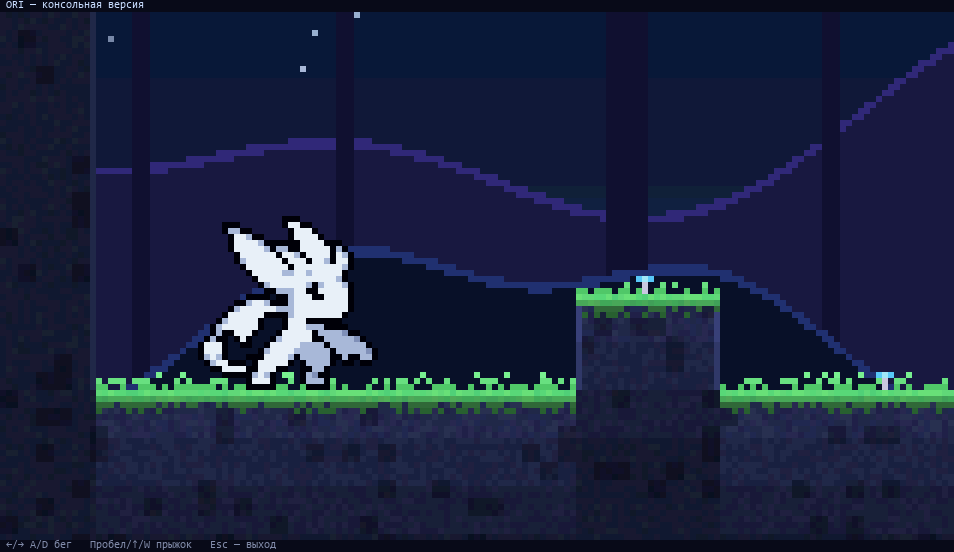
Рис. 18.1. Текстуры камня, трава, грибы и три слоя фона
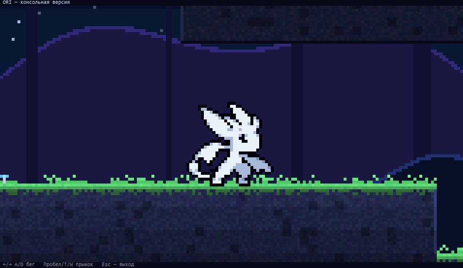
Рис. 18.2. Дальше по уровню: холмы фона сдвинулись меньше, чем камни
ФишкаБесконечный пейзаж
Параллакс отлично работает и сам по себе. Эта программа рисует бесконечную ночную равнину: три слоя холмов из синусоид и звёзды, прилепленные к самому дальнему слою. Стрелками можно ускорять полёт.
Листинг 18.15. Параллакс из трёх слоёв 18-parallax.cpp
// Фишка главы 18: бесконечный пейзаж. Холмы — это синусоиды, а дальние слои// сдвигаются медленнее ближних, и картинка обретает глубину.// Сборка из папки игры (файл лежит в папке fishki):// g++ -O2 -std=c++17 -Wall -Wextra -I. fishki\18-parallax.cpp screen.cpp console.cpp -o parallax.exe#define WIN32_LEAN_AND_MEAN#define NOMINMAX#include <windows.h>#include <cmath>#include "console.h"#include "mathx.h"#include "screen.h"// Высота холма в точке x: две синусоиды разной длины — и холмы не повторяются слишком явноstaticfloat hill(float x, float size) {return sinf(x * 0.05f / size) * 6 * size + sinf(x * 0.013f / size + 1.7f) * 9 * size;}int main() { consoleInit(); screenFitToConsole();float scroll = 0;while (!keyDown(VK_ESCAPE)) {float speed = keyDown(VK_RIGHT) ? 3.0f : (keyDown(VK_LEFT) ? -3.0f : 0.6f); scroll += speed;int w = screenWidth(), h = screenHeight();for (int x = 0; x < w; x++) {// Небо: от тёмно-синего к фиолетовому у горизонтаfor (int y = 0; y < h; y++) putPixel(x, y, mixColor(rgb(8, 10, 32), rgb(70, 40, 90), (float)y / h));// Звёзды прилеплены к самому дальнему слою (скорость 0.05)unsignedint star = hash2((int)(x + scroll * 0.05f), 0);if (star % 37 == 0) putPixel(x, (int)(star / 37 % (h / 2)), rgb(220, 220, 255));// Три слоя холмов: дальний, средний, ближний. Каждый — со своей скоростью.constfloat SPEED[3] = { 0.2f, 0.5f, 1.0f };constfloat SIZE[3] = { 0.8f, 1.0f, 1.3f };constColor COLOR[3] = { rgb(50, 40, 90), rgb(34, 50, 80), rgb(20, 60, 50) };for (int layer = 0; layer < 3; layer++) {float base = h * (0.55f + layer * 0.15f);int top = (int)(base + hill(x + scroll * SPEED[layer], SIZE[layer]));for (int y = clampi(top, 0, h); y < h; y++) putPixel(x, y, COLOR[layer]); } } textAdd(LINE_TOP, " Параллакс: дальнее движется медленнее", rgb(220, 230, 255)); textAdd(LINE_BOTTOM, " ←/→ — быстрее Esc — выход", rgb(130, 140, 170)); screenPresent(); Sleep(25); } consoleRestore();return0;}
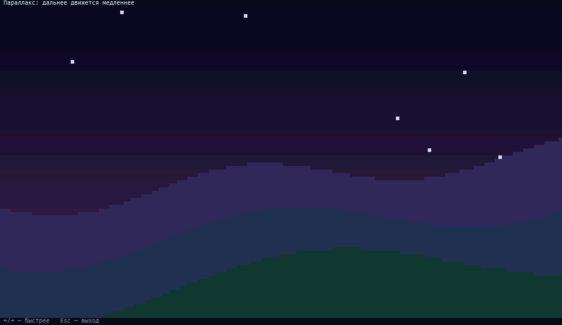
Рис. 18.3. Чем дальше слой, тем он темнее и медленнее
Создайте в папке игры папку fishki (если её ещё нет) и сохраните программу туда как fishki\18-parallax.cpp. Соберите её из папки игры вместе с нужными модулями:
Обратите внимание, что звёзды здесь — тоже хеш: hash2(x + scroll * 0.05f, 0) % 37 == 0. Звезда «привязана» к координате в мире, поэтому она не мигает, а спокойно уплывает влево.
Весь код шага 18Сверьтесь с готовой программой
Все 30 файлов игры после этой главы — целиком. Откройте файл, чтобы сравнить со своим, а кнопка «Копировать» поможет, если нужно догнать: вставьте код в файл с тем же именем в папке игры.
// ============================================================================// camera.cpp — камера следует за Ори и не выходит за края уровня// ============================================================================#include <cmath>#include "camera.h"#include "config.h"#include "game.h"#include "mathx.h"// Не даём камере заглянуть за края уровняstaticvoid clampCamera(Game& g) {Camera& cam = g.camera;float maxX = (float)(g.world.width * TILE - screenWidth());float maxY = (float)(MAP_H * TILE - screenHeight()); cam.x = clampf(cam.x, 0, fmaxf(maxX, 0));// если окно выше уровня, прижимаем уровень к низу экрана cam.y = maxY < 0 ? maxY : clampf(cam.y, 0, maxY);}// Целые координаты камеры для рисованияstaticvoid updateView(Camera& cam) { cam.viewX = (int)floorf(cam.x); cam.viewY = (int)floorf(cam.y);}void centerCamera(Game& g) {constBody& b = g.player.body; g.camera.x = b.x + b.w / 2.0f - screenWidth() / 2.0f; g.camera.y = b.y + b.h / 2.0f - screenHeight() / 2.0f; clampCamera(g); updateView(g.camera);}void updateCamera(Game& g, float dt) {Camera& cam = g.camera;constBody& b = g.player.body;// Цель: Ори в центре экрана, чуть сдвинутый назад — видно, что впередиfloat targetX = b.x + b.w / 2.0f - screenWidth() / 2.0f + g.player.facing * 18;float targetY = b.y + b.h / 2.0f - screenHeight() * 0.55f;// Каждый кадр проходим часть пути до цели — камера движется плавно cam.x = lerpf(cam.x, targetX, clampf(dt * 5, 0, 1)); cam.y = lerpf(cam.y, targetY, clampf(dt * 5, 0, 1)); clampCamera(g); updateView(cam);}
camera.h22 строкиcamera.h
// ============================================================================// camera.h — какая часть мира видна на экране, рисование в координатах мира// ============================================================================#pragma once#include "color.h"#include "screen.h"structGame; // описана в game.h — здесь достаточно знать, что такая структура естьstructCamera {float x, y; // левый верхний угол экрана в миреint viewX, viewY; // то же целыми числами (с тряской) — по ним рисуем};// Поставить пиксель по координатам мира: экран = мир − камераinlinevoid putWorldPixel(constCamera& cam, int wx, int wy, Color c) { putPixel(wx - cam.viewX, wy - cam.viewY, c);}void centerCamera(Game& g); // сразу поставить Ори в центр экранаvoid updateCamera(Game& g, float dt); // камера плавно догоняет Ори
color.h34 строкиcolor.h
// ============================================================================// color.h — цвет пикселя. Цвет хранится в одном числе 0xRRGGBB:// по два шестнадцатеричных разряда на красный, зелёный и синий.// ============================================================================#pragma oncetypedefunsignedintColor;// Ограничить канал диапазоном 0..255inlineint clampChannel(int value) {return value < 0 ? 0 : (value > 255 ? 255 : value);}// Собрать цвет из красного, зелёного и синего (каждый 0..255)inlineColor rgb(int r, int g, int b) {return (Color)(clampChannel(r) << 16 | clampChannel(g) << 8 | clampChannel(b));}// Достать каналы обратноinlineint colorR(Color c) { return (c >> 16) & 255; }inlineint colorG(Color c) { return (c >> 8) & 255; }inlineint colorB(Color c) { return c & 255; }// Смешать два цвета: t = 0 — первый цвет, t = 1 — второйinlineColor mixColor(Color a, Color b, float t) {return rgb((int)(colorR(a) + (colorR(b) - colorR(a)) * t), (int)(colorG(a) + (colorG(b) - colorG(a)) * t), (int)(colorB(a) + (colorB(b) - colorB(a)) * t));}// Изменить яркость: k = 0.5 — вдвое темнее, k = 2 — вдвое ярчеinlineColor scaleColor(Color c, float k) {return rgb((int)(colorR(c) * k), (int)(colorG(c) * k), (int)(colorB(c) * k));}
config.h29 строкconfig.h
// ============================================================================// config.h — настройки игры. Все важные числа собраны здесь,// чтобы их было легко найти и поменять.// ============================================================================#pragma once// Картинкаconstint MAX_SCREEN_W = 320; // наибольшая ширина картинки в пикселяхconstint MAX_SCREEN_H = 200; // наибольшая высота картинки в пикселях// Мирconstint TILE = 8; // сторона тайла в пикселяхconstint MAP_H = 22; // высота уровня в тайлахconstint MAX_MAP_W = 160; // ширина самого широкого уровня в тайлах// Движениеconstfloat RUN_SPEED = 95.0f; // скорость бега, пикселей в секундуconstfloat RUN_ACCEL_GROUND = 900.0f; // разгон и торможение на землеconstfloat RUN_ACCEL_AIR = 600.0f; // в воздухе разгоняться труднееconstfloat GRAVITY = 900.0f; // насколько быстро растёт скорость паденияconstfloat JUMP_SPEED = 320.0f; // скорость в начале прыжкаconstfloat MAX_FALL_SPEED = 360.0f; // быстрее падать нельзяconstfloat DOUBLE_JUMP_SPEED = 280.0f; // второй прыжок в воздухе чуть слабееconstfloat COYOTE_TIME = 0.10f; // сколько секунд можно прыгнуть после схода с краяconstfloat JUMP_BUFFER_TIME = 0.12f; // сколько секунд помнится раннее нажатие прыжка// Ориconstint PLAYER_W = 16; // ширина хитбоксаconstint PLAYER_H = 24; // высота хитбокса
console.cpp79 строкconsole.cpp
// ============================================================================// console.cpp — всё, что связано с Windows-консолью, собрано в одном файле// ============================================================================#define WIN32_LEAN_AND_MEAN#define NOMINMAX#include <windows.h>#include <cstring>#include "console.h"// Как была настроена консоль до запуска игрыstaticDWORD originalOutMode = 0;staticDWORD originalInMode = 0;staticUINT originalCodePage = 0;// Ctrl+C или закрытие: consoleRestore сначала останавливает writer.// Обработчик делает ограниченную по времени попытку уборки, затем Windows завершает процесс.staticBOOL WINAPI onConsoleEvent(DWORD) { consoleRestore();return FALSE;}void consoleInit() {HANDLE out = GetStdHandle(STD_OUTPUT_HANDLE);HANDLE in = GetStdHandle(STD_INPUT_HANDLE); GetConsoleMode(out, &originalOutMode); GetConsoleMode(in, &originalInMode); originalCodePage = GetConsoleOutputCP(); SetConsoleMode(out, originalOutMode | ENABLE_PROCESSED_OUTPUT | ENABLE_VIRTUAL_TERMINAL_PROCESSING); SetConsoleMode(in, ENABLE_EXTENDED_FLAGS); // выключить выделение мышью: оно ставит вывод на паузу SetConsoleOutputCP(CP_UTF8); SetConsoleCtrlHandler(onConsoleEvent, TRUE); SetConsoleTitleA("Ori");// Отдельный экран, спрятать курсор, очистить экранconstchar* start = "\x1b[?1049h\x1b[?25l\x1b[2J"; consoleWrite(start, (int)strlen(start));}void consoleRestore() {// Обычные цвета, показать курсор, вернуться на основной экранconstchar* finish = "\x1b[0m\x1b[?25h\x1b[?1049l"; consoleWrite(finish, (int)strlen(finish)); consoleFlushInput(); SetConsoleMode(GetStdHandle(STD_OUTPUT_HANDLE), originalOutMode); SetConsoleMode(GetStdHandle(STD_INPUT_HANDLE), originalInMode); SetConsoleOutputCP(originalCodePage);}bool consoleSize(int& cols, int& rows) { CONSOLE_SCREEN_BUFFER_INFO info;if (!GetConsoleScreenBufferInfo(GetStdHandle(STD_OUTPUT_HANDLE), &info)) {returnfalse; } cols = info.srWindow.Right - info.srWindow.Left + 1; rows = info.srWindow.Bottom - info.srWindow.Top + 1;returntrue;}void consoleFlushInput() { FlushConsoleInputBuffer(GetStdHandle(STD_INPUT_HANDLE));}bool keyDown(int virtualKey) {return (GetAsyncKeyState(virtualKey) & 0x8000) != 0;}bool consoleWrite(constchar* data, int length) {if (length < 0) returnfalse;int sent = 0;while (sent < length) {DWORD written = 0;DWORD remaining = (DWORD)(length - sent);if (!WriteFile(GetStdHandle(STD_OUTPUT_HANDLE), data + sent, remaining, &written, NULL) || written == 0 || written > remaining) returnfalse; sent += (int)written; }returntrue;}
console.h13 строкconsole.h
// ============================================================================// console.h — окно консоли Windows: настройка, размер, клавиши, вывод// ============================================================================#pragma oncevoid consoleInit(); // включить цвета и UTF-8, перейти на отдельный экранvoid consoleRestore(); // вернуть консоль в исходное состояниеbool consoleSize(int& cols, int& rows); // видимый размер окна в символахvoid consoleFlushInput(); // выбросить накопившиеся нажатия клавишbool keyDown(int virtualKey); // зажата ли клавиша прямо сейчас// Полностью записать данные; false — ошибка или неполная записьbool consoleWrite(constchar* data, int length);
// ============================================================================// game.cpp — загрузка уровней и правила игры: что обновлять в каждом кадре// ============================================================================#include <algorithm>#include <cmath>#include <cstring>#include "game.h"#include "input.h"#include "levels.h"// Символ карты — объект? Тогда создаём объект и возвращаем пробел.// Иначе это тайл (камень, бревно, шипы) — он остаётся в карте как есть.staticchar placeObject(Game& g, char symbol, float wx, float wy) {World& w = g.world;switch (symbol) {case'P': w.spawnX = wx; w.spawnY = wy + TILE - PLAYER_H; // ногами на дно клеткиreturn' ';default:return symbol; }}void loadLevel(Game& g, int index) {const LevelInfo& level = levelInfo(index);World& w = g.world; g.levelIndex = index;// Ширина уровня — длина самой длинной строки карты w.width = 0;for (int ty = 0; ty < MAP_H; ty++) { w.width = std::max(w.width, (int)strlen(level.rows[ty])); } w.width = std::min(w.width, MAX_MAP_W);for (int ty = 0; ty < MAP_H; ty++) {int length = (int)strlen(level.rows[ty]);for (int tx = 0; tx < w.width; tx++) {char symbol = tx < length ? level.rows[ty][tx] : ' '; w.tiles[ty][tx] = placeObject(g, symbol, (float)(tx * TILE), (float)(ty * TILE)); } w.tiles[ty][w.width] = 0; // конец строки } placePlayer(g.player, w.spawnX, w.spawnY); centerCamera(g);}void startNewGame(Game& g) { loadLevel(g, 0);}void updateGame(Game& g, constInput& in, float dt) { g.time += dt; updatePlayer(g, in, dt); updateCamera(g, dt);}
game.h24 строкиgame.h
// ============================================================================// game.h — вся игра в одной структуре Game. Функции получают её по ссылке,// поэтому глобальные переменные не нужны.// ============================================================================#pragma once#include "config.h"#include "camera.h"#include "player.h"#include "world.h"structInput;structGame {float time; // сколько секунд идёт игра — для анимацийint levelIndex; // номер текущего уровня (с нуля)World world;Camera camera;Player player;};void startNewGame(Game& g);void loadLevel(Game& g, int index);void updateGame(Game& g, constInput& in, float dt);
hud.cpp26 строкhud.cpp
// ============================================================================// hud.cpp — строки текста над картинкой и под ней// ============================================================================#include <cstdio>#include "game.h"#include "hud.h"#include "screen.h"constColor HUD_TEXT = rgb(200, 220, 255);constColor HINT_TEXT = rgb(130, 140, 170);staticvoid drawTopLine() { textAdd(LINE_TOP, " ORI — консольная версия", HUD_TEXT);}// Нижняя строка — подсказка по управлению (короче, если окно узкое)staticvoid drawBottomLine() {int w = screenWidth();if (w >= 60) textAdd(LINE_BOTTOM, " ←/→ A/D бег Пробел/↑/W прыжок Esc — выход", HINT_TEXT);}void drawHud() { drawTopLine(); drawBottomLine();}
hud.h6 строкhud.h
// ============================================================================// hud.h — строки текста над и под картинкой и надписи поверх неё// ============================================================================#pragma oncevoid drawHud();
// ============================================================================// input.h — какие кнопки управления нажаты// ============================================================================#pragma once// Одна кнопка управленияstructKey {bool held; // зажата сейчасbool pressed; // нажата именно в этом кадре (в прошлом кадре не была зажата)};structInput {Key left;Key right;Key jump;Key quit;};void readInput(Input& in);
levels.cpp49 строкlevels.cpp
// ============================================================================// levels.cpp — карты уровней. Каждый символ — тайл 8 × 8 пикселей:// # — камень, = — бревно, ^ — шипы, P — старт Ори// ============================================================================#include "config.h"#include "levels.h"// Лес Нибельstaticconstchar* LEVEL1[MAP_H] = {"## ##################### ##","## ##################### ##","## ##################### ##","## ##################### B ##","## ##################### ##","## ##################### o o + ##","## ##################### ##","## ##################### o C S S ##","## B ##################### ################# ##","## + === ################# o ##","## o o B o ################# B ##","## o === ################# S ##","## o o o o o o o B ===########################### ##","## o === ########################### ##","## o o o o === ########### C S S ########################### ##","## ########### #################### === ########################### ##","## P ### ########### #################### o o o ########################### ##","## ### S C ########### #################### ^^ ########################### T ##","############################### ################### ################################### ##############################################","############################### ################### ################################### ##############################################","###############################^^^^^^###################^^^^^^^^^^^^^^^###################################^^^^^^^^##############################################","################################################################################################################################################################",};// Все уровни по порядкуstaticconst LevelInfo LEVELS[] = { { "Лес Нибель", LEVEL1, rgb(6, 8, 28), rgb(24, 46, 84), // небо rgb(30, 28, 72), rgb(13, 18, 42), // холмы rgb(38, 44, 80), rgb(96, 220, 120), // камень и мохtrue },};int levelCount() {returnsizeof(LEVELS) / sizeof(LEVELS[0]);}const LevelInfo& levelInfo(int index) {return LEVELS[index];}
levels.h18 строкlevels.h
// ============================================================================// levels.h — описания уровней: карта, название и цвета// ============================================================================#pragma once#include "color.h"struct LevelInfo {constchar* name; // название уровняconstchar* const* rows; // карта: MAP_H строк из символовColor skyTop, skyBottom; // небо: цвет вверху и у горизонтаColor hillFar, hillNear; // силуэты дальних и ближних холмовColor rock, moss; // камень и мох на нёмbool stars; // есть ли звёзды на небе};int levelCount(); // сколько всего уровнейconst LevelInfo& levelInfo(int index); // описание уровня по номеру (с нуля)
main.cpp47 строкmain.cpp
// ============================================================================// ORI — консольная игра-платформер, вид сбоку.// Картинка рисуется пикселями из символов '▀' и ANSI-цветов.// Без классов: только данные (структуры) и функции.//// Сборка: build.bat; отладочная сборка: debug.bat.// В скриптах перечислены только исходники игры этого шага.// ============================================================================#include <chrono>#include <thread>#include "console.h"#include "game.h"#include "input.h"#include "render.h"#include "screen.h"int main() { consoleInit(); screenFitToConsole();staticGame game; // вся игра; static — чтобы большая структура не лежала на стеке startNewGame(game);Input input = {};constauto FRAME_TIME = std::chrono::milliseconds(25); // 25 мс — около 40 кадров в секундуauto previous = std::chrono::steady_clock::now();while (true) {auto frameStart = std::chrono::steady_clock::now();float dt = std::chrono::duration<float>(frameStart - previous).count(); previous = frameStart;if (dt > 0.05f) dt = 0.05f; // после долгой паузы не прыгаем далеко вперёд screenFitToConsole(); consoleFlushInput(); readInput(input);if (input.quit.pressed) break; updateGame(game, input, dt); renderGame(game); screenPresent();auto elapsed = std::chrono::steady_clock::now() - frameStart;if (elapsed < FRAME_TIME) std::this_thread::sleep_for(FRAME_TIME - elapsed); } consoleRestore();return0;}
mathx.h19 строкmathx.h
// ============================================================================// mathx.h — маленькие математические помощники// ============================================================================#pragma once// Зажать число между lo и hiinlineint clampi(int v, int lo, int hi) { return v < lo ? lo : (v > hi ? hi : v); }inlinefloat clampf(float v, float lo, float hi) { return v < lo ? lo : (v > hi ? hi : v); }// Плавный переход: t = 0 — a, t = 1 — b, t = 0.5 — ровно посерединеinlinefloat lerpf(float a, float b, float t) { return a + (b - a) * t; }// «Случайное», но всегда одинаковое число для пары координат.// Нужно для текстур: камень не должен «кипеть» от кадра к кадру.inlineunsignedint hash2(int x, int y) {unsignedint h = (unsignedint)x * 374761393u + (unsignedint)y * 668265263u; h = (h ^ (h >> 13)) * 1274126177u;return h ^ (h >> 16);}
physics.cpp72 строкиphysics.cpp
// ============================================================================// physics.cpp — движение и столкновения с тайлами// ============================================================================#include <cmath>#include "config.h"#include "physics.h"Body makeBody(float x, float y, int w, int h) {Body b; b.x = x; b.y = y; b.vx = 0; b.vy = 0; b.w = w; b.h = h; b.onGround = false; b.hitWall = false;return b;}bool rectSolid(constWorld& world, float x, float y, float w, float h) {// Номера тайлов, которые задевает прямоугольник. 0.01 — чтобы прямоугольник,// стоящий ровно на границе тайла, не считался залезшим в соседний.int tx0 = (int)floorf(x / TILE), tx1 = (int)floorf((x + w - 0.01f) / TILE);int ty0 = (int)floorf(y / TILE), ty1 = (int)floorf((y + h - 0.01f) / TILE);for (int ty = ty0; ty <= ty1; ty++) {for (int tx = tx0; tx <= tx1; tx++) {if (isSolidTile(tileAt(world, tx, ty))) returntrue; } }returnfalse;}void moveBody(constWorld& world, Body& b, float dt) { b.onGround = false; b.hitWall = false;// Большой сдвиг делим на шаги не длиннее 3 пикселей,// иначе быстрое тело может проскочить сквозь тонкую стенуfloat maxMove = fmaxf(fabsf(b.vx), fabsf(b.vy)) * dt;int steps = (int)ceilf(maxMove / 3.0f);if (steps < 1) steps = 1;float stepDt = dt / steps;for (int s = 0; s < steps; s++) {// Сначала по горизонталиfloat nx = b.x + b.vx * stepDt;if (rectSolid(world, nx, b.y, (float)b.w, (float)b.h)) {if (b.vx > 0) { nx = floorf((nx + b.w) / TILE) * TILE - b.w; // прижаться к стене справа } else { nx = (floorf(nx / TILE) + 1) * TILE; // прижаться к стене слева } b.vx = 0; b.hitWall = true; } b.x = nx;// Потом по вертикалиfloat ny = b.y + b.vy * stepDt;if (rectSolid(world, b.x, ny, (float)b.w, (float)b.h)) {if (b.vy > 0) { ny = floorf((ny + b.h) / TILE) * TILE - b.h; // встали на пол b.onGround = true; } else { ny = (floorf(ny / TILE) + 1) * TILE; // ударились о потолок } b.vy = 0; } b.y = ny; }}
physics.h22 строкиphysics.h
// ============================================================================// physics.h — тела, которые двигаются и сталкиваются с тайлами// ============================================================================#pragma once#include "world.h"structBody {float x, y; // левый верхний угол хитбокса в миреfloat vx, vy; // скорость, пикселей в секунду (vy > 0 — вниз)int w, h; // размер хитбоксаbool onGround; // стоит на чём-то твёрдомbool hitWall; // в этом кадре упёрлось в стену};Body makeBody(float x, float y, int w, int h); // неподвижное тело в точке (x, y)// Есть ли твёрдые тайлы в прямоугольникеbool rectSolid(constWorld& world, float x, float y, float w, float h);// Сдвинуть тело на скорость × dt, не пуская его в твёрдые тайлыvoid moveBody(constWorld& world, Body& body, float dt);
// ============================================================================// player.h — Ори: управление, прыжки, жизни// ============================================================================#pragma once#include "physics.h"structGame; // описаны в других файлах — здесь достаточно объявленийstructInput;structPlayer {Body body; // положение, скорость и хитбоксint facing; // куда смотрит: -1 влево, 1 вправоfloat animTime; // время для анимации бегаbool canDoubleJump; // прыжок в воздухе ещё не потраченfloat coyoteTime; // сколько ещё можно прыгнуть после схода с краяfloat jumpBuffer; // сколько ещё помнить раннее нажатие прыжка};// Поставить Ори в точку (x, y) и сбросить его состояние (жизни, прыжки...)void placePlayer(Player& player, float x, float y);void updatePlayer(Game& g, constInput& in, float dt);void drawPlayer(constGame& g);
render.cpp174 строкиrender.cpp
// ============================================================================// render.cpp — фон, тайлы и порядок рисования кадра// ============================================================================#include <cmath>#include "game.h"#include "hud.h"#include "levels.h"#include "mathx.h"#include "render.h"#include "screen.h"// Фон из трёх слоёв, которые движутся медленнее камеры (параллакс):// дальние холмы, стволы деревьев и ближние холмыstaticvoid drawBackground(constGame& g) {const LevelInfo& level = levelInfo(g.levelIndex);constCamera& cam = g.camera;int w = screenWidth(), h = screenHeight();// Высоты холмов и стволы считаем один раз на столбец — синус считается долгоfloat farHill[MAX_SCREEN_W], nearHill[MAX_SCREEN_W];bool trunk[MAX_SCREEN_W];for (int x = 0; x < w; x++) {float farX = x + cam.viewX * 0.25f; // дальний слой движется в 4 раза медленнее farHill[x] = 70 + 16 * sinf(farX * 0.021f) + 8 * sinf(farX * 0.057f + 1.3f);float nearX = x + cam.viewX * 0.55f; nearHill[x] = 118 + 12 * sinf(nearX * 0.033f + 2.0f) + 5 * sinf(nearX * 0.09f);int cell = (int)floorf(nearX / 40); // одно дерево на каждые 40 пикселейfloat center = cell * 40.0f + (float)(hash2(cell, 7) % 24) + 8;float halfWidth = 1.0f + (float)(hash2(cell, 9) % 3); trunk[x] = fabsf(nearX - center) <= halfWidth; }Color farRim = scaleColor(level.hillFar, 1.7f); // контровой свет на гребне холмаColor nearRim = scaleColor(level.hillNear, 2.8f);Color trunkColor = scaleColor(level.hillNear, 1.25f);for (int y = 0; y < h; y++) {float worldY = (float)(y + cam.viewY);Color sky = mixColor(level.skyTop, level.skyBottom, clampf((worldY + 40) / (MAP_H * TILE + 60.0f), 0, 1));float farY = y + cam.viewY * 0.4f + 24;float nearY = y + cam.viewY * 0.7f + 10;for (int x = 0; x < w; x++) {Color c = sky;if (level.stars && worldY < 100) { // звезда — редкий пиксель, который мерцаетunsignedint star = hash2((int)(x + cam.viewX * 0.08f), (int)(y + cam.viewY * 0.08f));if (star % 500 == 0) {float twinkle = 0.5f + 0.5f * sinf(g.time * 2 + (star >> 10) % 100); c = mixColor(c, rgb(200, 220, 255), 0.3f + 0.6f * twinkle); } }if (farY > farHill[x]) c = (farY - farHill[x] < 1.5f) ? farRim : mixColor(level.hillFar, sky, 0.25f);if (trunk[x] && nearY < nearHill[x] + 4) c = trunkColor;if (nearY > nearHill[x]) c = (nearY - nearHill[x] < 1.5f) ? nearRim : level.hillNear; putPixel(x, y, c); } }}// Цвет пикселя (lx, ly) внутри тайла (tx, ty). opaque = false — пиксель прозрачный.staticColor tileColor(constGame& g, char tile, int tx, int ty, int lx, int ly, bool& opaque) {constWorld& world = g.world;int wx = tx * TILE + lx, wy = ty * TILE + ly;unsignedint noise = hash2(wx, wy); opaque = true;if (tile == '#') {const LevelInfo& level = levelInfo(g.levelIndex);int n = (int)(noise % 13) - 6; // зернистость: каждый пиксель чуть светлее или темнееColor c = rgb(colorR(level.rock) + n, colorG(level.rock) + n, colorB(level.rock) + n);if (hash2(wx / 3, wy / 3) % 9 == 0) c = scaleColor(c, 0.75f); // трещины// Тайл смотрит на соседей: края, тени и мохbool emptyUp = !isSolidTile(tileAt(world, tx, ty - 1));bool emptyLeft = !isSolidTile(tileAt(world, tx - 1, ty));bool emptyRight = !isSolidTile(tileAt(world, tx + 1, ty));bool emptyDown = !isSolidTile(tileAt(world, tx, ty + 1));if ((emptyLeft && lx == 0) || (emptyRight && lx == 7)) c = scaleColor(level.rock, 1.55f);if (emptyDown && ly == 7) c = scaleColor(level.rock, 0.55f);if (emptyUp) {Color grass = rgb(colorR(level.moss) + n * 2, colorG(level.moss) + n, colorB(level.moss));if (ly == 0) c = grass;elseif (ly == 1) c = scaleColor(grass, 0.78f);elseif (ly == 2 && noise % 3 != 0) c = scaleColor(level.moss, 0.5f);elseif (ly == 3 && noise % 3 == 0) c = scaleColor(level.moss, 0.45f); } else {// Чем глубже в скале, тем темнееint depth = 1 + isSolidTile(tileAt(world, tx, ty - 2)) + isSolidTile(tileAt(world, tx, ty - 3)); c = scaleColor(c, 1.0f - depth * 0.12f); }return c; }if (tile == '=') {// Бревно: светлый верх, кора с наклонными штрихами, снизу свисает мохbool leftEnd = tileAt(world, tx - 1, ty) != '=';bool rightEnd = tileAt(world, tx + 1, ty) != '=';bool corner = (leftEnd && lx == 0) || (rightEnd && lx == 7);if (ly == 0 || ly == 3) {if (corner) { // скруглённые концы opaque = false;return0; }return ly == 0 ? rgb(160, 122, 80) : rgb(70, 48, 32); }if (ly <= 2) return (wx + ly * 3) % 5 == 0 ? rgb(84, 58, 40) : rgb(112, 80, 52);unsignedint moss = hash2(wx, 77);if (moss % 4 == 0 && ly < 4 + (int)(moss >> 8) % 4) return rgb(50, 150, 100); opaque = false;return0; }if (tile == '^') {// Шипы: у каждого столбца своя высота колючкиstaticconstint SPIKE_HEIGHT[8] = { 3, 6, 8, 5, 2, 7, 4, 6 };int spike = SPIKE_HEIGHT[(lx + tx * 3) % 8];int up = 7 - ly;if (up < spike) {if (up == spike - 1) return rgb(250, 100, 160); // ярко-розовый кончикreturn mixColor(rgb(70, 15, 45), rgb(180, 45, 110), up / 7.0f); }if (ly >= 6) return rgb(60, 15, 40); opaque = false;return0; } opaque = false;return0;}// Трава и светящийся гриб в пустой клетке над камнемstaticvoid drawGrass(constGame& g, int tx, int ty) {constCamera& cam = g.camera;for (int lx = 0; lx < TILE; lx++) {int wx = tx * TILE + lx;unsignedint h = hash2(wx, ty * 31);if (h % 3 != 0) putWorldPixel(cam, wx, ty * TILE + 7, rgb(80, 200, 110));if (h % 4 == 0) putWorldPixel(cam, wx, ty * TILE + 6, rgb(110, 225, 130));if (h % 13 == 0) putWorldPixel(cam, wx, ty * TILE + 5, rgb(120, 240, 150)); }if (hash2(tx, ty) % 9 != 0) return; // гриб растёт в каждой девятой клеткеint mx = tx * TILE + 3, my = ty * TILE; putWorldPixel(cam, mx, my + 7, rgb(200, 200, 225)); putWorldPixel(cam, mx, my + 6, rgb(200, 200, 225)); putWorldPixel(cam, mx - 1, my + 5, rgb(90, 200, 255)); putWorldPixel(cam, mx, my + 5, rgb(160, 235, 255)); putWorldPixel(cam, mx + 1, my + 5, rgb(90, 200, 255));}staticvoid drawTiles(constGame& g) {constCamera& cam = g.camera;// Рисуем только видимые тайлы и по одному запасному с каждой стороныint tx0 = cam.viewX / TILE - 1, tx1 = (cam.viewX + screenWidth()) / TILE + 1;int ty0 = (int)floorf(cam.viewY / (float)TILE) - 1, ty1 = (cam.viewY + screenHeight()) / TILE + 1;for (int ty = ty0; ty <= ty1; ty++) {if (ty < 0 || ty >= MAP_H) continue;for (int tx = tx0; tx <= tx1; tx++) {char tile = tileAt(g.world, tx, ty);if (tile == ' ') {if (tileAt(g.world, tx, ty + 1) == '#') drawGrass(g, tx, ty);continue; }for (int ly = 0; ly < TILE; ly++) {for (int lx = 0; lx < TILE; lx++) {bool opaque;Color c = tileColor(g, tile, tx, ty, lx, ly, opaque);if (opaque) putWorldPixel(cam, tx * TILE + lx, ty * TILE + ly, c); } } } }}void renderGame(constGame& g) { drawBackground(g); drawTiles(g); drawPlayer(g); drawHud();}
render.h8 строкrender.h
// ============================================================================// render.h — рисование кадра целиком// ============================================================================#pragma oncestructGame;void renderGame(constGame& g); // нарисовать мир, персонажей и текст в картинку экрана
screen.cpp178 строкscreen.cpp
// ============================================================================// screen.cpp — картинка в памяти и её вывод в консоль ANSI-командами.// Одна клетка консоли = два пикселя: символ '▀' рисует верхний пиксель// цветом текста, а нижний остаётся цветом фона.// ============================================================================#include <cstdio>#include <cstring>#include "config.h"#include "console.h"#include "mathx.h"#include "screen.h"// ---------------------------------------------------------------------------// Данные модуля (static — видны только в этом файле)// ---------------------------------------------------------------------------staticColor pixels[MAX_SCREEN_H][MAX_SCREEN_W];staticint width = 120; // размер картинки в пикселях, подстраивается под окноstaticint height = 70;staticint consoleCols = 0;staticint consoleRows = 0;// Текст кадра: строки над и под картинкойconstint MAX_SEGMENTS = 32;constint MAX_TEXT = 128;struct TextSegment {char text[MAX_TEXT];Color color;};static TextSegment lineSegments[2][MAX_SEGMENTS];staticint lineSegmentCount[2] = { 0, 0 };// Сюда собирается весь текст кадра вместе с ANSI-командамиstaticchar out[4 * 1024 * 1024];staticint outLength = 0;// ---------------------------------------------------------------------------// Размер и пиксели// ---------------------------------------------------------------------------bool screenFitToConsole() {int cols, rows;if (!consoleSize(cols, rows)) returnfalse;if (cols == consoleCols && rows == consoleRows) returnfalse; consoleCols = cols; consoleRows = rows;// На столбец уже окна: символ в последнем столбце переносит курсор на новую строку width = clampi(cols - 1, 40, MAX_SCREEN_W);// Две строки занимает текст, в каждой строке консоли два пикселя; высота чётная height = clampi((rows - 2) * 2, 40, MAX_SCREEN_H) & ~1;constchar* clear = "\x1b[0m\x1b[2J"; consoleWrite(clear, (int)strlen(clear));returntrue;}int screenWidth() { return width; }int screenHeight() { return height; }void putPixel(int x, int y, Color c) {if (x >= 0 && y >= 0 && x < width && y < height) { pixels[y][x] = c; }}// ---------------------------------------------------------------------------// Текст// ---------------------------------------------------------------------------void textAdd(TextLine line, constchar* text, Color color) {int& count = lineSegmentCount[line];if (count >= MAX_SEGMENTS) return; snprintf(lineSegments[line][count].text, MAX_TEXT, "%s", text); lineSegments[line][count].color = color; count++;}// ---------------------------------------------------------------------------// Сборка кадра из ANSI-команд// ---------------------------------------------------------------------------staticvoid emit(constchar* s) {int n = (int)strlen(s); memcpy(out + outLength, s, n); outLength += n;}// Число цифрами — вручную: так быстрее, чем через snprintfstaticvoid emitInt(int value) {char digits[12];int n = 0;if (value < 0) { out[outLength++] = '-'; value = -value; }do { digits[n++] = (char)('0' + value % 10); value /= 10; } while (value > 0);while (n > 0) { out[outLength++] = digits[--n]; }}// Команда цвета: фона (background = true) или текстаstaticvoid emitColor(bool background, Color c) { emit(background ? "\x1b[48;2;" : "\x1b[38;2;"); emitInt(colorR(c)); emit(";"); emitInt(colorG(c)); emit(";"); emitInt(colorB(c)); emit("m");}staticvoid emitLine(TextLine line) { emitColor(true, rgb(8, 10, 24));for (int i = 0; i < lineSegmentCount[line]; i++) { emitColor(false, lineSegments[line][i].color); emit(lineSegments[line][i].text); } emit("\x1b[K\x1b[0m"); // закрасить строку до конца и сбросить цвета}staticvoid emitPixels() {Color lastFg = 0xFFFFFFFF; // какой цвет текста сейчас включён (такого цвета не бывает — «никакой»)Color lastBg = 0xFFFFFFFF;for (int y = 0; y + 1 < height; y += 2) {for (int x = 0; x < width; x++) {// Огрубляем цвета: глаз разницы не видит, а одинаковых соседей большеColor top = pixels[y][x] & 0xF8F8F8;Color bottom = pixels[y + 1][x] & 0xF8F8F8;if (top == bottom) {// Оба пикселя одинаковые — хватит пробела с цветом фонаif (bottom != lastBg) { emitColor(true, bottom); lastBg = bottom; } out[outLength++] = ' '; } else {if (top != lastFg) { emitColor(false, top); lastFg = top; }if (bottom != lastBg) { emitColor(true, bottom); lastBg = bottom; } emit("\xE2\x96\x80"); // ▀ } } emit("\x1b[0m\r\n"); lastFg = 0xFFFFFFFF; lastBg = 0xFFFFFFFF; }}void screenPresent() {int availableCols, availableRows;if (consoleSize(availableCols, availableRows) && (availableCols < screenWidth() + 1 || availableRows < screenHeight() / 2 + 2)) {constchar* warning = "\x1b[0m\x1b[2J\x1b[HУвеличьте окно консоли";// In a very narrow window use a short ASCII hint to avoid wrapping.if (availableCols < 24) warning = "\x1b[0m\x1b[2J\x1b[HResize";if (availableCols < 7) warning = "\x1b[0m\x1b[2J"; consoleWrite(warning, (int)strlen(warning)); lineSegmentCount[0] = lineSegmentCount[1] = 0;return; } outLength = 0; emit("\x1b[H"); // курсор в левый верхний угол: рисуем поверх прошлого кадра emitLine(LINE_TOP); emit("\r\n"); emitPixels(); emitLine(LINE_BOTTOM); consoleWrite(out, outLength);// Текст задаётся заново в каждом кадре lineSegmentCount[LINE_TOP] = 0; lineSegmentCount[LINE_BOTTOM] = 0;}
screen.h19 строкscreen.h
// ============================================================================// screen.h — картинка из пикселей и строки текста над и под ней.// Сначала рисуем кадр в памяти, потом screenPresent() показывает его целиком.// ============================================================================#pragma once#include "color.h"bool screenFitToConsole(); // подогнать размер картинки под окно; true — размер изменилсяint screenWidth();int screenHeight();void putPixel(int x, int y, Color c);// Текст: строка над картинкой и строка под нейenum TextLine { LINE_TOP, LINE_BOTTOM };void textAdd(TextLine line, constchar* text, Color color);void screenPresent(); // показать кадр в консоли
sprites.cpp28 строкsprites.cpp
// ============================================================================// sprites.cpp — рисование спрайтов// ============================================================================#include "sprites.h"// Найти цвет символа в палитре. false — такого символа нет.staticbool findColor(const Sprite& sprite, char symbol, Color& color) {for (int k = 0; sprite.keys[k] != 0; k++) {if (sprite.keys[k] == symbol) { color = sprite.colors[k];returntrue; } }returnfalse;}void drawSprite(constCamera& cam, const Sprite& sprite, int wx, int wy, bool flip, bool flash) {for (int y = 0; y < sprite.h; y++) {for (int x = 0; x < sprite.w; x++) {// При отражении читаем строку справа налевоchar symbol = sprite.rows[y][flip ? (sprite.w - 1 - x) : x];Color color;if (symbol == '.' || !findColor(sprite, symbol, color)) continue;if (flash) color = mixColor(color, rgb(255, 255, 255), 0.75f); putWorldPixel(cam, wx + x, wy + y, color); } }}
sprites.h17 строкsprites.h
// ============================================================================// sprites.h — картинки персонажей, записанные символами// ============================================================================#pragma once#include "camera.h"#include "color.h"struct Sprite {int w, h; // размер в пикселяхconstchar* const* rows; // строки картинки; '.' — прозрачный пиксельconstchar* keys; // какие символы встречаются в картинкеconstColor* colors; // каким цветом рисовать каждый символ из keys};// Нарисовать спрайт в мире. flip — отразить по горизонтали, flash — высветлить (после удара)void drawSprite(constCamera& cam, const Sprite& sprite, int wx, int wy, bool flip, bool flash);
world.cpp14 строкworld.cpp
// ============================================================================// world.cpp — доступ к тайлам уровня// ============================================================================#include "world.h"char tileAt(constWorld& world, int tx, int ty) {if (tx < 0 || tx >= world.width) return'#';if (ty < 0 || ty >= MAP_H) return' ';return world.tiles[ty][tx];}bool isSolidTile(char tile) {return tile == '#' || tile == '=' || tile == '^';}
world.h18 строкworld.h
// ============================================================================// world.h — загруженный уровень: тайлы и особые места на нём// ============================================================================#pragma once#include "config.h"structWorld {char tiles[MAP_H][MAX_MAP_W + 1]; // символы тайлов; объекты заменены пробеламиint width; // ширина уровня в тайлахfloat spawnX, spawnY; // где Ори появляется в начале уровня};// Тайл в клетке (tx, ty). За левым и правым краем — стена, сверху и снизу — пустота.char tileAt(constWorld& world, int tx, int ty);// Твёрдый ли тайл: сквозь твёрдые нельзя пройтиbool isSolidTile(char tile);
Задания
Часть II. Ори в мире пикселей
Глава 19Свет, искры и Сейн
Лес Нибель — ночной лес, и главное в нём — свет. В этой главе Ори начнёт светиться, над грибами появится голубое сияние, в воздухе закружатся светлячки, из-под лап при прыжке полетит пыль, а рядом с героем появится его друг — огонёк Сейн. Для этого мы научимся складывать цвета, заведём пулы частиц и источников света и напишем свой генератор случайных чисел.
Разбираемся
Свет — это сложение цветов
До сих пор мы заменяли цвет пикселя: putPixel ставит новый цвет вместо старого. Свет работает иначе: он прибавляется к тому, что уже есть. Синий свет на тёмном камне делает камень голубоватым, но камень остаётся камнем.
Фрагмент кода — место вставки указано в тексте
void addPixel(int x, int y, Color c, float strength) {
Color old = pixels[y][x];
pixels[y][x] = rgb(colorR(old) + (int)(colorR(c) * strength),
colorG(old) + (int)(colorG(c) * strength),
colorB(old) + (int)(colorB(c) * strength));
}
Каждый канал складывается отдельно, а rgb сама обрезает результат до 255 (вспомните clampChannel из главы 12). strength от 0 до 1 — сила света: 0 — ничего не меняется, 1 — цвет прибавляется полностью. Если несколько огоньков светят в одну точку, их свет складывается, и в центре получается почти белое сияние.
Источник света — круг, который ярче в центре и гаснет к краю. Для каждого пикселя считаем расстояние до центра d в долях радиуса (0 в центре, 1 на краю) и прибавляем свет с силой (1 - d) * (1 - d). Квадрат делает спад мягким: у края свет тает плавно, без резкой границы.
Обратная операция — затемнить всю картинку, умножив каждый цвет на число меньше 1. Это функция dimScreen(k): dimScreen(0.5f) делает кадр вдвое темнее. Она пригодится в «фишке» этой главы, а в главе 23 — чтобы приглушить картинку под надписью.
Пул: много одинаковых объектов
Искр, пылинок и огоньков в кадре могут быть сотни, и они всё время появляются и исчезают. Создавать и удалять объекты по одному неудобно, поэтому игры используют пул — массив фиксированного размера, в котором у каждого элемента есть признак «занят или свободен».
Фрагмент кода — место вставки указано в тексте
struct Particle {
float x, y, vx, vy;
float life; // сколько ещё жить; life <= 0 — место свободно
...
};
static Particle particles[MAX_PARTICLES];
// Новая частица занимает первое свободное местоfor (int i = 0; i < MAX_PARTICLES; i++) {
if (particles[i].life <= 0) {
particles[i] = { x, y, vx, vy, life, ... };
return;
}
}
Если свободных мест нет, новая частица просто не появится — игрок этого не заметит. Зато игра никогда не потратит больше памяти, чем MAX_PARTICLES частиц, и не будет тормозить от слишком большого салюта.
Свет устроен ещё проще: источники собираются заново в каждом кадре. В начале кадра clearLights() обнуляет счётчик, потом все, кто светится, вызывают addLight(...), и в конце applyLights накладывает их на картинку разом.
Жизнь частицы
Одна частица: создать (позиция, скорость, время жизни) → обновить по dt → уменьшить время жизни → пометить свободной. Много частиц: тот же порядок для каждого занятого элемента массива. «Удалить» в пуле означает освободить слот, а не уменьшить размер массива. Проверьте, что после окончания эффекта слоты снова доступны и повторный эффект появляется; начните с одного источника, потом включайте украшения.
Свой генератор случайных чисел
Для искр нужна последовательность разных направлений: каждая искра должна лететь по-своему. Будем использовать псевдослучайные числа — они вычисляются по формуле и при одинаковом начальном «зерне» повторяются. В главе 8 мы пользовались rand(), но у неё маленький диапазон и разное поведение на разных компьютерах. Напишем свою, совсем простую:
Фрагмент кода — место вставки указано в тексте
staticunsignedint randomSeed = 12345u;
float randomRange(float a, float b) {
randomSeed = randomSeed * 1664525u + 1013904223u;
return a + (b - a) * ((randomSeed >> 8) / 16777216.0f);
}
Каждый вызов умножает «зерно» на большое число и прибавляет другое — так получается следующее число последовательности, которое выглядит случайным. Это называется линейный конгруэнтный генератор: так устроены генераторы во многих играх. Сдвиг >> 8 оставляет 24 бита, а деление на 16777216 (это 2²⁴) превращает их в дробь от 0 до 1. Остаётся растянуть её на отрезок от a до b.
Чем это отличается от хеша из главы 18? Хеш для одних и тех же координат всегда даёт одно и то же, а randomRange при каждом вызове выдаёт новое число. Первое — для текстур, второе — для искр.
Необязательно: готовый генератор из <random>
В C++ есть и готовые генераторы — в наборе <random>. Генератор и «распределение» (в каком диапазоне нужны числа) там — две отдельные вещи:
В записи тип имя(начальные_значения) создаётся переменная указанного типа с начальными настройками: generator(12345) ниже — создание генератора, а не его отдельный вызов. В типе uniform_real_distribution<float> угловые скобки выбирают дробный тип результата. Затем angle(generator) запрашивает одно новое число. Это необязательный пример готового библиотечного интерфейса.
Фрагмент кода — место вставки указано в тексте
#include <random>
std::mt19937 generator(12345); // генератор с «зерном» 12345
std::uniform_real_distribution<float> angle(0.0f, 6.2832f); // дроби от 0 до 2πfloat a = angle(generator); // новое случайное число
std::mt19937 («вихрь Мерсенна») выдаёт последовательность с лучшими статистическими свойствами, чем наш простой генератор. Одинаковое зерно задаёт одинаковую последовательность самого mt19937, но преобразование uniform_real_distribution может различаться между реализациями стандартной библиотеки. Он подходит для многих учебных и научных симуляций. Для паролей, защиты данных и денежных розыгрышей этот предсказуемый генератор применять нельзя; для них нужны другие требования к случайности. Нам для искр хватает генератора в три строки, и в нём видно, как всё устроено, поэтому игра остаётся со своим randomRange.
Направление по углу
Чтобы искры разлетелись кольцом, каждой нужна скорость в своём направлении. Направление под углом angle — это пара чисел (cos(angle), sin(angle)): точка на окружности радиуса 1. Полный круг — это 2π ≈ 6,2832 радиана.
Фрагмент кода — место вставки указано в тексте
for (int i = 0; i < 16; i++) {
float angle = i / 16.0f * 6.2832f; // 16 направлений по кругу
spawnParticle(x, y, cosf(angle) * 60, sinf(angle) * 20, ...);
}
Умножение cos на 60, а sin только на 20 сплющивает кольцо в овал — будто оно лежит на земле.
В effects.cpp снова пригодятся std::max и std::min из главы 14 — не забудьте #include <algorithm>.
Игра · шаг 19Свет и частицы
Если добавились модули, замените и бат-файлы: список исходников в них относится к текущей главе.
Листинг 19.1. Сборка игры этого шага build.batКуда: замените всё содержимое файла этим текстом
Листинг 19.3. Прибавить свет к пикселю screen.cppКуда: после: функция putPixel; перед: заголовок раздела «Текст»
void addPixel(int x, int y, Color c, float strength) {if (x < 0 || y < 0 || x >= width || y >= height) return;Color old = pixels[y][x]; pixels[y][x] = rgb(colorR(old) + (int)(colorR(c) * strength), colorG(old) + (int)(colorG(c) * strength), colorB(old) + (int)(colorB(c) * strength));}
Листинг 19.4. Затемнить весь кадр screen.cppКуда: после: функция addPixel; перед: заголовок раздела «Текст»
void dimScreen(float k) {for (int y = 0; y < height; y++) {for (int x = 0; x < width; x++) { pixels[y][x] = scaleColor(pixels[y][x], k); } }}
Листинг 19.5. Объявления в screen.h screen.h
int screenWidth();int screenHeight();void putPixel(int x, int y, Color c);void addPixel(int x, int y, Color c, float strength); // прибавить цвет — так рисуется светvoid dimScreen(float k); // затемнить всю картинку
Генератор случайных чисел
Листинг 19.6. Объявление в mathx.h mathx.hКуда: в конец файла, после: функция hash2
// Случайное число от a до b — при каждом вызове новоеfloat randomRange(float a, float b);
Листинг 19.7. Генератор в отдельном файле mathx.cppКуда: новый файл — создайте его
// ============================================================================// mathx.cpp — генератор случайных чисел// ============================================================================#include "mathx.h"// Состояние генератора: из него получается следующее «случайное» числоstaticunsignedint randomSeed = 12345u;float randomRange(float a, float b) { randomSeed = randomSeed * 1664525u + 1013904223u;return a + (b - a) * ((randomSeed >> 8) / 16777216.0f);}
Почему randomRange не inline, как остальные функции mathx.h? У генератора есть состояние — переменная randomSeed, которая меняется при каждом вызове. Она должна существовать в программе в одном экземпляре, поэтому живёт в mathx.cpp со словом static.
Модуль эффектов
Листинг 19.8. Размеры пулов config.hКуда: в конец файла, после: «const int PLAYER_W = 16; // ширина хитбокса»
// Сколько объектов может существовать одновременноconstint MAX_PARTICLES = 800;constint MAX_LIGHTS = 160;
Листинг 19.9. Что умеет модуль эффектов effects.hКуда: новый файл — создайте его
// ============================================================================// effects.h — частицы (искры, пыль) и свет// ============================================================================#pragma once#include "camera.h"#include "color.h"// Частицы: живут несколько долей секунды и гаснутvoid clearParticles();void spawnParticle(float x, float y, float vx, float vy, float life, Color color, bool gravity);void updateParticles(float dt);void drawParticles(constCamera& cam);// Свет: источники собираются заново в каждом кадре, потом накладываются на картинкуvoid clearLights();void addLight(float x, float y, float radius, Color color, float power);void applyLights(constCamera& cam);
Листинг 19.10. Пулы частиц и света effects.cppКуда: новый файл — создайте его
// ============================================================================// effects.cpp — пулы частиц и источников света// ============================================================================#include <algorithm>#include <cmath>#include <cstring>#include "config.h"#include "effects.h"#include "mathx.h"struct Particle {float x, y, vx, vy;float life, maxLife; // сколько осталось жить и сколько жила бы всегоColor color;bool gravity; // падает ли вниз};struct Light {float x, y, radius;Color color;float power;};// Пулы: частица с life <= 0 — свободное местоstatic Particle particles[MAX_PARTICLES];static Light lights[MAX_LIGHTS];staticint lightCount = 0;void clearParticles() { memset(particles, 0, sizeof(particles));}void spawnParticle(float x, float y, float vx, float vy, float life, Color color, bool gravity) {for (int i = 0; i < MAX_PARTICLES; i++) {if (particles[i].life <= 0) { particles[i] = { x, y, vx, vy, life, life, color, gravity };return; } }}void updateParticles(float dt) {for (int i = 0; i < MAX_PARTICLES; i++) { Particle& p = particles[i];if (p.life <= 0) continue; p.life -= dt;if (p.gravity) p.vy += GRAVITY * 0.5f * dt; p.vx *= 1.0f - 1.5f * dt; // сопротивление воздуха p.vy *= 1.0f - 1.5f * dt; p.x += p.vx * dt; p.y += p.vy * dt; }}void drawParticles(constCamera& cam) {for (int i = 0; i < MAX_PARTICLES; i++) {const Particle& p = particles[i];if (p.life <= 0) continue;float strength = clampf(p.life / p.maxLife, 0, 1); // гаснет к концу жизни addPixel((int)roundf(p.x) - cam.viewX, (int)roundf(p.y) - cam.viewY, p.color, strength); }}void clearLights() { lightCount = 0;}void addLight(float x, float y, float radius, Color color, float power) {if (lightCount < MAX_LIGHTS) { lights[lightCount] = { x, y, radius, color, power }; lightCount++; }}void applyLights(constCamera& cam) {for (int i = 0; i < lightCount; i++) {const Light& light = lights[i];int cx = (int)light.x - cam.viewX;int cy = (int)light.y - cam.viewY;int r = (int)light.radius;// Проходим только по квадрату вокруг источника и только по видимой частиint x0 = std::max(0, cx - r), x1 = std::min(screenWidth() - 1, cx + r);int y0 = std::max(0, cy - r), y1 = std::min(screenHeight() - 1, cy + r);for (int y = y0; y <= y1; y++) {for (int x = x0; x <= x1; x++) {float dx = (float)(x - cx), dy = (float)(y - cy);float d = sqrtf(dx * dx + dy * dy) / light.radius; // 0 в центре, 1 на краюif (d >= 1) continue; addPixel(x, y, light.color, (1 - d) * (1 - d) * light.power); } } }}
spawnParticle занимает свободное место в пуле. Флаг gravity решает, падает ли частица (пыль падает, искры света — нет).
updateParticles двигает частицы, уменьшает им жизнь и тормозит их «сопротивлением воздуха»: скорость каждый кадр немного уменьшается.
drawParticles рисует частицу светом через addPixel и гасит её к концу жизни: сила = оставшаяся жизнь / полная жизнь.
applyLights проходит не по всему экрану, а только по квадрату вокруг каждого источника и только по его видимой части. Это важно для скорости: источников больше сотни.
Круг в координатах мира
Листинг 19.11. Закрашенный круг camera.cppКуда: после: функция updateView; перед: функция centerCamera
void drawDisc(constCamera& cam, int cx, int cy, int radius, Color c) {for (int y = -radius; y <= radius; y++) {for (int x = -radius; x <= radius; x++) {if (x * x + y * y <= radius * radius + radius) putWorldPixel(cam, cx + x, cy + y, c); } }}
Листинг 19.12. Объявление camera.hКуда: после: функция putWorldPixel; перед: функция centerCamera
// Закрашенный круг в координатах мираvoid drawDisc(constCamera& cam, int cx, int cy, int radius, Color c);
Точка (x, y) лежит внутри круга, если x² + y² <= r². Небольшая добавка + radius делает маленькие круги круглее: без неё круг радиуса 1 был бы крестиком.
Сейн и пыль
Листинг 19.13. Где летит Сейн player.h
structPlayer {Body body; // положение, скорость и хитбоксint facing; // куда смотрит: -1 влево, 1 вправоfloat animTime; // время для анимации бегаbool canDoubleJump; // прыжок в воздухе ещё не потраченfloat coyoteTime; // сколько ещё можно прыгнуть после схода с краяfloat jumpBuffer; // сколько ещё помнить раннее нажатие прыжка};float seinX, seinY; // Сейн — огонёк-спутник};
Листинг 19.20. Сейн — маленький светящийся круг player.cppКуда: в конец файла, после: функция drawPlayer
void drawSein(constGame& g) {int x = (int)roundf(g.player.seinX);int y = (int)roundf(g.player.seinY); drawDisc(g.camera, x, y, 1, rgb(150, 220, 255)); putWorldPixel(g.camera, x, y, rgb(255, 255, 255));}
Сейн летит к точке за плечом Ори тем же приёмом, что и камера: каждый кадр проходит часть пути до цели. Цель слегка покачивается по синусу — Сейн «парит». Каждый второй отрезок времени он оставляет искру — получается светящийся шлейф.
Приземление ловим так: запоминаем onGroundдо движения и сравниваем с ним после. Если раньше Ори был в воздухе, а теперь стоит — он только что приземлился.
Частицы живут в игре
Листинг 19.21. Модуль эффектов в game.cpp game.cpp
Листинг 19.22. Новый уровень — без старых искр game.cpp
void loadLevel(Game& g, int index) {const LevelInfo& level = levelInfo(index);World& w = g.world; g.levelIndex = index; clearParticles();// Ширина уровня — длина самой длинной строки карты w.width = 0; …
Листинг 19.23. Частицы двигаются каждый кадр game.cpp
void updateGame(Game& g, constInput& in, float dt) { g.time += dt; updatePlayer(g, in, dt); updateParticles(dt); updateCamera(g, dt);}
Свет в кадре
Листинг 19.24. Модуль эффектов в render.cpp render.cpp
void renderGame(constGame& g) { clearLights(); drawBackground(g); drawTiles(g); addActorLights(g); // свет кладём до персонажей, чтобы они остались чёткими applyLights(g.camera); drawPlayer(g); drawSein(g); drawParticles(g.camera); drawHud();}
Порядок здесь важен. Сначала фон и тайлы, потом свет (он ложится на мир), а уже потом Ори, Сейн и частицы. Если наложить свет после героя, Ори «засветится» и станет размытым пятном.
Светлячки — не частицы из пула: их всегда 24, место каждого задаёт хеш от его номера, а движение — синусы от времени. Им не нужно появляться и исчезать, поэтому хранить их незачем: положение считается заново в каждом кадре.
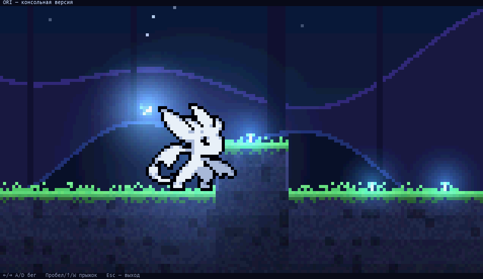
Рис. 19.1. Ори светится, рядом летит Сейн, вокруг мерцают светлячки
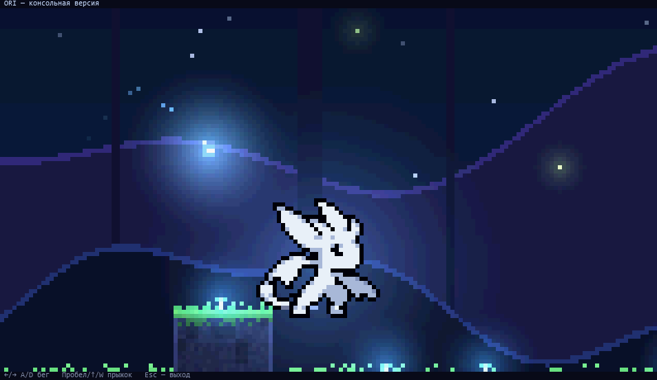
Рис. 19.2. Приземление после прыжка поднимает облачко искр
ФишкаСалют
Частицы и сложение света — это готовый салют. Каждый взрыв — 120 искр, которые разлетаются по кругу с разной скоростью, падают под действием гравитации и гаснут. Прошлый кадр не стирается, а только затемняется dimScreen(0.75f) — поэтому за искрами тянутся хвосты.
Листинг 19.28. Салют из частиц 19-fireworks.cpp
// Фишка главы 19: салют. Каждая искра — частица со скоростью и временем жизни,// а рисуется она светом: addPixel прибавляет цвет, и рядом стоящие искры сливаются в сияние.// Сборка из папки игры (файл лежит в папке fishki):// g++ -O2 -std=c++17 -Wall -Wextra -I. fishki\19-fireworks.cpp screen.cpp console.cpp mathx.cpp -o fireworks.exe#define WIN32_LEAN_AND_MEAN#define NOMINMAX#include <windows.h>#include <cmath>#include "console.h"#include "mathx.h"#include "screen.h"constint MAX_SPARKS = 1500;struct Spark {float x, y, vx, vy;float life; // сколько секунд ещё горетьColor color;};static Spark sparks[MAX_SPARKS];staticint sparkCount = 0;// Взрыв: 120 искр разлетаются по кругу с разной скоростьюstaticvoid explode(float x, float y) {Color c = rgb((int)randomRange(120, 255), (int)randomRange(80, 255), (int)randomRange(80, 255));for (int i = 0; i < 120 && sparkCount < MAX_SPARKS; i++) {float angle = randomRange(0, 6.2832f);float speed = randomRange(10, 60); sparks[sparkCount++] = { x, y, cosf(angle) * speed, sinf(angle) * speed, randomRange(1.0f, 2.0f), c }; }}int main() { consoleInit(); screenFitToConsole();constfloat DT = 0.03f;float nextBoom = 0;while (!keyDown(VK_ESCAPE)) { nextBoom -= DT;if (nextBoom <= 0) { explode(randomRange(20, screenWidth() - 20.0f), randomRange(10, screenHeight() / 2.0f)); nextBoom = randomRange(0.3f, 1.0f); } dimScreen(0.75f); // прошлый кадр не стираем, а затемняем — остаются хвостыfor (int i = 0; i < sparkCount; i++) { Spark& s = sparks[i]; s.vy += 25 * DT; // гравитация тянет вниз s.x += s.vx * DT; s.y += s.vy * DT; s.life -= DT;if (s.life <= 0) { sparks[i] = sparks[--sparkCount]; // на место погасшей ставим последнюю i--;continue; }float glow = s.life > 1 ? 1 : s.life; // в конце жизни искра тускнеет addPixel((int)s.x, (int)s.y, s.color, glow); addPixel((int)s.x + 1, (int)s.y, s.color, glow * 0.3f); addPixel((int)s.x, (int)s.y + 1, s.color, glow * 0.3f); } textAdd(LINE_TOP, " Салют: частицы и свет", rgb(220, 230, 255)); textAdd(LINE_BOTTOM, " Esc — выход", rgb(130, 140, 170)); screenPresent(); Sleep(30); } consoleRestore();return0;}
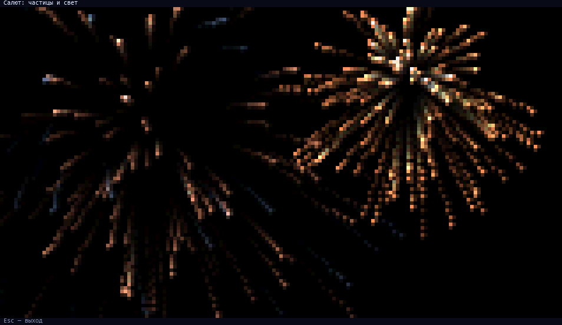
Рис. 19.3. Свет искр складывается в яркие пятна
Создайте в папке игры папку fishki (если её ещё нет) и сохраните программу туда как fishki\19-fireworks.cpp. Соберите её из папки игры вместе с нужными модулями:
Здесь погасшая искра удаляется по-другому, чем в игре: на её место ставится последняя искра массива, а счётчик уменьшается на единицу (sparks[i] = sparks[--sparkCount]). Так массив всегда плотный, без дырок, и перебирать его быстрее. Платой за это — порядок частиц меняется, но для искр он не важен.
Весь код шага 19Сверьтесь с готовой программой
Все 33 файла игры после этой главы — целиком. Откройте файл, чтобы сравнить со своим, а кнопка «Копировать» поможет, если нужно догнать: вставьте код в файл с тем же именем в папке игры.
// ============================================================================// camera.cpp — камера следует за Ори и не выходит за края уровня// ============================================================================#include <cmath>#include "camera.h"#include "config.h"#include "game.h"#include "mathx.h"// Не даём камере заглянуть за края уровняstaticvoid clampCamera(Game& g) {Camera& cam = g.camera;float maxX = (float)(g.world.width * TILE - screenWidth());float maxY = (float)(MAP_H * TILE - screenHeight()); cam.x = clampf(cam.x, 0, fmaxf(maxX, 0));// если окно выше уровня, прижимаем уровень к низу экрана cam.y = maxY < 0 ? maxY : clampf(cam.y, 0, maxY);}// Целые координаты камеры для рисованияstaticvoid updateView(Camera& cam) { cam.viewX = (int)floorf(cam.x); cam.viewY = (int)floorf(cam.y);}void drawDisc(constCamera& cam, int cx, int cy, int radius, Color c) {for (int y = -radius; y <= radius; y++) {for (int x = -radius; x <= radius; x++) {if (x * x + y * y <= radius * radius + radius) putWorldPixel(cam, cx + x, cy + y, c); } }}void centerCamera(Game& g) {constBody& b = g.player.body; g.camera.x = b.x + b.w / 2.0f - screenWidth() / 2.0f; g.camera.y = b.y + b.h / 2.0f - screenHeight() / 2.0f; clampCamera(g); updateView(g.camera);}void updateCamera(Game& g, float dt) {Camera& cam = g.camera;constBody& b = g.player.body;// Цель: Ори в центре экрана, чуть сдвинутый назад — видно, что впередиfloat targetX = b.x + b.w / 2.0f - screenWidth() / 2.0f + g.player.facing * 18;float targetY = b.y + b.h / 2.0f - screenHeight() * 0.55f;// Каждый кадр проходим часть пути до цели — камера движется плавно cam.x = lerpf(cam.x, targetX, clampf(dt * 5, 0, 1)); cam.y = lerpf(cam.y, targetY, clampf(dt * 5, 0, 1)); clampCamera(g); updateView(cam);}
camera.h25 строкcamera.h
// ============================================================================// camera.h — какая часть мира видна на экране, рисование в координатах мира// ============================================================================#pragma once#include "color.h"#include "screen.h"structGame; // описана в game.h — здесь достаточно знать, что такая структура естьstructCamera {float x, y; // левый верхний угол экрана в миреint viewX, viewY; // то же целыми числами (с тряской) — по ним рисуем};// Поставить пиксель по координатам мира: экран = мир − камераinlinevoid putWorldPixel(constCamera& cam, int wx, int wy, Color c) { putPixel(wx - cam.viewX, wy - cam.viewY, c);}// Закрашенный круг в координатах мираvoid drawDisc(constCamera& cam, int cx, int cy, int radius, Color c);void centerCamera(Game& g); // сразу поставить Ори в центр экранаvoid updateCamera(Game& g, float dt); // камера плавно догоняет Ори
color.h34 строкиcolor.h
// ============================================================================// color.h — цвет пикселя. Цвет хранится в одном числе 0xRRGGBB:// по два шестнадцатеричных разряда на красный, зелёный и синий.// ============================================================================#pragma oncetypedefunsignedintColor;// Ограничить канал диапазоном 0..255inlineint clampChannel(int value) {return value < 0 ? 0 : (value > 255 ? 255 : value);}// Собрать цвет из красного, зелёного и синего (каждый 0..255)inlineColor rgb(int r, int g, int b) {return (Color)(clampChannel(r) << 16 | clampChannel(g) << 8 | clampChannel(b));}// Достать каналы обратноinlineint colorR(Color c) { return (c >> 16) & 255; }inlineint colorG(Color c) { return (c >> 8) & 255; }inlineint colorB(Color c) { return c & 255; }// Смешать два цвета: t = 0 — первый цвет, t = 1 — второйinlineColor mixColor(Color a, Color b, float t) {return rgb((int)(colorR(a) + (colorR(b) - colorR(a)) * t), (int)(colorG(a) + (colorG(b) - colorG(a)) * t), (int)(colorB(a) + (colorB(b) - colorB(a)) * t));}// Изменить яркость: k = 0.5 — вдвое темнее, k = 2 — вдвое ярчеinlineColor scaleColor(Color c, float k) {return rgb((int)(colorR(c) * k), (int)(colorG(c) * k), (int)(colorB(c) * k));}
config.h33 строкиconfig.h
// ============================================================================// config.h — настройки игры. Все важные числа собраны здесь,// чтобы их было легко найти и поменять.// ============================================================================#pragma once// Картинкаconstint MAX_SCREEN_W = 320; // наибольшая ширина картинки в пикселяхconstint MAX_SCREEN_H = 200; // наибольшая высота картинки в пикселях// Мирconstint TILE = 8; // сторона тайла в пикселяхconstint MAP_H = 22; // высота уровня в тайлахconstint MAX_MAP_W = 160; // ширина самого широкого уровня в тайлах// Движениеconstfloat RUN_SPEED = 95.0f; // скорость бега, пикселей в секундуconstfloat RUN_ACCEL_GROUND = 900.0f; // разгон и торможение на землеconstfloat RUN_ACCEL_AIR = 600.0f; // в воздухе разгоняться труднееconstfloat GRAVITY = 900.0f; // насколько быстро растёт скорость паденияconstfloat JUMP_SPEED = 320.0f; // скорость в начале прыжкаconstfloat MAX_FALL_SPEED = 360.0f; // быстрее падать нельзяconstfloat DOUBLE_JUMP_SPEED = 280.0f; // второй прыжок в воздухе чуть слабееconstfloat COYOTE_TIME = 0.10f; // сколько секунд можно прыгнуть после схода с краяconstfloat JUMP_BUFFER_TIME = 0.12f; // сколько секунд помнится раннее нажатие прыжка// Ориconstint PLAYER_W = 16; // ширина хитбоксаconstint PLAYER_H = 24; // высота хитбокса// Сколько объектов может существовать одновременноconstint MAX_PARTICLES = 800;constint MAX_LIGHTS = 160;
console.cpp79 строкconsole.cpp
// ============================================================================// console.cpp — всё, что связано с Windows-консолью, собрано в одном файле// ============================================================================#define WIN32_LEAN_AND_MEAN#define NOMINMAX#include <windows.h>#include <cstring>#include "console.h"// Как была настроена консоль до запуска игрыstaticDWORD originalOutMode = 0;staticDWORD originalInMode = 0;staticUINT originalCodePage = 0;// Ctrl+C или закрытие: consoleRestore сначала останавливает writer.// Обработчик делает ограниченную по времени попытку уборки, затем Windows завершает процесс.staticBOOL WINAPI onConsoleEvent(DWORD) { consoleRestore();return FALSE;}void consoleInit() {HANDLE out = GetStdHandle(STD_OUTPUT_HANDLE);HANDLE in = GetStdHandle(STD_INPUT_HANDLE); GetConsoleMode(out, &originalOutMode); GetConsoleMode(in, &originalInMode); originalCodePage = GetConsoleOutputCP(); SetConsoleMode(out, originalOutMode | ENABLE_PROCESSED_OUTPUT | ENABLE_VIRTUAL_TERMINAL_PROCESSING); SetConsoleMode(in, ENABLE_EXTENDED_FLAGS); // выключить выделение мышью: оно ставит вывод на паузу SetConsoleOutputCP(CP_UTF8); SetConsoleCtrlHandler(onConsoleEvent, TRUE); SetConsoleTitleA("Ori");// Отдельный экран, спрятать курсор, очистить экранconstchar* start = "\x1b[?1049h\x1b[?25l\x1b[2J"; consoleWrite(start, (int)strlen(start));}void consoleRestore() {// Обычные цвета, показать курсор, вернуться на основной экранconstchar* finish = "\x1b[0m\x1b[?25h\x1b[?1049l"; consoleWrite(finish, (int)strlen(finish)); consoleFlushInput(); SetConsoleMode(GetStdHandle(STD_OUTPUT_HANDLE), originalOutMode); SetConsoleMode(GetStdHandle(STD_INPUT_HANDLE), originalInMode); SetConsoleOutputCP(originalCodePage);}bool consoleSize(int& cols, int& rows) { CONSOLE_SCREEN_BUFFER_INFO info;if (!GetConsoleScreenBufferInfo(GetStdHandle(STD_OUTPUT_HANDLE), &info)) {returnfalse; } cols = info.srWindow.Right - info.srWindow.Left + 1; rows = info.srWindow.Bottom - info.srWindow.Top + 1;returntrue;}void consoleFlushInput() { FlushConsoleInputBuffer(GetStdHandle(STD_INPUT_HANDLE));}bool keyDown(int virtualKey) {return (GetAsyncKeyState(virtualKey) & 0x8000) != 0;}bool consoleWrite(constchar* data, int length) {if (length < 0) returnfalse;int sent = 0;while (sent < length) {DWORD written = 0;DWORD remaining = (DWORD)(length - sent);if (!WriteFile(GetStdHandle(STD_OUTPUT_HANDLE), data + sent, remaining, &written, NULL) || written == 0 || written > remaining) returnfalse; sent += (int)written; }returntrue;}
console.h13 строкconsole.h
// ============================================================================// console.h — окно консоли Windows: настройка, размер, клавиши, вывод// ============================================================================#pragma oncevoid consoleInit(); // включить цвета и UTF-8, перейти на отдельный экранvoid consoleRestore(); // вернуть консоль в исходное состояниеbool consoleSize(int& cols, int& rows); // видимый размер окна в символахvoid consoleFlushInput(); // выбросить накопившиеся нажатия клавишbool keyDown(int virtualKey); // зажата ли клавиша прямо сейчас// Полностью записать данные; false — ошибка или неполная записьbool consoleWrite(constchar* data, int length);
// ============================================================================// effects.cpp — пулы частиц и источников света// ============================================================================#include <algorithm>#include <cmath>#include <cstring>#include "config.h"#include "effects.h"#include "mathx.h"struct Particle {float x, y, vx, vy;float life, maxLife; // сколько осталось жить и сколько жила бы всегоColor color;bool gravity; // падает ли вниз};struct Light {float x, y, radius;Color color;float power;};// Пулы: частица с life <= 0 — свободное местоstatic Particle particles[MAX_PARTICLES];static Light lights[MAX_LIGHTS];staticint lightCount = 0;void clearParticles() { memset(particles, 0, sizeof(particles));}void spawnParticle(float x, float y, float vx, float vy, float life, Color color, bool gravity) {for (int i = 0; i < MAX_PARTICLES; i++) {if (particles[i].life <= 0) { particles[i] = { x, y, vx, vy, life, life, color, gravity };return; } }}void updateParticles(float dt) {for (int i = 0; i < MAX_PARTICLES; i++) { Particle& p = particles[i];if (p.life <= 0) continue; p.life -= dt;if (p.gravity) p.vy += GRAVITY * 0.5f * dt; p.vx *= 1.0f - 1.5f * dt; // сопротивление воздуха p.vy *= 1.0f - 1.5f * dt; p.x += p.vx * dt; p.y += p.vy * dt; }}void drawParticles(constCamera& cam) {for (int i = 0; i < MAX_PARTICLES; i++) {const Particle& p = particles[i];if (p.life <= 0) continue;float strength = clampf(p.life / p.maxLife, 0, 1); // гаснет к концу жизни addPixel((int)roundf(p.x) - cam.viewX, (int)roundf(p.y) - cam.viewY, p.color, strength); }}void clearLights() { lightCount = 0;}void addLight(float x, float y, float radius, Color color, float power) {if (lightCount < MAX_LIGHTS) { lights[lightCount] = { x, y, radius, color, power }; lightCount++; }}void applyLights(constCamera& cam) {for (int i = 0; i < lightCount; i++) {const Light& light = lights[i];int cx = (int)light.x - cam.viewX;int cy = (int)light.y - cam.viewY;int r = (int)light.radius;// Проходим только по квадрату вокруг источника и только по видимой частиint x0 = std::max(0, cx - r), x1 = std::min(screenWidth() - 1, cx + r);int y0 = std::max(0, cy - r), y1 = std::min(screenHeight() - 1, cy + r);for (int y = y0; y <= y1; y++) {for (int x = x0; x <= x1; x++) {float dx = (float)(x - cx), dy = (float)(y - cy);float d = sqrtf(dx * dx + dy * dy) / light.radius; // 0 в центре, 1 на краюif (d >= 1) continue; addPixel(x, y, light.color, (1 - d) * (1 - d) * light.power); } } }}
effects.h18 строкeffects.h
// ============================================================================// effects.h — частицы (искры, пыль) и свет// ============================================================================#pragma once#include "camera.h"#include "color.h"// Частицы: живут несколько долей секунды и гаснутvoid clearParticles();void spawnParticle(float x, float y, float vx, float vy, float life, Color color, bool gravity);void updateParticles(float dt);void drawParticles(constCamera& cam);// Свет: источники собираются заново в каждом кадре, потом накладываются на картинкуvoid clearLights();void addLight(float x, float y, float radius, Color color, float power);void applyLights(constCamera& cam);
game.cpp62 строкиgame.cpp
// ============================================================================// game.cpp — загрузка уровней и правила игры: что обновлять в каждом кадре// ============================================================================#include <algorithm>#include <cmath>#include <cstring>#include "effects.h"#include "game.h"#include "input.h"#include "levels.h"// Символ карты — объект? Тогда создаём объект и возвращаем пробел.// Иначе это тайл (камень, бревно, шипы) — он остаётся в карте как есть.staticchar placeObject(Game& g, char symbol, float wx, float wy) {World& w = g.world;switch (symbol) {case'P': w.spawnX = wx; w.spawnY = wy + TILE - PLAYER_H; // ногами на дно клеткиreturn' ';default:return symbol; }}void loadLevel(Game& g, int index) {const LevelInfo& level = levelInfo(index);World& w = g.world; g.levelIndex = index; clearParticles();// Ширина уровня — длина самой длинной строки карты w.width = 0;for (int ty = 0; ty < MAP_H; ty++) { w.width = std::max(w.width, (int)strlen(level.rows[ty])); } w.width = std::min(w.width, MAX_MAP_W);for (int ty = 0; ty < MAP_H; ty++) {int length = (int)strlen(level.rows[ty]);for (int tx = 0; tx < w.width; tx++) {char symbol = tx < length ? level.rows[ty][tx] : ' '; w.tiles[ty][tx] = placeObject(g, symbol, (float)(tx * TILE), (float)(ty * TILE)); } w.tiles[ty][w.width] = 0; // конец строки } placePlayer(g.player, w.spawnX, w.spawnY); centerCamera(g);}void startNewGame(Game& g) { loadLevel(g, 0);}void updateGame(Game& g, constInput& in, float dt) { g.time += dt; updatePlayer(g, in, dt); updateParticles(dt); updateCamera(g, dt);}
game.h24 строкиgame.h
// ============================================================================// game.h — вся игра в одной структуре Game. Функции получают её по ссылке,// поэтому глобальные переменные не нужны.// ============================================================================#pragma once#include "config.h"#include "camera.h"#include "player.h"#include "world.h"structInput;structGame {float time; // сколько секунд идёт игра — для анимацийint levelIndex; // номер текущего уровня (с нуля)World world;Camera camera;Player player;};void startNewGame(Game& g);void loadLevel(Game& g, int index);void updateGame(Game& g, constInput& in, float dt);
hud.cpp26 строкhud.cpp
// ============================================================================// hud.cpp — строки текста над картинкой и под ней// ============================================================================#include <cstdio>#include "game.h"#include "hud.h"#include "screen.h"constColor HUD_TEXT = rgb(200, 220, 255);constColor HINT_TEXT = rgb(130, 140, 170);staticvoid drawTopLine() { textAdd(LINE_TOP, " ORI — консольная версия", HUD_TEXT);}// Нижняя строка — подсказка по управлению (короче, если окно узкое)staticvoid drawBottomLine() {int w = screenWidth();if (w >= 60) textAdd(LINE_BOTTOM, " ←/→ A/D бег Пробел/↑/W прыжок Esc — выход", HINT_TEXT);}void drawHud() { drawTopLine(); drawBottomLine();}
hud.h6 строкhud.h
// ============================================================================// hud.h — строки текста над и под картинкой и надписи поверх неё// ============================================================================#pragma oncevoid drawHud();
// ============================================================================// input.h — какие кнопки управления нажаты// ============================================================================#pragma once// Одна кнопка управленияstructKey {bool held; // зажата сейчасbool pressed; // нажата именно в этом кадре (в прошлом кадре не была зажата)};structInput {Key left;Key right;Key jump;Key quit;};void readInput(Input& in);
levels.cpp49 строкlevels.cpp
// ============================================================================// levels.cpp — карты уровней. Каждый символ — тайл 8 × 8 пикселей:// # — камень, = — бревно, ^ — шипы, P — старт Ори// ============================================================================#include "config.h"#include "levels.h"// Лес Нибельstaticconstchar* LEVEL1[MAP_H] = {"## ##################### ##","## ##################### ##","## ##################### ##","## ##################### B ##","## ##################### ##","## ##################### o o + ##","## ##################### ##","## ##################### o C S S ##","## B ##################### ################# ##","## + === ################# o ##","## o o B o ################# B ##","## o === ################# S ##","## o o o o o o o B ===########################### ##","## o === ########################### ##","## o o o o === ########### C S S ########################### ##","## ########### #################### === ########################### ##","## P ### ########### #################### o o o ########################### ##","## ### S C ########### #################### ^^ ########################### T ##","############################### ################### ################################### ##############################################","############################### ################### ################################### ##############################################","###############################^^^^^^###################^^^^^^^^^^^^^^^###################################^^^^^^^^##############################################","################################################################################################################################################################",};// Все уровни по порядкуstaticconst LevelInfo LEVELS[] = { { "Лес Нибель", LEVEL1, rgb(6, 8, 28), rgb(24, 46, 84), // небо rgb(30, 28, 72), rgb(13, 18, 42), // холмы rgb(38, 44, 80), rgb(96, 220, 120), // камень и мохtrue },};int levelCount() {returnsizeof(LEVELS) / sizeof(LEVELS[0]);}const LevelInfo& levelInfo(int index) {return LEVELS[index];}
levels.h18 строкlevels.h
// ============================================================================// levels.h — описания уровней: карта, название и цвета// ============================================================================#pragma once#include "color.h"struct LevelInfo {constchar* name; // название уровняconstchar* const* rows; // карта: MAP_H строк из символовColor skyTop, skyBottom; // небо: цвет вверху и у горизонтаColor hillFar, hillNear; // силуэты дальних и ближних холмовColor rock, moss; // камень и мох на нёмbool stars; // есть ли звёзды на небе};int levelCount(); // сколько всего уровнейconst LevelInfo& levelInfo(int index); // описание уровня по номеру (с нуля)
main.cpp47 строкmain.cpp
// ============================================================================// ORI — консольная игра-платформер, вид сбоку.// Картинка рисуется пикселями из символов '▀' и ANSI-цветов.// Без классов: только данные (структуры) и функции.//// Сборка: build.bat; отладочная сборка: debug.bat.// В скриптах перечислены только исходники игры этого шага.// ============================================================================#include <chrono>#include <thread>#include "console.h"#include "game.h"#include "input.h"#include "render.h"#include "screen.h"int main() { consoleInit(); screenFitToConsole();staticGame game; // вся игра; static — чтобы большая структура не лежала на стеке startNewGame(game);Input input = {};constauto FRAME_TIME = std::chrono::milliseconds(25); // 25 мс — около 40 кадров в секундуauto previous = std::chrono::steady_clock::now();while (true) {auto frameStart = std::chrono::steady_clock::now();float dt = std::chrono::duration<float>(frameStart - previous).count(); previous = frameStart;if (dt > 0.05f) dt = 0.05f; // после долгой паузы не прыгаем далеко вперёд screenFitToConsole(); consoleFlushInput(); readInput(input);if (input.quit.pressed) break; updateGame(game, input, dt); renderGame(game); screenPresent();auto elapsed = std::chrono::steady_clock::now() - frameStart;if (elapsed < FRAME_TIME) std::this_thread::sleep_for(FRAME_TIME - elapsed); } consoleRestore();return0;}
mathx.cpp12 строкmathx.cpp
// ============================================================================// mathx.cpp — генератор случайных чисел// ============================================================================#include "mathx.h"// Состояние генератора: из него получается следующее «случайное» числоstaticunsignedint randomSeed = 12345u;float randomRange(float a, float b) { randomSeed = randomSeed * 1664525u + 1013904223u;return a + (b - a) * ((randomSeed >> 8) / 16777216.0f);}
mathx.h22 строкиmathx.h
// ============================================================================// mathx.h — маленькие математические помощники// ============================================================================#pragma once// Зажать число между lo и hiinlineint clampi(int v, int lo, int hi) { return v < lo ? lo : (v > hi ? hi : v); }inlinefloat clampf(float v, float lo, float hi) { return v < lo ? lo : (v > hi ? hi : v); }// Плавный переход: t = 0 — a, t = 1 — b, t = 0.5 — ровно посерединеinlinefloat lerpf(float a, float b, float t) { return a + (b - a) * t; }// «Случайное», но всегда одинаковое число для пары координат.// Нужно для текстур: камень не должен «кипеть» от кадра к кадру.inlineunsignedint hash2(int x, int y) {unsignedint h = (unsignedint)x * 374761393u + (unsignedint)y * 668265263u; h = (h ^ (h >> 13)) * 1274126177u;return h ^ (h >> 16);}// Случайное число от a до b — при каждом вызове новоеfloat randomRange(float a, float b);
physics.cpp72 строкиphysics.cpp
// ============================================================================// physics.cpp — движение и столкновения с тайлами// ============================================================================#include <cmath>#include "config.h"#include "physics.h"Body makeBody(float x, float y, int w, int h) {Body b; b.x = x; b.y = y; b.vx = 0; b.vy = 0; b.w = w; b.h = h; b.onGround = false; b.hitWall = false;return b;}bool rectSolid(constWorld& world, float x, float y, float w, float h) {// Номера тайлов, которые задевает прямоугольник. 0.01 — чтобы прямоугольник,// стоящий ровно на границе тайла, не считался залезшим в соседний.int tx0 = (int)floorf(x / TILE), tx1 = (int)floorf((x + w - 0.01f) / TILE);int ty0 = (int)floorf(y / TILE), ty1 = (int)floorf((y + h - 0.01f) / TILE);for (int ty = ty0; ty <= ty1; ty++) {for (int tx = tx0; tx <= tx1; tx++) {if (isSolidTile(tileAt(world, tx, ty))) returntrue; } }returnfalse;}void moveBody(constWorld& world, Body& b, float dt) { b.onGround = false; b.hitWall = false;// Большой сдвиг делим на шаги не длиннее 3 пикселей,// иначе быстрое тело может проскочить сквозь тонкую стенуfloat maxMove = fmaxf(fabsf(b.vx), fabsf(b.vy)) * dt;int steps = (int)ceilf(maxMove / 3.0f);if (steps < 1) steps = 1;float stepDt = dt / steps;for (int s = 0; s < steps; s++) {// Сначала по горизонталиfloat nx = b.x + b.vx * stepDt;if (rectSolid(world, nx, b.y, (float)b.w, (float)b.h)) {if (b.vx > 0) { nx = floorf((nx + b.w) / TILE) * TILE - b.w; // прижаться к стене справа } else { nx = (floorf(nx / TILE) + 1) * TILE; // прижаться к стене слева } b.vx = 0; b.hitWall = true; } b.x = nx;// Потом по вертикалиfloat ny = b.y + b.vy * stepDt;if (rectSolid(world, b.x, ny, (float)b.w, (float)b.h)) {if (b.vy > 0) { ny = floorf((ny + b.h) / TILE) * TILE - b.h; // встали на пол b.onGround = true; } else { ny = (floorf(ny / TILE) + 1) * TILE; // ударились о потолок } b.vy = 0; } b.y = ny; }}
physics.h22 строкиphysics.h
// ============================================================================// physics.h — тела, которые двигаются и сталкиваются с тайлами// ============================================================================#pragma once#include "world.h"structBody {float x, y; // левый верхний угол хитбокса в миреfloat vx, vy; // скорость, пикселей в секунду (vy > 0 — вниз)int w, h; // размер хитбоксаbool onGround; // стоит на чём-то твёрдомbool hitWall; // в этом кадре упёрлось в стену};Body makeBody(float x, float y, int w, int h); // неподвижное тело в точке (x, y)// Есть ли твёрдые тайлы в прямоугольникеbool rectSolid(constWorld& world, float x, float y, float w, float h);// Сдвинуть тело на скорость × dt, не пуская его в твёрдые тайлыvoid moveBody(constWorld& world, Body& body, float dt);
// ============================================================================// player.h — Ори: управление, прыжки, жизни// ============================================================================#pragma once#include "physics.h"structGame; // описаны в других файлах — здесь достаточно объявленийstructInput;structPlayer {Body body; // положение, скорость и хитбоксint facing; // куда смотрит: -1 влево, 1 вправоfloat animTime; // время для анимации бегаbool canDoubleJump; // прыжок в воздухе ещё не потраченfloat coyoteTime; // сколько ещё можно прыгнуть после схода с краяfloat jumpBuffer; // сколько ещё помнить раннее нажатие прыжкаfloat seinX, seinY; // Сейн — огонёк-спутник};// Поставить Ори в точку (x, y) и сбросить его состояние (жизни, прыжки...)void placePlayer(Player& player, float x, float y);void updatePlayer(Game& g, constInput& in, float dt);void drawPlayer(constGame& g);void drawSein(constGame& g);
render.cpp196 строкrender.cpp
// ============================================================================// render.cpp — фон, тайлы и порядок рисования кадра// ============================================================================#include <cmath>#include "effects.h"#include "game.h"#include "hud.h"#include "levels.h"#include "mathx.h"#include "render.h"#include "screen.h"// Фон из трёх слоёв, которые движутся медленнее камеры (параллакс):// дальние холмы, стволы деревьев и ближние холмыstaticvoid drawBackground(constGame& g) {const LevelInfo& level = levelInfo(g.levelIndex);constCamera& cam = g.camera;int w = screenWidth(), h = screenHeight();// Высоты холмов и стволы считаем один раз на столбец — синус считается долгоfloat farHill[MAX_SCREEN_W], nearHill[MAX_SCREEN_W];bool trunk[MAX_SCREEN_W];for (int x = 0; x < w; x++) {float farX = x + cam.viewX * 0.25f; // дальний слой движется в 4 раза медленнее farHill[x] = 70 + 16 * sinf(farX * 0.021f) + 8 * sinf(farX * 0.057f + 1.3f);float nearX = x + cam.viewX * 0.55f; nearHill[x] = 118 + 12 * sinf(nearX * 0.033f + 2.0f) + 5 * sinf(nearX * 0.09f);int cell = (int)floorf(nearX / 40); // одно дерево на каждые 40 пикселейfloat center = cell * 40.0f + (float)(hash2(cell, 7) % 24) + 8;float halfWidth = 1.0f + (float)(hash2(cell, 9) % 3); trunk[x] = fabsf(nearX - center) <= halfWidth; }Color farRim = scaleColor(level.hillFar, 1.7f); // контровой свет на гребне холмаColor nearRim = scaleColor(level.hillNear, 2.8f);Color trunkColor = scaleColor(level.hillNear, 1.25f);for (int y = 0; y < h; y++) {float worldY = (float)(y + cam.viewY);Color sky = mixColor(level.skyTop, level.skyBottom, clampf((worldY + 40) / (MAP_H * TILE + 60.0f), 0, 1));float farY = y + cam.viewY * 0.4f + 24;float nearY = y + cam.viewY * 0.7f + 10;for (int x = 0; x < w; x++) {Color c = sky;if (level.stars && worldY < 100) { // звезда — редкий пиксель, который мерцаетunsignedint star = hash2((int)(x + cam.viewX * 0.08f), (int)(y + cam.viewY * 0.08f));if (star % 500 == 0) {float twinkle = 0.5f + 0.5f * sinf(g.time * 2 + (star >> 10) % 100); c = mixColor(c, rgb(200, 220, 255), 0.3f + 0.6f * twinkle); } }if (farY > farHill[x]) c = (farY - farHill[x] < 1.5f) ? farRim : mixColor(level.hillFar, sky, 0.25f);if (trunk[x] && nearY < nearHill[x] + 4) c = trunkColor;if (nearY > nearHill[x]) c = (nearY - nearHill[x] < 1.5f) ? nearRim : level.hillNear; putPixel(x, y, c); } }}// Цвет пикселя (lx, ly) внутри тайла (tx, ty). opaque = false — пиксель прозрачный.staticColor tileColor(constGame& g, char tile, int tx, int ty, int lx, int ly, bool& opaque) {constWorld& world = g.world;int wx = tx * TILE + lx, wy = ty * TILE + ly;unsignedint noise = hash2(wx, wy); opaque = true;if (tile == '#') {const LevelInfo& level = levelInfo(g.levelIndex);int n = (int)(noise % 13) - 6; // зернистость: каждый пиксель чуть светлее или темнееColor c = rgb(colorR(level.rock) + n, colorG(level.rock) + n, colorB(level.rock) + n);if (hash2(wx / 3, wy / 3) % 9 == 0) c = scaleColor(c, 0.75f); // трещины// Тайл смотрит на соседей: края, тени и мохbool emptyUp = !isSolidTile(tileAt(world, tx, ty - 1));bool emptyLeft = !isSolidTile(tileAt(world, tx - 1, ty));bool emptyRight = !isSolidTile(tileAt(world, tx + 1, ty));bool emptyDown = !isSolidTile(tileAt(world, tx, ty + 1));if ((emptyLeft && lx == 0) || (emptyRight && lx == 7)) c = scaleColor(level.rock, 1.55f);if (emptyDown && ly == 7) c = scaleColor(level.rock, 0.55f);if (emptyUp) {Color grass = rgb(colorR(level.moss) + n * 2, colorG(level.moss) + n, colorB(level.moss));if (ly == 0) c = grass;elseif (ly == 1) c = scaleColor(grass, 0.78f);elseif (ly == 2 && noise % 3 != 0) c = scaleColor(level.moss, 0.5f);elseif (ly == 3 && noise % 3 == 0) c = scaleColor(level.moss, 0.45f); } else {// Чем глубже в скале, тем темнееint depth = 1 + isSolidTile(tileAt(world, tx, ty - 2)) + isSolidTile(tileAt(world, tx, ty - 3)); c = scaleColor(c, 1.0f - depth * 0.12f); }return c; }if (tile == '=') {// Бревно: светлый верх, кора с наклонными штрихами, снизу свисает мохbool leftEnd = tileAt(world, tx - 1, ty) != '=';bool rightEnd = tileAt(world, tx + 1, ty) != '=';bool corner = (leftEnd && lx == 0) || (rightEnd && lx == 7);if (ly == 0 || ly == 3) {if (corner) { // скруглённые концы opaque = false;return0; }return ly == 0 ? rgb(160, 122, 80) : rgb(70, 48, 32); }if (ly <= 2) return (wx + ly * 3) % 5 == 0 ? rgb(84, 58, 40) : rgb(112, 80, 52);unsignedint moss = hash2(wx, 77);if (moss % 4 == 0 && ly < 4 + (int)(moss >> 8) % 4) return rgb(50, 150, 100); opaque = false;return0; }if (tile == '^') {// Шипы: у каждого столбца своя высота колючкиstaticconstint SPIKE_HEIGHT[8] = { 3, 6, 8, 5, 2, 7, 4, 6 };int spike = SPIKE_HEIGHT[(lx + tx * 3) % 8];int up = 7 - ly;if (up < spike) {if (up == spike - 1) return rgb(250, 100, 160); // ярко-розовый кончикreturn mixColor(rgb(70, 15, 45), rgb(180, 45, 110), up / 7.0f); }if (ly >= 6) return rgb(60, 15, 40); opaque = false;return0; } opaque = false;return0;}// Трава и светящийся гриб в пустой клетке над камнемstaticvoid drawGrass(constGame& g, int tx, int ty) {constCamera& cam = g.camera;for (int lx = 0; lx < TILE; lx++) {int wx = tx * TILE + lx;unsignedint h = hash2(wx, ty * 31);if (h % 3 != 0) putWorldPixel(cam, wx, ty * TILE + 7, rgb(80, 200, 110));if (h % 4 == 0) putWorldPixel(cam, wx, ty * TILE + 6, rgb(110, 225, 130));if (h % 13 == 0) putWorldPixel(cam, wx, ty * TILE + 5, rgb(120, 240, 150)); }if (hash2(tx, ty) % 9 != 0) return; // гриб растёт в каждой девятой клеткеint mx = tx * TILE + 3, my = ty * TILE; putWorldPixel(cam, mx, my + 7, rgb(200, 200, 225)); putWorldPixel(cam, mx, my + 6, rgb(200, 200, 225)); putWorldPixel(cam, mx - 1, my + 5, rgb(90, 200, 255)); putWorldPixel(cam, mx, my + 5, rgb(160, 235, 255)); putWorldPixel(cam, mx + 1, my + 5, rgb(90, 200, 255)); addLight((float)mx, (float)(my + 5), 14, rgb(60, 150, 220), 0.6f);}staticvoid drawTiles(constGame& g) {constCamera& cam = g.camera;// Рисуем только видимые тайлы и по одному запасному с каждой стороныint tx0 = cam.viewX / TILE - 1, tx1 = (cam.viewX + screenWidth()) / TILE + 1;int ty0 = (int)floorf(cam.viewY / (float)TILE) - 1, ty1 = (cam.viewY + screenHeight()) / TILE + 1;for (int ty = ty0; ty <= ty1; ty++) {if (ty < 0 || ty >= MAP_H) continue;for (int tx = tx0; tx <= tx1; tx++) {char tile = tileAt(g.world, tx, ty);if (tile == ' ') {if (tileAt(g.world, tx, ty + 1) == '#') drawGrass(g, tx, ty);continue; }for (int ly = 0; ly < TILE; ly++) {for (int lx = 0; lx < TILE; lx++) {bool opaque;Color c = tileColor(g, tile, tx, ty, lx, ly, opaque);if (opaque) putWorldPixel(cam, tx * TILE + lx, ty * TILE + ly, c); } } } }}// Свет от движущихся объектов и светлячковstaticvoid addActorLights(constGame& g) {constPlayer& p = g.player;float cx = p.body.x + p.body.w / 2.0f, cy = p.body.y + p.body.h / 2.0f; addLight(cx, cy, 50, rgb(60, 100, 150), 0.8f); // Ори светится addLight(p.seinX, p.seinY, 22, rgb(120, 200, 255), 0.8f); // и Сейнfor (int i = 0; i < 24; i++) { // светлячки медленно плавают по синусам и мигаютfloat fx = (float)(hash2(i, 1) % (g.world.width * TILE)) + sinf(g.time * 0.5f + i) * 20;float fy = (float)(hash2(i, 2) % (MAP_H * TILE - 40)) + sinf(g.time * 0.7f + i * 2) * 10;float blink = 0.5f + 0.5f * sinf(g.time * 3 + i * 1.7f); addPixel((int)fx - g.camera.viewX, (int)fy - g.camera.viewY, rgb(200, 255, 140), blink); addLight(fx, fy, 8, rgb(110, 160, 60), blink * 0.5f); }}void renderGame(constGame& g) { clearLights(); drawBackground(g); drawTiles(g); addActorLights(g); // свет кладём до персонажей, чтобы они остались чёткими applyLights(g.camera); drawPlayer(g); drawSein(g); drawParticles(g.camera); drawHud();}
render.h8 строкrender.h
// ============================================================================// render.h — рисование кадра целиком// ============================================================================#pragma oncestructGame;void renderGame(constGame& g); // нарисовать мир, персонажей и текст в картинку экрана
screen.cpp194 строкиscreen.cpp
// ============================================================================// screen.cpp — картинка в памяти и её вывод в консоль ANSI-командами.// Одна клетка консоли = два пикселя: символ '▀' рисует верхний пиксель// цветом текста, а нижний остаётся цветом фона.// ============================================================================#include <cstdio>#include <cstring>#include "config.h"#include "console.h"#include "mathx.h"#include "screen.h"// ---------------------------------------------------------------------------// Данные модуля (static — видны только в этом файле)// ---------------------------------------------------------------------------staticColor pixels[MAX_SCREEN_H][MAX_SCREEN_W];staticint width = 120; // размер картинки в пикселях, подстраивается под окноstaticint height = 70;staticint consoleCols = 0;staticint consoleRows = 0;// Текст кадра: строки над и под картинкойconstint MAX_SEGMENTS = 32;constint MAX_TEXT = 128;struct TextSegment {char text[MAX_TEXT];Color color;};static TextSegment lineSegments[2][MAX_SEGMENTS];staticint lineSegmentCount[2] = { 0, 0 };// Сюда собирается весь текст кадра вместе с ANSI-командамиstaticchar out[4 * 1024 * 1024];staticint outLength = 0;// ---------------------------------------------------------------------------// Размер и пиксели// ---------------------------------------------------------------------------bool screenFitToConsole() {int cols, rows;if (!consoleSize(cols, rows)) returnfalse;if (cols == consoleCols && rows == consoleRows) returnfalse; consoleCols = cols; consoleRows = rows;// На столбец уже окна: символ в последнем столбце переносит курсор на новую строку width = clampi(cols - 1, 40, MAX_SCREEN_W);// Две строки занимает текст, в каждой строке консоли два пикселя; высота чётная height = clampi((rows - 2) * 2, 40, MAX_SCREEN_H) & ~1;constchar* clear = "\x1b[0m\x1b[2J"; consoleWrite(clear, (int)strlen(clear));returntrue;}int screenWidth() { return width; }int screenHeight() { return height; }void putPixel(int x, int y, Color c) {if (x >= 0 && y >= 0 && x < width && y < height) { pixels[y][x] = c; }}void addPixel(int x, int y, Color c, float strength) {if (x < 0 || y < 0 || x >= width || y >= height) return;Color old = pixels[y][x]; pixels[y][x] = rgb(colorR(old) + (int)(colorR(c) * strength), colorG(old) + (int)(colorG(c) * strength), colorB(old) + (int)(colorB(c) * strength));}void dimScreen(float k) {for (int y = 0; y < height; y++) {for (int x = 0; x < width; x++) { pixels[y][x] = scaleColor(pixels[y][x], k); } }}// ---------------------------------------------------------------------------// Текст// ---------------------------------------------------------------------------void textAdd(TextLine line, constchar* text, Color color) {int& count = lineSegmentCount[line];if (count >= MAX_SEGMENTS) return; snprintf(lineSegments[line][count].text, MAX_TEXT, "%s", text); lineSegments[line][count].color = color; count++;}// ---------------------------------------------------------------------------// Сборка кадра из ANSI-команд// ---------------------------------------------------------------------------staticvoid emit(constchar* s) {int n = (int)strlen(s); memcpy(out + outLength, s, n); outLength += n;}// Число цифрами — вручную: так быстрее, чем через snprintfstaticvoid emitInt(int value) {char digits[12];int n = 0;if (value < 0) { out[outLength++] = '-'; value = -value; }do { digits[n++] = (char)('0' + value % 10); value /= 10; } while (value > 0);while (n > 0) { out[outLength++] = digits[--n]; }}// Команда цвета: фона (background = true) или текстаstaticvoid emitColor(bool background, Color c) { emit(background ? "\x1b[48;2;" : "\x1b[38;2;"); emitInt(colorR(c)); emit(";"); emitInt(colorG(c)); emit(";"); emitInt(colorB(c)); emit("m");}staticvoid emitLine(TextLine line) { emitColor(true, rgb(8, 10, 24));for (int i = 0; i < lineSegmentCount[line]; i++) { emitColor(false, lineSegments[line][i].color); emit(lineSegments[line][i].text); } emit("\x1b[K\x1b[0m"); // закрасить строку до конца и сбросить цвета}staticvoid emitPixels() {Color lastFg = 0xFFFFFFFF; // какой цвет текста сейчас включён (такого цвета не бывает — «никакой»)Color lastBg = 0xFFFFFFFF;for (int y = 0; y + 1 < height; y += 2) {for (int x = 0; x < width; x++) {// Огрубляем цвета: глаз разницы не видит, а одинаковых соседей большеColor top = pixels[y][x] & 0xF8F8F8;Color bottom = pixels[y + 1][x] & 0xF8F8F8;if (top == bottom) {// Оба пикселя одинаковые — хватит пробела с цветом фонаif (bottom != lastBg) { emitColor(true, bottom); lastBg = bottom; } out[outLength++] = ' '; } else {if (top != lastFg) { emitColor(false, top); lastFg = top; }if (bottom != lastBg) { emitColor(true, bottom); lastBg = bottom; } emit("\xE2\x96\x80"); // ▀ } } emit("\x1b[0m\r\n"); lastFg = 0xFFFFFFFF; lastBg = 0xFFFFFFFF; }}void screenPresent() {int availableCols, availableRows;if (consoleSize(availableCols, availableRows) && (availableCols < screenWidth() + 1 || availableRows < screenHeight() / 2 + 2)) {constchar* warning = "\x1b[0m\x1b[2J\x1b[HУвеличьте окно консоли";// In a very narrow window use a short ASCII hint to avoid wrapping.if (availableCols < 24) warning = "\x1b[0m\x1b[2J\x1b[HResize";if (availableCols < 7) warning = "\x1b[0m\x1b[2J"; consoleWrite(warning, (int)strlen(warning)); lineSegmentCount[0] = lineSegmentCount[1] = 0;return; } outLength = 0; emit("\x1b[H"); // курсор в левый верхний угол: рисуем поверх прошлого кадра emitLine(LINE_TOP); emit("\r\n"); emitPixels(); emitLine(LINE_BOTTOM); consoleWrite(out, outLength);// Текст задаётся заново в каждом кадре lineSegmentCount[LINE_TOP] = 0; lineSegmentCount[LINE_BOTTOM] = 0;}
screen.h21 строкаscreen.h
// ============================================================================// screen.h — картинка из пикселей и строки текста над и под ней.// Сначала рисуем кадр в памяти, потом screenPresent() показывает его целиком.// ============================================================================#pragma once#include "color.h"bool screenFitToConsole(); // подогнать размер картинки под окно; true — размер изменилсяint screenWidth();int screenHeight();void putPixel(int x, int y, Color c);void addPixel(int x, int y, Color c, float strength); // прибавить цвет — так рисуется светvoid dimScreen(float k); // затемнить всю картинку// Текст: строка над картинкой и строка под нейenum TextLine { LINE_TOP, LINE_BOTTOM };void textAdd(TextLine line, constchar* text, Color color);void screenPresent(); // показать кадр в консоли
sprites.cpp28 строкsprites.cpp
// ============================================================================// sprites.cpp — рисование спрайтов// ============================================================================#include "sprites.h"// Найти цвет символа в палитре. false — такого символа нет.staticbool findColor(const Sprite& sprite, char symbol, Color& color) {for (int k = 0; sprite.keys[k] != 0; k++) {if (sprite.keys[k] == symbol) { color = sprite.colors[k];returntrue; } }returnfalse;}void drawSprite(constCamera& cam, const Sprite& sprite, int wx, int wy, bool flip, bool flash) {for (int y = 0; y < sprite.h; y++) {for (int x = 0; x < sprite.w; x++) {// При отражении читаем строку справа налевоchar symbol = sprite.rows[y][flip ? (sprite.w - 1 - x) : x];Color color;if (symbol == '.' || !findColor(sprite, symbol, color)) continue;if (flash) color = mixColor(color, rgb(255, 255, 255), 0.75f); putWorldPixel(cam, wx + x, wy + y, color); } }}
sprites.h17 строкsprites.h
// ============================================================================// sprites.h — картинки персонажей, записанные символами// ============================================================================#pragma once#include "camera.h"#include "color.h"struct Sprite {int w, h; // размер в пикселяхconstchar* const* rows; // строки картинки; '.' — прозрачный пиксельconstchar* keys; // какие символы встречаются в картинкеconstColor* colors; // каким цветом рисовать каждый символ из keys};// Нарисовать спрайт в мире. flip — отразить по горизонтали, flash — высветлить (после удара)void drawSprite(constCamera& cam, const Sprite& sprite, int wx, int wy, bool flip, bool flash);
world.cpp14 строкworld.cpp
// ============================================================================// world.cpp — доступ к тайлам уровня// ============================================================================#include "world.h"char tileAt(constWorld& world, int tx, int ty) {if (tx < 0 || tx >= world.width) return'#';if (ty < 0 || ty >= MAP_H) return' ';return world.tiles[ty][tx];}bool isSolidTile(char tile) {return tile == '#' || tile == '=' || tile == '^';}
world.h18 строкworld.h
// ============================================================================// world.h — загруженный уровень: тайлы и особые места на нём// ============================================================================#pragma once#include "config.h"structWorld {char tiles[MAP_H][MAX_MAP_W + 1]; // символы тайлов; объекты заменены пробеламиint width; // ширина уровня в тайлахfloat spawnX, spawnY; // где Ори появляется в начале уровня};// Тайл в клетке (tx, ty). За левым и правым краем — стена, сверху и снизу — пустота.char tileAt(constWorld& world, int tx, int ty);// Твёрдый ли тайл: сквозь твёрдые нельзя пройтиbool isSolidTile(char tile);
Задания
Часть II. Ори в мире пикселей
Глава 20Жизни, свет духа и колодцы
Пока шипы Ори не страшны, а собирать в лесу нечего. В этой главе у Ори появятся жизни: шипы и пропасть будут ранить его, а после удара он отлетит в сторону и чуть больше секунды будет мигать. На уровне появятся предметы: голубой свет духа (очки) и зелёные ячейки жизни. А ещё — колодцы духа: коснувшись колодца, Ори будет возрождаться именно у него.
Разбираемся
Проверка последствий
Сначала получите один урон: жизнь уменьшается, герой временно мигает и не теряет все жизни за один контакт. После окончания неуязвимости повторный контакт снова наносит урон. Затем проверьте сбор предмета один раз, активацию чекпойнта, смерть и возрождение у последнего чекпойнта. После возрождения движение работает, а герой не появляется внутри стены. Проверяйте эти события раздельно, следя за состоянием и HUD.
Таймер — это число, которое уменьшается
Многие вещи в игре длятся какое-то время: неуязвимость после удара, тряска экрана, отлёт от удара. Для каждой такой вещи заводим таймер, как в главе 17: дробное число — сколько секунд ещё осталось. Каждый кадр уменьшаем его на dt, а пока он больше нуля — эффект действует.
Фрагмент кода — место вставки указано в тексте
p.invulnerable = 1.1f; // удар: 1,1 секунды неуязвимостиif (p.invulnerable > 0) p.invulnerable -= dt; // каждый кадрif (p.invulnerable > 0) return; // пока неуязвим — новый удар не считается
Без неуязвимости Ори, стоя на шипах, терял бы жизнь каждый кадр — 40 раз в секунду. Короткая неуязвимость после удара есть почти в каждой игре.
Тот же таймер помогает мигать. Остаток от деления дробных чисел даёт функция fmodf: fmodf(t, 0.16f) бегает от 0 до 0,16 и снова сначала. Если в первую половину этого отрезка героя не рисовать, а во вторую — рисовать, он мигает 6,25 раза в секунду (1 / 0,16):
Фрагмент кода — место вставки указано в тексте
if (p.invulnerable > 0 && fmodf(p.invulnerable, 0.16f) < 0.08f) return; // этот кадр не рисуем
Пересекаются ли два прямоугольника
Чтобы узнать, взял ли Ори предмет, нужно проверить, пересекаются ли два прямоугольника: хитбокс Ори и маленький квадрат вокруг предмета. Прямоугольники не пересекаются, если один целиком левее, правее, выше или ниже другого. Во всех остальных случаях пересекаются:
Читается так: «левый край A левее правого края B, и правый край A правее левого края B, и то же самое по вертикали». Это уже знакомая по главе 15 проверка AABB (прямоугольники со сторонами вдоль осей) — самая частая проверка столкновений в 2D-играх.
Список предметов в структуре игры
Предметов на уровне много, и все они одинаково устроены: где лежит, какого вида, подобран ли. Значит, нужны структура и массив со счётчиком — как слизни в главе 9:
Подобранный предмет не удаляется из массива, а только помечается taken = true: его перестают рисовать и проверять. Так проще, а предметов на уровне всё равно не больше MAX_PICKUPS.
Предварительное объявление
В items.h функциям нужна структура Game, а сама Game (в game.h) хранит массив предметов и потому включает items.h. Если items.h в ответ включит game.h, файлы будут включать друг друга по кругу. Выход нам уже встречался в camera.h: написать просто struct Game; — «такая структура есть, подробности потом». Этого хватает, чтобы объявить функцию с параметром Game&. А в items.cpp, где нужны поля игры, мы спокойно включаем game.h.
Игра · шаг 20Жизни, предметы и колодцы
Если добавились модули, замените и бат-файлы: список исходников в них относится к текущей главе.
Листинг 20.1. Сборка игры этого шага build.batКуда: замените всё содержимое файла этим текстом
// Ориconstint PLAYER_W = 16; // ширина хитбоксаconstint PLAYER_H = 24; // высота хитбоксаconstint MAX_HP = 5; // сколько жизней может быть
Листинг 20.4. Размеры новых массивов config.h
// Сколько объектов может существовать одновременноconstint MAX_PARTICLES = 800;constint MAX_LIGHTS = 160;constint MAX_PICKUPS = 80;constint MAX_CHECKPOINTS = 10;
Проверки столкновений
Листинг 20.5. Касается ли прямоугольник тайла physics.hКуда: в конец файла, после: функция moveBody
// Касается ли прямоугольник тайла нужного вида (например, шипов)bool rectTouchesTile(constWorld& world, float x, float y, float w, float h, char tile);
Листинг 20.6. Пересечение прямоугольников physics.hКуда: в конец файла, после: функция rectTouchesTile
rectTouchesTile переводит края прямоугольника в номера тайлов (как rectSolid из главы 15) и проверяет, есть ли среди них тайл нужного вида — например, шипы.
Жизни, удар и возрождение
Листинг 20.9. Новые поля Ори player.h
structPlayer {Body body; // положение, скорость и хитбоксint facing; // куда смотрит: -1 влево, 1 вправоfloat animTime; // время для анимации бегаbool canDoubleJump; // прыжок в воздухе ещё не потраченfloat coyoteTime; // сколько ещё можно прыгнуть после схода с краяfloat jumpBuffer; // сколько ещё помнить раннее нажатие прыжкаint hp; // жизниint spiritLight; // собранный свет духаfloat invulnerable; // сколько ещё секунд Ори неуязвим после удараfloat knockback; // сколько ещё секунд Ори отброшен ударомfloat respawnX, respawnY; // где возродиться — у последнего колодцаfloat seinX, seinY; // Сейн — огонёк-спутник};
Листинг 20.10. Удар и возрождение player.h
// Поставить Ори в точку (x, y) и сбросить его состояние (жизни, прыжки...)void placePlayer(Player& player, float x, float y);void updatePlayer(Game& g, constInput& in, float dt);void drawPlayer(constGame& g);void hurtPlayer(Game& g, float fromX, float kickY); // удар: fromX — откуда пришёл ударvoid respawnPlayer(Game& g); // вернуть Ори к колодцуvoid drawSein(constGame& g);
Листинг 20.11. В начале уровня — полные жизни player.cpp
Листинг 20.13. Шипы и пропасть player.cppКуда: после: функция updateJump; перед: функция updateSein
// Шипы и пропастьstaticvoid checkHazards(Game& g) {Player& p = g.player;constBody& b = p.body;// Шипы твёрдые, поэтому проверяем прямоугольник на пиксель больше хитбоксаif (rectTouchesTile(g.world, b.x - 1, b.y - 1, b.w + 2.0f, b.h + 2.0f, '^')) { hurtPlayer(g, b.x + b.w / 2.0f + p.facing, -260); }if (b.y > MAP_H * TILE + 40) { // упал в пропасть p.hp--; g.camera.shake = 0.3f;if (p.hp <= 0) p.hp = MAX_HP; // экрана смерти пока нет — просто восстанавливаем жизни respawnPlayer(g); }}
Листинг 20.14. Удар player.cppКуда: после: функция updatePlayer; перед: функция drawPlayer
void hurtPlayer(Game& g, float fromX, float kickY) {Player& p = g.player;if (p.invulnerable > 0) return;Body& b = p.body; p.hp--; p.invulnerable = 1.1f; // без неуязвимости шипы отнимали бы жизнь каждый кадр p.knockback = 0.25f;float away = (b.x + b.w / 2.0f) < fromX ? -1.0f : 1.0f; // отлетаем в сторону от удара b.vx = away * 140; b.vy = kickY; g.camera.shake = 0.25f; burst(b.x + 8, b.y + 12, 18, rgb(255, 120, 140), 90, 0.5f, true);if (p.hp <= 0) { p.hp = MAX_HP; // экрана смерти пока нет — возрождаемся у колодца respawnPlayer(g); }}
Возрождение создаёт чистое тело через makeBody, возвращает второй прыжок и сбрасывает буфер, время койота и отбрасывание. Жизни, свет и координаты последнего колодца сохраняются. Нельзя заменить это вызовом placePlayer: он сбрасывает больше данных.
Листинг 20.15. Возрождение у колодца player.cppКуда: после: функция hurtPlayer; перед: функция drawPlayer
void drawPlayer(constGame& g) {constPlayer& p = g.player;if (p.invulnerable > 0 && fmodf(p.invulnerable, 0.16f) < 0.08f) return; // мигание после удараconstBody& b = p.body;// На бегу спрайт подпрыгивает на пиксель десять раз в секундуint bob = (b.onGround && fabsf(b.vx) > 10) ? ((int)(p.animTime * 10)) % 2 : 0;// Спрайт больше хитбокса: сдвигаем его, чтобы хитбокс пришёлся на телоint sx = (int)roundf(b.x) - 7;int sy = (int)roundf(b.y) - 5 + bob; drawSprite(g.camera, ORI_SPRITE, sx, sy, p.facing < 0, false); // смотрит влево — отражаем}
hurtPlayer получает fromX — откуда пришёл удар — и отбрасывает Ори от этой точки: скорость по горизонтали направлена в сторону «прочь», а вверх — kickY. Шипы твёрдые, поэтому Ори на них стоит; чтобы заметить касание, checkHazards проверяет прямоугольник на пиксель больше хитбокса.
Экрана «Игра окончена» пока нет: если жизни кончились, они просто восстанавливаются, и Ори возрождается у колодца. Настоящее поражение появится в главе 23.
Тряска экрана
Листинг 20.18. Таймер тряски camera.h
structCamera {float x, y; // левый верхний угол экрана в миреfloat shake; // сколько ещё секунд трясти экранint viewX, viewY; // то же целыми числами (с тряской) — по ним рисуем};
Листинг 20.19. Случайный сдвиг на пиксель camera.cpp
// Целые координаты камеры для рисованияstaticvoid updateView(Camera& cam) { cam.viewX = (int)floorf(cam.x); cam.viewY = (int)floorf(cam.y);}if (cam.shake > 0) { // тряска: сдвигаем картинку на пару пикселей в случайную сторону cam.viewX += (int)randomRange(-2, 2); cam.viewY += (int)randomRange(-2, 2); }}
Листинг 20.20. В начале уровня не трясём camera.cpp
void updateCamera(Game& g, float dt) {Camera& cam = g.camera;constBody& b = g.player.body;// Цель: Ори в центре экрана, чуть сдвинутый назад — видно, что впередиfloat targetX = b.x + b.w / 2.0f - screenWidth() / 2.0f + g.player.facing * 18;float targetY = b.y + b.h / 2.0f - screenHeight() * 0.55f;// Каждый кадр проходим часть пути до цели — камера движется плавно cam.x = lerpf(cam.x, targetX, clampf(dt * 5, 0, 1)); cam.y = lerpf(cam.y, targetY, clampf(dt * 5, 0, 1)); clampCamera(g);if (cam.shake > 0) cam.shake -= dt; updateView(cam);}
Пока таймер shake больше нуля, картинка в каждом кадре сдвигается на пиксель в случайную сторону: (int) отбрасывает дробную часть, поэтому из randomRange(-2, 2) получается −1, 0 или 1. Это простой, но очень заметный способ показать, что удар был сильным.
Вспышка частиц
Листинг 20.22. Новая функция эффектов effects.h
// Частицы: живут несколько долей секунды и гаснутvoid clearParticles();void spawnParticle(float x, float y, float vx, float vy, float life, Color color, bool gravity);void burst(float x, float y, int count, Color color, float speed, float life, bool gravity);void updateParticles(float dt);void drawParticles(constCamera& cam);
Листинг 20.23. Сразу много частиц во все стороны effects.cppКуда: после: функция spawnParticle; перед: функция updateParticles
void burst(float x, float y, int count, Color color, float speed, float life, bool gravity) {for (int i = 0; i < count; i++) {float angle = randomRange(0, 6.2832f);float s = randomRange(speed * 0.3f, speed); spawnParticle(x, y, cosf(angle) * s, sinf(angle) * s, randomRange(life * 0.5f, life), color, gravity); }}
Модуль предметов
Листинг 20.24. Предметы и колодцы items.hКуда: новый файл — создайте его
// ============================================================================// items.h — предметы на уровне: свет духа, ячейки жизни, колодцы// ============================================================================#pragma oncestructGame;enum PickupType { PICKUP_LIGHT, // свет духа — очки PICKUP_HEALTH, // ячейка жизни};struct Pickup {float x, y; // центр предмета PickupType type;bool taken; // уже подобран};// Колодец духа — место, где Ори возродитсяstruct Checkpoint {float x, y; // середина основания колодцаbool active; // это последний колодец, которого коснулся Ори};void addPickup(Game& g, PickupType type, float x, float y);void addCheckpoint(Game& g, float x, float y);void updateItems(Game& g); // Ори подбирает предметы и зажигает колодцыvoid drawItems(constGame& g);
Листинг 20.25. Подбор и рисование items.cppКуда: новый файл — создайте его
Листинг 20.28. Массивы предметов и колодцев game.h
structGame {float time; // сколько секунд идёт игра — для анимацийint levelIndex; // номер текущего уровня (с нуля)World world;Camera camera;Player player;}; Pickup pickups[MAX_PICKUPS];int pickupCount; Checkpoint checkpoints[MAX_CHECKPOINTS];int checkpointCount;};
Листинг 20.29. Символы o, + и C game.cpp
// Символ карты — объект? Тогда создаём объект и возвращаем пробел. … w.spawnX = wx; w.spawnY = wy + TILE - PLAYER_H; // ногами на дно клеткиreturn' ';case'o': addPickup(g, PICKUP_LIGHT, wx + 4, wy + 4);return' ';case'+': addPickup(g, PICKUP_HEALTH, wx + 4, wy + 4);return' ';case'C': addCheckpoint(g, wx + 4, wy + TILE);return' ';default:return symbol; } …
Листинг 20.30. Новый уровень — пустые списки game.cpp
void loadLevel(Game& g, int index) {const LevelInfo& level = levelInfo(index);World& w = g.world; g.levelIndex = index; g.pickupCount = 0; g.checkpointCount = 0; clearParticles();// Ширина уровня — длина самой длинной строки карты …
Листинг 20.32. Каждый кадр подбираем предметы game.cpp
void updateGame(Game& g, constInput& in, float dt) { g.time += dt; updatePlayer(g, in, dt); updateItems(g); updateParticles(dt); updateCamera(g, dt);}
Жизни и очки на экране
Листинг 20.33. Число в строке текста screen.h
// Текст: строка над картинкой и строка под нейenum TextLine { LINE_TOP, LINE_BOTTOM };void textAdd(TextLine line, constchar* text, Color color);void textAddInt(TextLine line, int value, Color color);
Листинг 20.34. Число превращается в текст screen.cppКуда: после: функция textAdd; перед: заголовок раздела «Сборка кадра из ANSI-команд»
void textAddInt(TextLine line, int value, Color color) {char buffer[16]; snprintf(buffer, sizeof(buffer), "%d", value); textAdd(line, buffer, color);}
Листинг 20.35. Предварительное объявление hud.hКуда: после: подключения и настройки; перед: функция drawHud
structGame;
Листинг 20.36. Строке состояния нужна игра hud.h
void drawHud();void drawHud(constGame& g);
Листинг 20.37. Описание модуля в шапке hud.cpp
// ============================================================================// hud.cpp — строки текста над картинкой и под ней// hud.cpp — жизни и счёт вверху, подсказка внизу// ============================================================================#include <cstdio>
Листинг 20.38. Жизни квадратиками и свет духа hud.cpp
staticvoid drawTopLine() { textAdd(LINE_TOP, " ORI — консольная версия", HUD_TEXT);}// Верхняя строка: жизни, свет духа и подсказка про двойной прыжокstaticvoid drawTopLine(constGame& g) {constPlayer& p = g.player; textAdd(LINE_TOP, " ORI Жизнь: ", HUD_TEXT);for (int i = 0; i < MAX_HP; i++) { textAdd(LINE_TOP, "■ ", i < p.hp ? rgb(110, 255, 150) : rgb(50, 60, 70)); } textAdd(LINE_TOP, " ◆ Свет духа: ", rgb(140, 220, 255)); textAddInt(LINE_TOP, p.spiritLight, rgb(140, 220, 255));if (screenWidth() >= 80) { textAdd(LINE_TOP, p.canDoubleJump ? " двойной прыжок: готов" : " двойной прыжок: —", rgb(150, 160, 190)); }}
void renderGame(constGame& g) { clearLights(); drawBackground(g); drawTiles(g); drawItems(g); addActorLights(g); // свет кладём до персонажей, чтобы они остались чёткими applyLights(g.camera); drawPlayer(g); drawSein(g); drawParticles(g.camera); drawHud();} drawHud(g);}
Соберите и запустите — через build.bat или командой:
Возьмите несколько огоньков, коснитесь колодца и наступите на шипы: жизней станет меньше, Ори отлетит и замигает.
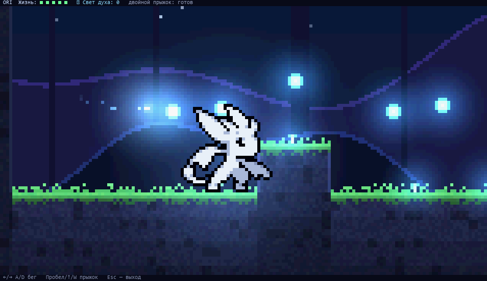
Рис. 20.1. Вверху — жизни и свет духа, на уровне — огоньки света
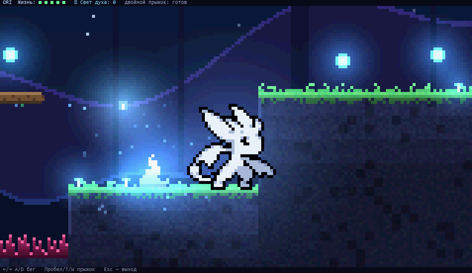
Рис. 20.2. Колодец духа: здесь Ори возродится
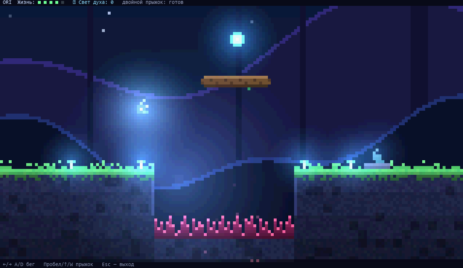
Рис. 20.3. Ори налетел на шипы: жизней стало меньше
ФишкаГладкие полоски
Полоска здоровья из целых клеток █ растёт рывками. Но в UTF-8 есть символы, которые закрашивают 1/8, 2/8 … 7/8 клетки: ▏▎▍▌▋▊▉. Если считать длину полоски в восьмушках, она растёт почти плавно — в восемь раз точнее.
Листинг 20.41. Полоски из восьмушек клетки 20-bars.cpp
// Фишка главы 20: гладкие полоски в тексте. Символы ▏▎▍▌▋▊▉█ закрашивают// 1/8, 2/8 … 8/8 клетки — и полоска здоровья растёт не клетками, а восьмушками.// Сборка из папки игры (файл лежит в папке fishki):// g++ -O2 -std=c++17 -Wall -Wextra fishki\20-bars.cpp -o bars.exe#define WIN32_LEAN_AND_MEAN#define NOMINMAX#include <windows.h>#include <cmath>#include <cstdio>// Восьмушки клетки: EIGHTHS[k] закрашивает k восьмыхconstchar* EIGHTHS[9] = { " ", "▏", "▎", "▍", "▌", "▋", "▊", "▉", "█" };// Полоска шириной width клеток, заполненная на долю value (0..1)staticvoid printBar(float value, int width, int r, int g, int b) {int total = (int)(value * width * 8 + 0.5f); // сколько восьмушек закрасить printf("\x1b[38;2;%d;%d;%dm\x1b[48;2;30;30;45m", r, g, b);for (int cell = 0; cell < width; cell++) {int fill = total - cell * 8; // сколько восьмушек приходится на эту клетку printf("%s", EIGHTHS[fill < 0 ? 0 : (fill > 8 ? 8 : fill)]); } printf("\x1b[0m");}int main() { SetConsoleOutputCP(CP_UTF8);HANDLE out = GetStdHandle(STD_OUTPUT_HANDLE);DWORD mode; GetConsoleMode(out, &mode); SetConsoleMode(out, mode | ENABLE_VIRTUAL_TERMINAL_PROCESSING); printf("\x1b[?25l\n");for (float t = 0; !(GetAsyncKeyState(VK_ESCAPE) & 0x8000); t += 0.03f) {float health = 0.5f + 0.5f * sinf(t);float mana = 0.5f + 0.5f * sinf(t * 1.7f + 1);float light = fmodf(t * 0.2f, 1.0f);// Цвет здоровья плавно переходит от красного к зелёному printf("\r Жизнь "); printBar(health, 30, (int)(255 * (1 - health)), (int)(220 * health), 60); printf(" %3d%%\n", (int)(health * 100)); printf("\r Сила "); printBar(mana, 30, 90, 160, 255); printf(" %3d%%\n", (int)(mana * 100)); printf("\r Свет "); printBar(light, 30, 140, 230, 255); printf(" %3d%%", (int)(light * 100)); printf("\x1b[2A"); // курсор на две строки вверх — в следующий раз рисуем поверх Sleep(30); } printf("\x1b[3B\x1b[?25h\n");return0;}
Это отдельная программа, модули игры ей не нужны. Сохраните её в папку fishki внутри папки игры как fishki\20-bars.cpp и соберите из папки игры:
Жизнь ███████████████████▌ 65%
Сила ██████████▊ 35%
Свет ████████████████████████▊ 82%
Три полоски плавно растут и убывают, а цвет жизни переходит от красного к зелёному. Обратите внимание на команду \x1b[2A — «курсор на две строки вверх»: после трёх строк программа возвращается к первой и рисует поверх, поэтому полоски обновляются на месте. Ещё одна мелочь: здесь Esc проверяется не через _getch, а через GetAsyncKeyState, как keyDown в нашей игре, — программа не ждёт нажатия.
Весь код шага 20Сверьтесь с готовой программой
Все 35 файлов игры после этой главы — целиком. Откройте файл, чтобы сравнить со своим, а кнопка «Копировать» поможет, если нужно догнать: вставьте код в файл с тем же именем в папке игры.
// ============================================================================// camera.cpp — камера следует за Ори и не выходит за края уровня// ============================================================================#include <cmath>#include "camera.h"#include "config.h"#include "game.h"#include "mathx.h"// Не даём камере заглянуть за края уровняstaticvoid clampCamera(Game& g) {Camera& cam = g.camera;float maxX = (float)(g.world.width * TILE - screenWidth());float maxY = (float)(MAP_H * TILE - screenHeight()); cam.x = clampf(cam.x, 0, fmaxf(maxX, 0));// если окно выше уровня, прижимаем уровень к низу экрана cam.y = maxY < 0 ? maxY : clampf(cam.y, 0, maxY);}// Целые координаты камеры для рисованияstaticvoid updateView(Camera& cam) { cam.viewX = (int)floorf(cam.x); cam.viewY = (int)floorf(cam.y);if (cam.shake > 0) { // тряска: сдвигаем картинку на пару пикселей в случайную сторону cam.viewX += (int)randomRange(-2, 2); cam.viewY += (int)randomRange(-2, 2); }}void drawDisc(constCamera& cam, int cx, int cy, int radius, Color c) {for (int y = -radius; y <= radius; y++) {for (int x = -radius; x <= radius; x++) {if (x * x + y * y <= radius * radius + radius) putWorldPixel(cam, cx + x, cy + y, c); } }}void centerCamera(Game& g) {constBody& b = g.player.body; g.camera.x = b.x + b.w / 2.0f - screenWidth() / 2.0f; g.camera.y = b.y + b.h / 2.0f - screenHeight() / 2.0f; g.camera.shake = 0; clampCamera(g); updateView(g.camera);}void updateCamera(Game& g, float dt) {Camera& cam = g.camera;constBody& b = g.player.body;// Цель: Ори в центре экрана, чуть сдвинутый назад — видно, что впередиfloat targetX = b.x + b.w / 2.0f - screenWidth() / 2.0f + g.player.facing * 18;float targetY = b.y + b.h / 2.0f - screenHeight() * 0.55f;// Каждый кадр проходим часть пути до цели — камера движется плавно cam.x = lerpf(cam.x, targetX, clampf(dt * 5, 0, 1)); cam.y = lerpf(cam.y, targetY, clampf(dt * 5, 0, 1)); clampCamera(g);if (cam.shake > 0) cam.shake -= dt; updateView(cam);}
camera.h26 строкcamera.h
// ============================================================================// camera.h — какая часть мира видна на экране, рисование в координатах мира// ============================================================================#pragma once#include "color.h"#include "screen.h"structGame; // описана в game.h — здесь достаточно знать, что такая структура естьstructCamera {float x, y; // левый верхний угол экрана в миреfloat shake; // сколько ещё секунд трясти экранint viewX, viewY; // то же целыми числами (с тряской) — по ним рисуем};// Поставить пиксель по координатам мира: экран = мир − камераinlinevoid putWorldPixel(constCamera& cam, int wx, int wy, Color c) { putPixel(wx - cam.viewX, wy - cam.viewY, c);}// Закрашенный круг в координатах мираvoid drawDisc(constCamera& cam, int cx, int cy, int radius, Color c);void centerCamera(Game& g); // сразу поставить Ори в центр экранаvoid updateCamera(Game& g, float dt); // камера плавно догоняет Ори
color.h34 строкиcolor.h
// ============================================================================// color.h — цвет пикселя. Цвет хранится в одном числе 0xRRGGBB:// по два шестнадцатеричных разряда на красный, зелёный и синий.// ============================================================================#pragma oncetypedefunsignedintColor;// Ограничить канал диапазоном 0..255inlineint clampChannel(int value) {return value < 0 ? 0 : (value > 255 ? 255 : value);}// Собрать цвет из красного, зелёного и синего (каждый 0..255)inlineColor rgb(int r, int g, int b) {return (Color)(clampChannel(r) << 16 | clampChannel(g) << 8 | clampChannel(b));}// Достать каналы обратноinlineint colorR(Color c) { return (c >> 16) & 255; }inlineint colorG(Color c) { return (c >> 8) & 255; }inlineint colorB(Color c) { return c & 255; }// Смешать два цвета: t = 0 — первый цвет, t = 1 — второйinlineColor mixColor(Color a, Color b, float t) {return rgb((int)(colorR(a) + (colorR(b) - colorR(a)) * t), (int)(colorG(a) + (colorG(b) - colorG(a)) * t), (int)(colorB(a) + (colorB(b) - colorB(a)) * t));}// Изменить яркость: k = 0.5 — вдвое темнее, k = 2 — вдвое ярчеinlineColor scaleColor(Color c, float k) {return rgb((int)(colorR(c) * k), (int)(colorG(c) * k), (int)(colorB(c) * k));}
config.h36 строкconfig.h
// ============================================================================// config.h — настройки игры. Все важные числа собраны здесь,// чтобы их было легко найти и поменять.// ============================================================================#pragma once// Картинкаconstint MAX_SCREEN_W = 320; // наибольшая ширина картинки в пикселяхconstint MAX_SCREEN_H = 200; // наибольшая высота картинки в пикселях// Мирconstint TILE = 8; // сторона тайла в пикселяхconstint MAP_H = 22; // высота уровня в тайлахconstint MAX_MAP_W = 160; // ширина самого широкого уровня в тайлах// Движениеconstfloat RUN_SPEED = 95.0f; // скорость бега, пикселей в секундуconstfloat RUN_ACCEL_GROUND = 900.0f; // разгон и торможение на землеconstfloat RUN_ACCEL_AIR = 600.0f; // в воздухе разгоняться труднееconstfloat GRAVITY = 900.0f; // насколько быстро растёт скорость паденияconstfloat JUMP_SPEED = 320.0f; // скорость в начале прыжкаconstfloat MAX_FALL_SPEED = 360.0f; // быстрее падать нельзяconstfloat DOUBLE_JUMP_SPEED = 280.0f; // второй прыжок в воздухе чуть слабееconstfloat COYOTE_TIME = 0.10f; // сколько секунд можно прыгнуть после схода с краяconstfloat JUMP_BUFFER_TIME = 0.12f; // сколько секунд помнится раннее нажатие прыжка// Ориconstint PLAYER_W = 16; // ширина хитбоксаconstint PLAYER_H = 24; // высота хитбоксаconstint MAX_HP = 5; // сколько жизней может быть// Сколько объектов может существовать одновременноconstint MAX_PARTICLES = 800;constint MAX_LIGHTS = 160;constint MAX_PICKUPS = 80;constint MAX_CHECKPOINTS = 10;
console.cpp79 строкconsole.cpp
// ============================================================================// console.cpp — всё, что связано с Windows-консолью, собрано в одном файле// ============================================================================#define WIN32_LEAN_AND_MEAN#define NOMINMAX#include <windows.h>#include <cstring>#include "console.h"// Как была настроена консоль до запуска игрыstaticDWORD originalOutMode = 0;staticDWORD originalInMode = 0;staticUINT originalCodePage = 0;// Ctrl+C или закрытие: consoleRestore сначала останавливает writer.// Обработчик делает ограниченную по времени попытку уборки, затем Windows завершает процесс.staticBOOL WINAPI onConsoleEvent(DWORD) { consoleRestore();return FALSE;}void consoleInit() {HANDLE out = GetStdHandle(STD_OUTPUT_HANDLE);HANDLE in = GetStdHandle(STD_INPUT_HANDLE); GetConsoleMode(out, &originalOutMode); GetConsoleMode(in, &originalInMode); originalCodePage = GetConsoleOutputCP(); SetConsoleMode(out, originalOutMode | ENABLE_PROCESSED_OUTPUT | ENABLE_VIRTUAL_TERMINAL_PROCESSING); SetConsoleMode(in, ENABLE_EXTENDED_FLAGS); // выключить выделение мышью: оно ставит вывод на паузу SetConsoleOutputCP(CP_UTF8); SetConsoleCtrlHandler(onConsoleEvent, TRUE); SetConsoleTitleA("Ori");// Отдельный экран, спрятать курсор, очистить экранconstchar* start = "\x1b[?1049h\x1b[?25l\x1b[2J"; consoleWrite(start, (int)strlen(start));}void consoleRestore() {// Обычные цвета, показать курсор, вернуться на основной экранconstchar* finish = "\x1b[0m\x1b[?25h\x1b[?1049l"; consoleWrite(finish, (int)strlen(finish)); consoleFlushInput(); SetConsoleMode(GetStdHandle(STD_OUTPUT_HANDLE), originalOutMode); SetConsoleMode(GetStdHandle(STD_INPUT_HANDLE), originalInMode); SetConsoleOutputCP(originalCodePage);}bool consoleSize(int& cols, int& rows) { CONSOLE_SCREEN_BUFFER_INFO info;if (!GetConsoleScreenBufferInfo(GetStdHandle(STD_OUTPUT_HANDLE), &info)) {returnfalse; } cols = info.srWindow.Right - info.srWindow.Left + 1; rows = info.srWindow.Bottom - info.srWindow.Top + 1;returntrue;}void consoleFlushInput() { FlushConsoleInputBuffer(GetStdHandle(STD_INPUT_HANDLE));}bool keyDown(int virtualKey) {return (GetAsyncKeyState(virtualKey) & 0x8000) != 0;}bool consoleWrite(constchar* data, int length) {if (length < 0) returnfalse;int sent = 0;while (sent < length) {DWORD written = 0;DWORD remaining = (DWORD)(length - sent);if (!WriteFile(GetStdHandle(STD_OUTPUT_HANDLE), data + sent, remaining, &written, NULL) || written == 0 || written > remaining) returnfalse; sent += (int)written; }returntrue;}
console.h13 строкconsole.h
// ============================================================================// console.h — окно консоли Windows: настройка, размер, клавиши, вывод// ============================================================================#pragma oncevoid consoleInit(); // включить цвета и UTF-8, перейти на отдельный экранvoid consoleRestore(); // вернуть консоль в исходное состояниеbool consoleSize(int& cols, int& rows); // видимый размер окна в символахvoid consoleFlushInput(); // выбросить накопившиеся нажатия клавишbool keyDown(int virtualKey); // зажата ли клавиша прямо сейчас// Полностью записать данные; false — ошибка или неполная записьbool consoleWrite(constchar* data, int length);
// ============================================================================// effects.cpp — пулы частиц и источников света// ============================================================================#include <algorithm>#include <cmath>#include <cstring>#include "config.h"#include "effects.h"#include "mathx.h"struct Particle {float x, y, vx, vy;float life, maxLife; // сколько осталось жить и сколько жила бы всегоColor color;bool gravity; // падает ли вниз};struct Light {float x, y, radius;Color color;float power;};// Пулы: частица с life <= 0 — свободное местоstatic Particle particles[MAX_PARTICLES];static Light lights[MAX_LIGHTS];staticint lightCount = 0;void clearParticles() { memset(particles, 0, sizeof(particles));}void spawnParticle(float x, float y, float vx, float vy, float life, Color color, bool gravity) {for (int i = 0; i < MAX_PARTICLES; i++) {if (particles[i].life <= 0) { particles[i] = { x, y, vx, vy, life, life, color, gravity };return; } }}void burst(float x, float y, int count, Color color, float speed, float life, bool gravity) {for (int i = 0; i < count; i++) {float angle = randomRange(0, 6.2832f);float s = randomRange(speed * 0.3f, speed); spawnParticle(x, y, cosf(angle) * s, sinf(angle) * s, randomRange(life * 0.5f, life), color, gravity); }}void updateParticles(float dt) {for (int i = 0; i < MAX_PARTICLES; i++) { Particle& p = particles[i];if (p.life <= 0) continue; p.life -= dt;if (p.gravity) p.vy += GRAVITY * 0.5f * dt; p.vx *= 1.0f - 1.5f * dt; // сопротивление воздуха p.vy *= 1.0f - 1.5f * dt; p.x += p.vx * dt; p.y += p.vy * dt; }}void drawParticles(constCamera& cam) {for (int i = 0; i < MAX_PARTICLES; i++) {const Particle& p = particles[i];if (p.life <= 0) continue;float strength = clampf(p.life / p.maxLife, 0, 1); // гаснет к концу жизни addPixel((int)roundf(p.x) - cam.viewX, (int)roundf(p.y) - cam.viewY, p.color, strength); }}void clearLights() { lightCount = 0;}void addLight(float x, float y, float radius, Color color, float power) {if (lightCount < MAX_LIGHTS) { lights[lightCount] = { x, y, radius, color, power }; lightCount++; }}void applyLights(constCamera& cam) {for (int i = 0; i < lightCount; i++) {const Light& light = lights[i];int cx = (int)light.x - cam.viewX;int cy = (int)light.y - cam.viewY;int r = (int)light.radius;// Проходим только по квадрату вокруг источника и только по видимой частиint x0 = std::max(0, cx - r), x1 = std::min(screenWidth() - 1, cx + r);int y0 = std::max(0, cy - r), y1 = std::min(screenHeight() - 1, cy + r);for (int y = y0; y <= y1; y++) {for (int x = x0; x <= x1; x++) {float dx = (float)(x - cx), dy = (float)(y - cy);float d = sqrtf(dx * dx + dy * dy) / light.radius; // 0 в центре, 1 на краюif (d >= 1) continue; addPixel(x, y, light.color, (1 - d) * (1 - d) * light.power); } } }}
effects.h19 строкeffects.h
// ============================================================================// effects.h — частицы (искры, пыль) и свет// ============================================================================#pragma once#include "camera.h"#include "color.h"// Частицы: живут несколько долей секунды и гаснутvoid clearParticles();void spawnParticle(float x, float y, float vx, float vy, float life, Color color, bool gravity);void burst(float x, float y, int count, Color color, float speed, float life, bool gravity);void updateParticles(float dt);void drawParticles(constCamera& cam);// Свет: источники собираются заново в каждом кадре, потом накладываются на картинкуvoid clearLights();void addLight(float x, float y, float radius, Color color, float power);void applyLights(constCamera& cam);
game.cpp75 строкgame.cpp
// ============================================================================// game.cpp — загрузка уровней и правила игры: что обновлять в каждом кадре// ============================================================================#include <algorithm>#include <cmath>#include <cstring>#include "effects.h"#include "game.h"#include "input.h"#include "levels.h"// Символ карты — объект? Тогда создаём объект и возвращаем пробел.// Иначе это тайл (камень, бревно, шипы) — он остаётся в карте как есть.staticchar placeObject(Game& g, char symbol, float wx, float wy) {World& w = g.world;switch (symbol) {case'P': w.spawnX = wx; w.spawnY = wy + TILE - PLAYER_H; // ногами на дно клеткиreturn' ';case'o': addPickup(g, PICKUP_LIGHT, wx + 4, wy + 4);return' ';case'+': addPickup(g, PICKUP_HEALTH, wx + 4, wy + 4);return' ';case'C': addCheckpoint(g, wx + 4, wy + TILE);return' ';default:return symbol; }}void loadLevel(Game& g, int index) {const LevelInfo& level = levelInfo(index);World& w = g.world; g.levelIndex = index; g.pickupCount = 0; g.checkpointCount = 0; clearParticles();// Ширина уровня — длина самой длинной строки карты w.width = 0;for (int ty = 0; ty < MAP_H; ty++) { w.width = std::max(w.width, (int)strlen(level.rows[ty])); } w.width = std::min(w.width, MAX_MAP_W);for (int ty = 0; ty < MAP_H; ty++) {int length = (int)strlen(level.rows[ty]);for (int tx = 0; tx < w.width; tx++) {char symbol = tx < length ? level.rows[ty][tx] : ' '; w.tiles[ty][tx] = placeObject(g, symbol, (float)(tx * TILE), (float)(ty * TILE)); } w.tiles[ty][w.width] = 0; // конец строки } placePlayer(g.player, w.spawnX, w.spawnY); centerCamera(g);}void startNewGame(Game& g) { g.player.spiritLight = 0; loadLevel(g, 0);}void updateGame(Game& g, constInput& in, float dt) { g.time += dt; updatePlayer(g, in, dt); updateItems(g); updateParticles(dt); updateCamera(g, dt);}
game.h29 строкgame.h
// ============================================================================// game.h — вся игра в одной структуре Game. Функции получают её по ссылке,// поэтому глобальные переменные не нужны.// ============================================================================#pragma once#include "config.h"#include "camera.h"#include "items.h"#include "player.h"#include "world.h"structInput;structGame {float time; // сколько секунд идёт игра — для анимацийint levelIndex; // номер текущего уровня (с нуля)World world;Camera camera;Player player; Pickup pickups[MAX_PICKUPS];int pickupCount; Checkpoint checkpoints[MAX_CHECKPOINTS];int checkpointCount;};void startNewGame(Game& g);void loadLevel(Game& g, int index);void updateGame(Game& g, constInput& in, float dt);
hud.cpp36 строкhud.cpp
// ============================================================================// hud.cpp — жизни и счёт вверху, подсказка внизу// ============================================================================#include <cstdio>#include "game.h"#include "hud.h"#include "screen.h"constColor HUD_TEXT = rgb(200, 220, 255);constColor HINT_TEXT = rgb(130, 140, 170);// Верхняя строка: жизни, свет духа и подсказка про двойной прыжокstaticvoid drawTopLine(constGame& g) {constPlayer& p = g.player; textAdd(LINE_TOP, " ORI Жизнь: ", HUD_TEXT);for (int i = 0; i < MAX_HP; i++) { textAdd(LINE_TOP, "■ ", i < p.hp ? rgb(110, 255, 150) : rgb(50, 60, 70)); } textAdd(LINE_TOP, " ◆ Свет духа: ", rgb(140, 220, 255)); textAddInt(LINE_TOP, p.spiritLight, rgb(140, 220, 255));if (screenWidth() >= 80) { textAdd(LINE_TOP, p.canDoubleJump ? " двойной прыжок: готов" : " двойной прыжок: —", rgb(150, 160, 190)); }}// Нижняя строка — подсказка по управлению (короче, если окно узкое)staticvoid drawBottomLine() {int w = screenWidth();if (w >= 60) textAdd(LINE_BOTTOM, " ←/→ A/D бег Пробел/↑/W прыжок Esc — выход", HINT_TEXT);}void drawHud(constGame& g) { drawTopLine(g); drawBottomLine();}
hud.h8 строкhud.h
// ============================================================================// hud.h — строки текста над и под картинкой и надписи поверх неё// ============================================================================#pragma oncestructGame;void drawHud(constGame& g);
// ============================================================================// input.h — какие кнопки управления нажаты// ============================================================================#pragma once// Одна кнопка управленияstructKey {bool held; // зажата сейчасbool pressed; // нажата именно в этом кадре (в прошлом кадре не была зажата)};structInput {Key left;Key right;Key jump;Key quit;};void readInput(Input& in);
// ============================================================================// items.h — предметы на уровне: свет духа, ячейки жизни, колодцы// ============================================================================#pragma oncestructGame;enum PickupType { PICKUP_LIGHT, // свет духа — очки PICKUP_HEALTH, // ячейка жизни};struct Pickup {float x, y; // центр предмета PickupType type;bool taken; // уже подобран};// Колодец духа — место, где Ори возродитсяstruct Checkpoint {float x, y; // середина основания колодцаbool active; // это последний колодец, которого коснулся Ори};void addPickup(Game& g, PickupType type, float x, float y);void addCheckpoint(Game& g, float x, float y);void updateItems(Game& g); // Ори подбирает предметы и зажигает колодцыvoid drawItems(constGame& g);
levels.cpp50 строкlevels.cpp
// ============================================================================// levels.cpp — карты уровней. Каждый символ — тайл 8 × 8 пикселей:// # — камень, = — бревно, ^ — шипы, P — старт Ори// o — свет духа, + — ячейка жизни, C — колодец (точка возрождения)// ============================================================================#include "config.h"#include "levels.h"// Лес Нибельstaticconstchar* LEVEL1[MAP_H] = {"## ##################### ##","## ##################### ##","## ##################### ##","## ##################### B ##","## ##################### ##","## ##################### o o + ##","## ##################### ##","## ##################### o C S S ##","## B ##################### ################# ##","## + === ################# o ##","## o o B o ################# B ##","## o === ################# S ##","## o o o o o o o B ===########################### ##","## o === ########################### ##","## o o o o === ########### C S S ########################### ##","## ########### #################### === ########################### ##","## P ### ########### #################### o o o ########################### ##","## ### S C ########### #################### ^^ ########################### T ##","############################### ################### ################################### ##############################################","############################### ################### ################################### ##############################################","###############################^^^^^^###################^^^^^^^^^^^^^^^###################################^^^^^^^^##############################################","################################################################################################################################################################",};// Все уровни по порядкуstaticconst LevelInfo LEVELS[] = { { "Лес Нибель", LEVEL1, rgb(6, 8, 28), rgb(24, 46, 84), // небо rgb(30, 28, 72), rgb(13, 18, 42), // холмы rgb(38, 44, 80), rgb(96, 220, 120), // камень и мохtrue },};int levelCount() {returnsizeof(LEVELS) / sizeof(LEVELS[0]);}const LevelInfo& levelInfo(int index) {return LEVELS[index];}
levels.h18 строкlevels.h
// ============================================================================// levels.h — описания уровней: карта, название и цвета// ============================================================================#pragma once#include "color.h"struct LevelInfo {constchar* name; // название уровняconstchar* const* rows; // карта: MAP_H строк из символовColor skyTop, skyBottom; // небо: цвет вверху и у горизонтаColor hillFar, hillNear; // силуэты дальних и ближних холмовColor rock, moss; // камень и мох на нёмbool stars; // есть ли звёзды на небе};int levelCount(); // сколько всего уровнейconst LevelInfo& levelInfo(int index); // описание уровня по номеру (с нуля)
main.cpp47 строкmain.cpp
// ============================================================================// ORI — консольная игра-платформер, вид сбоку.// Картинка рисуется пикселями из символов '▀' и ANSI-цветов.// Без классов: только данные (структуры) и функции.//// Сборка: build.bat; отладочная сборка: debug.bat.// В скриптах перечислены только исходники игры этого шага.// ============================================================================#include <chrono>#include <thread>#include "console.h"#include "game.h"#include "input.h"#include "render.h"#include "screen.h"int main() { consoleInit(); screenFitToConsole();staticGame game; // вся игра; static — чтобы большая структура не лежала на стеке startNewGame(game);Input input = {};constauto FRAME_TIME = std::chrono::milliseconds(25); // 25 мс — около 40 кадров в секундуauto previous = std::chrono::steady_clock::now();while (true) {auto frameStart = std::chrono::steady_clock::now();float dt = std::chrono::duration<float>(frameStart - previous).count(); previous = frameStart;if (dt > 0.05f) dt = 0.05f; // после долгой паузы не прыгаем далеко вперёд screenFitToConsole(); consoleFlushInput(); readInput(input);if (input.quit.pressed) break; updateGame(game, input, dt); renderGame(game); screenPresent();auto elapsed = std::chrono::steady_clock::now() - frameStart;if (elapsed < FRAME_TIME) std::this_thread::sleep_for(FRAME_TIME - elapsed); } consoleRestore();return0;}
mathx.cpp12 строкmathx.cpp
// ============================================================================// mathx.cpp — генератор случайных чисел// ============================================================================#include "mathx.h"// Состояние генератора: из него получается следующее «случайное» числоstaticunsignedint randomSeed = 12345u;float randomRange(float a, float b) { randomSeed = randomSeed * 1664525u + 1013904223u;return a + (b - a) * ((randomSeed >> 8) / 16777216.0f);}
mathx.h22 строкиmathx.h
// ============================================================================// mathx.h — маленькие математические помощники// ============================================================================#pragma once// Зажать число между lo и hiinlineint clampi(int v, int lo, int hi) { return v < lo ? lo : (v > hi ? hi : v); }inlinefloat clampf(float v, float lo, float hi) { return v < lo ? lo : (v > hi ? hi : v); }// Плавный переход: t = 0 — a, t = 1 — b, t = 0.5 — ровно посерединеinlinefloat lerpf(float a, float b, float t) { return a + (b - a) * t; }// «Случайное», но всегда одинаковое число для пары координат.// Нужно для текстур: камень не должен «кипеть» от кадра к кадру.inlineunsignedint hash2(int x, int y) {unsignedint h = (unsignedint)x * 374761393u + (unsignedint)y * 668265263u; h = (h ^ (h >> 13)) * 1274126177u;return h ^ (h >> 16);}// Случайное число от a до b — при каждом вызове новоеfloat randomRange(float a, float b);
physics.cpp87 строкphysics.cpp
// ============================================================================// physics.cpp — движение и столкновения с тайлами// ============================================================================#include <cmath>#include "config.h"#include "physics.h"Body makeBody(float x, float y, int w, int h) {Body b; b.x = x; b.y = y; b.vx = 0; b.vy = 0; b.w = w; b.h = h; b.onGround = false; b.hitWall = false;return b;}bool rectSolid(constWorld& world, float x, float y, float w, float h) {// Номера тайлов, которые задевает прямоугольник. 0.01 — чтобы прямоугольник,// стоящий ровно на границе тайла, не считался залезшим в соседний.int tx0 = (int)floorf(x / TILE), tx1 = (int)floorf((x + w - 0.01f) / TILE);int ty0 = (int)floorf(y / TILE), ty1 = (int)floorf((y + h - 0.01f) / TILE);for (int ty = ty0; ty <= ty1; ty++) {for (int tx = tx0; tx <= tx1; tx++) {if (isSolidTile(tileAt(world, tx, ty))) returntrue; } }returnfalse;}bool rectTouchesTile(constWorld& world, float x, float y, float w, float h, char tile) {int tx0 = (int)floorf(x / TILE), tx1 = (int)floorf((x + w - 0.01f) / TILE);int ty0 = (int)floorf(y / TILE), ty1 = (int)floorf((y + h - 0.01f) / TILE);for (int ty = ty0; ty <= ty1; ty++) {for (int tx = tx0; tx <= tx1; tx++) {if (tileAt(world, tx, ty) == tile) returntrue; } }returnfalse;}bool rectsOverlap(float ax, float ay, float aw, float ah, float bx, float by, float bw, float bh) {return ax < bx + bw && ax + aw > bx && ay < by + bh && ay + ah > by;}void moveBody(constWorld& world, Body& b, float dt) { b.onGround = false; b.hitWall = false;// Большой сдвиг делим на шаги не длиннее 3 пикселей,// иначе быстрое тело может проскочить сквозь тонкую стенуfloat maxMove = fmaxf(fabsf(b.vx), fabsf(b.vy)) * dt;int steps = (int)ceilf(maxMove / 3.0f);if (steps < 1) steps = 1;float stepDt = dt / steps;for (int s = 0; s < steps; s++) {// Сначала по горизонталиfloat nx = b.x + b.vx * stepDt;if (rectSolid(world, nx, b.y, (float)b.w, (float)b.h)) {if (b.vx > 0) { nx = floorf((nx + b.w) / TILE) * TILE - b.w; // прижаться к стене справа } else { nx = (floorf(nx / TILE) + 1) * TILE; // прижаться к стене слева } b.vx = 0; b.hitWall = true; } b.x = nx;// Потом по вертикалиfloat ny = b.y + b.vy * stepDt;if (rectSolid(world, b.x, ny, (float)b.w, (float)b.h)) {if (b.vy > 0) { ny = floorf((ny + b.h) / TILE) * TILE - b.h; // встали на пол b.onGround = true; } else { ny = (floorf(ny / TILE) + 1) * TILE; // ударились о потолок } b.vy = 0; } b.y = ny; }}
physics.h28 строкphysics.h
// ============================================================================// physics.h — тела, которые двигаются и сталкиваются с тайлами// ============================================================================#pragma once#include "world.h"structBody {float x, y; // левый верхний угол хитбокса в миреfloat vx, vy; // скорость, пикселей в секунду (vy > 0 — вниз)int w, h; // размер хитбоксаbool onGround; // стоит на чём-то твёрдомbool hitWall; // в этом кадре упёрлось в стену};Body makeBody(float x, float y, int w, int h); // неподвижное тело в точке (x, y)// Есть ли твёрдые тайлы в прямоугольникеbool rectSolid(constWorld& world, float x, float y, float w, float h);// Сдвинуть тело на скорость × dt, не пуская его в твёрдые тайлыvoid moveBody(constWorld& world, Body& body, float dt);// Касается ли прямоугольник тайла нужного вида (например, шипов)bool rectTouchesTile(constWorld& world, float x, float y, float w, float h, char tile);// Пересекаются ли два прямоугольникаbool rectsOverlap(float ax, float ay, float aw, float ah, float bx, float by, float bw, float bh);
// ============================================================================// player.h — Ори: управление, прыжки, жизни// ============================================================================#pragma once#include "physics.h"structGame; // описаны в других файлах — здесь достаточно объявленийstructInput;structPlayer {Body body; // положение, скорость и хитбоксint facing; // куда смотрит: -1 влево, 1 вправоfloat animTime; // время для анимации бегаbool canDoubleJump; // прыжок в воздухе ещё не потраченfloat coyoteTime; // сколько ещё можно прыгнуть после схода с краяfloat jumpBuffer; // сколько ещё помнить раннее нажатие прыжкаint hp; // жизниint spiritLight; // собранный свет духаfloat invulnerable; // сколько ещё секунд Ори неуязвим после удараfloat knockback; // сколько ещё секунд Ори отброшен ударомfloat respawnX, respawnY; // где возродиться — у последнего колодцаfloat seinX, seinY; // Сейн — огонёк-спутник};// Поставить Ори в точку (x, y) и сбросить его состояние (жизни, прыжки...)void placePlayer(Player& player, float x, float y);void updatePlayer(Game& g, constInput& in, float dt);void drawPlayer(constGame& g);void hurtPlayer(Game& g, float fromX, float kickY); // удар: fromX — откуда пришёл ударvoid respawnPlayer(Game& g); // вернуть Ори к колодцуvoid drawSein(constGame& g);
render.cpp197 строкrender.cpp
// ============================================================================// render.cpp — фон, тайлы и порядок рисования кадра// ============================================================================#include <cmath>#include "effects.h"#include "game.h"#include "hud.h"#include "levels.h"#include "mathx.h"#include "render.h"#include "screen.h"// Фон из трёх слоёв, которые движутся медленнее камеры (параллакс):// дальние холмы, стволы деревьев и ближние холмыstaticvoid drawBackground(constGame& g) {const LevelInfo& level = levelInfo(g.levelIndex);constCamera& cam = g.camera;int w = screenWidth(), h = screenHeight();// Высоты холмов и стволы считаем один раз на столбец — синус считается долгоfloat farHill[MAX_SCREEN_W], nearHill[MAX_SCREEN_W];bool trunk[MAX_SCREEN_W];for (int x = 0; x < w; x++) {float farX = x + cam.viewX * 0.25f; // дальний слой движется в 4 раза медленнее farHill[x] = 70 + 16 * sinf(farX * 0.021f) + 8 * sinf(farX * 0.057f + 1.3f);float nearX = x + cam.viewX * 0.55f; nearHill[x] = 118 + 12 * sinf(nearX * 0.033f + 2.0f) + 5 * sinf(nearX * 0.09f);int cell = (int)floorf(nearX / 40); // одно дерево на каждые 40 пикселейfloat center = cell * 40.0f + (float)(hash2(cell, 7) % 24) + 8;float halfWidth = 1.0f + (float)(hash2(cell, 9) % 3); trunk[x] = fabsf(nearX - center) <= halfWidth; }Color farRim = scaleColor(level.hillFar, 1.7f); // контровой свет на гребне холмаColor nearRim = scaleColor(level.hillNear, 2.8f);Color trunkColor = scaleColor(level.hillNear, 1.25f);for (int y = 0; y < h; y++) {float worldY = (float)(y + cam.viewY);Color sky = mixColor(level.skyTop, level.skyBottom, clampf((worldY + 40) / (MAP_H * TILE + 60.0f), 0, 1));float farY = y + cam.viewY * 0.4f + 24;float nearY = y + cam.viewY * 0.7f + 10;for (int x = 0; x < w; x++) {Color c = sky;if (level.stars && worldY < 100) { // звезда — редкий пиксель, который мерцаетunsignedint star = hash2((int)(x + cam.viewX * 0.08f), (int)(y + cam.viewY * 0.08f));if (star % 500 == 0) {float twinkle = 0.5f + 0.5f * sinf(g.time * 2 + (star >> 10) % 100); c = mixColor(c, rgb(200, 220, 255), 0.3f + 0.6f * twinkle); } }if (farY > farHill[x]) c = (farY - farHill[x] < 1.5f) ? farRim : mixColor(level.hillFar, sky, 0.25f);if (trunk[x] && nearY < nearHill[x] + 4) c = trunkColor;if (nearY > nearHill[x]) c = (nearY - nearHill[x] < 1.5f) ? nearRim : level.hillNear; putPixel(x, y, c); } }}// Цвет пикселя (lx, ly) внутри тайла (tx, ty). opaque = false — пиксель прозрачный.staticColor tileColor(constGame& g, char tile, int tx, int ty, int lx, int ly, bool& opaque) {constWorld& world = g.world;int wx = tx * TILE + lx, wy = ty * TILE + ly;unsignedint noise = hash2(wx, wy); opaque = true;if (tile == '#') {const LevelInfo& level = levelInfo(g.levelIndex);int n = (int)(noise % 13) - 6; // зернистость: каждый пиксель чуть светлее или темнееColor c = rgb(colorR(level.rock) + n, colorG(level.rock) + n, colorB(level.rock) + n);if (hash2(wx / 3, wy / 3) % 9 == 0) c = scaleColor(c, 0.75f); // трещины// Тайл смотрит на соседей: края, тени и мохbool emptyUp = !isSolidTile(tileAt(world, tx, ty - 1));bool emptyLeft = !isSolidTile(tileAt(world, tx - 1, ty));bool emptyRight = !isSolidTile(tileAt(world, tx + 1, ty));bool emptyDown = !isSolidTile(tileAt(world, tx, ty + 1));if ((emptyLeft && lx == 0) || (emptyRight && lx == 7)) c = scaleColor(level.rock, 1.55f);if (emptyDown && ly == 7) c = scaleColor(level.rock, 0.55f);if (emptyUp) {Color grass = rgb(colorR(level.moss) + n * 2, colorG(level.moss) + n, colorB(level.moss));if (ly == 0) c = grass;elseif (ly == 1) c = scaleColor(grass, 0.78f);elseif (ly == 2 && noise % 3 != 0) c = scaleColor(level.moss, 0.5f);elseif (ly == 3 && noise % 3 == 0) c = scaleColor(level.moss, 0.45f); } else {// Чем глубже в скале, тем темнееint depth = 1 + isSolidTile(tileAt(world, tx, ty - 2)) + isSolidTile(tileAt(world, tx, ty - 3)); c = scaleColor(c, 1.0f - depth * 0.12f); }return c; }if (tile == '=') {// Бревно: светлый верх, кора с наклонными штрихами, снизу свисает мохbool leftEnd = tileAt(world, tx - 1, ty) != '=';bool rightEnd = tileAt(world, tx + 1, ty) != '=';bool corner = (leftEnd && lx == 0) || (rightEnd && lx == 7);if (ly == 0 || ly == 3) {if (corner) { // скруглённые концы opaque = false;return0; }return ly == 0 ? rgb(160, 122, 80) : rgb(70, 48, 32); }if (ly <= 2) return (wx + ly * 3) % 5 == 0 ? rgb(84, 58, 40) : rgb(112, 80, 52);unsignedint moss = hash2(wx, 77);if (moss % 4 == 0 && ly < 4 + (int)(moss >> 8) % 4) return rgb(50, 150, 100); opaque = false;return0; }if (tile == '^') {// Шипы: у каждого столбца своя высота колючкиstaticconstint SPIKE_HEIGHT[8] = { 3, 6, 8, 5, 2, 7, 4, 6 };int spike = SPIKE_HEIGHT[(lx + tx * 3) % 8];int up = 7 - ly;if (up < spike) {if (up == spike - 1) return rgb(250, 100, 160); // ярко-розовый кончикreturn mixColor(rgb(70, 15, 45), rgb(180, 45, 110), up / 7.0f); }if (ly >= 6) return rgb(60, 15, 40); opaque = false;return0; } opaque = false;return0;}// Трава и светящийся гриб в пустой клетке над камнемstaticvoid drawGrass(constGame& g, int tx, int ty) {constCamera& cam = g.camera;for (int lx = 0; lx < TILE; lx++) {int wx = tx * TILE + lx;unsignedint h = hash2(wx, ty * 31);if (h % 3 != 0) putWorldPixel(cam, wx, ty * TILE + 7, rgb(80, 200, 110));if (h % 4 == 0) putWorldPixel(cam, wx, ty * TILE + 6, rgb(110, 225, 130));if (h % 13 == 0) putWorldPixel(cam, wx, ty * TILE + 5, rgb(120, 240, 150)); }if (hash2(tx, ty) % 9 != 0) return; // гриб растёт в каждой девятой клеткеint mx = tx * TILE + 3, my = ty * TILE; putWorldPixel(cam, mx, my + 7, rgb(200, 200, 225)); putWorldPixel(cam, mx, my + 6, rgb(200, 200, 225)); putWorldPixel(cam, mx - 1, my + 5, rgb(90, 200, 255)); putWorldPixel(cam, mx, my + 5, rgb(160, 235, 255)); putWorldPixel(cam, mx + 1, my + 5, rgb(90, 200, 255)); addLight((float)mx, (float)(my + 5), 14, rgb(60, 150, 220), 0.6f);}staticvoid drawTiles(constGame& g) {constCamera& cam = g.camera;// Рисуем только видимые тайлы и по одному запасному с каждой стороныint tx0 = cam.viewX / TILE - 1, tx1 = (cam.viewX + screenWidth()) / TILE + 1;int ty0 = (int)floorf(cam.viewY / (float)TILE) - 1, ty1 = (cam.viewY + screenHeight()) / TILE + 1;for (int ty = ty0; ty <= ty1; ty++) {if (ty < 0 || ty >= MAP_H) continue;for (int tx = tx0; tx <= tx1; tx++) {char tile = tileAt(g.world, tx, ty);if (tile == ' ') {if (tileAt(g.world, tx, ty + 1) == '#') drawGrass(g, tx, ty);continue; }for (int ly = 0; ly < TILE; ly++) {for (int lx = 0; lx < TILE; lx++) {bool opaque;Color c = tileColor(g, tile, tx, ty, lx, ly, opaque);if (opaque) putWorldPixel(cam, tx * TILE + lx, ty * TILE + ly, c); } } } }}// Свет от движущихся объектов и светлячковstaticvoid addActorLights(constGame& g) {constPlayer& p = g.player;float cx = p.body.x + p.body.w / 2.0f, cy = p.body.y + p.body.h / 2.0f; addLight(cx, cy, 50, rgb(60, 100, 150), 0.8f); // Ори светится addLight(p.seinX, p.seinY, 22, rgb(120, 200, 255), 0.8f); // и Сейнfor (int i = 0; i < 24; i++) { // светлячки медленно плавают по синусам и мигаютfloat fx = (float)(hash2(i, 1) % (g.world.width * TILE)) + sinf(g.time * 0.5f + i) * 20;float fy = (float)(hash2(i, 2) % (MAP_H * TILE - 40)) + sinf(g.time * 0.7f + i * 2) * 10;float blink = 0.5f + 0.5f * sinf(g.time * 3 + i * 1.7f); addPixel((int)fx - g.camera.viewX, (int)fy - g.camera.viewY, rgb(200, 255, 140), blink); addLight(fx, fy, 8, rgb(110, 160, 60), blink * 0.5f); }}void renderGame(constGame& g) { clearLights(); drawBackground(g); drawTiles(g); drawItems(g); addActorLights(g); // свет кладём до персонажей, чтобы они остались чёткими applyLights(g.camera); drawPlayer(g); drawSein(g); drawParticles(g.camera); drawHud(g);}
render.h8 строкrender.h
// ============================================================================// render.h — рисование кадра целиком// ============================================================================#pragma oncestructGame;void renderGame(constGame& g); // нарисовать мир, персонажей и текст в картинку экрана
screen.cpp200 строкscreen.cpp
// ============================================================================// screen.cpp — картинка в памяти и её вывод в консоль ANSI-командами.// Одна клетка консоли = два пикселя: символ '▀' рисует верхний пиксель// цветом текста, а нижний остаётся цветом фона.// ============================================================================#include <cstdio>#include <cstring>#include "config.h"#include "console.h"#include "mathx.h"#include "screen.h"// ---------------------------------------------------------------------------// Данные модуля (static — видны только в этом файле)// ---------------------------------------------------------------------------staticColor pixels[MAX_SCREEN_H][MAX_SCREEN_W];staticint width = 120; // размер картинки в пикселях, подстраивается под окноstaticint height = 70;staticint consoleCols = 0;staticint consoleRows = 0;// Текст кадра: строки над и под картинкойconstint MAX_SEGMENTS = 32;constint MAX_TEXT = 128;struct TextSegment {char text[MAX_TEXT];Color color;};static TextSegment lineSegments[2][MAX_SEGMENTS];staticint lineSegmentCount[2] = { 0, 0 };// Сюда собирается весь текст кадра вместе с ANSI-командамиstaticchar out[4 * 1024 * 1024];staticint outLength = 0;// ---------------------------------------------------------------------------// Размер и пиксели// ---------------------------------------------------------------------------bool screenFitToConsole() {int cols, rows;if (!consoleSize(cols, rows)) returnfalse;if (cols == consoleCols && rows == consoleRows) returnfalse; consoleCols = cols; consoleRows = rows;// На столбец уже окна: символ в последнем столбце переносит курсор на новую строку width = clampi(cols - 1, 40, MAX_SCREEN_W);// Две строки занимает текст, в каждой строке консоли два пикселя; высота чётная height = clampi((rows - 2) * 2, 40, MAX_SCREEN_H) & ~1;constchar* clear = "\x1b[0m\x1b[2J"; consoleWrite(clear, (int)strlen(clear));returntrue;}int screenWidth() { return width; }int screenHeight() { return height; }void putPixel(int x, int y, Color c) {if (x >= 0 && y >= 0 && x < width && y < height) { pixels[y][x] = c; }}void addPixel(int x, int y, Color c, float strength) {if (x < 0 || y < 0 || x >= width || y >= height) return;Color old = pixels[y][x]; pixels[y][x] = rgb(colorR(old) + (int)(colorR(c) * strength), colorG(old) + (int)(colorG(c) * strength), colorB(old) + (int)(colorB(c) * strength));}void dimScreen(float k) {for (int y = 0; y < height; y++) {for (int x = 0; x < width; x++) { pixels[y][x] = scaleColor(pixels[y][x], k); } }}// ---------------------------------------------------------------------------// Текст// ---------------------------------------------------------------------------void textAdd(TextLine line, constchar* text, Color color) {int& count = lineSegmentCount[line];if (count >= MAX_SEGMENTS) return; snprintf(lineSegments[line][count].text, MAX_TEXT, "%s", text); lineSegments[line][count].color = color; count++;}void textAddInt(TextLine line, int value, Color color) {char buffer[16]; snprintf(buffer, sizeof(buffer), "%d", value); textAdd(line, buffer, color);}// ---------------------------------------------------------------------------// Сборка кадра из ANSI-команд// ---------------------------------------------------------------------------staticvoid emit(constchar* s) {int n = (int)strlen(s); memcpy(out + outLength, s, n); outLength += n;}// Число цифрами — вручную: так быстрее, чем через snprintfstaticvoid emitInt(int value) {char digits[12];int n = 0;if (value < 0) { out[outLength++] = '-'; value = -value; }do { digits[n++] = (char)('0' + value % 10); value /= 10; } while (value > 0);while (n > 0) { out[outLength++] = digits[--n]; }}// Команда цвета: фона (background = true) или текстаstaticvoid emitColor(bool background, Color c) { emit(background ? "\x1b[48;2;" : "\x1b[38;2;"); emitInt(colorR(c)); emit(";"); emitInt(colorG(c)); emit(";"); emitInt(colorB(c)); emit("m");}staticvoid emitLine(TextLine line) { emitColor(true, rgb(8, 10, 24));for (int i = 0; i < lineSegmentCount[line]; i++) { emitColor(false, lineSegments[line][i].color); emit(lineSegments[line][i].text); } emit("\x1b[K\x1b[0m"); // закрасить строку до конца и сбросить цвета}staticvoid emitPixels() {Color lastFg = 0xFFFFFFFF; // какой цвет текста сейчас включён (такого цвета не бывает — «никакой»)Color lastBg = 0xFFFFFFFF;for (int y = 0; y + 1 < height; y += 2) {for (int x = 0; x < width; x++) {// Огрубляем цвета: глаз разницы не видит, а одинаковых соседей большеColor top = pixels[y][x] & 0xF8F8F8;Color bottom = pixels[y + 1][x] & 0xF8F8F8;if (top == bottom) {// Оба пикселя одинаковые — хватит пробела с цветом фонаif (bottom != lastBg) { emitColor(true, bottom); lastBg = bottom; } out[outLength++] = ' '; } else {if (top != lastFg) { emitColor(false, top); lastFg = top; }if (bottom != lastBg) { emitColor(true, bottom); lastBg = bottom; } emit("\xE2\x96\x80"); // ▀ } } emit("\x1b[0m\r\n"); lastFg = 0xFFFFFFFF; lastBg = 0xFFFFFFFF; }}void screenPresent() {int availableCols, availableRows;if (consoleSize(availableCols, availableRows) && (availableCols < screenWidth() + 1 || availableRows < screenHeight() / 2 + 2)) {constchar* warning = "\x1b[0m\x1b[2J\x1b[HУвеличьте окно консоли";// In a very narrow window use a short ASCII hint to avoid wrapping.if (availableCols < 24) warning = "\x1b[0m\x1b[2J\x1b[HResize";if (availableCols < 7) warning = "\x1b[0m\x1b[2J"; consoleWrite(warning, (int)strlen(warning)); lineSegmentCount[0] = lineSegmentCount[1] = 0;return; } outLength = 0; emit("\x1b[H"); // курсор в левый верхний угол: рисуем поверх прошлого кадра emitLine(LINE_TOP); emit("\r\n"); emitPixels(); emitLine(LINE_BOTTOM); consoleWrite(out, outLength);// Текст задаётся заново в каждом кадре lineSegmentCount[LINE_TOP] = 0; lineSegmentCount[LINE_BOTTOM] = 0;}
screen.h22 строкиscreen.h
// ============================================================================// screen.h — картинка из пикселей и строки текста над и под ней.// Сначала рисуем кадр в памяти, потом screenPresent() показывает его целиком.// ============================================================================#pragma once#include "color.h"bool screenFitToConsole(); // подогнать размер картинки под окно; true — размер изменилсяint screenWidth();int screenHeight();void putPixel(int x, int y, Color c);void addPixel(int x, int y, Color c, float strength); // прибавить цвет — так рисуется светvoid dimScreen(float k); // затемнить всю картинку// Текст: строка над картинкой и строка под нейenum TextLine { LINE_TOP, LINE_BOTTOM };void textAdd(TextLine line, constchar* text, Color color);void textAddInt(TextLine line, int value, Color color);void screenPresent(); // показать кадр в консоли
sprites.cpp28 строкsprites.cpp
// ============================================================================// sprites.cpp — рисование спрайтов// ============================================================================#include "sprites.h"// Найти цвет символа в палитре. false — такого символа нет.staticbool findColor(const Sprite& sprite, char symbol, Color& color) {for (int k = 0; sprite.keys[k] != 0; k++) {if (sprite.keys[k] == symbol) { color = sprite.colors[k];returntrue; } }returnfalse;}void drawSprite(constCamera& cam, const Sprite& sprite, int wx, int wy, bool flip, bool flash) {for (int y = 0; y < sprite.h; y++) {for (int x = 0; x < sprite.w; x++) {// При отражении читаем строку справа налевоchar symbol = sprite.rows[y][flip ? (sprite.w - 1 - x) : x];Color color;if (symbol == '.' || !findColor(sprite, symbol, color)) continue;if (flash) color = mixColor(color, rgb(255, 255, 255), 0.75f); putWorldPixel(cam, wx + x, wy + y, color); } }}
sprites.h17 строкsprites.h
// ============================================================================// sprites.h — картинки персонажей, записанные символами// ============================================================================#pragma once#include "camera.h"#include "color.h"struct Sprite {int w, h; // размер в пикселяхconstchar* const* rows; // строки картинки; '.' — прозрачный пиксельconstchar* keys; // какие символы встречаются в картинкеconstColor* colors; // каким цветом рисовать каждый символ из keys};// Нарисовать спрайт в мире. flip — отразить по горизонтали, flash — высветлить (после удара)void drawSprite(constCamera& cam, const Sprite& sprite, int wx, int wy, bool flip, bool flash);
world.cpp14 строкworld.cpp
// ============================================================================// world.cpp — доступ к тайлам уровня// ============================================================================#include "world.h"char tileAt(constWorld& world, int tx, int ty) {if (tx < 0 || tx >= world.width) return'#';if (ty < 0 || ty >= MAP_H) return' ';return world.tiles[ty][tx];}bool isSolidTile(char tile) {return tile == '#' || tile == '=' || tile == '^';}
world.h18 строкworld.h
// ============================================================================// world.h — загруженный уровень: тайлы и особые места на нём// ============================================================================#pragma once#include "config.h"structWorld {char tiles[MAP_H][MAX_MAP_W + 1]; // символы тайлов; объекты заменены пробеламиint width; // ширина уровня в тайлахfloat spawnX, spawnY; // где Ори появляется в начале уровня};// Тайл в клетке (tx, ty). За левым и правым краем — стена, сверху и снизу — пустота.char tileAt(constWorld& world, int tx, int ty);// Твёрдый ли тайл: сквозь твёрдые нельзя пройтиbool isSolidTile(char tile);
Задания
Часть II. Ори в мире пикселей
Глава 21Враги: слизни и летучие мыши
В лесу становится опасно. В этой главе появятся два вида врагов: слизни, которые ползают по платформам и разворачиваются у края обрыва, и летучие мыши, которые кружат у гнезда, а заметив Ори, бросаются за ним. Касание врага ранит Ори — но если прыгнуть на врага сверху, ранен будет враг.
Разбираемся
Столкновения и порядок
Сначала предскажите один кадр без графики: слизень идёт к стене → следующая клетка занята → направление меняется → позиция остаётся допустимой. Затем проверьте слизня в игре. Отдельно проверьте контакт героя с врагом сбоку, сверху и снизу, касание во время неуязвимости и движение летучей мыши. Правило урона берите из функции столкновения, а не из вида спрайта: урон сверху засчитывается только при выполнении условия stomp, разобранного ниже; одного внешнего вида касания недостаточно. Порядок вызовов смотрите в updateGame: сначала меняются положения, затем проверяется контакт с актуальными координатами. Не вызывайте обновление одного врага дважды за кадр.
Поведение врага — это функция
У каждого врага одни и те же данные: где он, сколько у него жизней, куда смотрит. А поведение у разных видов разное. Поэтому заводим одну структуру Enemy с полем type и для каждого вида — свою функцию обновления:
Фрагмент кода — место вставки указано в тексте
if (e.type == ENEMY_SLIME) {
updateSlime(g, e, dt);
} elseif (e.type == ENEMY_BAT) {
updateBat(g, e, dt);
}
Правила, по которым враг решает, что делать, называют искусственным интеллектом (ИИ) врага. Звучит громко, но у нас это несколько простых if: «впереди стена — развернись», «Ори близко — лети к нему».
Где обрыв
Слизень не должен падать с платформы. Как ему узнать, что впереди обрыв? Посмотреть на тайл чуть впереди и чуть ниже ног: если он не твёрдый — дальше пустота, пора разворачиваться.
Летучей мыши нужно лететь к Ори. Разница координат (dx, dy) — это стрелка от мыши к Ори. Но её длина зависит от расстояния: далеко — стрелка длинная, близко — короткая. Нам же нужно только направление, а скорость мы зададим сами.
sqrtf из <cmath> возвращает квадратный корень: например, sqrtf(25.0f) даёт 5.0. Длину стрелки считаем по теореме Пифагора: distance = sqrt(dx² + dy²). Если поделить dx и dy на distance, получится стрелка того же направления, но длиной ровно 1. Это называется нормализовать вектор. Теперь её можно умножить на любую нужную скорость:
Фрагмент кода — место вставки указано в тексте
float dx = playerX - batX, dy = playerY - batY;
float distance = sqrtf(dx * dx + dy * dy);
float ax = dx / fmaxf(distance, 1.0f) * 120; // разгон 120 пикселей/с² в сторону Ориfloat ay = dy / fmaxf(distance, 1.0f) * 120;
fmaxf(distance, 1.0f) защищает от деления на ноль, когда мышь и Ори в одной точке. Этот приём — нормализация — понадобится нам ещё не раз, уже в следующей главе.
Тем же способом ограничивают скорость. Длину вектора скорости считаем так же: speed = sqrt(vx² + vy²). Если speed больше 48, умножаем обе части скорости, vx и vy, на 48 / speed — длина становится ровно 48, а направление не меняется.
Удар сверху
Как отличить «Ори прыгнул на врага» от «враг врезался в Ори»? Посмотрим, где были ноги Ори кадр назад: player.y + player.h - player.vy * dt. Если тогда ноги были не ниже верхнего края врага (с запасом в 4 пикселя), а сейчас Ори заметно падает вниз — быстрее 40 пикселей в секунду, — значит, он прилетел сверху:
Запас + 4 нужен потому, что за кадр и Ори, и враг успевают немного сдвинуться. После удара сверху ставим Ори ровно на врага (player.y = b.y - player.h) — тогда в следующем кадре они уже не касаются, и удар не засчитается второй раз.
Своё время у каждого врага
Если все слизни анимируются по общему времени игры, они шевелятся строго в такт, как на параде. Поэтому у каждого врага своё поле time, а при появлении оно получает случайное начальное значение. Кадр анимации выбираем так: ((int)(e.time * 6)) % 2 — меняется 6 раз в секунду между 0 и 1.
Обнулить структуру целиком
Новый враг должен начинаться «с чистого листа». Функция memset(&e, 0, sizeof(e)) из <cstring> записывает нули во все байты структуры: все числа становятся нулями, все bool — false. Значок & здесь означает «адрес переменной» — memset нужно знать, где в памяти лежит структура. Подробнее про адреса поговорим в главе 27, а пока запомним этот приём как готовый рецепт.
Игра · шаг 21Слизни и летучие мыши
Если добавились модули, замените и бат-файлы: список исходников в них относится к текущей главе.
Листинг 21.1. Сборка игры этого шага build.batКуда: замените всё содержимое файла этим текстом
Листинг 21.3. Сколько врагов может быть на уровне config.h
// Сколько объектов может существовать одновременноconstint MAX_PARTICLES = 800;constint MAX_LIGHTS = 160;constint MAX_PICKUPS = 80;constint MAX_CHECKPOINTS = 10;constint MAX_ENEMIES = 40;
Листинг 21.4. Что такое враг enemies.hКуда: новый файл — создайте его
// ============================================================================// enemies.h — враги: слизни, летучие мыши (и босс)// ============================================================================#pragma once#include "physics.h"structGame;enum EnemyType { ENEMY_SLIME, // ползает по платформе ENEMY_BAT, // летает и преследует Ори};structEnemy { EnemyType type;Body body;int hp;int dir; // куда смотрит или ползёт: -1 или 1float hurtTime; // сколько ещё мигать после удараfloat knockTime; // сколько ещё лететь от удараfloat time; // собственное время врага — для анимацииfloat homeX, homeY; // где враг появился (гнездо летучей мыши)bool alive;};void spawnEnemy(Game& g, EnemyType type, float x, float y);void updateEnemies(Game& g, float dt);void hitEnemy(Game& g, Enemy& enemy, int damage, float pushDir); // pushDir — куда отбросить: -1 или 1void drawEnemies(constGame& g);
Листинг 21.5. Поведение и рисование врагов enemies.cppКуда: новый файл — создайте его
// ============================================================================// enemies.cpp — поведение и отрисовка врагов// ============================================================================#include <cmath>#include <cstring>#include "effects.h"#include "enemies.h"#include "game.h"#include "mathx.h"#include "sprites.h"// Слизень: два кадра — обычный и «сплющенный»staticconstchar* SLIME_FRAME_1[] = {"....kkkk....","..kkrrrrkk..",".krrhhrrrrk.",".krhrrrrrrk.","krryyrryyrrk","krrykrrykrrk","krrrrrrrrrrk","kpprrrrrrppk",".kkkkkkkkkk.",};staticconstchar* SLIME_FRAME_2[] = {"............","..kkrrrrkk..",".krrhhrrrrk.",".krhrrrrrrk.","krryyrryyrrk","krrykrrykrrk","krrrrrrrrrrk","kpprrrrrrppk",".kkkkkkkkkk.",};staticconstchar SLIME_KEYS[] = "krphy";staticconstColor SLIME_COLORS[] = { rgb(42, 8, 32), rgb(194, 60, 100), rgb(126, 32, 72), rgb(255, 154, 180), rgb(255, 224, 112) };staticconst Sprite SLIME_SPRITES[2] = { { 12, 9, SLIME_FRAME_1, SLIME_KEYS, SLIME_COLORS }, { 12, 9, SLIME_FRAME_2, SLIME_KEYS, SLIME_COLORS },};// Летучая мышь: крылья вверх и крылья внизstaticconstchar* BAT_FRAME_1[] = {"l............l","ll...kkkk...ll","lll.kbbbbk.lll",".lllbebbeblll.","..llbbbbbbll..","....kbbbbk....",".....k..k.....","..............",};staticconstchar* BAT_FRAME_2[] = {"..............",".....kkkk.....","....kbbbbk....","..llbebbebll..",".lllbbbbbblll.","lll.kbbbbk.lll","ll...k..k...ll","l............l",};staticconstchar BAT_KEYS[] = "kble";staticconstColor BAT_COLORS[] = { rgb(10, 10, 26), rgb(60, 50, 112), rgb(106, 79, 166), rgb(255, 122, 40) };staticconst Sprite BAT_SPRITES[2] = { { 14, 8, BAT_FRAME_1, BAT_KEYS, BAT_COLORS }, { 14, 8, BAT_FRAME_2, BAT_KEYS, BAT_COLORS },};void spawnEnemy(Game& g, EnemyType type, float x, float y) {if (g.enemyCount >= MAX_ENEMIES) return;Enemy& e = g.enemies[g.enemyCount]; memset(&e, 0, sizeof(e)); e.type = type; e.alive = true; e.dir = -1; e.time = randomRange(0, 6.28f); // чтобы враги двигались не в тактif (type == ENEMY_SLIME) { e.hp = 3; e.body = makeBody(x - 2, y + TILE - 9, 12, 9); // ногами на дно клетки } elseif (type == ENEMY_BAT) { e.hp = 2; e.body = makeBody(x - 3, y, 14, 8); } e.homeX = e.body.x; e.homeY = e.body.y; g.enemyCount++;}// Слизень ползёт и разворачивается у стены и на краю обрываstaticvoid updateSlime(Game& g, Enemy& e, float dt) {Body& b = e.body;if (e.knockTime <= 0) b.vx = e.dir * 22.0f; b.vy = fminf(b.vy + GRAVITY * dt, MAX_FALL_SPEED); moveBody(g.world, b, dt);if (e.knockTime <= 0) {if (b.hitWall) e.dir = -e.dir;// Тайл чуть впереди и чуть ниже ног: если он не твёрдый — впереди обрывint frontX = (int)floorf((e.dir > 0 ? b.x + b.w + 1 : b.x - 1) / TILE);int belowY = (int)floorf((b.y + b.h + 1) / TILE);if (b.onGround && !isSolidTile(tileAt(g.world, frontX, belowY))) e.dir = -e.dir; }if (b.y > MAP_H * TILE + 40) e.alive = false; // упал в пропасть}// Летучая мышь: рядом с Ори — летит к нему, иначе кружит у гнездаstaticvoid updateBat(Game& g, Enemy& e, float dt) {Body& b = e.body;constBody& player = g.player.body;float dx = (player.x + player.w / 2.0f) - (b.x + b.w / 2.0f);float dy = (player.y + player.h / 2.0f) - (b.y + b.h / 2.0f);float distance = sqrtf(dx * dx + dy * dy);float ax, ay; // ускорениеif (distance < 110) {// Направление на Ори длиной 1, умноженное на силу разгона, и волнистость полёта ax = dx / fmaxf(distance, 1.0f) * 120; ay = dy / fmaxf(distance, 1.0f) * 120 + sinf(e.time * 6) * 80; e.dir = dx > 0 ? 1 : -1; } else {// Тянемся к точке, которая плавает вокруг гнезда ax = (e.homeX + sinf(e.time * 0.9f) * 24 - b.x) * 2; ay = (e.homeY + sinf(e.time * 2.1f) * 6 - b.y) * 2; }if (e.knockTime <= 0) { b.vx += ax * dt; b.vy += ay * dt;float speed = sqrtf(b.vx * b.vx + b.vy * b.vy);if (speed > 48) { // не быстрее 48 пикселей в секунду b.vx *= 48 / speed; b.vy *= 48 / speed; } } b.vx *= 1.0f - 0.8f * dt; b.vy *= 1.0f - 0.8f * dt; b.x += b.vx * dt; // мыши летают сквозь стены b.y += b.vy * dt;}// Касание с Ори: прыжок сверху ранит врага, иначе ранен Ориstaticvoid checkContact(Game& g, Enemy& e, float dt) {Body& player = g.player.body;constBody& b = e.body;if (!rectsOverlap(player.x, player.y, player.w, player.h, b.x, b.y, b.w, b.h)) return;// Ори падает, и кадр назад его ноги были выше врага — значит, прилетел сверхуfloat feetBefore = player.y + player.h - player.vy * dt;bool stomp = player.vy > 40 && feetBefore <= b.y + 4;if (stomp) { hitEnemy(g, e, 2, player.x + 8 < b.x + b.w / 2.0f ? 1.0f : -1.0f); player.y = b.y - player.h; // ставим Ори на врага: в следующем кадре они уже не касаются player.vy = -250; g.player.canDoubleJump = true; } else { hurtPlayer(g, b.x + b.w / 2.0f, -180); }}void updateEnemies(Game& g, float dt) {for (int i = 0; i < g.enemyCount; i++) {Enemy& e = g.enemies[i];if (!e.alive) continue; e.time += dt;if (e.hurtTime > 0) e.hurtTime -= dt;if (e.knockTime > 0) e.knockTime -= dt;if (e.type == ENEMY_SLIME) { updateSlime(g, e, dt); } elseif (e.type == ENEMY_BAT) { updateBat(g, e, dt); } checkContact(g, e, dt); }}void hitEnemy(Game& g, Enemy& e, int damage, float pushDir) {Body& b = e.body; e.hp -= damage; e.hurtTime = 0.15f;float cx = b.x + b.w / 2.0f, cy = b.y + b.h / 2.0f; burst(cx, cy, 10, rgb(255, 200, 230), 80, 0.35f, false); e.knockTime = 0.2f; b.vx = pushDir * 90; b.vy = (e.type == ENEMY_SLIME) ? -120.0f : -40.0f;if (e.hp <= 0) { e.alive = false;Color body = (e.type == ENEMY_SLIME) ? rgb(220, 60, 110) : rgb(130, 90, 200); burst(cx, cy, 30, body, 110, 0.7f, true); burst(cx, cy, 12, rgb(160, 240, 255), 60, 1.0f, false); g.player.spiritLight += 3; }}void drawEnemies(constGame& g) {for (int i = 0; i < g.enemyCount; i++) {constEnemy& e = g.enemies[i];if (!e.alive) continue;int x = (int)roundf(e.body.x);int y = (int)roundf(e.body.y);bool flip = e.dir > 0; // на картинках враги смотрят влевоbool flash = e.hurtTime > 0; // после удара — белая вспышкаif (e.type == ENEMY_SLIME) {int frame = ((int)(e.time * 6)) % 2; drawSprite(g.camera, SLIME_SPRITES[frame], x, y, flip, flash); } elseif (e.type == ENEMY_BAT) {int frame = ((int)(e.time * 8)) % 2; drawSprite(g.camera, BAT_SPRITES[frame], x, y, flip, flash); } }}
Пройдёмся по файлу сверху вниз.
Спрайты. У каждого врага два кадра: слизень то обычный, то чуть сплющенный, у мыши крылья то вверх, то вниз. Это уже знакомые спрайты из главы 16 — массивы строк и палитра. Их можно скопировать из раздела «Весь код шага» в конце главы.
spawnEnemy создаёт врага. Слизень встаёт ногами на дно клетки, мышь висит в воздухе. Поля homeX и homeY запоминают место появления — гнездо мыши.
updateSlime — слизень ползёт со скоростью 22 пикселя в секунду, падает под действием гравитации и разворачивается у стены (hitWall) и у обрыва. Двигается он нашей же функцией moveBody из главы 15, поэтому сквозь стены не проходит.
updateBat — рядом с Ори (ближе 110 пикселей) мышь разгоняется к нему, добавляя волнистость по синусу; иначе тянется к точке, которая плавает вокруг гнезда. Скорость ограничена 48, а сквозь стены мыши летают — это проще и даже страшнее.
checkContact — пересечение прямоугольников из главы 20. Удар сверху ранит врага и подбрасывает Ори (и возвращает ему двойной прыжок!), иначе вызывается hurtPlayer — тот самый, что и для шипов.
hitEnemy — враг теряет жизни, вспыхивает белым и отлетает. Без жизней — исчезает в облаке частиц, а Ори получает 3 очка света духа.
drawEnemies — выбирает кадр анимации по времени врага. На картинках враги смотрят влево, поэтому, когда враг идёт вправо, спрайт отражается.
structGame {float time; // сколько секунд идёт игра — для анимацийint levelIndex; // номер текущего уровня (с нуля)World world;Camera camera;Player player; Pickup pickups[MAX_PICKUPS];int pickupCount; Checkpoint checkpoints[MAX_CHECKPOINTS];int checkpointCount;};Enemy enemies[MAX_ENEMIES];int enemyCount;};
Листинг 21.8. Новые символы карты levels.cpp
// ============================================================================// levels.cpp — карты уровней. Каждый символ — тайл 8 × 8 пикселей:// # — камень, = — бревно, ^ — шипы, P — старт Ори// o — свет духа, + — ячейка жизни, C — колодец (точка возрождения)// S — слизень, B — летучая мышь// ============================================================================#include "config.h"#include "levels.h"
Листинг 21.9. Символы S и B game.cpp
// Символ карты — объект? Тогда создаём объект и возвращаем пробел. …case'C': addCheckpoint(g, wx + 4, wy + TILE);return' ';case'S': spawnEnemy(g, ENEMY_SLIME, wx, wy);return' ';case'B': spawnEnemy(g, ENEMY_BAT, wx, wy);return' ';default:return symbol; } …
Символы S и B стоят на карте уровня ещё с главы 14 — до сих пор игра их просто не замечала. В levels.cpp добавился только комментарий о них, а превращает их во врагов placeObject.
Листинг 21.10. Новый уровень — без старых врагов game.cpp
void loadLevel(Game& g, int index) { … g.levelIndex = index; g.pickupCount = 0; g.checkpointCount = 0; g.enemyCount = 0; clearParticles();// Ширина уровня — длина самой длинной строки карты …
Листинг 21.11. Враги обновляются каждый кадр game.cpp
void updateGame(Game& g, constInput& in, float dt) { g.time += dt; updatePlayer(g, in, dt); updateItems(g); updateEnemies(g, dt); updateParticles(dt); updateCamera(g, dt);}
Почему массив, а не std::vector
Врагов на уровне может быть сколько угодно, а мы завели массив ровно на MAX_ENEMIES = 40 мест и счётчик enemyCount. В стандартной библиотеке C++ есть std::vector — массив, который растёт сам:
Фрагмент кода — место вставки указано в тексте
#include <vector>
std::vector<Enemy> enemies; // пустой списокEnemy slime = {}; // все поля — нули
slime.type = ENEMY_SLIME;
enemies.push_back(slime); // добавить врага в конец
printf("%d\n", (int)enemies.size()); // сколько врагов сейчас: 1
Ни MAX_ENEMIES, ни отдельного счётчика — вектор помнит свой размер сам и при нехватке места сам просит у компьютера ещё память. Во многих программах так и пишут. В игре мы оставим массив: его размер известен заранее, вся структура Game лежит в памяти одним куском, а 40 врагов на уровень хватает с запасом. Цена такого решения — жёсткий предел: если на карте окажется 41-й враг, spawnEnemy его просто не создаст, а вектор принял бы и его.
Враги в кадре
Листинг 21.12. Глаза врагов слабо светятся render.cpp
void renderGame(constGame& g) { clearLights(); drawBackground(g); drawTiles(g); drawItems(g); addActorLights(g); // свет кладём до персонажей, чтобы они остались чёткими applyLights(g.camera); drawEnemies(g); drawPlayer(g); drawSein(g); drawParticles(g.camera); drawHud(g);}
Враги рисуются после света, как и Ори, — тогда они остаются чёткими. Но и сами они дают немного тёплого света: в темноте видно, что кто-то там притаился.
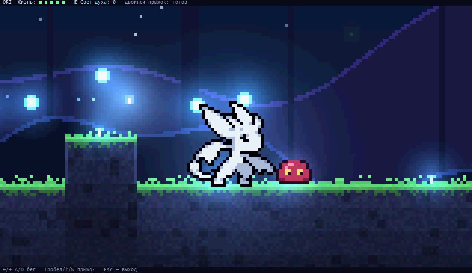
Рис. 21.1. Слизень ползает по платформе
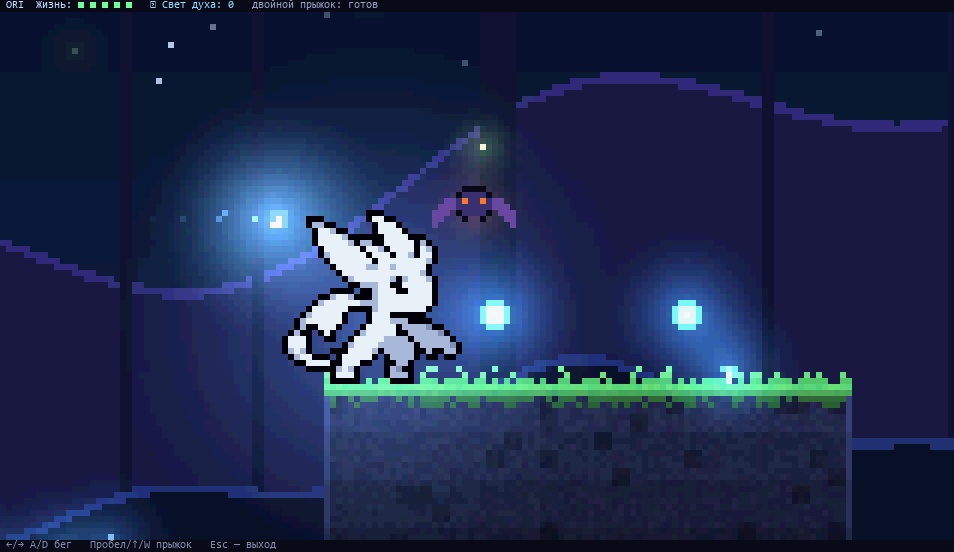
Рис. 21.2. Летучая мышь заметила Ори
ФишкаРой светлячков
Нормализация и несколько простых правил дают удивительно живое поведение. Каждый светлячок здесь знает только три правила: «ускоряйся к цели», «отталкивайся от соседей, которые слишком близко» и «чуть-чуть дёргайся случайно». А вместе шестьдесят светлячков движутся как настоящая стая.
Листинг 21.14. Стая из трёх правил 21-swarm.cpp
// Фишка главы 21: рой светлячков. У каждого светлячка простое правило — лететь// к цели и не сталкиваться с соседом, — а вместе они двигаются как живая стая.// Сборка из папки игры (файл лежит в папке fishki):// g++ -O2 -std=c++17 -Wall -Wextra -I. fishki\21-swarm.cpp screen.cpp console.cpp mathx.cpp -o swarm.exe#define WIN32_LEAN_AND_MEAN#define NOMINMAX#include <windows.h>#include <cmath>#include "console.h"#include "mathx.h"#include "screen.h"constint FLY_COUNT = 60;struct Firefly {float x, y, vx, vy;};int main() { consoleInit(); screenFitToConsole(); Firefly flies[FLY_COUNT];for (int i = 0; i < FLY_COUNT; i++) flies[i] = { randomRange(0, 100), randomRange(0, 60), 0, 0 };float targetX = 60, targetY = 30;constfloat DT = 0.03f;while (!keyDown(VK_ESCAPE)) {// Цель двигается стрелкамиif (keyDown(VK_LEFT)) targetX -= 60 * DT;if (keyDown(VK_RIGHT)) targetX += 60 * DT;if (keyDown(VK_UP)) targetY -= 60 * DT;if (keyDown(VK_DOWN)) targetY += 60 * DT; targetX = clampf(targetX, 0, (float)screenWidth()); targetY = clampf(targetY, 0, (float)screenHeight()); dimScreen(0.6f);for (int i = 0; i < FLY_COUNT; i++) { Firefly& f = flies[i];// Правило 1: ускоряемся к цели f.vx += (targetX - f.x) * 1.5f * DT; f.vy += (targetY - f.y) * 1.5f * DT;// Правило 2: отталкиваемся от соседей, которые ближе 4 пикселейfor (int j = 0; j < FLY_COUNT; j++) {float dx = f.x - flies[j].x, dy = f.y - flies[j].y;float d2 = dx * dx + dy * dy;if (j != i && d2 < 16 && d2 > 0.01f) { f.vx += dx / d2 * 20 * DT; f.vy += dy / d2 * 20 * DT; } }// Правило 3: немного случайности и сопротивление воздуха f.vx = (f.vx + randomRange(-3, 3)) * 0.97f; f.vy = (f.vy + randomRange(-3, 3)) * 0.97f; f.x += f.vx * DT; f.y += f.vy * DT; addPixel((int)f.x, (int)f.y, rgb(200, 255, 120), 1.0f); } addPixel((int)targetX, (int)targetY, rgb(255, 120, 120), 1.0f); textAdd(LINE_TOP, " Рой светлячков: три простых правила", rgb(220, 230, 255)); textAdd(LINE_BOTTOM, " Стрелки — двигать цель Esc — выход", rgb(130, 140, 170)); screenPresent(); Sleep(30); } consoleRestore();return0;}
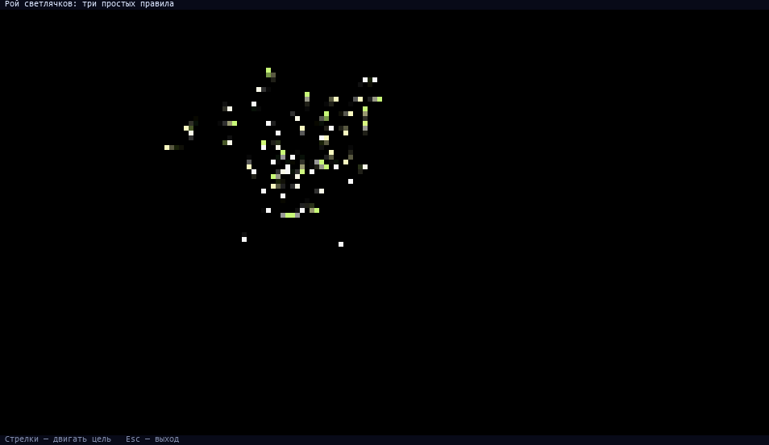
Рис. 21.3. Рой следует за красной точкой-целью
Создайте в папке игры папку fishki (если её ещё нет) и сохраните программу туда как fishki\21-swarm.cpp. Соберите её из папки игры вместе с нужными модулями:
Стрелками двигайте цель и смотрите, как рой перестраивается. Такое поведение называют «боидами» — так в фильмах и играх рисуют стаи птиц и косяки рыб. Обратите внимание на отталкивание: стрелка от соседа (dx, dy) делится на квадрат расстояния d2. Её длина и так равна расстоянию, поэтому сила выходит обратно пропорциональной расстоянию: сосед вдвое ближе — толкает вдвое сильнее. А соседи дальше 4 пикселей (d2 < 16 не выполняется) не мешают вовсе.
Весь код шага 21Сверьтесь с готовой программой
Все 37 файлов игры после этой главы — целиком. Откройте файл, чтобы сравнить со своим, а кнопка «Копировать» поможет, если нужно догнать: вставьте код в файл с тем же именем в папке игры.
// ============================================================================// camera.cpp — камера следует за Ори и не выходит за края уровня// ============================================================================#include <cmath>#include "camera.h"#include "config.h"#include "game.h"#include "mathx.h"// Не даём камере заглянуть за края уровняstaticvoid clampCamera(Game& g) {Camera& cam = g.camera;float maxX = (float)(g.world.width * TILE - screenWidth());float maxY = (float)(MAP_H * TILE - screenHeight()); cam.x = clampf(cam.x, 0, fmaxf(maxX, 0));// если окно выше уровня, прижимаем уровень к низу экрана cam.y = maxY < 0 ? maxY : clampf(cam.y, 0, maxY);}// Целые координаты камеры для рисованияstaticvoid updateView(Camera& cam) { cam.viewX = (int)floorf(cam.x); cam.viewY = (int)floorf(cam.y);if (cam.shake > 0) { // тряска: сдвигаем картинку на пару пикселей в случайную сторону cam.viewX += (int)randomRange(-2, 2); cam.viewY += (int)randomRange(-2, 2); }}void drawDisc(constCamera& cam, int cx, int cy, int radius, Color c) {for (int y = -radius; y <= radius; y++) {for (int x = -radius; x <= radius; x++) {if (x * x + y * y <= radius * radius + radius) putWorldPixel(cam, cx + x, cy + y, c); } }}void centerCamera(Game& g) {constBody& b = g.player.body; g.camera.x = b.x + b.w / 2.0f - screenWidth() / 2.0f; g.camera.y = b.y + b.h / 2.0f - screenHeight() / 2.0f; g.camera.shake = 0; clampCamera(g); updateView(g.camera);}void updateCamera(Game& g, float dt) {Camera& cam = g.camera;constBody& b = g.player.body;// Цель: Ори в центре экрана, чуть сдвинутый назад — видно, что впередиfloat targetX = b.x + b.w / 2.0f - screenWidth() / 2.0f + g.player.facing * 18;float targetY = b.y + b.h / 2.0f - screenHeight() * 0.55f;// Каждый кадр проходим часть пути до цели — камера движется плавно cam.x = lerpf(cam.x, targetX, clampf(dt * 5, 0, 1)); cam.y = lerpf(cam.y, targetY, clampf(dt * 5, 0, 1)); clampCamera(g);if (cam.shake > 0) cam.shake -= dt; updateView(cam);}
camera.h26 строкcamera.h
// ============================================================================// camera.h — какая часть мира видна на экране, рисование в координатах мира// ============================================================================#pragma once#include "color.h"#include "screen.h"structGame; // описана в game.h — здесь достаточно знать, что такая структура естьstructCamera {float x, y; // левый верхний угол экрана в миреfloat shake; // сколько ещё секунд трясти экранint viewX, viewY; // то же целыми числами (с тряской) — по ним рисуем};// Поставить пиксель по координатам мира: экран = мир − камераinlinevoid putWorldPixel(constCamera& cam, int wx, int wy, Color c) { putPixel(wx - cam.viewX, wy - cam.viewY, c);}// Закрашенный круг в координатах мираvoid drawDisc(constCamera& cam, int cx, int cy, int radius, Color c);void centerCamera(Game& g); // сразу поставить Ори в центр экранаvoid updateCamera(Game& g, float dt); // камера плавно догоняет Ори
color.h34 строкиcolor.h
// ============================================================================// color.h — цвет пикселя. Цвет хранится в одном числе 0xRRGGBB:// по два шестнадцатеричных разряда на красный, зелёный и синий.// ============================================================================#pragma oncetypedefunsignedintColor;// Ограничить канал диапазоном 0..255inlineint clampChannel(int value) {return value < 0 ? 0 : (value > 255 ? 255 : value);}// Собрать цвет из красного, зелёного и синего (каждый 0..255)inlineColor rgb(int r, int g, int b) {return (Color)(clampChannel(r) << 16 | clampChannel(g) << 8 | clampChannel(b));}// Достать каналы обратноinlineint colorR(Color c) { return (c >> 16) & 255; }inlineint colorG(Color c) { return (c >> 8) & 255; }inlineint colorB(Color c) { return c & 255; }// Смешать два цвета: t = 0 — первый цвет, t = 1 — второйinlineColor mixColor(Color a, Color b, float t) {return rgb((int)(colorR(a) + (colorR(b) - colorR(a)) * t), (int)(colorG(a) + (colorG(b) - colorG(a)) * t), (int)(colorB(a) + (colorB(b) - colorB(a)) * t));}// Изменить яркость: k = 0.5 — вдвое темнее, k = 2 — вдвое ярчеinlineColor scaleColor(Color c, float k) {return rgb((int)(colorR(c) * k), (int)(colorG(c) * k), (int)(colorB(c) * k));}
config.h37 строкconfig.h
// ============================================================================// config.h — настройки игры. Все важные числа собраны здесь,// чтобы их было легко найти и поменять.// ============================================================================#pragma once// Картинкаconstint MAX_SCREEN_W = 320; // наибольшая ширина картинки в пикселяхconstint MAX_SCREEN_H = 200; // наибольшая высота картинки в пикселях// Мирconstint TILE = 8; // сторона тайла в пикселяхconstint MAP_H = 22; // высота уровня в тайлахconstint MAX_MAP_W = 160; // ширина самого широкого уровня в тайлах// Движениеconstfloat RUN_SPEED = 95.0f; // скорость бега, пикселей в секундуconstfloat RUN_ACCEL_GROUND = 900.0f; // разгон и торможение на землеconstfloat RUN_ACCEL_AIR = 600.0f; // в воздухе разгоняться труднееconstfloat GRAVITY = 900.0f; // насколько быстро растёт скорость паденияconstfloat JUMP_SPEED = 320.0f; // скорость в начале прыжкаconstfloat MAX_FALL_SPEED = 360.0f; // быстрее падать нельзяconstfloat DOUBLE_JUMP_SPEED = 280.0f; // второй прыжок в воздухе чуть слабееconstfloat COYOTE_TIME = 0.10f; // сколько секунд можно прыгнуть после схода с краяconstfloat JUMP_BUFFER_TIME = 0.12f; // сколько секунд помнится раннее нажатие прыжка// Ориconstint PLAYER_W = 16; // ширина хитбоксаconstint PLAYER_H = 24; // высота хитбоксаconstint MAX_HP = 5; // сколько жизней может быть// Сколько объектов может существовать одновременноconstint MAX_PARTICLES = 800;constint MAX_LIGHTS = 160;constint MAX_PICKUPS = 80;constint MAX_CHECKPOINTS = 10;constint MAX_ENEMIES = 40;
console.cpp79 строкconsole.cpp
// ============================================================================// console.cpp — всё, что связано с Windows-консолью, собрано в одном файле// ============================================================================#define WIN32_LEAN_AND_MEAN#define NOMINMAX#include <windows.h>#include <cstring>#include "console.h"// Как была настроена консоль до запуска игрыstaticDWORD originalOutMode = 0;staticDWORD originalInMode = 0;staticUINT originalCodePage = 0;// Ctrl+C или закрытие: consoleRestore сначала останавливает writer.// Обработчик делает ограниченную по времени попытку уборки, затем Windows завершает процесс.staticBOOL WINAPI onConsoleEvent(DWORD) { consoleRestore();return FALSE;}void consoleInit() {HANDLE out = GetStdHandle(STD_OUTPUT_HANDLE);HANDLE in = GetStdHandle(STD_INPUT_HANDLE); GetConsoleMode(out, &originalOutMode); GetConsoleMode(in, &originalInMode); originalCodePage = GetConsoleOutputCP(); SetConsoleMode(out, originalOutMode | ENABLE_PROCESSED_OUTPUT | ENABLE_VIRTUAL_TERMINAL_PROCESSING); SetConsoleMode(in, ENABLE_EXTENDED_FLAGS); // выключить выделение мышью: оно ставит вывод на паузу SetConsoleOutputCP(CP_UTF8); SetConsoleCtrlHandler(onConsoleEvent, TRUE); SetConsoleTitleA("Ori");// Отдельный экран, спрятать курсор, очистить экранconstchar* start = "\x1b[?1049h\x1b[?25l\x1b[2J"; consoleWrite(start, (int)strlen(start));}void consoleRestore() {// Обычные цвета, показать курсор, вернуться на основной экранconstchar* finish = "\x1b[0m\x1b[?25h\x1b[?1049l"; consoleWrite(finish, (int)strlen(finish)); consoleFlushInput(); SetConsoleMode(GetStdHandle(STD_OUTPUT_HANDLE), originalOutMode); SetConsoleMode(GetStdHandle(STD_INPUT_HANDLE), originalInMode); SetConsoleOutputCP(originalCodePage);}bool consoleSize(int& cols, int& rows) { CONSOLE_SCREEN_BUFFER_INFO info;if (!GetConsoleScreenBufferInfo(GetStdHandle(STD_OUTPUT_HANDLE), &info)) {returnfalse; } cols = info.srWindow.Right - info.srWindow.Left + 1; rows = info.srWindow.Bottom - info.srWindow.Top + 1;returntrue;}void consoleFlushInput() { FlushConsoleInputBuffer(GetStdHandle(STD_INPUT_HANDLE));}bool keyDown(int virtualKey) {return (GetAsyncKeyState(virtualKey) & 0x8000) != 0;}bool consoleWrite(constchar* data, int length) {if (length < 0) returnfalse;int sent = 0;while (sent < length) {DWORD written = 0;DWORD remaining = (DWORD)(length - sent);if (!WriteFile(GetStdHandle(STD_OUTPUT_HANDLE), data + sent, remaining, &written, NULL) || written == 0 || written > remaining) returnfalse; sent += (int)written; }returntrue;}
console.h13 строкconsole.h
// ============================================================================// console.h — окно консоли Windows: настройка, размер, клавиши, вывод// ============================================================================#pragma oncevoid consoleInit(); // включить цвета и UTF-8, перейти на отдельный экранvoid consoleRestore(); // вернуть консоль в исходное состояниеbool consoleSize(int& cols, int& rows); // видимый размер окна в символахvoid consoleFlushInput(); // выбросить накопившиеся нажатия клавишbool keyDown(int virtualKey); // зажата ли клавиша прямо сейчас// Полностью записать данные; false — ошибка или неполная записьbool consoleWrite(constchar* data, int length);
// ============================================================================// effects.cpp — пулы частиц и источников света// ============================================================================#include <algorithm>#include <cmath>#include <cstring>#include "config.h"#include "effects.h"#include "mathx.h"struct Particle {float x, y, vx, vy;float life, maxLife; // сколько осталось жить и сколько жила бы всегоColor color;bool gravity; // падает ли вниз};struct Light {float x, y, radius;Color color;float power;};// Пулы: частица с life <= 0 — свободное местоstatic Particle particles[MAX_PARTICLES];static Light lights[MAX_LIGHTS];staticint lightCount = 0;void clearParticles() { memset(particles, 0, sizeof(particles));}void spawnParticle(float x, float y, float vx, float vy, float life, Color color, bool gravity) {for (int i = 0; i < MAX_PARTICLES; i++) {if (particles[i].life <= 0) { particles[i] = { x, y, vx, vy, life, life, color, gravity };return; } }}void burst(float x, float y, int count, Color color, float speed, float life, bool gravity) {for (int i = 0; i < count; i++) {float angle = randomRange(0, 6.2832f);float s = randomRange(speed * 0.3f, speed); spawnParticle(x, y, cosf(angle) * s, sinf(angle) * s, randomRange(life * 0.5f, life), color, gravity); }}void updateParticles(float dt) {for (int i = 0; i < MAX_PARTICLES; i++) { Particle& p = particles[i];if (p.life <= 0) continue; p.life -= dt;if (p.gravity) p.vy += GRAVITY * 0.5f * dt; p.vx *= 1.0f - 1.5f * dt; // сопротивление воздуха p.vy *= 1.0f - 1.5f * dt; p.x += p.vx * dt; p.y += p.vy * dt; }}void drawParticles(constCamera& cam) {for (int i = 0; i < MAX_PARTICLES; i++) {const Particle& p = particles[i];if (p.life <= 0) continue;float strength = clampf(p.life / p.maxLife, 0, 1); // гаснет к концу жизни addPixel((int)roundf(p.x) - cam.viewX, (int)roundf(p.y) - cam.viewY, p.color, strength); }}void clearLights() { lightCount = 0;}void addLight(float x, float y, float radius, Color color, float power) {if (lightCount < MAX_LIGHTS) { lights[lightCount] = { x, y, radius, color, power }; lightCount++; }}void applyLights(constCamera& cam) {for (int i = 0; i < lightCount; i++) {const Light& light = lights[i];int cx = (int)light.x - cam.viewX;int cy = (int)light.y - cam.viewY;int r = (int)light.radius;// Проходим только по квадрату вокруг источника и только по видимой частиint x0 = std::max(0, cx - r), x1 = std::min(screenWidth() - 1, cx + r);int y0 = std::max(0, cy - r), y1 = std::min(screenHeight() - 1, cy + r);for (int y = y0; y <= y1; y++) {for (int x = x0; x <= x1; x++) {float dx = (float)(x - cx), dy = (float)(y - cy);float d = sqrtf(dx * dx + dy * dy) / light.radius; // 0 в центре, 1 на краюif (d >= 1) continue; addPixel(x, y, light.color, (1 - d) * (1 - d) * light.power); } } }}
effects.h19 строкeffects.h
// ============================================================================// effects.h — частицы (искры, пыль) и свет// ============================================================================#pragma once#include "camera.h"#include "color.h"// Частицы: живут несколько долей секунды и гаснутvoid clearParticles();void spawnParticle(float x, float y, float vx, float vy, float life, Color color, bool gravity);void burst(float x, float y, int count, Color color, float speed, float life, bool gravity);void updateParticles(float dt);void drawParticles(constCamera& cam);// Свет: источники собираются заново в каждом кадре, потом накладываются на картинкуvoid clearLights();void addLight(float x, float y, float radius, Color color, float power);void applyLights(constCamera& cam);
enemies.cpp210 строкenemies.cpp
// ============================================================================// enemies.cpp — поведение и отрисовка врагов// ============================================================================#include <cmath>#include <cstring>#include "effects.h"#include "enemies.h"#include "game.h"#include "mathx.h"#include "sprites.h"// Слизень: два кадра — обычный и «сплющенный»staticconstchar* SLIME_FRAME_1[] = {"....kkkk....","..kkrrrrkk..",".krrhhrrrrk.",".krhrrrrrrk.","krryyrryyrrk","krrykrrykrrk","krrrrrrrrrrk","kpprrrrrrppk",".kkkkkkkkkk.",};staticconstchar* SLIME_FRAME_2[] = {"............","..kkrrrrkk..",".krrhhrrrrk.",".krhrrrrrrk.","krryyrryyrrk","krrykrrykrrk","krrrrrrrrrrk","kpprrrrrrppk",".kkkkkkkkkk.",};staticconstchar SLIME_KEYS[] = "krphy";staticconstColor SLIME_COLORS[] = { rgb(42, 8, 32), rgb(194, 60, 100), rgb(126, 32, 72), rgb(255, 154, 180), rgb(255, 224, 112) };staticconst Sprite SLIME_SPRITES[2] = { { 12, 9, SLIME_FRAME_1, SLIME_KEYS, SLIME_COLORS }, { 12, 9, SLIME_FRAME_2, SLIME_KEYS, SLIME_COLORS },};// Летучая мышь: крылья вверх и крылья внизstaticconstchar* BAT_FRAME_1[] = {"l............l","ll...kkkk...ll","lll.kbbbbk.lll",".lllbebbeblll.","..llbbbbbbll..","....kbbbbk....",".....k..k.....","..............",};staticconstchar* BAT_FRAME_2[] = {"..............",".....kkkk.....","....kbbbbk....","..llbebbebll..",".lllbbbbbblll.","lll.kbbbbk.lll","ll...k..k...ll","l............l",};staticconstchar BAT_KEYS[] = "kble";staticconstColor BAT_COLORS[] = { rgb(10, 10, 26), rgb(60, 50, 112), rgb(106, 79, 166), rgb(255, 122, 40) };staticconst Sprite BAT_SPRITES[2] = { { 14, 8, BAT_FRAME_1, BAT_KEYS, BAT_COLORS }, { 14, 8, BAT_FRAME_2, BAT_KEYS, BAT_COLORS },};void spawnEnemy(Game& g, EnemyType type, float x, float y) {if (g.enemyCount >= MAX_ENEMIES) return;Enemy& e = g.enemies[g.enemyCount]; memset(&e, 0, sizeof(e)); e.type = type; e.alive = true; e.dir = -1; e.time = randomRange(0, 6.28f); // чтобы враги двигались не в тактif (type == ENEMY_SLIME) { e.hp = 3; e.body = makeBody(x - 2, y + TILE - 9, 12, 9); // ногами на дно клетки } elseif (type == ENEMY_BAT) { e.hp = 2; e.body = makeBody(x - 3, y, 14, 8); } e.homeX = e.body.x; e.homeY = e.body.y; g.enemyCount++;}// Слизень ползёт и разворачивается у стены и на краю обрываstaticvoid updateSlime(Game& g, Enemy& e, float dt) {Body& b = e.body;if (e.knockTime <= 0) b.vx = e.dir * 22.0f; b.vy = fminf(b.vy + GRAVITY * dt, MAX_FALL_SPEED); moveBody(g.world, b, dt);if (e.knockTime <= 0) {if (b.hitWall) e.dir = -e.dir;// Тайл чуть впереди и чуть ниже ног: если он не твёрдый — впереди обрывint frontX = (int)floorf((e.dir > 0 ? b.x + b.w + 1 : b.x - 1) / TILE);int belowY = (int)floorf((b.y + b.h + 1) / TILE);if (b.onGround && !isSolidTile(tileAt(g.world, frontX, belowY))) e.dir = -e.dir; }if (b.y > MAP_H * TILE + 40) e.alive = false; // упал в пропасть}// Летучая мышь: рядом с Ори — летит к нему, иначе кружит у гнездаstaticvoid updateBat(Game& g, Enemy& e, float dt) {Body& b = e.body;constBody& player = g.player.body;float dx = (player.x + player.w / 2.0f) - (b.x + b.w / 2.0f);float dy = (player.y + player.h / 2.0f) - (b.y + b.h / 2.0f);float distance = sqrtf(dx * dx + dy * dy);float ax, ay; // ускорениеif (distance < 110) {// Направление на Ори длиной 1, умноженное на силу разгона, и волнистость полёта ax = dx / fmaxf(distance, 1.0f) * 120; ay = dy / fmaxf(distance, 1.0f) * 120 + sinf(e.time * 6) * 80; e.dir = dx > 0 ? 1 : -1; } else {// Тянемся к точке, которая плавает вокруг гнезда ax = (e.homeX + sinf(e.time * 0.9f) * 24 - b.x) * 2; ay = (e.homeY + sinf(e.time * 2.1f) * 6 - b.y) * 2; }if (e.knockTime <= 0) { b.vx += ax * dt; b.vy += ay * dt;float speed = sqrtf(b.vx * b.vx + b.vy * b.vy);if (speed > 48) { // не быстрее 48 пикселей в секунду b.vx *= 48 / speed; b.vy *= 48 / speed; } } b.vx *= 1.0f - 0.8f * dt; b.vy *= 1.0f - 0.8f * dt; b.x += b.vx * dt; // мыши летают сквозь стены b.y += b.vy * dt;}// Касание с Ори: прыжок сверху ранит врага, иначе ранен Ориstaticvoid checkContact(Game& g, Enemy& e, float dt) {Body& player = g.player.body;constBody& b = e.body;if (!rectsOverlap(player.x, player.y, player.w, player.h, b.x, b.y, b.w, b.h)) return;// Ори падает, и кадр назад его ноги были выше врага — значит, прилетел сверхуfloat feetBefore = player.y + player.h - player.vy * dt;bool stomp = player.vy > 40 && feetBefore <= b.y + 4;if (stomp) { hitEnemy(g, e, 2, player.x + 8 < b.x + b.w / 2.0f ? 1.0f : -1.0f); player.y = b.y - player.h; // ставим Ори на врага: в следующем кадре они уже не касаются player.vy = -250; g.player.canDoubleJump = true; } else { hurtPlayer(g, b.x + b.w / 2.0f, -180); }}void updateEnemies(Game& g, float dt) {for (int i = 0; i < g.enemyCount; i++) {Enemy& e = g.enemies[i];if (!e.alive) continue; e.time += dt;if (e.hurtTime > 0) e.hurtTime -= dt;if (e.knockTime > 0) e.knockTime -= dt;if (e.type == ENEMY_SLIME) { updateSlime(g, e, dt); } elseif (e.type == ENEMY_BAT) { updateBat(g, e, dt); } checkContact(g, e, dt); }}void hitEnemy(Game& g, Enemy& e, int damage, float pushDir) {Body& b = e.body; e.hp -= damage; e.hurtTime = 0.15f;float cx = b.x + b.w / 2.0f, cy = b.y + b.h / 2.0f; burst(cx, cy, 10, rgb(255, 200, 230), 80, 0.35f, false); e.knockTime = 0.2f; b.vx = pushDir * 90; b.vy = (e.type == ENEMY_SLIME) ? -120.0f : -40.0f;if (e.hp <= 0) { e.alive = false;Color body = (e.type == ENEMY_SLIME) ? rgb(220, 60, 110) : rgb(130, 90, 200); burst(cx, cy, 30, body, 110, 0.7f, true); burst(cx, cy, 12, rgb(160, 240, 255), 60, 1.0f, false); g.player.spiritLight += 3; }}void drawEnemies(constGame& g) {for (int i = 0; i < g.enemyCount; i++) {constEnemy& e = g.enemies[i];if (!e.alive) continue;int x = (int)roundf(e.body.x);int y = (int)roundf(e.body.y);bool flip = e.dir > 0; // на картинках враги смотрят влевоbool flash = e.hurtTime > 0; // после удара — белая вспышкаif (e.type == ENEMY_SLIME) {int frame = ((int)(e.time * 6)) % 2; drawSprite(g.camera, SLIME_SPRITES[frame], x, y, flip, flash); } elseif (e.type == ENEMY_BAT) {int frame = ((int)(e.time * 8)) % 2; drawSprite(g.camera, BAT_SPRITES[frame], x, y, flip, flash); } }}
enemies.h30 строкenemies.h
// ============================================================================// enemies.h — враги: слизни, летучие мыши (и босс)// ============================================================================#pragma once#include "physics.h"structGame;enum EnemyType { ENEMY_SLIME, // ползает по платформе ENEMY_BAT, // летает и преследует Ори};structEnemy { EnemyType type;Body body;int hp;int dir; // куда смотрит или ползёт: -1 или 1float hurtTime; // сколько ещё мигать после удараfloat knockTime; // сколько ещё лететь от удараfloat time; // собственное время врага — для анимацииfloat homeX, homeY; // где враг появился (гнездо летучей мыши)bool alive;};void spawnEnemy(Game& g, EnemyType type, float x, float y);void updateEnemies(Game& g, float dt);void hitEnemy(Game& g, Enemy& enemy, int damage, float pushDir); // pushDir — куда отбросить: -1 или 1void drawEnemies(constGame& g);
game.cpp83 строкиgame.cpp
// ============================================================================// game.cpp — загрузка уровней и правила игры: что обновлять в каждом кадре// ============================================================================#include <algorithm>#include <cmath>#include <cstring>#include "effects.h"#include "game.h"#include "input.h"#include "levels.h"// Символ карты — объект? Тогда создаём объект и возвращаем пробел.// Иначе это тайл (камень, бревно, шипы) — он остаётся в карте как есть.staticchar placeObject(Game& g, char symbol, float wx, float wy) {World& w = g.world;switch (symbol) {case'P': w.spawnX = wx; w.spawnY = wy + TILE - PLAYER_H; // ногами на дно клеткиreturn' ';case'o': addPickup(g, PICKUP_LIGHT, wx + 4, wy + 4);return' ';case'+': addPickup(g, PICKUP_HEALTH, wx + 4, wy + 4);return' ';case'C': addCheckpoint(g, wx + 4, wy + TILE);return' ';case'S': spawnEnemy(g, ENEMY_SLIME, wx, wy);return' ';case'B': spawnEnemy(g, ENEMY_BAT, wx, wy);return' ';default:return symbol; }}void loadLevel(Game& g, int index) {const LevelInfo& level = levelInfo(index);World& w = g.world; g.levelIndex = index; g.pickupCount = 0; g.checkpointCount = 0; g.enemyCount = 0; clearParticles();// Ширина уровня — длина самой длинной строки карты w.width = 0;for (int ty = 0; ty < MAP_H; ty++) { w.width = std::max(w.width, (int)strlen(level.rows[ty])); } w.width = std::min(w.width, MAX_MAP_W);for (int ty = 0; ty < MAP_H; ty++) {int length = (int)strlen(level.rows[ty]);for (int tx = 0; tx < w.width; tx++) {char symbol = tx < length ? level.rows[ty][tx] : ' '; w.tiles[ty][tx] = placeObject(g, symbol, (float)(tx * TILE), (float)(ty * TILE)); } w.tiles[ty][w.width] = 0; // конец строки } placePlayer(g.player, w.spawnX, w.spawnY); centerCamera(g);}void startNewGame(Game& g) { g.player.spiritLight = 0; loadLevel(g, 0);}void updateGame(Game& g, constInput& in, float dt) { g.time += dt; updatePlayer(g, in, dt); updateItems(g); updateEnemies(g, dt); updateParticles(dt); updateCamera(g, dt);}
game.h32 строкиgame.h
// ============================================================================// game.h — вся игра в одной структуре Game. Функции получают её по ссылке,// поэтому глобальные переменные не нужны.// ============================================================================#pragma once#include "config.h"#include "camera.h"#include "enemies.h"#include "items.h"#include "player.h"#include "world.h"structInput;structGame {float time; // сколько секунд идёт игра — для анимацийint levelIndex; // номер текущего уровня (с нуля)World world;Camera camera;Player player; Pickup pickups[MAX_PICKUPS];int pickupCount; Checkpoint checkpoints[MAX_CHECKPOINTS];int checkpointCount;Enemy enemies[MAX_ENEMIES];int enemyCount;};void startNewGame(Game& g);void loadLevel(Game& g, int index);void updateGame(Game& g, constInput& in, float dt);
hud.cpp36 строкhud.cpp
// ============================================================================// hud.cpp — жизни и счёт вверху, подсказка внизу// ============================================================================#include <cstdio>#include "game.h"#include "hud.h"#include "screen.h"constColor HUD_TEXT = rgb(200, 220, 255);constColor HINT_TEXT = rgb(130, 140, 170);// Верхняя строка: жизни, свет духа и подсказка про двойной прыжокstaticvoid drawTopLine(constGame& g) {constPlayer& p = g.player; textAdd(LINE_TOP, " ORI Жизнь: ", HUD_TEXT);for (int i = 0; i < MAX_HP; i++) { textAdd(LINE_TOP, "■ ", i < p.hp ? rgb(110, 255, 150) : rgb(50, 60, 70)); } textAdd(LINE_TOP, " ◆ Свет духа: ", rgb(140, 220, 255)); textAddInt(LINE_TOP, p.spiritLight, rgb(140, 220, 255));if (screenWidth() >= 80) { textAdd(LINE_TOP, p.canDoubleJump ? " двойной прыжок: готов" : " двойной прыжок: —", rgb(150, 160, 190)); }}// Нижняя строка — подсказка по управлению (короче, если окно узкое)staticvoid drawBottomLine() {int w = screenWidth();if (w >= 60) textAdd(LINE_BOTTOM, " ←/→ A/D бег Пробел/↑/W прыжок Esc — выход", HINT_TEXT);}void drawHud(constGame& g) { drawTopLine(g); drawBottomLine();}
hud.h8 строкhud.h
// ============================================================================// hud.h — строки текста над и под картинкой и надписи поверх неё// ============================================================================#pragma oncestructGame;void drawHud(constGame& g);
// ============================================================================// input.h — какие кнопки управления нажаты// ============================================================================#pragma once// Одна кнопка управленияstructKey {bool held; // зажата сейчасbool pressed; // нажата именно в этом кадре (в прошлом кадре не была зажата)};structInput {Key left;Key right;Key jump;Key quit;};void readInput(Input& in);
// ============================================================================// items.h — предметы на уровне: свет духа, ячейки жизни, колодцы// ============================================================================#pragma oncestructGame;enum PickupType { PICKUP_LIGHT, // свет духа — очки PICKUP_HEALTH, // ячейка жизни};struct Pickup {float x, y; // центр предмета PickupType type;bool taken; // уже подобран};// Колодец духа — место, где Ори возродитсяstruct Checkpoint {float x, y; // середина основания колодцаbool active; // это последний колодец, которого коснулся Ори};void addPickup(Game& g, PickupType type, float x, float y);void addCheckpoint(Game& g, float x, float y);void updateItems(Game& g); // Ори подбирает предметы и зажигает колодцыvoid drawItems(constGame& g);
levels.cpp51 строкаlevels.cpp
// ============================================================================// levels.cpp — карты уровней. Каждый символ — тайл 8 × 8 пикселей:// # — камень, = — бревно, ^ — шипы, P — старт Ори// o — свет духа, + — ячейка жизни, C — колодец (точка возрождения)// S — слизень, B — летучая мышь// ============================================================================#include "config.h"#include "levels.h"// Лес Нибельstaticconstchar* LEVEL1[MAP_H] = {"## ##################### ##","## ##################### ##","## ##################### ##","## ##################### B ##","## ##################### ##","## ##################### o o + ##","## ##################### ##","## ##################### o C S S ##","## B ##################### ################# ##","## + === ################# o ##","## o o B o ################# B ##","## o === ################# S ##","## o o o o o o o B ===########################### ##","## o === ########################### ##","## o o o o === ########### C S S ########################### ##","## ########### #################### === ########################### ##","## P ### ########### #################### o o o ########################### ##","## ### S C ########### #################### ^^ ########################### T ##","############################### ################### ################################### ##############################################","############################### ################### ################################### ##############################################","###############################^^^^^^###################^^^^^^^^^^^^^^^###################################^^^^^^^^##############################################","################################################################################################################################################################",};// Все уровни по порядкуstaticconst LevelInfo LEVELS[] = { { "Лес Нибель", LEVEL1, rgb(6, 8, 28), rgb(24, 46, 84), // небо rgb(30, 28, 72), rgb(13, 18, 42), // холмы rgb(38, 44, 80), rgb(96, 220, 120), // камень и мохtrue },};int levelCount() {returnsizeof(LEVELS) / sizeof(LEVELS[0]);}const LevelInfo& levelInfo(int index) {return LEVELS[index];}
levels.h18 строкlevels.h
// ============================================================================// levels.h — описания уровней: карта, название и цвета// ============================================================================#pragma once#include "color.h"struct LevelInfo {constchar* name; // название уровняconstchar* const* rows; // карта: MAP_H строк из символовColor skyTop, skyBottom; // небо: цвет вверху и у горизонтаColor hillFar, hillNear; // силуэты дальних и ближних холмовColor rock, moss; // камень и мох на нёмbool stars; // есть ли звёзды на небе};int levelCount(); // сколько всего уровнейconst LevelInfo& levelInfo(int index); // описание уровня по номеру (с нуля)
main.cpp47 строкmain.cpp
// ============================================================================// ORI — консольная игра-платформер, вид сбоку.// Картинка рисуется пикселями из символов '▀' и ANSI-цветов.// Без классов: только данные (структуры) и функции.//// Сборка: build.bat; отладочная сборка: debug.bat.// В скриптах перечислены только исходники игры этого шага.// ============================================================================#include <chrono>#include <thread>#include "console.h"#include "game.h"#include "input.h"#include "render.h"#include "screen.h"int main() { consoleInit(); screenFitToConsole();staticGame game; // вся игра; static — чтобы большая структура не лежала на стеке startNewGame(game);Input input = {};constauto FRAME_TIME = std::chrono::milliseconds(25); // 25 мс — около 40 кадров в секундуauto previous = std::chrono::steady_clock::now();while (true) {auto frameStart = std::chrono::steady_clock::now();float dt = std::chrono::duration<float>(frameStart - previous).count(); previous = frameStart;if (dt > 0.05f) dt = 0.05f; // после долгой паузы не прыгаем далеко вперёд screenFitToConsole(); consoleFlushInput(); readInput(input);if (input.quit.pressed) break; updateGame(game, input, dt); renderGame(game); screenPresent();auto elapsed = std::chrono::steady_clock::now() - frameStart;if (elapsed < FRAME_TIME) std::this_thread::sleep_for(FRAME_TIME - elapsed); } consoleRestore();return0;}
mathx.cpp12 строкmathx.cpp
// ============================================================================// mathx.cpp — генератор случайных чисел// ============================================================================#include "mathx.h"// Состояние генератора: из него получается следующее «случайное» числоstaticunsignedint randomSeed = 12345u;float randomRange(float a, float b) { randomSeed = randomSeed * 1664525u + 1013904223u;return a + (b - a) * ((randomSeed >> 8) / 16777216.0f);}
mathx.h22 строкиmathx.h
// ============================================================================// mathx.h — маленькие математические помощники// ============================================================================#pragma once// Зажать число между lo и hiinlineint clampi(int v, int lo, int hi) { return v < lo ? lo : (v > hi ? hi : v); }inlinefloat clampf(float v, float lo, float hi) { return v < lo ? lo : (v > hi ? hi : v); }// Плавный переход: t = 0 — a, t = 1 — b, t = 0.5 — ровно посерединеinlinefloat lerpf(float a, float b, float t) { return a + (b - a) * t; }// «Случайное», но всегда одинаковое число для пары координат.// Нужно для текстур: камень не должен «кипеть» от кадра к кадру.inlineunsignedint hash2(int x, int y) {unsignedint h = (unsignedint)x * 374761393u + (unsignedint)y * 668265263u; h = (h ^ (h >> 13)) * 1274126177u;return h ^ (h >> 16);}// Случайное число от a до b — при каждом вызове новоеfloat randomRange(float a, float b);
physics.cpp87 строкphysics.cpp
// ============================================================================// physics.cpp — движение и столкновения с тайлами// ============================================================================#include <cmath>#include "config.h"#include "physics.h"Body makeBody(float x, float y, int w, int h) {Body b; b.x = x; b.y = y; b.vx = 0; b.vy = 0; b.w = w; b.h = h; b.onGround = false; b.hitWall = false;return b;}bool rectSolid(constWorld& world, float x, float y, float w, float h) {// Номера тайлов, которые задевает прямоугольник. 0.01 — чтобы прямоугольник,// стоящий ровно на границе тайла, не считался залезшим в соседний.int tx0 = (int)floorf(x / TILE), tx1 = (int)floorf((x + w - 0.01f) / TILE);int ty0 = (int)floorf(y / TILE), ty1 = (int)floorf((y + h - 0.01f) / TILE);for (int ty = ty0; ty <= ty1; ty++) {for (int tx = tx0; tx <= tx1; tx++) {if (isSolidTile(tileAt(world, tx, ty))) returntrue; } }returnfalse;}bool rectTouchesTile(constWorld& world, float x, float y, float w, float h, char tile) {int tx0 = (int)floorf(x / TILE), tx1 = (int)floorf((x + w - 0.01f) / TILE);int ty0 = (int)floorf(y / TILE), ty1 = (int)floorf((y + h - 0.01f) / TILE);for (int ty = ty0; ty <= ty1; ty++) {for (int tx = tx0; tx <= tx1; tx++) {if (tileAt(world, tx, ty) == tile) returntrue; } }returnfalse;}bool rectsOverlap(float ax, float ay, float aw, float ah, float bx, float by, float bw, float bh) {return ax < bx + bw && ax + aw > bx && ay < by + bh && ay + ah > by;}void moveBody(constWorld& world, Body& b, float dt) { b.onGround = false; b.hitWall = false;// Большой сдвиг делим на шаги не длиннее 3 пикселей,// иначе быстрое тело может проскочить сквозь тонкую стенуfloat maxMove = fmaxf(fabsf(b.vx), fabsf(b.vy)) * dt;int steps = (int)ceilf(maxMove / 3.0f);if (steps < 1) steps = 1;float stepDt = dt / steps;for (int s = 0; s < steps; s++) {// Сначала по горизонталиfloat nx = b.x + b.vx * stepDt;if (rectSolid(world, nx, b.y, (float)b.w, (float)b.h)) {if (b.vx > 0) { nx = floorf((nx + b.w) / TILE) * TILE - b.w; // прижаться к стене справа } else { nx = (floorf(nx / TILE) + 1) * TILE; // прижаться к стене слева } b.vx = 0; b.hitWall = true; } b.x = nx;// Потом по вертикалиfloat ny = b.y + b.vy * stepDt;if (rectSolid(world, b.x, ny, (float)b.w, (float)b.h)) {if (b.vy > 0) { ny = floorf((ny + b.h) / TILE) * TILE - b.h; // встали на пол b.onGround = true; } else { ny = (floorf(ny / TILE) + 1) * TILE; // ударились о потолок } b.vy = 0; } b.y = ny; }}
physics.h28 строкphysics.h
// ============================================================================// physics.h — тела, которые двигаются и сталкиваются с тайлами// ============================================================================#pragma once#include "world.h"structBody {float x, y; // левый верхний угол хитбокса в миреfloat vx, vy; // скорость, пикселей в секунду (vy > 0 — вниз)int w, h; // размер хитбоксаbool onGround; // стоит на чём-то твёрдомbool hitWall; // в этом кадре упёрлось в стену};Body makeBody(float x, float y, int w, int h); // неподвижное тело в точке (x, y)// Есть ли твёрдые тайлы в прямоугольникеbool rectSolid(constWorld& world, float x, float y, float w, float h);// Сдвинуть тело на скорость × dt, не пуская его в твёрдые тайлыvoid moveBody(constWorld& world, Body& body, float dt);// Касается ли прямоугольник тайла нужного вида (например, шипов)bool rectTouchesTile(constWorld& world, float x, float y, float w, float h, char tile);// Пересекаются ли два прямоугольникаbool rectsOverlap(float ax, float ay, float aw, float ah, float bx, float by, float bw, float bh);
// ============================================================================// player.h — Ори: управление, прыжки, жизни// ============================================================================#pragma once#include "physics.h"structGame; // описаны в других файлах — здесь достаточно объявленийstructInput;structPlayer {Body body; // положение, скорость и хитбоксint facing; // куда смотрит: -1 влево, 1 вправоfloat animTime; // время для анимации бегаbool canDoubleJump; // прыжок в воздухе ещё не потраченfloat coyoteTime; // сколько ещё можно прыгнуть после схода с краяfloat jumpBuffer; // сколько ещё помнить раннее нажатие прыжкаint hp; // жизниint spiritLight; // собранный свет духаfloat invulnerable; // сколько ещё секунд Ори неуязвим после удараfloat knockback; // сколько ещё секунд Ори отброшен ударомfloat respawnX, respawnY; // где возродиться — у последнего колодцаfloat seinX, seinY; // Сейн — огонёк-спутник};// Поставить Ори в точку (x, y) и сбросить его состояние (жизни, прыжки...)void placePlayer(Player& player, float x, float y);void updatePlayer(Game& g, constInput& in, float dt);void drawPlayer(constGame& g);void hurtPlayer(Game& g, float fromX, float kickY); // удар: fromX — откуда пришёл ударvoid respawnPlayer(Game& g); // вернуть Ори к колодцуvoid drawSein(constGame& g);
render.cpp207 строкrender.cpp
// ============================================================================// render.cpp — фон, тайлы и порядок рисования кадра// ============================================================================#include <cmath>#include "effects.h"#include "game.h"#include "hud.h"#include "levels.h"#include "mathx.h"#include "render.h"#include "screen.h"// Фон из трёх слоёв, которые движутся медленнее камеры (параллакс):// дальние холмы, стволы деревьев и ближние холмыstaticvoid drawBackground(constGame& g) {const LevelInfo& level = levelInfo(g.levelIndex);constCamera& cam = g.camera;int w = screenWidth(), h = screenHeight();// Высоты холмов и стволы считаем один раз на столбец — синус считается долгоfloat farHill[MAX_SCREEN_W], nearHill[MAX_SCREEN_W];bool trunk[MAX_SCREEN_W];for (int x = 0; x < w; x++) {float farX = x + cam.viewX * 0.25f; // дальний слой движется в 4 раза медленнее farHill[x] = 70 + 16 * sinf(farX * 0.021f) + 8 * sinf(farX * 0.057f + 1.3f);float nearX = x + cam.viewX * 0.55f; nearHill[x] = 118 + 12 * sinf(nearX * 0.033f + 2.0f) + 5 * sinf(nearX * 0.09f);int cell = (int)floorf(nearX / 40); // одно дерево на каждые 40 пикселейfloat center = cell * 40.0f + (float)(hash2(cell, 7) % 24) + 8;float halfWidth = 1.0f + (float)(hash2(cell, 9) % 3); trunk[x] = fabsf(nearX - center) <= halfWidth; }Color farRim = scaleColor(level.hillFar, 1.7f); // контровой свет на гребне холмаColor nearRim = scaleColor(level.hillNear, 2.8f);Color trunkColor = scaleColor(level.hillNear, 1.25f);for (int y = 0; y < h; y++) {float worldY = (float)(y + cam.viewY);Color sky = mixColor(level.skyTop, level.skyBottom, clampf((worldY + 40) / (MAP_H * TILE + 60.0f), 0, 1));float farY = y + cam.viewY * 0.4f + 24;float nearY = y + cam.viewY * 0.7f + 10;for (int x = 0; x < w; x++) {Color c = sky;if (level.stars && worldY < 100) { // звезда — редкий пиксель, который мерцаетunsignedint star = hash2((int)(x + cam.viewX * 0.08f), (int)(y + cam.viewY * 0.08f));if (star % 500 == 0) {float twinkle = 0.5f + 0.5f * sinf(g.time * 2 + (star >> 10) % 100); c = mixColor(c, rgb(200, 220, 255), 0.3f + 0.6f * twinkle); } }if (farY > farHill[x]) c = (farY - farHill[x] < 1.5f) ? farRim : mixColor(level.hillFar, sky, 0.25f);if (trunk[x] && nearY < nearHill[x] + 4) c = trunkColor;if (nearY > nearHill[x]) c = (nearY - nearHill[x] < 1.5f) ? nearRim : level.hillNear; putPixel(x, y, c); } }}// Цвет пикселя (lx, ly) внутри тайла (tx, ty). opaque = false — пиксель прозрачный.staticColor tileColor(constGame& g, char tile, int tx, int ty, int lx, int ly, bool& opaque) {constWorld& world = g.world;int wx = tx * TILE + lx, wy = ty * TILE + ly;unsignedint noise = hash2(wx, wy); opaque = true;if (tile == '#') {const LevelInfo& level = levelInfo(g.levelIndex);int n = (int)(noise % 13) - 6; // зернистость: каждый пиксель чуть светлее или темнееColor c = rgb(colorR(level.rock) + n, colorG(level.rock) + n, colorB(level.rock) + n);if (hash2(wx / 3, wy / 3) % 9 == 0) c = scaleColor(c, 0.75f); // трещины// Тайл смотрит на соседей: края, тени и мохbool emptyUp = !isSolidTile(tileAt(world, tx, ty - 1));bool emptyLeft = !isSolidTile(tileAt(world, tx - 1, ty));bool emptyRight = !isSolidTile(tileAt(world, tx + 1, ty));bool emptyDown = !isSolidTile(tileAt(world, tx, ty + 1));if ((emptyLeft && lx == 0) || (emptyRight && lx == 7)) c = scaleColor(level.rock, 1.55f);if (emptyDown && ly == 7) c = scaleColor(level.rock, 0.55f);if (emptyUp) {Color grass = rgb(colorR(level.moss) + n * 2, colorG(level.moss) + n, colorB(level.moss));if (ly == 0) c = grass;elseif (ly == 1) c = scaleColor(grass, 0.78f);elseif (ly == 2 && noise % 3 != 0) c = scaleColor(level.moss, 0.5f);elseif (ly == 3 && noise % 3 == 0) c = scaleColor(level.moss, 0.45f); } else {// Чем глубже в скале, тем темнееint depth = 1 + isSolidTile(tileAt(world, tx, ty - 2)) + isSolidTile(tileAt(world, tx, ty - 3)); c = scaleColor(c, 1.0f - depth * 0.12f); }return c; }if (tile == '=') {// Бревно: светлый верх, кора с наклонными штрихами, снизу свисает мохbool leftEnd = tileAt(world, tx - 1, ty) != '=';bool rightEnd = tileAt(world, tx + 1, ty) != '=';bool corner = (leftEnd && lx == 0) || (rightEnd && lx == 7);if (ly == 0 || ly == 3) {if (corner) { // скруглённые концы opaque = false;return0; }return ly == 0 ? rgb(160, 122, 80) : rgb(70, 48, 32); }if (ly <= 2) return (wx + ly * 3) % 5 == 0 ? rgb(84, 58, 40) : rgb(112, 80, 52);unsignedint moss = hash2(wx, 77);if (moss % 4 == 0 && ly < 4 + (int)(moss >> 8) % 4) return rgb(50, 150, 100); opaque = false;return0; }if (tile == '^') {// Шипы: у каждого столбца своя высота колючкиstaticconstint SPIKE_HEIGHT[8] = { 3, 6, 8, 5, 2, 7, 4, 6 };int spike = SPIKE_HEIGHT[(lx + tx * 3) % 8];int up = 7 - ly;if (up < spike) {if (up == spike - 1) return rgb(250, 100, 160); // ярко-розовый кончикreturn mixColor(rgb(70, 15, 45), rgb(180, 45, 110), up / 7.0f); }if (ly >= 6) return rgb(60, 15, 40); opaque = false;return0; } opaque = false;return0;}// Трава и светящийся гриб в пустой клетке над камнемstaticvoid drawGrass(constGame& g, int tx, int ty) {constCamera& cam = g.camera;for (int lx = 0; lx < TILE; lx++) {int wx = tx * TILE + lx;unsignedint h = hash2(wx, ty * 31);if (h % 3 != 0) putWorldPixel(cam, wx, ty * TILE + 7, rgb(80, 200, 110));if (h % 4 == 0) putWorldPixel(cam, wx, ty * TILE + 6, rgb(110, 225, 130));if (h % 13 == 0) putWorldPixel(cam, wx, ty * TILE + 5, rgb(120, 240, 150)); }if (hash2(tx, ty) % 9 != 0) return; // гриб растёт в каждой девятой клеткеint mx = tx * TILE + 3, my = ty * TILE; putWorldPixel(cam, mx, my + 7, rgb(200, 200, 225)); putWorldPixel(cam, mx, my + 6, rgb(200, 200, 225)); putWorldPixel(cam, mx - 1, my + 5, rgb(90, 200, 255)); putWorldPixel(cam, mx, my + 5, rgb(160, 235, 255)); putWorldPixel(cam, mx + 1, my + 5, rgb(90, 200, 255)); addLight((float)mx, (float)(my + 5), 14, rgb(60, 150, 220), 0.6f);}staticvoid drawTiles(constGame& g) {constCamera& cam = g.camera;// Рисуем только видимые тайлы и по одному запасному с каждой стороныint tx0 = cam.viewX / TILE - 1, tx1 = (cam.viewX + screenWidth()) / TILE + 1;int ty0 = (int)floorf(cam.viewY / (float)TILE) - 1, ty1 = (cam.viewY + screenHeight()) / TILE + 1;for (int ty = ty0; ty <= ty1; ty++) {if (ty < 0 || ty >= MAP_H) continue;for (int tx = tx0; tx <= tx1; tx++) {char tile = tileAt(g.world, tx, ty);if (tile == ' ') {if (tileAt(g.world, tx, ty + 1) == '#') drawGrass(g, tx, ty);continue; }for (int ly = 0; ly < TILE; ly++) {for (int lx = 0; lx < TILE; lx++) {bool opaque;Color c = tileColor(g, tile, tx, ty, lx, ly, opaque);if (opaque) putWorldPixel(cam, tx * TILE + lx, ty * TILE + ly, c); } } } }}// Свет от движущихся объектов и светлячковstaticvoid addActorLights(constGame& g) {constPlayer& p = g.player;float cx = p.body.x + p.body.w / 2.0f, cy = p.body.y + p.body.h / 2.0f; addLight(cx, cy, 50, rgb(60, 100, 150), 0.8f); // Ори светится addLight(p.seinX, p.seinY, 22, rgb(120, 200, 255), 0.8f); // и Сейнfor (int i = 0; i < g.enemyCount; i++) {constEnemy& e = g.enemies[i];if (!e.alive) continue;if (e.type == ENEMY_SLIME) { addLight(e.body.x + 6, e.body.y + 5, 12, rgb(120, 20, 50), 0.5f); } elseif (e.type == ENEMY_BAT) { addLight(e.body.x + 7, e.body.y + 4, 10, rgb(140, 60, 20), 0.5f); } }for (int i = 0; i < 24; i++) { // светлячки медленно плавают по синусам и мигаютfloat fx = (float)(hash2(i, 1) % (g.world.width * TILE)) + sinf(g.time * 0.5f + i) * 20;float fy = (float)(hash2(i, 2) % (MAP_H * TILE - 40)) + sinf(g.time * 0.7f + i * 2) * 10;float blink = 0.5f + 0.5f * sinf(g.time * 3 + i * 1.7f); addPixel((int)fx - g.camera.viewX, (int)fy - g.camera.viewY, rgb(200, 255, 140), blink); addLight(fx, fy, 8, rgb(110, 160, 60), blink * 0.5f); }}void renderGame(constGame& g) { clearLights(); drawBackground(g); drawTiles(g); drawItems(g); addActorLights(g); // свет кладём до персонажей, чтобы они остались чёткими applyLights(g.camera); drawEnemies(g); drawPlayer(g); drawSein(g); drawParticles(g.camera); drawHud(g);}
render.h8 строкrender.h
// ============================================================================// render.h — рисование кадра целиком// ============================================================================#pragma oncestructGame;void renderGame(constGame& g); // нарисовать мир, персонажей и текст в картинку экрана
screen.cpp200 строкscreen.cpp
// ============================================================================// screen.cpp — картинка в памяти и её вывод в консоль ANSI-командами.// Одна клетка консоли = два пикселя: символ '▀' рисует верхний пиксель// цветом текста, а нижний остаётся цветом фона.// ============================================================================#include <cstdio>#include <cstring>#include "config.h"#include "console.h"#include "mathx.h"#include "screen.h"// ---------------------------------------------------------------------------// Данные модуля (static — видны только в этом файле)// ---------------------------------------------------------------------------staticColor pixels[MAX_SCREEN_H][MAX_SCREEN_W];staticint width = 120; // размер картинки в пикселях, подстраивается под окноstaticint height = 70;staticint consoleCols = 0;staticint consoleRows = 0;// Текст кадра: строки над и под картинкойconstint MAX_SEGMENTS = 32;constint MAX_TEXT = 128;struct TextSegment {char text[MAX_TEXT];Color color;};static TextSegment lineSegments[2][MAX_SEGMENTS];staticint lineSegmentCount[2] = { 0, 0 };// Сюда собирается весь текст кадра вместе с ANSI-командамиstaticchar out[4 * 1024 * 1024];staticint outLength = 0;// ---------------------------------------------------------------------------// Размер и пиксели// ---------------------------------------------------------------------------bool screenFitToConsole() {int cols, rows;if (!consoleSize(cols, rows)) returnfalse;if (cols == consoleCols && rows == consoleRows) returnfalse; consoleCols = cols; consoleRows = rows;// На столбец уже окна: символ в последнем столбце переносит курсор на новую строку width = clampi(cols - 1, 40, MAX_SCREEN_W);// Две строки занимает текст, в каждой строке консоли два пикселя; высота чётная height = clampi((rows - 2) * 2, 40, MAX_SCREEN_H) & ~1;constchar* clear = "\x1b[0m\x1b[2J"; consoleWrite(clear, (int)strlen(clear));returntrue;}int screenWidth() { return width; }int screenHeight() { return height; }void putPixel(int x, int y, Color c) {if (x >= 0 && y >= 0 && x < width && y < height) { pixels[y][x] = c; }}void addPixel(int x, int y, Color c, float strength) {if (x < 0 || y < 0 || x >= width || y >= height) return;Color old = pixels[y][x]; pixels[y][x] = rgb(colorR(old) + (int)(colorR(c) * strength), colorG(old) + (int)(colorG(c) * strength), colorB(old) + (int)(colorB(c) * strength));}void dimScreen(float k) {for (int y = 0; y < height; y++) {for (int x = 0; x < width; x++) { pixels[y][x] = scaleColor(pixels[y][x], k); } }}// ---------------------------------------------------------------------------// Текст// ---------------------------------------------------------------------------void textAdd(TextLine line, constchar* text, Color color) {int& count = lineSegmentCount[line];if (count >= MAX_SEGMENTS) return; snprintf(lineSegments[line][count].text, MAX_TEXT, "%s", text); lineSegments[line][count].color = color; count++;}void textAddInt(TextLine line, int value, Color color) {char buffer[16]; snprintf(buffer, sizeof(buffer), "%d", value); textAdd(line, buffer, color);}// ---------------------------------------------------------------------------// Сборка кадра из ANSI-команд// ---------------------------------------------------------------------------staticvoid emit(constchar* s) {int n = (int)strlen(s); memcpy(out + outLength, s, n); outLength += n;}// Число цифрами — вручную: так быстрее, чем через snprintfstaticvoid emitInt(int value) {char digits[12];int n = 0;if (value < 0) { out[outLength++] = '-'; value = -value; }do { digits[n++] = (char)('0' + value % 10); value /= 10; } while (value > 0);while (n > 0) { out[outLength++] = digits[--n]; }}// Команда цвета: фона (background = true) или текстаstaticvoid emitColor(bool background, Color c) { emit(background ? "\x1b[48;2;" : "\x1b[38;2;"); emitInt(colorR(c)); emit(";"); emitInt(colorG(c)); emit(";"); emitInt(colorB(c)); emit("m");}staticvoid emitLine(TextLine line) { emitColor(true, rgb(8, 10, 24));for (int i = 0; i < lineSegmentCount[line]; i++) { emitColor(false, lineSegments[line][i].color); emit(lineSegments[line][i].text); } emit("\x1b[K\x1b[0m"); // закрасить строку до конца и сбросить цвета}staticvoid emitPixels() {Color lastFg = 0xFFFFFFFF; // какой цвет текста сейчас включён (такого цвета не бывает — «никакой»)Color lastBg = 0xFFFFFFFF;for (int y = 0; y + 1 < height; y += 2) {for (int x = 0; x < width; x++) {// Огрубляем цвета: глаз разницы не видит, а одинаковых соседей большеColor top = pixels[y][x] & 0xF8F8F8;Color bottom = pixels[y + 1][x] & 0xF8F8F8;if (top == bottom) {// Оба пикселя одинаковые — хватит пробела с цветом фонаif (bottom != lastBg) { emitColor(true, bottom); lastBg = bottom; } out[outLength++] = ' '; } else {if (top != lastFg) { emitColor(false, top); lastFg = top; }if (bottom != lastBg) { emitColor(true, bottom); lastBg = bottom; } emit("\xE2\x96\x80"); // ▀ } } emit("\x1b[0m\r\n"); lastFg = 0xFFFFFFFF; lastBg = 0xFFFFFFFF; }}void screenPresent() {int availableCols, availableRows;if (consoleSize(availableCols, availableRows) && (availableCols < screenWidth() + 1 || availableRows < screenHeight() / 2 + 2)) {constchar* warning = "\x1b[0m\x1b[2J\x1b[HУвеличьте окно консоли";// In a very narrow window use a short ASCII hint to avoid wrapping.if (availableCols < 24) warning = "\x1b[0m\x1b[2J\x1b[HResize";if (availableCols < 7) warning = "\x1b[0m\x1b[2J"; consoleWrite(warning, (int)strlen(warning)); lineSegmentCount[0] = lineSegmentCount[1] = 0;return; } outLength = 0; emit("\x1b[H"); // курсор в левый верхний угол: рисуем поверх прошлого кадра emitLine(LINE_TOP); emit("\r\n"); emitPixels(); emitLine(LINE_BOTTOM); consoleWrite(out, outLength);// Текст задаётся заново в каждом кадре lineSegmentCount[LINE_TOP] = 0; lineSegmentCount[LINE_BOTTOM] = 0;}
screen.h22 строкиscreen.h
// ============================================================================// screen.h — картинка из пикселей и строки текста над и под ней.// Сначала рисуем кадр в памяти, потом screenPresent() показывает его целиком.// ============================================================================#pragma once#include "color.h"bool screenFitToConsole(); // подогнать размер картинки под окно; true — размер изменилсяint screenWidth();int screenHeight();void putPixel(int x, int y, Color c);void addPixel(int x, int y, Color c, float strength); // прибавить цвет — так рисуется светvoid dimScreen(float k); // затемнить всю картинку// Текст: строка над картинкой и строка под нейenum TextLine { LINE_TOP, LINE_BOTTOM };void textAdd(TextLine line, constchar* text, Color color);void textAddInt(TextLine line, int value, Color color);void screenPresent(); // показать кадр в консоли
sprites.cpp28 строкsprites.cpp
// ============================================================================// sprites.cpp — рисование спрайтов// ============================================================================#include "sprites.h"// Найти цвет символа в палитре. false — такого символа нет.staticbool findColor(const Sprite& sprite, char symbol, Color& color) {for (int k = 0; sprite.keys[k] != 0; k++) {if (sprite.keys[k] == symbol) { color = sprite.colors[k];returntrue; } }returnfalse;}void drawSprite(constCamera& cam, const Sprite& sprite, int wx, int wy, bool flip, bool flash) {for (int y = 0; y < sprite.h; y++) {for (int x = 0; x < sprite.w; x++) {// При отражении читаем строку справа налевоchar symbol = sprite.rows[y][flip ? (sprite.w - 1 - x) : x];Color color;if (symbol == '.' || !findColor(sprite, symbol, color)) continue;if (flash) color = mixColor(color, rgb(255, 255, 255), 0.75f); putWorldPixel(cam, wx + x, wy + y, color); } }}
sprites.h17 строкsprites.h
// ============================================================================// sprites.h — картинки персонажей, записанные символами// ============================================================================#pragma once#include "camera.h"#include "color.h"struct Sprite {int w, h; // размер в пикселяхconstchar* const* rows; // строки картинки; '.' — прозрачный пиксельconstchar* keys; // какие символы встречаются в картинкеconstColor* colors; // каким цветом рисовать каждый символ из keys};// Нарисовать спрайт в мире. flip — отразить по горизонтали, flash — высветлить (после удара)void drawSprite(constCamera& cam, const Sprite& sprite, int wx, int wy, bool flip, bool flash);
world.cpp14 строкworld.cpp
// ============================================================================// world.cpp — доступ к тайлам уровня// ============================================================================#include "world.h"char tileAt(constWorld& world, int tx, int ty) {if (tx < 0 || tx >= world.width) return'#';if (ty < 0 || ty >= MAP_H) return' ';return world.tiles[ty][tx];}bool isSolidTile(char tile) {return tile == '#' || tile == '=' || tile == '^';}
world.h18 строкworld.h
// ============================================================================// world.h — загруженный уровень: тайлы и особые места на нём// ============================================================================#pragma once#include "config.h"structWorld {char tiles[MAP_H][MAX_MAP_W + 1]; // символы тайлов; объекты заменены пробеламиint width; // ширина уровня в тайлахfloat spawnX, spawnY; // где Ори появляется в начале уровня};// Тайл в клетке (tx, ty). За левым и правым краем — стена, сверху и снизу — пустота.char tileAt(constWorld& world, int tx, int ty);// Твёрдый ли тайл: сквозь твёрдые нельзя пройтиbool isSolidTile(char tile);
Задания
Часть II. Ори в мире пикселей
Глава 22Огонь духа
Прыгать на врагов сверху — весело, но не всегда удобно: летучую мышь так не достанешь. В этой главе Сейн научится стрелять Огнём духа: по нажатию X (или J) он выпускает светящийся снаряд в ближайшего врага, и снаряд сам доворачивает за целью. Для этого понадобятся пул снарядов, поиск ближайшего, нормализация из прошлой главы и одна важная идея: хранить не самого врага, а его номер.
Разбираемся
Жизнь снаряда
Нажатие → свободный слот → начальная позиция и скорость → движение каждый кадр → попадание, стена или конец времени жизни → свободный слот. Сначала выстрелите в пустоту: снаряд должен исчезнуть. Затем в стену и во врага: он не проходит сквозь препятствие и не наносит урон повторно после исчезновения. Проверьте оба направления стрельбы и повторный выстрел после освобождения слота.
Поиск ближайшего
Как найти ближайшего врага? Перебрать всех и запомнить лучшего на данный момент — так ищут минимум в любом массиве:
Фрагмент кода — место вставки указано в тексте
int best = -1; // пока никого не нашлиfloat bestDistance = FLAME_RANGE; // дальше этого не ищем вовсеfor (int i = 0; i < g.enemyCount; i++) {
float distance = ...; // расстояние до врага iif (distance < bestDistance) {
bestDistance = distance;
best = i;
}
}
return best; // номер ближайшего или -1
Начальное значение bestDistance сразу задаёт дальность стрельбы: враг дальше 120 пикселей никогда не станет «лучшим». А -1 — договорённость «никого нет»: настоящих номеров меньше нуля не бывает.
Номер вместо самого врага
Снаряд должен помнить свою цель, пока летит. Можно было бы скопировать врага в снаряд — но копия не узнает, что настоящий враг сдвинулся или погиб. Поэтому снаряд хранит номер врага в массиве g.enemies:
Фрагмент кода — место вставки указано в тексте
struct Shot {
...
int target; // номер врага-цели в g.enemies или -1
};
if (s.target >= 0 && s.target < g.enemyCount && g.enemies[s.target].alive) {
constBody& t = g.enemies[s.target].body; // всегда свежие координаты цели
...
}
Номер — простое число, его легко хранить, сравнивать и проверять. Перед использованием проверяем обе границы номера (0 <= target < enemyCount) и что враг ещё жив: цель могла погибнуть, пока снаряд летел.
Наведение
Направление на цель мы умеем находить с прошлой главы: разница координат, делённая на расстояние, — стрелка длиной 1. Умножаем её на скорость снаряда — и он летит точно в цель:
Но враг движется. Если направление задать только при выстреле, снаряд пролетит мимо. Поэтому в полёте каждый кадр немного поворачиваем скорость к цели: s.vx = lerpf(s.vx, нужная_vx, доля). Снаряд летит красивой дугой и всё равно попадает. Это называется самонаведением.
Угол по стрелке
Иногда нужен не вектор направления, а угол: например, чтобы повернуть картинку. Его даёт функция atan2f(dy, dx) — обратная к паре (cos, sin) из главы 19. Обратите внимание: сначала dy, потом dx. Результат — угол в радианах от −π до π, где 0 — вправо, π/2 — вниз (у нас ось y направлена вниз). Пригодится в «фишке».
Перезарядка
Если стрелять при каждом нажатии без ограничений, быстрый палец превратит Огонь духа в пулемёт. Поэтому после выстрела включаем перезарядку — уже знакомый таймер: пока attackCooldown > 0, новый выстрел не происходит.
Игра · шаг 22Огонь духа
Если добавились модули, замените и бат-файлы: список исходников в них относится к текущей главе.
Листинг 22.1. Сборка игры этого шага build.batКуда: замените всё содержимое файла этим текстом
// Нижняя строка — подсказка по управлению (короче, если окно узкое)staticvoid drawBottomLine() {int w = screenWidth();if (w >= 60) textAdd(LINE_BOTTOM, " ←/→ A/D бег Пробел/↑/W прыжок Esc — выход", HINT_TEXT);}if (w >= 80) textAdd(LINE_BOTTOM, " ←/→ A/D бег Пробел/↑/W прыжок X/J Огонь духа Esc — выход", HINT_TEXT);}
Подсказка стала длиннее, поэтому порог ширины экрана вырос с 60 до 80: в узкой консоли длинная строка не поместилась бы, и её лучше не показывать вовсе.
Модуль снарядов
Листинг 22.6. Размер пула снарядов config.h
// Сколько объектов может существовать одновременноconstint MAX_PARTICLES = 800;constint MAX_LIGHTS = 160;constint MAX_PICKUPS = 80;constint MAX_CHECKPOINTS = 10;constint MAX_ENEMIES = 40;constint MAX_SHOTS = 32;
Листинг 22.7. Снаряд и что с ним можно делать shots.hКуда: новый файл — создайте его
// ============================================================================// shots.h — снаряды: Огонь духа Сейна// ============================================================================#pragma oncestructGame;struct Shot {float x, y; // центр снарядаfloat vx, vy; // скоростьfloat life; // сколько ещё секунд лететьint target; // номер врага-цели в g.enemies или -1bool alive;};void clearShots(Game& g);void fireSpiritFlame(Game& g); // Сейн стреляет в ближайшего врагаvoid updateShots(Game& g, float dt);void drawShots(constGame& g);
Листинг 22.8. Полёт, наведение, попадание shots.cppКуда: новый файл — создайте его
// ============================================================================// shots.cpp — полёт снарядов, самонаведение и попадания// ============================================================================#include <cmath>#include <cstring>#include "effects.h"#include "game.h"#include "mathx.h"#include "shots.h"constfloat FLAME_SPEED = 230.0f; // скорость Огня духаconstfloat FLAME_RANGE = 120.0f; // дальше этого цель не ищемvoid clearShots(Game& g) { memset(g.shots, 0, sizeof(g.shots));}// Номер свободного места в пуле снарядов или -1, если все занятыstaticint freeShotSlot(constGame& g) {for (int i = 0; i < MAX_SHOTS; i++) {if (!g.shots[i].alive) return i; }return -1;}// Номер ближайшего живого врага в радиусе FLAME_RANGE от точки или -1staticint nearestEnemy(constGame& g, float x, float y) {int best = -1;float bestDistance = FLAME_RANGE;for (int i = 0; i < g.enemyCount; i++) {constEnemy& e = g.enemies[i];if (!e.alive) continue;float dx = e.body.x + e.body.w / 2.0f - x;float dy = e.body.y + e.body.h / 2.0f - y;float distance = sqrtf(dx * dx + dy * dy);if (distance < bestDistance) { bestDistance = distance; best = i; } }return best;}void fireSpiritFlame(Game& g) {int slot = freeShotSlot(g);if (slot < 0) return;constPlayer& p = g.player; Shot& s = g.shots[slot]; s.alive = true; s.x = p.seinX; s.y = p.seinY; s.life = 0.7f; s.target = nearestEnemy(g, p.seinX, p.seinY);if (s.target >= 0) {// Направление на цель длиной 1, умноженное на скоростьconstBody& t = g.enemies[s.target].body;float dx = t.x + t.w / 2.0f - s.x, dy = t.y + t.h / 2.0f - s.y;float distance = fmaxf(sqrtf(dx * dx + dy * dy), 1.0f); s.vx = dx / distance * FLAME_SPEED; s.vy = dy / distance * FLAME_SPEED; } else { s.vx = p.facing * FLAME_SPEED; // цели нет — летим вперёд s.vy = 0; } burst(s.x, s.y, 6, rgb(180, 240, 255), 50, 0.2f, false);}// Огонь духа: поворачивает к цели, гаснет в стене или во врагеstaticvoid updateFlame(Game& g, Shot& s, float dt) {if (s.target >= 0 && s.target < g.enemyCount && g.enemies[s.target].alive) {// Самонаведение: каждый кадр немного поворачиваем скорость к целиconstBody& t = g.enemies[s.target].body;float dx = t.x + t.w / 2.0f - s.x, dy = t.y + t.h / 2.0f - s.y;float distance = fmaxf(sqrtf(dx * dx + dy * dy), 1.0f); s.vx = lerpf(s.vx, dx / distance * FLAME_SPEED, clampf(dt * 10, 0, 1)); s.vy = lerpf(s.vy, dy / distance * FLAME_SPEED, clampf(dt * 10, 0, 1)); } spawnParticle(s.x, s.y, randomRange(-10, 10), randomRange(-10, 10), 0.25f, rgb(110, 200, 255), false);float distance = fmaxf(fabsf(s.vx), fabsf(s.vy)) * dt;int steps = (int)ceilf(distance / 2.0f);if (steps < 1) steps = 1;float stepDt = dt / steps;for (int step = 0; step < steps; step++) { s.x += s.vx * stepDt; s.y += s.vy * stepDt;if (isSolidTile(tileAt(g.world, (int)floorf(s.x / TILE), (int)floorf(s.y / TILE)))) { s.alive = false; burst(s.x, s.y, 8, rgb(170, 230, 255), 50, 0.3f, false);return; }for (int i = 0; i < g.enemyCount; i++) {Enemy& e = g.enemies[i];if (!e.alive) continue;if (rectsOverlap(s.x - 2, s.y - 2, 4, 4, e.body.x, e.body.y, e.body.w, e.body.h)) { hitEnemy(g, e, 1, s.vx > 0 ? 1.0f : -1.0f); s.alive = false;return; } } }}void updateShots(Game& g, float dt) {for (int i = 0; i < MAX_SHOTS; i++) { Shot& s = g.shots[i];if (!s.alive) continue; s.life -= dt;if (s.life <= 0) { s.alive = false;continue; } updateFlame(g, s, dt); }}void drawShots(constGame& g) {for (int i = 0; i < MAX_SHOTS; i++) {const Shot& s = g.shots[i];if (!s.alive) continue; drawDisc(g.camera, (int)s.x, (int)s.y, 1, rgb(140, 220, 255)); putWorldPixel(g.camera, (int)s.x, (int)s.y, rgb(255, 255, 255)); }}
freeShotSlot ищет свободное место в пуле и возвращает его номер (или -1, если все заняты).
nearestEnemy — поиск ближайшего живого врага в пределах дальности.
fireSpiritFlame занимает место в пуле и задаёт снаряду начальную скорость: на цель, если она есть, или просто вперёд, куда смотрит Ори. Вылетает снаряд из Сейна.
updateFlame доворачивает снаряд к цели, оставляет один шлейф за кадр и двигает снаряд подшагами не больше двух пикселей. На каждом подшаге проверяются и стены, и враги — как делили движение тела в главе 15. Попал в стену — гаснет, задел врага — вызывает hitEnemy из прошлой главы и тоже гаснет.
У снаряда есть время жизни life: даже промахнувшись, он не будет лететь вечно.
Снаряды лежат прямо в структуре Game — массивом shots. А вот частицы и свет живут внутри effects.cpp. Почему по-разному? Частицы — чистое украшение, игровая логика о них не знает. Снаряды же влияют на игру: ранят врагов, поэтому хранятся вместе с остальным состоянием игры.
structGame {float time; // сколько секунд идёт игра — для анимацийint levelIndex; // номер текущего уровня (с нуля)World world;Camera camera;Player player; Pickup pickups[MAX_PICKUPS];int pickupCount; Checkpoint checkpoints[MAX_CHECKPOINTS];int checkpointCount;Enemy enemies[MAX_ENEMIES];int enemyCount;}; Shot shots[MAX_SHOTS];};
Листинг 22.11. Новый уровень — без снарядов game.cpp
void loadLevel(Game& g, int index) { … g.pickupCount = 0; g.checkpointCount = 0; g.enemyCount = 0; clearShots(g); clearParticles();// Ширина уровня — длина самой длинной строки карты …
structPlayer {Body body; // положение, скорость и хитбоксint facing; // куда смотрит: -1 влево, 1 вправоfloat animTime; // время для анимации бегаbool canDoubleJump; // прыжок в воздухе ещё не потраченfloat coyoteTime; // сколько ещё можно прыгнуть после схода с краяfloat jumpBuffer; // сколько ещё помнить раннее нажатие прыжкаint hp; // жизниint spiritLight; // собранный свет духаfloat invulnerable; // сколько ещё секунд Ори неуязвим после удараfloat knockback; // сколько ещё секунд Ори отброшен ударомfloat respawnX, respawnY; // где возродиться — у последнего колодцаfloat attackCooldown; // перезарядка Огня духаfloat seinX, seinY; // Сейн — огонёк-спутник};
Листинг 22.16. Выстрел и перезарядка player.cppКуда: после: функция checkHazards; перед: функция updateSein
// Огонь духа по кнопке, но не чаще, чем позволяет перезарядкаstaticvoid updateAttack(Game& g, constInput& in, float dt) {Player& p = g.player;if (p.attackCooldown > 0) p.attackCooldown -= dt;if (in.attack.pressed && p.attackCooldown <= 0) { p.attackCooldown = 0.22f; fireSpiritFlame(g); }}
Обратите внимание на in.attack.pressed, а не held: выстрел происходит в момент нажатия. Зажатая кнопка не стреляет очередью — нужно нажимать снова.
Снаряды в кадре
Листинг 22.18. Снаряды освещают всё вокруг render.cpp
// Свет от движущихся объектов и светлячков …float cx = p.body.x + p.body.w / 2.0f, cy = p.body.y + p.body.h / 2.0f; addLight(cx, cy, 50, rgb(60, 100, 150), 0.8f); // Ори светится addLight(p.seinX, p.seinY, 22, rgb(120, 200, 255), 0.8f); // и Сейнfor (int i = 0; i < MAX_SHOTS; i++) {const Shot& s = g.shots[i];if (!s.alive) continue; addLight(s.x, s.y, 18, rgb(80, 170, 255), 0.9f); }for (int i = 0; i < g.enemyCount; i++) {constEnemy& e = g.enemies[i];if (!e.alive) continue; …
Листинг 22.19. Рисуем снаряды render.cpp
void renderGame(constGame& g) { clearLights(); drawBackground(g); drawTiles(g); drawItems(g); addActorLights(g); // свет кладём до персонажей, чтобы они остались чёткими applyLights(g.camera); drawEnemies(g); drawPlayer(g); drawShots(g); drawSein(g); drawParticles(g.camera); drawHud(g);}
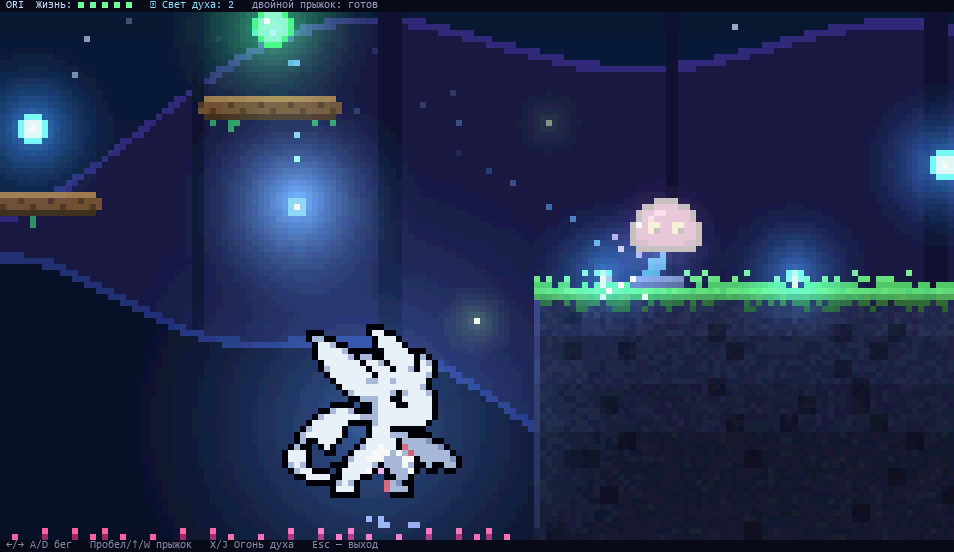
Рис. 22.1. Огонь духа летит во врага
GitСломал — откатываю
Огонь духа так и просит поиграть с числами. Но сначала сохраните главу и перенесите её в main, как обычно. git add . нужен, потому что в главе появились новые файлы shots.h и shots.cpp:
git add .
git commit -m "Глава 22: Огонь духа"
git switch main
git merge study
git switch study
Теперь эксперимент. Откройте player.cpp, найдите в функции updateAttack строку p.attackCooldown = 0.22f; и замените 0.22f на 0.02f. Пересоберите игру и сохраните изменение отдельным коммитом (-am из главы 16 сам добавит изменённый файл):
git commit -am "Стреляем чаще"
Проверьте частые отдельные нажатия: после уменьшения перезарядки игра принимает их чаще. Удержание кнопки по-прежнему не создаёт очередь выстрелов: код использует pressed, а не held. Если такой темп вам не подходит, как найти и отменить именно это изменение?
Что было в коммите: git log -p
git log -p показывает историю вместе с изменениями в каждом коммите, а -1 — только последний коммит:
git log -p -1
commit fd7aa0415bef5aa4ffd7054bbb0e8e51d33a9eb8
Author: Ваше Имя <you@example.com>
Date: Sat Oct 24 22:33:17 2026 +0300
Стреляем чаще
diff --git a/player.cpp b/player.cpp
index fd9c252..0fcd47a 100644
--- a/player.cpp
+++ b/player.cpp
@@ -136,7 +136,7 @@ static void updateAttack(Game& g, const Input& in, float dt) {
Player& p = g.player;
if (p.attackCooldown > 0) p.attackCooldown -= dt;
if (in.attack.pressed && p.attackCooldown <= 0) {
- p.attackCooldown = 0.22f;
+ p.attackCooldown = 0.02f;
fireSpiritFlame(g);
}
}
У вас будут свои номер коммита, имя, почта и дата. Строки ---/+++ называют файл «до» и «после», а @@ -136,7 +136,7 @@ — с какой строки начинается кусок. Если вывод не помещается в окно, Git показывает его постранично, как git diff в главе 7: пробел — листать дальше, q — выйти.
Отменить коммит: git revert
git revert делает новый коммит, который отменяет изменения выбранного. HEAD — это «где вы сейчас»: текущая ветка, а значит, её последний коммит — сейчас это «Стреляем чаще». --no-edit — взять подпись коммита по умолчанию:
git revert --no-edit HEAD
git log --oneline
[study 8360934] Revert "Стреляем чаще"
Date: Sat Oct 24 22:33:22 2026 +0300
1 file changed, 1 insertion(+), 1 deletion(-)
8360934 Revert "Стреляем чаще"
fd7aa04 Стреляем чаще
4ef54bc Глава 22: Огонь духа
b61aaa6 Глава 21: враги
…
Перезарядка снова 0.22f. Обратите внимание: неудачный коммит из истории никуда не делся — рядом с ним появился отменяющий. История честно показывает, что произошло, и в любой момент можно передумать ещё раз. Вместо HEAD можно написать номер любого коммита из git log.
Спасти потерянное: git reflog
Теперь ситуация похуже. Вы начали делать задание 22.2 «Веер» в своей ветке, как договорились в главе 9, и сделали там коммит:
git switch -c homework/22-veer
git commit -am "Веер из трёх снарядов (не доделан)"
git switch study
Вернулись в study — и решили удалить ветку, потому что она больше не нужна:
git branch -d homework/22-veer
Git откажется и предупредит:
error: the branch 'homework/22-veer' is not fully merged
hint: If you are sure you want to delete it, run 'git branch -D homework/22-veer'
hint: Disable this message with "git config advice.forceDeleteBranch false"
«Ветка не влита — точно удалить?» (последняя строка подсказки лишь объясняет, как отключить такие советы, — её можно не читать; в старых версиях Git её нет). Но вы всё же удаляете ветку большой -D:
git branch -D homework/22-veer
Deleted branch homework/22-veer (was a521f71).
Теперь коммит с веером остался без имени, и в git log его не видно. Но Git ещё какое-то время помнит всё, что вы делали. Этот дневник показывает git reflog:
git reflog
8360934 HEAD@{0}: checkout: moving from homework/22-veer to study
a521f71 HEAD@{1}: commit: Веер из трёх снарядов (не доделан)
8360934 HEAD@{2}: checkout: moving from study to homework/22-veer
8360934 HEAD@{3}: revert: Revert "Стреляем чаще"
fd7aa04 HEAD@{4}: commit: Стреляем чаще
4ef54bc HEAD@{5}: checkout: moving from main to study
4ef54bc HEAD@{6}: merge study: Fast-forward
b61aaa6 HEAD@{7}: checkout: moving from study to main
4ef54bc HEAD@{8}: commit: Глава 22: Огонь духа
…
Это пример: у вас номера коммитов будут другими, а строк — больше, ведь Git записывает каждое ваше переключение, слияние и коммит со всех прошлых глав (свежие — сверху). Ищите строку commit: с нужной подписью. Вот он, коммит с веером — здесь a521f71. Создадим ветку прямо на нём (подставьте свой номер из git reflog):
git switch -c homework/22-veer a521f71
Ветка и вся работа в ней вернулись, а вы теперь в ней. Чтобы продолжить главу, вернитесь в study: git switch study. Правило простое: если что-то «пропало» после команд Git, сначала загляните в git reflog — почти всегда оно там.
ФишкаРадар
Углы и atan2 — это радар. Луч крутится по кругу, угол каждой цели вычисляется через atan2f, и цель вспыхивает, когда луч проходит над ней.
Листинг 22.20. Радар: луч, круги дальности и цели 22-radar.cpp
// Фишка главы 22: радар. Луч поворачивается на угол, а угол на каждую цель находит atan2.// Огню духа угол не нужен — ему хватает нормализованной стрелки; здесь же важен именно угол.// Сборка из папки игры (файл лежит в папке fishki):// g++ -O2 -std=c++17 -Wall -Wextra -I. fishki\22-radar.cpp screen.cpp console.cpp mathx.cpp -o radar.exe#define WIN32_LEAN_AND_MEAN#define NOMINMAX#include <windows.h>#include <cmath>#include "console.h"#include "mathx.h"#include "screen.h"constint TARGET_COUNT = 7;constfloat PI = 3.14159265f;struct Target {float x, y; // относительно центра радараfloat glow; // яркость: вспыхивает, когда по цели прошёл луч};int main() { consoleInit(); screenFitToConsole(); Target targets[TARGET_COUNT];for (int i = 0; i < TARGET_COUNT; i++) {float a = randomRange(0, 2 * PI), r = randomRange(6, 26); targets[i] = { cosf(a) * r, sinf(a) * r, 0 }; }float beam = 0; // угол луча в радианахwhile (!keyDown(VK_ESCAPE)) {int cx = screenWidth() / 2, cy = screenHeight() / 2;constfloat R = 28; dimScreen(0.9f); // след луча медленно гаснет// Луч: точки на отрезке от центра под углом beamfor (float d = 0; d < R; d += 0.5f) { putPixel(cx + (int)(cosf(beam) * d), cy + (int)(sinf(beam) * d), rgb(80, 255, 120)); }// Круги дальностиfor (float a = 0; a < 2 * PI; a += 0.02f) {for (int ring = 1; ring <= 3; ring++) { addPixel(cx + (int)(cosf(a) * R * ring / 3), cy + (int)(sinf(a) * R * ring / 3), rgb(20, 80, 40), 0.3f); } }// Цель вспыхивает, если луч сейчас указывает в её сторонуfor (int i = 0; i < TARGET_COUNT; i++) { Target& t = targets[i];float angle = atan2f(t.y, t.x); // направление на цельfloat diff = fabsf(remainderf(angle - beam, 2 * PI)); // разница углов -π..πif (diff < 0.05f) t.glow = 1; t.glow *= 0.97f;for (int dy = -1; dy <= 1; dy++) {for (int dx = -1; dx <= 1; dx++) addPixel(cx + (int)t.x + dx, cy + (int)t.y + dy, rgb(255, 230, 120), t.glow); } } beam += 0.05f; textAdd(LINE_TOP, " Радар: углы, sin, cos и atan2", rgb(220, 230, 255)); textAdd(LINE_BOTTOM, " Esc — выход", rgb(130, 140, 170)); screenPresent(); Sleep(25); } consoleRestore();return0;}
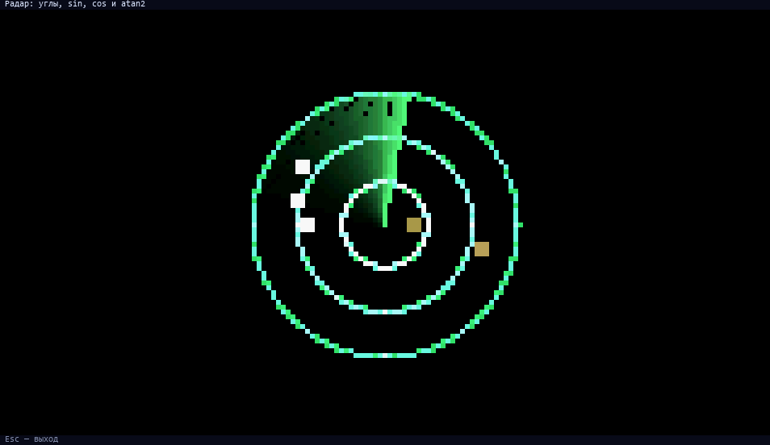
Рис. 22.2. Зелёный луч и вспыхивающие цели
Создайте в папке игры папку fishki (если её ещё нет) и сохраните программу туда как fishki\22-radar.cpp. Соберите её из папки игры вместе с нужными модулями:
Самое хитрое место — разница углов. Углы «ходят по кругу»: 350° и 10° отличаются не на 340°, а на 20°. Функция remainderf(a - b, 2π) возвращает разницу, приведённую к отрезку от −π до π, то есть самый короткий поворот от одного угла к другому. Затухающий след луча — это dimScreen(0.9f) из главы 19: прошлый кадр не стирается, а темнеет.
Весь код шага 22Сверьтесь с готовой программой
Все 39 файлов игры после этой главы — целиком. Откройте файл, чтобы сравнить со своим, а кнопка «Копировать» поможет, если нужно догнать: вставьте код в файл с тем же именем в папке игры.
// ============================================================================// camera.cpp — камера следует за Ори и не выходит за края уровня// ============================================================================#include <cmath>#include "camera.h"#include "config.h"#include "game.h"#include "mathx.h"// Не даём камере заглянуть за края уровняstaticvoid clampCamera(Game& g) {Camera& cam = g.camera;float maxX = (float)(g.world.width * TILE - screenWidth());float maxY = (float)(MAP_H * TILE - screenHeight()); cam.x = clampf(cam.x, 0, fmaxf(maxX, 0));// если окно выше уровня, прижимаем уровень к низу экрана cam.y = maxY < 0 ? maxY : clampf(cam.y, 0, maxY);}// Целые координаты камеры для рисованияstaticvoid updateView(Camera& cam) { cam.viewX = (int)floorf(cam.x); cam.viewY = (int)floorf(cam.y);if (cam.shake > 0) { // тряска: сдвигаем картинку на пару пикселей в случайную сторону cam.viewX += (int)randomRange(-2, 2); cam.viewY += (int)randomRange(-2, 2); }}void drawDisc(constCamera& cam, int cx, int cy, int radius, Color c) {for (int y = -radius; y <= radius; y++) {for (int x = -radius; x <= radius; x++) {if (x * x + y * y <= radius * radius + radius) putWorldPixel(cam, cx + x, cy + y, c); } }}void centerCamera(Game& g) {constBody& b = g.player.body; g.camera.x = b.x + b.w / 2.0f - screenWidth() / 2.0f; g.camera.y = b.y + b.h / 2.0f - screenHeight() / 2.0f; g.camera.shake = 0; clampCamera(g); updateView(g.camera);}void updateCamera(Game& g, float dt) {Camera& cam = g.camera;constBody& b = g.player.body;// Цель: Ори в центре экрана, чуть сдвинутый назад — видно, что впередиfloat targetX = b.x + b.w / 2.0f - screenWidth() / 2.0f + g.player.facing * 18;float targetY = b.y + b.h / 2.0f - screenHeight() * 0.55f;// Каждый кадр проходим часть пути до цели — камера движется плавно cam.x = lerpf(cam.x, targetX, clampf(dt * 5, 0, 1)); cam.y = lerpf(cam.y, targetY, clampf(dt * 5, 0, 1)); clampCamera(g);if (cam.shake > 0) cam.shake -= dt; updateView(cam);}
camera.h26 строкcamera.h
// ============================================================================// camera.h — какая часть мира видна на экране, рисование в координатах мира// ============================================================================#pragma once#include "color.h"#include "screen.h"structGame; // описана в game.h — здесь достаточно знать, что такая структура естьstructCamera {float x, y; // левый верхний угол экрана в миреfloat shake; // сколько ещё секунд трясти экранint viewX, viewY; // то же целыми числами (с тряской) — по ним рисуем};// Поставить пиксель по координатам мира: экран = мир − камераinlinevoid putWorldPixel(constCamera& cam, int wx, int wy, Color c) { putPixel(wx - cam.viewX, wy - cam.viewY, c);}// Закрашенный круг в координатах мираvoid drawDisc(constCamera& cam, int cx, int cy, int radius, Color c);void centerCamera(Game& g); // сразу поставить Ори в центр экранаvoid updateCamera(Game& g, float dt); // камера плавно догоняет Ори
color.h34 строкиcolor.h
// ============================================================================// color.h — цвет пикселя. Цвет хранится в одном числе 0xRRGGBB:// по два шестнадцатеричных разряда на красный, зелёный и синий.// ============================================================================#pragma oncetypedefunsignedintColor;// Ограничить канал диапазоном 0..255inlineint clampChannel(int value) {return value < 0 ? 0 : (value > 255 ? 255 : value);}// Собрать цвет из красного, зелёного и синего (каждый 0..255)inlineColor rgb(int r, int g, int b) {return (Color)(clampChannel(r) << 16 | clampChannel(g) << 8 | clampChannel(b));}// Достать каналы обратноinlineint colorR(Color c) { return (c >> 16) & 255; }inlineint colorG(Color c) { return (c >> 8) & 255; }inlineint colorB(Color c) { return c & 255; }// Смешать два цвета: t = 0 — первый цвет, t = 1 — второйinlineColor mixColor(Color a, Color b, float t) {return rgb((int)(colorR(a) + (colorR(b) - colorR(a)) * t), (int)(colorG(a) + (colorG(b) - colorG(a)) * t), (int)(colorB(a) + (colorB(b) - colorB(a)) * t));}// Изменить яркость: k = 0.5 — вдвое темнее, k = 2 — вдвое ярчеinlineColor scaleColor(Color c, float k) {return rgb((int)(colorR(c) * k), (int)(colorG(c) * k), (int)(colorB(c) * k));}
config.h38 строкconfig.h
// ============================================================================// config.h — настройки игры. Все важные числа собраны здесь,// чтобы их было легко найти и поменять.// ============================================================================#pragma once// Картинкаconstint MAX_SCREEN_W = 320; // наибольшая ширина картинки в пикселяхconstint MAX_SCREEN_H = 200; // наибольшая высота картинки в пикселях// Мирconstint TILE = 8; // сторона тайла в пикселяхconstint MAP_H = 22; // высота уровня в тайлахconstint MAX_MAP_W = 160; // ширина самого широкого уровня в тайлах// Движениеconstfloat RUN_SPEED = 95.0f; // скорость бега, пикселей в секундуconstfloat RUN_ACCEL_GROUND = 900.0f; // разгон и торможение на землеconstfloat RUN_ACCEL_AIR = 600.0f; // в воздухе разгоняться труднееconstfloat GRAVITY = 900.0f; // насколько быстро растёт скорость паденияconstfloat JUMP_SPEED = 320.0f; // скорость в начале прыжкаconstfloat MAX_FALL_SPEED = 360.0f; // быстрее падать нельзяconstfloat DOUBLE_JUMP_SPEED = 280.0f; // второй прыжок в воздухе чуть слабееconstfloat COYOTE_TIME = 0.10f; // сколько секунд можно прыгнуть после схода с краяconstfloat JUMP_BUFFER_TIME = 0.12f; // сколько секунд помнится раннее нажатие прыжка// Ориconstint PLAYER_W = 16; // ширина хитбоксаconstint PLAYER_H = 24; // высота хитбоксаconstint MAX_HP = 5; // сколько жизней может быть// Сколько объектов может существовать одновременноconstint MAX_PARTICLES = 800;constint MAX_LIGHTS = 160;constint MAX_PICKUPS = 80;constint MAX_CHECKPOINTS = 10;constint MAX_ENEMIES = 40;constint MAX_SHOTS = 32;
console.cpp79 строкconsole.cpp
// ============================================================================// console.cpp — всё, что связано с Windows-консолью, собрано в одном файле// ============================================================================#define WIN32_LEAN_AND_MEAN#define NOMINMAX#include <windows.h>#include <cstring>#include "console.h"// Как была настроена консоль до запуска игрыstaticDWORD originalOutMode = 0;staticDWORD originalInMode = 0;staticUINT originalCodePage = 0;// Ctrl+C или закрытие: consoleRestore сначала останавливает writer.// Обработчик делает ограниченную по времени попытку уборки, затем Windows завершает процесс.staticBOOL WINAPI onConsoleEvent(DWORD) { consoleRestore();return FALSE;}void consoleInit() {HANDLE out = GetStdHandle(STD_OUTPUT_HANDLE);HANDLE in = GetStdHandle(STD_INPUT_HANDLE); GetConsoleMode(out, &originalOutMode); GetConsoleMode(in, &originalInMode); originalCodePage = GetConsoleOutputCP(); SetConsoleMode(out, originalOutMode | ENABLE_PROCESSED_OUTPUT | ENABLE_VIRTUAL_TERMINAL_PROCESSING); SetConsoleMode(in, ENABLE_EXTENDED_FLAGS); // выключить выделение мышью: оно ставит вывод на паузу SetConsoleOutputCP(CP_UTF8); SetConsoleCtrlHandler(onConsoleEvent, TRUE); SetConsoleTitleA("Ori");// Отдельный экран, спрятать курсор, очистить экранconstchar* start = "\x1b[?1049h\x1b[?25l\x1b[2J"; consoleWrite(start, (int)strlen(start));}void consoleRestore() {// Обычные цвета, показать курсор, вернуться на основной экранconstchar* finish = "\x1b[0m\x1b[?25h\x1b[?1049l"; consoleWrite(finish, (int)strlen(finish)); consoleFlushInput(); SetConsoleMode(GetStdHandle(STD_OUTPUT_HANDLE), originalOutMode); SetConsoleMode(GetStdHandle(STD_INPUT_HANDLE), originalInMode); SetConsoleOutputCP(originalCodePage);}bool consoleSize(int& cols, int& rows) { CONSOLE_SCREEN_BUFFER_INFO info;if (!GetConsoleScreenBufferInfo(GetStdHandle(STD_OUTPUT_HANDLE), &info)) {returnfalse; } cols = info.srWindow.Right - info.srWindow.Left + 1; rows = info.srWindow.Bottom - info.srWindow.Top + 1;returntrue;}void consoleFlushInput() { FlushConsoleInputBuffer(GetStdHandle(STD_INPUT_HANDLE));}bool keyDown(int virtualKey) {return (GetAsyncKeyState(virtualKey) & 0x8000) != 0;}bool consoleWrite(constchar* data, int length) {if (length < 0) returnfalse;int sent = 0;while (sent < length) {DWORD written = 0;DWORD remaining = (DWORD)(length - sent);if (!WriteFile(GetStdHandle(STD_OUTPUT_HANDLE), data + sent, remaining, &written, NULL) || written == 0 || written > remaining) returnfalse; sent += (int)written; }returntrue;}
console.h13 строкconsole.h
// ============================================================================// console.h — окно консоли Windows: настройка, размер, клавиши, вывод// ============================================================================#pragma oncevoid consoleInit(); // включить цвета и UTF-8, перейти на отдельный экранvoid consoleRestore(); // вернуть консоль в исходное состояниеbool consoleSize(int& cols, int& rows); // видимый размер окна в символахvoid consoleFlushInput(); // выбросить накопившиеся нажатия клавишbool keyDown(int virtualKey); // зажата ли клавиша прямо сейчас// Полностью записать данные; false — ошибка или неполная записьbool consoleWrite(constchar* data, int length);
// ============================================================================// effects.cpp — пулы частиц и источников света// ============================================================================#include <algorithm>#include <cmath>#include <cstring>#include "config.h"#include "effects.h"#include "mathx.h"struct Particle {float x, y, vx, vy;float life, maxLife; // сколько осталось жить и сколько жила бы всегоColor color;bool gravity; // падает ли вниз};struct Light {float x, y, radius;Color color;float power;};// Пулы: частица с life <= 0 — свободное местоstatic Particle particles[MAX_PARTICLES];static Light lights[MAX_LIGHTS];staticint lightCount = 0;void clearParticles() { memset(particles, 0, sizeof(particles));}void spawnParticle(float x, float y, float vx, float vy, float life, Color color, bool gravity) {for (int i = 0; i < MAX_PARTICLES; i++) {if (particles[i].life <= 0) { particles[i] = { x, y, vx, vy, life, life, color, gravity };return; } }}void burst(float x, float y, int count, Color color, float speed, float life, bool gravity) {for (int i = 0; i < count; i++) {float angle = randomRange(0, 6.2832f);float s = randomRange(speed * 0.3f, speed); spawnParticle(x, y, cosf(angle) * s, sinf(angle) * s, randomRange(life * 0.5f, life), color, gravity); }}void updateParticles(float dt) {for (int i = 0; i < MAX_PARTICLES; i++) { Particle& p = particles[i];if (p.life <= 0) continue; p.life -= dt;if (p.gravity) p.vy += GRAVITY * 0.5f * dt; p.vx *= 1.0f - 1.5f * dt; // сопротивление воздуха p.vy *= 1.0f - 1.5f * dt; p.x += p.vx * dt; p.y += p.vy * dt; }}void drawParticles(constCamera& cam) {for (int i = 0; i < MAX_PARTICLES; i++) {const Particle& p = particles[i];if (p.life <= 0) continue;float strength = clampf(p.life / p.maxLife, 0, 1); // гаснет к концу жизни addPixel((int)roundf(p.x) - cam.viewX, (int)roundf(p.y) - cam.viewY, p.color, strength); }}void clearLights() { lightCount = 0;}void addLight(float x, float y, float radius, Color color, float power) {if (lightCount < MAX_LIGHTS) { lights[lightCount] = { x, y, radius, color, power }; lightCount++; }}void applyLights(constCamera& cam) {for (int i = 0; i < lightCount; i++) {const Light& light = lights[i];int cx = (int)light.x - cam.viewX;int cy = (int)light.y - cam.viewY;int r = (int)light.radius;// Проходим только по квадрату вокруг источника и только по видимой частиint x0 = std::max(0, cx - r), x1 = std::min(screenWidth() - 1, cx + r);int y0 = std::max(0, cy - r), y1 = std::min(screenHeight() - 1, cy + r);for (int y = y0; y <= y1; y++) {for (int x = x0; x <= x1; x++) {float dx = (float)(x - cx), dy = (float)(y - cy);float d = sqrtf(dx * dx + dy * dy) / light.radius; // 0 в центре, 1 на краюif (d >= 1) continue; addPixel(x, y, light.color, (1 - d) * (1 - d) * light.power); } } }}
effects.h19 строкeffects.h
// ============================================================================// effects.h — частицы (искры, пыль) и свет// ============================================================================#pragma once#include "camera.h"#include "color.h"// Частицы: живут несколько долей секунды и гаснутvoid clearParticles();void spawnParticle(float x, float y, float vx, float vy, float life, Color color, bool gravity);void burst(float x, float y, int count, Color color, float speed, float life, bool gravity);void updateParticles(float dt);void drawParticles(constCamera& cam);// Свет: источники собираются заново в каждом кадре, потом накладываются на картинкуvoid clearLights();void addLight(float x, float y, float radius, Color color, float power);void applyLights(constCamera& cam);
enemies.cpp210 строкenemies.cpp
// ============================================================================// enemies.cpp — поведение и отрисовка врагов// ============================================================================#include <cmath>#include <cstring>#include "effects.h"#include "enemies.h"#include "game.h"#include "mathx.h"#include "sprites.h"// Слизень: два кадра — обычный и «сплющенный»staticconstchar* SLIME_FRAME_1[] = {"....kkkk....","..kkrrrrkk..",".krrhhrrrrk.",".krhrrrrrrk.","krryyrryyrrk","krrykrrykrrk","krrrrrrrrrrk","kpprrrrrrppk",".kkkkkkkkkk.",};staticconstchar* SLIME_FRAME_2[] = {"............","..kkrrrrkk..",".krrhhrrrrk.",".krhrrrrrrk.","krryyrryyrrk","krrykrrykrrk","krrrrrrrrrrk","kpprrrrrrppk",".kkkkkkkkkk.",};staticconstchar SLIME_KEYS[] = "krphy";staticconstColor SLIME_COLORS[] = { rgb(42, 8, 32), rgb(194, 60, 100), rgb(126, 32, 72), rgb(255, 154, 180), rgb(255, 224, 112) };staticconst Sprite SLIME_SPRITES[2] = { { 12, 9, SLIME_FRAME_1, SLIME_KEYS, SLIME_COLORS }, { 12, 9, SLIME_FRAME_2, SLIME_KEYS, SLIME_COLORS },};// Летучая мышь: крылья вверх и крылья внизstaticconstchar* BAT_FRAME_1[] = {"l............l","ll...kkkk...ll","lll.kbbbbk.lll",".lllbebbeblll.","..llbbbbbbll..","....kbbbbk....",".....k..k.....","..............",};staticconstchar* BAT_FRAME_2[] = {"..............",".....kkkk.....","....kbbbbk....","..llbebbebll..",".lllbbbbbblll.","lll.kbbbbk.lll","ll...k..k...ll","l............l",};staticconstchar BAT_KEYS[] = "kble";staticconstColor BAT_COLORS[] = { rgb(10, 10, 26), rgb(60, 50, 112), rgb(106, 79, 166), rgb(255, 122, 40) };staticconst Sprite BAT_SPRITES[2] = { { 14, 8, BAT_FRAME_1, BAT_KEYS, BAT_COLORS }, { 14, 8, BAT_FRAME_2, BAT_KEYS, BAT_COLORS },};void spawnEnemy(Game& g, EnemyType type, float x, float y) {if (g.enemyCount >= MAX_ENEMIES) return;Enemy& e = g.enemies[g.enemyCount]; memset(&e, 0, sizeof(e)); e.type = type; e.alive = true; e.dir = -1; e.time = randomRange(0, 6.28f); // чтобы враги двигались не в тактif (type == ENEMY_SLIME) { e.hp = 3; e.body = makeBody(x - 2, y + TILE - 9, 12, 9); // ногами на дно клетки } elseif (type == ENEMY_BAT) { e.hp = 2; e.body = makeBody(x - 3, y, 14, 8); } e.homeX = e.body.x; e.homeY = e.body.y; g.enemyCount++;}// Слизень ползёт и разворачивается у стены и на краю обрываstaticvoid updateSlime(Game& g, Enemy& e, float dt) {Body& b = e.body;if (e.knockTime <= 0) b.vx = e.dir * 22.0f; b.vy = fminf(b.vy + GRAVITY * dt, MAX_FALL_SPEED); moveBody(g.world, b, dt);if (e.knockTime <= 0) {if (b.hitWall) e.dir = -e.dir;// Тайл чуть впереди и чуть ниже ног: если он не твёрдый — впереди обрывint frontX = (int)floorf((e.dir > 0 ? b.x + b.w + 1 : b.x - 1) / TILE);int belowY = (int)floorf((b.y + b.h + 1) / TILE);if (b.onGround && !isSolidTile(tileAt(g.world, frontX, belowY))) e.dir = -e.dir; }if (b.y > MAP_H * TILE + 40) e.alive = false; // упал в пропасть}// Летучая мышь: рядом с Ори — летит к нему, иначе кружит у гнездаstaticvoid updateBat(Game& g, Enemy& e, float dt) {Body& b = e.body;constBody& player = g.player.body;float dx = (player.x + player.w / 2.0f) - (b.x + b.w / 2.0f);float dy = (player.y + player.h / 2.0f) - (b.y + b.h / 2.0f);float distance = sqrtf(dx * dx + dy * dy);float ax, ay; // ускорениеif (distance < 110) {// Направление на Ори длиной 1, умноженное на силу разгона, и волнистость полёта ax = dx / fmaxf(distance, 1.0f) * 120; ay = dy / fmaxf(distance, 1.0f) * 120 + sinf(e.time * 6) * 80; e.dir = dx > 0 ? 1 : -1; } else {// Тянемся к точке, которая плавает вокруг гнезда ax = (e.homeX + sinf(e.time * 0.9f) * 24 - b.x) * 2; ay = (e.homeY + sinf(e.time * 2.1f) * 6 - b.y) * 2; }if (e.knockTime <= 0) { b.vx += ax * dt; b.vy += ay * dt;float speed = sqrtf(b.vx * b.vx + b.vy * b.vy);if (speed > 48) { // не быстрее 48 пикселей в секунду b.vx *= 48 / speed; b.vy *= 48 / speed; } } b.vx *= 1.0f - 0.8f * dt; b.vy *= 1.0f - 0.8f * dt; b.x += b.vx * dt; // мыши летают сквозь стены b.y += b.vy * dt;}// Касание с Ори: прыжок сверху ранит врага, иначе ранен Ориstaticvoid checkContact(Game& g, Enemy& e, float dt) {Body& player = g.player.body;constBody& b = e.body;if (!rectsOverlap(player.x, player.y, player.w, player.h, b.x, b.y, b.w, b.h)) return;// Ори падает, и кадр назад его ноги были выше врага — значит, прилетел сверхуfloat feetBefore = player.y + player.h - player.vy * dt;bool stomp = player.vy > 40 && feetBefore <= b.y + 4;if (stomp) { hitEnemy(g, e, 2, player.x + 8 < b.x + b.w / 2.0f ? 1.0f : -1.0f); player.y = b.y - player.h; // ставим Ори на врага: в следующем кадре они уже не касаются player.vy = -250; g.player.canDoubleJump = true; } else { hurtPlayer(g, b.x + b.w / 2.0f, -180); }}void updateEnemies(Game& g, float dt) {for (int i = 0; i < g.enemyCount; i++) {Enemy& e = g.enemies[i];if (!e.alive) continue; e.time += dt;if (e.hurtTime > 0) e.hurtTime -= dt;if (e.knockTime > 0) e.knockTime -= dt;if (e.type == ENEMY_SLIME) { updateSlime(g, e, dt); } elseif (e.type == ENEMY_BAT) { updateBat(g, e, dt); } checkContact(g, e, dt); }}void hitEnemy(Game& g, Enemy& e, int damage, float pushDir) {Body& b = e.body; e.hp -= damage; e.hurtTime = 0.15f;float cx = b.x + b.w / 2.0f, cy = b.y + b.h / 2.0f; burst(cx, cy, 10, rgb(255, 200, 230), 80, 0.35f, false); e.knockTime = 0.2f; b.vx = pushDir * 90; b.vy = (e.type == ENEMY_SLIME) ? -120.0f : -40.0f;if (e.hp <= 0) { e.alive = false;Color body = (e.type == ENEMY_SLIME) ? rgb(220, 60, 110) : rgb(130, 90, 200); burst(cx, cy, 30, body, 110, 0.7f, true); burst(cx, cy, 12, rgb(160, 240, 255), 60, 1.0f, false); g.player.spiritLight += 3; }}void drawEnemies(constGame& g) {for (int i = 0; i < g.enemyCount; i++) {constEnemy& e = g.enemies[i];if (!e.alive) continue;int x = (int)roundf(e.body.x);int y = (int)roundf(e.body.y);bool flip = e.dir > 0; // на картинках враги смотрят влевоbool flash = e.hurtTime > 0; // после удара — белая вспышкаif (e.type == ENEMY_SLIME) {int frame = ((int)(e.time * 6)) % 2; drawSprite(g.camera, SLIME_SPRITES[frame], x, y, flip, flash); } elseif (e.type == ENEMY_BAT) {int frame = ((int)(e.time * 8)) % 2; drawSprite(g.camera, BAT_SPRITES[frame], x, y, flip, flash); } }}
enemies.h30 строкenemies.h
// ============================================================================// enemies.h — враги: слизни, летучие мыши (и босс)// ============================================================================#pragma once#include "physics.h"structGame;enum EnemyType { ENEMY_SLIME, // ползает по платформе ENEMY_BAT, // летает и преследует Ори};structEnemy { EnemyType type;Body body;int hp;int dir; // куда смотрит или ползёт: -1 или 1float hurtTime; // сколько ещё мигать после удараfloat knockTime; // сколько ещё лететь от удараfloat time; // собственное время врага — для анимацииfloat homeX, homeY; // где враг появился (гнездо летучей мыши)bool alive;};void spawnEnemy(Game& g, EnemyType type, float x, float y);void updateEnemies(Game& g, float dt);void hitEnemy(Game& g, Enemy& enemy, int damage, float pushDir); // pushDir — куда отбросить: -1 или 1void drawEnemies(constGame& g);
game.cpp85 строкgame.cpp
// ============================================================================// game.cpp — загрузка уровней и правила игры: что обновлять в каждом кадре// ============================================================================#include <algorithm>#include <cmath>#include <cstring>#include "effects.h"#include "game.h"#include "input.h"#include "levels.h"// Символ карты — объект? Тогда создаём объект и возвращаем пробел.// Иначе это тайл (камень, бревно, шипы) — он остаётся в карте как есть.staticchar placeObject(Game& g, char symbol, float wx, float wy) {World& w = g.world;switch (symbol) {case'P': w.spawnX = wx; w.spawnY = wy + TILE - PLAYER_H; // ногами на дно клеткиreturn' ';case'o': addPickup(g, PICKUP_LIGHT, wx + 4, wy + 4);return' ';case'+': addPickup(g, PICKUP_HEALTH, wx + 4, wy + 4);return' ';case'C': addCheckpoint(g, wx + 4, wy + TILE);return' ';case'S': spawnEnemy(g, ENEMY_SLIME, wx, wy);return' ';case'B': spawnEnemy(g, ENEMY_BAT, wx, wy);return' ';default:return symbol; }}void loadLevel(Game& g, int index) {const LevelInfo& level = levelInfo(index);World& w = g.world; g.levelIndex = index; g.pickupCount = 0; g.checkpointCount = 0; g.enemyCount = 0; clearShots(g); clearParticles();// Ширина уровня — длина самой длинной строки карты w.width = 0;for (int ty = 0; ty < MAP_H; ty++) { w.width = std::max(w.width, (int)strlen(level.rows[ty])); } w.width = std::min(w.width, MAX_MAP_W);for (int ty = 0; ty < MAP_H; ty++) {int length = (int)strlen(level.rows[ty]);for (int tx = 0; tx < w.width; tx++) {char symbol = tx < length ? level.rows[ty][tx] : ' '; w.tiles[ty][tx] = placeObject(g, symbol, (float)(tx * TILE), (float)(ty * TILE)); } w.tiles[ty][w.width] = 0; // конец строки } placePlayer(g.player, w.spawnX, w.spawnY); centerCamera(g);}void startNewGame(Game& g) { g.player.spiritLight = 0; loadLevel(g, 0);}void updateGame(Game& g, constInput& in, float dt) { g.time += dt; updatePlayer(g, in, dt); updateItems(g); updateEnemies(g, dt); updateShots(g, dt); updateParticles(dt); updateCamera(g, dt);}
game.h34 строкиgame.h
// ============================================================================// game.h — вся игра в одной структуре Game. Функции получают её по ссылке,// поэтому глобальные переменные не нужны.// ============================================================================#pragma once#include "config.h"#include "camera.h"#include "enemies.h"#include "items.h"#include "player.h"#include "shots.h"#include "world.h"structInput;structGame {float time; // сколько секунд идёт игра — для анимацийint levelIndex; // номер текущего уровня (с нуля)World world;Camera camera;Player player; Pickup pickups[MAX_PICKUPS];int pickupCount; Checkpoint checkpoints[MAX_CHECKPOINTS];int checkpointCount;Enemy enemies[MAX_ENEMIES];int enemyCount; Shot shots[MAX_SHOTS];};void startNewGame(Game& g);void loadLevel(Game& g, int index);void updateGame(Game& g, constInput& in, float dt);
hud.cpp36 строкhud.cpp
// ============================================================================// hud.cpp — жизни и счёт вверху, подсказка внизу// ============================================================================#include <cstdio>#include "game.h"#include "hud.h"#include "screen.h"constColor HUD_TEXT = rgb(200, 220, 255);constColor HINT_TEXT = rgb(130, 140, 170);// Верхняя строка: жизни, свет духа и подсказка про двойной прыжокstaticvoid drawTopLine(constGame& g) {constPlayer& p = g.player; textAdd(LINE_TOP, " ORI Жизнь: ", HUD_TEXT);for (int i = 0; i < MAX_HP; i++) { textAdd(LINE_TOP, "■ ", i < p.hp ? rgb(110, 255, 150) : rgb(50, 60, 70)); } textAdd(LINE_TOP, " ◆ Свет духа: ", rgb(140, 220, 255)); textAddInt(LINE_TOP, p.spiritLight, rgb(140, 220, 255));if (screenWidth() >= 80) { textAdd(LINE_TOP, p.canDoubleJump ? " двойной прыжок: готов" : " двойной прыжок: —", rgb(150, 160, 190)); }}// Нижняя строка — подсказка по управлению (короче, если окно узкое)staticvoid drawBottomLine() {int w = screenWidth();if (w >= 80) textAdd(LINE_BOTTOM, " ←/→ A/D бег Пробел/↑/W прыжок X/J Огонь духа Esc — выход", HINT_TEXT);}void drawHud(constGame& g) { drawTopLine(g); drawBottomLine();}
hud.h8 строкhud.h
// ============================================================================// hud.h — строки текста над и под картинкой и надписи поверх неё// ============================================================================#pragma oncestructGame;void drawHud(constGame& g);
// ============================================================================// input.h — какие кнопки управления нажаты// ============================================================================#pragma once// Одна кнопка управленияstructKey {bool held; // зажата сейчасbool pressed; // нажата именно в этом кадре (в прошлом кадре не была зажата)};structInput {Key left;Key right;Key jump;Key attack;Key quit;};void readInput(Input& in);
// ============================================================================// items.h — предметы на уровне: свет духа, ячейки жизни, колодцы// ============================================================================#pragma oncestructGame;enum PickupType { PICKUP_LIGHT, // свет духа — очки PICKUP_HEALTH, // ячейка жизни};struct Pickup {float x, y; // центр предмета PickupType type;bool taken; // уже подобран};// Колодец духа — место, где Ори возродитсяstruct Checkpoint {float x, y; // середина основания колодцаbool active; // это последний колодец, которого коснулся Ори};void addPickup(Game& g, PickupType type, float x, float y);void addCheckpoint(Game& g, float x, float y);void updateItems(Game& g); // Ори подбирает предметы и зажигает колодцыvoid drawItems(constGame& g);
levels.cpp51 строкаlevels.cpp
// ============================================================================// levels.cpp — карты уровней. Каждый символ — тайл 8 × 8 пикселей:// # — камень, = — бревно, ^ — шипы, P — старт Ори// o — свет духа, + — ячейка жизни, C — колодец (точка возрождения)// S — слизень, B — летучая мышь// ============================================================================#include "config.h"#include "levels.h"// Лес Нибельstaticconstchar* LEVEL1[MAP_H] = {"## ##################### ##","## ##################### ##","## ##################### ##","## ##################### B ##","## ##################### ##","## ##################### o o + ##","## ##################### ##","## ##################### o C S S ##","## B ##################### ################# ##","## + === ################# o ##","## o o B o ################# B ##","## o === ################# S ##","## o o o o o o o B ===########################### ##","## o === ########################### ##","## o o o o === ########### C S S ########################### ##","## ########### #################### === ########################### ##","## P ### ########### #################### o o o ########################### ##","## ### S C ########### #################### ^^ ########################### T ##","############################### ################### ################################### ##############################################","############################### ################### ################################### ##############################################","###############################^^^^^^###################^^^^^^^^^^^^^^^###################################^^^^^^^^##############################################","################################################################################################################################################################",};// Все уровни по порядкуstaticconst LevelInfo LEVELS[] = { { "Лес Нибель", LEVEL1, rgb(6, 8, 28), rgb(24, 46, 84), // небо rgb(30, 28, 72), rgb(13, 18, 42), // холмы rgb(38, 44, 80), rgb(96, 220, 120), // камень и мохtrue },};int levelCount() {returnsizeof(LEVELS) / sizeof(LEVELS[0]);}const LevelInfo& levelInfo(int index) {return LEVELS[index];}
levels.h18 строкlevels.h
// ============================================================================// levels.h — описания уровней: карта, название и цвета// ============================================================================#pragma once#include "color.h"struct LevelInfo {constchar* name; // название уровняconstchar* const* rows; // карта: MAP_H строк из символовColor skyTop, skyBottom; // небо: цвет вверху и у горизонтаColor hillFar, hillNear; // силуэты дальних и ближних холмовColor rock, moss; // камень и мох на нёмbool stars; // есть ли звёзды на небе};int levelCount(); // сколько всего уровнейconst LevelInfo& levelInfo(int index); // описание уровня по номеру (с нуля)
main.cpp47 строкmain.cpp
// ============================================================================// ORI — консольная игра-платформер, вид сбоку.// Картинка рисуется пикселями из символов '▀' и ANSI-цветов.// Без классов: только данные (структуры) и функции.//// Сборка: build.bat; отладочная сборка: debug.bat.// В скриптах перечислены только исходники игры этого шага.// ============================================================================#include <chrono>#include <thread>#include "console.h"#include "game.h"#include "input.h"#include "render.h"#include "screen.h"int main() { consoleInit(); screenFitToConsole();staticGame game; // вся игра; static — чтобы большая структура не лежала на стеке startNewGame(game);Input input = {};constauto FRAME_TIME = std::chrono::milliseconds(25); // 25 мс — около 40 кадров в секундуauto previous = std::chrono::steady_clock::now();while (true) {auto frameStart = std::chrono::steady_clock::now();float dt = std::chrono::duration<float>(frameStart - previous).count(); previous = frameStart;if (dt > 0.05f) dt = 0.05f; // после долгой паузы не прыгаем далеко вперёд screenFitToConsole(); consoleFlushInput(); readInput(input);if (input.quit.pressed) break; updateGame(game, input, dt); renderGame(game); screenPresent();auto elapsed = std::chrono::steady_clock::now() - frameStart;if (elapsed < FRAME_TIME) std::this_thread::sleep_for(FRAME_TIME - elapsed); } consoleRestore();return0;}
mathx.cpp12 строкmathx.cpp
// ============================================================================// mathx.cpp — генератор случайных чисел// ============================================================================#include "mathx.h"// Состояние генератора: из него получается следующее «случайное» числоstaticunsignedint randomSeed = 12345u;float randomRange(float a, float b) { randomSeed = randomSeed * 1664525u + 1013904223u;return a + (b - a) * ((randomSeed >> 8) / 16777216.0f);}
mathx.h22 строкиmathx.h
// ============================================================================// mathx.h — маленькие математические помощники// ============================================================================#pragma once// Зажать число между lo и hiinlineint clampi(int v, int lo, int hi) { return v < lo ? lo : (v > hi ? hi : v); }inlinefloat clampf(float v, float lo, float hi) { return v < lo ? lo : (v > hi ? hi : v); }// Плавный переход: t = 0 — a, t = 1 — b, t = 0.5 — ровно посерединеinlinefloat lerpf(float a, float b, float t) { return a + (b - a) * t; }// «Случайное», но всегда одинаковое число для пары координат.// Нужно для текстур: камень не должен «кипеть» от кадра к кадру.inlineunsignedint hash2(int x, int y) {unsignedint h = (unsignedint)x * 374761393u + (unsignedint)y * 668265263u; h = (h ^ (h >> 13)) * 1274126177u;return h ^ (h >> 16);}// Случайное число от a до b — при каждом вызове новоеfloat randomRange(float a, float b);
physics.cpp87 строкphysics.cpp
// ============================================================================// physics.cpp — движение и столкновения с тайлами// ============================================================================#include <cmath>#include "config.h"#include "physics.h"Body makeBody(float x, float y, int w, int h) {Body b; b.x = x; b.y = y; b.vx = 0; b.vy = 0; b.w = w; b.h = h; b.onGround = false; b.hitWall = false;return b;}bool rectSolid(constWorld& world, float x, float y, float w, float h) {// Номера тайлов, которые задевает прямоугольник. 0.01 — чтобы прямоугольник,// стоящий ровно на границе тайла, не считался залезшим в соседний.int tx0 = (int)floorf(x / TILE), tx1 = (int)floorf((x + w - 0.01f) / TILE);int ty0 = (int)floorf(y / TILE), ty1 = (int)floorf((y + h - 0.01f) / TILE);for (int ty = ty0; ty <= ty1; ty++) {for (int tx = tx0; tx <= tx1; tx++) {if (isSolidTile(tileAt(world, tx, ty))) returntrue; } }returnfalse;}bool rectTouchesTile(constWorld& world, float x, float y, float w, float h, char tile) {int tx0 = (int)floorf(x / TILE), tx1 = (int)floorf((x + w - 0.01f) / TILE);int ty0 = (int)floorf(y / TILE), ty1 = (int)floorf((y + h - 0.01f) / TILE);for (int ty = ty0; ty <= ty1; ty++) {for (int tx = tx0; tx <= tx1; tx++) {if (tileAt(world, tx, ty) == tile) returntrue; } }returnfalse;}bool rectsOverlap(float ax, float ay, float aw, float ah, float bx, float by, float bw, float bh) {return ax < bx + bw && ax + aw > bx && ay < by + bh && ay + ah > by;}void moveBody(constWorld& world, Body& b, float dt) { b.onGround = false; b.hitWall = false;// Большой сдвиг делим на шаги не длиннее 3 пикселей,// иначе быстрое тело может проскочить сквозь тонкую стенуfloat maxMove = fmaxf(fabsf(b.vx), fabsf(b.vy)) * dt;int steps = (int)ceilf(maxMove / 3.0f);if (steps < 1) steps = 1;float stepDt = dt / steps;for (int s = 0; s < steps; s++) {// Сначала по горизонталиfloat nx = b.x + b.vx * stepDt;if (rectSolid(world, nx, b.y, (float)b.w, (float)b.h)) {if (b.vx > 0) { nx = floorf((nx + b.w) / TILE) * TILE - b.w; // прижаться к стене справа } else { nx = (floorf(nx / TILE) + 1) * TILE; // прижаться к стене слева } b.vx = 0; b.hitWall = true; } b.x = nx;// Потом по вертикалиfloat ny = b.y + b.vy * stepDt;if (rectSolid(world, b.x, ny, (float)b.w, (float)b.h)) {if (b.vy > 0) { ny = floorf((ny + b.h) / TILE) * TILE - b.h; // встали на пол b.onGround = true; } else { ny = (floorf(ny / TILE) + 1) * TILE; // ударились о потолок } b.vy = 0; } b.y = ny; }}
physics.h28 строкphysics.h
// ============================================================================// physics.h — тела, которые двигаются и сталкиваются с тайлами// ============================================================================#pragma once#include "world.h"structBody {float x, y; // левый верхний угол хитбокса в миреfloat vx, vy; // скорость, пикселей в секунду (vy > 0 — вниз)int w, h; // размер хитбоксаbool onGround; // стоит на чём-то твёрдомbool hitWall; // в этом кадре упёрлось в стену};Body makeBody(float x, float y, int w, int h); // неподвижное тело в точке (x, y)// Есть ли твёрдые тайлы в прямоугольникеbool rectSolid(constWorld& world, float x, float y, float w, float h);// Сдвинуть тело на скорость × dt, не пуская его в твёрдые тайлыvoid moveBody(constWorld& world, Body& body, float dt);// Касается ли прямоугольник тайла нужного вида (например, шипов)bool rectTouchesTile(constWorld& world, float x, float y, float w, float h, char tile);// Пересекаются ли два прямоугольникаbool rectsOverlap(float ax, float ay, float aw, float ah, float bx, float by, float bw, float bh);
// ============================================================================// player.h — Ори: управление, прыжки, жизни// ============================================================================#pragma once#include "physics.h"structGame; // описаны в других файлах — здесь достаточно объявленийstructInput;structPlayer {Body body; // положение, скорость и хитбоксint facing; // куда смотрит: -1 влево, 1 вправоfloat animTime; // время для анимации бегаbool canDoubleJump; // прыжок в воздухе ещё не потраченfloat coyoteTime; // сколько ещё можно прыгнуть после схода с краяfloat jumpBuffer; // сколько ещё помнить раннее нажатие прыжкаint hp; // жизниint spiritLight; // собранный свет духаfloat invulnerable; // сколько ещё секунд Ори неуязвим после удараfloat knockback; // сколько ещё секунд Ори отброшен ударомfloat respawnX, respawnY; // где возродиться — у последнего колодцаfloat attackCooldown; // перезарядка Огня духаfloat seinX, seinY; // Сейн — огонёк-спутник};// Поставить Ори в точку (x, y) и сбросить его состояние (жизни, прыжки...)void placePlayer(Player& player, float x, float y);void updatePlayer(Game& g, constInput& in, float dt);void drawPlayer(constGame& g);void hurtPlayer(Game& g, float fromX, float kickY); // удар: fromX — откуда пришёл ударvoid respawnPlayer(Game& g); // вернуть Ори к колодцуvoid drawSein(constGame& g);
render.cpp213 строкrender.cpp
// ============================================================================// render.cpp — фон, тайлы и порядок рисования кадра// ============================================================================#include <cmath>#include "effects.h"#include "game.h"#include "hud.h"#include "levels.h"#include "mathx.h"#include "render.h"#include "screen.h"// Фон из трёх слоёв, которые движутся медленнее камеры (параллакс):// дальние холмы, стволы деревьев и ближние холмыstaticvoid drawBackground(constGame& g) {const LevelInfo& level = levelInfo(g.levelIndex);constCamera& cam = g.camera;int w = screenWidth(), h = screenHeight();// Высоты холмов и стволы считаем один раз на столбец — синус считается долгоfloat farHill[MAX_SCREEN_W], nearHill[MAX_SCREEN_W];bool trunk[MAX_SCREEN_W];for (int x = 0; x < w; x++) {float farX = x + cam.viewX * 0.25f; // дальний слой движется в 4 раза медленнее farHill[x] = 70 + 16 * sinf(farX * 0.021f) + 8 * sinf(farX * 0.057f + 1.3f);float nearX = x + cam.viewX * 0.55f; nearHill[x] = 118 + 12 * sinf(nearX * 0.033f + 2.0f) + 5 * sinf(nearX * 0.09f);int cell = (int)floorf(nearX / 40); // одно дерево на каждые 40 пикселейfloat center = cell * 40.0f + (float)(hash2(cell, 7) % 24) + 8;float halfWidth = 1.0f + (float)(hash2(cell, 9) % 3); trunk[x] = fabsf(nearX - center) <= halfWidth; }Color farRim = scaleColor(level.hillFar, 1.7f); // контровой свет на гребне холмаColor nearRim = scaleColor(level.hillNear, 2.8f);Color trunkColor = scaleColor(level.hillNear, 1.25f);for (int y = 0; y < h; y++) {float worldY = (float)(y + cam.viewY);Color sky = mixColor(level.skyTop, level.skyBottom, clampf((worldY + 40) / (MAP_H * TILE + 60.0f), 0, 1));float farY = y + cam.viewY * 0.4f + 24;float nearY = y + cam.viewY * 0.7f + 10;for (int x = 0; x < w; x++) {Color c = sky;if (level.stars && worldY < 100) { // звезда — редкий пиксель, который мерцаетunsignedint star = hash2((int)(x + cam.viewX * 0.08f), (int)(y + cam.viewY * 0.08f));if (star % 500 == 0) {float twinkle = 0.5f + 0.5f * sinf(g.time * 2 + (star >> 10) % 100); c = mixColor(c, rgb(200, 220, 255), 0.3f + 0.6f * twinkle); } }if (farY > farHill[x]) c = (farY - farHill[x] < 1.5f) ? farRim : mixColor(level.hillFar, sky, 0.25f);if (trunk[x] && nearY < nearHill[x] + 4) c = trunkColor;if (nearY > nearHill[x]) c = (nearY - nearHill[x] < 1.5f) ? nearRim : level.hillNear; putPixel(x, y, c); } }}// Цвет пикселя (lx, ly) внутри тайла (tx, ty). opaque = false — пиксель прозрачный.staticColor tileColor(constGame& g, char tile, int tx, int ty, int lx, int ly, bool& opaque) {constWorld& world = g.world;int wx = tx * TILE + lx, wy = ty * TILE + ly;unsignedint noise = hash2(wx, wy); opaque = true;if (tile == '#') {const LevelInfo& level = levelInfo(g.levelIndex);int n = (int)(noise % 13) - 6; // зернистость: каждый пиксель чуть светлее или темнееColor c = rgb(colorR(level.rock) + n, colorG(level.rock) + n, colorB(level.rock) + n);if (hash2(wx / 3, wy / 3) % 9 == 0) c = scaleColor(c, 0.75f); // трещины// Тайл смотрит на соседей: края, тени и мохbool emptyUp = !isSolidTile(tileAt(world, tx, ty - 1));bool emptyLeft = !isSolidTile(tileAt(world, tx - 1, ty));bool emptyRight = !isSolidTile(tileAt(world, tx + 1, ty));bool emptyDown = !isSolidTile(tileAt(world, tx, ty + 1));if ((emptyLeft && lx == 0) || (emptyRight && lx == 7)) c = scaleColor(level.rock, 1.55f);if (emptyDown && ly == 7) c = scaleColor(level.rock, 0.55f);if (emptyUp) {Color grass = rgb(colorR(level.moss) + n * 2, colorG(level.moss) + n, colorB(level.moss));if (ly == 0) c = grass;elseif (ly == 1) c = scaleColor(grass, 0.78f);elseif (ly == 2 && noise % 3 != 0) c = scaleColor(level.moss, 0.5f);elseif (ly == 3 && noise % 3 == 0) c = scaleColor(level.moss, 0.45f); } else {// Чем глубже в скале, тем темнееint depth = 1 + isSolidTile(tileAt(world, tx, ty - 2)) + isSolidTile(tileAt(world, tx, ty - 3)); c = scaleColor(c, 1.0f - depth * 0.12f); }return c; }if (tile == '=') {// Бревно: светлый верх, кора с наклонными штрихами, снизу свисает мохbool leftEnd = tileAt(world, tx - 1, ty) != '=';bool rightEnd = tileAt(world, tx + 1, ty) != '=';bool corner = (leftEnd && lx == 0) || (rightEnd && lx == 7);if (ly == 0 || ly == 3) {if (corner) { // скруглённые концы opaque = false;return0; }return ly == 0 ? rgb(160, 122, 80) : rgb(70, 48, 32); }if (ly <= 2) return (wx + ly * 3) % 5 == 0 ? rgb(84, 58, 40) : rgb(112, 80, 52);unsignedint moss = hash2(wx, 77);if (moss % 4 == 0 && ly < 4 + (int)(moss >> 8) % 4) return rgb(50, 150, 100); opaque = false;return0; }if (tile == '^') {// Шипы: у каждого столбца своя высота колючкиstaticconstint SPIKE_HEIGHT[8] = { 3, 6, 8, 5, 2, 7, 4, 6 };int spike = SPIKE_HEIGHT[(lx + tx * 3) % 8];int up = 7 - ly;if (up < spike) {if (up == spike - 1) return rgb(250, 100, 160); // ярко-розовый кончикreturn mixColor(rgb(70, 15, 45), rgb(180, 45, 110), up / 7.0f); }if (ly >= 6) return rgb(60, 15, 40); opaque = false;return0; } opaque = false;return0;}// Трава и светящийся гриб в пустой клетке над камнемstaticvoid drawGrass(constGame& g, int tx, int ty) {constCamera& cam = g.camera;for (int lx = 0; lx < TILE; lx++) {int wx = tx * TILE + lx;unsignedint h = hash2(wx, ty * 31);if (h % 3 != 0) putWorldPixel(cam, wx, ty * TILE + 7, rgb(80, 200, 110));if (h % 4 == 0) putWorldPixel(cam, wx, ty * TILE + 6, rgb(110, 225, 130));if (h % 13 == 0) putWorldPixel(cam, wx, ty * TILE + 5, rgb(120, 240, 150)); }if (hash2(tx, ty) % 9 != 0) return; // гриб растёт в каждой девятой клеткеint mx = tx * TILE + 3, my = ty * TILE; putWorldPixel(cam, mx, my + 7, rgb(200, 200, 225)); putWorldPixel(cam, mx, my + 6, rgb(200, 200, 225)); putWorldPixel(cam, mx - 1, my + 5, rgb(90, 200, 255)); putWorldPixel(cam, mx, my + 5, rgb(160, 235, 255)); putWorldPixel(cam, mx + 1, my + 5, rgb(90, 200, 255)); addLight((float)mx, (float)(my + 5), 14, rgb(60, 150, 220), 0.6f);}staticvoid drawTiles(constGame& g) {constCamera& cam = g.camera;// Рисуем только видимые тайлы и по одному запасному с каждой стороныint tx0 = cam.viewX / TILE - 1, tx1 = (cam.viewX + screenWidth()) / TILE + 1;int ty0 = (int)floorf(cam.viewY / (float)TILE) - 1, ty1 = (cam.viewY + screenHeight()) / TILE + 1;for (int ty = ty0; ty <= ty1; ty++) {if (ty < 0 || ty >= MAP_H) continue;for (int tx = tx0; tx <= tx1; tx++) {char tile = tileAt(g.world, tx, ty);if (tile == ' ') {if (tileAt(g.world, tx, ty + 1) == '#') drawGrass(g, tx, ty);continue; }for (int ly = 0; ly < TILE; ly++) {for (int lx = 0; lx < TILE; lx++) {bool opaque;Color c = tileColor(g, tile, tx, ty, lx, ly, opaque);if (opaque) putWorldPixel(cam, tx * TILE + lx, ty * TILE + ly, c); } } } }}// Свет от движущихся объектов и светлячковstaticvoid addActorLights(constGame& g) {constPlayer& p = g.player;float cx = p.body.x + p.body.w / 2.0f, cy = p.body.y + p.body.h / 2.0f; addLight(cx, cy, 50, rgb(60, 100, 150), 0.8f); // Ори светится addLight(p.seinX, p.seinY, 22, rgb(120, 200, 255), 0.8f); // и Сейнfor (int i = 0; i < MAX_SHOTS; i++) {const Shot& s = g.shots[i];if (!s.alive) continue; addLight(s.x, s.y, 18, rgb(80, 170, 255), 0.9f); }for (int i = 0; i < g.enemyCount; i++) {constEnemy& e = g.enemies[i];if (!e.alive) continue;if (e.type == ENEMY_SLIME) { addLight(e.body.x + 6, e.body.y + 5, 12, rgb(120, 20, 50), 0.5f); } elseif (e.type == ENEMY_BAT) { addLight(e.body.x + 7, e.body.y + 4, 10, rgb(140, 60, 20), 0.5f); } }for (int i = 0; i < 24; i++) { // светлячки медленно плавают по синусам и мигаютfloat fx = (float)(hash2(i, 1) % (g.world.width * TILE)) + sinf(g.time * 0.5f + i) * 20;float fy = (float)(hash2(i, 2) % (MAP_H * TILE - 40)) + sinf(g.time * 0.7f + i * 2) * 10;float blink = 0.5f + 0.5f * sinf(g.time * 3 + i * 1.7f); addPixel((int)fx - g.camera.viewX, (int)fy - g.camera.viewY, rgb(200, 255, 140), blink); addLight(fx, fy, 8, rgb(110, 160, 60), blink * 0.5f); }}void renderGame(constGame& g) { clearLights(); drawBackground(g); drawTiles(g); drawItems(g); addActorLights(g); // свет кладём до персонажей, чтобы они остались чёткими applyLights(g.camera); drawEnemies(g); drawPlayer(g); drawShots(g); drawSein(g); drawParticles(g.camera); drawHud(g);}
render.h8 строкrender.h
// ============================================================================// render.h — рисование кадра целиком// ============================================================================#pragma oncestructGame;void renderGame(constGame& g); // нарисовать мир, персонажей и текст в картинку экрана
screen.cpp200 строкscreen.cpp
// ============================================================================// screen.cpp — картинка в памяти и её вывод в консоль ANSI-командами.// Одна клетка консоли = два пикселя: символ '▀' рисует верхний пиксель// цветом текста, а нижний остаётся цветом фона.// ============================================================================#include <cstdio>#include <cstring>#include "config.h"#include "console.h"#include "mathx.h"#include "screen.h"// ---------------------------------------------------------------------------// Данные модуля (static — видны только в этом файле)// ---------------------------------------------------------------------------staticColor pixels[MAX_SCREEN_H][MAX_SCREEN_W];staticint width = 120; // размер картинки в пикселях, подстраивается под окноstaticint height = 70;staticint consoleCols = 0;staticint consoleRows = 0;// Текст кадра: строки над и под картинкойconstint MAX_SEGMENTS = 32;constint MAX_TEXT = 128;struct TextSegment {char text[MAX_TEXT];Color color;};static TextSegment lineSegments[2][MAX_SEGMENTS];staticint lineSegmentCount[2] = { 0, 0 };// Сюда собирается весь текст кадра вместе с ANSI-командамиstaticchar out[4 * 1024 * 1024];staticint outLength = 0;// ---------------------------------------------------------------------------// Размер и пиксели// ---------------------------------------------------------------------------bool screenFitToConsole() {int cols, rows;if (!consoleSize(cols, rows)) returnfalse;if (cols == consoleCols && rows == consoleRows) returnfalse; consoleCols = cols; consoleRows = rows;// На столбец уже окна: символ в последнем столбце переносит курсор на новую строку width = clampi(cols - 1, 40, MAX_SCREEN_W);// Две строки занимает текст, в каждой строке консоли два пикселя; высота чётная height = clampi((rows - 2) * 2, 40, MAX_SCREEN_H) & ~1;constchar* clear = "\x1b[0m\x1b[2J"; consoleWrite(clear, (int)strlen(clear));returntrue;}int screenWidth() { return width; }int screenHeight() { return height; }void putPixel(int x, int y, Color c) {if (x >= 0 && y >= 0 && x < width && y < height) { pixels[y][x] = c; }}void addPixel(int x, int y, Color c, float strength) {if (x < 0 || y < 0 || x >= width || y >= height) return;Color old = pixels[y][x]; pixels[y][x] = rgb(colorR(old) + (int)(colorR(c) * strength), colorG(old) + (int)(colorG(c) * strength), colorB(old) + (int)(colorB(c) * strength));}void dimScreen(float k) {for (int y = 0; y < height; y++) {for (int x = 0; x < width; x++) { pixels[y][x] = scaleColor(pixels[y][x], k); } }}// ---------------------------------------------------------------------------// Текст// ---------------------------------------------------------------------------void textAdd(TextLine line, constchar* text, Color color) {int& count = lineSegmentCount[line];if (count >= MAX_SEGMENTS) return; snprintf(lineSegments[line][count].text, MAX_TEXT, "%s", text); lineSegments[line][count].color = color; count++;}void textAddInt(TextLine line, int value, Color color) {char buffer[16]; snprintf(buffer, sizeof(buffer), "%d", value); textAdd(line, buffer, color);}// ---------------------------------------------------------------------------// Сборка кадра из ANSI-команд// ---------------------------------------------------------------------------staticvoid emit(constchar* s) {int n = (int)strlen(s); memcpy(out + outLength, s, n); outLength += n;}// Число цифрами — вручную: так быстрее, чем через snprintfstaticvoid emitInt(int value) {char digits[12];int n = 0;if (value < 0) { out[outLength++] = '-'; value = -value; }do { digits[n++] = (char)('0' + value % 10); value /= 10; } while (value > 0);while (n > 0) { out[outLength++] = digits[--n]; }}// Команда цвета: фона (background = true) или текстаstaticvoid emitColor(bool background, Color c) { emit(background ? "\x1b[48;2;" : "\x1b[38;2;"); emitInt(colorR(c)); emit(";"); emitInt(colorG(c)); emit(";"); emitInt(colorB(c)); emit("m");}staticvoid emitLine(TextLine line) { emitColor(true, rgb(8, 10, 24));for (int i = 0; i < lineSegmentCount[line]; i++) { emitColor(false, lineSegments[line][i].color); emit(lineSegments[line][i].text); } emit("\x1b[K\x1b[0m"); // закрасить строку до конца и сбросить цвета}staticvoid emitPixels() {Color lastFg = 0xFFFFFFFF; // какой цвет текста сейчас включён (такого цвета не бывает — «никакой»)Color lastBg = 0xFFFFFFFF;for (int y = 0; y + 1 < height; y += 2) {for (int x = 0; x < width; x++) {// Огрубляем цвета: глаз разницы не видит, а одинаковых соседей большеColor top = pixels[y][x] & 0xF8F8F8;Color bottom = pixels[y + 1][x] & 0xF8F8F8;if (top == bottom) {// Оба пикселя одинаковые — хватит пробела с цветом фонаif (bottom != lastBg) { emitColor(true, bottom); lastBg = bottom; } out[outLength++] = ' '; } else {if (top != lastFg) { emitColor(false, top); lastFg = top; }if (bottom != lastBg) { emitColor(true, bottom); lastBg = bottom; } emit("\xE2\x96\x80"); // ▀ } } emit("\x1b[0m\r\n"); lastFg = 0xFFFFFFFF; lastBg = 0xFFFFFFFF; }}void screenPresent() {int availableCols, availableRows;if (consoleSize(availableCols, availableRows) && (availableCols < screenWidth() + 1 || availableRows < screenHeight() / 2 + 2)) {constchar* warning = "\x1b[0m\x1b[2J\x1b[HУвеличьте окно консоли";// In a very narrow window use a short ASCII hint to avoid wrapping.if (availableCols < 24) warning = "\x1b[0m\x1b[2J\x1b[HResize";if (availableCols < 7) warning = "\x1b[0m\x1b[2J"; consoleWrite(warning, (int)strlen(warning)); lineSegmentCount[0] = lineSegmentCount[1] = 0;return; } outLength = 0; emit("\x1b[H"); // курсор в левый верхний угол: рисуем поверх прошлого кадра emitLine(LINE_TOP); emit("\r\n"); emitPixels(); emitLine(LINE_BOTTOM); consoleWrite(out, outLength);// Текст задаётся заново в каждом кадре lineSegmentCount[LINE_TOP] = 0; lineSegmentCount[LINE_BOTTOM] = 0;}
screen.h22 строкиscreen.h
// ============================================================================// screen.h — картинка из пикселей и строки текста над и под ней.// Сначала рисуем кадр в памяти, потом screenPresent() показывает его целиком.// ============================================================================#pragma once#include "color.h"bool screenFitToConsole(); // подогнать размер картинки под окно; true — размер изменилсяint screenWidth();int screenHeight();void putPixel(int x, int y, Color c);void addPixel(int x, int y, Color c, float strength); // прибавить цвет — так рисуется светvoid dimScreen(float k); // затемнить всю картинку// Текст: строка над картинкой и строка под нейenum TextLine { LINE_TOP, LINE_BOTTOM };void textAdd(TextLine line, constchar* text, Color color);void textAddInt(TextLine line, int value, Color color);void screenPresent(); // показать кадр в консоли
shots.cpp124 строкиshots.cpp
// ============================================================================// shots.cpp — полёт снарядов, самонаведение и попадания// ============================================================================#include <cmath>#include <cstring>#include "effects.h"#include "game.h"#include "mathx.h"#include "shots.h"constfloat FLAME_SPEED = 230.0f; // скорость Огня духаconstfloat FLAME_RANGE = 120.0f; // дальше этого цель не ищемvoid clearShots(Game& g) { memset(g.shots, 0, sizeof(g.shots));}// Номер свободного места в пуле снарядов или -1, если все занятыstaticint freeShotSlot(constGame& g) {for (int i = 0; i < MAX_SHOTS; i++) {if (!g.shots[i].alive) return i; }return -1;}// Номер ближайшего живого врага в радиусе FLAME_RANGE от точки или -1staticint nearestEnemy(constGame& g, float x, float y) {int best = -1;float bestDistance = FLAME_RANGE;for (int i = 0; i < g.enemyCount; i++) {constEnemy& e = g.enemies[i];if (!e.alive) continue;float dx = e.body.x + e.body.w / 2.0f - x;float dy = e.body.y + e.body.h / 2.0f - y;float distance = sqrtf(dx * dx + dy * dy);if (distance < bestDistance) { bestDistance = distance; best = i; } }return best;}void fireSpiritFlame(Game& g) {int slot = freeShotSlot(g);if (slot < 0) return;constPlayer& p = g.player; Shot& s = g.shots[slot]; s.alive = true; s.x = p.seinX; s.y = p.seinY; s.life = 0.7f; s.target = nearestEnemy(g, p.seinX, p.seinY);if (s.target >= 0) {// Направление на цель длиной 1, умноженное на скоростьconstBody& t = g.enemies[s.target].body;float dx = t.x + t.w / 2.0f - s.x, dy = t.y + t.h / 2.0f - s.y;float distance = fmaxf(sqrtf(dx * dx + dy * dy), 1.0f); s.vx = dx / distance * FLAME_SPEED; s.vy = dy / distance * FLAME_SPEED; } else { s.vx = p.facing * FLAME_SPEED; // цели нет — летим вперёд s.vy = 0; } burst(s.x, s.y, 6, rgb(180, 240, 255), 50, 0.2f, false);}// Огонь духа: поворачивает к цели, гаснет в стене или во врагеstaticvoid updateFlame(Game& g, Shot& s, float dt) {if (s.target >= 0 && s.target < g.enemyCount && g.enemies[s.target].alive) {// Самонаведение: каждый кадр немного поворачиваем скорость к целиconstBody& t = g.enemies[s.target].body;float dx = t.x + t.w / 2.0f - s.x, dy = t.y + t.h / 2.0f - s.y;float distance = fmaxf(sqrtf(dx * dx + dy * dy), 1.0f); s.vx = lerpf(s.vx, dx / distance * FLAME_SPEED, clampf(dt * 10, 0, 1)); s.vy = lerpf(s.vy, dy / distance * FLAME_SPEED, clampf(dt * 10, 0, 1)); } spawnParticle(s.x, s.y, randomRange(-10, 10), randomRange(-10, 10), 0.25f, rgb(110, 200, 255), false);float distance = fmaxf(fabsf(s.vx), fabsf(s.vy)) * dt;int steps = (int)ceilf(distance / 2.0f);if (steps < 1) steps = 1;float stepDt = dt / steps;for (int step = 0; step < steps; step++) { s.x += s.vx * stepDt; s.y += s.vy * stepDt;if (isSolidTile(tileAt(g.world, (int)floorf(s.x / TILE), (int)floorf(s.y / TILE)))) { s.alive = false; burst(s.x, s.y, 8, rgb(170, 230, 255), 50, 0.3f, false);return; }for (int i = 0; i < g.enemyCount; i++) {Enemy& e = g.enemies[i];if (!e.alive) continue;if (rectsOverlap(s.x - 2, s.y - 2, 4, 4, e.body.x, e.body.y, e.body.w, e.body.h)) { hitEnemy(g, e, 1, s.vx > 0 ? 1.0f : -1.0f); s.alive = false;return; } } }}void updateShots(Game& g, float dt) {for (int i = 0; i < MAX_SHOTS; i++) { Shot& s = g.shots[i];if (!s.alive) continue; s.life -= dt;if (s.life <= 0) { s.alive = false;continue; } updateFlame(g, s, dt); }}void drawShots(constGame& g) {for (int i = 0; i < MAX_SHOTS; i++) {const Shot& s = g.shots[i];if (!s.alive) continue; drawDisc(g.camera, (int)s.x, (int)s.y, 1, rgb(140, 220, 255)); putWorldPixel(g.camera, (int)s.x, (int)s.y, rgb(255, 255, 255)); }}
shots.h19 строкshots.h
// ============================================================================// shots.h — снаряды: Огонь духа Сейна// ============================================================================#pragma oncestructGame;struct Shot {float x, y; // центр снарядаfloat vx, vy; // скоростьfloat life; // сколько ещё секунд лететьint target; // номер врага-цели в g.enemies или -1bool alive;};void clearShots(Game& g);void fireSpiritFlame(Game& g); // Сейн стреляет в ближайшего врагаvoid updateShots(Game& g, float dt);void drawShots(constGame& g);
sprites.cpp28 строкsprites.cpp
// ============================================================================// sprites.cpp — рисование спрайтов// ============================================================================#include "sprites.h"// Найти цвет символа в палитре. false — такого символа нет.staticbool findColor(const Sprite& sprite, char symbol, Color& color) {for (int k = 0; sprite.keys[k] != 0; k++) {if (sprite.keys[k] == symbol) { color = sprite.colors[k];returntrue; } }returnfalse;}void drawSprite(constCamera& cam, const Sprite& sprite, int wx, int wy, bool flip, bool flash) {for (int y = 0; y < sprite.h; y++) {for (int x = 0; x < sprite.w; x++) {// При отражении читаем строку справа налевоchar symbol = sprite.rows[y][flip ? (sprite.w - 1 - x) : x];Color color;if (symbol == '.' || !findColor(sprite, symbol, color)) continue;if (flash) color = mixColor(color, rgb(255, 255, 255), 0.75f); putWorldPixel(cam, wx + x, wy + y, color); } }}
sprites.h17 строкsprites.h
// ============================================================================// sprites.h — картинки персонажей, записанные символами// ============================================================================#pragma once#include "camera.h"#include "color.h"struct Sprite {int w, h; // размер в пикселяхconstchar* const* rows; // строки картинки; '.' — прозрачный пиксельconstchar* keys; // какие символы встречаются в картинкеconstColor* colors; // каким цветом рисовать каждый символ из keys};// Нарисовать спрайт в мире. flip — отразить по горизонтали, flash — высветлить (после удара)void drawSprite(constCamera& cam, const Sprite& sprite, int wx, int wy, bool flip, bool flash);
world.cpp14 строкworld.cpp
// ============================================================================// world.cpp — доступ к тайлам уровня// ============================================================================#include "world.h"char tileAt(constWorld& world, int tx, int ty) {if (tx < 0 || tx >= world.width) return'#';if (ty < 0 || ty >= MAP_H) return' ';return world.tiles[ty][tx];}bool isSolidTile(char tile) {return tile == '#' || tile == '=' || tile == '^';}
world.h18 строкworld.h
// ============================================================================// world.h — загруженный уровень: тайлы и особые места на нём// ============================================================================#pragma once#include "config.h"structWorld {char tiles[MAP_H][MAX_MAP_W + 1]; // символы тайлов; объекты заменены пробеламиint width; // ширина уровня в тайлахfloat spawnX, spawnY; // где Ори появляется в начале уровня};// Тайл в клетке (tx, ty). За левым и правым краем — стена, сверху и снизу — пустота.char tileAt(constWorld& world, int tx, int ty);// Твёрдый ли тайл: сквозь твёрдые нельзя пройтиbool isSolidTile(char tile);
Задания
Часть II. Ори в мире пикселей
Глава 23Заставка, смерть и победа
Сейчас игра начинается сразу с бега, а когда жизни кончаются, они просто восстанавливаются. Настоящей игре нужны заставка («Нажми Enter»), экран «Свет Ори угас» с выбором, что делать дальше, и победа у Древа Духов. В этой главе мы опишем всё это одной переменной — состоянием игры, знакомым по главе 9, — и научимся писать надписи поверх картинки.
Разбираемся
TITLE→PLAY→DEAD → PLAY→WIN
Рис. 23.1. Схема для этой главы (не снимок интерфейса)
Карта состояний
TITLE → PLAY → WIN; из PLAY при гибели — DEAD, после возрождения — снова PLAY. В главе 26 появится переход PLAY → NEXT_LEVEL → PLAY между картами. Выход по Esc завершает программу из любого режима. Названия переходов сверяйте с условиями в updateGame: смерть, выход и финальная цель — разные события. В TITLE, DEAD и WIN обычное движение героя не должно продолжаться как в PLAY.
Конечный автомат
Игра в каждый момент находится ровно в одном состоянии: на заставке, в игре, на экране смерти или на экране победы. От состояния зависит всё: что делают клавиши, что двигается и что написано на экране. Перечисление enum GameState и переменную-состояние мы уже встречали в главе 9 — там они хранили, чем закончился заход в лес. Теперь то же перечисление опишет режимы настоящей игры:
Фрагмент кода — место вставки указано в тексте
enum GameState {
STATE_TITLE, // заставка
STATE_PLAY, // игра идёт
STATE_DEAD, // Ори погиб
STATE_WIN, // победа
};
А поведение — оператором switch, по ветке на каждое состояние:
Фрагмент кода — место вставки указано в тексте
switch (g.state) {
case STATE_TITLE:
if (in.confirm.pressed) g.state = STATE_PLAY; // переход: заставка → играbreak;
case STATE_PLAY:
updatePlay(g, in, dt); // здесь Ори может погибнуть: → STATE_DEADbreak;
...
}
Смена состояния называется переходом. Вся система — набор состояний и правил перехода между ними — называется конечным автоматом. Это одна из самых полезных идей в программировании игр: так устроены меню, диалоги, поведение врагов и, как мы увидим в главе 27, босс.
Удобно нарисовать автомат на бумаге: кружки — состояния, стрелки — переходы с подписью «по какой причине».
Откуда
Куда
Когда
Заставка
Игра
нажат Enter или пробел
Игра
Смерть
кончились жизни
Игра
Победа
Ори дошёл до Древа
Смерть
Игра
Enter или пробел — возродиться у колодца
Любое, кроме заставки
Игра заново
нажата R
Строгое перечисление: enum class
В современном C++ есть и более строгий вариант перечисления — enum class:
Фрагмент кода — место вставки указано в тексте
enum class GameState { Title, Play, Dead, Win };
GameState state = GameState::Play; // имя состояния — только через GameState::
Чем он отличается от обычного enum: имена состояний живут «внутри» типа, и писать их приходится с приставкой GameState::. Поэтому Play из состояний игры не столкнётся с каким-нибудь Play из другого перечисления. И такое значение нельзя случайно использовать как число: int x = state; компилятор не пропустит — cannot convert 'GameState' to 'int'. В игре мы оставим обычный enum с приставкой STATE_ в именах: он проще читается, и его значения удобно использовать как номер. В новых программах enum class — хороший выбор по умолчанию.
Указатель бежит по строке
Надписи поверх картинки нужно ставить по центру, а для этого — знать длину надписи в буквах. strlen считает байты, а русская буква в UTF-8 занимает 2 байта, так что «Привет» для strlen — 12. Посчитаем буквы сами:
Сначала разберём новые действия. s хранит адрес текущего байта строки, *s читает байт по этому адресу, s++ передвигает адрес к следующему байту. Пустое место перед первым ; в for (; условие; шаг) означает «начальная переменная уже создана, заново создавать её не нужно». Начальным адресом s будет параметр функции, а условие *s != 0 остановит обход у конца строки.
Маска 0xC0 и побитовое & оставляют два старших бита байта. Значение 0x80 обозначает байт-продолжение UTF-8: его не считаем началом нового символа. (unsigned char) преобразует прочитанный байт в число 0…255 перед такой проверкой. Это служебная функция для вывода; сначала достаточно понять обход строки, а проверку битов можно взять готовой.
Фрагмент кода — место вставки указано в тексте
staticint utf8Length(constchar* s) {
int count = 0;
for (; *s != 0; s++) {
if (((unsignedchar)*s & 0xC0) != 0x80) count++;
}
return count;
}
Указатели нам уже попадались: запись const char* мы видим с главы 6, в главе 7 узнали, что это адрес первой буквы строки, а в главе 14 поле rows хранило адрес карты. Здесь познакомимся с ними чуть поближе. s — указатель: адрес очередного байта строки. *s читает байт по этому адресу, а s++ передвигает указатель на следующий байт. Цикл идёт, пока не встретит завершающий 0 — тот самый '\0' из главы 7. Подробнее об указателях и адресах — в главе 27, а пока хватит этого: по строке можно идти указателем.
А условие внутри — побитовое «и» & из главы 12: там & 255 оставлял от цвета нужные разряды. Здесь 0xC0 — шестнадцатеричное число, в битах это 11000000, и & 0xC0 оставляет от байта только два старших бита. В UTF-8 у второго байта двухбайтовой буквы эти два бита всегда равны двоичным 10, то есть результат будет 0x80 (в битах 10000000). Если получилось не 0x80 — это начало новой буквы, считаем её.
Запись (unsigned char) — приведение типа, как (unsigned) в главе 8: байт превращается в беззнаковое число от 0 до 255. В обычном char байты русских букв хранятся как отрицательные числа, и битовые операции с ними легко понять неправильно, а с числом 0…255 всё прозрачно.
Эта функция считает кодовые точки UTF-8, а не ширину текста на любом экране. Для наших обычных русских и латинских надписей этого достаточно. Составные символы и некоторые эмодзи могут занимать другое число клеток; их выравнивание потребовало бы отдельной обработки.
Надпись в любом месте экрана
В главе 6 мы ставили курсор командой ESC [ строка ; столбец H. Модуль screen использует её же: картинка выводится целиком, а потом курсор прыгает в нужную строку и печатает надпись поверх. Надписи, как и строки состояния, задаются заново в каждом кадре функцией textOverlay.
Игра · шаг 23Состояния игры
Если добавились модули, замените и бат-файлы: список исходников в них относится к текущей главе.
Листинг 23.3. Перечисление состояний game.hКуда: после: объявление «struct Input;»; перед: структура Game
// В каком состоянии игра: от него зависит, что делают клавиши и что видно на экранеenum GameState { STATE_TITLE, // заставка STATE_PLAY, // игра идёт STATE_DEAD, // Ори погиб STATE_WIN, // победа};
Листинг 23.4. Поле state game.h
structGame { GameState state;float time; // сколько секунд идёт игра — для анимацийint levelIndex; // номер текущего уровня (с нуля)World world;Camera camera;Player player; Pickup pickups[MAX_PICKUPS];int pickupCount; Checkpoint checkpoints[MAX_CHECKPOINTS];int checkpointCount;Enemy enemies[MAX_ENEMIES];int enemyCount; Shot shots[MAX_SHOTS];};
structWorld {char tiles[MAP_H][MAX_MAP_W + 1]; // символы тайлов; объекты заменены пробеламиint width; // ширина уровня в тайлахfloat spawnX, spawnY; // где Ори появляется в начале уровня};bool hasTree; // есть ли на уровне Древо Духовfloat treeX, treeY;};
Листинг 23.8. Символ T levels.cpp
// ============================================================================// levels.cpp — карты уровней. Каждый символ — тайл 8 × 8 пикселей:// # — камень, = — бревно, ^ — шипы, P — старт Ори// o — свет духа, + — ячейка жизни, C — колодец (точка возрождения)// S — слизень, B — летучая мышь// T — Древо Духов (финиш игры)// ============================================================================#include "config.h"#include "levels.h"
Листинг 23.9. Древо появляется из карты game.cpp
// Символ карты — объект? Тогда создаём объект и возвращаем пробел. …case'C': addCheckpoint(g, wx + 4, wy + TILE);return' ';case'T': w.hasTree = true; w.treeX = wx + 4; w.treeY = wy + TILE;return' ';case'S': spawnEnemy(g, ENEMY_SLIME, wx, wy);return' '; …
Листинг 23.10. На новом уровне Древа пока нет game.cpp
void loadLevel(Game& g, int index) { … g.enemyCount = 0; clearShots(g); clearParticles(); w.hasTree = false;// Ширина уровня — длина самой длинной строки карты w.width = 0; …
Листинг 23.11. Описание модуля в шапке: Древо Духов render.cpp
// ============================================================================// render.cpp — фон, тайлы и порядок рисования кадра// render.cpp — фон, тайлы, Древо Духов и порядок рисования кадра// ============================================================================#include <cmath>
Листинг 23.12. Древо Духов render.cppКуда: после: функция drawTiles; перед: функция addActorLights
// Древо Духов: ствол с корнями, ветви и светящаяся крона из эллипсовstaticvoid drawTree(constGame& g) {constWorld& world = g.world;constCamera& cam = g.camera;if (!world.hasTree) return;int bx = (int)world.treeX, by = (int)world.treeY;if (bx < cam.viewX - 80 || bx > cam.viewX + screenWidth() + 80) return; // далеко за экраномfor (int y = 0; y < 56; y++) { // ствол сужается кверху, внизу расходятся корниfloat half = 5.0f - y * 0.04f + (y < 6 ? (6 - y) * 1.3f : 0);for (int x = -(int)half; x <= (int)half; x++) {Color c = rgb(92, 70, 120);if ((x + (int)(y * 0.3f)) % 4 == 0) c = rgb(70, 52, 96); // полосы корыif (hash2(bx + x, by - y) % 7 == 0) c = rgb(120, 96, 150); // светлые пятна putWorldPixel(cam, bx + x, by - 1 - y, c); } }for (int i = 0; i < 18; i++) { // ветви putWorldPixel(cam, bx - 4 - i, by - 44 - i / 2, rgb(84, 64, 110)); putWorldPixel(cam, bx + 4 + i, by - 42 - i / 2, rgb(84, 64, 110)); }// Крона: эллипсы { сдвиг по x, сдвиг по y, полуширина, полувысота }staticconstint BLOBS[6][4] = { { 0, -66, 30, 14 }, { -22, -56, 18, 10 }, { 22, -55, 18, 10 }, { -12, -76, 16, 9 }, { 12, -77, 17, 9 }, { 0, -86, 12, 7 }, };for (int i = 0; i < 6; i++) {int cx = bx + BLOBS[i][0], cy = by + BLOBS[i][1], rx = BLOBS[i][2], ry = BLOBS[i][3];for (int y = -ry; y <= ry; y++) {for (int x = -rx; x <= rx; x++) {float d = (x * x) / (float)(rx * rx) + (y * y) / (float)(ry * ry); // внутри эллипса, если d <= 1if (d > 1) continue;float shimmer = 0.5f + 0.5f * sinf(g.time * 2 + (cx + x) * 0.2f + (cy + y) * 0.3f);Color c = mixColor(rgb(40, 150, 140), rgb(150, 255, 220), (1 - d) * 0.6f + shimmer * 0.25f);if (hash2(cx + x, cy + y) % 11 == 0) c = rgb(230, 255, 245); // искры putWorldPixel(cam, cx + x, cy + y, c); } } } addLight((float)bx, (float)(by - 66), 80, rgb(70, 190, 170), 0.9f);if (hash2((int)(g.time * 30), 5) % 3 == 0) { spawnParticle(world.treeX + randomRange(-35, 35), world.treeY - 66 + randomRange(-20, 15), randomRange(-6, 6), randomRange(-18, -4), 1.5f, rgb(170, 255, 230), false); }}
Древо рисуется формулами, как текстуры в главе 18: ствол сужается кверху и расходится корнями внизу, кору полосуют наклонные линии, крона — шесть эллипсов. Точка (x, y) внутри эллипса с полуосями rx и ry, если x²/rx² + y²/ry² <= 1 — это круг, растянутый по одной оси. Цвет кроны переливается по синусу от времени, а сверху сыплются светящиеся частицы. Функция длинная — скопируйте её кнопкой «Копировать» из листинга ниже или из раздела «Весь код шага 23» в конце главы.
Автомат
Листинг 23.13. Игра начинается с заставки game.cpp
void updateGame(Game& g, constInput& in, float dt) { g.time += dt; updatePlayer(g, in, dt); updateItems(g);if (in.restart.pressed && g.state != STATE_TITLE) { startNewGame(g); g.state = STATE_PLAY; }switch (g.state) {case STATE_TITLE:// Сейн кружит вокруг Ори, Enter или пробел начинает игру g.player.seinX = g.player.body.x + 8 + sinf(g.time) * 16; g.player.seinY = g.player.body.y - 6 + sinf(g.time * 2) * 4;if (in.confirm.pressed) g.state = STATE_PLAY;break;case STATE_PLAY: updatePlay(g, in, dt);break;case STATE_DEAD:if (in.confirm.pressed) { // Enter — возродиться у колодца с полными жизнями g.player.hp = MAX_HP; g.state = STATE_PLAY; respawnPlayer(g); } updateEnemies(g, dt); updateShots(g, dt);break;case STATE_WIN: updateEnemies(g, dt);break; } updateParticles(dt); updateCamera(g, dt);}
Всё, что раньше делала updateGame, переехало в updatePlay и вызывается только в состоянии STATE_PLAY. После этапов обновления проверяем состояние ещё раз: смертельный урон прекращает подбор лечения и новые атаки, а победа или переход прекращают остальные обычные действия этого кадра. В updatePlayer после checkHazards тоже нужен ранний выход. Цель у Древа проверяется пересечением прямоугольников по X и Y: пролёт высоко над ним не считается победой. Частицы и камера обновляются в любом состоянии — поэтому на заставке и после победы мир продолжает жить: светлячки мерцают, у Древа сыплются искры.
Смерть
Листинг 23.18. После смертельной опасности атака не выполняется player.cpp
void updatePlayer(Game& g, constInput& in, float dt) { …if (b.onGround) p.canDoubleJump = true; checkHazards(g);if (g.state != STATE_PLAY) return; // смертельный кадр не создаёт новых атак updateAttack(g, in, dt);if (p.invulnerable > 0) p.invulnerable -= dt; p.animTime += dt; …
Листинг 23.19. Упал в пропасть без жизней — смерть player.cpp
// Шипы и пропасть …if (b.y > MAP_H * TILE + 40) { // упал в пропасть p.hp--; g.camera.shake = 0.3f;if (p.hp <= 0) p.hp = MAX_HP; // экрана смерти пока нет — просто восстанавливаем жизниif (p.hp <= 0) { g.state = STATE_DEAD; } else { respawnPlayer(g); } }}
Листинг 23.20. Жизни кончились — смерть player.cpp
void hurtPlayer(Game& g, float fromX, float kickY) {Player& p = g.player;if (p.invulnerable > 0) return;if (p.invulnerable > 0 || g.state != STATE_PLAY) return;Body& b = p.body; p.hp--; p.invulnerable = 1.1f; // без неуязвимости шипы отнимали бы жизнь каждый кадр … g.camera.shake = 0.25f; burst(b.x + 8, b.y + 12, 18, rgb(255, 120, 140), 90, 0.5f, true);if (p.hp <= 0) { p.hp = MAX_HP; // экрана смерти пока нет — возрождаемся у колодца respawnPlayer(g); }} g.state = STATE_DEAD; burst(b.x + 8, b.y + 12, 60, rgb(220, 240, 255), 120, 1.2f, false); }}
Листинг 23.21. Погибшего Ори не рисуем player.cpp
void drawPlayer(constGame& g) {constPlayer& p = g.player;if (g.state == STATE_DEAD) return;if (p.invulnerable > 0 && fmodf(p.invulnerable, 0.16f) < 0.08f) return; // мигание после удараconstBody& b = p.body;// На бегу спрайт подпрыгивает на пиксель десять раз в секундуint bob = (b.onGround && fabsf(b.vx) > 10) ? ((int)(p.animTime * 10)) % 2 : 0;// Спрайт больше хитбокса: сдвигаем его, чтобы хитбокс пришёлся на телоint sx = (int)roundf(b.x) - 7;int sy = (int)roundf(b.y) - 5 + bob; drawSprite(g.camera, ORI_SPRITE, sx, sy, p.facing < 0, false); // смотрит влево — отражаем}
Листинг 23.22. Когда виден Сейн player.cppКуда: после: функция drawPlayer; перед: функция drawSein
void drawSein(constGame& g) {if (!seinVisible(g)) return;int x = (int)roundf(g.player.seinX);int y = (int)roundf(g.player.seinY); drawDisc(g.camera, x, y, 1, rgb(150, 220, 255)); putWorldPixel(g.camera, x, y, rgb(255, 255, 255));}
Листинг 23.24. Объявление seinVisible player.h
// Поставить Ори в точку (x, y) и сбросить его состояние (жизни, прыжки...)void placePlayer(Player& player, float x, float y);void updatePlayer(Game& g, constInput& in, float dt);void drawPlayer(constGame& g);void hurtPlayer(Game& g, float fromX, float kickY); // удар: fromX — откуда пришёл ударvoid respawnPlayer(Game& g); // вернуть Ори к колодцуvoid drawSein(constGame& g);bool seinVisible(constGame& g);
Листинг 23.25. Мыши не гонятся за погибшим Ори enemies.cpp
// Летучая мышь: рядом с Ори — летит к нему, иначе кружит у гнезда …float dy = (player.y + player.h / 2.0f) - (b.y + b.h / 2.0f);float distance = sqrtf(dx * dx + dy * dy);float ax, ay; // ускорениеif (distance < 110) {if (distance < 110 && g.state == STATE_PLAY) {// Направление на Ори длиной 1, умноженное на силу разгона, и волнистость полёта ax = dx / fmaxf(distance, 1.0f) * 120; ay = dy / fmaxf(distance, 1.0f) * 120 + sinf(e.time * 6) * 80; …
Листинг 23.26. Враги не ранят вне игры enemies.cpp
// Касание с Ори: прыжок сверху ранит врага, иначе ранен Ориstaticvoid checkContact(Game& g, Enemy& e, float dt) {Body& player = g.player.body;constBody& b = e.body;if (g.state != STATE_PLAY) return;if (!rectsOverlap(player.x, player.y, player.w, player.h, b.x, b.y, b.w, b.h)) return;// Ори падает, и кадр назад его ноги были выше врага — значит, прилетел сверхуfloat feetBefore = player.y + player.h - player.vy * dt;bool stomp = player.vy > 40 && feetBefore <= b.y + 4;if (stomp) { hitEnemy(g, e, 2, player.x + 8 < b.x + b.w / 2.0f ? 1.0f : -1.0f); player.y = b.y - player.h; // ставим Ори на врага: в следующем кадре они уже не касаются player.vy = -250; g.player.canDoubleJump = true; } else { hurtPlayer(g, b.x + b.w / 2.0f, -180); }}
Состояние проверяется в разных модулях: враги не нападают, если игра не идёт, удар не считается, Ори без жизней не рисуется. Каждый модуль сам решает, как ему вести себя в каждом состоянии, — а меняет состояние только game.cpp и player.cpp.
Надписи поверх картинки
Листинг 23.27. Новая функция экрана screen.h
// Текст: строка над картинкой и строка под нейenum TextLine { LINE_TOP, LINE_BOTTOM };void textAdd(TextLine line, constchar* text, Color color);void textAddInt(TextLine line, int value, Color color);void textOverlay(int row, constchar* text, Color color); // надпись по центру строки картинки
Листинг 23.28. Подключаем <algorithm> ради std::max — она выбирает большее из двух чисел screen.cpp
// ============================================================================// screen.cpp — картинка в памяти и её вывод в консоль ANSI-командами.// Одна клетка консоли = два пикселя: символ '▀' рисует верхний пиксель// цветом текста, а нижний остаётся цветом фона.// ============================================================================#include <algorithm>#include <cstdio>#include <cstring>
Листинг 23.29. Список надписей кадра screen.cppКуда: после: «const int MAX_SEGMENTS = 32;»; перед: «static char out[4 * 1024 * 1024];»
Листинг 23.31. Курсор в нужное место screen.cppКуда: после: функция emitColor; перед: функция emitLine
// Переставить курсор: строки и столбцы считаются с 1staticvoid emitGoto(int row, int col) { emit("\x1b["); emitInt(row); emit(";"); emitInt(col); emit("H");}
Листинг 23.32. Длина в буквах screen.cppКуда: после: функция emitGoto; перед: функция emitLine
Почему overlay.row + 2? Номер строки в textOverlay считается от верха картинки и с нуля, а консоль считает строки с единицы — это +1. И ещё +1 за строку состояния, которая стоит над картинкой. Столбец считаем так же: половина свободного места слева, плюс 1, потому что счёт с единицы.
Листинг 23.34. Надписи — после картинки screen.cpp
Листинг 23.35. Описание модуля в шапке: заставка и финал hud.cpp
// ============================================================================// hud.cpp — жизни и счёт вверху, подсказка внизу// hud.cpp — жизни и счёт вверху, подсказка внизу, надписи заставки и финала// ============================================================================#include <cstdio>
Листинг 23.36. Подсказка про R hud.cpp
// Нижняя строка — подсказка по управлению (короче, если окно узкое)staticvoid drawBottomLine() {int w = screenWidth();if (w >= 80) textAdd(LINE_BOTTOM, " ←/→ A/D бег Пробел/↑/W прыжок X/J Огонь духа Esc — выход", HINT_TEXT);}if (w >= 96) { textAdd(LINE_BOTTOM, " ←/→ A/D бег Пробел/↑/W прыжок X/J Огонь духа R заново Esc выход", HINT_TEXT); } elseif (w >= 52) { textAdd(LINE_BOTTOM, " ←/→ бег ↑ прыжок X огонь R заново Esc выход", HINT_TEXT); }}
Листинг 23.37. Свои надписи у каждого состояния hud.cppКуда: после: функция drawBottomLine; перед: функция drawHud
// Надписи поверх картинки — для каждого состояния игры своиstaticvoid drawOverlays(constGame& g) {int mid = screenHeight() / 4 - 1; // строка картинки чуть выше серединыchar text[96];switch (g.state) {case STATE_TITLE: textOverlay(mid - 2, "O R I", rgb(220, 240, 255)); textOverlay(mid, "и Слепой лес — консольная версия", rgb(150, 220, 255)); textOverlay(mid + 2, "Доберись до Древа Духов на востоке", rgb(140, 255, 200)); textOverlay(mid + 4, "Нажми Пробел или Enter", rgb(255, 230, 150));break;case STATE_DEAD: textOverlay(mid - 1, "Свет Ори угас...", rgb(255, 150, 170)); textOverlay(mid + 1, "Enter — у колодца духа R — с начала", rgb(220, 220, 240));break;case STATE_WIN: textOverlay(mid - 2, "Ори достиг Древа Духов!", rgb(160, 255, 220)); snprintf(text, sizeof(text), "Собрано света духа: %d", g.player.spiritLight); textOverlay(mid, text, rgb(150, 220, 255)); textOverlay(mid + 2, "R — сыграть ещё раз Esc — выход", rgb(220, 220, 240));break;case STATE_PLAY:break; }}
Откуда screenHeight() / 4 - 1? screenHeight() — высота картинки в пикселях, а в одной строке консоли два пикселя (верхний и нижний половинки ▀). Значит, строк в картинке screenHeight() / 2, а середина — screenHeight() / 4. - 1 поднимает надписи на строку выше: их несколько, и блок целиком выглядит ровнее по центру.
// Свет от движущихся объектов и светлячковstaticvoid addActorLights(constGame& g) {constPlayer& p = g.player;float cx = p.body.x + p.body.w / 2.0f, cy = p.body.y + p.body.h / 2.0f; addLight(cx, cy, 50, rgb(60, 100, 150), 0.8f); // Ори светится addLight(p.seinX, p.seinY, 22, rgb(120, 200, 255), 0.8f); // и Сейнif (g.state != STATE_DEAD) addLight(cx, cy, 50, rgb(60, 100, 150), 0.8f); // Ори светитсяif (seinVisible(g)) addLight(p.seinX, p.seinY, 22, rgb(120, 200, 255), 0.8f); // и Сейнfor (int i = 0; i < MAX_SHOTS; i++) {const Shot& s = g.shots[i];if (!s.alive) continue; …
Листинг 23.40. Затемнение под надписи render.cpp
void renderGame(constGame& g) { clearLights(); drawBackground(g); drawTiles(g); drawTree(g); drawItems(g); addActorLights(g); // свет кладём до персонажей, чтобы они остались чёткими applyLights(g.camera); drawEnemies(g); drawPlayer(g); drawShots(g); drawSein(g); drawParticles(g.camera);if (g.state == STATE_DEAD || g.state == STATE_TITLE) dimScreen(0.45f); // затемняем под надписи drawHud(g);}
Под заставкой и под экраном смерти картинка затемняется dimScreen(0.45f) из главы 19 — надписи читаются лучше, а мир остаётся виден.
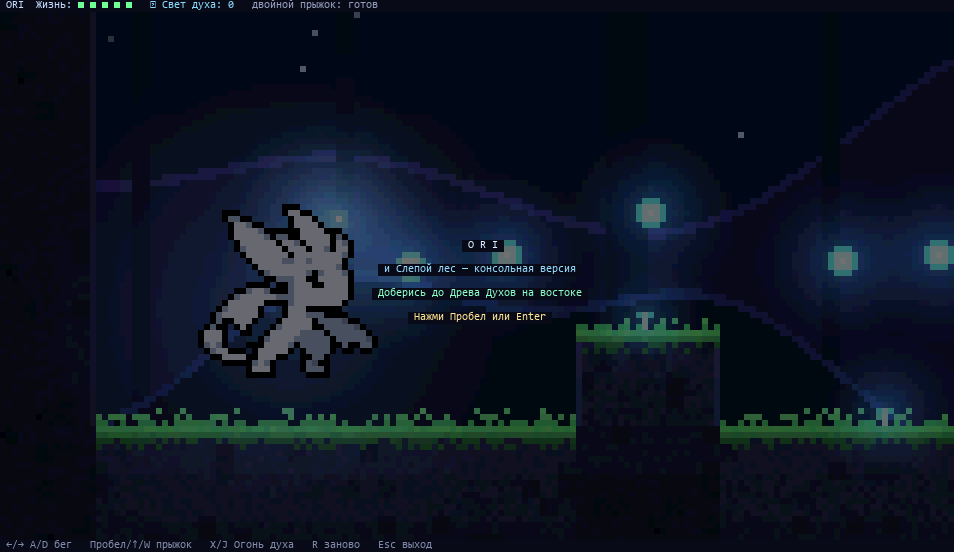
Рис. 23.2. Заставка: мир затемнён, поверх — название игры
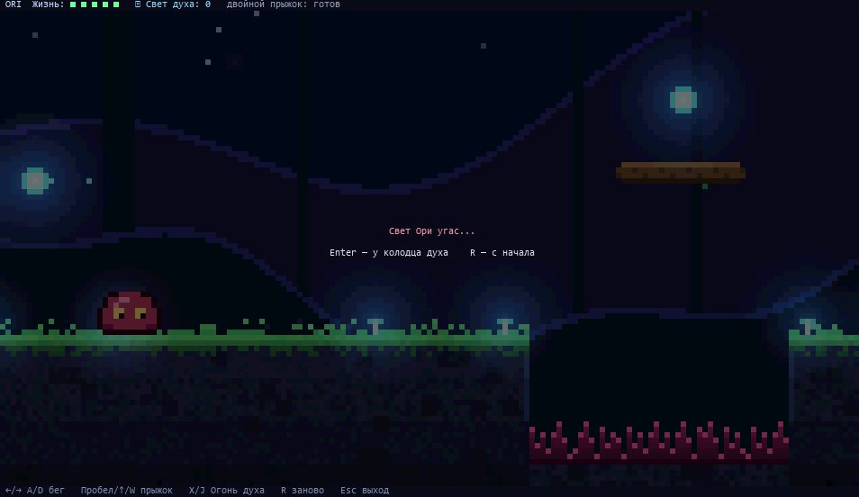
Рис. 23.3. Состояние «Ори погиб»: подсказка, как продолжить
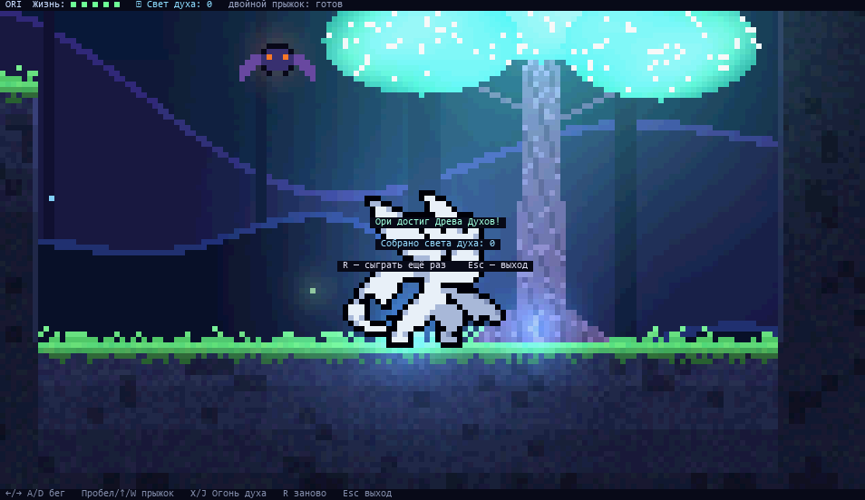
Рис. 23.4. Победа у Древа Духов
ФишкаТекстовый квест
Конечный автомат в чистом виде — это текстовый квест. Каждая комната — состояние, каждый выбор — переход. Все комнаты описаны таблицей: текст и куда ведут выборы 1 и 2. Код программы при этом крошечный — он просто показывает комнату и переходит по таблице.
Листинг 23.41. Квест — автомат из таблицы 23-quest.cpp
// Фишка главы 23: текстовый квест — тот же конечный автомат, что и состояния игры.// Каждая комната — состояние, каждый выбор — переход в другое состояние.// Сборка из папки игры (файл лежит в папке fishki):// g++ -O2 -std=c++17 -Wall -Wextra fishki\23-quest.cpp -o quest.exe#define WIN32_LEAN_AND_MEAN#include <windows.h>#include <conio.h>#include <cstdio>enum Room { ROOM_GLADE, // поляна ROOM_CAVE, // пещера ROOM_RIVER, // река ROOM_TREE, // Древо Духов — победа ROOM_PIT, // яма — поражение ROOM_COUNT,};// Описание комнаты: текст и куда ведут выборы 1 и 2struct RoomInfo {constchar* text;constchar* choice1; Room next1;constchar* choice2; Room next2;};const RoomInfo ROOMS[ROOM_COUNT] = { { "Ори стоит на тёмной поляне. На севере пещера, на востоке шумит река.","Войти в пещеру", ROOM_CAVE, "Пойти к реке", ROOM_RIVER }, { "В пещере темно и сыро. Впереди что-то светится, сбоку зияет провал.","Идти на свет", ROOM_TREE, "Заглянуть в провал", ROOM_PIT }, { "Река быстрая, но через неё лежит бревно. Назад ведёт тропа на поляну.","Перейти по бревну", ROOM_PIT, "Вернуться на поляну", ROOM_GLADE }, { "Свет — это Древо Духов! Ори дома. Победа!", nullptr, ROOM_TREE, nullptr, ROOM_TREE }, { "Ори оступился и упал в темноту... Конец.", nullptr, ROOM_PIT, nullptr, ROOM_PIT },};int main() { SetConsoleOutputCP(CP_UTF8); Room room = ROOM_GLADE;while (true) {const RoomInfo& r = ROOMS[room]; printf("\n%s\n", r.text);if (r.choice1 == nullptr) break; // у конечных комнат выбора нет printf(" 1 — %s\n 2 — %s\n", r.choice1, r.choice2);int key;do { key = _getch(); } while (key != '1' && key != '2'); room = (key == '1') ? r.next1 : r.next2; // переход в новое состояние }return0;}
Ори стоит на тёмной поляне. На севере пещера, на востоке шумит река.
1 — Войти в пещеру
2 — Пойти к реке
В пещере темно и сыро. Впереди что-то светится, сбоку зияет провал.
1 — Идти на свет
2 — Заглянуть в провал
Свет — это Древо Духов! Ори дома. Победа!
Рис. 23.5. Прохождение: пещера → свет → Древо Духов
Это отдельная программа, модули игры ей не нужны. Сохраните её в папку fishki внутри папки игры как fishki\23-quest.cpp и соберите из папки игры:
Слово nullptr уже встречалось нам в time(nullptr) в главе 8 — там оно значило «ничего». Теперь понятно, что это такое: пустой указатель, адрес, который никуда не указывает. У конечных комнат (победа и яма) выборов нет, и вместо текста выбора в таблице стоит nullptr. Программа проверяет r.choice1 == nullptr и заканчивает игру.
Чтобы добавить комнату, логику программы — цикл в main — менять не нужно, хватит дописать данные. Имя новой комнаты добавьте в enum Room перед ROOM_COUNT, а её строку — в таблицу ROOMS на то же место по порядку: номер комнаты в перечислении и есть номер её строки в таблице. ROOM_COUNT стоит последним, поэтому сам равен числу комнат и задаёт размер таблицы — компилятор пожалуется, если строк окажется больше. И не забудьте направить в новую комнату выбор из какой-нибудь старой.
Весь код шага 23Сверьтесь с готовой программой
Все 39 файлов игры после этой главы — целиком. Откройте файл, чтобы сравнить со своим, а кнопка «Копировать» поможет, если нужно догнать: вставьте код в файл с тем же именем в папке игры.
// ============================================================================// camera.cpp — камера следует за Ори и не выходит за края уровня// ============================================================================#include <cmath>#include "camera.h"#include "config.h"#include "game.h"#include "mathx.h"// Не даём камере заглянуть за края уровняstaticvoid clampCamera(Game& g) {Camera& cam = g.camera;float maxX = (float)(g.world.width * TILE - screenWidth());float maxY = (float)(MAP_H * TILE - screenHeight()); cam.x = clampf(cam.x, 0, fmaxf(maxX, 0));// если окно выше уровня, прижимаем уровень к низу экрана cam.y = maxY < 0 ? maxY : clampf(cam.y, 0, maxY);}// Целые координаты камеры для рисованияstaticvoid updateView(Camera& cam) { cam.viewX = (int)floorf(cam.x); cam.viewY = (int)floorf(cam.y);if (cam.shake > 0) { // тряска: сдвигаем картинку на пару пикселей в случайную сторону cam.viewX += (int)randomRange(-2, 2); cam.viewY += (int)randomRange(-2, 2); }}void drawDisc(constCamera& cam, int cx, int cy, int radius, Color c) {for (int y = -radius; y <= radius; y++) {for (int x = -radius; x <= radius; x++) {if (x * x + y * y <= radius * radius + radius) putWorldPixel(cam, cx + x, cy + y, c); } }}void centerCamera(Game& g) {constBody& b = g.player.body; g.camera.x = b.x + b.w / 2.0f - screenWidth() / 2.0f; g.camera.y = b.y + b.h / 2.0f - screenHeight() / 2.0f; g.camera.shake = 0; clampCamera(g); updateView(g.camera);}void updateCamera(Game& g, float dt) {Camera& cam = g.camera;constBody& b = g.player.body;// Цель: Ори в центре экрана, чуть сдвинутый назад — видно, что впередиfloat targetX = b.x + b.w / 2.0f - screenWidth() / 2.0f + g.player.facing * 18;float targetY = b.y + b.h / 2.0f - screenHeight() * 0.55f;// Каждый кадр проходим часть пути до цели — камера движется плавно cam.x = lerpf(cam.x, targetX, clampf(dt * 5, 0, 1)); cam.y = lerpf(cam.y, targetY, clampf(dt * 5, 0, 1)); clampCamera(g);if (cam.shake > 0) cam.shake -= dt; updateView(cam);}
camera.h26 строкcamera.h
// ============================================================================// camera.h — какая часть мира видна на экране, рисование в координатах мира// ============================================================================#pragma once#include "color.h"#include "screen.h"structGame; // описана в game.h — здесь достаточно знать, что такая структура естьstructCamera {float x, y; // левый верхний угол экрана в миреfloat shake; // сколько ещё секунд трясти экранint viewX, viewY; // то же целыми числами (с тряской) — по ним рисуем};// Поставить пиксель по координатам мира: экран = мир − камераinlinevoid putWorldPixel(constCamera& cam, int wx, int wy, Color c) { putPixel(wx - cam.viewX, wy - cam.viewY, c);}// Закрашенный круг в координатах мираvoid drawDisc(constCamera& cam, int cx, int cy, int radius, Color c);void centerCamera(Game& g); // сразу поставить Ори в центр экранаvoid updateCamera(Game& g, float dt); // камера плавно догоняет Ори
color.h34 строкиcolor.h
// ============================================================================// color.h — цвет пикселя. Цвет хранится в одном числе 0xRRGGBB:// по два шестнадцатеричных разряда на красный, зелёный и синий.// ============================================================================#pragma oncetypedefunsignedintColor;// Ограничить канал диапазоном 0..255inlineint clampChannel(int value) {return value < 0 ? 0 : (value > 255 ? 255 : value);}// Собрать цвет из красного, зелёного и синего (каждый 0..255)inlineColor rgb(int r, int g, int b) {return (Color)(clampChannel(r) << 16 | clampChannel(g) << 8 | clampChannel(b));}// Достать каналы обратноinlineint colorR(Color c) { return (c >> 16) & 255; }inlineint colorG(Color c) { return (c >> 8) & 255; }inlineint colorB(Color c) { return c & 255; }// Смешать два цвета: t = 0 — первый цвет, t = 1 — второйinlineColor mixColor(Color a, Color b, float t) {return rgb((int)(colorR(a) + (colorR(b) - colorR(a)) * t), (int)(colorG(a) + (colorG(b) - colorG(a)) * t), (int)(colorB(a) + (colorB(b) - colorB(a)) * t));}// Изменить яркость: k = 0.5 — вдвое темнее, k = 2 — вдвое ярчеinlineColor scaleColor(Color c, float k) {return rgb((int)(colorR(c) * k), (int)(colorG(c) * k), (int)(colorB(c) * k));}
config.h38 строкconfig.h
// ============================================================================// config.h — настройки игры. Все важные числа собраны здесь,// чтобы их было легко найти и поменять.// ============================================================================#pragma once// Картинкаconstint MAX_SCREEN_W = 320; // наибольшая ширина картинки в пикселяхconstint MAX_SCREEN_H = 200; // наибольшая высота картинки в пикселях// Мирconstint TILE = 8; // сторона тайла в пикселяхconstint MAP_H = 22; // высота уровня в тайлахconstint MAX_MAP_W = 160; // ширина самого широкого уровня в тайлах// Движениеconstfloat RUN_SPEED = 95.0f; // скорость бега, пикселей в секундуconstfloat RUN_ACCEL_GROUND = 900.0f; // разгон и торможение на землеconstfloat RUN_ACCEL_AIR = 600.0f; // в воздухе разгоняться труднееconstfloat GRAVITY = 900.0f; // насколько быстро растёт скорость паденияconstfloat JUMP_SPEED = 320.0f; // скорость в начале прыжкаconstfloat MAX_FALL_SPEED = 360.0f; // быстрее падать нельзяconstfloat DOUBLE_JUMP_SPEED = 280.0f; // второй прыжок в воздухе чуть слабееconstfloat COYOTE_TIME = 0.10f; // сколько секунд можно прыгнуть после схода с краяconstfloat JUMP_BUFFER_TIME = 0.12f; // сколько секунд помнится раннее нажатие прыжка// Ориconstint PLAYER_W = 16; // ширина хитбоксаconstint PLAYER_H = 24; // высота хитбоксаconstint MAX_HP = 5; // сколько жизней может быть// Сколько объектов может существовать одновременноconstint MAX_PARTICLES = 800;constint MAX_LIGHTS = 160;constint MAX_PICKUPS = 80;constint MAX_CHECKPOINTS = 10;constint MAX_ENEMIES = 40;constint MAX_SHOTS = 32;
console.cpp79 строкconsole.cpp
// ============================================================================// console.cpp — всё, что связано с Windows-консолью, собрано в одном файле// ============================================================================#define WIN32_LEAN_AND_MEAN#define NOMINMAX#include <windows.h>#include <cstring>#include "console.h"// Как была настроена консоль до запуска игрыstaticDWORD originalOutMode = 0;staticDWORD originalInMode = 0;staticUINT originalCodePage = 0;// Ctrl+C или закрытие: consoleRestore сначала останавливает writer.// Обработчик делает ограниченную по времени попытку уборки, затем Windows завершает процесс.staticBOOL WINAPI onConsoleEvent(DWORD) { consoleRestore();return FALSE;}void consoleInit() {HANDLE out = GetStdHandle(STD_OUTPUT_HANDLE);HANDLE in = GetStdHandle(STD_INPUT_HANDLE); GetConsoleMode(out, &originalOutMode); GetConsoleMode(in, &originalInMode); originalCodePage = GetConsoleOutputCP(); SetConsoleMode(out, originalOutMode | ENABLE_PROCESSED_OUTPUT | ENABLE_VIRTUAL_TERMINAL_PROCESSING); SetConsoleMode(in, ENABLE_EXTENDED_FLAGS); // выключить выделение мышью: оно ставит вывод на паузу SetConsoleOutputCP(CP_UTF8); SetConsoleCtrlHandler(onConsoleEvent, TRUE); SetConsoleTitleA("Ori");// Отдельный экран, спрятать курсор, очистить экранconstchar* start = "\x1b[?1049h\x1b[?25l\x1b[2J"; consoleWrite(start, (int)strlen(start));}void consoleRestore() {// Обычные цвета, показать курсор, вернуться на основной экранconstchar* finish = "\x1b[0m\x1b[?25h\x1b[?1049l"; consoleWrite(finish, (int)strlen(finish)); consoleFlushInput(); SetConsoleMode(GetStdHandle(STD_OUTPUT_HANDLE), originalOutMode); SetConsoleMode(GetStdHandle(STD_INPUT_HANDLE), originalInMode); SetConsoleOutputCP(originalCodePage);}bool consoleSize(int& cols, int& rows) { CONSOLE_SCREEN_BUFFER_INFO info;if (!GetConsoleScreenBufferInfo(GetStdHandle(STD_OUTPUT_HANDLE), &info)) {returnfalse; } cols = info.srWindow.Right - info.srWindow.Left + 1; rows = info.srWindow.Bottom - info.srWindow.Top + 1;returntrue;}void consoleFlushInput() { FlushConsoleInputBuffer(GetStdHandle(STD_INPUT_HANDLE));}bool keyDown(int virtualKey) {return (GetAsyncKeyState(virtualKey) & 0x8000) != 0;}bool consoleWrite(constchar* data, int length) {if (length < 0) returnfalse;int sent = 0;while (sent < length) {DWORD written = 0;DWORD remaining = (DWORD)(length - sent);if (!WriteFile(GetStdHandle(STD_OUTPUT_HANDLE), data + sent, remaining, &written, NULL) || written == 0 || written > remaining) returnfalse; sent += (int)written; }returntrue;}
console.h13 строкconsole.h
// ============================================================================// console.h — окно консоли Windows: настройка, размер, клавиши, вывод// ============================================================================#pragma oncevoid consoleInit(); // включить цвета и UTF-8, перейти на отдельный экранvoid consoleRestore(); // вернуть консоль в исходное состояниеbool consoleSize(int& cols, int& rows); // видимый размер окна в символахvoid consoleFlushInput(); // выбросить накопившиеся нажатия клавишbool keyDown(int virtualKey); // зажата ли клавиша прямо сейчас// Полностью записать данные; false — ошибка или неполная записьbool consoleWrite(constchar* data, int length);
// ============================================================================// effects.cpp — пулы частиц и источников света// ============================================================================#include <algorithm>#include <cmath>#include <cstring>#include "config.h"#include "effects.h"#include "mathx.h"struct Particle {float x, y, vx, vy;float life, maxLife; // сколько осталось жить и сколько жила бы всегоColor color;bool gravity; // падает ли вниз};struct Light {float x, y, radius;Color color;float power;};// Пулы: частица с life <= 0 — свободное местоstatic Particle particles[MAX_PARTICLES];static Light lights[MAX_LIGHTS];staticint lightCount = 0;void clearParticles() { memset(particles, 0, sizeof(particles));}void spawnParticle(float x, float y, float vx, float vy, float life, Color color, bool gravity) {for (int i = 0; i < MAX_PARTICLES; i++) {if (particles[i].life <= 0) { particles[i] = { x, y, vx, vy, life, life, color, gravity };return; } }}void burst(float x, float y, int count, Color color, float speed, float life, bool gravity) {for (int i = 0; i < count; i++) {float angle = randomRange(0, 6.2832f);float s = randomRange(speed * 0.3f, speed); spawnParticle(x, y, cosf(angle) * s, sinf(angle) * s, randomRange(life * 0.5f, life), color, gravity); }}void updateParticles(float dt) {for (int i = 0; i < MAX_PARTICLES; i++) { Particle& p = particles[i];if (p.life <= 0) continue; p.life -= dt;if (p.gravity) p.vy += GRAVITY * 0.5f * dt; p.vx *= 1.0f - 1.5f * dt; // сопротивление воздуха p.vy *= 1.0f - 1.5f * dt; p.x += p.vx * dt; p.y += p.vy * dt; }}void drawParticles(constCamera& cam) {for (int i = 0; i < MAX_PARTICLES; i++) {const Particle& p = particles[i];if (p.life <= 0) continue;float strength = clampf(p.life / p.maxLife, 0, 1); // гаснет к концу жизни addPixel((int)roundf(p.x) - cam.viewX, (int)roundf(p.y) - cam.viewY, p.color, strength); }}void clearLights() { lightCount = 0;}void addLight(float x, float y, float radius, Color color, float power) {if (lightCount < MAX_LIGHTS) { lights[lightCount] = { x, y, radius, color, power }; lightCount++; }}void applyLights(constCamera& cam) {for (int i = 0; i < lightCount; i++) {const Light& light = lights[i];int cx = (int)light.x - cam.viewX;int cy = (int)light.y - cam.viewY;int r = (int)light.radius;// Проходим только по квадрату вокруг источника и только по видимой частиint x0 = std::max(0, cx - r), x1 = std::min(screenWidth() - 1, cx + r);int y0 = std::max(0, cy - r), y1 = std::min(screenHeight() - 1, cy + r);for (int y = y0; y <= y1; y++) {for (int x = x0; x <= x1; x++) {float dx = (float)(x - cx), dy = (float)(y - cy);float d = sqrtf(dx * dx + dy * dy) / light.radius; // 0 в центре, 1 на краюif (d >= 1) continue; addPixel(x, y, light.color, (1 - d) * (1 - d) * light.power); } } }}
effects.h19 строкeffects.h
// ============================================================================// effects.h — частицы (искры, пыль) и свет// ============================================================================#pragma once#include "camera.h"#include "color.h"// Частицы: живут несколько долей секунды и гаснутvoid clearParticles();void spawnParticle(float x, float y, float vx, float vy, float life, Color color, bool gravity);void burst(float x, float y, int count, Color color, float speed, float life, bool gravity);void updateParticles(float dt);void drawParticles(constCamera& cam);// Свет: источники собираются заново в каждом кадре, потом накладываются на картинкуvoid clearLights();void addLight(float x, float y, float radius, Color color, float power);void applyLights(constCamera& cam);
enemies.cpp211 строкenemies.cpp
// ============================================================================// enemies.cpp — поведение и отрисовка врагов// ============================================================================#include <cmath>#include <cstring>#include "effects.h"#include "enemies.h"#include "game.h"#include "mathx.h"#include "sprites.h"// Слизень: два кадра — обычный и «сплющенный»staticconstchar* SLIME_FRAME_1[] = {"....kkkk....","..kkrrrrkk..",".krrhhrrrrk.",".krhrrrrrrk.","krryyrryyrrk","krrykrrykrrk","krrrrrrrrrrk","kpprrrrrrppk",".kkkkkkkkkk.",};staticconstchar* SLIME_FRAME_2[] = {"............","..kkrrrrkk..",".krrhhrrrrk.",".krhrrrrrrk.","krryyrryyrrk","krrykrrykrrk","krrrrrrrrrrk","kpprrrrrrppk",".kkkkkkkkkk.",};staticconstchar SLIME_KEYS[] = "krphy";staticconstColor SLIME_COLORS[] = { rgb(42, 8, 32), rgb(194, 60, 100), rgb(126, 32, 72), rgb(255, 154, 180), rgb(255, 224, 112) };staticconst Sprite SLIME_SPRITES[2] = { { 12, 9, SLIME_FRAME_1, SLIME_KEYS, SLIME_COLORS }, { 12, 9, SLIME_FRAME_2, SLIME_KEYS, SLIME_COLORS },};// Летучая мышь: крылья вверх и крылья внизstaticconstchar* BAT_FRAME_1[] = {"l............l","ll...kkkk...ll","lll.kbbbbk.lll",".lllbebbeblll.","..llbbbbbbll..","....kbbbbk....",".....k..k.....","..............",};staticconstchar* BAT_FRAME_2[] = {"..............",".....kkkk.....","....kbbbbk....","..llbebbebll..",".lllbbbbbblll.","lll.kbbbbk.lll","ll...k..k...ll","l............l",};staticconstchar BAT_KEYS[] = "kble";staticconstColor BAT_COLORS[] = { rgb(10, 10, 26), rgb(60, 50, 112), rgb(106, 79, 166), rgb(255, 122, 40) };staticconst Sprite BAT_SPRITES[2] = { { 14, 8, BAT_FRAME_1, BAT_KEYS, BAT_COLORS }, { 14, 8, BAT_FRAME_2, BAT_KEYS, BAT_COLORS },};void spawnEnemy(Game& g, EnemyType type, float x, float y) {if (g.enemyCount >= MAX_ENEMIES) return;Enemy& e = g.enemies[g.enemyCount]; memset(&e, 0, sizeof(e)); e.type = type; e.alive = true; e.dir = -1; e.time = randomRange(0, 6.28f); // чтобы враги двигались не в тактif (type == ENEMY_SLIME) { e.hp = 3; e.body = makeBody(x - 2, y + TILE - 9, 12, 9); // ногами на дно клетки } elseif (type == ENEMY_BAT) { e.hp = 2; e.body = makeBody(x - 3, y, 14, 8); } e.homeX = e.body.x; e.homeY = e.body.y; g.enemyCount++;}// Слизень ползёт и разворачивается у стены и на краю обрываstaticvoid updateSlime(Game& g, Enemy& e, float dt) {Body& b = e.body;if (e.knockTime <= 0) b.vx = e.dir * 22.0f; b.vy = fminf(b.vy + GRAVITY * dt, MAX_FALL_SPEED); moveBody(g.world, b, dt);if (e.knockTime <= 0) {if (b.hitWall) e.dir = -e.dir;// Тайл чуть впереди и чуть ниже ног: если он не твёрдый — впереди обрывint frontX = (int)floorf((e.dir > 0 ? b.x + b.w + 1 : b.x - 1) / TILE);int belowY = (int)floorf((b.y + b.h + 1) / TILE);if (b.onGround && !isSolidTile(tileAt(g.world, frontX, belowY))) e.dir = -e.dir; }if (b.y > MAP_H * TILE + 40) e.alive = false; // упал в пропасть}// Летучая мышь: рядом с Ори — летит к нему, иначе кружит у гнездаstaticvoid updateBat(Game& g, Enemy& e, float dt) {Body& b = e.body;constBody& player = g.player.body;float dx = (player.x + player.w / 2.0f) - (b.x + b.w / 2.0f);float dy = (player.y + player.h / 2.0f) - (b.y + b.h / 2.0f);float distance = sqrtf(dx * dx + dy * dy);float ax, ay; // ускорениеif (distance < 110 && g.state == STATE_PLAY) {// Направление на Ори длиной 1, умноженное на силу разгона, и волнистость полёта ax = dx / fmaxf(distance, 1.0f) * 120; ay = dy / fmaxf(distance, 1.0f) * 120 + sinf(e.time * 6) * 80; e.dir = dx > 0 ? 1 : -1; } else {// Тянемся к точке, которая плавает вокруг гнезда ax = (e.homeX + sinf(e.time * 0.9f) * 24 - b.x) * 2; ay = (e.homeY + sinf(e.time * 2.1f) * 6 - b.y) * 2; }if (e.knockTime <= 0) { b.vx += ax * dt; b.vy += ay * dt;float speed = sqrtf(b.vx * b.vx + b.vy * b.vy);if (speed > 48) { // не быстрее 48 пикселей в секунду b.vx *= 48 / speed; b.vy *= 48 / speed; } } b.vx *= 1.0f - 0.8f * dt; b.vy *= 1.0f - 0.8f * dt; b.x += b.vx * dt; // мыши летают сквозь стены b.y += b.vy * dt;}// Касание с Ори: прыжок сверху ранит врага, иначе ранен Ориstaticvoid checkContact(Game& g, Enemy& e, float dt) {Body& player = g.player.body;constBody& b = e.body;if (g.state != STATE_PLAY) return;if (!rectsOverlap(player.x, player.y, player.w, player.h, b.x, b.y, b.w, b.h)) return;// Ори падает, и кадр назад его ноги были выше врага — значит, прилетел сверхуfloat feetBefore = player.y + player.h - player.vy * dt;bool stomp = player.vy > 40 && feetBefore <= b.y + 4;if (stomp) { hitEnemy(g, e, 2, player.x + 8 < b.x + b.w / 2.0f ? 1.0f : -1.0f); player.y = b.y - player.h; // ставим Ори на врага: в следующем кадре они уже не касаются player.vy = -250; g.player.canDoubleJump = true; } else { hurtPlayer(g, b.x + b.w / 2.0f, -180); }}void updateEnemies(Game& g, float dt) {for (int i = 0; i < g.enemyCount; i++) {Enemy& e = g.enemies[i];if (!e.alive) continue; e.time += dt;if (e.hurtTime > 0) e.hurtTime -= dt;if (e.knockTime > 0) e.knockTime -= dt;if (e.type == ENEMY_SLIME) { updateSlime(g, e, dt); } elseif (e.type == ENEMY_BAT) { updateBat(g, e, dt); } checkContact(g, e, dt); }}void hitEnemy(Game& g, Enemy& e, int damage, float pushDir) {Body& b = e.body; e.hp -= damage; e.hurtTime = 0.15f;float cx = b.x + b.w / 2.0f, cy = b.y + b.h / 2.0f; burst(cx, cy, 10, rgb(255, 200, 230), 80, 0.35f, false); e.knockTime = 0.2f; b.vx = pushDir * 90; b.vy = (e.type == ENEMY_SLIME) ? -120.0f : -40.0f;if (e.hp <= 0) { e.alive = false;Color body = (e.type == ENEMY_SLIME) ? rgb(220, 60, 110) : rgb(130, 90, 200); burst(cx, cy, 30, body, 110, 0.7f, true); burst(cx, cy, 12, rgb(160, 240, 255), 60, 1.0f, false); g.player.spiritLight += 3; }}void drawEnemies(constGame& g) {for (int i = 0; i < g.enemyCount; i++) {constEnemy& e = g.enemies[i];if (!e.alive) continue;int x = (int)roundf(e.body.x);int y = (int)roundf(e.body.y);bool flip = e.dir > 0; // на картинках враги смотрят влевоbool flash = e.hurtTime > 0; // после удара — белая вспышкаif (e.type == ENEMY_SLIME) {int frame = ((int)(e.time * 6)) % 2; drawSprite(g.camera, SLIME_SPRITES[frame], x, y, flip, flash); } elseif (e.type == ENEMY_BAT) {int frame = ((int)(e.time * 8)) % 2; drawSprite(g.camera, BAT_SPRITES[frame], x, y, flip, flash); } }}
enemies.h30 строкenemies.h
// ============================================================================// enemies.h — враги: слизни, летучие мыши (и босс)// ============================================================================#pragma once#include "physics.h"structGame;enum EnemyType { ENEMY_SLIME, // ползает по платформе ENEMY_BAT, // летает и преследует Ори};structEnemy { EnemyType type;Body body;int hp;int dir; // куда смотрит или ползёт: -1 или 1float hurtTime; // сколько ещё мигать после удараfloat knockTime; // сколько ещё лететь от удараfloat time; // собственное время врага — для анимацииfloat homeX, homeY; // где враг появился (гнездо летучей мыши)bool alive;};void spawnEnemy(Game& g, EnemyType type, float x, float y);void updateEnemies(Game& g, float dt);void hitEnemy(Game& g, Enemy& enemy, int damage, float pushDir); // pushDir — куда отбросить: -1 или 1void drawEnemies(constGame& g);
game.cpp138 строкgame.cpp
// ============================================================================// game.cpp — загрузка уровней и правила игры: что обновлять в каждом кадре// ============================================================================#include <algorithm>#include <cmath>#include <cstring>#include "effects.h"#include "game.h"#include "input.h"#include "levels.h"// Символ карты — объект? Тогда создаём объект и возвращаем пробел.// Иначе это тайл (камень, бревно, шипы) — он остаётся в карте как есть.staticchar placeObject(Game& g, char symbol, float wx, float wy) {World& w = g.world;switch (symbol) {case'P': w.spawnX = wx; w.spawnY = wy + TILE - PLAYER_H; // ногами на дно клеткиreturn' ';case'o': addPickup(g, PICKUP_LIGHT, wx + 4, wy + 4);return' ';case'+': addPickup(g, PICKUP_HEALTH, wx + 4, wy + 4);return' ';case'C': addCheckpoint(g, wx + 4, wy + TILE);return' ';case'T': w.hasTree = true; w.treeX = wx + 4; w.treeY = wy + TILE;return' ';case'S': spawnEnemy(g, ENEMY_SLIME, wx, wy);return' ';case'B': spawnEnemy(g, ENEMY_BAT, wx, wy);return' ';default:return symbol; }}void loadLevel(Game& g, int index) {const LevelInfo& level = levelInfo(index);World& w = g.world; g.levelIndex = index; g.pickupCount = 0; g.checkpointCount = 0; g.enemyCount = 0; clearShots(g); clearParticles(); w.hasTree = false;// Ширина уровня — длина самой длинной строки карты w.width = 0;for (int ty = 0; ty < MAP_H; ty++) { w.width = std::max(w.width, (int)strlen(level.rows[ty])); } w.width = std::min(w.width, MAX_MAP_W);for (int ty = 0; ty < MAP_H; ty++) {int length = (int)strlen(level.rows[ty]);for (int tx = 0; tx < w.width; tx++) {char symbol = tx < length ? level.rows[ty][tx] : ' '; w.tiles[ty][tx] = placeObject(g, symbol, (float)(tx * TILE), (float)(ty * TILE)); } w.tiles[ty][w.width] = 0; // конец строки } placePlayer(g.player, w.spawnX, w.spawnY); centerCamera(g);}void startNewGame(Game& g) { g.state = STATE_TITLE; g.player.spiritLight = 0; loadLevel(g, 0);}// Дошли до Древа Духов — победаstaticvoid checkGoals(Game& g) {constBody& b = g.player.body;constWorld& w = g.world;if (w.hasTree && g.state == STATE_PLAY && rectsOverlap(b.x, b.y, b.w, b.h, w.treeX - 6, w.treeY - 40, 12, 40)) { g.state = STATE_WIN; burst(w.treeX, w.treeY - 40, 80, rgb(160, 255, 220), 130, 1.5f, false); }}// Игра идёт: обновляем всё по очередиstaticvoid updatePlay(Game& g, constInput& in, float dt) { updatePlayer(g, in, dt);if (g.state != STATE_PLAY) return; updateItems(g); checkGoals(g);if (g.state != STATE_PLAY) return; updateEnemies(g, dt);if (g.state != STATE_PLAY) return; updateShots(g, dt);}void updateGame(Game& g, constInput& in, float dt) { g.time += dt;if (in.restart.pressed && g.state != STATE_TITLE) { startNewGame(g); g.state = STATE_PLAY; }switch (g.state) {case STATE_TITLE:// Сейн кружит вокруг Ори, Enter или пробел начинает игру g.player.seinX = g.player.body.x + 8 + sinf(g.time) * 16; g.player.seinY = g.player.body.y - 6 + sinf(g.time * 2) * 4;if (in.confirm.pressed) g.state = STATE_PLAY;break;case STATE_PLAY: updatePlay(g, in, dt);break;case STATE_DEAD:if (in.confirm.pressed) { // Enter — возродиться у колодца с полными жизнями g.player.hp = MAX_HP; g.state = STATE_PLAY; respawnPlayer(g); } updateEnemies(g, dt);break;case STATE_WIN: updateEnemies(g, dt);break; } updateParticles(dt); updateCamera(g, dt);}
game.h43 строкиgame.h
// ============================================================================// game.h — вся игра в одной структуре Game. Функции получают её по ссылке,// поэтому глобальные переменные не нужны.// ============================================================================#pragma once#include "config.h"#include "camera.h"#include "enemies.h"#include "items.h"#include "player.h"#include "shots.h"#include "world.h"structInput;// В каком состоянии игра: от него зависит, что делают клавиши и что видно на экранеenum GameState { STATE_TITLE, // заставка STATE_PLAY, // игра идёт STATE_DEAD, // Ори погиб STATE_WIN, // победа};structGame { GameState state;float time; // сколько секунд идёт игра — для анимацийint levelIndex; // номер текущего уровня (с нуля)World world;Camera camera;Player player; Pickup pickups[MAX_PICKUPS];int pickupCount; Checkpoint checkpoints[MAX_CHECKPOINTS];int checkpointCount;Enemy enemies[MAX_ENEMIES];int enemyCount; Shot shots[MAX_SHOTS];};void startNewGame(Game& g);void loadLevel(Game& g, int index);void updateGame(Game& g, constInput& in, float dt);
hud.cpp67 строкhud.cpp
// ============================================================================// hud.cpp — жизни и счёт вверху, подсказка внизу, надписи заставки и финала// ============================================================================#include <cstdio>#include "game.h"#include "hud.h"#include "screen.h"constColor HUD_TEXT = rgb(200, 220, 255);constColor HINT_TEXT = rgb(130, 140, 170);// Верхняя строка: жизни, свет духа и подсказка про двойной прыжокstaticvoid drawTopLine(constGame& g) {constPlayer& p = g.player; textAdd(LINE_TOP, " ORI Жизнь: ", HUD_TEXT);for (int i = 0; i < MAX_HP; i++) { textAdd(LINE_TOP, "■ ", i < p.hp ? rgb(110, 255, 150) : rgb(50, 60, 70)); } textAdd(LINE_TOP, " ◆ Свет духа: ", rgb(140, 220, 255)); textAddInt(LINE_TOP, p.spiritLight, rgb(140, 220, 255));if (screenWidth() >= 80) { textAdd(LINE_TOP, p.canDoubleJump ? " двойной прыжок: готов" : " двойной прыжок: —", rgb(150, 160, 190)); }}// Нижняя строка — подсказка по управлению (короче, если окно узкое)staticvoid drawBottomLine() {int w = screenWidth();if (w >= 96) { textAdd(LINE_BOTTOM, " ←/→ A/D бег Пробел/↑/W прыжок X/J Огонь духа R заново Esc выход", HINT_TEXT); } elseif (w >= 52) { textAdd(LINE_BOTTOM, " ←/→ бег ↑ прыжок X огонь R заново Esc выход", HINT_TEXT); }}// Надписи поверх картинки — для каждого состояния игры своиstaticvoid drawOverlays(constGame& g) {int mid = screenHeight() / 4 - 1; // строка картинки чуть выше серединыchar text[96];switch (g.state) {case STATE_TITLE: textOverlay(mid - 2, "O R I", rgb(220, 240, 255)); textOverlay(mid, "и Слепой лес — консольная версия", rgb(150, 220, 255)); textOverlay(mid + 2, "Доберись до Древа Духов на востоке", rgb(140, 255, 200)); textOverlay(mid + 4, "Нажми Пробел или Enter", rgb(255, 230, 150));break;case STATE_DEAD: textOverlay(mid - 1, "Свет Ори угас...", rgb(255, 150, 170)); textOverlay(mid + 1, "Enter — у колодца духа R — с начала", rgb(220, 220, 240));break;case STATE_WIN: textOverlay(mid - 2, "Ори достиг Древа Духов!", rgb(160, 255, 220)); snprintf(text, sizeof(text), "Собрано света духа: %d", g.player.spiritLight); textOverlay(mid, text, rgb(150, 220, 255)); textOverlay(mid + 2, "R — сыграть ещё раз Esc — выход", rgb(220, 220, 240));break;case STATE_PLAY:break; }}void drawHud(constGame& g) { drawTopLine(g); drawBottomLine(); drawOverlays(g);}
hud.h8 строкhud.h
// ============================================================================// hud.h — строки текста над и под картинкой и надписи поверх неё// ============================================================================#pragma oncestructGame;void drawHud(constGame& g);
// ============================================================================// input.h — какие кнопки управления нажаты// ============================================================================#pragma once// Одна кнопка управленияstructKey {bool held; // зажата сейчасbool pressed; // нажата именно в этом кадре (в прошлом кадре не была зажата)};structInput {Key left;Key right;Key jump;Key attack;Key restart;Key confirm;Key quit;};void readInput(Input& in);
// ============================================================================// items.h — предметы на уровне: свет духа, ячейки жизни, колодцы// ============================================================================#pragma oncestructGame;enum PickupType { PICKUP_LIGHT, // свет духа — очки PICKUP_HEALTH, // ячейка жизни};struct Pickup {float x, y; // центр предмета PickupType type;bool taken; // уже подобран};// Колодец духа — место, где Ори возродитсяstruct Checkpoint {float x, y; // середина основания колодцаbool active; // это последний колодец, которого коснулся Ори};void addPickup(Game& g, PickupType type, float x, float y);void addCheckpoint(Game& g, float x, float y);void updateItems(Game& g); // Ори подбирает предметы и зажигает колодцыvoid drawItems(constGame& g);
levels.cpp52 строкиlevels.cpp
// ============================================================================// levels.cpp — карты уровней. Каждый символ — тайл 8 × 8 пикселей:// # — камень, = — бревно, ^ — шипы, P — старт Ори// o — свет духа, + — ячейка жизни, C — колодец (точка возрождения)// S — слизень, B — летучая мышь// T — Древо Духов (финиш игры)// ============================================================================#include "config.h"#include "levels.h"// Лес Нибельstaticconstchar* LEVEL1[MAP_H] = {"## ##################### ##","## ##################### ##","## ##################### ##","## ##################### B ##","## ##################### ##","## ##################### o o + ##","## ##################### ##","## ##################### o C S S ##","## B ##################### ################# ##","## + === ################# o ##","## o o B o ################# B ##","## o === ################# S ##","## o o o o o o o B ===########################### ##","## o === ########################### ##","## o o o o === ########### C S S ########################### ##","## ########### #################### === ########################### ##","## P ### ########### #################### o o o ########################### ##","## ### S C ########### #################### ^^ ########################### T ##","############################### ################### ################################### ##############################################","############################### ################### ################################### ##############################################","###############################^^^^^^###################^^^^^^^^^^^^^^^###################################^^^^^^^^##############################################","################################################################################################################################################################",};// Все уровни по порядкуstaticconst LevelInfo LEVELS[] = { { "Лес Нибель", LEVEL1, rgb(6, 8, 28), rgb(24, 46, 84), // небо rgb(30, 28, 72), rgb(13, 18, 42), // холмы rgb(38, 44, 80), rgb(96, 220, 120), // камень и мохtrue },};int levelCount() {returnsizeof(LEVELS) / sizeof(LEVELS[0]);}const LevelInfo& levelInfo(int index) {return LEVELS[index];}
levels.h18 строкlevels.h
// ============================================================================// levels.h — описания уровней: карта, название и цвета// ============================================================================#pragma once#include "color.h"struct LevelInfo {constchar* name; // название уровняconstchar* const* rows; // карта: MAP_H строк из символовColor skyTop, skyBottom; // небо: цвет вверху и у горизонтаColor hillFar, hillNear; // силуэты дальних и ближних холмовColor rock, moss; // камень и мох на нёмbool stars; // есть ли звёзды на небе};int levelCount(); // сколько всего уровнейconst LevelInfo& levelInfo(int index); // описание уровня по номеру (с нуля)
main.cpp47 строкmain.cpp
// ============================================================================// ORI — консольная игра-платформер, вид сбоку.// Картинка рисуется пикселями из символов '▀' и ANSI-цветов.// Без классов: только данные (структуры) и функции.//// Сборка: build.bat; отладочная сборка: debug.bat.// В скриптах перечислены только исходники игры этого шага.// ============================================================================#include <chrono>#include <thread>#include "console.h"#include "game.h"#include "input.h"#include "render.h"#include "screen.h"int main() { consoleInit(); screenFitToConsole();staticGame game; // вся игра; static — чтобы большая структура не лежала на стеке startNewGame(game);Input input = {};constauto FRAME_TIME = std::chrono::milliseconds(25); // 25 мс — около 40 кадров в секундуauto previous = std::chrono::steady_clock::now();while (true) {auto frameStart = std::chrono::steady_clock::now();float dt = std::chrono::duration<float>(frameStart - previous).count(); previous = frameStart;if (dt > 0.05f) dt = 0.05f; // после долгой паузы не прыгаем далеко вперёд screenFitToConsole(); consoleFlushInput(); readInput(input);if (input.quit.pressed) break; updateGame(game, input, dt); renderGame(game); screenPresent();auto elapsed = std::chrono::steady_clock::now() - frameStart;if (elapsed < FRAME_TIME) std::this_thread::sleep_for(FRAME_TIME - elapsed); } consoleRestore();return0;}
mathx.cpp12 строкmathx.cpp
// ============================================================================// mathx.cpp — генератор случайных чисел// ============================================================================#include "mathx.h"// Состояние генератора: из него получается следующее «случайное» числоstaticunsignedint randomSeed = 12345u;float randomRange(float a, float b) { randomSeed = randomSeed * 1664525u + 1013904223u;return a + (b - a) * ((randomSeed >> 8) / 16777216.0f);}
mathx.h22 строкиmathx.h
// ============================================================================// mathx.h — маленькие математические помощники// ============================================================================#pragma once// Зажать число между lo и hiinlineint clampi(int v, int lo, int hi) { return v < lo ? lo : (v > hi ? hi : v); }inlinefloat clampf(float v, float lo, float hi) { return v < lo ? lo : (v > hi ? hi : v); }// Плавный переход: t = 0 — a, t = 1 — b, t = 0.5 — ровно посерединеinlinefloat lerpf(float a, float b, float t) { return a + (b - a) * t; }// «Случайное», но всегда одинаковое число для пары координат.// Нужно для текстур: камень не должен «кипеть» от кадра к кадру.inlineunsignedint hash2(int x, int y) {unsignedint h = (unsignedint)x * 374761393u + (unsignedint)y * 668265263u; h = (h ^ (h >> 13)) * 1274126177u;return h ^ (h >> 16);}// Случайное число от a до b — при каждом вызове новоеfloat randomRange(float a, float b);
physics.cpp87 строкphysics.cpp
// ============================================================================// physics.cpp — движение и столкновения с тайлами// ============================================================================#include <cmath>#include "config.h"#include "physics.h"Body makeBody(float x, float y, int w, int h) {Body b; b.x = x; b.y = y; b.vx = 0; b.vy = 0; b.w = w; b.h = h; b.onGround = false; b.hitWall = false;return b;}bool rectSolid(constWorld& world, float x, float y, float w, float h) {// Номера тайлов, которые задевает прямоугольник. 0.01 — чтобы прямоугольник,// стоящий ровно на границе тайла, не считался залезшим в соседний.int tx0 = (int)floorf(x / TILE), tx1 = (int)floorf((x + w - 0.01f) / TILE);int ty0 = (int)floorf(y / TILE), ty1 = (int)floorf((y + h - 0.01f) / TILE);for (int ty = ty0; ty <= ty1; ty++) {for (int tx = tx0; tx <= tx1; tx++) {if (isSolidTile(tileAt(world, tx, ty))) returntrue; } }returnfalse;}bool rectTouchesTile(constWorld& world, float x, float y, float w, float h, char tile) {int tx0 = (int)floorf(x / TILE), tx1 = (int)floorf((x + w - 0.01f) / TILE);int ty0 = (int)floorf(y / TILE), ty1 = (int)floorf((y + h - 0.01f) / TILE);for (int ty = ty0; ty <= ty1; ty++) {for (int tx = tx0; tx <= tx1; tx++) {if (tileAt(world, tx, ty) == tile) returntrue; } }returnfalse;}bool rectsOverlap(float ax, float ay, float aw, float ah, float bx, float by, float bw, float bh) {return ax < bx + bw && ax + aw > bx && ay < by + bh && ay + ah > by;}void moveBody(constWorld& world, Body& b, float dt) { b.onGround = false; b.hitWall = false;// Большой сдвиг делим на шаги не длиннее 3 пикселей,// иначе быстрое тело может проскочить сквозь тонкую стенуfloat maxMove = fmaxf(fabsf(b.vx), fabsf(b.vy)) * dt;int steps = (int)ceilf(maxMove / 3.0f);if (steps < 1) steps = 1;float stepDt = dt / steps;for (int s = 0; s < steps; s++) {// Сначала по горизонталиfloat nx = b.x + b.vx * stepDt;if (rectSolid(world, nx, b.y, (float)b.w, (float)b.h)) {if (b.vx > 0) { nx = floorf((nx + b.w) / TILE) * TILE - b.w; // прижаться к стене справа } else { nx = (floorf(nx / TILE) + 1) * TILE; // прижаться к стене слева } b.vx = 0; b.hitWall = true; } b.x = nx;// Потом по вертикалиfloat ny = b.y + b.vy * stepDt;if (rectSolid(world, b.x, ny, (float)b.w, (float)b.h)) {if (b.vy > 0) { ny = floorf((ny + b.h) / TILE) * TILE - b.h; // встали на пол b.onGround = true; } else { ny = (floorf(ny / TILE) + 1) * TILE; // ударились о потолок } b.vy = 0; } b.y = ny; }}
physics.h28 строкphysics.h
// ============================================================================// physics.h — тела, которые двигаются и сталкиваются с тайлами// ============================================================================#pragma once#include "world.h"structBody {float x, y; // левый верхний угол хитбокса в миреfloat vx, vy; // скорость, пикселей в секунду (vy > 0 — вниз)int w, h; // размер хитбоксаbool onGround; // стоит на чём-то твёрдомbool hitWall; // в этом кадре упёрлось в стену};Body makeBody(float x, float y, int w, int h); // неподвижное тело в точке (x, y)// Есть ли твёрдые тайлы в прямоугольникеbool rectSolid(constWorld& world, float x, float y, float w, float h);// Сдвинуть тело на скорость × dt, не пуская его в твёрдые тайлыvoid moveBody(constWorld& world, Body& body, float dt);// Касается ли прямоугольник тайла нужного вида (например, шипов)bool rectTouchesTile(constWorld& world, float x, float y, float w, float h, char tile);// Пересекаются ли два прямоугольникаbool rectsOverlap(float ax, float ay, float aw, float ah, float bx, float by, float bw, float bh);
// ============================================================================// player.h — Ори: управление, прыжки, жизни// ============================================================================#pragma once#include "physics.h"structGame; // описаны в других файлах — здесь достаточно объявленийstructInput;structPlayer {Body body; // положение, скорость и хитбоксint facing; // куда смотрит: -1 влево, 1 вправоfloat animTime; // время для анимации бегаbool canDoubleJump; // прыжок в воздухе ещё не потраченfloat coyoteTime; // сколько ещё можно прыгнуть после схода с краяfloat jumpBuffer; // сколько ещё помнить раннее нажатие прыжкаint hp; // жизниint spiritLight; // собранный свет духаfloat invulnerable; // сколько ещё секунд Ори неуязвим после удараfloat knockback; // сколько ещё секунд Ори отброшен ударомfloat respawnX, respawnY; // где возродиться — у последнего колодцаfloat attackCooldown; // перезарядка Огня духаfloat seinX, seinY; // Сейн — огонёк-спутник};// Поставить Ори в точку (x, y) и сбросить его состояние (жизни, прыжки...)void placePlayer(Player& player, float x, float y);void updatePlayer(Game& g, constInput& in, float dt);void drawPlayer(constGame& g);void hurtPlayer(Game& g, float fromX, float kickY); // удар: fromX — откуда пришёл ударvoid respawnPlayer(Game& g); // вернуть Ори к колодцуvoid drawSein(constGame& g);bool seinVisible(constGame& g);
render.cpp261 строкаrender.cpp
// ============================================================================// render.cpp — фон, тайлы, Древо Духов и порядок рисования кадра// ============================================================================#include <cmath>#include "effects.h"#include "game.h"#include "hud.h"#include "levels.h"#include "mathx.h"#include "render.h"#include "screen.h"// Фон из трёх слоёв, которые движутся медленнее камеры (параллакс):// дальние холмы, стволы деревьев и ближние холмыstaticvoid drawBackground(constGame& g) {const LevelInfo& level = levelInfo(g.levelIndex);constCamera& cam = g.camera;int w = screenWidth(), h = screenHeight();// Высоты холмов и стволы считаем один раз на столбец — синус считается долгоfloat farHill[MAX_SCREEN_W], nearHill[MAX_SCREEN_W];bool trunk[MAX_SCREEN_W];for (int x = 0; x < w; x++) {float farX = x + cam.viewX * 0.25f; // дальний слой движется в 4 раза медленнее farHill[x] = 70 + 16 * sinf(farX * 0.021f) + 8 * sinf(farX * 0.057f + 1.3f);float nearX = x + cam.viewX * 0.55f; nearHill[x] = 118 + 12 * sinf(nearX * 0.033f + 2.0f) + 5 * sinf(nearX * 0.09f);int cell = (int)floorf(nearX / 40); // одно дерево на каждые 40 пикселейfloat center = cell * 40.0f + (float)(hash2(cell, 7) % 24) + 8;float halfWidth = 1.0f + (float)(hash2(cell, 9) % 3); trunk[x] = fabsf(nearX - center) <= halfWidth; }Color farRim = scaleColor(level.hillFar, 1.7f); // контровой свет на гребне холмаColor nearRim = scaleColor(level.hillNear, 2.8f);Color trunkColor = scaleColor(level.hillNear, 1.25f);for (int y = 0; y < h; y++) {float worldY = (float)(y + cam.viewY);Color sky = mixColor(level.skyTop, level.skyBottom, clampf((worldY + 40) / (MAP_H * TILE + 60.0f), 0, 1));float farY = y + cam.viewY * 0.4f + 24;float nearY = y + cam.viewY * 0.7f + 10;for (int x = 0; x < w; x++) {Color c = sky;if (level.stars && worldY < 100) { // звезда — редкий пиксель, который мерцаетunsignedint star = hash2((int)(x + cam.viewX * 0.08f), (int)(y + cam.viewY * 0.08f));if (star % 500 == 0) {float twinkle = 0.5f + 0.5f * sinf(g.time * 2 + (star >> 10) % 100); c = mixColor(c, rgb(200, 220, 255), 0.3f + 0.6f * twinkle); } }if (farY > farHill[x]) c = (farY - farHill[x] < 1.5f) ? farRim : mixColor(level.hillFar, sky, 0.25f);if (trunk[x] && nearY < nearHill[x] + 4) c = trunkColor;if (nearY > nearHill[x]) c = (nearY - nearHill[x] < 1.5f) ? nearRim : level.hillNear; putPixel(x, y, c); } }}// Цвет пикселя (lx, ly) внутри тайла (tx, ty). opaque = false — пиксель прозрачный.staticColor tileColor(constGame& g, char tile, int tx, int ty, int lx, int ly, bool& opaque) {constWorld& world = g.world;int wx = tx * TILE + lx, wy = ty * TILE + ly;unsignedint noise = hash2(wx, wy); opaque = true;if (tile == '#') {const LevelInfo& level = levelInfo(g.levelIndex);int n = (int)(noise % 13) - 6; // зернистость: каждый пиксель чуть светлее или темнееColor c = rgb(colorR(level.rock) + n, colorG(level.rock) + n, colorB(level.rock) + n);if (hash2(wx / 3, wy / 3) % 9 == 0) c = scaleColor(c, 0.75f); // трещины// Тайл смотрит на соседей: края, тени и мохbool emptyUp = !isSolidTile(tileAt(world, tx, ty - 1));bool emptyLeft = !isSolidTile(tileAt(world, tx - 1, ty));bool emptyRight = !isSolidTile(tileAt(world, tx + 1, ty));bool emptyDown = !isSolidTile(tileAt(world, tx, ty + 1));if ((emptyLeft && lx == 0) || (emptyRight && lx == 7)) c = scaleColor(level.rock, 1.55f);if (emptyDown && ly == 7) c = scaleColor(level.rock, 0.55f);if (emptyUp) {Color grass = rgb(colorR(level.moss) + n * 2, colorG(level.moss) + n, colorB(level.moss));if (ly == 0) c = grass;elseif (ly == 1) c = scaleColor(grass, 0.78f);elseif (ly == 2 && noise % 3 != 0) c = scaleColor(level.moss, 0.5f);elseif (ly == 3 && noise % 3 == 0) c = scaleColor(level.moss, 0.45f); } else {// Чем глубже в скале, тем темнееint depth = 1 + isSolidTile(tileAt(world, tx, ty - 2)) + isSolidTile(tileAt(world, tx, ty - 3)); c = scaleColor(c, 1.0f - depth * 0.12f); }return c; }if (tile == '=') {// Бревно: светлый верх, кора с наклонными штрихами, снизу свисает мохbool leftEnd = tileAt(world, tx - 1, ty) != '=';bool rightEnd = tileAt(world, tx + 1, ty) != '=';bool corner = (leftEnd && lx == 0) || (rightEnd && lx == 7);if (ly == 0 || ly == 3) {if (corner) { // скруглённые концы opaque = false;return0; }return ly == 0 ? rgb(160, 122, 80) : rgb(70, 48, 32); }if (ly <= 2) return (wx + ly * 3) % 5 == 0 ? rgb(84, 58, 40) : rgb(112, 80, 52);unsignedint moss = hash2(wx, 77);if (moss % 4 == 0 && ly < 4 + (int)(moss >> 8) % 4) return rgb(50, 150, 100); opaque = false;return0; }if (tile == '^') {// Шипы: у каждого столбца своя высота колючкиstaticconstint SPIKE_HEIGHT[8] = { 3, 6, 8, 5, 2, 7, 4, 6 };int spike = SPIKE_HEIGHT[(lx + tx * 3) % 8];int up = 7 - ly;if (up < spike) {if (up == spike - 1) return rgb(250, 100, 160); // ярко-розовый кончикreturn mixColor(rgb(70, 15, 45), rgb(180, 45, 110), up / 7.0f); }if (ly >= 6) return rgb(60, 15, 40); opaque = false;return0; } opaque = false;return0;}// Трава и светящийся гриб в пустой клетке над камнемstaticvoid drawGrass(constGame& g, int tx, int ty) {constCamera& cam = g.camera;for (int lx = 0; lx < TILE; lx++) {int wx = tx * TILE + lx;unsignedint h = hash2(wx, ty * 31);if (h % 3 != 0) putWorldPixel(cam, wx, ty * TILE + 7, rgb(80, 200, 110));if (h % 4 == 0) putWorldPixel(cam, wx, ty * TILE + 6, rgb(110, 225, 130));if (h % 13 == 0) putWorldPixel(cam, wx, ty * TILE + 5, rgb(120, 240, 150)); }if (hash2(tx, ty) % 9 != 0) return; // гриб растёт в каждой девятой клеткеint mx = tx * TILE + 3, my = ty * TILE; putWorldPixel(cam, mx, my + 7, rgb(200, 200, 225)); putWorldPixel(cam, mx, my + 6, rgb(200, 200, 225)); putWorldPixel(cam, mx - 1, my + 5, rgb(90, 200, 255)); putWorldPixel(cam, mx, my + 5, rgb(160, 235, 255)); putWorldPixel(cam, mx + 1, my + 5, rgb(90, 200, 255)); addLight((float)mx, (float)(my + 5), 14, rgb(60, 150, 220), 0.6f);}staticvoid drawTiles(constGame& g) {constCamera& cam = g.camera;// Рисуем только видимые тайлы и по одному запасному с каждой стороныint tx0 = cam.viewX / TILE - 1, tx1 = (cam.viewX + screenWidth()) / TILE + 1;int ty0 = (int)floorf(cam.viewY / (float)TILE) - 1, ty1 = (cam.viewY + screenHeight()) / TILE + 1;for (int ty = ty0; ty <= ty1; ty++) {if (ty < 0 || ty >= MAP_H) continue;for (int tx = tx0; tx <= tx1; tx++) {char tile = tileAt(g.world, tx, ty);if (tile == ' ') {if (tileAt(g.world, tx, ty + 1) == '#') drawGrass(g, tx, ty);continue; }for (int ly = 0; ly < TILE; ly++) {for (int lx = 0; lx < TILE; lx++) {bool opaque;Color c = tileColor(g, tile, tx, ty, lx, ly, opaque);if (opaque) putWorldPixel(cam, tx * TILE + lx, ty * TILE + ly, c); } } } }}// Древо Духов: ствол с корнями, ветви и светящаяся крона из эллипсовstaticvoid drawTree(constGame& g) {constWorld& world = g.world;constCamera& cam = g.camera;if (!world.hasTree) return;int bx = (int)world.treeX, by = (int)world.treeY;if (bx < cam.viewX - 80 || bx > cam.viewX + screenWidth() + 80) return; // далеко за экраномfor (int y = 0; y < 56; y++) { // ствол сужается кверху, внизу расходятся корниfloat half = 5.0f - y * 0.04f + (y < 6 ? (6 - y) * 1.3f : 0);for (int x = -(int)half; x <= (int)half; x++) {Color c = rgb(92, 70, 120);if ((x + (int)(y * 0.3f)) % 4 == 0) c = rgb(70, 52, 96); // полосы корыif (hash2(bx + x, by - y) % 7 == 0) c = rgb(120, 96, 150); // светлые пятна putWorldPixel(cam, bx + x, by - 1 - y, c); } }for (int i = 0; i < 18; i++) { // ветви putWorldPixel(cam, bx - 4 - i, by - 44 - i / 2, rgb(84, 64, 110)); putWorldPixel(cam, bx + 4 + i, by - 42 - i / 2, rgb(84, 64, 110)); }// Крона: эллипсы { сдвиг по x, сдвиг по y, полуширина, полувысота }staticconstint BLOBS[6][4] = { { 0, -66, 30, 14 }, { -22, -56, 18, 10 }, { 22, -55, 18, 10 }, { -12, -76, 16, 9 }, { 12, -77, 17, 9 }, { 0, -86, 12, 7 }, };for (int i = 0; i < 6; i++) {int cx = bx + BLOBS[i][0], cy = by + BLOBS[i][1], rx = BLOBS[i][2], ry = BLOBS[i][3];for (int y = -ry; y <= ry; y++) {for (int x = -rx; x <= rx; x++) {float d = (x * x) / (float)(rx * rx) + (y * y) / (float)(ry * ry); // внутри эллипса, если d <= 1if (d > 1) continue;float shimmer = 0.5f + 0.5f * sinf(g.time * 2 + (cx + x) * 0.2f + (cy + y) * 0.3f);Color c = mixColor(rgb(40, 150, 140), rgb(150, 255, 220), (1 - d) * 0.6f + shimmer * 0.25f);if (hash2(cx + x, cy + y) % 11 == 0) c = rgb(230, 255, 245); // искры putWorldPixel(cam, cx + x, cy + y, c); } } } addLight((float)bx, (float)(by - 66), 80, rgb(70, 190, 170), 0.9f);if (hash2((int)(g.time * 30), 5) % 3 == 0) { spawnParticle(world.treeX + randomRange(-35, 35), world.treeY - 66 + randomRange(-20, 15), randomRange(-6, 6), randomRange(-18, -4), 1.5f, rgb(170, 255, 230), false); }}// Свет от движущихся объектов и светлячковstaticvoid addActorLights(constGame& g) {constPlayer& p = g.player;float cx = p.body.x + p.body.w / 2.0f, cy = p.body.y + p.body.h / 2.0f;if (g.state != STATE_DEAD) addLight(cx, cy, 50, rgb(60, 100, 150), 0.8f); // Ори светитсяif (seinVisible(g)) addLight(p.seinX, p.seinY, 22, rgb(120, 200, 255), 0.8f); // и Сейнfor (int i = 0; i < MAX_SHOTS; i++) {const Shot& s = g.shots[i];if (!s.alive) continue; addLight(s.x, s.y, 18, rgb(80, 170, 255), 0.9f); }for (int i = 0; i < g.enemyCount; i++) {constEnemy& e = g.enemies[i];if (!e.alive) continue;if (e.type == ENEMY_SLIME) { addLight(e.body.x + 6, e.body.y + 5, 12, rgb(120, 20, 50), 0.5f); } elseif (e.type == ENEMY_BAT) { addLight(e.body.x + 7, e.body.y + 4, 10, rgb(140, 60, 20), 0.5f); } }for (int i = 0; i < 24; i++) { // светлячки медленно плавают по синусам и мигаютfloat fx = (float)(hash2(i, 1) % (g.world.width * TILE)) + sinf(g.time * 0.5f + i) * 20;float fy = (float)(hash2(i, 2) % (MAP_H * TILE - 40)) + sinf(g.time * 0.7f + i * 2) * 10;float blink = 0.5f + 0.5f * sinf(g.time * 3 + i * 1.7f); addPixel((int)fx - g.camera.viewX, (int)fy - g.camera.viewY, rgb(200, 255, 140), blink); addLight(fx, fy, 8, rgb(110, 160, 60), blink * 0.5f); }}void renderGame(constGame& g) { clearLights(); drawBackground(g); drawTiles(g); drawTree(g); drawItems(g); addActorLights(g); // свет кладём до персонажей, чтобы они остались чёткими applyLights(g.camera); drawEnemies(g); drawPlayer(g); drawShots(g); drawSein(g); drawParticles(g.camera);if (g.state == STATE_DEAD || g.state == STATE_TITLE) dimScreen(0.45f); // затемняем под надписи drawHud(g);}
render.h8 строкrender.h
// ============================================================================// render.h — рисование кадра целиком// ============================================================================#pragma oncestructGame;void renderGame(constGame& g); // нарисовать мир, персонажей и текст в картинку экрана
screen.cpp255 строкscreen.cpp
// ============================================================================// screen.cpp — картинка в памяти и её вывод в консоль ANSI-командами.// Одна клетка консоли = два пикселя: символ '▀' рисует верхний пиксель// цветом текста, а нижний остаётся цветом фона.// ============================================================================#include <algorithm>#include <cstdio>#include <cstring>#include "config.h"#include "console.h"#include "mathx.h"#include "screen.h"// ---------------------------------------------------------------------------// Данные модуля (static — видны только в этом файле)// ---------------------------------------------------------------------------staticColor pixels[MAX_SCREEN_H][MAX_SCREEN_W];staticint width = 120; // размер картинки в пикселях, подстраивается под окноstaticint height = 70;staticint consoleCols = 0;staticint consoleRows = 0;// Текст кадра: строки над и под картинкойconstint MAX_SEGMENTS = 32;constint MAX_TEXT = 128;struct TextSegment {char text[MAX_TEXT];Color color;};static TextSegment lineSegments[2][MAX_SEGMENTS];staticint lineSegmentCount[2] = { 0, 0 };// Надписи поверх картинкиconstint MAX_OVERLAYS = 8;struct Overlay {int row;char text[MAX_TEXT];Color color;};static Overlay overlays[MAX_OVERLAYS];staticint overlayCount = 0;// Сюда собирается весь текст кадра вместе с ANSI-командамиstaticchar out[4 * 1024 * 1024];staticint outLength = 0;// ---------------------------------------------------------------------------// Размер и пиксели// ---------------------------------------------------------------------------bool screenFitToConsole() {int cols, rows;if (!consoleSize(cols, rows)) returnfalse;if (cols == consoleCols && rows == consoleRows) returnfalse; consoleCols = cols; consoleRows = rows;// На столбец уже окна: символ в последнем столбце переносит курсор на новую строку width = clampi(cols - 1, 40, MAX_SCREEN_W);// Две строки занимает текст, в каждой строке консоли два пикселя; высота чётная height = clampi((rows - 2) * 2, 40, MAX_SCREEN_H) & ~1;constchar* clear = "\x1b[0m\x1b[2J"; consoleWrite(clear, (int)strlen(clear));returntrue;}int screenWidth() { return width; }int screenHeight() { return height; }void putPixel(int x, int y, Color c) {if (x >= 0 && y >= 0 && x < width && y < height) { pixels[y][x] = c; }}void addPixel(int x, int y, Color c, float strength) {if (x < 0 || y < 0 || x >= width || y >= height) return;Color old = pixels[y][x]; pixels[y][x] = rgb(colorR(old) + (int)(colorR(c) * strength), colorG(old) + (int)(colorG(c) * strength), colorB(old) + (int)(colorB(c) * strength));}void dimScreen(float k) {for (int y = 0; y < height; y++) {for (int x = 0; x < width; x++) { pixels[y][x] = scaleColor(pixels[y][x], k); } }}// ---------------------------------------------------------------------------// Текст// ---------------------------------------------------------------------------void textAdd(TextLine line, constchar* text, Color color) {int& count = lineSegmentCount[line];if (count >= MAX_SEGMENTS) return; snprintf(lineSegments[line][count].text, MAX_TEXT, "%s", text); lineSegments[line][count].color = color; count++;}void textAddInt(TextLine line, int value, Color color) {char buffer[16]; snprintf(buffer, sizeof(buffer), "%d", value); textAdd(line, buffer, color);}void textOverlay(int row, constchar* text, Color color) {if (overlayCount >= MAX_OVERLAYS) return; Overlay& overlay = overlays[overlayCount]; overlay.row = row; snprintf(overlay.text, MAX_TEXT, "%s", text); overlay.color = color; overlayCount++;}// ---------------------------------------------------------------------------// Сборка кадра из ANSI-команд// ---------------------------------------------------------------------------staticvoid emit(constchar* s) {int n = (int)strlen(s); memcpy(out + outLength, s, n); outLength += n;}// Число цифрами — вручную: так быстрее, чем через snprintfstaticvoid emitInt(int value) {char digits[12];int n = 0;if (value < 0) { out[outLength++] = '-'; value = -value; }do { digits[n++] = (char)('0' + value % 10); value /= 10; } while (value > 0);while (n > 0) { out[outLength++] = digits[--n]; }}// Команда цвета: фона (background = true) или текстаstaticvoid emitColor(bool background, Color c) { emit(background ? "\x1b[48;2;" : "\x1b[38;2;"); emitInt(colorR(c)); emit(";"); emitInt(colorG(c)); emit(";"); emitInt(colorB(c)); emit("m");}// Переставить курсор: строки и столбцы считаются с 1staticvoid emitGoto(int row, int col) { emit("\x1b["); emitInt(row); emit(";"); emitInt(col); emit("H");}// Сколько букв в UTF-8 строке (русская буква занимает 2 байта)staticint utf8Length(constchar* s) {int count = 0;for (; *s != 0; s++) {if (((unsignedchar)*s & 0xC0) != 0x80) count++; }return count;}staticvoid emitLine(TextLine line) { emitColor(true, rgb(8, 10, 24));for (int i = 0; i < lineSegmentCount[line]; i++) { emitColor(false, lineSegments[line][i].color); emit(lineSegments[line][i].text); } emit("\x1b[K\x1b[0m"); // закрасить строку до конца и сбросить цвета}staticvoid emitPixels() {Color lastFg = 0xFFFFFFFF; // какой цвет текста сейчас включён (такого цвета не бывает — «никакой»)Color lastBg = 0xFFFFFFFF;for (int y = 0; y + 1 < height; y += 2) {for (int x = 0; x < width; x++) {// Огрубляем цвета: глаз разницы не видит, а одинаковых соседей большеColor top = pixels[y][x] & 0xF8F8F8;Color bottom = pixels[y + 1][x] & 0xF8F8F8;if (top == bottom) {// Оба пикселя одинаковые — хватит пробела с цветом фонаif (bottom != lastBg) { emitColor(true, bottom); lastBg = bottom; } out[outLength++] = ' '; } else {if (top != lastFg) { emitColor(false, top); lastFg = top; }if (bottom != lastBg) { emitColor(true, bottom); lastBg = bottom; } emit("\xE2\x96\x80"); // ▀ } } emit("\x1b[0m\r\n"); lastFg = 0xFFFFFFFF; lastBg = 0xFFFFFFFF; }}staticvoid emitOverlays() {for (int i = 0; i < overlayCount; i++) {const Overlay& overlay = overlays[i];int col = (width - utf8Length(overlay.text)) / 2 + 1; emitGoto(overlay.row + 2, std::max(1, col)); emit("\x1b[1m"); // жирный шрифт emitColor(false, overlay.color); emitColor(true, rgb(8, 10, 24)); emit(" "); emit(overlay.text); emit(" \x1b[0m"); }}void screenPresent() {int availableCols, availableRows;if (consoleSize(availableCols, availableRows) && (availableCols < screenWidth() + 1 || availableRows < screenHeight() / 2 + 2)) {constchar* warning = "\x1b[0m\x1b[2J\x1b[HУвеличьте окно консоли";// In a very narrow window use a short ASCII hint to avoid wrapping.if (availableCols < 24) warning = "\x1b[0m\x1b[2J\x1b[HResize";if (availableCols < 7) warning = "\x1b[0m\x1b[2J"; consoleWrite(warning, (int)strlen(warning)); lineSegmentCount[0] = lineSegmentCount[1] = 0; overlayCount = 0;return; } outLength = 0; emit("\x1b[H"); // курсор в левый верхний угол: рисуем поверх прошлого кадра emitLine(LINE_TOP); emit("\r\n"); emitPixels(); emitLine(LINE_BOTTOM); emitOverlays(); consoleWrite(out, outLength);// Текст задаётся заново в каждом кадре lineSegmentCount[LINE_TOP] = 0; lineSegmentCount[LINE_BOTTOM] = 0; overlayCount = 0;}
screen.h23 строкиscreen.h
// ============================================================================// screen.h — картинка из пикселей и строки текста над и под ней.// Сначала рисуем кадр в памяти, потом screenPresent() показывает его целиком.// ============================================================================#pragma once#include "color.h"bool screenFitToConsole(); // подогнать размер картинки под окно; true — размер изменилсяint screenWidth();int screenHeight();void putPixel(int x, int y, Color c);void addPixel(int x, int y, Color c, float strength); // прибавить цвет — так рисуется светvoid dimScreen(float k); // затемнить всю картинку// Текст: строка над картинкой и строка под нейenum TextLine { LINE_TOP, LINE_BOTTOM };void textAdd(TextLine line, constchar* text, Color color);void textAddInt(TextLine line, int value, Color color);void textOverlay(int row, constchar* text, Color color); // надпись по центру строки картинкиvoid screenPresent(); // показать кадр в консоли
shots.cpp125 строкshots.cpp
// ============================================================================// shots.cpp — полёт снарядов, самонаведение и попадания// ============================================================================#include <cmath>#include <cstring>#include "effects.h"#include "game.h"#include "mathx.h"#include "shots.h"constfloat FLAME_SPEED = 230.0f; // скорость Огня духаconstfloat FLAME_RANGE = 120.0f; // дальше этого цель не ищемvoid clearShots(Game& g) { memset(g.shots, 0, sizeof(g.shots));}// Номер свободного места в пуле снарядов или -1, если все занятыstaticint freeShotSlot(constGame& g) {for (int i = 0; i < MAX_SHOTS; i++) {if (!g.shots[i].alive) return i; }return -1;}// Номер ближайшего живого врага в радиусе FLAME_RANGE от точки или -1staticint nearestEnemy(constGame& g, float x, float y) {int best = -1;float bestDistance = FLAME_RANGE;for (int i = 0; i < g.enemyCount; i++) {constEnemy& e = g.enemies[i];if (!e.alive) continue;float dx = e.body.x + e.body.w / 2.0f - x;float dy = e.body.y + e.body.h / 2.0f - y;float distance = sqrtf(dx * dx + dy * dy);if (distance < bestDistance) { bestDistance = distance; best = i; } }return best;}void fireSpiritFlame(Game& g) {int slot = freeShotSlot(g);if (slot < 0) return;constPlayer& p = g.player; Shot& s = g.shots[slot]; s.alive = true; s.x = p.seinX; s.y = p.seinY; s.life = 0.7f; s.target = nearestEnemy(g, p.seinX, p.seinY);if (s.target >= 0) {// Направление на цель длиной 1, умноженное на скоростьconstBody& t = g.enemies[s.target].body;float dx = t.x + t.w / 2.0f - s.x, dy = t.y + t.h / 2.0f - s.y;float distance = fmaxf(sqrtf(dx * dx + dy * dy), 1.0f); s.vx = dx / distance * FLAME_SPEED; s.vy = dy / distance * FLAME_SPEED; } else { s.vx = p.facing * FLAME_SPEED; // цели нет — летим вперёд s.vy = 0; } burst(s.x, s.y, 6, rgb(180, 240, 255), 50, 0.2f, false);}// Огонь духа: поворачивает к цели, гаснет в стене или во врагеstaticvoid updateFlame(Game& g, Shot& s, float dt) {if (s.target >= 0 && s.target < g.enemyCount && g.enemies[s.target].alive) {// Самонаведение: каждый кадр немного поворачиваем скорость к целиconstBody& t = g.enemies[s.target].body;float dx = t.x + t.w / 2.0f - s.x, dy = t.y + t.h / 2.0f - s.y;float distance = fmaxf(sqrtf(dx * dx + dy * dy), 1.0f); s.vx = lerpf(s.vx, dx / distance * FLAME_SPEED, clampf(dt * 10, 0, 1)); s.vy = lerpf(s.vy, dy / distance * FLAME_SPEED, clampf(dt * 10, 0, 1)); } spawnParticle(s.x, s.y, randomRange(-10, 10), randomRange(-10, 10), 0.25f, rgb(110, 200, 255), false);float distance = fmaxf(fabsf(s.vx), fabsf(s.vy)) * dt;int steps = (int)ceilf(distance / 2.0f);if (steps < 1) steps = 1;float stepDt = dt / steps;for (int step = 0; step < steps; step++) { s.x += s.vx * stepDt; s.y += s.vy * stepDt;if (isSolidTile(tileAt(g.world, (int)floorf(s.x / TILE), (int)floorf(s.y / TILE)))) { s.alive = false; burst(s.x, s.y, 8, rgb(170, 230, 255), 50, 0.3f, false);return; }for (int i = 0; i < g.enemyCount; i++) {Enemy& e = g.enemies[i];if (!e.alive) continue;if (rectsOverlap(s.x - 2, s.y - 2, 4, 4, e.body.x, e.body.y, e.body.w, e.body.h)) { hitEnemy(g, e, 1, s.vx > 0 ? 1.0f : -1.0f); s.alive = false;return; } } }}void updateShots(Game& g, float dt) {for (int i = 0; i < MAX_SHOTS; i++) {if (g.state != STATE_PLAY) return; Shot& s = g.shots[i];if (!s.alive) continue; s.life -= dt;if (s.life <= 0) { s.alive = false;continue; } updateFlame(g, s, dt); }}void drawShots(constGame& g) {for (int i = 0; i < MAX_SHOTS; i++) {const Shot& s = g.shots[i];if (!s.alive) continue; drawDisc(g.camera, (int)s.x, (int)s.y, 1, rgb(140, 220, 255)); putWorldPixel(g.camera, (int)s.x, (int)s.y, rgb(255, 255, 255)); }}
shots.h19 строкshots.h
// ============================================================================// shots.h — снаряды: Огонь духа Сейна// ============================================================================#pragma oncestructGame;struct Shot {float x, y; // центр снарядаfloat vx, vy; // скоростьfloat life; // сколько ещё секунд лететьint target; // номер врага-цели в g.enemies или -1bool alive;};void clearShots(Game& g);void fireSpiritFlame(Game& g); // Сейн стреляет в ближайшего врагаvoid updateShots(Game& g, float dt);void drawShots(constGame& g);
sprites.cpp28 строкsprites.cpp
// ============================================================================// sprites.cpp — рисование спрайтов// ============================================================================#include "sprites.h"// Найти цвет символа в палитре. false — такого символа нет.staticbool findColor(const Sprite& sprite, char symbol, Color& color) {for (int k = 0; sprite.keys[k] != 0; k++) {if (sprite.keys[k] == symbol) { color = sprite.colors[k];returntrue; } }returnfalse;}void drawSprite(constCamera& cam, const Sprite& sprite, int wx, int wy, bool flip, bool flash) {for (int y = 0; y < sprite.h; y++) {for (int x = 0; x < sprite.w; x++) {// При отражении читаем строку справа налевоchar symbol = sprite.rows[y][flip ? (sprite.w - 1 - x) : x];Color color;if (symbol == '.' || !findColor(sprite, symbol, color)) continue;if (flash) color = mixColor(color, rgb(255, 255, 255), 0.75f); putWorldPixel(cam, wx + x, wy + y, color); } }}
sprites.h17 строкsprites.h
// ============================================================================// sprites.h — картинки персонажей, записанные символами// ============================================================================#pragma once#include "camera.h"#include "color.h"struct Sprite {int w, h; // размер в пикселяхconstchar* const* rows; // строки картинки; '.' — прозрачный пиксельconstchar* keys; // какие символы встречаются в картинкеconstColor* colors; // каким цветом рисовать каждый символ из keys};// Нарисовать спрайт в мире. flip — отразить по горизонтали, flash — высветлить (после удара)void drawSprite(constCamera& cam, const Sprite& sprite, int wx, int wy, bool flip, bool flash);
world.cpp14 строкworld.cpp
// ============================================================================// world.cpp — доступ к тайлам уровня// ============================================================================#include "world.h"char tileAt(constWorld& world, int tx, int ty) {if (tx < 0 || tx >= world.width) return'#';if (ty < 0 || ty >= MAP_H) return' ';return world.tiles[ty][tx];}bool isSolidTile(char tile) {return tile == '#' || tile == '=' || tile == '^';}
world.h20 строкworld.h
// ============================================================================// world.h — загруженный уровень: тайлы и особые места на нём// ============================================================================#pragma once#include "config.h"structWorld {char tiles[MAP_H][MAX_MAP_W + 1]; // символы тайлов; объекты заменены пробеламиint width; // ширина уровня в тайлахfloat spawnX, spawnY; // где Ори появляется в начале уровняbool hasTree; // есть ли на уровне Древо Духовfloat treeX, treeY;};// Тайл в клетке (tx, ty). За левым и правым краем — стена, сверху и снизу — пустота.char tileAt(constWorld& world, int tx, int ty);// Твёрдый ли тайл: сквозь твёрдые нельзя пройтиbool isSolidTile(char tile);
Задания
Часть II. Ори в мире пикселей
Глава 24Почему игра зависала и как это исправить
Эта глава — история настоящей ошибки. Когда игру запускали во встроенном терминале VS Code, через минуту-другую она намертво зависала: картинка замирала, не помогал даже Esc. Разберёмся, как программисты ищут такие ошибки, почему она случилась и как её исправить. По дороге познакомимся с замером времени и с потоками — способом делать в программе два дела одновременно.
Разбираемся
Обязательная практика и продвинутая инфраструктура
Обязательно понять: медленный вывод может задерживать игровой кадр; измерение помогает найти причину. Сравните обычную и отладочную сборки из главы 12, проверьте ввод и выход в обеих. Поток записи, atomic, отмена ввода-вывода и перезапуск процесса — продвинутая инфраструктура. Берите реализацию готовой; писать её с нуля и запоминать WinAPI для продолжения курса не требуется. Проверьте Esc, изменение размера и закрытие окна также во время активного вывода.
Работает или ждёт?
Когда программа зависает, сначала нужно понять: она занята работой или ждёт чего-то? Откройте Диспетчер задач (Ctrl + Shift + Esc), вкладка «Подробности»: там видно, сколько процессора тратит каждая программа.
Программа всё время держит процессор занятым — скорее всего, она застряла в бесконечном цикле. Не ждите там 100 %: один зацикленный поток занимает одно ядро, и на компьютере с 8–16 ядрами Диспетчер покажет примерно 6–12 %, причём это число не падает.
Процессор почти не занят (около 0 %) — программа чего-то ждёт.
У нас было второе: игра ждала, пока консоль примет картинку.
Замеряем время
Догадки лучше проверять числами. В главе 13 мы уже пользовались часами std::chrono::steady_clock, чтобы узнать dt. Те же часы помогают узнать, сколько длится любой кусок программы:
Новое обозначение std::milli выбирает миллисекунды, то есть тысячные доли секунды. Поэтому в duration<float, std::milli> два уточнения через запятую: результат хранится дробным числом и измеряется в миллисекундах. Запись .count() по-прежнему извлекает само число.
Фрагмент кода — место вставки указано в тексте
#include <chrono>auto start = std::chrono::steady_clock::now(); // засекли время
renderGame(game); // то, что меряемauto elapsed = std::chrono::steady_clock::now() - start;
float ms = std::chrono::duration<float, std::milli>(elapsed).count(); // в миллисекундах
std::milli значит «считать в тысячных долях секунды». Если замерить так каждый шаг кадра, выяснится удивительное: обновление игры и рисование в память занимают доли миллисекунды, а вывод в консоль — десятки. Узкое место — не наш код, а консоль.
Почему консоль не успевала
Игра 30–40 раз в секунду отправляла всю картинку целиком. Одна клетка — это символ ▀ и две команды цвета, около 40 байт. При большом окне это 150–300 тысяч байт на кадр, примерно 10 миллионов в секунду! Обычная консоль Windows ещё справлялась, а терминал VS Code — нет. Он переставал принимать данные, а функция WriteFile устроена так, что ждёт, пока консоль примет всё. Игра ждала вечно и даже не доходила до проверки клавиши Esc.
Мы исправим это тремя способами сразу:
Отправлять меньше — только те клетки, которые изменились.
Не ждать консоль — пусть отправкой занимается отдельный помощник, а игра продолжает работать.
Не запускаться там, где плохо — из терминала VS Code сразу открывать игру в отдельном окне.
Только изменения
Если Ори стоит на месте, картинка почти не меняется: мерцают огоньки и летают частицы, но 95% клеток те же. Значит, можно помнить, что сейчас показано на экране, и отправлять только разницу:
Фрагмент кода — место вставки указано в тексте
staticColor shown[ROWS][COLS]; // что видит игрок прямо сейчасif (color == shown[row][x]) continue; // клетка не изменилась — пропускаем
shown[row][x] = color; // запомнили новое// ...переставить курсор в (row, x) и отправить клетку...
Так устроены почти все программы, которые рисуют в терминале: текстовые редакторы, htop, игры. Это называется частичной перерисовкой.
Потоки
Даже с экономией терминал может иногда не успевать. Нужно, чтобы игра никогда не ждала консоль. Для этого отправку поручим отдельному потоку.
Поток — это как второй работник в программе. До сих пор всю работу делал один работник: читал клавиши, двигал Ори, рисовал, отправлял кадр — всё по очереди. Можно нанять второго, который будет выполнять свою функцию одновременно с первым. В Windows его запускает функция CreateThread:
В следующей схеме используются служебные типы Windows: DWORD — целое число результата, WINAPI — требуемая Windows запись способа вызова, LPVOID — адрес дополнительных данных, которые здесь не используются. NULL означает отсутствие адреса, похоже на знакомый nullptr; Windows-примеры часто используют именно NULL. Значение HANDLE — непрозрачный идентификатор ресурса: с ним работают через функции API. Самостоятельно запускать эту бесконечную функцию не нужно; рабочий поток с остановкой появится в полном коде ниже. Вызов CreateThread там выполняется из функции запуска, а не посреди объявлений файла.
Фрагмент кода — место вставки указано в тексте
staticDWORD WINAPI helper(LPVOID) { // работа второго потокаwhile (true) {
// ...делать что-то своё...
}
return0;
}
HANDLE thread = CreateThread(NULL, 0, helper, NULL, 0, NULL); // запустили
После вызова CreateThread функция helper начинает работать параллельно с main. WINAPI, DWORD и LPVOID — просто требования Windows к виду такой функции. CreateThread возвращает HANDLE — «ручку» потока, по которой потом можно к нему обращаться. (В стандартном C++ поток умеет запускать и std::thread, а std::this_thread::sleep_for из <thread> мы используем с главы 13. Но нам понадобится то, чего std::thread не умеет: ждать поток с ограничением по времени и отменять его зависшую запись в консоль. Для этого функциям Windows нужна именно такая «ручка», поэтому и сам поток запускаем функцией Windows.)
Общие переменные и atomic
Два работника должны договариваться: «кадр готов» — «кадр отправлен». Для этого у них есть общий флаг. Но с общими переменными есть опасность: компилятор и процессор ради скорости могут держать копию переменной «у себя», и тогда один поток не увидит, что другой её поменял. Поэтому общие флаги объявляют особым типом:
Фрагмент кода — место вставки указано в тексте
#include <atomic>static std::atomic<bool> busy(false); // общий флаг двух потоков
busy = true; // первый поток: «есть работа»if (busy) { ... } // второй поток: всегда видит настоящее значение
atomic значит «неделимый»: запись и чтение такой переменной происходят целиком и сразу видны всем потокам. Обычный bool для этого не годится.
Аргументы командной строки и переменные окружения
main может получать то, что написали после имени программы при запуске:
В новом заголовке main переменная argc хранит число слов командной строки, а argv — сами слова: argv[0] обозначает имя программы. Тип char** — готовая запись «набор строк»; строки и их адреса мы видели в главах 7 и 14. Проверять argv[1] можно только при argc > 1.
argc — сколько слов, argv — сами слова. Каждое слово — строка, то есть указатель char* на её первую букву, а argv — массив таких указателей; отсюда две звёздочки в char** argv. Нулевое слово — всегда имя самой программы.
А getenv("ИМЯ") читает переменную окружения — настройку вида ИМЯ=значение. Каждая программа получает копию переменных окружения от того, кто её запустил: терминал передаёт свои переменные всем программам, запущенным из него, а те — своим «детям». Терминал VS Code «подписывается» в переменной TERM_PROGRAM=vscode, и по этой подписи игра поймёт, где её запустили. Если подписи нет, getenv вернёт NULL.
Игра · шаг 24Игра больше не зависает
Если добавились модули, замените и бат-файлы: список исходников в них относится к текущей главе.
Листинг 24.3. Что сейчас показано на экране screen.cppКуда: после: «static char out[4 * 1024 * 1024];»; перед: заголовок раздела «Размер и пиксели»
// Что сейчас показано в консоли: отправляем только изменившиеся клеткиstaticconstColor NO_COLOR = 0xFFFFFFFF; // «неизвестно, что на экране»staticColor shownTop[MAX_SCREEN_H / 2][MAX_SCREEN_W];staticColor shownBottom[MAX_SCREEN_H / 2][MAX_SCREEN_W];staticbool needClear = true;
Массивы shownTop и shownBottom помнят верхний и нижний цвет каждой клетки консоли — таким его сейчас видит игрок. NO_COLOR значит «неизвестно»: такая клетка обязательно будет отправлена. Флаг needClear — «в следующем кадре стереть весь экран».
Листинг 24.4. Отправляем только изменившиеся клетки screen.cpp
staticvoid emitPixels() {Color lastFg = 0xFFFFFFFF; // какой цвет текста сейчас включён (такого цвета не бывает — «никакой»)Color lastBg = 0xFFFFFFFF;for (int y = 0; y + 1 < height; y += 2) {int row = y / 2;int cursorX = -1; // где сейчас курсор в этой строкеfor (int x = 0; x < width; x++) {// Огрубляем цвета: глаз разницы не видит, а одинаковых соседей большеColor top = pixels[y][x] & 0xF8F8F8;Color bottom = pixels[y + 1][x] & 0xF8F8F8;if (top == shownTop[row][x] && bottom == shownBottom[row][x]) continue; shownTop[row][x] = top; shownBottom[row][x] = bottom;if (cursorX != x) emitGoto(row + 2, x + 1); cursorX = x + 1;if (top == bottom) {// Оба пикселя одинаковые — хватит пробела с цветом фонаif (bottom != lastBg) { … emit("\xE2\x96\x80"); // ▀ } } emit("\x1b[0m\r\n"); lastFg = 0xFFFFFFFF; lastBg = 0xFFFFFFFF; }} }}
Внутри цикла появилась проверка: клетка не изменилась — continue, пропускаем. Если изменилась, курсор консоли нужно переставить в это место (emitGoto). Но если предыдущая клетка тоже изменилась, курсор уже стоит где нужно — за этим следит cursorX. Переход на новую строку \r\n больше не нужен: каждую строку начинаем с перестановки курсора.
Листинг 24.5. Пометить строку для перерисовки screen.cppКуда: после: функция utf8Length; перед: функция emitLine
// Строка картинки будет перерисована целиком в следующем кадреstaticvoid invalidateRow(int row) {if (row < 0 || row >= height / 2) return;for (int x = 0; x < width; x++) { shownTop[row][x] = NO_COLOR; shownBottom[row][x] = NO_COLOR; }}
Листинг 24.6. Надпись портит «память» экрана screen.cpp
staticvoid emitOverlays() {for (int i = 0; i < overlayCount; i++) {const Overlay& overlay = overlays[i]; invalidateRow(overlay.row); // надпись закроет картинку — в следующем кадре строку перерисуемint col = (width - utf8Length(overlay.text)) / 2 + 1; emitGoto(overlay.row + 2, std::max(1, col)); emit("\x1b[1m"); // жирный шрифт emitColor(false, overlay.color); emitColor(true, rgb(8, 10, 24)); emit(" "); emit(overlay.text); emit(" \x1b[0m"); }}
Надпись поверх картинки закрывает клетки, но shownTop об этом не знает. Если не пометить строку для перерисовки, то после исчезновения надписи под ней останутся буквы.
Листинг 24.7. Стирание экрана — тоже через флаг screen.cpp
bool screenFitToConsole() {int cols, rows;if (!consoleSize(cols, rows)) returnfalse;if (cols == consoleCols && rows == consoleRows) returnfalse; consoleCols = cols; consoleRows = rows;// На столбец уже окна: символ в последнем столбце переносит курсор на новую строку width = clampi(cols - 1, 40, MAX_SCREEN_W);// Две строки занимает текст, в каждой строке консоли два пикселя; высота чётная height = clampi((rows - 2) * 2, 40, MAX_SCREEN_H) & ~1;constchar* clear = "\x1b[0m\x1b[2J"; consoleWrite(clear, (int)strlen(clear)); needClear = true;returntrue;}
Листинг 24.8. Кадр уходит второму потоку screen.cpp
void screenPresent() {if (consoleWriterBusy()) return;if (consoleTakeWriteFailure()) needClear = true;int availableCols, availableRows;if (consoleSize(availableCols, availableRows) && (availableCols < screenWidth() + 1 || availableRows < screenHeight() / 2 + 2)) { …// In a very narrow window use a short ASCII hint to avoid wrapping.if (availableCols < 24) warning = "\x1b[0m\x1b[2J\x1b[HResize";if (availableCols < 7) warning = "\x1b[0m\x1b[2J"; consoleWrite(warning, (int)strlen(warning)); consoleSubmit(warning, (int)strlen(warning)); lineSegmentCount[0] = lineSegmentCount[1] = 0; overlayCount = 0; needClear = true;return; } outLength = 0;if (needClear) { emit("\x1b[0m\x1b[2J");for (int row = 0; row < height / 2; row++) { invalidateRow(row); } needClear = false; } emit("\x1b[H"); // курсор в левый верхний угол: рисуем поверх прошлого кадра emitLine(LINE_TOP); emit("\r\n"); emitPixels(); emit("\x1b[0m"); emitGoto(height / 2 + 2, 1); emitLine(LINE_BOTTOM); emitOverlays(); consoleWrite(out, outLength);if (!consoleSubmit(out, outLength)) needClear = true;// Текст задаётся заново в каждом кадре lineSegmentCount[LINE_TOP] = 0; …
Теперь screenPresent не отправляет кадр сам, а отдаёт его потоку вывода через consoleSubmit. Когда Ори стоит, кадр весит 2–10 тысяч байт вместо 150 тысяч.
Поток вывода — готовая служебная инфраструктура
Для продолжения курса нужно понимать передачу готового кадра и флаг занятости. Детали создания, остановки и отмены операций Windows берите готовыми. Новые классы или отдельный движок здесь не нужны. consoleStartWriter() теперь возвращает bool: если Windows не создала поток, main пытается восстановить консоль, сообщает об ошибке и заканчивается.
Листинг 24.9. Новые подключения console.cpp
// ============================================================================// console.cpp — всё, что связано с Windows-консолью, собрано в одном файле// ============================================================================#define WIN32_LEAN_AND_MEAN#define NOMINMAX#include <windows.h>#include <cstring>#include <atomic>#include <cstdio>#include <cstdlib>
Листинг 24.10. Состояние отправки и однократного завершения console.cppКуда: после: «static DWORD originalOutMode = 0;»; перед: функция onConsoleEvent
// Застрял ли какой-нибудь наш поток в записи в консоль, которую так и не удалось отменитьstatic std::atomic<bool> threadStuck(false);static std::atomic<bool> shutdownStarted(false);static std::atomic<bool> writerBusy(false);static std::atomic<bool> writerQuit(false);static std::atomic<bool> writerAccepting(false);static std::atomic<bool> writerFailed(false);static std::atomic<bool> writerStopping(false);static std::atomic<bool> writerStopped(true);staticHANDLE writerThread = NULL;
Листинг 24.11. Отдельный буфер готового кадра console.cppКуда: в конец файла, после: функция consoleWrite
// ---------------------------------------------------------------------------// Поток вывода. Основной поток кладёт кадр в sendBuffer и поднимает флаг// writerBusy, а этот поток отправляет кадр в консоль и опускает флаг.// ---------------------------------------------------------------------------staticchar sendBuffer[4 * 1024 * 1024];staticint sendLength = 0;
Листинг 24.12. Проверка записи и отправка оставшихся байт console.cpp
bool consoleWrite(constchar* data, int length) {if (length < 0) returnfalse;int sent = 0;while (sent < length) {// После запроса остановки writer не начинает следующую часть записи.if (writerQuit && writerBusy) returnfalse;DWORD written = 0;DWORD remaining = (DWORD)(length - sent);if (!WriteFile(GetStdHandle(STD_OUTPUT_HANDLE), data + sent, remaining, &written, NULL) || written == 0 || written > remaining) returnfalse; sent += (int)written; }returntrue;}
WriteFile может вернуть ошибку или записать меньше запрошенного. consoleWrite дописывает оставшуюся часть и возвращает true только после полной записи. Нулевое число записанных байт не считается успехом. Во время остановки writer не начинает следующую часть записи. Так кадр не признаётся отправленным только потому, что вызов функции состоялся.
Листинг 24.13. Работа второго потока и сообщение об ошибке console.cppКуда: в конец файла, после: «static char sendBuffer[4 * 1024 * 1024];»
Основной поток сначала копирует готовый текст в sendBuffer и задаёт sendLength, потом поднимает writerBusy. Второй поток читает кадр только после этого. atomic согласует видимость данных между потоками. У .exchange(новое_значение) два действия как одна операция: записать новое значение и вернуть прежнее. Здесь это помогает один раз забрать сигнал ошибки или выбрать единственного участника завершения.
Пока writer занят, основной поток пропускает отправку изображения и продолжает читать клавиши. Предупреждение о маленьком окне тоже идёт через consoleSubmit, а не через блокирующий вывод из главного цикла. Если запись не удалась, screenPresent сбрасывает память показанных клеток и отправляет следующий кадр целиком. Принятие кадра в буфер само по себе ещё не означает успешную запись в терминал.
Листинг 24.18. Прекратить новые отправки и ограничить ожидание console.cppКуда: в конец файла, после: функция consoleSubmit
void consoleStopWriter() { writerAccepting = false; // новые кадры больше не принимаемif (writerStopping.exchange(true)) {// main и обработчик закрытия могли прийти сюда одновременно.for (int i = 0; i < 100 && !writerStopped; i++) Sleep(10);if (!writerStopped) threadStuck = true;return; }if (writerThread != NULL) {for (int i = 0; i < 25 && writerBusy; i++) Sleep(10); // короткая попытка дописать кадр writerQuit = true;DWORD status = WaitForSingleObject(writerThread, 10);for (int i = 0; status == WAIT_TIMEOUT && i < 50; i++) { CancelSynchronousIo(writerThread); status = WaitForSingleObject(writerThread, 10); }if (status != WAIT_OBJECT_0) threadStuck = true; CloseHandle(writerThread); writerThread = NULL; } writerStopped = true;}
Остановка сначала запрещает новые кадры. Короткое ожидание даёт дописать текущий; затем выставляется writerQuit, и CancelSynchronousIo пытается отменить незавершённую запись. Запрос отмены не гарантирует завершение: после него снова проверяется поток через WaitForSingleObject. Повторные короткие ожидания учитывают гонку между остановкой и началом записи. CloseHandle освобождает идентификатор; сам по себе он поток не останавливает.
Листинг 24.19. Восстановление в ограниченно ожидаемом помощнике console.cppКуда: после: функция consoleInit; перед: функция consoleRestore
// Сама работа по восстановлению консоли — её выполняет отдельный потокstaticDWORD WINAPI restoreWork(LPVOID) {// Обычные цвета, показать курсор, вернуться на основной экранconstchar* finish = "\x1b[0m\x1b[?25h\x1b[?1049l"; consoleWrite(finish, (int)strlen(finish)); consoleFlushInput(); SetConsoleMode(GetStdHandle(STD_OUTPUT_HANDLE), originalOutMode); SetConsoleMode(GetStdHandle(STD_INPUT_HANDLE), originalInMode); SetConsoleOutputCP(originalCodePage);return0;}
Листинг 24.20. Один порядок завершения для main и обработчика окна console.cpp
// Вернуть консоль в порядок. Если терминал завис и не принимает вывод,// запись тоже зависнет — поэтому её делает отдельный поток, а мы ждём// ограниченное время; отмена записи и восстановление могут не удаться.void consoleRestore() {// Обычные цвета, показать курсор, вернуться на основной экранconstchar* finish = "\x1b[0m\x1b[?25h\x1b[?1049l"; consoleWrite(finish, (int)strlen(finish)); consoleFlushInput(); SetConsoleMode(GetStdHandle(STD_OUTPUT_HANDLE), originalOutMode); SetConsoleMode(GetStdHandle(STD_INPUT_HANDLE), originalInMode); SetConsoleOutputCP(originalCodePage);}if (shutdownStarted.exchange(true)) return; // только один поток выполняет уборку consoleStopWriter(); // прежде чем восстанавливать экранif (threadStuck) {// Запись не удалось остановить: нельзя писать в консоль параллельно с ней.// Это аварийный выход; успешное восстановление экрана здесь не обещаем. TerminateProcess(GetCurrentProcess(), 1);return; }HANDLE worker = CreateThread(NULL, 0, restoreWork, NULL, 0, NULL);if (worker == NULL) return; // восстановление не удалось запуститьDWORD status = WaitForSingleObject(worker, 500);for (int i = 0; status == WAIT_TIMEOUT && i < 50; i++) { CancelSynchronousIo(worker); // запрос отмены, а не гарантия завершения status = WaitForSingleObject(worker, 10); } CloseHandle(worker);if (status != WAIT_OBJECT_0) { threadStuck = true; TerminateProcess(GetCurrentProcess(), 1); // восстановление могло остаться незавершённым }}
И main, и обработчик Ctrl+C/закрытия вызывают один порядок: запрет отправки → остановка writer → попытка восстановления. Флаг shutdownStarted не допускает двух одновременных восстановлений. Обработчик выполняет эту работу сам, с ограничением ожиданий, а не только просит main завершиться когда-нибудь потом.
Если остановить writer не удалось, параллельно с ним не начинают новую запись в консоль. Аварийный путь завершает собственный процесс через TerminateProcess; восстановление изображения и кодировки в этом случае не гарантировано. Попытка восстановления тоже имеет ограниченное ожидание. Возврат из main не обязан ждать завершения всех сырых потоков Windows: именно поэтому нормальная остановка организована явно, до выхода из функции.
Листинг 24.21. Интерфейс отправки и сигнала ошибки console.hКуда: в конец файла, после: функция consoleWrite
// Вывод в отдельном потоке: игра не ждёт медленный терминалbool consoleStartWriter(); // false — поток не создан, игру запускать нельзяvoid consoleStopWriter();bool consoleTakeWriteFailure(); // сбой вывода: следующий кадр рисуем целикомbool consoleWriterBusy(); // предыдущий кадр ещё отправляетсяbool consoleSubmit(constchar* data, int length); // false — кадр не принят
Отдельное окно
Листинг 24.22. Перезапуск в отдельном окне console.cppКуда: после: функция onConsoleEvent; перед: функция consoleInit
bool relaunchInOwnWindow(int argc, char** argv) {for (int i = 1; i < argc; i++) {if (strcmp(argv[i], "--here") == 0) {returnfalse; } }constchar* terminal = getenv("TERM_PROGRAM");if (terminal == NULL || strcmp(terminal, "vscode") != 0) {returnfalse; }char exePath[MAX_PATH];char command[MAX_PATH + 16]; GetModuleFileNameA(NULL, exePath, MAX_PATH); snprintf(command, sizeof(command), "\"%s\" --here", exePath); STARTUPINFOA startup; PROCESS_INFORMATION process; memset(&startup, 0, sizeof(startup)); startup.cb = sizeof(startup);if (!CreateProcessA(NULL, command, NULL, NULL, FALSE, CREATE_NEW_CONSOLE, NULL, NULL, &startup, &process)) {returnfalse; } CloseHandle(process.hThread); CloseHandle(process.hProcess); printf("Игра открыта в отдельном окне консоли (терминал VS Code для неё слишком медленный).\n""Чтобы всё же запустить здесь: ori.exe --here\n");returntrue;}
Сначала функция перебирает слова argv: strcmp(a, b) сравнивает две строки и возвращает 0, если они одинаковые (сравнить строки через == нельзя — так сравнились бы адреса, а не буквы). Если игра видит подпись TERM_PROGRAM=vscode, она узнаёт полный путь к своему .exe (GetModuleFileNameA) и запускает саму себя в новом окне консоли (CreateProcessA с флагом CREATE_NEW_CONSOLE), а сама завершается. STARTUPINFOA — структура с пожеланиями к новому окну; нам хватает пустой, в которой заполнен только её размер cb. Два CloseHandle отдают Windows «ручки» нового процесса: следить за ним мы не собираемся. Новая игра получит переменные окружения от старой — вместе с подписью, поэтому, чтобы игра не перезапускала себя бесконечно, ей передаётся флаг --here — «запускайся здесь».
В терминале VS Code после перезапуска останется короткое сообщение. Если хотите всё же запустить игру прямо там, наберите .\ori.exe --here: терминал VS Code в Windows обычно работает с PowerShell, а он запускает программу из текущей папки только с .\ впереди.
Листинг 24.23. Объявление в заголовке console.hКуда: после: подключения и настройки; перед: функция consoleInit
// Если игру запустили из терминала VS Code, открыть её в отдельном окне.// Возвращает true, если игра перезапущена и эту копию нужно закрыть.bool relaunchInOwnWindow(int argc, char** argv);
Новый main
Листинг 24.24. Вывод ошибки запуска через cstdio main.cpp
// ============================================================================// ORI — консольная игра-платформер, вид сбоку.// Картинка рисуется пикселями из символов '▀' и ANSI-цветов.// Без классов: только данные (структуры) и функции.//// Сборка: build.bat; отладочная сборка: debug.bat.// В скриптах перечислены только исходники игры этого шага.// ============================================================================#include <cstdio>#include <chrono>#include <thread>
Листинг 24.25. Проверка запуска writer и единый порядок выхода main.cpp
int main() {int main(int argc, char** argv) {if (relaunchInOwnWindow(argc, argv)) return0; consoleInit(); screenFitToConsole();staticGame game; // вся игра; static — чтобы большая структура не лежала на стеке startNewGame(game);if (!consoleStartWriter()) { consoleRestore(); fprintf(stderr, "Cannot create console output thread.\n");return1; }Input input = {};constauto FRAME_TIME = std::chrono::milliseconds(25); // 25 мс — около 40 кадров в секунду … previous = frameStart;if (dt > 0.05f) dt = 0.05f; // после долгой паузы не прыгаем далеко вперёд// Пока поток вывода ждёт терминал, вызовы консоли тоже будут ждать —// трогаем консоль, только когда она свободна (клавиши читаются в обход неё)if (!consoleWriterBusy()) { screenFitToConsole(); consoleFlushInput(); } readInput(input);if (input.quit.pressed) break; updateGame(game, input, dt);if (!consoleWriterBusy()) { // новый кадр — только когда предыдущий ушёл в консоль renderGame(game); screenPresent(); }auto elapsed = std::chrono::steady_clock::now() - frameStart;if (elapsed < FRAME_TIME) std::this_thread::sleep_for(FRAME_TIME - elapsed); } consoleStopWriter(); consoleRestore();return0;}
Ещё одна тонкость, которую нашли не сразу. Даже после переноса вывода во второй поток игра иногда всё равно зависала. Оказалось, что, пока консоль занята, любой вызов функций консоли ждёт её — и screenFitToConsole, и consoleFlushInput. Поэтому основной поток трогает консоль, только когда второй поток свободен. Клавиши же читаются через GetAsyncKeyState, которая работает с клавиатурой напрямую и не зависает.
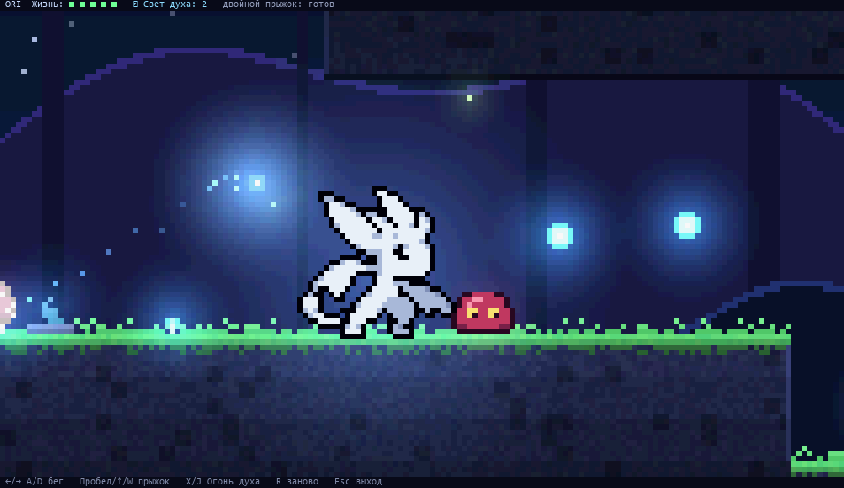
Рис. 24.1. Внешне игра не изменилась, но теперь не зависает даже в медленном терминале
ОтладкаОтладочная сборка против финальной
У вас две сборки игры: обычная build.bat с -O2 и отладочная debug.bat с -g -O0 из главы 12. Насколько отладочная медленнее? Не гадаем — меряем тем же способом, что в теории этой главы. Мы (авторы) сделали это за вас: взяли модули игры без main.cpp, написали маленькую программу, которая 400 раз подряд вызывает updateGame и renderGame без вывода в консоль, собрали её с -O0 и с -O2 и поделили время на число кадров. Повторять этот замер не нужно — достаточно результата:
Сборка
Время кадра без вывода
-O0 (отладочная)
около 1,6 мс
-O2 (обычная)
около 0,5 мс
На другом компьютере числа были бы другими, но соотношение похожее: без оптимизаций код работает примерно втрое медленнее. Что из этого следует:
Для игры важнее вывод. Даже 1,6 мс — крошечная доля от 25 мс, которые мы отводим на кадр. Отладочная сборка играется нормально; главное, что тормозило игру, — консоль, а не наш код.
Скорость меряют в обычной сборке. Замер в -O0 покажет время кода, который компилятор не ускорял, — такие числа ни о чём не говорят.
Ошибки ищут в отладочной. В -O2 компилятор переставляет и выбрасывает строки, и отладчик то и дело «прыгает» по коду. Поэтому две сборки и живут рядом.
Кое-что можно проверить и самому — на фишке этой главы (она ниже). Соберите её второй раз, как отладочную, и сравните графики двух версий:
Фишка меряет кадр вместе с выводом в консоль, а рисует совсем простую картинку, поэтому столбики fps.exe и fps_debug.exe, скорее всего, окажутся похожими — время уходит на вывод и ожидание консоли, а не на наш код. Это и есть первый вывод.
ФишкаСколько стоит кадр
Эта программа рисует картинку и меряет, сколько миллисекунд проходит от кадра до кадра. Вывод у неё, как у игры, идёт отдельным потоком, а новый кадр рисуется, только когда консоль приняла прошлый, — поэтому время кадра включает и рисование, и вывод. Внизу — график: столбик на кадр, белая линия — 25 мс (40 кадров в секунду). Пробел включает «шум»: каждый пиксель случайного цвета. Теперь каждая клетка меняется в каждом кадре и не похожа на соседей, поэтому экономия «отправлять только изменения» больше не помогает — каждый кадр уходит целиком, и столбики графика взлетают выше линии — консоль физически не успевает принять столько данных.
Листинг 24.26. Замер времени кадра 24-fps.cpp
// Фишка главы 24: замер скорости. Программа меряет, сколько миллисекунд уходит// на каждый кадр, и рисует график. Пробел включает «шум» — каждый пиксель случайный,// и сжатие одинаковых соседей больше не помогает: видно, как растёт время кадра.// Сборка из папки игры (файл лежит в папке fishki):// g++ -O2 -std=c++17 -Wall -Wextra -I. fishki\24-fps.cpp screen.cpp console.cpp mathx.cpp -o fps.exe#define WIN32_LEAN_AND_MEAN#define NOMINMAX#include <windows.h>#include <chrono>#include <cstdio>#include "config.h"#include "console.h"#include "mathx.h"#include "screen.h"constint HISTORY = MAX_SCREEN_W;staticfloat frameMs[HISTORY]; // время последних кадров, самый новый — в концеint main() { consoleInit(); screenFitToConsole();if (!consoleStartWriter()) { consoleRestore(); fprintf(stderr, "Cannot create console output thread.\n");return1; } // кадры уходят в консоль отдельным потоком, как в игреbool noise = false;bool spaceWasDown = false;auto start = std::chrono::steady_clock::now();while (!keyDown(VK_ESCAPE)) {// Новый кадр — только когда консоль приняла прошлый. Поэтому время между// кадрами и есть «сколько стоит кадр»: рисование плюс вывод в консольif (consoleWriterBusy()) { Sleep(1);continue; }auto now = std::chrono::steady_clock::now();for (int i = 0; i + 1 < HISTORY; i++) frameMs[i] = frameMs[i + 1]; // история сдвигается влево frameMs[HISTORY - 1] = std::chrono::duration<float, std::milli>(now - start).count(); start = now;bool spaceDown = keyDown(VK_SPACE);if (spaceDown && !spaceWasDown) noise = !noise; // переключаем только в момент нажатия spaceWasDown = spaceDown;int w = screenWidth(), h = screenHeight();for (int y = 0; y < h; y++) {for (int x = 0; x < w; x++) {Color c = noise ? rgb((int)randomRange(0, 255), (int)randomRange(0, 255), (int)randomRange(0, 255)) : rgb(14, 18, 40); putPixel(x, y, c); } }// График: столбик на каждый кадр, 1 пиксель высоты = 1 мс; линия — 25 мс (40 кадров/с)for (int i = 0; i < w; i++) {float ms = frameMs[HISTORY - w + i];int bar = clampi((int)ms, 0, h);Color c = ms > 25 ? rgb(255, 90, 90) : rgb(90, 230, 140);for (int y = h - bar; y < h; y++) putPixel(i, y, c); putPixel(i, h - 25, rgb(255, 255, 255)); }float last = frameMs[HISTORY - 1];char text[96]; snprintf(text, sizeof(text), " Кадр: %.1f мс (%.0f кадров в секунду) шум: %s", last, last > 0 ? 1000 / last : 0.0f, noise ? "вкл" : "выкл"); textAdd(LINE_TOP, text, rgb(220, 230, 255)); textAdd(LINE_BOTTOM, " Пробел — шум Esc — выход", rgb(130, 140, 170)); screenPresent(); } consoleStopWriter(); consoleRestore();return0;}
Создайте в папке игры папку fishki (если её ещё нет) и сохраните программу туда как fishki\24-fps.cpp. Соберите её из папки игры вместе с нужными модулями:
Рис. 24.2. Снимок сделан без настоящей консоли, поэтому график почти пустой. В обычном окне без шума столбики низкие, а с шумом — выше белой линии
Запустите программу в обычном окне консоли и во встроенном терминале VS Code (там — командой .\fps.exe) и сравните графики. Фишка, в отличие от игры, не перебирается в отдельное окно, поэтому в VS Code вы увидите, как медленно его терминал принимает данные. Игра вела бы себя там так же, если запустить её с флагом --here.
Весь код шага 24Сверьтесь с готовой программой
Все 39 файлов игры после этой главы — целиком. Откройте файл, чтобы сравнить со своим, а кнопка «Копировать» поможет, если нужно догнать: вставьте код в файл с тем же именем в папке игры.
// ============================================================================// camera.cpp — камера следует за Ори и не выходит за края уровня// ============================================================================#include <cmath>#include "camera.h"#include "config.h"#include "game.h"#include "mathx.h"// Не даём камере заглянуть за края уровняstaticvoid clampCamera(Game& g) {Camera& cam = g.camera;float maxX = (float)(g.world.width * TILE - screenWidth());float maxY = (float)(MAP_H * TILE - screenHeight()); cam.x = clampf(cam.x, 0, fmaxf(maxX, 0));// если окно выше уровня, прижимаем уровень к низу экрана cam.y = maxY < 0 ? maxY : clampf(cam.y, 0, maxY);}// Целые координаты камеры для рисованияstaticvoid updateView(Camera& cam) { cam.viewX = (int)floorf(cam.x); cam.viewY = (int)floorf(cam.y);if (cam.shake > 0) { // тряска: сдвигаем картинку на пару пикселей в случайную сторону cam.viewX += (int)randomRange(-2, 2); cam.viewY += (int)randomRange(-2, 2); }}void drawDisc(constCamera& cam, int cx, int cy, int radius, Color c) {for (int y = -radius; y <= radius; y++) {for (int x = -radius; x <= radius; x++) {if (x * x + y * y <= radius * radius + radius) putWorldPixel(cam, cx + x, cy + y, c); } }}void centerCamera(Game& g) {constBody& b = g.player.body; g.camera.x = b.x + b.w / 2.0f - screenWidth() / 2.0f; g.camera.y = b.y + b.h / 2.0f - screenHeight() / 2.0f; g.camera.shake = 0; clampCamera(g); updateView(g.camera);}void updateCamera(Game& g, float dt) {Camera& cam = g.camera;constBody& b = g.player.body;// Цель: Ори в центре экрана, чуть сдвинутый назад — видно, что впередиfloat targetX = b.x + b.w / 2.0f - screenWidth() / 2.0f + g.player.facing * 18;float targetY = b.y + b.h / 2.0f - screenHeight() * 0.55f;// Каждый кадр проходим часть пути до цели — камера движется плавно cam.x = lerpf(cam.x, targetX, clampf(dt * 5, 0, 1)); cam.y = lerpf(cam.y, targetY, clampf(dt * 5, 0, 1)); clampCamera(g);if (cam.shake > 0) cam.shake -= dt; updateView(cam);}
camera.h26 строкcamera.h
// ============================================================================// camera.h — какая часть мира видна на экране, рисование в координатах мира// ============================================================================#pragma once#include "color.h"#include "screen.h"structGame; // описана в game.h — здесь достаточно знать, что такая структура естьstructCamera {float x, y; // левый верхний угол экрана в миреfloat shake; // сколько ещё секунд трясти экранint viewX, viewY; // то же целыми числами (с тряской) — по ним рисуем};// Поставить пиксель по координатам мира: экран = мир − камераinlinevoid putWorldPixel(constCamera& cam, int wx, int wy, Color c) { putPixel(wx - cam.viewX, wy - cam.viewY, c);}// Закрашенный круг в координатах мираvoid drawDisc(constCamera& cam, int cx, int cy, int radius, Color c);void centerCamera(Game& g); // сразу поставить Ори в центр экранаvoid updateCamera(Game& g, float dt); // камера плавно догоняет Ори
color.h34 строкиcolor.h
// ============================================================================// color.h — цвет пикселя. Цвет хранится в одном числе 0xRRGGBB:// по два шестнадцатеричных разряда на красный, зелёный и синий.// ============================================================================#pragma oncetypedefunsignedintColor;// Ограничить канал диапазоном 0..255inlineint clampChannel(int value) {return value < 0 ? 0 : (value > 255 ? 255 : value);}// Собрать цвет из красного, зелёного и синего (каждый 0..255)inlineColor rgb(int r, int g, int b) {return (Color)(clampChannel(r) << 16 | clampChannel(g) << 8 | clampChannel(b));}// Достать каналы обратноinlineint colorR(Color c) { return (c >> 16) & 255; }inlineint colorG(Color c) { return (c >> 8) & 255; }inlineint colorB(Color c) { return c & 255; }// Смешать два цвета: t = 0 — первый цвет, t = 1 — второйinlineColor mixColor(Color a, Color b, float t) {return rgb((int)(colorR(a) + (colorR(b) - colorR(a)) * t), (int)(colorG(a) + (colorG(b) - colorG(a)) * t), (int)(colorB(a) + (colorB(b) - colorB(a)) * t));}// Изменить яркость: k = 0.5 — вдвое темнее, k = 2 — вдвое ярчеinlineColor scaleColor(Color c, float k) {return rgb((int)(colorR(c) * k), (int)(colorG(c) * k), (int)(colorB(c) * k));}
config.h38 строкconfig.h
// ============================================================================// config.h — настройки игры. Все важные числа собраны здесь,// чтобы их было легко найти и поменять.// ============================================================================#pragma once// Картинкаconstint MAX_SCREEN_W = 320; // наибольшая ширина картинки в пикселяхconstint MAX_SCREEN_H = 200; // наибольшая высота картинки в пикселях// Мирconstint TILE = 8; // сторона тайла в пикселяхconstint MAP_H = 22; // высота уровня в тайлахconstint MAX_MAP_W = 160; // ширина самого широкого уровня в тайлах// Движениеconstfloat RUN_SPEED = 95.0f; // скорость бега, пикселей в секундуconstfloat RUN_ACCEL_GROUND = 900.0f; // разгон и торможение на землеconstfloat RUN_ACCEL_AIR = 600.0f; // в воздухе разгоняться труднееconstfloat GRAVITY = 900.0f; // насколько быстро растёт скорость паденияconstfloat JUMP_SPEED = 320.0f; // скорость в начале прыжкаconstfloat MAX_FALL_SPEED = 360.0f; // быстрее падать нельзяconstfloat DOUBLE_JUMP_SPEED = 280.0f; // второй прыжок в воздухе чуть слабееconstfloat COYOTE_TIME = 0.10f; // сколько секунд можно прыгнуть после схода с краяconstfloat JUMP_BUFFER_TIME = 0.12f; // сколько секунд помнится раннее нажатие прыжка// Ориconstint PLAYER_W = 16; // ширина хитбоксаconstint PLAYER_H = 24; // высота хитбоксаconstint MAX_HP = 5; // сколько жизней может быть// Сколько объектов может существовать одновременноconstint MAX_PARTICLES = 800;constint MAX_LIGHTS = 160;constint MAX_PICKUPS = 80;constint MAX_CHECKPOINTS = 10;constint MAX_ENEMIES = 40;constint MAX_SHOTS = 32;
console.cpp227 строкconsole.cpp
// ============================================================================// console.cpp — всё, что связано с Windows-консолью, собрано в одном файле// ============================================================================#define WIN32_LEAN_AND_MEAN#define NOMINMAX#include <windows.h>#include <cstring>#include <atomic>#include <cstdio>#include <cstdlib>#include "console.h"// Как была настроена консоль до запуска игрыstaticDWORD originalOutMode = 0;staticDWORD originalInMode = 0;staticUINT originalCodePage = 0;// Застрял ли какой-нибудь наш поток в записи в консоль, которую так и не удалось отменитьstatic std::atomic<bool> threadStuck(false);static std::atomic<bool> shutdownStarted(false);static std::atomic<bool> writerBusy(false);static std::atomic<bool> writerQuit(false);static std::atomic<bool> writerAccepting(false);static std::atomic<bool> writerFailed(false);static std::atomic<bool> writerStopping(false);static std::atomic<bool> writerStopped(true);staticHANDLE writerThread = NULL;// Ctrl+C или закрытие: consoleRestore сначала останавливает writer.// Обработчик делает ограниченную по времени попытку уборки, затем Windows завершает процесс.staticBOOL WINAPI onConsoleEvent(DWORD) { consoleRestore();return FALSE;}bool relaunchInOwnWindow(int argc, char** argv) {for (int i = 1; i < argc; i++) {if (strcmp(argv[i], "--here") == 0) {returnfalse; } }constchar* terminal = getenv("TERM_PROGRAM");if (terminal == NULL || strcmp(terminal, "vscode") != 0) {returnfalse; }char exePath[MAX_PATH];char command[MAX_PATH + 16]; GetModuleFileNameA(NULL, exePath, MAX_PATH); snprintf(command, sizeof(command), "\"%s\" --here", exePath); STARTUPINFOA startup; PROCESS_INFORMATION process; memset(&startup, 0, sizeof(startup)); startup.cb = sizeof(startup);if (!CreateProcessA(NULL, command, NULL, NULL, FALSE, CREATE_NEW_CONSOLE, NULL, NULL, &startup, &process)) {returnfalse; } CloseHandle(process.hThread); CloseHandle(process.hProcess); printf("Игра открыта в отдельном окне консоли (терминал VS Code для неё слишком медленный).\n""Чтобы всё же запустить здесь: ori.exe --here\n");returntrue;}void consoleInit() {HANDLE out = GetStdHandle(STD_OUTPUT_HANDLE);HANDLE in = GetStdHandle(STD_INPUT_HANDLE); GetConsoleMode(out, &originalOutMode); GetConsoleMode(in, &originalInMode); originalCodePage = GetConsoleOutputCP(); SetConsoleMode(out, originalOutMode | ENABLE_PROCESSED_OUTPUT | ENABLE_VIRTUAL_TERMINAL_PROCESSING); SetConsoleMode(in, ENABLE_EXTENDED_FLAGS); // выключить выделение мышью: оно ставит вывод на паузу SetConsoleOutputCP(CP_UTF8); SetConsoleCtrlHandler(onConsoleEvent, TRUE); SetConsoleTitleA("Ori");// Отдельный экран, спрятать курсор, очистить экранconstchar* start = "\x1b[?1049h\x1b[?25l\x1b[2J"; consoleWrite(start, (int)strlen(start));}// Сама работа по восстановлению консоли — её выполняет отдельный потокstaticDWORD WINAPI restoreWork(LPVOID) {// Обычные цвета, показать курсор, вернуться на основной экранconstchar* finish = "\x1b[0m\x1b[?25h\x1b[?1049l"; consoleWrite(finish, (int)strlen(finish)); consoleFlushInput(); SetConsoleMode(GetStdHandle(STD_OUTPUT_HANDLE), originalOutMode); SetConsoleMode(GetStdHandle(STD_INPUT_HANDLE), originalInMode); SetConsoleOutputCP(originalCodePage);return0;}// Вернуть консоль в порядок. Если терминал завис и не принимает вывод,// запись тоже зависнет — поэтому её делает отдельный поток, а мы ждём// ограниченное время; отмена записи и восстановление могут не удаться.void consoleRestore() {if (shutdownStarted.exchange(true)) return; // только один поток выполняет уборку consoleStopWriter(); // прежде чем восстанавливать экранif (threadStuck) {// Запись не удалось остановить: нельзя писать в консоль параллельно с ней.// Это аварийный выход; успешное восстановление экрана здесь не обещаем. TerminateProcess(GetCurrentProcess(), 1);return; }HANDLE worker = CreateThread(NULL, 0, restoreWork, NULL, 0, NULL);if (worker == NULL) return; // восстановление не удалось запуститьDWORD status = WaitForSingleObject(worker, 500);for (int i = 0; status == WAIT_TIMEOUT && i < 50; i++) { CancelSynchronousIo(worker); // запрос отмены, а не гарантия завершения status = WaitForSingleObject(worker, 10); } CloseHandle(worker);if (status != WAIT_OBJECT_0) { threadStuck = true; TerminateProcess(GetCurrentProcess(), 1); // восстановление могло остаться незавершённым }}bool consoleSize(int& cols, int& rows) { CONSOLE_SCREEN_BUFFER_INFO info;if (!GetConsoleScreenBufferInfo(GetStdHandle(STD_OUTPUT_HANDLE), &info)) {returnfalse; } cols = info.srWindow.Right - info.srWindow.Left + 1; rows = info.srWindow.Bottom - info.srWindow.Top + 1;returntrue;}void consoleFlushInput() { FlushConsoleInputBuffer(GetStdHandle(STD_INPUT_HANDLE));}bool keyDown(int virtualKey) {return (GetAsyncKeyState(virtualKey) & 0x8000) != 0;}bool consoleWrite(constchar* data, int length) {if (length < 0) returnfalse;int sent = 0;while (sent < length) {// После запроса остановки writer не начинает следующую часть записи.if (writerQuit && writerBusy) returnfalse;DWORD written = 0;DWORD remaining = (DWORD)(length - sent);if (!WriteFile(GetStdHandle(STD_OUTPUT_HANDLE), data + sent, remaining, &written, NULL) || written == 0 || written > remaining) returnfalse; sent += (int)written; }returntrue;}// ---------------------------------------------------------------------------// Поток вывода. Основной поток кладёт кадр в sendBuffer и поднимает флаг// writerBusy, а этот поток отправляет кадр в консоль и опускает флаг.// ---------------------------------------------------------------------------staticchar sendBuffer[4 * 1024 * 1024];staticint sendLength = 0;staticDWORD WINAPI writerLoop(LPVOID) {while (!writerQuit) {if (!writerBusy) { Sleep(1);continue; }bool sent = consoleWrite(sendBuffer, sendLength);if (!sent) writerFailed = true; writerBusy = false; }return0;}bool consoleStartWriter() {if (shutdownStarted) returnfalse; writerQuit = false; writerFailed = false; writerBusy = false; writerStopping = false; writerStopped = false; writerThread = CreateThread(NULL, 0, writerLoop, NULL, 0, NULL); writerAccepting = writerThread != NULL;if (!writerAccepting) writerStopped = true;return writerAccepting;}bool consoleWriterBusy() {return writerBusy || !writerAccepting;}bool consoleTakeWriteFailure() {return writerFailed.exchange(false); // основной поток забирает сообщение об ошибке}bool consoleSubmit(constchar* data, int length) {if (!writerAccepting || shutdownStarted || writerBusy || length <= 0 || length > (int)sizeof(sendBuffer)) returnfalse; memcpy(sendBuffer, data, length); sendLength = length; writerBusy = true;returntrue;}void consoleStopWriter() { writerAccepting = false; // новые кадры больше не принимаемif (writerStopping.exchange(true)) {// main и обработчик закрытия могли прийти сюда одновременно.for (int i = 0; i < 100 && !writerStopped; i++) Sleep(10);if (!writerStopped) threadStuck = true;return; }if (writerThread != NULL) {for (int i = 0; i < 25 && writerBusy; i++) Sleep(10); // короткая попытка дописать кадр writerQuit = true;DWORD status = WaitForSingleObject(writerThread, 10);for (int i = 0; status == WAIT_TIMEOUT && i < 50; i++) { CancelSynchronousIo(writerThread); status = WaitForSingleObject(writerThread, 10); }if (status != WAIT_OBJECT_0) threadStuck = true; CloseHandle(writerThread); writerThread = NULL; } writerStopped = true;}
console.h24 строкиconsole.h
// ============================================================================// console.h — окно консоли Windows: настройка, размер, клавиши, вывод// ============================================================================#pragma once// Если игру запустили из терминала VS Code, открыть её в отдельном окне.// Возвращает true, если игра перезапущена и эту копию нужно закрыть.bool relaunchInOwnWindow(int argc, char** argv);void consoleInit(); // включить цвета и UTF-8, перейти на отдельный экранvoid consoleRestore(); // вернуть консоль в исходное состояниеbool consoleSize(int& cols, int& rows); // видимый размер окна в символахvoid consoleFlushInput(); // выбросить накопившиеся нажатия клавишbool keyDown(int virtualKey); // зажата ли клавиша прямо сейчас// Полностью записать данные; false — ошибка или неполная записьbool consoleWrite(constchar* data, int length);// Вывод в отдельном потоке: игра не ждёт медленный терминалbool consoleStartWriter(); // false — поток не создан, игру запускать нельзяvoid consoleStopWriter();bool consoleTakeWriteFailure(); // сбой вывода: следующий кадр рисуем целикомbool consoleWriterBusy(); // предыдущий кадр ещё отправляетсяbool consoleSubmit(constchar* data, int length); // false — кадр не принят
// ============================================================================// effects.cpp — пулы частиц и источников света// ============================================================================#include <algorithm>#include <cmath>#include <cstring>#include "config.h"#include "effects.h"#include "mathx.h"struct Particle {float x, y, vx, vy;float life, maxLife; // сколько осталось жить и сколько жила бы всегоColor color;bool gravity; // падает ли вниз};struct Light {float x, y, radius;Color color;float power;};// Пулы: частица с life <= 0 — свободное местоstatic Particle particles[MAX_PARTICLES];static Light lights[MAX_LIGHTS];staticint lightCount = 0;void clearParticles() { memset(particles, 0, sizeof(particles));}void spawnParticle(float x, float y, float vx, float vy, float life, Color color, bool gravity) {for (int i = 0; i < MAX_PARTICLES; i++) {if (particles[i].life <= 0) { particles[i] = { x, y, vx, vy, life, life, color, gravity };return; } }}void burst(float x, float y, int count, Color color, float speed, float life, bool gravity) {for (int i = 0; i < count; i++) {float angle = randomRange(0, 6.2832f);float s = randomRange(speed * 0.3f, speed); spawnParticle(x, y, cosf(angle) * s, sinf(angle) * s, randomRange(life * 0.5f, life), color, gravity); }}void updateParticles(float dt) {for (int i = 0; i < MAX_PARTICLES; i++) { Particle& p = particles[i];if (p.life <= 0) continue; p.life -= dt;if (p.gravity) p.vy += GRAVITY * 0.5f * dt; p.vx *= 1.0f - 1.5f * dt; // сопротивление воздуха p.vy *= 1.0f - 1.5f * dt; p.x += p.vx * dt; p.y += p.vy * dt; }}void drawParticles(constCamera& cam) {for (int i = 0; i < MAX_PARTICLES; i++) {const Particle& p = particles[i];if (p.life <= 0) continue;float strength = clampf(p.life / p.maxLife, 0, 1); // гаснет к концу жизни addPixel((int)roundf(p.x) - cam.viewX, (int)roundf(p.y) - cam.viewY, p.color, strength); }}void clearLights() { lightCount = 0;}void addLight(float x, float y, float radius, Color color, float power) {if (lightCount < MAX_LIGHTS) { lights[lightCount] = { x, y, radius, color, power }; lightCount++; }}void applyLights(constCamera& cam) {for (int i = 0; i < lightCount; i++) {const Light& light = lights[i];int cx = (int)light.x - cam.viewX;int cy = (int)light.y - cam.viewY;int r = (int)light.radius;// Проходим только по квадрату вокруг источника и только по видимой частиint x0 = std::max(0, cx - r), x1 = std::min(screenWidth() - 1, cx + r);int y0 = std::max(0, cy - r), y1 = std::min(screenHeight() - 1, cy + r);for (int y = y0; y <= y1; y++) {for (int x = x0; x <= x1; x++) {float dx = (float)(x - cx), dy = (float)(y - cy);float d = sqrtf(dx * dx + dy * dy) / light.radius; // 0 в центре, 1 на краюif (d >= 1) continue; addPixel(x, y, light.color, (1 - d) * (1 - d) * light.power); } } }}
effects.h19 строкeffects.h
// ============================================================================// effects.h — частицы (искры, пыль) и свет// ============================================================================#pragma once#include "camera.h"#include "color.h"// Частицы: живут несколько долей секунды и гаснутvoid clearParticles();void spawnParticle(float x, float y, float vx, float vy, float life, Color color, bool gravity);void burst(float x, float y, int count, Color color, float speed, float life, bool gravity);void updateParticles(float dt);void drawParticles(constCamera& cam);// Свет: источники собираются заново в каждом кадре, потом накладываются на картинкуvoid clearLights();void addLight(float x, float y, float radius, Color color, float power);void applyLights(constCamera& cam);
enemies.cpp211 строкenemies.cpp
// ============================================================================// enemies.cpp — поведение и отрисовка врагов// ============================================================================#include <cmath>#include <cstring>#include "effects.h"#include "enemies.h"#include "game.h"#include "mathx.h"#include "sprites.h"// Слизень: два кадра — обычный и «сплющенный»staticconstchar* SLIME_FRAME_1[] = {"....kkkk....","..kkrrrrkk..",".krrhhrrrrk.",".krhrrrrrrk.","krryyrryyrrk","krrykrrykrrk","krrrrrrrrrrk","kpprrrrrrppk",".kkkkkkkkkk.",};staticconstchar* SLIME_FRAME_2[] = {"............","..kkrrrrkk..",".krrhhrrrrk.",".krhrrrrrrk.","krryyrryyrrk","krrykrrykrrk","krrrrrrrrrrk","kpprrrrrrppk",".kkkkkkkkkk.",};staticconstchar SLIME_KEYS[] = "krphy";staticconstColor SLIME_COLORS[] = { rgb(42, 8, 32), rgb(194, 60, 100), rgb(126, 32, 72), rgb(255, 154, 180), rgb(255, 224, 112) };staticconst Sprite SLIME_SPRITES[2] = { { 12, 9, SLIME_FRAME_1, SLIME_KEYS, SLIME_COLORS }, { 12, 9, SLIME_FRAME_2, SLIME_KEYS, SLIME_COLORS },};// Летучая мышь: крылья вверх и крылья внизstaticconstchar* BAT_FRAME_1[] = {"l............l","ll...kkkk...ll","lll.kbbbbk.lll",".lllbebbeblll.","..llbbbbbbll..","....kbbbbk....",".....k..k.....","..............",};staticconstchar* BAT_FRAME_2[] = {"..............",".....kkkk.....","....kbbbbk....","..llbebbebll..",".lllbbbbbblll.","lll.kbbbbk.lll","ll...k..k...ll","l............l",};staticconstchar BAT_KEYS[] = "kble";staticconstColor BAT_COLORS[] = { rgb(10, 10, 26), rgb(60, 50, 112), rgb(106, 79, 166), rgb(255, 122, 40) };staticconst Sprite BAT_SPRITES[2] = { { 14, 8, BAT_FRAME_1, BAT_KEYS, BAT_COLORS }, { 14, 8, BAT_FRAME_2, BAT_KEYS, BAT_COLORS },};void spawnEnemy(Game& g, EnemyType type, float x, float y) {if (g.enemyCount >= MAX_ENEMIES) return;Enemy& e = g.enemies[g.enemyCount]; memset(&e, 0, sizeof(e)); e.type = type; e.alive = true; e.dir = -1; e.time = randomRange(0, 6.28f); // чтобы враги двигались не в тактif (type == ENEMY_SLIME) { e.hp = 3; e.body = makeBody(x - 2, y + TILE - 9, 12, 9); // ногами на дно клетки } elseif (type == ENEMY_BAT) { e.hp = 2; e.body = makeBody(x - 3, y, 14, 8); } e.homeX = e.body.x; e.homeY = e.body.y; g.enemyCount++;}// Слизень ползёт и разворачивается у стены и на краю обрываstaticvoid updateSlime(Game& g, Enemy& e, float dt) {Body& b = e.body;if (e.knockTime <= 0) b.vx = e.dir * 22.0f; b.vy = fminf(b.vy + GRAVITY * dt, MAX_FALL_SPEED); moveBody(g.world, b, dt);if (e.knockTime <= 0) {if (b.hitWall) e.dir = -e.dir;// Тайл чуть впереди и чуть ниже ног: если он не твёрдый — впереди обрывint frontX = (int)floorf((e.dir > 0 ? b.x + b.w + 1 : b.x - 1) / TILE);int belowY = (int)floorf((b.y + b.h + 1) / TILE);if (b.onGround && !isSolidTile(tileAt(g.world, frontX, belowY))) e.dir = -e.dir; }if (b.y > MAP_H * TILE + 40) e.alive = false; // упал в пропасть}// Летучая мышь: рядом с Ори — летит к нему, иначе кружит у гнездаstaticvoid updateBat(Game& g, Enemy& e, float dt) {Body& b = e.body;constBody& player = g.player.body;float dx = (player.x + player.w / 2.0f) - (b.x + b.w / 2.0f);float dy = (player.y + player.h / 2.0f) - (b.y + b.h / 2.0f);float distance = sqrtf(dx * dx + dy * dy);float ax, ay; // ускорениеif (distance < 110 && g.state == STATE_PLAY) {// Направление на Ори длиной 1, умноженное на силу разгона, и волнистость полёта ax = dx / fmaxf(distance, 1.0f) * 120; ay = dy / fmaxf(distance, 1.0f) * 120 + sinf(e.time * 6) * 80; e.dir = dx > 0 ? 1 : -1; } else {// Тянемся к точке, которая плавает вокруг гнезда ax = (e.homeX + sinf(e.time * 0.9f) * 24 - b.x) * 2; ay = (e.homeY + sinf(e.time * 2.1f) * 6 - b.y) * 2; }if (e.knockTime <= 0) { b.vx += ax * dt; b.vy += ay * dt;float speed = sqrtf(b.vx * b.vx + b.vy * b.vy);if (speed > 48) { // не быстрее 48 пикселей в секунду b.vx *= 48 / speed; b.vy *= 48 / speed; } } b.vx *= 1.0f - 0.8f * dt; b.vy *= 1.0f - 0.8f * dt; b.x += b.vx * dt; // мыши летают сквозь стены b.y += b.vy * dt;}// Касание с Ори: прыжок сверху ранит врага, иначе ранен Ориstaticvoid checkContact(Game& g, Enemy& e, float dt) {Body& player = g.player.body;constBody& b = e.body;if (g.state != STATE_PLAY) return;if (!rectsOverlap(player.x, player.y, player.w, player.h, b.x, b.y, b.w, b.h)) return;// Ори падает, и кадр назад его ноги были выше врага — значит, прилетел сверхуfloat feetBefore = player.y + player.h - player.vy * dt;bool stomp = player.vy > 40 && feetBefore <= b.y + 4;if (stomp) { hitEnemy(g, e, 2, player.x + 8 < b.x + b.w / 2.0f ? 1.0f : -1.0f); player.y = b.y - player.h; // ставим Ори на врага: в следующем кадре они уже не касаются player.vy = -250; g.player.canDoubleJump = true; } else { hurtPlayer(g, b.x + b.w / 2.0f, -180); }}void updateEnemies(Game& g, float dt) {for (int i = 0; i < g.enemyCount; i++) {Enemy& e = g.enemies[i];if (!e.alive) continue; e.time += dt;if (e.hurtTime > 0) e.hurtTime -= dt;if (e.knockTime > 0) e.knockTime -= dt;if (e.type == ENEMY_SLIME) { updateSlime(g, e, dt); } elseif (e.type == ENEMY_BAT) { updateBat(g, e, dt); } checkContact(g, e, dt); }}void hitEnemy(Game& g, Enemy& e, int damage, float pushDir) {Body& b = e.body; e.hp -= damage; e.hurtTime = 0.15f;float cx = b.x + b.w / 2.0f, cy = b.y + b.h / 2.0f; burst(cx, cy, 10, rgb(255, 200, 230), 80, 0.35f, false); e.knockTime = 0.2f; b.vx = pushDir * 90; b.vy = (e.type == ENEMY_SLIME) ? -120.0f : -40.0f;if (e.hp <= 0) { e.alive = false;Color body = (e.type == ENEMY_SLIME) ? rgb(220, 60, 110) : rgb(130, 90, 200); burst(cx, cy, 30, body, 110, 0.7f, true); burst(cx, cy, 12, rgb(160, 240, 255), 60, 1.0f, false); g.player.spiritLight += 3; }}void drawEnemies(constGame& g) {for (int i = 0; i < g.enemyCount; i++) {constEnemy& e = g.enemies[i];if (!e.alive) continue;int x = (int)roundf(e.body.x);int y = (int)roundf(e.body.y);bool flip = e.dir > 0; // на картинках враги смотрят влевоbool flash = e.hurtTime > 0; // после удара — белая вспышкаif (e.type == ENEMY_SLIME) {int frame = ((int)(e.time * 6)) % 2; drawSprite(g.camera, SLIME_SPRITES[frame], x, y, flip, flash); } elseif (e.type == ENEMY_BAT) {int frame = ((int)(e.time * 8)) % 2; drawSprite(g.camera, BAT_SPRITES[frame], x, y, flip, flash); } }}
enemies.h30 строкenemies.h
// ============================================================================// enemies.h — враги: слизни, летучие мыши (и босс)// ============================================================================#pragma once#include "physics.h"structGame;enum EnemyType { ENEMY_SLIME, // ползает по платформе ENEMY_BAT, // летает и преследует Ори};structEnemy { EnemyType type;Body body;int hp;int dir; // куда смотрит или ползёт: -1 или 1float hurtTime; // сколько ещё мигать после удараfloat knockTime; // сколько ещё лететь от удараfloat time; // собственное время врага — для анимацииfloat homeX, homeY; // где враг появился (гнездо летучей мыши)bool alive;};void spawnEnemy(Game& g, EnemyType type, float x, float y);void updateEnemies(Game& g, float dt);void hitEnemy(Game& g, Enemy& enemy, int damage, float pushDir); // pushDir — куда отбросить: -1 или 1void drawEnemies(constGame& g);
game.cpp138 строкgame.cpp
// ============================================================================// game.cpp — загрузка уровней и правила игры: что обновлять в каждом кадре// ============================================================================#include <algorithm>#include <cmath>#include <cstring>#include "effects.h"#include "game.h"#include "input.h"#include "levels.h"// Символ карты — объект? Тогда создаём объект и возвращаем пробел.// Иначе это тайл (камень, бревно, шипы) — он остаётся в карте как есть.staticchar placeObject(Game& g, char symbol, float wx, float wy) {World& w = g.world;switch (symbol) {case'P': w.spawnX = wx; w.spawnY = wy + TILE - PLAYER_H; // ногами на дно клеткиreturn' ';case'o': addPickup(g, PICKUP_LIGHT, wx + 4, wy + 4);return' ';case'+': addPickup(g, PICKUP_HEALTH, wx + 4, wy + 4);return' ';case'C': addCheckpoint(g, wx + 4, wy + TILE);return' ';case'T': w.hasTree = true; w.treeX = wx + 4; w.treeY = wy + TILE;return' ';case'S': spawnEnemy(g, ENEMY_SLIME, wx, wy);return' ';case'B': spawnEnemy(g, ENEMY_BAT, wx, wy);return' ';default:return symbol; }}void loadLevel(Game& g, int index) {const LevelInfo& level = levelInfo(index);World& w = g.world; g.levelIndex = index; g.pickupCount = 0; g.checkpointCount = 0; g.enemyCount = 0; clearShots(g); clearParticles(); w.hasTree = false;// Ширина уровня — длина самой длинной строки карты w.width = 0;for (int ty = 0; ty < MAP_H; ty++) { w.width = std::max(w.width, (int)strlen(level.rows[ty])); } w.width = std::min(w.width, MAX_MAP_W);for (int ty = 0; ty < MAP_H; ty++) {int length = (int)strlen(level.rows[ty]);for (int tx = 0; tx < w.width; tx++) {char symbol = tx < length ? level.rows[ty][tx] : ' '; w.tiles[ty][tx] = placeObject(g, symbol, (float)(tx * TILE), (float)(ty * TILE)); } w.tiles[ty][w.width] = 0; // конец строки } placePlayer(g.player, w.spawnX, w.spawnY); centerCamera(g);}void startNewGame(Game& g) { g.state = STATE_TITLE; g.player.spiritLight = 0; loadLevel(g, 0);}// Дошли до Древа Духов — победаstaticvoid checkGoals(Game& g) {constBody& b = g.player.body;constWorld& w = g.world;if (w.hasTree && g.state == STATE_PLAY && rectsOverlap(b.x, b.y, b.w, b.h, w.treeX - 6, w.treeY - 40, 12, 40)) { g.state = STATE_WIN; burst(w.treeX, w.treeY - 40, 80, rgb(160, 255, 220), 130, 1.5f, false); }}// Игра идёт: обновляем всё по очередиstaticvoid updatePlay(Game& g, constInput& in, float dt) { updatePlayer(g, in, dt);if (g.state != STATE_PLAY) return; updateItems(g); checkGoals(g);if (g.state != STATE_PLAY) return; updateEnemies(g, dt);if (g.state != STATE_PLAY) return; updateShots(g, dt);}void updateGame(Game& g, constInput& in, float dt) { g.time += dt;if (in.restart.pressed && g.state != STATE_TITLE) { startNewGame(g); g.state = STATE_PLAY; }switch (g.state) {case STATE_TITLE:// Сейн кружит вокруг Ори, Enter или пробел начинает игру g.player.seinX = g.player.body.x + 8 + sinf(g.time) * 16; g.player.seinY = g.player.body.y - 6 + sinf(g.time * 2) * 4;if (in.confirm.pressed) g.state = STATE_PLAY;break;case STATE_PLAY: updatePlay(g, in, dt);break;case STATE_DEAD:if (in.confirm.pressed) { // Enter — возродиться у колодца с полными жизнями g.player.hp = MAX_HP; g.state = STATE_PLAY; respawnPlayer(g); } updateEnemies(g, dt);break;case STATE_WIN: updateEnemies(g, dt);break; } updateParticles(dt); updateCamera(g, dt);}
game.h43 строкиgame.h
// ============================================================================// game.h — вся игра в одной структуре Game. Функции получают её по ссылке,// поэтому глобальные переменные не нужны.// ============================================================================#pragma once#include "config.h"#include "camera.h"#include "enemies.h"#include "items.h"#include "player.h"#include "shots.h"#include "world.h"structInput;// В каком состоянии игра: от него зависит, что делают клавиши и что видно на экранеenum GameState { STATE_TITLE, // заставка STATE_PLAY, // игра идёт STATE_DEAD, // Ори погиб STATE_WIN, // победа};structGame { GameState state;float time; // сколько секунд идёт игра — для анимацийint levelIndex; // номер текущего уровня (с нуля)World world;Camera camera;Player player; Pickup pickups[MAX_PICKUPS];int pickupCount; Checkpoint checkpoints[MAX_CHECKPOINTS];int checkpointCount;Enemy enemies[MAX_ENEMIES];int enemyCount; Shot shots[MAX_SHOTS];};void startNewGame(Game& g);void loadLevel(Game& g, int index);void updateGame(Game& g, constInput& in, float dt);
hud.cpp67 строкhud.cpp
// ============================================================================// hud.cpp — жизни и счёт вверху, подсказка внизу, надписи заставки и финала// ============================================================================#include <cstdio>#include "game.h"#include "hud.h"#include "screen.h"constColor HUD_TEXT = rgb(200, 220, 255);constColor HINT_TEXT = rgb(130, 140, 170);// Верхняя строка: жизни, свет духа и подсказка про двойной прыжокstaticvoid drawTopLine(constGame& g) {constPlayer& p = g.player; textAdd(LINE_TOP, " ORI Жизнь: ", HUD_TEXT);for (int i = 0; i < MAX_HP; i++) { textAdd(LINE_TOP, "■ ", i < p.hp ? rgb(110, 255, 150) : rgb(50, 60, 70)); } textAdd(LINE_TOP, " ◆ Свет духа: ", rgb(140, 220, 255)); textAddInt(LINE_TOP, p.spiritLight, rgb(140, 220, 255));if (screenWidth() >= 80) { textAdd(LINE_TOP, p.canDoubleJump ? " двойной прыжок: готов" : " двойной прыжок: —", rgb(150, 160, 190)); }}// Нижняя строка — подсказка по управлению (короче, если окно узкое)staticvoid drawBottomLine() {int w = screenWidth();if (w >= 96) { textAdd(LINE_BOTTOM, " ←/→ A/D бег Пробел/↑/W прыжок X/J Огонь духа R заново Esc выход", HINT_TEXT); } elseif (w >= 52) { textAdd(LINE_BOTTOM, " ←/→ бег ↑ прыжок X огонь R заново Esc выход", HINT_TEXT); }}// Надписи поверх картинки — для каждого состояния игры своиstaticvoid drawOverlays(constGame& g) {int mid = screenHeight() / 4 - 1; // строка картинки чуть выше серединыchar text[96];switch (g.state) {case STATE_TITLE: textOverlay(mid - 2, "O R I", rgb(220, 240, 255)); textOverlay(mid, "и Слепой лес — консольная версия", rgb(150, 220, 255)); textOverlay(mid + 2, "Доберись до Древа Духов на востоке", rgb(140, 255, 200)); textOverlay(mid + 4, "Нажми Пробел или Enter", rgb(255, 230, 150));break;case STATE_DEAD: textOverlay(mid - 1, "Свет Ори угас...", rgb(255, 150, 170)); textOverlay(mid + 1, "Enter — у колодца духа R — с начала", rgb(220, 220, 240));break;case STATE_WIN: textOverlay(mid - 2, "Ори достиг Древа Духов!", rgb(160, 255, 220)); snprintf(text, sizeof(text), "Собрано света духа: %d", g.player.spiritLight); textOverlay(mid, text, rgb(150, 220, 255)); textOverlay(mid + 2, "R — сыграть ещё раз Esc — выход", rgb(220, 220, 240));break;case STATE_PLAY:break; }}void drawHud(constGame& g) { drawTopLine(g); drawBottomLine(); drawOverlays(g);}
hud.h8 строкhud.h
// ============================================================================// hud.h — строки текста над и под картинкой и надписи поверх неё// ============================================================================#pragma oncestructGame;void drawHud(constGame& g);
// ============================================================================// input.h — какие кнопки управления нажаты// ============================================================================#pragma once// Одна кнопка управленияstructKey {bool held; // зажата сейчасbool pressed; // нажата именно в этом кадре (в прошлом кадре не была зажата)};structInput {Key left;Key right;Key jump;Key attack;Key restart;Key confirm;Key quit;};void readInput(Input& in);
// ============================================================================// items.h — предметы на уровне: свет духа, ячейки жизни, колодцы// ============================================================================#pragma oncestructGame;enum PickupType { PICKUP_LIGHT, // свет духа — очки PICKUP_HEALTH, // ячейка жизни};struct Pickup {float x, y; // центр предмета PickupType type;bool taken; // уже подобран};// Колодец духа — место, где Ори возродитсяstruct Checkpoint {float x, y; // середина основания колодцаbool active; // это последний колодец, которого коснулся Ори};void addPickup(Game& g, PickupType type, float x, float y);void addCheckpoint(Game& g, float x, float y);void updateItems(Game& g); // Ори подбирает предметы и зажигает колодцыvoid drawItems(constGame& g);
levels.cpp52 строкиlevels.cpp
// ============================================================================// levels.cpp — карты уровней. Каждый символ — тайл 8 × 8 пикселей:// # — камень, = — бревно, ^ — шипы, P — старт Ори// o — свет духа, + — ячейка жизни, C — колодец (точка возрождения)// S — слизень, B — летучая мышь// T — Древо Духов (финиш игры)// ============================================================================#include "config.h"#include "levels.h"// Лес Нибельstaticconstchar* LEVEL1[MAP_H] = {"## ##################### ##","## ##################### ##","## ##################### ##","## ##################### B ##","## ##################### ##","## ##################### o o + ##","## ##################### ##","## ##################### o C S S ##","## B ##################### ################# ##","## + === ################# o ##","## o o B o ################# B ##","## o === ################# S ##","## o o o o o o o B ===########################### ##","## o === ########################### ##","## o o o o === ########### C S S ########################### ##","## ########### #################### === ########################### ##","## P ### ########### #################### o o o ########################### ##","## ### S C ########### #################### ^^ ########################### T ##","############################### ################### ################################### ##############################################","############################### ################### ################################### ##############################################","###############################^^^^^^###################^^^^^^^^^^^^^^^###################################^^^^^^^^##############################################","################################################################################################################################################################",};// Все уровни по порядкуstaticconst LevelInfo LEVELS[] = { { "Лес Нибель", LEVEL1, rgb(6, 8, 28), rgb(24, 46, 84), // небо rgb(30, 28, 72), rgb(13, 18, 42), // холмы rgb(38, 44, 80), rgb(96, 220, 120), // камень и мохtrue },};int levelCount() {returnsizeof(LEVELS) / sizeof(LEVELS[0]);}const LevelInfo& levelInfo(int index) {return LEVELS[index];}
levels.h18 строкlevels.h
// ============================================================================// levels.h — описания уровней: карта, название и цвета// ============================================================================#pragma once#include "color.h"struct LevelInfo {constchar* name; // название уровняconstchar* const* rows; // карта: MAP_H строк из символовColor skyTop, skyBottom; // небо: цвет вверху и у горизонтаColor hillFar, hillNear; // силуэты дальних и ближних холмовColor rock, moss; // камень и мох на нёмbool stars; // есть ли звёзды на небе};int levelCount(); // сколько всего уровнейconst LevelInfo& levelInfo(int index); // описание уровня по номеру (с нуля)
main.cpp61 строкаmain.cpp
// ============================================================================// ORI — консольная игра-платформер, вид сбоку.// Картинка рисуется пикселями из символов '▀' и ANSI-цветов.// Без классов: только данные (структуры) и функции.//// Сборка: build.bat; отладочная сборка: debug.bat.// В скриптах перечислены только исходники игры этого шага.// ============================================================================#include <cstdio>#include <chrono>#include <thread>#include "console.h"#include "game.h"#include "input.h"#include "render.h"#include "screen.h"int main(int argc, char** argv) {if (relaunchInOwnWindow(argc, argv)) return0; consoleInit(); screenFitToConsole();staticGame game; // вся игра; static — чтобы большая структура не лежала на стеке startNewGame(game);if (!consoleStartWriter()) { consoleRestore(); fprintf(stderr, "Cannot create console output thread.\n");return1; }Input input = {};constauto FRAME_TIME = std::chrono::milliseconds(25); // 25 мс — около 40 кадров в секундуauto previous = std::chrono::steady_clock::now();while (true) {auto frameStart = std::chrono::steady_clock::now();float dt = std::chrono::duration<float>(frameStart - previous).count(); previous = frameStart;if (dt > 0.05f) dt = 0.05f; // после долгой паузы не прыгаем далеко вперёд// Пока поток вывода ждёт терминал, вызовы консоли тоже будут ждать —// трогаем консоль, только когда она свободна (клавиши читаются в обход неё)if (!consoleWriterBusy()) { screenFitToConsole(); consoleFlushInput(); } readInput(input);if (input.quit.pressed) break; updateGame(game, input, dt);if (!consoleWriterBusy()) { // новый кадр — только когда предыдущий ушёл в консоль renderGame(game); screenPresent(); }auto elapsed = std::chrono::steady_clock::now() - frameStart;if (elapsed < FRAME_TIME) std::this_thread::sleep_for(FRAME_TIME - elapsed); } consoleStopWriter(); consoleRestore();return0;}
mathx.cpp12 строкmathx.cpp
// ============================================================================// mathx.cpp — генератор случайных чисел// ============================================================================#include "mathx.h"// Состояние генератора: из него получается следующее «случайное» числоstaticunsignedint randomSeed = 12345u;float randomRange(float a, float b) { randomSeed = randomSeed * 1664525u + 1013904223u;return a + (b - a) * ((randomSeed >> 8) / 16777216.0f);}
mathx.h22 строкиmathx.h
// ============================================================================// mathx.h — маленькие математические помощники// ============================================================================#pragma once// Зажать число между lo и hiinlineint clampi(int v, int lo, int hi) { return v < lo ? lo : (v > hi ? hi : v); }inlinefloat clampf(float v, float lo, float hi) { return v < lo ? lo : (v > hi ? hi : v); }// Плавный переход: t = 0 — a, t = 1 — b, t = 0.5 — ровно посерединеinlinefloat lerpf(float a, float b, float t) { return a + (b - a) * t; }// «Случайное», но всегда одинаковое число для пары координат.// Нужно для текстур: камень не должен «кипеть» от кадра к кадру.inlineunsignedint hash2(int x, int y) {unsignedint h = (unsignedint)x * 374761393u + (unsignedint)y * 668265263u; h = (h ^ (h >> 13)) * 1274126177u;return h ^ (h >> 16);}// Случайное число от a до b — при каждом вызове новоеfloat randomRange(float a, float b);
physics.cpp87 строкphysics.cpp
// ============================================================================// physics.cpp — движение и столкновения с тайлами// ============================================================================#include <cmath>#include "config.h"#include "physics.h"Body makeBody(float x, float y, int w, int h) {Body b; b.x = x; b.y = y; b.vx = 0; b.vy = 0; b.w = w; b.h = h; b.onGround = false; b.hitWall = false;return b;}bool rectSolid(constWorld& world, float x, float y, float w, float h) {// Номера тайлов, которые задевает прямоугольник. 0.01 — чтобы прямоугольник,// стоящий ровно на границе тайла, не считался залезшим в соседний.int tx0 = (int)floorf(x / TILE), tx1 = (int)floorf((x + w - 0.01f) / TILE);int ty0 = (int)floorf(y / TILE), ty1 = (int)floorf((y + h - 0.01f) / TILE);for (int ty = ty0; ty <= ty1; ty++) {for (int tx = tx0; tx <= tx1; tx++) {if (isSolidTile(tileAt(world, tx, ty))) returntrue; } }returnfalse;}bool rectTouchesTile(constWorld& world, float x, float y, float w, float h, char tile) {int tx0 = (int)floorf(x / TILE), tx1 = (int)floorf((x + w - 0.01f) / TILE);int ty0 = (int)floorf(y / TILE), ty1 = (int)floorf((y + h - 0.01f) / TILE);for (int ty = ty0; ty <= ty1; ty++) {for (int tx = tx0; tx <= tx1; tx++) {if (tileAt(world, tx, ty) == tile) returntrue; } }returnfalse;}bool rectsOverlap(float ax, float ay, float aw, float ah, float bx, float by, float bw, float bh) {return ax < bx + bw && ax + aw > bx && ay < by + bh && ay + ah > by;}void moveBody(constWorld& world, Body& b, float dt) { b.onGround = false; b.hitWall = false;// Большой сдвиг делим на шаги не длиннее 3 пикселей,// иначе быстрое тело может проскочить сквозь тонкую стенуfloat maxMove = fmaxf(fabsf(b.vx), fabsf(b.vy)) * dt;int steps = (int)ceilf(maxMove / 3.0f);if (steps < 1) steps = 1;float stepDt = dt / steps;for (int s = 0; s < steps; s++) {// Сначала по горизонталиfloat nx = b.x + b.vx * stepDt;if (rectSolid(world, nx, b.y, (float)b.w, (float)b.h)) {if (b.vx > 0) { nx = floorf((nx + b.w) / TILE) * TILE - b.w; // прижаться к стене справа } else { nx = (floorf(nx / TILE) + 1) * TILE; // прижаться к стене слева } b.vx = 0; b.hitWall = true; } b.x = nx;// Потом по вертикалиfloat ny = b.y + b.vy * stepDt;if (rectSolid(world, b.x, ny, (float)b.w, (float)b.h)) {if (b.vy > 0) { ny = floorf((ny + b.h) / TILE) * TILE - b.h; // встали на пол b.onGround = true; } else { ny = (floorf(ny / TILE) + 1) * TILE; // ударились о потолок } b.vy = 0; } b.y = ny; }}
physics.h28 строкphysics.h
// ============================================================================// physics.h — тела, которые двигаются и сталкиваются с тайлами// ============================================================================#pragma once#include "world.h"structBody {float x, y; // левый верхний угол хитбокса в миреfloat vx, vy; // скорость, пикселей в секунду (vy > 0 — вниз)int w, h; // размер хитбоксаbool onGround; // стоит на чём-то твёрдомbool hitWall; // в этом кадре упёрлось в стену};Body makeBody(float x, float y, int w, int h); // неподвижное тело в точке (x, y)// Есть ли твёрдые тайлы в прямоугольникеbool rectSolid(constWorld& world, float x, float y, float w, float h);// Сдвинуть тело на скорость × dt, не пуская его в твёрдые тайлыvoid moveBody(constWorld& world, Body& body, float dt);// Касается ли прямоугольник тайла нужного вида (например, шипов)bool rectTouchesTile(constWorld& world, float x, float y, float w, float h, char tile);// Пересекаются ли два прямоугольникаbool rectsOverlap(float ax, float ay, float aw, float ah, float bx, float by, float bw, float bh);
// ============================================================================// player.h — Ори: управление, прыжки, жизни// ============================================================================#pragma once#include "physics.h"structGame; // описаны в других файлах — здесь достаточно объявленийstructInput;structPlayer {Body body; // положение, скорость и хитбоксint facing; // куда смотрит: -1 влево, 1 вправоfloat animTime; // время для анимации бегаbool canDoubleJump; // прыжок в воздухе ещё не потраченfloat coyoteTime; // сколько ещё можно прыгнуть после схода с краяfloat jumpBuffer; // сколько ещё помнить раннее нажатие прыжкаint hp; // жизниint spiritLight; // собранный свет духаfloat invulnerable; // сколько ещё секунд Ори неуязвим после удараfloat knockback; // сколько ещё секунд Ори отброшен ударомfloat respawnX, respawnY; // где возродиться — у последнего колодцаfloat attackCooldown; // перезарядка Огня духаfloat seinX, seinY; // Сейн — огонёк-спутник};// Поставить Ори в точку (x, y) и сбросить его состояние (жизни, прыжки...)void placePlayer(Player& player, float x, float y);void updatePlayer(Game& g, constInput& in, float dt);void drawPlayer(constGame& g);void hurtPlayer(Game& g, float fromX, float kickY); // удар: fromX — откуда пришёл ударvoid respawnPlayer(Game& g); // вернуть Ори к колодцуvoid drawSein(constGame& g);bool seinVisible(constGame& g);
render.cpp261 строкаrender.cpp
// ============================================================================// render.cpp — фон, тайлы, Древо Духов и порядок рисования кадра// ============================================================================#include <cmath>#include "effects.h"#include "game.h"#include "hud.h"#include "levels.h"#include "mathx.h"#include "render.h"#include "screen.h"// Фон из трёх слоёв, которые движутся медленнее камеры (параллакс):// дальние холмы, стволы деревьев и ближние холмыstaticvoid drawBackground(constGame& g) {const LevelInfo& level = levelInfo(g.levelIndex);constCamera& cam = g.camera;int w = screenWidth(), h = screenHeight();// Высоты холмов и стволы считаем один раз на столбец — синус считается долгоfloat farHill[MAX_SCREEN_W], nearHill[MAX_SCREEN_W];bool trunk[MAX_SCREEN_W];for (int x = 0; x < w; x++) {float farX = x + cam.viewX * 0.25f; // дальний слой движется в 4 раза медленнее farHill[x] = 70 + 16 * sinf(farX * 0.021f) + 8 * sinf(farX * 0.057f + 1.3f);float nearX = x + cam.viewX * 0.55f; nearHill[x] = 118 + 12 * sinf(nearX * 0.033f + 2.0f) + 5 * sinf(nearX * 0.09f);int cell = (int)floorf(nearX / 40); // одно дерево на каждые 40 пикселейfloat center = cell * 40.0f + (float)(hash2(cell, 7) % 24) + 8;float halfWidth = 1.0f + (float)(hash2(cell, 9) % 3); trunk[x] = fabsf(nearX - center) <= halfWidth; }Color farRim = scaleColor(level.hillFar, 1.7f); // контровой свет на гребне холмаColor nearRim = scaleColor(level.hillNear, 2.8f);Color trunkColor = scaleColor(level.hillNear, 1.25f);for (int y = 0; y < h; y++) {float worldY = (float)(y + cam.viewY);Color sky = mixColor(level.skyTop, level.skyBottom, clampf((worldY + 40) / (MAP_H * TILE + 60.0f), 0, 1));float farY = y + cam.viewY * 0.4f + 24;float nearY = y + cam.viewY * 0.7f + 10;for (int x = 0; x < w; x++) {Color c = sky;if (level.stars && worldY < 100) { // звезда — редкий пиксель, который мерцаетunsignedint star = hash2((int)(x + cam.viewX * 0.08f), (int)(y + cam.viewY * 0.08f));if (star % 500 == 0) {float twinkle = 0.5f + 0.5f * sinf(g.time * 2 + (star >> 10) % 100); c = mixColor(c, rgb(200, 220, 255), 0.3f + 0.6f * twinkle); } }if (farY > farHill[x]) c = (farY - farHill[x] < 1.5f) ? farRim : mixColor(level.hillFar, sky, 0.25f);if (trunk[x] && nearY < nearHill[x] + 4) c = trunkColor;if (nearY > nearHill[x]) c = (nearY - nearHill[x] < 1.5f) ? nearRim : level.hillNear; putPixel(x, y, c); } }}// Цвет пикселя (lx, ly) внутри тайла (tx, ty). opaque = false — пиксель прозрачный.staticColor tileColor(constGame& g, char tile, int tx, int ty, int lx, int ly, bool& opaque) {constWorld& world = g.world;int wx = tx * TILE + lx, wy = ty * TILE + ly;unsignedint noise = hash2(wx, wy); opaque = true;if (tile == '#') {const LevelInfo& level = levelInfo(g.levelIndex);int n = (int)(noise % 13) - 6; // зернистость: каждый пиксель чуть светлее или темнееColor c = rgb(colorR(level.rock) + n, colorG(level.rock) + n, colorB(level.rock) + n);if (hash2(wx / 3, wy / 3) % 9 == 0) c = scaleColor(c, 0.75f); // трещины// Тайл смотрит на соседей: края, тени и мохbool emptyUp = !isSolidTile(tileAt(world, tx, ty - 1));bool emptyLeft = !isSolidTile(tileAt(world, tx - 1, ty));bool emptyRight = !isSolidTile(tileAt(world, tx + 1, ty));bool emptyDown = !isSolidTile(tileAt(world, tx, ty + 1));if ((emptyLeft && lx == 0) || (emptyRight && lx == 7)) c = scaleColor(level.rock, 1.55f);if (emptyDown && ly == 7) c = scaleColor(level.rock, 0.55f);if (emptyUp) {Color grass = rgb(colorR(level.moss) + n * 2, colorG(level.moss) + n, colorB(level.moss));if (ly == 0) c = grass;elseif (ly == 1) c = scaleColor(grass, 0.78f);elseif (ly == 2 && noise % 3 != 0) c = scaleColor(level.moss, 0.5f);elseif (ly == 3 && noise % 3 == 0) c = scaleColor(level.moss, 0.45f); } else {// Чем глубже в скале, тем темнееint depth = 1 + isSolidTile(tileAt(world, tx, ty - 2)) + isSolidTile(tileAt(world, tx, ty - 3)); c = scaleColor(c, 1.0f - depth * 0.12f); }return c; }if (tile == '=') {// Бревно: светлый верх, кора с наклонными штрихами, снизу свисает мохbool leftEnd = tileAt(world, tx - 1, ty) != '=';bool rightEnd = tileAt(world, tx + 1, ty) != '=';bool corner = (leftEnd && lx == 0) || (rightEnd && lx == 7);if (ly == 0 || ly == 3) {if (corner) { // скруглённые концы opaque = false;return0; }return ly == 0 ? rgb(160, 122, 80) : rgb(70, 48, 32); }if (ly <= 2) return (wx + ly * 3) % 5 == 0 ? rgb(84, 58, 40) : rgb(112, 80, 52);unsignedint moss = hash2(wx, 77);if (moss % 4 == 0 && ly < 4 + (int)(moss >> 8) % 4) return rgb(50, 150, 100); opaque = false;return0; }if (tile == '^') {// Шипы: у каждого столбца своя высота колючкиstaticconstint SPIKE_HEIGHT[8] = { 3, 6, 8, 5, 2, 7, 4, 6 };int spike = SPIKE_HEIGHT[(lx + tx * 3) % 8];int up = 7 - ly;if (up < spike) {if (up == spike - 1) return rgb(250, 100, 160); // ярко-розовый кончикreturn mixColor(rgb(70, 15, 45), rgb(180, 45, 110), up / 7.0f); }if (ly >= 6) return rgb(60, 15, 40); opaque = false;return0; } opaque = false;return0;}// Трава и светящийся гриб в пустой клетке над камнемstaticvoid drawGrass(constGame& g, int tx, int ty) {constCamera& cam = g.camera;for (int lx = 0; lx < TILE; lx++) {int wx = tx * TILE + lx;unsignedint h = hash2(wx, ty * 31);if (h % 3 != 0) putWorldPixel(cam, wx, ty * TILE + 7, rgb(80, 200, 110));if (h % 4 == 0) putWorldPixel(cam, wx, ty * TILE + 6, rgb(110, 225, 130));if (h % 13 == 0) putWorldPixel(cam, wx, ty * TILE + 5, rgb(120, 240, 150)); }if (hash2(tx, ty) % 9 != 0) return; // гриб растёт в каждой девятой клеткеint mx = tx * TILE + 3, my = ty * TILE; putWorldPixel(cam, mx, my + 7, rgb(200, 200, 225)); putWorldPixel(cam, mx, my + 6, rgb(200, 200, 225)); putWorldPixel(cam, mx - 1, my + 5, rgb(90, 200, 255)); putWorldPixel(cam, mx, my + 5, rgb(160, 235, 255)); putWorldPixel(cam, mx + 1, my + 5, rgb(90, 200, 255)); addLight((float)mx, (float)(my + 5), 14, rgb(60, 150, 220), 0.6f);}staticvoid drawTiles(constGame& g) {constCamera& cam = g.camera;// Рисуем только видимые тайлы и по одному запасному с каждой стороныint tx0 = cam.viewX / TILE - 1, tx1 = (cam.viewX + screenWidth()) / TILE + 1;int ty0 = (int)floorf(cam.viewY / (float)TILE) - 1, ty1 = (cam.viewY + screenHeight()) / TILE + 1;for (int ty = ty0; ty <= ty1; ty++) {if (ty < 0 || ty >= MAP_H) continue;for (int tx = tx0; tx <= tx1; tx++) {char tile = tileAt(g.world, tx, ty);if (tile == ' ') {if (tileAt(g.world, tx, ty + 1) == '#') drawGrass(g, tx, ty);continue; }for (int ly = 0; ly < TILE; ly++) {for (int lx = 0; lx < TILE; lx++) {bool opaque;Color c = tileColor(g, tile, tx, ty, lx, ly, opaque);if (opaque) putWorldPixel(cam, tx * TILE + lx, ty * TILE + ly, c); } } } }}// Древо Духов: ствол с корнями, ветви и светящаяся крона из эллипсовstaticvoid drawTree(constGame& g) {constWorld& world = g.world;constCamera& cam = g.camera;if (!world.hasTree) return;int bx = (int)world.treeX, by = (int)world.treeY;if (bx < cam.viewX - 80 || bx > cam.viewX + screenWidth() + 80) return; // далеко за экраномfor (int y = 0; y < 56; y++) { // ствол сужается кверху, внизу расходятся корниfloat half = 5.0f - y * 0.04f + (y < 6 ? (6 - y) * 1.3f : 0);for (int x = -(int)half; x <= (int)half; x++) {Color c = rgb(92, 70, 120);if ((x + (int)(y * 0.3f)) % 4 == 0) c = rgb(70, 52, 96); // полосы корыif (hash2(bx + x, by - y) % 7 == 0) c = rgb(120, 96, 150); // светлые пятна putWorldPixel(cam, bx + x, by - 1 - y, c); } }for (int i = 0; i < 18; i++) { // ветви putWorldPixel(cam, bx - 4 - i, by - 44 - i / 2, rgb(84, 64, 110)); putWorldPixel(cam, bx + 4 + i, by - 42 - i / 2, rgb(84, 64, 110)); }// Крона: эллипсы { сдвиг по x, сдвиг по y, полуширина, полувысота }staticconstint BLOBS[6][4] = { { 0, -66, 30, 14 }, { -22, -56, 18, 10 }, { 22, -55, 18, 10 }, { -12, -76, 16, 9 }, { 12, -77, 17, 9 }, { 0, -86, 12, 7 }, };for (int i = 0; i < 6; i++) {int cx = bx + BLOBS[i][0], cy = by + BLOBS[i][1], rx = BLOBS[i][2], ry = BLOBS[i][3];for (int y = -ry; y <= ry; y++) {for (int x = -rx; x <= rx; x++) {float d = (x * x) / (float)(rx * rx) + (y * y) / (float)(ry * ry); // внутри эллипса, если d <= 1if (d > 1) continue;float shimmer = 0.5f + 0.5f * sinf(g.time * 2 + (cx + x) * 0.2f + (cy + y) * 0.3f);Color c = mixColor(rgb(40, 150, 140), rgb(150, 255, 220), (1 - d) * 0.6f + shimmer * 0.25f);if (hash2(cx + x, cy + y) % 11 == 0) c = rgb(230, 255, 245); // искры putWorldPixel(cam, cx + x, cy + y, c); } } } addLight((float)bx, (float)(by - 66), 80, rgb(70, 190, 170), 0.9f);if (hash2((int)(g.time * 30), 5) % 3 == 0) { spawnParticle(world.treeX + randomRange(-35, 35), world.treeY - 66 + randomRange(-20, 15), randomRange(-6, 6), randomRange(-18, -4), 1.5f, rgb(170, 255, 230), false); }}// Свет от движущихся объектов и светлячковstaticvoid addActorLights(constGame& g) {constPlayer& p = g.player;float cx = p.body.x + p.body.w / 2.0f, cy = p.body.y + p.body.h / 2.0f;if (g.state != STATE_DEAD) addLight(cx, cy, 50, rgb(60, 100, 150), 0.8f); // Ори светитсяif (seinVisible(g)) addLight(p.seinX, p.seinY, 22, rgb(120, 200, 255), 0.8f); // и Сейнfor (int i = 0; i < MAX_SHOTS; i++) {const Shot& s = g.shots[i];if (!s.alive) continue; addLight(s.x, s.y, 18, rgb(80, 170, 255), 0.9f); }for (int i = 0; i < g.enemyCount; i++) {constEnemy& e = g.enemies[i];if (!e.alive) continue;if (e.type == ENEMY_SLIME) { addLight(e.body.x + 6, e.body.y + 5, 12, rgb(120, 20, 50), 0.5f); } elseif (e.type == ENEMY_BAT) { addLight(e.body.x + 7, e.body.y + 4, 10, rgb(140, 60, 20), 0.5f); } }for (int i = 0; i < 24; i++) { // светлячки медленно плавают по синусам и мигаютfloat fx = (float)(hash2(i, 1) % (g.world.width * TILE)) + sinf(g.time * 0.5f + i) * 20;float fy = (float)(hash2(i, 2) % (MAP_H * TILE - 40)) + sinf(g.time * 0.7f + i * 2) * 10;float blink = 0.5f + 0.5f * sinf(g.time * 3 + i * 1.7f); addPixel((int)fx - g.camera.viewX, (int)fy - g.camera.viewY, rgb(200, 255, 140), blink); addLight(fx, fy, 8, rgb(110, 160, 60), blink * 0.5f); }}void renderGame(constGame& g) { clearLights(); drawBackground(g); drawTiles(g); drawTree(g); drawItems(g); addActorLights(g); // свет кладём до персонажей, чтобы они остались чёткими applyLights(g.camera); drawEnemies(g); drawPlayer(g); drawShots(g); drawSein(g); drawParticles(g.camera);if (g.state == STATE_DEAD || g.state == STATE_TITLE) dimScreen(0.45f); // затемняем под надписи drawHud(g);}
render.h8 строкrender.h
// ============================================================================// render.h — рисование кадра целиком// ============================================================================#pragma oncestructGame;void renderGame(constGame& g); // нарисовать мир, персонажей и текст в картинку экрана
screen.cpp285 строкscreen.cpp
// ============================================================================// screen.cpp — картинка в памяти и её вывод в консоль ANSI-командами.// Одна клетка консоли = два пикселя: символ '▀' рисует верхний пиксель// цветом текста, а нижний остаётся цветом фона.// ============================================================================#include <algorithm>#include <cstdio>#include <cstring>#include "config.h"#include "console.h"#include "mathx.h"#include "screen.h"// ---------------------------------------------------------------------------// Данные модуля (static — видны только в этом файле)// ---------------------------------------------------------------------------staticColor pixels[MAX_SCREEN_H][MAX_SCREEN_W];staticint width = 120; // размер картинки в пикселях, подстраивается под окноstaticint height = 70;staticint consoleCols = 0;staticint consoleRows = 0;// Текст кадра: строки над и под картинкойconstint MAX_SEGMENTS = 32;constint MAX_TEXT = 128;struct TextSegment {char text[MAX_TEXT];Color color;};static TextSegment lineSegments[2][MAX_SEGMENTS];staticint lineSegmentCount[2] = { 0, 0 };// Надписи поверх картинкиconstint MAX_OVERLAYS = 8;struct Overlay {int row;char text[MAX_TEXT];Color color;};static Overlay overlays[MAX_OVERLAYS];staticint overlayCount = 0;// Сюда собирается весь текст кадра вместе с ANSI-командамиstaticchar out[4 * 1024 * 1024];staticint outLength = 0;// Что сейчас показано в консоли: отправляем только изменившиеся клеткиstaticconstColor NO_COLOR = 0xFFFFFFFF; // «неизвестно, что на экране»staticColor shownTop[MAX_SCREEN_H / 2][MAX_SCREEN_W];staticColor shownBottom[MAX_SCREEN_H / 2][MAX_SCREEN_W];staticbool needClear = true;// ---------------------------------------------------------------------------// Размер и пиксели// ---------------------------------------------------------------------------bool screenFitToConsole() {int cols, rows;if (!consoleSize(cols, rows)) returnfalse;if (cols == consoleCols && rows == consoleRows) returnfalse; consoleCols = cols; consoleRows = rows;// На столбец уже окна: символ в последнем столбце переносит курсор на новую строку width = clampi(cols - 1, 40, MAX_SCREEN_W);// Две строки занимает текст, в каждой строке консоли два пикселя; высота чётная height = clampi((rows - 2) * 2, 40, MAX_SCREEN_H) & ~1; needClear = true;returntrue;}int screenWidth() { return width; }int screenHeight() { return height; }void putPixel(int x, int y, Color c) {if (x >= 0 && y >= 0 && x < width && y < height) { pixels[y][x] = c; }}void addPixel(int x, int y, Color c, float strength) {if (x < 0 || y < 0 || x >= width || y >= height) return;Color old = pixels[y][x]; pixels[y][x] = rgb(colorR(old) + (int)(colorR(c) * strength), colorG(old) + (int)(colorG(c) * strength), colorB(old) + (int)(colorB(c) * strength));}void dimScreen(float k) {for (int y = 0; y < height; y++) {for (int x = 0; x < width; x++) { pixels[y][x] = scaleColor(pixels[y][x], k); } }}// ---------------------------------------------------------------------------// Текст// ---------------------------------------------------------------------------void textAdd(TextLine line, constchar* text, Color color) {int& count = lineSegmentCount[line];if (count >= MAX_SEGMENTS) return; snprintf(lineSegments[line][count].text, MAX_TEXT, "%s", text); lineSegments[line][count].color = color; count++;}void textAddInt(TextLine line, int value, Color color) {char buffer[16]; snprintf(buffer, sizeof(buffer), "%d", value); textAdd(line, buffer, color);}void textOverlay(int row, constchar* text, Color color) {if (overlayCount >= MAX_OVERLAYS) return; Overlay& overlay = overlays[overlayCount]; overlay.row = row; snprintf(overlay.text, MAX_TEXT, "%s", text); overlay.color = color; overlayCount++;}// ---------------------------------------------------------------------------// Сборка кадра из ANSI-команд// ---------------------------------------------------------------------------staticvoid emit(constchar* s) {int n = (int)strlen(s); memcpy(out + outLength, s, n); outLength += n;}// Число цифрами — вручную: так быстрее, чем через snprintfstaticvoid emitInt(int value) {char digits[12];int n = 0;if (value < 0) { out[outLength++] = '-'; value = -value; }do { digits[n++] = (char)('0' + value % 10); value /= 10; } while (value > 0);while (n > 0) { out[outLength++] = digits[--n]; }}// Команда цвета: фона (background = true) или текстаstaticvoid emitColor(bool background, Color c) { emit(background ? "\x1b[48;2;" : "\x1b[38;2;"); emitInt(colorR(c)); emit(";"); emitInt(colorG(c)); emit(";"); emitInt(colorB(c)); emit("m");}// Переставить курсор: строки и столбцы считаются с 1staticvoid emitGoto(int row, int col) { emit("\x1b["); emitInt(row); emit(";"); emitInt(col); emit("H");}// Сколько букв в UTF-8 строке (русская буква занимает 2 байта)staticint utf8Length(constchar* s) {int count = 0;for (; *s != 0; s++) {if (((unsignedchar)*s & 0xC0) != 0x80) count++; }return count;}// Строка картинки будет перерисована целиком в следующем кадреstaticvoid invalidateRow(int row) {if (row < 0 || row >= height / 2) return;for (int x = 0; x < width; x++) { shownTop[row][x] = NO_COLOR; shownBottom[row][x] = NO_COLOR; }}staticvoid emitLine(TextLine line) { emitColor(true, rgb(8, 10, 24));for (int i = 0; i < lineSegmentCount[line]; i++) { emitColor(false, lineSegments[line][i].color); emit(lineSegments[line][i].text); } emit("\x1b[K\x1b[0m"); // закрасить строку до конца и сбросить цвета}staticvoid emitPixels() {Color lastFg = 0xFFFFFFFF; // какой цвет текста сейчас включён (такого цвета не бывает — «никакой»)Color lastBg = 0xFFFFFFFF;for (int y = 0; y + 1 < height; y += 2) {int row = y / 2;int cursorX = -1; // где сейчас курсор в этой строкеfor (int x = 0; x < width; x++) {// Огрубляем цвета: глаз разницы не видит, а одинаковых соседей большеColor top = pixels[y][x] & 0xF8F8F8;Color bottom = pixels[y + 1][x] & 0xF8F8F8;if (top == shownTop[row][x] && bottom == shownBottom[row][x]) continue; shownTop[row][x] = top; shownBottom[row][x] = bottom;if (cursorX != x) emitGoto(row + 2, x + 1); cursorX = x + 1;if (top == bottom) {// Оба пикселя одинаковые — хватит пробела с цветом фонаif (bottom != lastBg) { emitColor(true, bottom); lastBg = bottom; } out[outLength++] = ' '; } else {if (top != lastFg) { emitColor(false, top); lastFg = top; }if (bottom != lastBg) { emitColor(true, bottom); lastBg = bottom; } emit("\xE2\x96\x80"); // ▀ } } }}staticvoid emitOverlays() {for (int i = 0; i < overlayCount; i++) {const Overlay& overlay = overlays[i]; invalidateRow(overlay.row); // надпись закроет картинку — в следующем кадре строку перерисуемint col = (width - utf8Length(overlay.text)) / 2 + 1; emitGoto(overlay.row + 2, std::max(1, col)); emit("\x1b[1m"); // жирный шрифт emitColor(false, overlay.color); emitColor(true, rgb(8, 10, 24)); emit(" "); emit(overlay.text); emit(" \x1b[0m"); }}void screenPresent() {if (consoleWriterBusy()) return;if (consoleTakeWriteFailure()) needClear = true;int availableCols, availableRows;if (consoleSize(availableCols, availableRows) && (availableCols < screenWidth() + 1 || availableRows < screenHeight() / 2 + 2)) {constchar* warning = "\x1b[0m\x1b[2J\x1b[HУвеличьте окно консоли";// In a very narrow window use a short ASCII hint to avoid wrapping.if (availableCols < 24) warning = "\x1b[0m\x1b[2J\x1b[HResize";if (availableCols < 7) warning = "\x1b[0m\x1b[2J"; consoleSubmit(warning, (int)strlen(warning)); lineSegmentCount[0] = lineSegmentCount[1] = 0; overlayCount = 0; needClear = true;return; } outLength = 0;if (needClear) { emit("\x1b[0m\x1b[2J");for (int row = 0; row < height / 2; row++) { invalidateRow(row); } needClear = false; } emit("\x1b[H"); // курсор в левый верхний угол: рисуем поверх прошлого кадра emitLine(LINE_TOP); emitPixels(); emit("\x1b[0m"); emitGoto(height / 2 + 2, 1); emitLine(LINE_BOTTOM); emitOverlays();if (!consoleSubmit(out, outLength)) needClear = true;// Текст задаётся заново в каждом кадре lineSegmentCount[LINE_TOP] = 0; lineSegmentCount[LINE_BOTTOM] = 0; overlayCount = 0;}
screen.h23 строкиscreen.h
// ============================================================================// screen.h — картинка из пикселей и строки текста над и под ней.// Сначала рисуем кадр в памяти, потом screenPresent() показывает его целиком.// ============================================================================#pragma once#include "color.h"bool screenFitToConsole(); // подогнать размер картинки под окно; true — размер изменилсяint screenWidth();int screenHeight();void putPixel(int x, int y, Color c);void addPixel(int x, int y, Color c, float strength); // прибавить цвет — так рисуется светvoid dimScreen(float k); // затемнить всю картинку// Текст: строка над картинкой и строка под нейenum TextLine { LINE_TOP, LINE_BOTTOM };void textAdd(TextLine line, constchar* text, Color color);void textAddInt(TextLine line, int value, Color color);void textOverlay(int row, constchar* text, Color color); // надпись по центру строки картинкиvoid screenPresent(); // показать кадр в консоли
shots.cpp125 строкshots.cpp
// ============================================================================// shots.cpp — полёт снарядов, самонаведение и попадания// ============================================================================#include <cmath>#include <cstring>#include "effects.h"#include "game.h"#include "mathx.h"#include "shots.h"constfloat FLAME_SPEED = 230.0f; // скорость Огня духаconstfloat FLAME_RANGE = 120.0f; // дальше этого цель не ищемvoid clearShots(Game& g) { memset(g.shots, 0, sizeof(g.shots));}// Номер свободного места в пуле снарядов или -1, если все занятыstaticint freeShotSlot(constGame& g) {for (int i = 0; i < MAX_SHOTS; i++) {if (!g.shots[i].alive) return i; }return -1;}// Номер ближайшего живого врага в радиусе FLAME_RANGE от точки или -1staticint nearestEnemy(constGame& g, float x, float y) {int best = -1;float bestDistance = FLAME_RANGE;for (int i = 0; i < g.enemyCount; i++) {constEnemy& e = g.enemies[i];if (!e.alive) continue;float dx = e.body.x + e.body.w / 2.0f - x;float dy = e.body.y + e.body.h / 2.0f - y;float distance = sqrtf(dx * dx + dy * dy);if (distance < bestDistance) { bestDistance = distance; best = i; } }return best;}void fireSpiritFlame(Game& g) {int slot = freeShotSlot(g);if (slot < 0) return;constPlayer& p = g.player; Shot& s = g.shots[slot]; s.alive = true; s.x = p.seinX; s.y = p.seinY; s.life = 0.7f; s.target = nearestEnemy(g, p.seinX, p.seinY);if (s.target >= 0) {// Направление на цель длиной 1, умноженное на скоростьconstBody& t = g.enemies[s.target].body;float dx = t.x + t.w / 2.0f - s.x, dy = t.y + t.h / 2.0f - s.y;float distance = fmaxf(sqrtf(dx * dx + dy * dy), 1.0f); s.vx = dx / distance * FLAME_SPEED; s.vy = dy / distance * FLAME_SPEED; } else { s.vx = p.facing * FLAME_SPEED; // цели нет — летим вперёд s.vy = 0; } burst(s.x, s.y, 6, rgb(180, 240, 255), 50, 0.2f, false);}// Огонь духа: поворачивает к цели, гаснет в стене или во врагеstaticvoid updateFlame(Game& g, Shot& s, float dt) {if (s.target >= 0 && s.target < g.enemyCount && g.enemies[s.target].alive) {// Самонаведение: каждый кадр немного поворачиваем скорость к целиconstBody& t = g.enemies[s.target].body;float dx = t.x + t.w / 2.0f - s.x, dy = t.y + t.h / 2.0f - s.y;float distance = fmaxf(sqrtf(dx * dx + dy * dy), 1.0f); s.vx = lerpf(s.vx, dx / distance * FLAME_SPEED, clampf(dt * 10, 0, 1)); s.vy = lerpf(s.vy, dy / distance * FLAME_SPEED, clampf(dt * 10, 0, 1)); } spawnParticle(s.x, s.y, randomRange(-10, 10), randomRange(-10, 10), 0.25f, rgb(110, 200, 255), false);float distance = fmaxf(fabsf(s.vx), fabsf(s.vy)) * dt;int steps = (int)ceilf(distance / 2.0f);if (steps < 1) steps = 1;float stepDt = dt / steps;for (int step = 0; step < steps; step++) { s.x += s.vx * stepDt; s.y += s.vy * stepDt;if (isSolidTile(tileAt(g.world, (int)floorf(s.x / TILE), (int)floorf(s.y / TILE)))) { s.alive = false; burst(s.x, s.y, 8, rgb(170, 230, 255), 50, 0.3f, false);return; }for (int i = 0; i < g.enemyCount; i++) {Enemy& e = g.enemies[i];if (!e.alive) continue;if (rectsOverlap(s.x - 2, s.y - 2, 4, 4, e.body.x, e.body.y, e.body.w, e.body.h)) { hitEnemy(g, e, 1, s.vx > 0 ? 1.0f : -1.0f); s.alive = false;return; } } }}void updateShots(Game& g, float dt) {for (int i = 0; i < MAX_SHOTS; i++) {if (g.state != STATE_PLAY) return; Shot& s = g.shots[i];if (!s.alive) continue; s.life -= dt;if (s.life <= 0) { s.alive = false;continue; } updateFlame(g, s, dt); }}void drawShots(constGame& g) {for (int i = 0; i < MAX_SHOTS; i++) {const Shot& s = g.shots[i];if (!s.alive) continue; drawDisc(g.camera, (int)s.x, (int)s.y, 1, rgb(140, 220, 255)); putWorldPixel(g.camera, (int)s.x, (int)s.y, rgb(255, 255, 255)); }}
shots.h19 строкshots.h
// ============================================================================// shots.h — снаряды: Огонь духа Сейна// ============================================================================#pragma oncestructGame;struct Shot {float x, y; // центр снарядаfloat vx, vy; // скоростьfloat life; // сколько ещё секунд лететьint target; // номер врага-цели в g.enemies или -1bool alive;};void clearShots(Game& g);void fireSpiritFlame(Game& g); // Сейн стреляет в ближайшего врагаvoid updateShots(Game& g, float dt);void drawShots(constGame& g);
sprites.cpp28 строкsprites.cpp
// ============================================================================// sprites.cpp — рисование спрайтов// ============================================================================#include "sprites.h"// Найти цвет символа в палитре. false — такого символа нет.staticbool findColor(const Sprite& sprite, char symbol, Color& color) {for (int k = 0; sprite.keys[k] != 0; k++) {if (sprite.keys[k] == symbol) { color = sprite.colors[k];returntrue; } }returnfalse;}void drawSprite(constCamera& cam, const Sprite& sprite, int wx, int wy, bool flip, bool flash) {for (int y = 0; y < sprite.h; y++) {for (int x = 0; x < sprite.w; x++) {// При отражении читаем строку справа налевоchar symbol = sprite.rows[y][flip ? (sprite.w - 1 - x) : x];Color color;if (symbol == '.' || !findColor(sprite, symbol, color)) continue;if (flash) color = mixColor(color, rgb(255, 255, 255), 0.75f); putWorldPixel(cam, wx + x, wy + y, color); } }}
sprites.h17 строкsprites.h
// ============================================================================// sprites.h — картинки персонажей, записанные символами// ============================================================================#pragma once#include "camera.h"#include "color.h"struct Sprite {int w, h; // размер в пикселяхconstchar* const* rows; // строки картинки; '.' — прозрачный пиксельconstchar* keys; // какие символы встречаются в картинкеconstColor* colors; // каким цветом рисовать каждый символ из keys};// Нарисовать спрайт в мире. flip — отразить по горизонтали, flash — высветлить (после удара)void drawSprite(constCamera& cam, const Sprite& sprite, int wx, int wy, bool flip, bool flash);
world.cpp14 строкworld.cpp
// ============================================================================// world.cpp — доступ к тайлам уровня// ============================================================================#include "world.h"char tileAt(constWorld& world, int tx, int ty) {if (tx < 0 || tx >= world.width) return'#';if (ty < 0 || ty >= MAP_H) return' ';return world.tiles[ty][tx];}bool isSolidTile(char tile) {return tile == '#' || tile == '=' || tile == '^';}
world.h20 строкworld.h
// ============================================================================// world.h — загруженный уровень: тайлы и особые места на нём// ============================================================================#pragma once#include "config.h"structWorld {char tiles[MAP_H][MAX_MAP_W + 1]; // символы тайлов; объекты заменены пробеламиint width; // ширина уровня в тайлахfloat spawnX, spawnY; // где Ори появляется в начале уровняbool hasTree; // есть ли на уровне Древо Духовfloat treeX, treeY;};// Тайл в клетке (tx, ty). За левым и правым краем — стена, сверху и снизу — пустота.char tileAt(constWorld& world, int tx, int ty);// Твёрдый ли тайл: сквозь твёрдые нельзя пройтиbool isSolidTile(char tile);
Задания
Часть II. Ори в мире пикселей
Глава 25Прыжок от стены — модуль, который можно унести с собой
В этой главе Ори научится отталкиваться от стен, как в оригинальной игре:
если в воздухе прижаться к стене, Ори медленно скользит вниз;
прыжок у стены отталкивает Ори вверх и в сторону от стены;
после отскока снова можно сделать двойной прыжок.
Но главное в этой главе — не сама механика, а то, как её написать. Мы сделаем отдельный модуль wall_jump.h + wall_jump.cpp, который ничего не знает про Ори, про огоньки и про врагов. Такой модуль можно скопировать в любой другой платформер, и он заработает.
Разбираемся
Интерфейс и реализация
Модули мы пишем с главы 11, но до сих пор каждый из них был частью именно нашей игры. Теперь задача строже: модуль должен быть переносимым. Для этого полезно разделять две вещи.
Интерфейс — то, что видно снаружи: файл .h. Это обещание модуля: «вот какие у меня данные и функции, вот как ими пользоваться». Чем интерфейс меньше и проще, тем легче модулем пользоваться.
Реализация — как модуль устроен внутри: файл .cpp. Её можно переписать хоть целиком, и если интерфейс не изменился, остальной программе ничего не нужно менять.
Хороший интерфейс похож на пульт от телевизора: несколько понятных кнопок, а что там внутри, знать не нужно.
Что класть в .h, а что в .cpp
В заголовок .h
В файл .cpp
структуры, которыми пользуются снаружи
тела функций
объявления функций для других модулей
вспомогательные функции с static
константы-настройки (const)
переменные модуля с static
комментарий «как пользоваться»
Тела функций в заголовок не кладут: заголовок подключают в несколько .cpp, и одна функция окажется собранной несколько раз — компоновщик скажет multiple definition. Исключение — короткие функции с inline, как в color.h (глава 12).
Модуль получает всё через параметры
Как модулю узнать, где Ори и есть ли рядом стена, не зная ничего про структуру Player? Очень просто: ему всё передают.
WallJump& wj — собственная память модуля: что он помнит между кадрами. Хранит её игра, а модуль меняет через ссылку.
Body& body — тело из главы 15: положение, размер и скорость. Модуль меняет скорость тела.
const World& world — уровень, только для чтения: чтобы проверять стены функцией rectSolid.
inputDir и jumpPressed — уже разобранные клавиши. Модуль не читает клавиатуру сам, поэтому им может управлять и игрок, и бот.
Модуль знает только про Body и World из physics.h. Значит, переносить его нужно вместе с физикой (physics.h, physics.cpp) и тем, что физика подключает сама: world.h, world.cpp и config.h. Ни Ори, ни огоньки, ни враги ему не нужны.
Как устроен отскок
Каждый кадр модуль делает пять дел:
Уменьшает таймер блокировки бега lock.
Ищет стену вплотную — только в воздухе: от стены прыгают в полёте.
Пока Ори касается стены, взводит своё время койота — тот же приём, что для прыжка с края в главе 17: оттолкнуться можно, даже чуть отлетев от стены.
Скольжение. Если Ори прижимается к стене (жмёт в её сторону) и падает, скорость падения ограничивается WALL_SLIDE_SPEED.
Отскок. Если нажат прыжок, скорость становится направленной вверх и от стены. На короткое время бег перестаёт слушаться клавиш: иначе нажатая в сторону стены клавиша тут же прижала бы Ори обратно.
Сначала проверьте интерфейс
Минимальный вход: WallJump, тело Body, карта World, направление, признак нажатия и dt. Выход: изменённые скорости тела и результат функции — выполнен ли отскок. Не передавайте в модуль весь Game.
Фрагмент кода — место вставки указано в тексте
// Фрагмент внутри обновления: body и world уже созданы игрой.bool jumped = wallJumpUpdate(wj, body, world, inputDir, jumpPressed, dt);
if (jumped) {
// body.vx направлена от стены, body.vy — вверх.
}
До подключения эффектов проверьте: без стены отскока нет; у левой стены он направлен вправо; у правой — влево; при удержании направления к стене падение ограничено скольжением. Для повторного опыта восстановите исходное положение тела и состояние модуля.
Игра · шаг 25Ори отталкивается от стен
Если добавились модули, замените и бат-файлы: список исходников в них относится к текущей главе.
Листинг 25.1. Сборка игры этого шага build.batКуда: замените всё содержимое файла этим текстом
Листинг 25.3. Интерфейс модуля wall_jump.hКуда: новый файл — создайте его
// ============================================================================// wall_jump.h — прыжок от стены//// Модуль не знает ничего про Ори и про игру: ему передают тело (Body),// уровень и нажатые клавиши. Поэтому его можно взять в любой платформер.// Как пользоваться:// 1. Завести переменную WallJump и сбросить её через wallJumpReset().// 2. Каждый кадр вызывать wallJumpUpdate() после гравитации,// но до того, как тело сдвинется.// 3. Пока wallJumpLocked() == true, не менять скорость бега по клавишам.// ============================================================================#pragma once#include "physics.h"// Настройки — их интересно покрутитьconstfloat WALL_SLIDE_SPEED = 55.0f; // быстрее скользить вниз по стене нельзяconstfloat WALL_JUMP_SPEED_X = 150.0f; // отталкивание от стены вбокconstfloat WALL_JUMP_SPEED_Y = 300.0f; // и вверхconstfloat WALL_JUMP_LOCK = 0.16f; // сколько секунд после отскока бег не слушается клавишconstfloat WALL_COYOTE_TIME = 0.10f; // оттолкнуться можно, даже чуть отлетев от стеныstruct WallJump {int wall; // где стена вплотную: -1 слева, 1 справа, 0 — нетint lastWall; // последняя стена, которой касалисьfloat coyote; // сколько ещё можно оттолкнуться от lastWallfloat lock; // сколько ещё бег не слушается клавишbool sliding; // тело скользит по стене};void wallJumpReset(WallJump& wj);// Обновить прыжок от стены. Возвращает true, если тело оттолкнулось.// inputDir — куда жмёт игрок: -1, 0 или 1// jumpPressed — прыжок нажат именно в этом кадреbool wallJumpUpdate(WallJump& wj, Body& body, constWorld& world, int inputDir, bool jumpPressed, float dt);bool wallJumpLocked(const WallJump& wj);
WallJump — всё, что модуль помнит между кадрами. lastWall и coyote нужны для времени койота: стена уже кончилась, но оттолкнуться ещё можно.
Листинг 25.4. Реализация модуля wall_jump.cppКуда: новый файл — создайте его
// ============================================================================// wall_jump.cpp — скольжение по стене и отскок от неё// ============================================================================#include "wall_jump.h"void wallJumpReset(WallJump& wj) { wj.wall = 0; wj.lastWall = 0; wj.coyote = 0; wj.lock = 0; wj.sliding = false;}// Есть ли стена вплотную слева (-1) или справа (1). Проверяем полоску// шириной в пиксель без верха и низа хитбокса, чтобы не цепляться за пол и потолок.staticint findWall(constWorld& world, constBody& b) {if (rectSolid(world, b.x - 1, b.y + 2, 1, b.h - 4.0f)) return -1;if (rectSolid(world, b.x + b.w, b.y + 2, 1, b.h - 4.0f)) return1;return0;}bool wallJumpUpdate(WallJump& wj, Body& b, constWorld& world, int inputDir, bool jumpPressed, float dt) {if (wj.lock > 0) wj.lock -= dt; wj.wall = b.onGround ? 0 : findWall(world, b); // от стены прыгают только в воздухеif (wj.wall != 0) { wj.lastWall = wj.wall; wj.coyote = WALL_COYOTE_TIME; } else { wj.coyote -= dt; }// Скольжение: прижимаемся к стене в воздухе — падаем медленно wj.sliding = wj.wall != 0 && inputDir == wj.wall && b.vy > 0;if (wj.sliding && b.vy > WALL_SLIDE_SPEED) b.vy = WALL_SLIDE_SPEED;// Отскок: в сторону, противоположную стене, и вверхif (jumpPressed && !b.onGround && wj.coyote > 0) { b.vx = -wj.lastWall * WALL_JUMP_SPEED_X; b.vy = -WALL_JUMP_SPEED_Y; wj.lock = WALL_JUMP_LOCK; wj.coyote = 0; wj.sliding = false;returntrue; }returnfalse;}bool wallJumpLocked(const WallJump& wj) {return wj.lock > 0;}
findWall объявлена static — это внутренняя кухня модуля, снаружи её не видно. Она проверяет полоску шириной в 1 пиксель слева и справа от тела. Верх и низ тела не проверяем, чтобы Ори не «цеплялся» за край пола или потолка.
Подключаем модуль к Ори
Листинг 25.5. Заголовок игрока подключает модуль player.h
#include "physics.h"#include "wall_jump.h"
Листинг 25.6. Память модуля хранится в структуре игрока player.h
structPlayer {Body body; // положение, скорость и хитбоксint facing; // куда смотрит: -1 влево, 1 вправоfloat animTime; // время для анимации бегаbool canDoubleJump; // прыжок в воздухе ещё не потраченfloat coyoteTime; // сколько ещё можно прыгнуть после схода с краяfloat jumpBuffer; // сколько ещё помнить раннее нажатие прыжка WallJump wallJump; // состояние прыжка от стеныint hp; // жизниint spiritLight; // собранный свет духаfloat invulnerable; // сколько ещё секунд Ори неуязвим после удараfloat knockback; // сколько ещё секунд Ори отброшен ударомfloat respawnX, respawnY; // где возродиться — у последнего колодцаfloat attackCooldown; // перезарядка Огня духаfloat seinX, seinY; // Сейн — огонёк-спутник};
Листинг 25.7. Сброс при появлении на уровне player.cpp
модуль вызывается после гравитации — так скольжение ограничивает уже увеличенную скорость падения;
в jumpPressed передаём in.jump.pressed && !groundJump: если Ори прыгает с земли, отскок не нужен;
приоритет прыжков: с земли, потом от стены, потом двойной;
модуль только меняет скорость и сообщает «оттолкнулся». Искры, поворот Ори и пыль при скольжении рисует игра — модуль про них ничего не знает.
Листинг 25.11. updateJump теперь знает направление player.cpp
void updatePlayer(Game& g, constInput& in, float dt) { …Body& b = p.body;int dir = (in.right.held ? 1 : 0) - (in.left.held ? 1 : 0); // -1, 0 или 1 updateRun(p, dir, dt); updateJump(g, in, dt); updateJump(g, in, dir, dt);bool wasOnGround = b.onGround; moveBody(g.world, b, dt); …
Листинг 25.12. Подсказка про отскок hud.cpp
// Нижняя строка — подсказка по управлению (короче, если окно узкое)staticvoid drawBottomLine() {int w = screenWidth();if (w >= 96) { textAdd(LINE_BOTTOM, " ←/→ A/D бег Пробел/↑/W прыжок X/J Огонь духа R заново Esc выход", HINT_TEXT);if (w >= 112) { textAdd(LINE_BOTTOM, " ←/→ A/D бег Пробел/↑/W прыжок, у стены — отскок X/J Огонь духа R заново Esc выход", HINT_TEXT); } elseif (w >= 52) { textAdd(LINE_BOTTOM, " ←/→ бег ↑ прыжок X огонь R заново Esc выход", HINT_TEXT); }}
Подсказка стала длиннее, поэтому полная строка теперь нужна окну шириной не 96, а 112 символов; в окне поуже, как и раньше, показывается короткий вариант.
Соберите и запустите. Подойдите к высокой скале в конце уровня, подпрыгните к её стене, прижмитесь к ней и нажмите прыжок ещё раз — Ори оттолкнётся. Забраться на скалу можно и обычными прыжками, но со стены это получается по-новому.
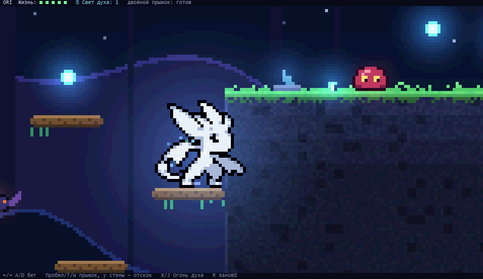
Рис. 25.1. Ори прижался к стене: отсюда можно оттолкнуться и прыгнуть выше
ФишкаЧасы со стрелками
Модуль wall_jump — про то, как разложить механику по полочкам. А фишка этой главы — про математику, которой полно в любой игре: синус и косинус, знакомые вам по искрам из главы 19. Конец стрелки часов — это точка на окружности: если стрелка длиной L повёрнута на угол a, её конец находится в точке (cos(a)·L, sin(a)·L) от центра. Угол, как и в главе 19, считается в радианах: полный круг — это 2π ≈ 6,2832.
Листинг 25.13. Часы со стрелками 25-clock.cpp
// Фишка главы 25: часы со стрелками. Конец стрелки — точка на окружности:// x = cos(угол) · длина, y = sin(угол) · длина. Угол считаем из времени.// Сборка из папки игры (файл лежит в папке fishki):// g++ -O2 -std=c++17 -Wall -Wextra -I. fishki\25-clock.cpp screen.cpp console.cpp mathx.cpp -o clock.exe#define WIN32_LEAN_AND_MEAN#define NOMINMAX#include <windows.h>#include <cstdio>#include <cmath>#include "console.h"#include "screen.h"constfloat PI = 3.14159265f;// Отрезок из точки (x0, y0) под углом angle длиной lengthstaticvoid drawHand(float x0, float y0, float angle, float length, Color c) {for (float d = 0; d <= length; d += 0.4f) { putPixel((int)(x0 + cosf(angle) * d), (int)(y0 + sinf(angle) * d), c); }}// Угол стрелки: value из max делений; 0 — вверх (поэтому −π/2), по часовой стрелкеstaticfloat handAngle(float value, float max) {return value / max * 2 * PI - PI / 2;}int main() { consoleInit(); screenFitToConsole();if (!consoleStartWriter()) { consoleRestore(); fprintf(stderr, "Cannot create console output thread.\n");return1; } // кадры уходят в консоль отдельным потоком, как в игре (глава 24)while (!keyDown(VK_ESCAPE)) {if (consoleWriterBusy()) { // прошлый кадр ещё отправляется — подождём Sleep(1);continue; } SYSTEMTIME now; GetLocalTime(&now); // время Windows: часы, минуты, секунды, миллисекундыfloat sec = now.wSecond + now.wMilliseconds / 1000.0f;float min = now.wMinute + sec / 60;float hour = now.wHour % 12 + min / 60;int w = screenWidth(), h = screenHeight();float cx = w / 2.0f, cy = h / 2.0f, r = h * 0.42f;for (int y = 0; y < h; y++) {for (int x = 0; x < w; x++) {float dx = x - cx, dy = y - cy;bool inside = dx * dx + dy * dy <= r * r; putPixel(x, y, inside ? rgb(24, 30, 60) : rgb(10, 12, 26)); } }// 12 меток по кругуfor (int i = 0; i < 12; i++) {float a = handAngle((float)i, 12); drawHand(cx + cosf(a) * r * 0.85f, cy + sinf(a) * r * 0.85f, a, r * 0.12f, rgb(160, 180, 230)); } drawHand(cx, cy, handAngle(hour, 12), r * 0.5f, rgb(230, 240, 255)); drawHand(cx, cy, handAngle(min, 60), r * 0.75f, rgb(150, 220, 255)); drawHand(cx, cy, handAngle(sec, 60), r * 0.85f, rgb(255, 110, 110)); textAdd(LINE_TOP, " Часы: синус и косинус", rgb(220, 230, 255)); textAdd(LINE_BOTTOM, " Esc — выход", rgb(130, 140, 170)); screenPresent(); Sleep(30); } consoleStopWriter(); consoleRestore();return0;}
Для часов угол «0» должен смотреть вверх, а в математике он смотрит вправо, поэтому из угла вычитается четверть круга π/2. Время программа узнаёт функцией Windows GetLocalTime: она заполняет структуру SYSTEMTIME, в которой лежат текущие часы, минуты, секунды и миллисекунды (wHour, wMinute, wSecond, wMilliseconds).
Создайте в папке игры папку fishki (если её ещё нет) и сохраните программу туда как fishki\25-clock.cpp. Соберите её из папки игры вместе с нужными модулями:
Рис. 25.2. Секундная стрелка плавно бежит по кругу
Весь код шага 25Сверьтесь с готовой программой
Все 41 файл игры после этой главы — целиком. Откройте файл, чтобы сравнить со своим, а кнопка «Копировать» поможет, если нужно догнать: вставьте код в файл с тем же именем в папке игры.
// ============================================================================// camera.cpp — камера следует за Ори и не выходит за края уровня// ============================================================================#include <cmath>#include "camera.h"#include "config.h"#include "game.h"#include "mathx.h"// Не даём камере заглянуть за края уровняstaticvoid clampCamera(Game& g) {Camera& cam = g.camera;float maxX = (float)(g.world.width * TILE - screenWidth());float maxY = (float)(MAP_H * TILE - screenHeight()); cam.x = clampf(cam.x, 0, fmaxf(maxX, 0));// если окно выше уровня, прижимаем уровень к низу экрана cam.y = maxY < 0 ? maxY : clampf(cam.y, 0, maxY);}// Целые координаты камеры для рисованияstaticvoid updateView(Camera& cam) { cam.viewX = (int)floorf(cam.x); cam.viewY = (int)floorf(cam.y);if (cam.shake > 0) { // тряска: сдвигаем картинку на пару пикселей в случайную сторону cam.viewX += (int)randomRange(-2, 2); cam.viewY += (int)randomRange(-2, 2); }}void drawDisc(constCamera& cam, int cx, int cy, int radius, Color c) {for (int y = -radius; y <= radius; y++) {for (int x = -radius; x <= radius; x++) {if (x * x + y * y <= radius * radius + radius) putWorldPixel(cam, cx + x, cy + y, c); } }}void centerCamera(Game& g) {constBody& b = g.player.body; g.camera.x = b.x + b.w / 2.0f - screenWidth() / 2.0f; g.camera.y = b.y + b.h / 2.0f - screenHeight() / 2.0f; g.camera.shake = 0; clampCamera(g); updateView(g.camera);}void updateCamera(Game& g, float dt) {Camera& cam = g.camera;constBody& b = g.player.body;// Цель: Ори в центре экрана, чуть сдвинутый назад — видно, что впередиfloat targetX = b.x + b.w / 2.0f - screenWidth() / 2.0f + g.player.facing * 18;float targetY = b.y + b.h / 2.0f - screenHeight() * 0.55f;// Каждый кадр проходим часть пути до цели — камера движется плавно cam.x = lerpf(cam.x, targetX, clampf(dt * 5, 0, 1)); cam.y = lerpf(cam.y, targetY, clampf(dt * 5, 0, 1)); clampCamera(g);if (cam.shake > 0) cam.shake -= dt; updateView(cam);}
camera.h26 строкcamera.h
// ============================================================================// camera.h — какая часть мира видна на экране, рисование в координатах мира// ============================================================================#pragma once#include "color.h"#include "screen.h"structGame; // описана в game.h — здесь достаточно знать, что такая структура естьstructCamera {float x, y; // левый верхний угол экрана в миреfloat shake; // сколько ещё секунд трясти экранint viewX, viewY; // то же целыми числами (с тряской) — по ним рисуем};// Поставить пиксель по координатам мира: экран = мир − камераinlinevoid putWorldPixel(constCamera& cam, int wx, int wy, Color c) { putPixel(wx - cam.viewX, wy - cam.viewY, c);}// Закрашенный круг в координатах мираvoid drawDisc(constCamera& cam, int cx, int cy, int radius, Color c);void centerCamera(Game& g); // сразу поставить Ори в центр экранаvoid updateCamera(Game& g, float dt); // камера плавно догоняет Ори
color.h34 строкиcolor.h
// ============================================================================// color.h — цвет пикселя. Цвет хранится в одном числе 0xRRGGBB:// по два шестнадцатеричных разряда на красный, зелёный и синий.// ============================================================================#pragma oncetypedefunsignedintColor;// Ограничить канал диапазоном 0..255inlineint clampChannel(int value) {return value < 0 ? 0 : (value > 255 ? 255 : value);}// Собрать цвет из красного, зелёного и синего (каждый 0..255)inlineColor rgb(int r, int g, int b) {return (Color)(clampChannel(r) << 16 | clampChannel(g) << 8 | clampChannel(b));}// Достать каналы обратноinlineint colorR(Color c) { return (c >> 16) & 255; }inlineint colorG(Color c) { return (c >> 8) & 255; }inlineint colorB(Color c) { return c & 255; }// Смешать два цвета: t = 0 — первый цвет, t = 1 — второйinlineColor mixColor(Color a, Color b, float t) {return rgb((int)(colorR(a) + (colorR(b) - colorR(a)) * t), (int)(colorG(a) + (colorG(b) - colorG(a)) * t), (int)(colorB(a) + (colorB(b) - colorB(a)) * t));}// Изменить яркость: k = 0.5 — вдвое темнее, k = 2 — вдвое ярчеinlineColor scaleColor(Color c, float k) {return rgb((int)(colorR(c) * k), (int)(colorG(c) * k), (int)(colorB(c) * k));}
config.h38 строкconfig.h
// ============================================================================// config.h — настройки игры. Все важные числа собраны здесь,// чтобы их было легко найти и поменять.// ============================================================================#pragma once// Картинкаconstint MAX_SCREEN_W = 320; // наибольшая ширина картинки в пикселяхconstint MAX_SCREEN_H = 200; // наибольшая высота картинки в пикселях// Мирconstint TILE = 8; // сторона тайла в пикселяхconstint MAP_H = 22; // высота уровня в тайлахconstint MAX_MAP_W = 160; // ширина самого широкого уровня в тайлах// Движениеconstfloat RUN_SPEED = 95.0f; // скорость бега, пикселей в секундуconstfloat RUN_ACCEL_GROUND = 900.0f; // разгон и торможение на землеconstfloat RUN_ACCEL_AIR = 600.0f; // в воздухе разгоняться труднееconstfloat GRAVITY = 900.0f; // насколько быстро растёт скорость паденияconstfloat JUMP_SPEED = 320.0f; // скорость в начале прыжкаconstfloat MAX_FALL_SPEED = 360.0f; // быстрее падать нельзяconstfloat DOUBLE_JUMP_SPEED = 280.0f; // второй прыжок в воздухе чуть слабееconstfloat COYOTE_TIME = 0.10f; // сколько секунд можно прыгнуть после схода с краяconstfloat JUMP_BUFFER_TIME = 0.12f; // сколько секунд помнится раннее нажатие прыжка// Ориconstint PLAYER_W = 16; // ширина хитбоксаconstint PLAYER_H = 24; // высота хитбоксаconstint MAX_HP = 5; // сколько жизней может быть// Сколько объектов может существовать одновременноconstint MAX_PARTICLES = 800;constint MAX_LIGHTS = 160;constint MAX_PICKUPS = 80;constint MAX_CHECKPOINTS = 10;constint MAX_ENEMIES = 40;constint MAX_SHOTS = 32;
console.cpp227 строкconsole.cpp
// ============================================================================// console.cpp — всё, что связано с Windows-консолью, собрано в одном файле// ============================================================================#define WIN32_LEAN_AND_MEAN#define NOMINMAX#include <windows.h>#include <cstring>#include <atomic>#include <cstdio>#include <cstdlib>#include "console.h"// Как была настроена консоль до запуска игрыstaticDWORD originalOutMode = 0;staticDWORD originalInMode = 0;staticUINT originalCodePage = 0;// Застрял ли какой-нибудь наш поток в записи в консоль, которую так и не удалось отменитьstatic std::atomic<bool> threadStuck(false);static std::atomic<bool> shutdownStarted(false);static std::atomic<bool> writerBusy(false);static std::atomic<bool> writerQuit(false);static std::atomic<bool> writerAccepting(false);static std::atomic<bool> writerFailed(false);static std::atomic<bool> writerStopping(false);static std::atomic<bool> writerStopped(true);staticHANDLE writerThread = NULL;// Ctrl+C или закрытие: consoleRestore сначала останавливает writer.// Обработчик делает ограниченную по времени попытку уборки, затем Windows завершает процесс.staticBOOL WINAPI onConsoleEvent(DWORD) { consoleRestore();return FALSE;}bool relaunchInOwnWindow(int argc, char** argv) {for (int i = 1; i < argc; i++) {if (strcmp(argv[i], "--here") == 0) {returnfalse; } }constchar* terminal = getenv("TERM_PROGRAM");if (terminal == NULL || strcmp(terminal, "vscode") != 0) {returnfalse; }char exePath[MAX_PATH];char command[MAX_PATH + 16]; GetModuleFileNameA(NULL, exePath, MAX_PATH); snprintf(command, sizeof(command), "\"%s\" --here", exePath); STARTUPINFOA startup; PROCESS_INFORMATION process; memset(&startup, 0, sizeof(startup)); startup.cb = sizeof(startup);if (!CreateProcessA(NULL, command, NULL, NULL, FALSE, CREATE_NEW_CONSOLE, NULL, NULL, &startup, &process)) {returnfalse; } CloseHandle(process.hThread); CloseHandle(process.hProcess); printf("Игра открыта в отдельном окне консоли (терминал VS Code для неё слишком медленный).\n""Чтобы всё же запустить здесь: ori.exe --here\n");returntrue;}void consoleInit() {HANDLE out = GetStdHandle(STD_OUTPUT_HANDLE);HANDLE in = GetStdHandle(STD_INPUT_HANDLE); GetConsoleMode(out, &originalOutMode); GetConsoleMode(in, &originalInMode); originalCodePage = GetConsoleOutputCP(); SetConsoleMode(out, originalOutMode | ENABLE_PROCESSED_OUTPUT | ENABLE_VIRTUAL_TERMINAL_PROCESSING); SetConsoleMode(in, ENABLE_EXTENDED_FLAGS); // выключить выделение мышью: оно ставит вывод на паузу SetConsoleOutputCP(CP_UTF8); SetConsoleCtrlHandler(onConsoleEvent, TRUE); SetConsoleTitleA("Ori");// Отдельный экран, спрятать курсор, очистить экранconstchar* start = "\x1b[?1049h\x1b[?25l\x1b[2J"; consoleWrite(start, (int)strlen(start));}// Сама работа по восстановлению консоли — её выполняет отдельный потокstaticDWORD WINAPI restoreWork(LPVOID) {// Обычные цвета, показать курсор, вернуться на основной экранconstchar* finish = "\x1b[0m\x1b[?25h\x1b[?1049l"; consoleWrite(finish, (int)strlen(finish)); consoleFlushInput(); SetConsoleMode(GetStdHandle(STD_OUTPUT_HANDLE), originalOutMode); SetConsoleMode(GetStdHandle(STD_INPUT_HANDLE), originalInMode); SetConsoleOutputCP(originalCodePage);return0;}// Вернуть консоль в порядок. Если терминал завис и не принимает вывод,// запись тоже зависнет — поэтому её делает отдельный поток, а мы ждём// ограниченное время; отмена записи и восстановление могут не удаться.void consoleRestore() {if (shutdownStarted.exchange(true)) return; // только один поток выполняет уборку consoleStopWriter(); // прежде чем восстанавливать экранif (threadStuck) {// Запись не удалось остановить: нельзя писать в консоль параллельно с ней.// Это аварийный выход; успешное восстановление экрана здесь не обещаем. TerminateProcess(GetCurrentProcess(), 1);return; }HANDLE worker = CreateThread(NULL, 0, restoreWork, NULL, 0, NULL);if (worker == NULL) return; // восстановление не удалось запуститьDWORD status = WaitForSingleObject(worker, 500);for (int i = 0; status == WAIT_TIMEOUT && i < 50; i++) { CancelSynchronousIo(worker); // запрос отмены, а не гарантия завершения status = WaitForSingleObject(worker, 10); } CloseHandle(worker);if (status != WAIT_OBJECT_0) { threadStuck = true; TerminateProcess(GetCurrentProcess(), 1); // восстановление могло остаться незавершённым }}bool consoleSize(int& cols, int& rows) { CONSOLE_SCREEN_BUFFER_INFO info;if (!GetConsoleScreenBufferInfo(GetStdHandle(STD_OUTPUT_HANDLE), &info)) {returnfalse; } cols = info.srWindow.Right - info.srWindow.Left + 1; rows = info.srWindow.Bottom - info.srWindow.Top + 1;returntrue;}void consoleFlushInput() { FlushConsoleInputBuffer(GetStdHandle(STD_INPUT_HANDLE));}bool keyDown(int virtualKey) {return (GetAsyncKeyState(virtualKey) & 0x8000) != 0;}bool consoleWrite(constchar* data, int length) {if (length < 0) returnfalse;int sent = 0;while (sent < length) {// После запроса остановки writer не начинает следующую часть записи.if (writerQuit && writerBusy) returnfalse;DWORD written = 0;DWORD remaining = (DWORD)(length - sent);if (!WriteFile(GetStdHandle(STD_OUTPUT_HANDLE), data + sent, remaining, &written, NULL) || written == 0 || written > remaining) returnfalse; sent += (int)written; }returntrue;}// ---------------------------------------------------------------------------// Поток вывода. Основной поток кладёт кадр в sendBuffer и поднимает флаг// writerBusy, а этот поток отправляет кадр в консоль и опускает флаг.// ---------------------------------------------------------------------------staticchar sendBuffer[4 * 1024 * 1024];staticint sendLength = 0;staticDWORD WINAPI writerLoop(LPVOID) {while (!writerQuit) {if (!writerBusy) { Sleep(1);continue; }bool sent = consoleWrite(sendBuffer, sendLength);if (!sent) writerFailed = true; writerBusy = false; }return0;}bool consoleStartWriter() {if (shutdownStarted) returnfalse; writerQuit = false; writerFailed = false; writerBusy = false; writerStopping = false; writerStopped = false; writerThread = CreateThread(NULL, 0, writerLoop, NULL, 0, NULL); writerAccepting = writerThread != NULL;if (!writerAccepting) writerStopped = true;return writerAccepting;}bool consoleWriterBusy() {return writerBusy || !writerAccepting;}bool consoleTakeWriteFailure() {return writerFailed.exchange(false); // основной поток забирает сообщение об ошибке}bool consoleSubmit(constchar* data, int length) {if (!writerAccepting || shutdownStarted || writerBusy || length <= 0 || length > (int)sizeof(sendBuffer)) returnfalse; memcpy(sendBuffer, data, length); sendLength = length; writerBusy = true;returntrue;}void consoleStopWriter() { writerAccepting = false; // новые кадры больше не принимаемif (writerStopping.exchange(true)) {// main и обработчик закрытия могли прийти сюда одновременно.for (int i = 0; i < 100 && !writerStopped; i++) Sleep(10);if (!writerStopped) threadStuck = true;return; }if (writerThread != NULL) {for (int i = 0; i < 25 && writerBusy; i++) Sleep(10); // короткая попытка дописать кадр writerQuit = true;DWORD status = WaitForSingleObject(writerThread, 10);for (int i = 0; status == WAIT_TIMEOUT && i < 50; i++) { CancelSynchronousIo(writerThread); status = WaitForSingleObject(writerThread, 10); }if (status != WAIT_OBJECT_0) threadStuck = true; CloseHandle(writerThread); writerThread = NULL; } writerStopped = true;}
console.h24 строкиconsole.h
// ============================================================================// console.h — окно консоли Windows: настройка, размер, клавиши, вывод// ============================================================================#pragma once// Если игру запустили из терминала VS Code, открыть её в отдельном окне.// Возвращает true, если игра перезапущена и эту копию нужно закрыть.bool relaunchInOwnWindow(int argc, char** argv);void consoleInit(); // включить цвета и UTF-8, перейти на отдельный экранvoid consoleRestore(); // вернуть консоль в исходное состояниеbool consoleSize(int& cols, int& rows); // видимый размер окна в символахvoid consoleFlushInput(); // выбросить накопившиеся нажатия клавишbool keyDown(int virtualKey); // зажата ли клавиша прямо сейчас// Полностью записать данные; false — ошибка или неполная записьbool consoleWrite(constchar* data, int length);// Вывод в отдельном потоке: игра не ждёт медленный терминалbool consoleStartWriter(); // false — поток не создан, игру запускать нельзяvoid consoleStopWriter();bool consoleTakeWriteFailure(); // сбой вывода: следующий кадр рисуем целикомbool consoleWriterBusy(); // предыдущий кадр ещё отправляетсяbool consoleSubmit(constchar* data, int length); // false — кадр не принят
// ============================================================================// effects.cpp — пулы частиц и источников света// ============================================================================#include <algorithm>#include <cmath>#include <cstring>#include "config.h"#include "effects.h"#include "mathx.h"struct Particle {float x, y, vx, vy;float life, maxLife; // сколько осталось жить и сколько жила бы всегоColor color;bool gravity; // падает ли вниз};struct Light {float x, y, radius;Color color;float power;};// Пулы: частица с life <= 0 — свободное местоstatic Particle particles[MAX_PARTICLES];static Light lights[MAX_LIGHTS];staticint lightCount = 0;void clearParticles() { memset(particles, 0, sizeof(particles));}void spawnParticle(float x, float y, float vx, float vy, float life, Color color, bool gravity) {for (int i = 0; i < MAX_PARTICLES; i++) {if (particles[i].life <= 0) { particles[i] = { x, y, vx, vy, life, life, color, gravity };return; } }}void burst(float x, float y, int count, Color color, float speed, float life, bool gravity) {for (int i = 0; i < count; i++) {float angle = randomRange(0, 6.2832f);float s = randomRange(speed * 0.3f, speed); spawnParticle(x, y, cosf(angle) * s, sinf(angle) * s, randomRange(life * 0.5f, life), color, gravity); }}void updateParticles(float dt) {for (int i = 0; i < MAX_PARTICLES; i++) { Particle& p = particles[i];if (p.life <= 0) continue; p.life -= dt;if (p.gravity) p.vy += GRAVITY * 0.5f * dt; p.vx *= 1.0f - 1.5f * dt; // сопротивление воздуха p.vy *= 1.0f - 1.5f * dt; p.x += p.vx * dt; p.y += p.vy * dt; }}void drawParticles(constCamera& cam) {for (int i = 0; i < MAX_PARTICLES; i++) {const Particle& p = particles[i];if (p.life <= 0) continue;float strength = clampf(p.life / p.maxLife, 0, 1); // гаснет к концу жизни addPixel((int)roundf(p.x) - cam.viewX, (int)roundf(p.y) - cam.viewY, p.color, strength); }}void clearLights() { lightCount = 0;}void addLight(float x, float y, float radius, Color color, float power) {if (lightCount < MAX_LIGHTS) { lights[lightCount] = { x, y, radius, color, power }; lightCount++; }}void applyLights(constCamera& cam) {for (int i = 0; i < lightCount; i++) {const Light& light = lights[i];int cx = (int)light.x - cam.viewX;int cy = (int)light.y - cam.viewY;int r = (int)light.radius;// Проходим только по квадрату вокруг источника и только по видимой частиint x0 = std::max(0, cx - r), x1 = std::min(screenWidth() - 1, cx + r);int y0 = std::max(0, cy - r), y1 = std::min(screenHeight() - 1, cy + r);for (int y = y0; y <= y1; y++) {for (int x = x0; x <= x1; x++) {float dx = (float)(x - cx), dy = (float)(y - cy);float d = sqrtf(dx * dx + dy * dy) / light.radius; // 0 в центре, 1 на краюif (d >= 1) continue; addPixel(x, y, light.color, (1 - d) * (1 - d) * light.power); } } }}
effects.h19 строкeffects.h
// ============================================================================// effects.h — частицы (искры, пыль) и свет// ============================================================================#pragma once#include "camera.h"#include "color.h"// Частицы: живут несколько долей секунды и гаснутvoid clearParticles();void spawnParticle(float x, float y, float vx, float vy, float life, Color color, bool gravity);void burst(float x, float y, int count, Color color, float speed, float life, bool gravity);void updateParticles(float dt);void drawParticles(constCamera& cam);// Свет: источники собираются заново в каждом кадре, потом накладываются на картинкуvoid clearLights();void addLight(float x, float y, float radius, Color color, float power);void applyLights(constCamera& cam);
enemies.cpp211 строкenemies.cpp
// ============================================================================// enemies.cpp — поведение и отрисовка врагов// ============================================================================#include <cmath>#include <cstring>#include "effects.h"#include "enemies.h"#include "game.h"#include "mathx.h"#include "sprites.h"// Слизень: два кадра — обычный и «сплющенный»staticconstchar* SLIME_FRAME_1[] = {"....kkkk....","..kkrrrrkk..",".krrhhrrrrk.",".krhrrrrrrk.","krryyrryyrrk","krrykrrykrrk","krrrrrrrrrrk","kpprrrrrrppk",".kkkkkkkkkk.",};staticconstchar* SLIME_FRAME_2[] = {"............","..kkrrrrkk..",".krrhhrrrrk.",".krhrrrrrrk.","krryyrryyrrk","krrykrrykrrk","krrrrrrrrrrk","kpprrrrrrppk",".kkkkkkkkkk.",};staticconstchar SLIME_KEYS[] = "krphy";staticconstColor SLIME_COLORS[] = { rgb(42, 8, 32), rgb(194, 60, 100), rgb(126, 32, 72), rgb(255, 154, 180), rgb(255, 224, 112) };staticconst Sprite SLIME_SPRITES[2] = { { 12, 9, SLIME_FRAME_1, SLIME_KEYS, SLIME_COLORS }, { 12, 9, SLIME_FRAME_2, SLIME_KEYS, SLIME_COLORS },};// Летучая мышь: крылья вверх и крылья внизstaticconstchar* BAT_FRAME_1[] = {"l............l","ll...kkkk...ll","lll.kbbbbk.lll",".lllbebbeblll.","..llbbbbbbll..","....kbbbbk....",".....k..k.....","..............",};staticconstchar* BAT_FRAME_2[] = {"..............",".....kkkk.....","....kbbbbk....","..llbebbebll..",".lllbbbbbblll.","lll.kbbbbk.lll","ll...k..k...ll","l............l",};staticconstchar BAT_KEYS[] = "kble";staticconstColor BAT_COLORS[] = { rgb(10, 10, 26), rgb(60, 50, 112), rgb(106, 79, 166), rgb(255, 122, 40) };staticconst Sprite BAT_SPRITES[2] = { { 14, 8, BAT_FRAME_1, BAT_KEYS, BAT_COLORS }, { 14, 8, BAT_FRAME_2, BAT_KEYS, BAT_COLORS },};void spawnEnemy(Game& g, EnemyType type, float x, float y) {if (g.enemyCount >= MAX_ENEMIES) return;Enemy& e = g.enemies[g.enemyCount]; memset(&e, 0, sizeof(e)); e.type = type; e.alive = true; e.dir = -1; e.time = randomRange(0, 6.28f); // чтобы враги двигались не в тактif (type == ENEMY_SLIME) { e.hp = 3; e.body = makeBody(x - 2, y + TILE - 9, 12, 9); // ногами на дно клетки } elseif (type == ENEMY_BAT) { e.hp = 2; e.body = makeBody(x - 3, y, 14, 8); } e.homeX = e.body.x; e.homeY = e.body.y; g.enemyCount++;}// Слизень ползёт и разворачивается у стены и на краю обрываstaticvoid updateSlime(Game& g, Enemy& e, float dt) {Body& b = e.body;if (e.knockTime <= 0) b.vx = e.dir * 22.0f; b.vy = fminf(b.vy + GRAVITY * dt, MAX_FALL_SPEED); moveBody(g.world, b, dt);if (e.knockTime <= 0) {if (b.hitWall) e.dir = -e.dir;// Тайл чуть впереди и чуть ниже ног: если он не твёрдый — впереди обрывint frontX = (int)floorf((e.dir > 0 ? b.x + b.w + 1 : b.x - 1) / TILE);int belowY = (int)floorf((b.y + b.h + 1) / TILE);if (b.onGround && !isSolidTile(tileAt(g.world, frontX, belowY))) e.dir = -e.dir; }if (b.y > MAP_H * TILE + 40) e.alive = false; // упал в пропасть}// Летучая мышь: рядом с Ори — летит к нему, иначе кружит у гнездаstaticvoid updateBat(Game& g, Enemy& e, float dt) {Body& b = e.body;constBody& player = g.player.body;float dx = (player.x + player.w / 2.0f) - (b.x + b.w / 2.0f);float dy = (player.y + player.h / 2.0f) - (b.y + b.h / 2.0f);float distance = sqrtf(dx * dx + dy * dy);float ax, ay; // ускорениеif (distance < 110 && g.state == STATE_PLAY) {// Направление на Ори длиной 1, умноженное на силу разгона, и волнистость полёта ax = dx / fmaxf(distance, 1.0f) * 120; ay = dy / fmaxf(distance, 1.0f) * 120 + sinf(e.time * 6) * 80; e.dir = dx > 0 ? 1 : -1; } else {// Тянемся к точке, которая плавает вокруг гнезда ax = (e.homeX + sinf(e.time * 0.9f) * 24 - b.x) * 2; ay = (e.homeY + sinf(e.time * 2.1f) * 6 - b.y) * 2; }if (e.knockTime <= 0) { b.vx += ax * dt; b.vy += ay * dt;float speed = sqrtf(b.vx * b.vx + b.vy * b.vy);if (speed > 48) { // не быстрее 48 пикселей в секунду b.vx *= 48 / speed; b.vy *= 48 / speed; } } b.vx *= 1.0f - 0.8f * dt; b.vy *= 1.0f - 0.8f * dt; b.x += b.vx * dt; // мыши летают сквозь стены b.y += b.vy * dt;}// Касание с Ори: прыжок сверху ранит врага, иначе ранен Ориstaticvoid checkContact(Game& g, Enemy& e, float dt) {Body& player = g.player.body;constBody& b = e.body;if (g.state != STATE_PLAY) return;if (!rectsOverlap(player.x, player.y, player.w, player.h, b.x, b.y, b.w, b.h)) return;// Ори падает, и кадр назад его ноги были выше врага — значит, прилетел сверхуfloat feetBefore = player.y + player.h - player.vy * dt;bool stomp = player.vy > 40 && feetBefore <= b.y + 4;if (stomp) { hitEnemy(g, e, 2, player.x + 8 < b.x + b.w / 2.0f ? 1.0f : -1.0f); player.y = b.y - player.h; // ставим Ори на врага: в следующем кадре они уже не касаются player.vy = -250; g.player.canDoubleJump = true; } else { hurtPlayer(g, b.x + b.w / 2.0f, -180); }}void updateEnemies(Game& g, float dt) {for (int i = 0; i < g.enemyCount; i++) {Enemy& e = g.enemies[i];if (!e.alive) continue; e.time += dt;if (e.hurtTime > 0) e.hurtTime -= dt;if (e.knockTime > 0) e.knockTime -= dt;if (e.type == ENEMY_SLIME) { updateSlime(g, e, dt); } elseif (e.type == ENEMY_BAT) { updateBat(g, e, dt); } checkContact(g, e, dt); }}void hitEnemy(Game& g, Enemy& e, int damage, float pushDir) {Body& b = e.body; e.hp -= damage; e.hurtTime = 0.15f;float cx = b.x + b.w / 2.0f, cy = b.y + b.h / 2.0f; burst(cx, cy, 10, rgb(255, 200, 230), 80, 0.35f, false); e.knockTime = 0.2f; b.vx = pushDir * 90; b.vy = (e.type == ENEMY_SLIME) ? -120.0f : -40.0f;if (e.hp <= 0) { e.alive = false;Color body = (e.type == ENEMY_SLIME) ? rgb(220, 60, 110) : rgb(130, 90, 200); burst(cx, cy, 30, body, 110, 0.7f, true); burst(cx, cy, 12, rgb(160, 240, 255), 60, 1.0f, false); g.player.spiritLight += 3; }}void drawEnemies(constGame& g) {for (int i = 0; i < g.enemyCount; i++) {constEnemy& e = g.enemies[i];if (!e.alive) continue;int x = (int)roundf(e.body.x);int y = (int)roundf(e.body.y);bool flip = e.dir > 0; // на картинках враги смотрят влевоbool flash = e.hurtTime > 0; // после удара — белая вспышкаif (e.type == ENEMY_SLIME) {int frame = ((int)(e.time * 6)) % 2; drawSprite(g.camera, SLIME_SPRITES[frame], x, y, flip, flash); } elseif (e.type == ENEMY_BAT) {int frame = ((int)(e.time * 8)) % 2; drawSprite(g.camera, BAT_SPRITES[frame], x, y, flip, flash); } }}
enemies.h30 строкenemies.h
// ============================================================================// enemies.h — враги: слизни, летучие мыши (и босс)// ============================================================================#pragma once#include "physics.h"structGame;enum EnemyType { ENEMY_SLIME, // ползает по платформе ENEMY_BAT, // летает и преследует Ори};structEnemy { EnemyType type;Body body;int hp;int dir; // куда смотрит или ползёт: -1 или 1float hurtTime; // сколько ещё мигать после удараfloat knockTime; // сколько ещё лететь от удараfloat time; // собственное время врага — для анимацииfloat homeX, homeY; // где враг появился (гнездо летучей мыши)bool alive;};void spawnEnemy(Game& g, EnemyType type, float x, float y);void updateEnemies(Game& g, float dt);void hitEnemy(Game& g, Enemy& enemy, int damage, float pushDir); // pushDir — куда отбросить: -1 или 1void drawEnemies(constGame& g);
game.cpp138 строкgame.cpp
// ============================================================================// game.cpp — загрузка уровней и правила игры: что обновлять в каждом кадре// ============================================================================#include <algorithm>#include <cmath>#include <cstring>#include "effects.h"#include "game.h"#include "input.h"#include "levels.h"// Символ карты — объект? Тогда создаём объект и возвращаем пробел.// Иначе это тайл (камень, бревно, шипы) — он остаётся в карте как есть.staticchar placeObject(Game& g, char symbol, float wx, float wy) {World& w = g.world;switch (symbol) {case'P': w.spawnX = wx; w.spawnY = wy + TILE - PLAYER_H; // ногами на дно клеткиreturn' ';case'o': addPickup(g, PICKUP_LIGHT, wx + 4, wy + 4);return' ';case'+': addPickup(g, PICKUP_HEALTH, wx + 4, wy + 4);return' ';case'C': addCheckpoint(g, wx + 4, wy + TILE);return' ';case'T': w.hasTree = true; w.treeX = wx + 4; w.treeY = wy + TILE;return' ';case'S': spawnEnemy(g, ENEMY_SLIME, wx, wy);return' ';case'B': spawnEnemy(g, ENEMY_BAT, wx, wy);return' ';default:return symbol; }}void loadLevel(Game& g, int index) {const LevelInfo& level = levelInfo(index);World& w = g.world; g.levelIndex = index; g.pickupCount = 0; g.checkpointCount = 0; g.enemyCount = 0; clearShots(g); clearParticles(); w.hasTree = false;// Ширина уровня — длина самой длинной строки карты w.width = 0;for (int ty = 0; ty < MAP_H; ty++) { w.width = std::max(w.width, (int)strlen(level.rows[ty])); } w.width = std::min(w.width, MAX_MAP_W);for (int ty = 0; ty < MAP_H; ty++) {int length = (int)strlen(level.rows[ty]);for (int tx = 0; tx < w.width; tx++) {char symbol = tx < length ? level.rows[ty][tx] : ' '; w.tiles[ty][tx] = placeObject(g, symbol, (float)(tx * TILE), (float)(ty * TILE)); } w.tiles[ty][w.width] = 0; // конец строки } placePlayer(g.player, w.spawnX, w.spawnY); centerCamera(g);}void startNewGame(Game& g) { g.state = STATE_TITLE; g.player.spiritLight = 0; loadLevel(g, 0);}// Дошли до Древа Духов — победаstaticvoid checkGoals(Game& g) {constBody& b = g.player.body;constWorld& w = g.world;if (w.hasTree && g.state == STATE_PLAY && rectsOverlap(b.x, b.y, b.w, b.h, w.treeX - 6, w.treeY - 40, 12, 40)) { g.state = STATE_WIN; burst(w.treeX, w.treeY - 40, 80, rgb(160, 255, 220), 130, 1.5f, false); }}// Игра идёт: обновляем всё по очередиstaticvoid updatePlay(Game& g, constInput& in, float dt) { updatePlayer(g, in, dt);if (g.state != STATE_PLAY) return; updateItems(g); checkGoals(g);if (g.state != STATE_PLAY) return; updateEnemies(g, dt);if (g.state != STATE_PLAY) return; updateShots(g, dt);}void updateGame(Game& g, constInput& in, float dt) { g.time += dt;if (in.restart.pressed && g.state != STATE_TITLE) { startNewGame(g); g.state = STATE_PLAY; }switch (g.state) {case STATE_TITLE:// Сейн кружит вокруг Ори, Enter или пробел начинает игру g.player.seinX = g.player.body.x + 8 + sinf(g.time) * 16; g.player.seinY = g.player.body.y - 6 + sinf(g.time * 2) * 4;if (in.confirm.pressed) g.state = STATE_PLAY;break;case STATE_PLAY: updatePlay(g, in, dt);break;case STATE_DEAD:if (in.confirm.pressed) { // Enter — возродиться у колодца с полными жизнями g.player.hp = MAX_HP; g.state = STATE_PLAY; respawnPlayer(g); } updateEnemies(g, dt);break;case STATE_WIN: updateEnemies(g, dt);break; } updateParticles(dt); updateCamera(g, dt);}
game.h43 строкиgame.h
// ============================================================================// game.h — вся игра в одной структуре Game. Функции получают её по ссылке,// поэтому глобальные переменные не нужны.// ============================================================================#pragma once#include "config.h"#include "camera.h"#include "enemies.h"#include "items.h"#include "player.h"#include "shots.h"#include "world.h"structInput;// В каком состоянии игра: от него зависит, что делают клавиши и что видно на экранеenum GameState { STATE_TITLE, // заставка STATE_PLAY, // игра идёт STATE_DEAD, // Ори погиб STATE_WIN, // победа};structGame { GameState state;float time; // сколько секунд идёт игра — для анимацийint levelIndex; // номер текущего уровня (с нуля)World world;Camera camera;Player player; Pickup pickups[MAX_PICKUPS];int pickupCount; Checkpoint checkpoints[MAX_CHECKPOINTS];int checkpointCount;Enemy enemies[MAX_ENEMIES];int enemyCount; Shot shots[MAX_SHOTS];};void startNewGame(Game& g);void loadLevel(Game& g, int index);void updateGame(Game& g, constInput& in, float dt);
hud.cpp67 строкhud.cpp
// ============================================================================// hud.cpp — жизни и счёт вверху, подсказка внизу, надписи заставки и финала// ============================================================================#include <cstdio>#include "game.h"#include "hud.h"#include "screen.h"constColor HUD_TEXT = rgb(200, 220, 255);constColor HINT_TEXT = rgb(130, 140, 170);// Верхняя строка: жизни, свет духа и подсказка про двойной прыжокstaticvoid drawTopLine(constGame& g) {constPlayer& p = g.player; textAdd(LINE_TOP, " ORI Жизнь: ", HUD_TEXT);for (int i = 0; i < MAX_HP; i++) { textAdd(LINE_TOP, "■ ", i < p.hp ? rgb(110, 255, 150) : rgb(50, 60, 70)); } textAdd(LINE_TOP, " ◆ Свет духа: ", rgb(140, 220, 255)); textAddInt(LINE_TOP, p.spiritLight, rgb(140, 220, 255));if (screenWidth() >= 80) { textAdd(LINE_TOP, p.canDoubleJump ? " двойной прыжок: готов" : " двойной прыжок: —", rgb(150, 160, 190)); }}// Нижняя строка — подсказка по управлению (короче, если окно узкое)staticvoid drawBottomLine() {int w = screenWidth();if (w >= 112) { textAdd(LINE_BOTTOM, " ←/→ A/D бег Пробел/↑/W прыжок, у стены — отскок X/J Огонь духа R заново Esc выход", HINT_TEXT); } elseif (w >= 52) { textAdd(LINE_BOTTOM, " ←/→ бег ↑ прыжок X огонь R заново Esc выход", HINT_TEXT); }}// Надписи поверх картинки — для каждого состояния игры своиstaticvoid drawOverlays(constGame& g) {int mid = screenHeight() / 4 - 1; // строка картинки чуть выше серединыchar text[96];switch (g.state) {case STATE_TITLE: textOverlay(mid - 2, "O R I", rgb(220, 240, 255)); textOverlay(mid, "и Слепой лес — консольная версия", rgb(150, 220, 255)); textOverlay(mid + 2, "Доберись до Древа Духов на востоке", rgb(140, 255, 200)); textOverlay(mid + 4, "Нажми Пробел или Enter", rgb(255, 230, 150));break;case STATE_DEAD: textOverlay(mid - 1, "Свет Ори угас...", rgb(255, 150, 170)); textOverlay(mid + 1, "Enter — у колодца духа R — с начала", rgb(220, 220, 240));break;case STATE_WIN: textOverlay(mid - 2, "Ори достиг Древа Духов!", rgb(160, 255, 220)); snprintf(text, sizeof(text), "Собрано света духа: %d", g.player.spiritLight); textOverlay(mid, text, rgb(150, 220, 255)); textOverlay(mid + 2, "R — сыграть ещё раз Esc — выход", rgb(220, 220, 240));break;case STATE_PLAY:break; }}void drawHud(constGame& g) { drawTopLine(g); drawBottomLine(); drawOverlays(g);}
hud.h8 строкhud.h
// ============================================================================// hud.h — строки текста над и под картинкой и надписи поверх неё// ============================================================================#pragma oncestructGame;void drawHud(constGame& g);
// ============================================================================// input.h — какие кнопки управления нажаты// ============================================================================#pragma once// Одна кнопка управленияstructKey {bool held; // зажата сейчасbool pressed; // нажата именно в этом кадре (в прошлом кадре не была зажата)};structInput {Key left;Key right;Key jump;Key attack;Key restart;Key confirm;Key quit;};void readInput(Input& in);
// ============================================================================// items.h — предметы на уровне: свет духа, ячейки жизни, колодцы// ============================================================================#pragma oncestructGame;enum PickupType { PICKUP_LIGHT, // свет духа — очки PICKUP_HEALTH, // ячейка жизни};struct Pickup {float x, y; // центр предмета PickupType type;bool taken; // уже подобран};// Колодец духа — место, где Ори возродитсяstruct Checkpoint {float x, y; // середина основания колодцаbool active; // это последний колодец, которого коснулся Ори};void addPickup(Game& g, PickupType type, float x, float y);void addCheckpoint(Game& g, float x, float y);void updateItems(Game& g); // Ори подбирает предметы и зажигает колодцыvoid drawItems(constGame& g);
levels.cpp52 строкиlevels.cpp
// ============================================================================// levels.cpp — карты уровней. Каждый символ — тайл 8 × 8 пикселей:// # — камень, = — бревно, ^ — шипы, P — старт Ори// o — свет духа, + — ячейка жизни, C — колодец (точка возрождения)// S — слизень, B — летучая мышь// T — Древо Духов (финиш игры)// ============================================================================#include "config.h"#include "levels.h"// Лес Нибельstaticconstchar* LEVEL1[MAP_H] = {"## ##################### ##","## ##################### ##","## ##################### ##","## ##################### B ##","## ##################### ##","## ##################### o o + ##","## ##################### ##","## ##################### o C S S ##","## B ##################### ################# ##","## + === ################# o ##","## o o B o ################# B ##","## o === ################# S ##","## o o o o o o o B ===########################### ##","## o === ########################### ##","## o o o o === ########### C S S ########################### ##","## ########### #################### === ########################### ##","## P ### ########### #################### o o o ########################### ##","## ### S C ########### #################### ^^ ########################### T ##","############################### ################### ################################### ##############################################","############################### ################### ################################### ##############################################","###############################^^^^^^###################^^^^^^^^^^^^^^^###################################^^^^^^^^##############################################","################################################################################################################################################################",};// Все уровни по порядкуstaticconst LevelInfo LEVELS[] = { { "Лес Нибель", LEVEL1, rgb(6, 8, 28), rgb(24, 46, 84), // небо rgb(30, 28, 72), rgb(13, 18, 42), // холмы rgb(38, 44, 80), rgb(96, 220, 120), // камень и мохtrue },};int levelCount() {returnsizeof(LEVELS) / sizeof(LEVELS[0]);}const LevelInfo& levelInfo(int index) {return LEVELS[index];}
levels.h18 строкlevels.h
// ============================================================================// levels.h — описания уровней: карта, название и цвета// ============================================================================#pragma once#include "color.h"struct LevelInfo {constchar* name; // название уровняconstchar* const* rows; // карта: MAP_H строк из символовColor skyTop, skyBottom; // небо: цвет вверху и у горизонтаColor hillFar, hillNear; // силуэты дальних и ближних холмовColor rock, moss; // камень и мох на нёмbool stars; // есть ли звёзды на небе};int levelCount(); // сколько всего уровнейconst LevelInfo& levelInfo(int index); // описание уровня по номеру (с нуля)
main.cpp61 строкаmain.cpp
// ============================================================================// ORI — консольная игра-платформер, вид сбоку.// Картинка рисуется пикселями из символов '▀' и ANSI-цветов.// Без классов: только данные (структуры) и функции.//// Сборка: build.bat; отладочная сборка: debug.bat.// В скриптах перечислены только исходники игры этого шага.// ============================================================================#include <cstdio>#include <chrono>#include <thread>#include "console.h"#include "game.h"#include "input.h"#include "render.h"#include "screen.h"int main(int argc, char** argv) {if (relaunchInOwnWindow(argc, argv)) return0; consoleInit(); screenFitToConsole();staticGame game; // вся игра; static — чтобы большая структура не лежала на стеке startNewGame(game);if (!consoleStartWriter()) { consoleRestore(); fprintf(stderr, "Cannot create console output thread.\n");return1; }Input input = {};constauto FRAME_TIME = std::chrono::milliseconds(25); // 25 мс — около 40 кадров в секундуauto previous = std::chrono::steady_clock::now();while (true) {auto frameStart = std::chrono::steady_clock::now();float dt = std::chrono::duration<float>(frameStart - previous).count(); previous = frameStart;if (dt > 0.05f) dt = 0.05f; // после долгой паузы не прыгаем далеко вперёд// Пока поток вывода ждёт терминал, вызовы консоли тоже будут ждать —// трогаем консоль, только когда она свободна (клавиши читаются в обход неё)if (!consoleWriterBusy()) { screenFitToConsole(); consoleFlushInput(); } readInput(input);if (input.quit.pressed) break; updateGame(game, input, dt);if (!consoleWriterBusy()) { // новый кадр — только когда предыдущий ушёл в консоль renderGame(game); screenPresent(); }auto elapsed = std::chrono::steady_clock::now() - frameStart;if (elapsed < FRAME_TIME) std::this_thread::sleep_for(FRAME_TIME - elapsed); } consoleStopWriter(); consoleRestore();return0;}
mathx.cpp12 строкmathx.cpp
// ============================================================================// mathx.cpp — генератор случайных чисел// ============================================================================#include "mathx.h"// Состояние генератора: из него получается следующее «случайное» числоstaticunsignedint randomSeed = 12345u;float randomRange(float a, float b) { randomSeed = randomSeed * 1664525u + 1013904223u;return a + (b - a) * ((randomSeed >> 8) / 16777216.0f);}
mathx.h22 строкиmathx.h
// ============================================================================// mathx.h — маленькие математические помощники// ============================================================================#pragma once// Зажать число между lo и hiinlineint clampi(int v, int lo, int hi) { return v < lo ? lo : (v > hi ? hi : v); }inlinefloat clampf(float v, float lo, float hi) { return v < lo ? lo : (v > hi ? hi : v); }// Плавный переход: t = 0 — a, t = 1 — b, t = 0.5 — ровно посерединеinlinefloat lerpf(float a, float b, float t) { return a + (b - a) * t; }// «Случайное», но всегда одинаковое число для пары координат.// Нужно для текстур: камень не должен «кипеть» от кадра к кадру.inlineunsignedint hash2(int x, int y) {unsignedint h = (unsignedint)x * 374761393u + (unsignedint)y * 668265263u; h = (h ^ (h >> 13)) * 1274126177u;return h ^ (h >> 16);}// Случайное число от a до b — при каждом вызове новоеfloat randomRange(float a, float b);
physics.cpp87 строкphysics.cpp
// ============================================================================// physics.cpp — движение и столкновения с тайлами// ============================================================================#include <cmath>#include "config.h"#include "physics.h"Body makeBody(float x, float y, int w, int h) {Body b; b.x = x; b.y = y; b.vx = 0; b.vy = 0; b.w = w; b.h = h; b.onGround = false; b.hitWall = false;return b;}bool rectSolid(constWorld& world, float x, float y, float w, float h) {// Номера тайлов, которые задевает прямоугольник. 0.01 — чтобы прямоугольник,// стоящий ровно на границе тайла, не считался залезшим в соседний.int tx0 = (int)floorf(x / TILE), tx1 = (int)floorf((x + w - 0.01f) / TILE);int ty0 = (int)floorf(y / TILE), ty1 = (int)floorf((y + h - 0.01f) / TILE);for (int ty = ty0; ty <= ty1; ty++) {for (int tx = tx0; tx <= tx1; tx++) {if (isSolidTile(tileAt(world, tx, ty))) returntrue; } }returnfalse;}bool rectTouchesTile(constWorld& world, float x, float y, float w, float h, char tile) {int tx0 = (int)floorf(x / TILE), tx1 = (int)floorf((x + w - 0.01f) / TILE);int ty0 = (int)floorf(y / TILE), ty1 = (int)floorf((y + h - 0.01f) / TILE);for (int ty = ty0; ty <= ty1; ty++) {for (int tx = tx0; tx <= tx1; tx++) {if (tileAt(world, tx, ty) == tile) returntrue; } }returnfalse;}bool rectsOverlap(float ax, float ay, float aw, float ah, float bx, float by, float bw, float bh) {return ax < bx + bw && ax + aw > bx && ay < by + bh && ay + ah > by;}void moveBody(constWorld& world, Body& b, float dt) { b.onGround = false; b.hitWall = false;// Большой сдвиг делим на шаги не длиннее 3 пикселей,// иначе быстрое тело может проскочить сквозь тонкую стенуfloat maxMove = fmaxf(fabsf(b.vx), fabsf(b.vy)) * dt;int steps = (int)ceilf(maxMove / 3.0f);if (steps < 1) steps = 1;float stepDt = dt / steps;for (int s = 0; s < steps; s++) {// Сначала по горизонталиfloat nx = b.x + b.vx * stepDt;if (rectSolid(world, nx, b.y, (float)b.w, (float)b.h)) {if (b.vx > 0) { nx = floorf((nx + b.w) / TILE) * TILE - b.w; // прижаться к стене справа } else { nx = (floorf(nx / TILE) + 1) * TILE; // прижаться к стене слева } b.vx = 0; b.hitWall = true; } b.x = nx;// Потом по вертикалиfloat ny = b.y + b.vy * stepDt;if (rectSolid(world, b.x, ny, (float)b.w, (float)b.h)) {if (b.vy > 0) { ny = floorf((ny + b.h) / TILE) * TILE - b.h; // встали на пол b.onGround = true; } else { ny = (floorf(ny / TILE) + 1) * TILE; // ударились о потолок } b.vy = 0; } b.y = ny; }}
physics.h28 строкphysics.h
// ============================================================================// physics.h — тела, которые двигаются и сталкиваются с тайлами// ============================================================================#pragma once#include "world.h"structBody {float x, y; // левый верхний угол хитбокса в миреfloat vx, vy; // скорость, пикселей в секунду (vy > 0 — вниз)int w, h; // размер хитбоксаbool onGround; // стоит на чём-то твёрдомbool hitWall; // в этом кадре упёрлось в стену};Body makeBody(float x, float y, int w, int h); // неподвижное тело в точке (x, y)// Есть ли твёрдые тайлы в прямоугольникеbool rectSolid(constWorld& world, float x, float y, float w, float h);// Сдвинуть тело на скорость × dt, не пуская его в твёрдые тайлыvoid moveBody(constWorld& world, Body& body, float dt);// Касается ли прямоугольник тайла нужного вида (например, шипов)bool rectTouchesTile(constWorld& world, float x, float y, float w, float h, char tile);// Пересекаются ли два прямоугольникаbool rectsOverlap(float ax, float ay, float aw, float ah, float bx, float by, float bw, float bh);
// ============================================================================// player.h — Ори: управление, прыжки, жизни// ============================================================================#pragma once#include "physics.h"#include "wall_jump.h"structGame; // описаны в других файлах — здесь достаточно объявленийstructInput;structPlayer {Body body; // положение, скорость и хитбоксint facing; // куда смотрит: -1 влево, 1 вправоfloat animTime; // время для анимации бегаbool canDoubleJump; // прыжок в воздухе ещё не потраченfloat coyoteTime; // сколько ещё можно прыгнуть после схода с краяfloat jumpBuffer; // сколько ещё помнить раннее нажатие прыжка WallJump wallJump; // состояние прыжка от стеныint hp; // жизниint spiritLight; // собранный свет духаfloat invulnerable; // сколько ещё секунд Ори неуязвим после удараfloat knockback; // сколько ещё секунд Ори отброшен ударомfloat respawnX, respawnY; // где возродиться — у последнего колодцаfloat attackCooldown; // перезарядка Огня духаfloat seinX, seinY; // Сейн — огонёк-спутник};// Поставить Ори в точку (x, y) и сбросить его состояние (жизни, прыжки...)void placePlayer(Player& player, float x, float y);void updatePlayer(Game& g, constInput& in, float dt);void drawPlayer(constGame& g);void hurtPlayer(Game& g, float fromX, float kickY); // удар: fromX — откуда пришёл ударvoid respawnPlayer(Game& g); // вернуть Ори к колодцуvoid drawSein(constGame& g);bool seinVisible(constGame& g);
render.cpp261 строкаrender.cpp
// ============================================================================// render.cpp — фон, тайлы, Древо Духов и порядок рисования кадра// ============================================================================#include <cmath>#include "effects.h"#include "game.h"#include "hud.h"#include "levels.h"#include "mathx.h"#include "render.h"#include "screen.h"// Фон из трёх слоёв, которые движутся медленнее камеры (параллакс):// дальние холмы, стволы деревьев и ближние холмыstaticvoid drawBackground(constGame& g) {const LevelInfo& level = levelInfo(g.levelIndex);constCamera& cam = g.camera;int w = screenWidth(), h = screenHeight();// Высоты холмов и стволы считаем один раз на столбец — синус считается долгоfloat farHill[MAX_SCREEN_W], nearHill[MAX_SCREEN_W];bool trunk[MAX_SCREEN_W];for (int x = 0; x < w; x++) {float farX = x + cam.viewX * 0.25f; // дальний слой движется в 4 раза медленнее farHill[x] = 70 + 16 * sinf(farX * 0.021f) + 8 * sinf(farX * 0.057f + 1.3f);float nearX = x + cam.viewX * 0.55f; nearHill[x] = 118 + 12 * sinf(nearX * 0.033f + 2.0f) + 5 * sinf(nearX * 0.09f);int cell = (int)floorf(nearX / 40); // одно дерево на каждые 40 пикселейfloat center = cell * 40.0f + (float)(hash2(cell, 7) % 24) + 8;float halfWidth = 1.0f + (float)(hash2(cell, 9) % 3); trunk[x] = fabsf(nearX - center) <= halfWidth; }Color farRim = scaleColor(level.hillFar, 1.7f); // контровой свет на гребне холмаColor nearRim = scaleColor(level.hillNear, 2.8f);Color trunkColor = scaleColor(level.hillNear, 1.25f);for (int y = 0; y < h; y++) {float worldY = (float)(y + cam.viewY);Color sky = mixColor(level.skyTop, level.skyBottom, clampf((worldY + 40) / (MAP_H * TILE + 60.0f), 0, 1));float farY = y + cam.viewY * 0.4f + 24;float nearY = y + cam.viewY * 0.7f + 10;for (int x = 0; x < w; x++) {Color c = sky;if (level.stars && worldY < 100) { // звезда — редкий пиксель, который мерцаетunsignedint star = hash2((int)(x + cam.viewX * 0.08f), (int)(y + cam.viewY * 0.08f));if (star % 500 == 0) {float twinkle = 0.5f + 0.5f * sinf(g.time * 2 + (star >> 10) % 100); c = mixColor(c, rgb(200, 220, 255), 0.3f + 0.6f * twinkle); } }if (farY > farHill[x]) c = (farY - farHill[x] < 1.5f) ? farRim : mixColor(level.hillFar, sky, 0.25f);if (trunk[x] && nearY < nearHill[x] + 4) c = trunkColor;if (nearY > nearHill[x]) c = (nearY - nearHill[x] < 1.5f) ? nearRim : level.hillNear; putPixel(x, y, c); } }}// Цвет пикселя (lx, ly) внутри тайла (tx, ty). opaque = false — пиксель прозрачный.staticColor tileColor(constGame& g, char tile, int tx, int ty, int lx, int ly, bool& opaque) {constWorld& world = g.world;int wx = tx * TILE + lx, wy = ty * TILE + ly;unsignedint noise = hash2(wx, wy); opaque = true;if (tile == '#') {const LevelInfo& level = levelInfo(g.levelIndex);int n = (int)(noise % 13) - 6; // зернистость: каждый пиксель чуть светлее или темнееColor c = rgb(colorR(level.rock) + n, colorG(level.rock) + n, colorB(level.rock) + n);if (hash2(wx / 3, wy / 3) % 9 == 0) c = scaleColor(c, 0.75f); // трещины// Тайл смотрит на соседей: края, тени и мохbool emptyUp = !isSolidTile(tileAt(world, tx, ty - 1));bool emptyLeft = !isSolidTile(tileAt(world, tx - 1, ty));bool emptyRight = !isSolidTile(tileAt(world, tx + 1, ty));bool emptyDown = !isSolidTile(tileAt(world, tx, ty + 1));if ((emptyLeft && lx == 0) || (emptyRight && lx == 7)) c = scaleColor(level.rock, 1.55f);if (emptyDown && ly == 7) c = scaleColor(level.rock, 0.55f);if (emptyUp) {Color grass = rgb(colorR(level.moss) + n * 2, colorG(level.moss) + n, colorB(level.moss));if (ly == 0) c = grass;elseif (ly == 1) c = scaleColor(grass, 0.78f);elseif (ly == 2 && noise % 3 != 0) c = scaleColor(level.moss, 0.5f);elseif (ly == 3 && noise % 3 == 0) c = scaleColor(level.moss, 0.45f); } else {// Чем глубже в скале, тем темнееint depth = 1 + isSolidTile(tileAt(world, tx, ty - 2)) + isSolidTile(tileAt(world, tx, ty - 3)); c = scaleColor(c, 1.0f - depth * 0.12f); }return c; }if (tile == '=') {// Бревно: светлый верх, кора с наклонными штрихами, снизу свисает мохbool leftEnd = tileAt(world, tx - 1, ty) != '=';bool rightEnd = tileAt(world, tx + 1, ty) != '=';bool corner = (leftEnd && lx == 0) || (rightEnd && lx == 7);if (ly == 0 || ly == 3) {if (corner) { // скруглённые концы opaque = false;return0; }return ly == 0 ? rgb(160, 122, 80) : rgb(70, 48, 32); }if (ly <= 2) return (wx + ly * 3) % 5 == 0 ? rgb(84, 58, 40) : rgb(112, 80, 52);unsignedint moss = hash2(wx, 77);if (moss % 4 == 0 && ly < 4 + (int)(moss >> 8) % 4) return rgb(50, 150, 100); opaque = false;return0; }if (tile == '^') {// Шипы: у каждого столбца своя высота колючкиstaticconstint SPIKE_HEIGHT[8] = { 3, 6, 8, 5, 2, 7, 4, 6 };int spike = SPIKE_HEIGHT[(lx + tx * 3) % 8];int up = 7 - ly;if (up < spike) {if (up == spike - 1) return rgb(250, 100, 160); // ярко-розовый кончикreturn mixColor(rgb(70, 15, 45), rgb(180, 45, 110), up / 7.0f); }if (ly >= 6) return rgb(60, 15, 40); opaque = false;return0; } opaque = false;return0;}// Трава и светящийся гриб в пустой клетке над камнемstaticvoid drawGrass(constGame& g, int tx, int ty) {constCamera& cam = g.camera;for (int lx = 0; lx < TILE; lx++) {int wx = tx * TILE + lx;unsignedint h = hash2(wx, ty * 31);if (h % 3 != 0) putWorldPixel(cam, wx, ty * TILE + 7, rgb(80, 200, 110));if (h % 4 == 0) putWorldPixel(cam, wx, ty * TILE + 6, rgb(110, 225, 130));if (h % 13 == 0) putWorldPixel(cam, wx, ty * TILE + 5, rgb(120, 240, 150)); }if (hash2(tx, ty) % 9 != 0) return; // гриб растёт в каждой девятой клеткеint mx = tx * TILE + 3, my = ty * TILE; putWorldPixel(cam, mx, my + 7, rgb(200, 200, 225)); putWorldPixel(cam, mx, my + 6, rgb(200, 200, 225)); putWorldPixel(cam, mx - 1, my + 5, rgb(90, 200, 255)); putWorldPixel(cam, mx, my + 5, rgb(160, 235, 255)); putWorldPixel(cam, mx + 1, my + 5, rgb(90, 200, 255)); addLight((float)mx, (float)(my + 5), 14, rgb(60, 150, 220), 0.6f);}staticvoid drawTiles(constGame& g) {constCamera& cam = g.camera;// Рисуем только видимые тайлы и по одному запасному с каждой стороныint tx0 = cam.viewX / TILE - 1, tx1 = (cam.viewX + screenWidth()) / TILE + 1;int ty0 = (int)floorf(cam.viewY / (float)TILE) - 1, ty1 = (cam.viewY + screenHeight()) / TILE + 1;for (int ty = ty0; ty <= ty1; ty++) {if (ty < 0 || ty >= MAP_H) continue;for (int tx = tx0; tx <= tx1; tx++) {char tile = tileAt(g.world, tx, ty);if (tile == ' ') {if (tileAt(g.world, tx, ty + 1) == '#') drawGrass(g, tx, ty);continue; }for (int ly = 0; ly < TILE; ly++) {for (int lx = 0; lx < TILE; lx++) {bool opaque;Color c = tileColor(g, tile, tx, ty, lx, ly, opaque);if (opaque) putWorldPixel(cam, tx * TILE + lx, ty * TILE + ly, c); } } } }}// Древо Духов: ствол с корнями, ветви и светящаяся крона из эллипсовstaticvoid drawTree(constGame& g) {constWorld& world = g.world;constCamera& cam = g.camera;if (!world.hasTree) return;int bx = (int)world.treeX, by = (int)world.treeY;if (bx < cam.viewX - 80 || bx > cam.viewX + screenWidth() + 80) return; // далеко за экраномfor (int y = 0; y < 56; y++) { // ствол сужается кверху, внизу расходятся корниfloat half = 5.0f - y * 0.04f + (y < 6 ? (6 - y) * 1.3f : 0);for (int x = -(int)half; x <= (int)half; x++) {Color c = rgb(92, 70, 120);if ((x + (int)(y * 0.3f)) % 4 == 0) c = rgb(70, 52, 96); // полосы корыif (hash2(bx + x, by - y) % 7 == 0) c = rgb(120, 96, 150); // светлые пятна putWorldPixel(cam, bx + x, by - 1 - y, c); } }for (int i = 0; i < 18; i++) { // ветви putWorldPixel(cam, bx - 4 - i, by - 44 - i / 2, rgb(84, 64, 110)); putWorldPixel(cam, bx + 4 + i, by - 42 - i / 2, rgb(84, 64, 110)); }// Крона: эллипсы { сдвиг по x, сдвиг по y, полуширина, полувысота }staticconstint BLOBS[6][4] = { { 0, -66, 30, 14 }, { -22, -56, 18, 10 }, { 22, -55, 18, 10 }, { -12, -76, 16, 9 }, { 12, -77, 17, 9 }, { 0, -86, 12, 7 }, };for (int i = 0; i < 6; i++) {int cx = bx + BLOBS[i][0], cy = by + BLOBS[i][1], rx = BLOBS[i][2], ry = BLOBS[i][3];for (int y = -ry; y <= ry; y++) {for (int x = -rx; x <= rx; x++) {float d = (x * x) / (float)(rx * rx) + (y * y) / (float)(ry * ry); // внутри эллипса, если d <= 1if (d > 1) continue;float shimmer = 0.5f + 0.5f * sinf(g.time * 2 + (cx + x) * 0.2f + (cy + y) * 0.3f);Color c = mixColor(rgb(40, 150, 140), rgb(150, 255, 220), (1 - d) * 0.6f + shimmer * 0.25f);if (hash2(cx + x, cy + y) % 11 == 0) c = rgb(230, 255, 245); // искры putWorldPixel(cam, cx + x, cy + y, c); } } } addLight((float)bx, (float)(by - 66), 80, rgb(70, 190, 170), 0.9f);if (hash2((int)(g.time * 30), 5) % 3 == 0) { spawnParticle(world.treeX + randomRange(-35, 35), world.treeY - 66 + randomRange(-20, 15), randomRange(-6, 6), randomRange(-18, -4), 1.5f, rgb(170, 255, 230), false); }}// Свет от движущихся объектов и светлячковstaticvoid addActorLights(constGame& g) {constPlayer& p = g.player;float cx = p.body.x + p.body.w / 2.0f, cy = p.body.y + p.body.h / 2.0f;if (g.state != STATE_DEAD) addLight(cx, cy, 50, rgb(60, 100, 150), 0.8f); // Ори светитсяif (seinVisible(g)) addLight(p.seinX, p.seinY, 22, rgb(120, 200, 255), 0.8f); // и Сейнfor (int i = 0; i < MAX_SHOTS; i++) {const Shot& s = g.shots[i];if (!s.alive) continue; addLight(s.x, s.y, 18, rgb(80, 170, 255), 0.9f); }for (int i = 0; i < g.enemyCount; i++) {constEnemy& e = g.enemies[i];if (!e.alive) continue;if (e.type == ENEMY_SLIME) { addLight(e.body.x + 6, e.body.y + 5, 12, rgb(120, 20, 50), 0.5f); } elseif (e.type == ENEMY_BAT) { addLight(e.body.x + 7, e.body.y + 4, 10, rgb(140, 60, 20), 0.5f); } }for (int i = 0; i < 24; i++) { // светлячки медленно плавают по синусам и мигаютfloat fx = (float)(hash2(i, 1) % (g.world.width * TILE)) + sinf(g.time * 0.5f + i) * 20;float fy = (float)(hash2(i, 2) % (MAP_H * TILE - 40)) + sinf(g.time * 0.7f + i * 2) * 10;float blink = 0.5f + 0.5f * sinf(g.time * 3 + i * 1.7f); addPixel((int)fx - g.camera.viewX, (int)fy - g.camera.viewY, rgb(200, 255, 140), blink); addLight(fx, fy, 8, rgb(110, 160, 60), blink * 0.5f); }}void renderGame(constGame& g) { clearLights(); drawBackground(g); drawTiles(g); drawTree(g); drawItems(g); addActorLights(g); // свет кладём до персонажей, чтобы они остались чёткими applyLights(g.camera); drawEnemies(g); drawPlayer(g); drawShots(g); drawSein(g); drawParticles(g.camera);if (g.state == STATE_DEAD || g.state == STATE_TITLE) dimScreen(0.45f); // затемняем под надписи drawHud(g);}
render.h8 строкrender.h
// ============================================================================// render.h — рисование кадра целиком// ============================================================================#pragma oncestructGame;void renderGame(constGame& g); // нарисовать мир, персонажей и текст в картинку экрана
screen.cpp285 строкscreen.cpp
// ============================================================================// screen.cpp — картинка в памяти и её вывод в консоль ANSI-командами.// Одна клетка консоли = два пикселя: символ '▀' рисует верхний пиксель// цветом текста, а нижний остаётся цветом фона.// ============================================================================#include <algorithm>#include <cstdio>#include <cstring>#include "config.h"#include "console.h"#include "mathx.h"#include "screen.h"// ---------------------------------------------------------------------------// Данные модуля (static — видны только в этом файле)// ---------------------------------------------------------------------------staticColor pixels[MAX_SCREEN_H][MAX_SCREEN_W];staticint width = 120; // размер картинки в пикселях, подстраивается под окноstaticint height = 70;staticint consoleCols = 0;staticint consoleRows = 0;// Текст кадра: строки над и под картинкойconstint MAX_SEGMENTS = 32;constint MAX_TEXT = 128;struct TextSegment {char text[MAX_TEXT];Color color;};static TextSegment lineSegments[2][MAX_SEGMENTS];staticint lineSegmentCount[2] = { 0, 0 };// Надписи поверх картинкиconstint MAX_OVERLAYS = 8;struct Overlay {int row;char text[MAX_TEXT];Color color;};static Overlay overlays[MAX_OVERLAYS];staticint overlayCount = 0;// Сюда собирается весь текст кадра вместе с ANSI-командамиstaticchar out[4 * 1024 * 1024];staticint outLength = 0;// Что сейчас показано в консоли: отправляем только изменившиеся клеткиstaticconstColor NO_COLOR = 0xFFFFFFFF; // «неизвестно, что на экране»staticColor shownTop[MAX_SCREEN_H / 2][MAX_SCREEN_W];staticColor shownBottom[MAX_SCREEN_H / 2][MAX_SCREEN_W];staticbool needClear = true;// ---------------------------------------------------------------------------// Размер и пиксели// ---------------------------------------------------------------------------bool screenFitToConsole() {int cols, rows;if (!consoleSize(cols, rows)) returnfalse;if (cols == consoleCols && rows == consoleRows) returnfalse; consoleCols = cols; consoleRows = rows;// На столбец уже окна: символ в последнем столбце переносит курсор на новую строку width = clampi(cols - 1, 40, MAX_SCREEN_W);// Две строки занимает текст, в каждой строке консоли два пикселя; высота чётная height = clampi((rows - 2) * 2, 40, MAX_SCREEN_H) & ~1; needClear = true;returntrue;}int screenWidth() { return width; }int screenHeight() { return height; }void putPixel(int x, int y, Color c) {if (x >= 0 && y >= 0 && x < width && y < height) { pixels[y][x] = c; }}void addPixel(int x, int y, Color c, float strength) {if (x < 0 || y < 0 || x >= width || y >= height) return;Color old = pixels[y][x]; pixels[y][x] = rgb(colorR(old) + (int)(colorR(c) * strength), colorG(old) + (int)(colorG(c) * strength), colorB(old) + (int)(colorB(c) * strength));}void dimScreen(float k) {for (int y = 0; y < height; y++) {for (int x = 0; x < width; x++) { pixels[y][x] = scaleColor(pixels[y][x], k); } }}// ---------------------------------------------------------------------------// Текст// ---------------------------------------------------------------------------void textAdd(TextLine line, constchar* text, Color color) {int& count = lineSegmentCount[line];if (count >= MAX_SEGMENTS) return; snprintf(lineSegments[line][count].text, MAX_TEXT, "%s", text); lineSegments[line][count].color = color; count++;}void textAddInt(TextLine line, int value, Color color) {char buffer[16]; snprintf(buffer, sizeof(buffer), "%d", value); textAdd(line, buffer, color);}void textOverlay(int row, constchar* text, Color color) {if (overlayCount >= MAX_OVERLAYS) return; Overlay& overlay = overlays[overlayCount]; overlay.row = row; snprintf(overlay.text, MAX_TEXT, "%s", text); overlay.color = color; overlayCount++;}// ---------------------------------------------------------------------------// Сборка кадра из ANSI-команд// ---------------------------------------------------------------------------staticvoid emit(constchar* s) {int n = (int)strlen(s); memcpy(out + outLength, s, n); outLength += n;}// Число цифрами — вручную: так быстрее, чем через snprintfstaticvoid emitInt(int value) {char digits[12];int n = 0;if (value < 0) { out[outLength++] = '-'; value = -value; }do { digits[n++] = (char)('0' + value % 10); value /= 10; } while (value > 0);while (n > 0) { out[outLength++] = digits[--n]; }}// Команда цвета: фона (background = true) или текстаstaticvoid emitColor(bool background, Color c) { emit(background ? "\x1b[48;2;" : "\x1b[38;2;"); emitInt(colorR(c)); emit(";"); emitInt(colorG(c)); emit(";"); emitInt(colorB(c)); emit("m");}// Переставить курсор: строки и столбцы считаются с 1staticvoid emitGoto(int row, int col) { emit("\x1b["); emitInt(row); emit(";"); emitInt(col); emit("H");}// Сколько букв в UTF-8 строке (русская буква занимает 2 байта)staticint utf8Length(constchar* s) {int count = 0;for (; *s != 0; s++) {if (((unsignedchar)*s & 0xC0) != 0x80) count++; }return count;}// Строка картинки будет перерисована целиком в следующем кадреstaticvoid invalidateRow(int row) {if (row < 0 || row >= height / 2) return;for (int x = 0; x < width; x++) { shownTop[row][x] = NO_COLOR; shownBottom[row][x] = NO_COLOR; }}staticvoid emitLine(TextLine line) { emitColor(true, rgb(8, 10, 24));for (int i = 0; i < lineSegmentCount[line]; i++) { emitColor(false, lineSegments[line][i].color); emit(lineSegments[line][i].text); } emit("\x1b[K\x1b[0m"); // закрасить строку до конца и сбросить цвета}staticvoid emitPixels() {Color lastFg = 0xFFFFFFFF; // какой цвет текста сейчас включён (такого цвета не бывает — «никакой»)Color lastBg = 0xFFFFFFFF;for (int y = 0; y + 1 < height; y += 2) {int row = y / 2;int cursorX = -1; // где сейчас курсор в этой строкеfor (int x = 0; x < width; x++) {// Огрубляем цвета: глаз разницы не видит, а одинаковых соседей большеColor top = pixels[y][x] & 0xF8F8F8;Color bottom = pixels[y + 1][x] & 0xF8F8F8;if (top == shownTop[row][x] && bottom == shownBottom[row][x]) continue; shownTop[row][x] = top; shownBottom[row][x] = bottom;if (cursorX != x) emitGoto(row + 2, x + 1); cursorX = x + 1;if (top == bottom) {// Оба пикселя одинаковые — хватит пробела с цветом фонаif (bottom != lastBg) { emitColor(true, bottom); lastBg = bottom; } out[outLength++] = ' '; } else {if (top != lastFg) { emitColor(false, top); lastFg = top; }if (bottom != lastBg) { emitColor(true, bottom); lastBg = bottom; } emit("\xE2\x96\x80"); // ▀ } } }}staticvoid emitOverlays() {for (int i = 0; i < overlayCount; i++) {const Overlay& overlay = overlays[i]; invalidateRow(overlay.row); // надпись закроет картинку — в следующем кадре строку перерисуемint col = (width - utf8Length(overlay.text)) / 2 + 1; emitGoto(overlay.row + 2, std::max(1, col)); emit("\x1b[1m"); // жирный шрифт emitColor(false, overlay.color); emitColor(true, rgb(8, 10, 24)); emit(" "); emit(overlay.text); emit(" \x1b[0m"); }}void screenPresent() {if (consoleWriterBusy()) return;if (consoleTakeWriteFailure()) needClear = true;int availableCols, availableRows;if (consoleSize(availableCols, availableRows) && (availableCols < screenWidth() + 1 || availableRows < screenHeight() / 2 + 2)) {constchar* warning = "\x1b[0m\x1b[2J\x1b[HУвеличьте окно консоли";// In a very narrow window use a short ASCII hint to avoid wrapping.if (availableCols < 24) warning = "\x1b[0m\x1b[2J\x1b[HResize";if (availableCols < 7) warning = "\x1b[0m\x1b[2J"; consoleSubmit(warning, (int)strlen(warning)); lineSegmentCount[0] = lineSegmentCount[1] = 0; overlayCount = 0; needClear = true;return; } outLength = 0;if (needClear) { emit("\x1b[0m\x1b[2J");for (int row = 0; row < height / 2; row++) { invalidateRow(row); } needClear = false; } emit("\x1b[H"); // курсор в левый верхний угол: рисуем поверх прошлого кадра emitLine(LINE_TOP); emitPixels(); emit("\x1b[0m"); emitGoto(height / 2 + 2, 1); emitLine(LINE_BOTTOM); emitOverlays();if (!consoleSubmit(out, outLength)) needClear = true;// Текст задаётся заново в каждом кадре lineSegmentCount[LINE_TOP] = 0; lineSegmentCount[LINE_BOTTOM] = 0; overlayCount = 0;}
screen.h23 строкиscreen.h
// ============================================================================// screen.h — картинка из пикселей и строки текста над и под ней.// Сначала рисуем кадр в памяти, потом screenPresent() показывает его целиком.// ============================================================================#pragma once#include "color.h"bool screenFitToConsole(); // подогнать размер картинки под окно; true — размер изменилсяint screenWidth();int screenHeight();void putPixel(int x, int y, Color c);void addPixel(int x, int y, Color c, float strength); // прибавить цвет — так рисуется светvoid dimScreen(float k); // затемнить всю картинку// Текст: строка над картинкой и строка под нейenum TextLine { LINE_TOP, LINE_BOTTOM };void textAdd(TextLine line, constchar* text, Color color);void textAddInt(TextLine line, int value, Color color);void textOverlay(int row, constchar* text, Color color); // надпись по центру строки картинкиvoid screenPresent(); // показать кадр в консоли
shots.cpp125 строкshots.cpp
// ============================================================================// shots.cpp — полёт снарядов, самонаведение и попадания// ============================================================================#include <cmath>#include <cstring>#include "effects.h"#include "game.h"#include "mathx.h"#include "shots.h"constfloat FLAME_SPEED = 230.0f; // скорость Огня духаconstfloat FLAME_RANGE = 120.0f; // дальше этого цель не ищемvoid clearShots(Game& g) { memset(g.shots, 0, sizeof(g.shots));}// Номер свободного места в пуле снарядов или -1, если все занятыstaticint freeShotSlot(constGame& g) {for (int i = 0; i < MAX_SHOTS; i++) {if (!g.shots[i].alive) return i; }return -1;}// Номер ближайшего живого врага в радиусе FLAME_RANGE от точки или -1staticint nearestEnemy(constGame& g, float x, float y) {int best = -1;float bestDistance = FLAME_RANGE;for (int i = 0; i < g.enemyCount; i++) {constEnemy& e = g.enemies[i];if (!e.alive) continue;float dx = e.body.x + e.body.w / 2.0f - x;float dy = e.body.y + e.body.h / 2.0f - y;float distance = sqrtf(dx * dx + dy * dy);if (distance < bestDistance) { bestDistance = distance; best = i; } }return best;}void fireSpiritFlame(Game& g) {int slot = freeShotSlot(g);if (slot < 0) return;constPlayer& p = g.player; Shot& s = g.shots[slot]; s.alive = true; s.x = p.seinX; s.y = p.seinY; s.life = 0.7f; s.target = nearestEnemy(g, p.seinX, p.seinY);if (s.target >= 0) {// Направление на цель длиной 1, умноженное на скоростьconstBody& t = g.enemies[s.target].body;float dx = t.x + t.w / 2.0f - s.x, dy = t.y + t.h / 2.0f - s.y;float distance = fmaxf(sqrtf(dx * dx + dy * dy), 1.0f); s.vx = dx / distance * FLAME_SPEED; s.vy = dy / distance * FLAME_SPEED; } else { s.vx = p.facing * FLAME_SPEED; // цели нет — летим вперёд s.vy = 0; } burst(s.x, s.y, 6, rgb(180, 240, 255), 50, 0.2f, false);}// Огонь духа: поворачивает к цели, гаснет в стене или во врагеstaticvoid updateFlame(Game& g, Shot& s, float dt) {if (s.target >= 0 && s.target < g.enemyCount && g.enemies[s.target].alive) {// Самонаведение: каждый кадр немного поворачиваем скорость к целиconstBody& t = g.enemies[s.target].body;float dx = t.x + t.w / 2.0f - s.x, dy = t.y + t.h / 2.0f - s.y;float distance = fmaxf(sqrtf(dx * dx + dy * dy), 1.0f); s.vx = lerpf(s.vx, dx / distance * FLAME_SPEED, clampf(dt * 10, 0, 1)); s.vy = lerpf(s.vy, dy / distance * FLAME_SPEED, clampf(dt * 10, 0, 1)); } spawnParticle(s.x, s.y, randomRange(-10, 10), randomRange(-10, 10), 0.25f, rgb(110, 200, 255), false);float distance = fmaxf(fabsf(s.vx), fabsf(s.vy)) * dt;int steps = (int)ceilf(distance / 2.0f);if (steps < 1) steps = 1;float stepDt = dt / steps;for (int step = 0; step < steps; step++) { s.x += s.vx * stepDt; s.y += s.vy * stepDt;if (isSolidTile(tileAt(g.world, (int)floorf(s.x / TILE), (int)floorf(s.y / TILE)))) { s.alive = false; burst(s.x, s.y, 8, rgb(170, 230, 255), 50, 0.3f, false);return; }for (int i = 0; i < g.enemyCount; i++) {Enemy& e = g.enemies[i];if (!e.alive) continue;if (rectsOverlap(s.x - 2, s.y - 2, 4, 4, e.body.x, e.body.y, e.body.w, e.body.h)) { hitEnemy(g, e, 1, s.vx > 0 ? 1.0f : -1.0f); s.alive = false;return; } } }}void updateShots(Game& g, float dt) {for (int i = 0; i < MAX_SHOTS; i++) {if (g.state != STATE_PLAY) return; Shot& s = g.shots[i];if (!s.alive) continue; s.life -= dt;if (s.life <= 0) { s.alive = false;continue; } updateFlame(g, s, dt); }}void drawShots(constGame& g) {for (int i = 0; i < MAX_SHOTS; i++) {const Shot& s = g.shots[i];if (!s.alive) continue; drawDisc(g.camera, (int)s.x, (int)s.y, 1, rgb(140, 220, 255)); putWorldPixel(g.camera, (int)s.x, (int)s.y, rgb(255, 255, 255)); }}
shots.h19 строкshots.h
// ============================================================================// shots.h — снаряды: Огонь духа Сейна// ============================================================================#pragma oncestructGame;struct Shot {float x, y; // центр снарядаfloat vx, vy; // скоростьfloat life; // сколько ещё секунд лететьint target; // номер врага-цели в g.enemies или -1bool alive;};void clearShots(Game& g);void fireSpiritFlame(Game& g); // Сейн стреляет в ближайшего врагаvoid updateShots(Game& g, float dt);void drawShots(constGame& g);
sprites.cpp28 строкsprites.cpp
// ============================================================================// sprites.cpp — рисование спрайтов// ============================================================================#include "sprites.h"// Найти цвет символа в палитре. false — такого символа нет.staticbool findColor(const Sprite& sprite, char symbol, Color& color) {for (int k = 0; sprite.keys[k] != 0; k++) {if (sprite.keys[k] == symbol) { color = sprite.colors[k];returntrue; } }returnfalse;}void drawSprite(constCamera& cam, const Sprite& sprite, int wx, int wy, bool flip, bool flash) {for (int y = 0; y < sprite.h; y++) {for (int x = 0; x < sprite.w; x++) {// При отражении читаем строку справа налевоchar symbol = sprite.rows[y][flip ? (sprite.w - 1 - x) : x];Color color;if (symbol == '.' || !findColor(sprite, symbol, color)) continue;if (flash) color = mixColor(color, rgb(255, 255, 255), 0.75f); putWorldPixel(cam, wx + x, wy + y, color); } }}
sprites.h17 строкsprites.h
// ============================================================================// sprites.h — картинки персонажей, записанные символами// ============================================================================#pragma once#include "camera.h"#include "color.h"struct Sprite {int w, h; // размер в пикселяхconstchar* const* rows; // строки картинки; '.' — прозрачный пиксельconstchar* keys; // какие символы встречаются в картинкеconstColor* colors; // каким цветом рисовать каждый символ из keys};// Нарисовать спрайт в мире. flip — отразить по горизонтали, flash — высветлить (после удара)void drawSprite(constCamera& cam, const Sprite& sprite, int wx, int wy, bool flip, bool flash);
wall_jump.cpp51 строкаwall_jump.cpp
// ============================================================================// wall_jump.cpp — скольжение по стене и отскок от неё// ============================================================================#include "wall_jump.h"void wallJumpReset(WallJump& wj) { wj.wall = 0; wj.lastWall = 0; wj.coyote = 0; wj.lock = 0; wj.sliding = false;}// Есть ли стена вплотную слева (-1) или справа (1). Проверяем полоску// шириной в пиксель без верха и низа хитбокса, чтобы не цепляться за пол и потолок.staticint findWall(constWorld& world, constBody& b) {if (rectSolid(world, b.x - 1, b.y + 2, 1, b.h - 4.0f)) return -1;if (rectSolid(world, b.x + b.w, b.y + 2, 1, b.h - 4.0f)) return1;return0;}bool wallJumpUpdate(WallJump& wj, Body& b, constWorld& world, int inputDir, bool jumpPressed, float dt) {if (wj.lock > 0) wj.lock -= dt; wj.wall = b.onGround ? 0 : findWall(world, b); // от стены прыгают только в воздухеif (wj.wall != 0) { wj.lastWall = wj.wall; wj.coyote = WALL_COYOTE_TIME; } else { wj.coyote -= dt; }// Скольжение: прижимаемся к стене в воздухе — падаем медленно wj.sliding = wj.wall != 0 && inputDir == wj.wall && b.vy > 0;if (wj.sliding && b.vy > WALL_SLIDE_SPEED) b.vy = WALL_SLIDE_SPEED;// Отскок: в сторону, противоположную стене, и вверхif (jumpPressed && !b.onGround && wj.coyote > 0) { b.vx = -wj.lastWall * WALL_JUMP_SPEED_X; b.vy = -WALL_JUMP_SPEED_Y; wj.lock = WALL_JUMP_LOCK; wj.coyote = 0; wj.sliding = false;returntrue; }returnfalse;}bool wallJumpLocked(const WallJump& wj) {return wj.lock > 0;}
wall_jump.h38 строкwall_jump.h
// ============================================================================// wall_jump.h — прыжок от стены//// Модуль не знает ничего про Ори и про игру: ему передают тело (Body),// уровень и нажатые клавиши. Поэтому его можно взять в любой платформер.// Как пользоваться:// 1. Завести переменную WallJump и сбросить её через wallJumpReset().// 2. Каждый кадр вызывать wallJumpUpdate() после гравитации,// но до того, как тело сдвинется.// 3. Пока wallJumpLocked() == true, не менять скорость бега по клавишам.// ============================================================================#pragma once#include "physics.h"// Настройки — их интересно покрутитьconstfloat WALL_SLIDE_SPEED = 55.0f; // быстрее скользить вниз по стене нельзяconstfloat WALL_JUMP_SPEED_X = 150.0f; // отталкивание от стены вбокconstfloat WALL_JUMP_SPEED_Y = 300.0f; // и вверхconstfloat WALL_JUMP_LOCK = 0.16f; // сколько секунд после отскока бег не слушается клавишconstfloat WALL_COYOTE_TIME = 0.10f; // оттолкнуться можно, даже чуть отлетев от стеныstruct WallJump {int wall; // где стена вплотную: -1 слева, 1 справа, 0 — нетint lastWall; // последняя стена, которой касалисьfloat coyote; // сколько ещё можно оттолкнуться от lastWallfloat lock; // сколько ещё бег не слушается клавишbool sliding; // тело скользит по стене};void wallJumpReset(WallJump& wj);// Обновить прыжок от стены. Возвращает true, если тело оттолкнулось.// inputDir — куда жмёт игрок: -1, 0 или 1// jumpPressed — прыжок нажат именно в этом кадреbool wallJumpUpdate(WallJump& wj, Body& body, constWorld& world, int inputDir, bool jumpPressed, float dt);bool wallJumpLocked(const WallJump& wj);
world.cpp14 строкworld.cpp
// ============================================================================// world.cpp — доступ к тайлам уровня// ============================================================================#include "world.h"char tileAt(constWorld& world, int tx, int ty) {if (tx < 0 || tx >= world.width) return'#';if (ty < 0 || ty >= MAP_H) return' ';return world.tiles[ty][tx];}bool isSolidTile(char tile) {return tile == '#' || tile == '=' || tile == '^';}
world.h20 строкworld.h
// ============================================================================// world.h — загруженный уровень: тайлы и особые места на нём// ============================================================================#pragma once#include "config.h"structWorld {char tiles[MAP_H][MAX_MAP_W + 1]; // символы тайлов; объекты заменены пробеламиint width; // ширина уровня в тайлахfloat spawnX, spawnY; // где Ори появляется в начале уровняbool hasTree; // есть ли на уровне Древо Духовfloat treeX, treeY;};// Тайл в клетке (tx, ty). За левым и правым краем — стена, сверху и снизу — пустота.char tileAt(constWorld& world, int tx, int ty);// Твёрдый ли тайл: сквозь твёрдые нельзя пройтиbool isSolidTile(char tile);
Задания
Часть II. Ори в мире пикселей
Глава 26Четыре уровня
Один уровень проходится за пару минут. В этой главе игра станет вчетверо длиннее, а нового кода будет совсем немного: уровень — это просто массив строк, и мы нарисуем ещё три. У каждого уровня будут своё название и свои цвета, а переходить между уровнями Ори будет через врата духа — новый символ E на карте.
Лес Нибель — знакомый первый уровень, в конце теперь врата.
Пещеры Мисти — тёмные пещеры с потолком и узкой шахтой, наверх которой можно забраться только прыжками от стен.
Высоты Сорроу — закатное небо, поля шипов и брёвна над пропастью.
Логово Куро — арена для босса. Сам босс появится в следующей главе.
Разбираемся
Маршрут проверки уровней
Копируйте строки карты целым блоком из levels.cpp, без номеров строк, затем меняйте по одному символу. Для каждой из четырёх карт проверьте одинаковую длину строк, 22 строки, единственную стартовую позицию и допустимые символы. Первые три карты имеют выход; четвёртая — босса и Древо. На каждой пройдите маршрут: старт → безопасная площадка → предмет → чекпойнт → опасность и возрождение → выход (на четвёртой — арена). Камера не показывает пустоту за границей уровня и правильно сбрасывается при смене карты. Проверка размеров не доказывает проходимость: сам маршрут нужно пройти в игре.
Уровни — это данные
Можно было бы написать для каждого уровня свою функцию loadForest(), loadCaves()… Но уровни отличаются не поведением, а данными: картой, названием, цветами. Поэтому все уровни описываются одной структурой и собираются в таблицу — массив структур, где каждая строка — один уровень:
Значения в фигурных скобках идут в том же порядке, что поля структуры. Размер массива LEVELS[] мы не написали — компилятор сам посчитает строки. А чтобы узнать их число в программе, есть оператор sizeof — «размер в байтах»:
Фрагмент кода — место вставки указано в тексте
int count = sizeof(LEVELS) / sizeof(LEVELS[0]); // размер всей таблицы / размер одной строки
Такой подход называется управлением данными: чтобы добавить пятый уровень, не нужно трогать ни одной функции — достаточно нарисовать карту и дописать строку в таблицу.
Таблица прячется в модуле
Сама таблица объявлена static в levels.cpp, снаружи её не видно. Другие модули спрашивают о ней через две функции интерфейса — точно как модуль wall_jump из прошлой главы:
Фрагмент кода — место вставки указано в тексте
int levelCount(); // сколько всего уровнейconst LevelInfo& levelInfo(int index); // описание уровня по номеру
levelInfo возвращает константную ссылку: можно читать описание уровня, не копируя его, но менять нельзя.
По кругу через остаток от деления
Номер следующего уровня считаем с остатком от деления %, знакомым с главы 3:
Фрагмент кода — место вставки указано в тексте
int next = (current + 1) % levelCount(); // 0, 1, 2, 3, 0, 1, ...
Это страховка: даже если врата окажутся на последнем уровне, номер не выйдет за конец таблицы — игра вернётся к первому уровню. В нашей игре на последнем уровне врат нет, там Древо Духов и победа; а начать всё с первого уровня после победы можно клавишей R.
Таймеры состояний
Надпись «Уровень пройден!» должна повисеть почти две секунды (1,8), а название уровня — три. Для этого не нужны никакие часы: достаточно переменной, из которой каждый кадр вычитается dt. Когда она дошла до нуля — время вышло.
Фрагмент кода — место вставки указано в тексте
g.nextLevelTimer -= dt;
if (g.nextLevelTimer <= 0) { ... } // пора загружать следующий уровень
Игра · шаг 26Четыре уровня и врата духа
Если добавились модули, замените и бат-файлы: список исходников в них относится к текущей главе.
Листинг 26.3. Новые символы карты в шапке файла levels.cpp
// ============================================================================// levels.cpp — карты уровней. Каждый символ — тайл 8 × 8 пикселей:// # — камень, = — бревно, ^ — шипы, P — старт Ори// o — свет духа, + — ячейка жизни, C — колодец (точка возрождения)// S — слизень, B — летучая мышь// T — Древо Духов (финиш игры)// E — врата духа (переход на следующий уровень)//// Чтобы добавить уровень: нарисуйте ещё один массив из MAP_H строк// и допишите его в таблицу LEVELS внизу файла.// ============================================================================#include "config.h"#include "levels.h"
Листинг 26.4. В конце первого уровня теперь врата levels.cpp
// Лес Нибель …"## o o o o === ########### C S S ########################### ##","## ########### #################### === ########################### ##","## P ### ########### #################### o o o ########################### ##","## ### S C ########### #################### ^^ ########################### T ##","## ### S C ########### #################### ^^ ########################### E ##","############################### ################### ################################### ##############################################","############################### ################### ################################### ##############################################","###############################^^^^^^###################^^^^^^^^^^^^^^^###################################^^^^^^^^##############################################", …
// Пещеры Мистиstaticconstchar* LEVEL2[MAP_H] = {"#################################################### B #################################################","#################################################### #################################################","#################################################### o o o + #################################################","#################################################### S S #################################################","## ## ## ## ## ## ## ## ## ## ############################## ##","## ## ## ## ## ## ## ############################## ##","## ## ## ## o ############################## o ##","## ## ############################## ##","## ## ############################## === o B ##","## ## o ############################## o o ##","## B ## ############################## === B ##","## ## ############################## C S ##","## ## o ############################## B ############### ##","## o ## ############################## ############### ##","## ############################## ############### ##","## o o o o === ############################## ############### o o o o ##","## P ############################## ############### ##","## S C ############################## ############### S ^^ S E ##","############################### ############################################# #################################################","############################### ############################################# #################################################","###############################^^^^^^^^^^#############################################^^^^^^^^^^^^^^^#################################################","######################################################################################################################################################",};
// Высоты Сорроуstaticconstchar* LEVEL3[MAP_H] = {"## B ##","## B ##","## ## ##","## ## S S B o ## ##","## ## o ################## o ## o o o ##","## ## ################## === ## o S S ##","## ## ################## === o + ## ################### ##","## ## ################## ## ################### ##","## B ## o ################## === S ## ################### ##","## ## ################## #### ## o ################### o ##","## ## ################## #### ################### ##","## o ## ################## ################### S E ##","## ## ################## #################################","## o === o ## ################## B C o #################################","## ################## #################################################","## === === ################## #################################################","## P ################## #################################################","## S C S ################## #################################################","##################### #################################### #################################################","##################### #################################### #################################################","#####################^^^^^^^^^^^^^^^^^^^####################################^^^^^^^^^^^^^^^^^^^^^^^^^#################################################","######################################################################################################################################################",};
В четвёртом уровне есть ещё два незнакомых символа: K — место, где появится босс Куро, и столбик GG — ворота, которые закроют путь к Древу Духов, пока босс жив. Оживут они в следующей главе, а пока игра их просто не замечает: для неё это пустой воздух.
Карты длинные — их лучше скопировать из раздела «Весь код шага» в конце главы. При рисовании уровней мы учитывали физику из глав 15 и 17. Например, во втором уровне есть шахта высотой 112 пикселей, а прыжок с двойным поднимает Ори примерно на 100 пикселей. Значит, без прыжка от стены наверх не забраться: уровень сам учит пользоваться новым умением. Так устроены уровни и в настоящих играх.
structWorld {char tiles[MAP_H][MAX_MAP_W + 1]; // символы тайлов; объекты заменены пробеламиint width; // ширина уровня в тайлахfloat spawnX, spawnY; // где Ори появляется в начале уровняbool hasTree; // есть ли на уровне Древо Духовfloat treeX, treeY;};bool hasExit; // есть ли врата на следующий уровеньfloat exitX, exitY;};
Листинг 26.10. Символ E становится вратами game.cpp
// Символ карты — объект? Тогда создаём объект и возвращаем пробел. … w.treeX = wx + 4; w.treeY = wy + TILE;return' ';case'E': w.hasExit = true; w.exitX = wx + 4; w.exitY = wy + TILE;return' ';case'S': spawnEnemy(g, ENEMY_SLIME, wx, wy);return' '; …
Листинг 26.11. Загрузка сбрасывает врата и запоминает свет game.cpp
void loadLevel(Game& g, int index) { … clearShots(g); clearParticles(); w.hasTree = false; w.hasExit = false;// Ширина уровня — длина самой длинной строки карты w.width = 0; … } placePlayer(g.player, w.spawnX, w.spawnY); g.lightAtLevelStart = g.player.spiritLight; g.levelBanner = 3; centerCamera(g);}
Собранный свет не обнуляется при переходе: он копится через все уровни. А чтобы клавиша R перезапускала уровень честно, мы запоминаем, сколько света было в начале уровня (lightAtLevelStart).
Листинг 26.12. Начать уровень заново game.cppКуда: после: функция startNewGame; перед: функция checkGoals
void restartLevel(Game& g) { g.player.spiritLight = g.lightAtLevelStart; // свет, собранный на этом уровне, не считается loadLevel(g, g.levelIndex);}
// В каком состоянии игра: от него зависит, что делают клавиши и что видно на экранеenum GameState { STATE_TITLE, // заставка STATE_PLAY, // игра идёт STATE_DEAD, // Ори погиб STATE_NEXT_LEVEL, // уровень пройден, скоро следующий STATE_WIN, // победа};
Листинг 26.15. Новые поля игры game.h
structGame { GameState state;float time; // сколько секунд идёт игра — для анимацийint levelIndex; // номер текущего уровня (с нуля)World world;Camera camera;Player player;int lightAtLevelStart; // сколько света было в начале уровня — для Rfloat levelBanner; // сколько ещё секунд показывать название уровняfloat nextLevelTimer; // пауза «уровень пройден» Pickup pickups[MAX_PICKUPS];int pickupCount; Checkpoint checkpoints[MAX_CHECKPOINTS];int checkpointCount;Enemy enemies[MAX_ENEMIES];int enemyCount; Shot shots[MAX_SHOTS];};
Листинг 26.16. Объявление restartLevel game.h
void startNewGame(Game& g);void loadLevel(Game& g, int index);void restartLevel(Game& g);void updateGame(Game& g, constInput& in, float dt);
Листинг 26.17. Название уровня постепенно гаснет game.cpp
// Игра идёт: обновляем всё по очередиstaticvoid updatePlay(Game& g, constInput& in, float dt) {if (g.levelBanner > 0) g.levelBanner -= dt; updatePlayer(g, in, dt);if (g.state != STATE_PLAY) return; updateItems(g); checkGoals(g);if (g.state != STATE_PLAY) return; updateEnemies(g, dt);if (g.state != STATE_PLAY) return; updateShots(g, dt);}
Листинг 26.18. Пауза и загрузка следующего уровня game.cpp
Коснувшись врат, игра переходит в состояние STATE_NEXT_LEVEL. 1,8 секунды на экране «Уровень пройден!», потом загружается следующий уровень. Клавиша R теперь начинает заново только текущий уровень, а после победы — всю игру.
Листинг 26.19. Сейн виден и между уровнями player.cpp
Листинг 26.20. Врата духа — вращающееся кольцо render.cppКуда: после: функция drawTree; перед: функция addActorLights
// Врата духа — кольцо из 48 точек, по которому бегут волны светаstaticvoid drawExitPortal(constGame& g) {constWorld& world = g.world;if (!world.hasExit) return;int x = (int)world.exitX, y = (int)world.exitY - 11;for (int i = 0; i < 48; i++) {float angle = i / 48.0f * 6.2832f;float glow = 0.5f + 0.5f * sinf(angle * 3 - g.time * 5);Color c = mixColor(rgb(90, 70, 200), rgb(210, 240, 255), glow); putWorldPixel(g.camera, x + (int)roundf(cosf(angle) * 5), y + (int)roundf(sinf(angle) * 10), c); putWorldPixel(g.camera, x + (int)roundf(cosf(angle) * 4), y + (int)roundf(sinf(angle) * 9), scaleColor(c, 0.6f)); } addLight((float)x, (float)y, 34, rgb(110, 90, 230), 0.9f);if (randomRange(0, 1) < 0.3f) { spawnParticle(world.exitX + randomRange(-4, 4), world.exitY - randomRange(2, 20), randomRange(-5, 5), randomRange(-15, -5), 0.8f, rgb(170, 150, 255), false); }}
Врата — два кольца по 48 точек: внешнее и чуть меньшее, потемнее, внутри него. Точки на окружности получают через cos и sin угла (как часы из прошлой главы), только кольца вытянуты по вертикали. По кольцу бегут три световые волны.
Листинг 26.21. Рисуем врата render.cpp
void renderGame(constGame& g) { clearLights(); drawBackground(g); drawTiles(g); drawTree(g); drawItems(g); drawExitPortal(g); addActorLights(g); // свет кладём до персонажей, чтобы они остались чёткими applyLights(g.camera); drawEnemies(g); drawPlayer(g); drawShots(g); drawSein(g); drawParticles(g.camera);if (g.state == STATE_DEAD || g.state == STATE_TITLE) dimScreen(0.45f); // затемняем под надписи drawHud(g);}
Листинг 26.22. Интерфейс уровня нужен и HUD hud.cpp
// Верхняя строка: жизни, свет духа и подсказка про двойной прыжокstaticvoid drawTopLine(constGame& g) {constPlayer& p = g.player; textAdd(LINE_TOP, " ORI Жизнь: ", HUD_TEXT);char level[96]; snprintf(level, sizeof(level), " ORI Уровень %d/%d ", g.levelIndex + 1, levelCount()); textAdd(LINE_TOP, level, HUD_TEXT); textAdd(LINE_TOP, "Жизнь: ", HUD_TEXT);for (int i = 0; i < MAX_HP; i++) { textAdd(LINE_TOP, "■ ", i < p.hp ? rgb(110, 255, 150) : rgb(50, 60, 70)); } textAdd(LINE_TOP, " ◆ Свет духа: ", rgb(140, 220, 255)); textAddInt(LINE_TOP, p.spiritLight, rgb(140, 220, 255));if (screenWidth() >= 80) { textAdd(LINE_TOP, p.canDoubleJump ? " двойной прыжок: готов" : " двойной прыжок: —", rgb(150, 160, 190)); }}
Листинг 26.24. «Уровень пройден!» и название уровня hud.cpp
// Надписи поверх картинки — для каждого состояния игры свои …case STATE_TITLE: textOverlay(mid - 2, "O R I", rgb(220, 240, 255)); textOverlay(mid, "и Слепой лес — консольная версия", rgb(150, 220, 255)); textOverlay(mid + 2, "Доберись до Древа Духов на востоке", rgb(140, 255, 200)); textOverlay(mid + 2, "Пройди 4 уровня, победи Куро и доберись до Древа Духов", rgb(140, 255, 200)); textOverlay(mid + 4, "Нажми Пробел или Enter", rgb(255, 230, 150));break;case STATE_DEAD: textOverlay(mid - 1, "Свет Ори угас...", rgb(255, 150, 170)); textOverlay(mid + 1, "Enter — у колодца духа R — с начала", rgb(220, 220, 240)); textOverlay(mid + 1, "Enter — у колодца духа R — уровень заново", rgb(220, 220, 240));break;case STATE_NEXT_LEVEL: textOverlay(mid, "Уровень пройден!", rgb(190, 170, 255));break;case STATE_WIN: textOverlay(mid - 2, "Ори достиг Древа Духов!", rgb(160, 255, 220)); … textOverlay(mid + 2, "R — сыграть ещё раз Esc — выход", rgb(220, 220, 240));break;case STATE_PLAY:if (g.levelBanner > 0) { // в начале уровня — его название snprintf(text, sizeof(text), "Уровень %d: %s", g.levelIndex + 1, levelInfo(g.levelIndex).name); textOverlay(1, text, rgb(220, 235, 255)); }break; }}
Камера над картой
Листинг 26.25. Камера может заглянуть выше карты camera.cpp
// Не даём камере заглянуть за края уровняstaticvoid clampCamera(Game& g) {Camera& cam = g.camera;float maxX = (float)(g.world.width * TILE - screenWidth());float maxY = (float)(MAP_H * TILE - screenHeight()); cam.x = clampf(cam.x, 0, fmaxf(maxX, 0));// если окно выше уровня, прижимаем уровень к низу экрана cam.y = maxY < 0 ? maxY : clampf(cam.y, 0, maxY);}// сверху камера может заглянуть выше карты — иначе Ори пропадёт из кадра в высоком прыжке cam.y = maxY < 0 ? maxY : clampf(cam.y, -12.0f * TILE, maxY);}
Листинг 26.26. Ори всегда целиком в кадре camera.cpp
void updateCamera(Game& g, float dt) {Camera& cam = g.camera;constBody& b = g.player.body;// Цель: Ори в центре экрана, чуть сдвинутый назад — видно, что впередиfloat targetX = b.x + b.w / 2.0f - screenWidth() / 2.0f + g.player.facing * 18;float targetY = b.y + b.h / 2.0f - screenHeight() * 0.55f;// Каждый кадр проходим часть пути до цели — камера движется плавно cam.x = lerpf(cam.x, targetX, clampf(dt * 5, 0, 1)); cam.y = lerpf(cam.y, targetY, clampf(dt * 5, 0, 1));// Камера плавная, но Ори никогда не уходит за верх или низ кадра cam.y = clampf(cam.y, b.y + b.h + 4 - screenHeight(), b.y - 10); clampCamera(g);if (cam.shake > 0) cam.shake -= dt; updateView(cam);}
Эту правку подсказала ошибка, найденная при игре во второй уровень. Верх скалы над шахтой находится у самого края карты, и в высоком прыжке Ори вылетал за верхнюю границу. Камера не поднималась выше карты, и Ори пропадал из кадра. Теперь камера может подняться над картой, а дополнительное ограничение гарантирует, что Ори всегда виден целиком.
Соберите и запустите. Пройдите первый уровень до врат.
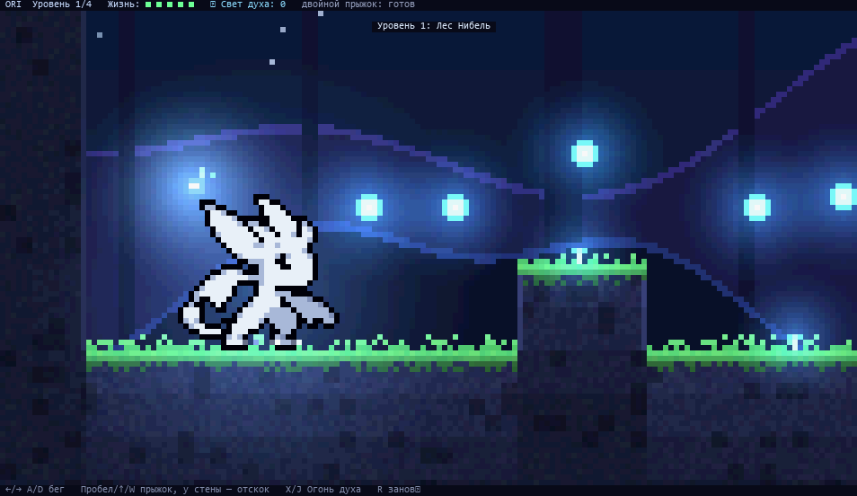
Рис. 26.1. Уровень 1, Лес Нибель: вверху — название уровня
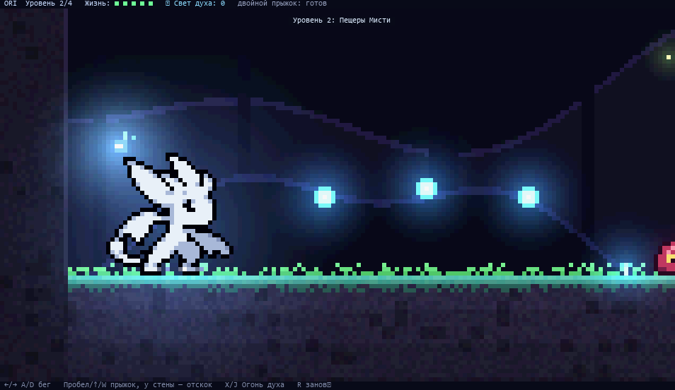
Рис. 26.2. Уровень 2, Пещеры Мисти: другие цвета, нет звёзд
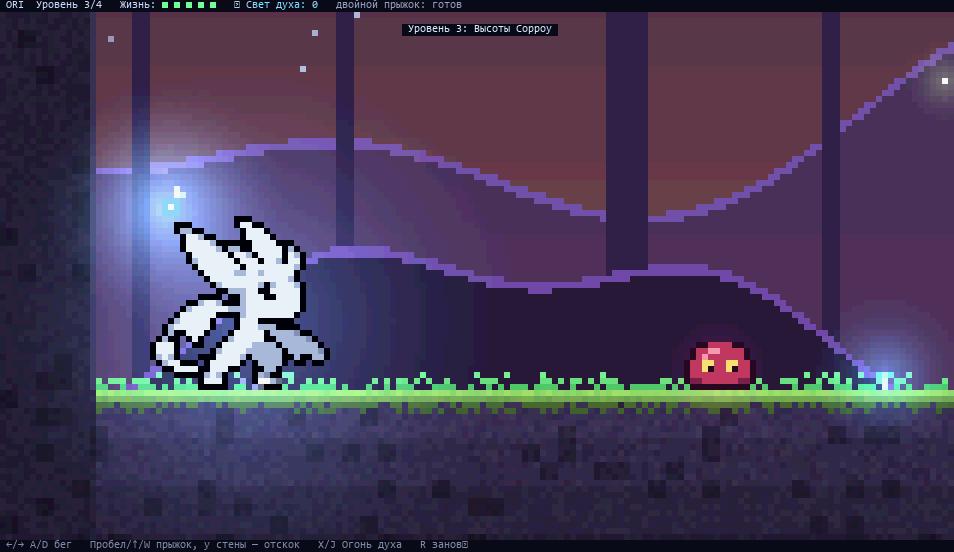
Рис. 26.3. Уровень 3: своя палитра неба и камня
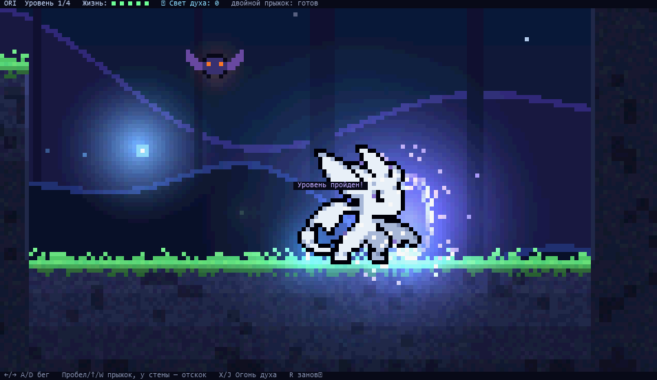
Рис. 26.4. Врата духа в конце уровня ведут на следующий
ФишкаТаблица рекордов в файле
Сначала — ввод с клавиатуры. printf печатает по заполнителям, а функция scanf из того же cstdioчитает по ним то, что набрал пользователь:
Перед первым вызовом разберём его аргументы: %f означает «прочитай одно дробное число типа float», а °rees — адрес переменной, в которую нужно записать результат. У printf после строки идут значения, у scanf — места для записи. Сам вызов вернёт число успешно прочитанных значений, поэтому сравнение с 1 позволяет заметить ошибочный ввод.
Фрагмент кода — место вставки указано в тексте
float degrees = 0;
printf("Угол стрелки в градусах: ");
if (scanf("%f", °rees) != 1) { // scanf вернул не 1 — ввели не число
printf("Это не число\n");
return1;
}
%f говорит «жду дробное число», а °rees — куда его положить: scanf нужно не значение переменной, а место, где она лежит, то есть её адрес. Не путайте с главой 10: там & стоял в типе параметра (Player& p) и означал ссылку, а здесь & стоит перед именем переменной и означает «адрес этой переменной». scanf возвращает, сколько значений удалось прочитать: если пользователь набрал «abc», вернётся 0. Вот так можно было бы вводить угол в задании 25.2 вместо константы DEGREES — попробуйте.
Всё, что программа хранит в переменных, исчезает, когда она закрывается. Чтобы запомнить что-то надолго — рекорды, настройки, сохранения, — данные пишут в файл на диске. В C++ для этого есть функции из cstdio, очень похожие на printf и scanf:
До кода разберём обозначения. fopen("имя", "w") открывает файл для записи и стирает прежнее содержимое, "r" — открывает существующий файл для чтения. Результат имеет тип FILE*: это «ручка» открытого файла. Значение nullptr означает, что открыть файл не получилось. Сначала проверяем результат, только потом передаём его в fprintf, fscanf или fclose.
fprintf получает сначала файл, затем знакомую строку формата и значения для неё. fscanf получает файл, формат и места для прочитанных значений; возвращённое число сообщает, сколько значений прочитано. Для int light место передаётся как &light. У char name[32] имя массива уже обозначает его начало: дополнительный & не нужен. %31s ограничивает слово 31 байтом, оставляя в массиве место для завершающего нуля. Для первого опыта используйте латиницу; это ограничение в байтах, а не в русских буквах.
Ниже фрагмент внутри main: создаём файл с одной записью, закрываем, заново открываем и читаем. Используется учебное имя file-example.txt, чтобы не затронуть таблицу рекордов игры.
Фрагмент кода — место вставки указано в тексте
constchar* name = "Ori";
int light = 12;
FILE* f = fopen("file-example.txt", "w");
if (f == nullptr) {
printf("Не удалось открыть файл для записи\n");
return1;
}
fprintf(f, "%s %d\n", name, light);
fclose(f);
char loadedName[32] = {};
int loadedLight = 0;
f = fopen("file-example.txt", "r");
if (f == nullptr) {
printf("Не удалось открыть файл для чтения\n");
return1;
}
int readCount = fscanf(f, "%31s %d", loadedName, &loadedLight);
fclose(f);
if (readCount == 2) {
printf("%s: %d\n", loadedName, loadedLight);
}
Для запуска отдельно добавьте #include <cstdio> и знакомую оболочку int main() { ... }. Фрагмент напечатает Ori: 12. Для функции scanf из первого опыта выше °rees означает то же самое: адрес переменной, в которую нужно прочитать число. В scanf заполнитель %f предназначен именно для адреса переменной float; у печати printf и чтения scanf это разные правила.
Листинг 26.27. Рекорды между запусками 26-scores.cpp
// Фишка главы 26: таблица рекордов в файле. Программа помнит результаты между запусками:// читает их из scores.txt, добавляет новый, сортирует и записывает обратно.// Сборка из папки игры (файл лежит в папке fishki):// g++ -O2 -std=c++17 -Wall -Wextra fishki\26-scores.cpp -o scores.exe#define WIN32_LEAN_AND_MEAN#include <windows.h>#include <cstdio>#include <cstring>constint MAX_SCORES = 10;constchar* SCORES_FILE = "scores.txt";struct Score {char name[32];int light;};// Читает таблицу из файла; возвращает, сколько записей прочитаноstaticint loadScores(Score scores[]) {FILE* f = fopen(SCORES_FILE, "r"); // "r" — открыть для чтенияif (f == nullptr) return0; // файла ещё нет — таблица пустаяint count = 0;while (count < MAX_SCORES && fscanf(f, "%31s %d", scores[count].name, &scores[count].light) == 2) { count++; } fclose(f);return count;}staticvoid saveScores(const Score scores[], int count) {FILE* f = fopen(SCORES_FILE, "w"); // "w" — открыть для записи (старое содержимое стирается)if (f == nullptr) return;for (int i = 0; i < count; i++) fprintf(f, "%s %d\n", scores[i].name, scores[i].light); fclose(f);}// Вставляет результат на своё место (таблица отсортирована по убыванию)staticint addScore(Score scores[], int count, const Score& s) {int pos = count;while (pos > 0 && scores[pos - 1].light < s.light) pos--;if (pos >= MAX_SCORES) return count; // в десятку не попалif (count < MAX_SCORES) count++;for (int i = count - 1; i > pos; i--) scores[i] = scores[i - 1]; // сдвигаем хвост вниз scores[pos] = s;return count;}int main() { SetConsoleOutputCP(CP_UTF8); Score scores[MAX_SCORES];int count = loadScores(scores); Score mine; printf("Имя (латиницей, без пробелов): ");if (scanf("%31s", mine.name) != 1) return1; printf("Сколько огоньков собрал Ори: ");if (scanf("%d", &mine.light) != 1) return1; count = addScore(scores, count, mine); saveScores(scores, count); printf("\n Таблица рекордов\n");for (int i = 0; i < count; i++) {bool isMine = strcmp(scores[i].name, mine.name) == 0 && scores[i].light == mine.light; printf("%s %2d. %-16s %4d\x1b[0m\n", isMine ? "\x1b[93m" : "", i + 1, scores[i].name, scores[i].light); }return0;}
Это отдельная программа, модули игры ей не нужны. Сохраните её в папку fishki внутри папки игры как fishki\26-scores.cpp и соберите из папки игры:
Имя (латиницей, без пробелов): Alex
Сколько огоньков собрал Ори: 42
Таблица рекордов
1. Masha 57
2. Alex 42
3. Petya 18
В текущей папке — той, из которой вы запускали программу (у нас это папка игры), — появился файл scores.txt: имя без пути fopen ищет и создаёт именно там. Откройте его Блокнотом. Это обычный текст, по строке на рекорд. Функция addScore вставляет новый результат на своё место, сдвигая хвост таблицы вниз, — так таблица всегда отсортирована.
Весь код шага 26Сверьтесь с готовой программой
Все 41 файл игры после этой главы — целиком. Откройте файл, чтобы сравнить со своим, а кнопка «Копировать» поможет, если нужно догнать: вставьте код в файл с тем же именем в папке игры.
// ============================================================================// camera.cpp — камера следует за Ори и не выходит за края уровня// ============================================================================#include <cmath>#include "camera.h"#include "config.h"#include "game.h"#include "mathx.h"// Не даём камере заглянуть за края уровняstaticvoid clampCamera(Game& g) {Camera& cam = g.camera;float maxX = (float)(g.world.width * TILE - screenWidth());float maxY = (float)(MAP_H * TILE - screenHeight()); cam.x = clampf(cam.x, 0, fmaxf(maxX, 0));// сверху камера может заглянуть выше карты — иначе Ори пропадёт из кадра в высоком прыжке cam.y = maxY < 0 ? maxY : clampf(cam.y, -12.0f * TILE, maxY);}// Целые координаты камеры для рисованияstaticvoid updateView(Camera& cam) { cam.viewX = (int)floorf(cam.x); cam.viewY = (int)floorf(cam.y);if (cam.shake > 0) { // тряска: сдвигаем картинку на пару пикселей в случайную сторону cam.viewX += (int)randomRange(-2, 2); cam.viewY += (int)randomRange(-2, 2); }}void drawDisc(constCamera& cam, int cx, int cy, int radius, Color c) {for (int y = -radius; y <= radius; y++) {for (int x = -radius; x <= radius; x++) {if (x * x + y * y <= radius * radius + radius) putWorldPixel(cam, cx + x, cy + y, c); } }}void centerCamera(Game& g) {constBody& b = g.player.body; g.camera.x = b.x + b.w / 2.0f - screenWidth() / 2.0f; g.camera.y = b.y + b.h / 2.0f - screenHeight() / 2.0f; g.camera.shake = 0; clampCamera(g); updateView(g.camera);}void updateCamera(Game& g, float dt) {Camera& cam = g.camera;constBody& b = g.player.body;// Цель: Ори в центре экрана, чуть сдвинутый назад — видно, что впередиfloat targetX = b.x + b.w / 2.0f - screenWidth() / 2.0f + g.player.facing * 18;float targetY = b.y + b.h / 2.0f - screenHeight() * 0.55f;// Каждый кадр проходим часть пути до цели — камера движется плавно cam.x = lerpf(cam.x, targetX, clampf(dt * 5, 0, 1)); cam.y = lerpf(cam.y, targetY, clampf(dt * 5, 0, 1));// Камера плавная, но Ори никогда не уходит за верх или низ кадра cam.y = clampf(cam.y, b.y + b.h + 4 - screenHeight(), b.y - 10); clampCamera(g);if (cam.shake > 0) cam.shake -= dt; updateView(cam);}
camera.h26 строкcamera.h
// ============================================================================// camera.h — какая часть мира видна на экране, рисование в координатах мира// ============================================================================#pragma once#include "color.h"#include "screen.h"structGame; // описана в game.h — здесь достаточно знать, что такая структура естьstructCamera {float x, y; // левый верхний угол экрана в миреfloat shake; // сколько ещё секунд трясти экранint viewX, viewY; // то же целыми числами (с тряской) — по ним рисуем};// Поставить пиксель по координатам мира: экран = мир − камераinlinevoid putWorldPixel(constCamera& cam, int wx, int wy, Color c) { putPixel(wx - cam.viewX, wy - cam.viewY, c);}// Закрашенный круг в координатах мираvoid drawDisc(constCamera& cam, int cx, int cy, int radius, Color c);void centerCamera(Game& g); // сразу поставить Ори в центр экранаvoid updateCamera(Game& g, float dt); // камера плавно догоняет Ори
color.h34 строкиcolor.h
// ============================================================================// color.h — цвет пикселя. Цвет хранится в одном числе 0xRRGGBB:// по два шестнадцатеричных разряда на красный, зелёный и синий.// ============================================================================#pragma oncetypedefunsignedintColor;// Ограничить канал диапазоном 0..255inlineint clampChannel(int value) {return value < 0 ? 0 : (value > 255 ? 255 : value);}// Собрать цвет из красного, зелёного и синего (каждый 0..255)inlineColor rgb(int r, int g, int b) {return (Color)(clampChannel(r) << 16 | clampChannel(g) << 8 | clampChannel(b));}// Достать каналы обратноinlineint colorR(Color c) { return (c >> 16) & 255; }inlineint colorG(Color c) { return (c >> 8) & 255; }inlineint colorB(Color c) { return c & 255; }// Смешать два цвета: t = 0 — первый цвет, t = 1 — второйinlineColor mixColor(Color a, Color b, float t) {return rgb((int)(colorR(a) + (colorR(b) - colorR(a)) * t), (int)(colorG(a) + (colorG(b) - colorG(a)) * t), (int)(colorB(a) + (colorB(b) - colorB(a)) * t));}// Изменить яркость: k = 0.5 — вдвое темнее, k = 2 — вдвое ярчеinlineColor scaleColor(Color c, float k) {return rgb((int)(colorR(c) * k), (int)(colorG(c) * k), (int)(colorB(c) * k));}
config.h38 строкconfig.h
// ============================================================================// config.h — настройки игры. Все важные числа собраны здесь,// чтобы их было легко найти и поменять.// ============================================================================#pragma once// Картинкаconstint MAX_SCREEN_W = 320; // наибольшая ширина картинки в пикселяхconstint MAX_SCREEN_H = 200; // наибольшая высота картинки в пикселях// Мирconstint TILE = 8; // сторона тайла в пикселяхconstint MAP_H = 22; // высота уровня в тайлахconstint MAX_MAP_W = 160; // ширина самого широкого уровня в тайлах// Движениеconstfloat RUN_SPEED = 95.0f; // скорость бега, пикселей в секундуconstfloat RUN_ACCEL_GROUND = 900.0f; // разгон и торможение на землеconstfloat RUN_ACCEL_AIR = 600.0f; // в воздухе разгоняться труднееconstfloat GRAVITY = 900.0f; // насколько быстро растёт скорость паденияconstfloat JUMP_SPEED = 320.0f; // скорость в начале прыжкаconstfloat MAX_FALL_SPEED = 360.0f; // быстрее падать нельзяconstfloat DOUBLE_JUMP_SPEED = 280.0f; // второй прыжок в воздухе чуть слабееconstfloat COYOTE_TIME = 0.10f; // сколько секунд можно прыгнуть после схода с краяconstfloat JUMP_BUFFER_TIME = 0.12f; // сколько секунд помнится раннее нажатие прыжка// Ориconstint PLAYER_W = 16; // ширина хитбоксаconstint PLAYER_H = 24; // высота хитбоксаconstint MAX_HP = 5; // сколько жизней может быть// Сколько объектов может существовать одновременноconstint MAX_PARTICLES = 800;constint MAX_LIGHTS = 160;constint MAX_PICKUPS = 80;constint MAX_CHECKPOINTS = 10;constint MAX_ENEMIES = 40;constint MAX_SHOTS = 32;
console.cpp227 строкconsole.cpp
// ============================================================================// console.cpp — всё, что связано с Windows-консолью, собрано в одном файле// ============================================================================#define WIN32_LEAN_AND_MEAN#define NOMINMAX#include <windows.h>#include <cstring>#include <atomic>#include <cstdio>#include <cstdlib>#include "console.h"// Как была настроена консоль до запуска игрыstaticDWORD originalOutMode = 0;staticDWORD originalInMode = 0;staticUINT originalCodePage = 0;// Застрял ли какой-нибудь наш поток в записи в консоль, которую так и не удалось отменитьstatic std::atomic<bool> threadStuck(false);static std::atomic<bool> shutdownStarted(false);static std::atomic<bool> writerBusy(false);static std::atomic<bool> writerQuit(false);static std::atomic<bool> writerAccepting(false);static std::atomic<bool> writerFailed(false);static std::atomic<bool> writerStopping(false);static std::atomic<bool> writerStopped(true);staticHANDLE writerThread = NULL;// Ctrl+C или закрытие: consoleRestore сначала останавливает writer.// Обработчик делает ограниченную по времени попытку уборки, затем Windows завершает процесс.staticBOOL WINAPI onConsoleEvent(DWORD) { consoleRestore();return FALSE;}bool relaunchInOwnWindow(int argc, char** argv) {for (int i = 1; i < argc; i++) {if (strcmp(argv[i], "--here") == 0) {returnfalse; } }constchar* terminal = getenv("TERM_PROGRAM");if (terminal == NULL || strcmp(terminal, "vscode") != 0) {returnfalse; }char exePath[MAX_PATH];char command[MAX_PATH + 16]; GetModuleFileNameA(NULL, exePath, MAX_PATH); snprintf(command, sizeof(command), "\"%s\" --here", exePath); STARTUPINFOA startup; PROCESS_INFORMATION process; memset(&startup, 0, sizeof(startup)); startup.cb = sizeof(startup);if (!CreateProcessA(NULL, command, NULL, NULL, FALSE, CREATE_NEW_CONSOLE, NULL, NULL, &startup, &process)) {returnfalse; } CloseHandle(process.hThread); CloseHandle(process.hProcess); printf("Игра открыта в отдельном окне консоли (терминал VS Code для неё слишком медленный).\n""Чтобы всё же запустить здесь: ori.exe --here\n");returntrue;}void consoleInit() {HANDLE out = GetStdHandle(STD_OUTPUT_HANDLE);HANDLE in = GetStdHandle(STD_INPUT_HANDLE); GetConsoleMode(out, &originalOutMode); GetConsoleMode(in, &originalInMode); originalCodePage = GetConsoleOutputCP(); SetConsoleMode(out, originalOutMode | ENABLE_PROCESSED_OUTPUT | ENABLE_VIRTUAL_TERMINAL_PROCESSING); SetConsoleMode(in, ENABLE_EXTENDED_FLAGS); // выключить выделение мышью: оно ставит вывод на паузу SetConsoleOutputCP(CP_UTF8); SetConsoleCtrlHandler(onConsoleEvent, TRUE); SetConsoleTitleA("Ori");// Отдельный экран, спрятать курсор, очистить экранconstchar* start = "\x1b[?1049h\x1b[?25l\x1b[2J"; consoleWrite(start, (int)strlen(start));}// Сама работа по восстановлению консоли — её выполняет отдельный потокstaticDWORD WINAPI restoreWork(LPVOID) {// Обычные цвета, показать курсор, вернуться на основной экранconstchar* finish = "\x1b[0m\x1b[?25h\x1b[?1049l"; consoleWrite(finish, (int)strlen(finish)); consoleFlushInput(); SetConsoleMode(GetStdHandle(STD_OUTPUT_HANDLE), originalOutMode); SetConsoleMode(GetStdHandle(STD_INPUT_HANDLE), originalInMode); SetConsoleOutputCP(originalCodePage);return0;}// Вернуть консоль в порядок. Если терминал завис и не принимает вывод,// запись тоже зависнет — поэтому её делает отдельный поток, а мы ждём// ограниченное время; отмена записи и восстановление могут не удаться.void consoleRestore() {if (shutdownStarted.exchange(true)) return; // только один поток выполняет уборку consoleStopWriter(); // прежде чем восстанавливать экранif (threadStuck) {// Запись не удалось остановить: нельзя писать в консоль параллельно с ней.// Это аварийный выход; успешное восстановление экрана здесь не обещаем. TerminateProcess(GetCurrentProcess(), 1);return; }HANDLE worker = CreateThread(NULL, 0, restoreWork, NULL, 0, NULL);if (worker == NULL) return; // восстановление не удалось запуститьDWORD status = WaitForSingleObject(worker, 500);for (int i = 0; status == WAIT_TIMEOUT && i < 50; i++) { CancelSynchronousIo(worker); // запрос отмены, а не гарантия завершения status = WaitForSingleObject(worker, 10); } CloseHandle(worker);if (status != WAIT_OBJECT_0) { threadStuck = true; TerminateProcess(GetCurrentProcess(), 1); // восстановление могло остаться незавершённым }}bool consoleSize(int& cols, int& rows) { CONSOLE_SCREEN_BUFFER_INFO info;if (!GetConsoleScreenBufferInfo(GetStdHandle(STD_OUTPUT_HANDLE), &info)) {returnfalse; } cols = info.srWindow.Right - info.srWindow.Left + 1; rows = info.srWindow.Bottom - info.srWindow.Top + 1;returntrue;}void consoleFlushInput() { FlushConsoleInputBuffer(GetStdHandle(STD_INPUT_HANDLE));}bool keyDown(int virtualKey) {return (GetAsyncKeyState(virtualKey) & 0x8000) != 0;}bool consoleWrite(constchar* data, int length) {if (length < 0) returnfalse;int sent = 0;while (sent < length) {// После запроса остановки writer не начинает следующую часть записи.if (writerQuit && writerBusy) returnfalse;DWORD written = 0;DWORD remaining = (DWORD)(length - sent);if (!WriteFile(GetStdHandle(STD_OUTPUT_HANDLE), data + sent, remaining, &written, NULL) || written == 0 || written > remaining) returnfalse; sent += (int)written; }returntrue;}// ---------------------------------------------------------------------------// Поток вывода. Основной поток кладёт кадр в sendBuffer и поднимает флаг// writerBusy, а этот поток отправляет кадр в консоль и опускает флаг.// ---------------------------------------------------------------------------staticchar sendBuffer[4 * 1024 * 1024];staticint sendLength = 0;staticDWORD WINAPI writerLoop(LPVOID) {while (!writerQuit) {if (!writerBusy) { Sleep(1);continue; }bool sent = consoleWrite(sendBuffer, sendLength);if (!sent) writerFailed = true; writerBusy = false; }return0;}bool consoleStartWriter() {if (shutdownStarted) returnfalse; writerQuit = false; writerFailed = false; writerBusy = false; writerStopping = false; writerStopped = false; writerThread = CreateThread(NULL, 0, writerLoop, NULL, 0, NULL); writerAccepting = writerThread != NULL;if (!writerAccepting) writerStopped = true;return writerAccepting;}bool consoleWriterBusy() {return writerBusy || !writerAccepting;}bool consoleTakeWriteFailure() {return writerFailed.exchange(false); // основной поток забирает сообщение об ошибке}bool consoleSubmit(constchar* data, int length) {if (!writerAccepting || shutdownStarted || writerBusy || length <= 0 || length > (int)sizeof(sendBuffer)) returnfalse; memcpy(sendBuffer, data, length); sendLength = length; writerBusy = true;returntrue;}void consoleStopWriter() { writerAccepting = false; // новые кадры больше не принимаемif (writerStopping.exchange(true)) {// main и обработчик закрытия могли прийти сюда одновременно.for (int i = 0; i < 100 && !writerStopped; i++) Sleep(10);if (!writerStopped) threadStuck = true;return; }if (writerThread != NULL) {for (int i = 0; i < 25 && writerBusy; i++) Sleep(10); // короткая попытка дописать кадр writerQuit = true;DWORD status = WaitForSingleObject(writerThread, 10);for (int i = 0; status == WAIT_TIMEOUT && i < 50; i++) { CancelSynchronousIo(writerThread); status = WaitForSingleObject(writerThread, 10); }if (status != WAIT_OBJECT_0) threadStuck = true; CloseHandle(writerThread); writerThread = NULL; } writerStopped = true;}
console.h24 строкиconsole.h
// ============================================================================// console.h — окно консоли Windows: настройка, размер, клавиши, вывод// ============================================================================#pragma once// Если игру запустили из терминала VS Code, открыть её в отдельном окне.// Возвращает true, если игра перезапущена и эту копию нужно закрыть.bool relaunchInOwnWindow(int argc, char** argv);void consoleInit(); // включить цвета и UTF-8, перейти на отдельный экранvoid consoleRestore(); // вернуть консоль в исходное состояниеbool consoleSize(int& cols, int& rows); // видимый размер окна в символахvoid consoleFlushInput(); // выбросить накопившиеся нажатия клавишbool keyDown(int virtualKey); // зажата ли клавиша прямо сейчас// Полностью записать данные; false — ошибка или неполная записьbool consoleWrite(constchar* data, int length);// Вывод в отдельном потоке: игра не ждёт медленный терминалbool consoleStartWriter(); // false — поток не создан, игру запускать нельзяvoid consoleStopWriter();bool consoleTakeWriteFailure(); // сбой вывода: следующий кадр рисуем целикомbool consoleWriterBusy(); // предыдущий кадр ещё отправляетсяbool consoleSubmit(constchar* data, int length); // false — кадр не принят
// ============================================================================// effects.cpp — пулы частиц и источников света// ============================================================================#include <algorithm>#include <cmath>#include <cstring>#include "config.h"#include "effects.h"#include "mathx.h"struct Particle {float x, y, vx, vy;float life, maxLife; // сколько осталось жить и сколько жила бы всегоColor color;bool gravity; // падает ли вниз};struct Light {float x, y, radius;Color color;float power;};// Пулы: частица с life <= 0 — свободное местоstatic Particle particles[MAX_PARTICLES];static Light lights[MAX_LIGHTS];staticint lightCount = 0;void clearParticles() { memset(particles, 0, sizeof(particles));}void spawnParticle(float x, float y, float vx, float vy, float life, Color color, bool gravity) {for (int i = 0; i < MAX_PARTICLES; i++) {if (particles[i].life <= 0) { particles[i] = { x, y, vx, vy, life, life, color, gravity };return; } }}void burst(float x, float y, int count, Color color, float speed, float life, bool gravity) {for (int i = 0; i < count; i++) {float angle = randomRange(0, 6.2832f);float s = randomRange(speed * 0.3f, speed); spawnParticle(x, y, cosf(angle) * s, sinf(angle) * s, randomRange(life * 0.5f, life), color, gravity); }}void updateParticles(float dt) {for (int i = 0; i < MAX_PARTICLES; i++) { Particle& p = particles[i];if (p.life <= 0) continue; p.life -= dt;if (p.gravity) p.vy += GRAVITY * 0.5f * dt; p.vx *= 1.0f - 1.5f * dt; // сопротивление воздуха p.vy *= 1.0f - 1.5f * dt; p.x += p.vx * dt; p.y += p.vy * dt; }}void drawParticles(constCamera& cam) {for (int i = 0; i < MAX_PARTICLES; i++) {const Particle& p = particles[i];if (p.life <= 0) continue;float strength = clampf(p.life / p.maxLife, 0, 1); // гаснет к концу жизни addPixel((int)roundf(p.x) - cam.viewX, (int)roundf(p.y) - cam.viewY, p.color, strength); }}void clearLights() { lightCount = 0;}void addLight(float x, float y, float radius, Color color, float power) {if (lightCount < MAX_LIGHTS) { lights[lightCount] = { x, y, radius, color, power }; lightCount++; }}void applyLights(constCamera& cam) {for (int i = 0; i < lightCount; i++) {const Light& light = lights[i];int cx = (int)light.x - cam.viewX;int cy = (int)light.y - cam.viewY;int r = (int)light.radius;// Проходим только по квадрату вокруг источника и только по видимой частиint x0 = std::max(0, cx - r), x1 = std::min(screenWidth() - 1, cx + r);int y0 = std::max(0, cy - r), y1 = std::min(screenHeight() - 1, cy + r);for (int y = y0; y <= y1; y++) {for (int x = x0; x <= x1; x++) {float dx = (float)(x - cx), dy = (float)(y - cy);float d = sqrtf(dx * dx + dy * dy) / light.radius; // 0 в центре, 1 на краюif (d >= 1) continue; addPixel(x, y, light.color, (1 - d) * (1 - d) * light.power); } } }}
effects.h19 строкeffects.h
// ============================================================================// effects.h — частицы (искры, пыль) и свет// ============================================================================#pragma once#include "camera.h"#include "color.h"// Частицы: живут несколько долей секунды и гаснутvoid clearParticles();void spawnParticle(float x, float y, float vx, float vy, float life, Color color, bool gravity);void burst(float x, float y, int count, Color color, float speed, float life, bool gravity);void updateParticles(float dt);void drawParticles(constCamera& cam);// Свет: источники собираются заново в каждом кадре, потом накладываются на картинкуvoid clearLights();void addLight(float x, float y, float radius, Color color, float power);void applyLights(constCamera& cam);
enemies.cpp211 строкenemies.cpp
// ============================================================================// enemies.cpp — поведение и отрисовка врагов// ============================================================================#include <cmath>#include <cstring>#include "effects.h"#include "enemies.h"#include "game.h"#include "mathx.h"#include "sprites.h"// Слизень: два кадра — обычный и «сплющенный»staticconstchar* SLIME_FRAME_1[] = {"....kkkk....","..kkrrrrkk..",".krrhhrrrrk.",".krhrrrrrrk.","krryyrryyrrk","krrykrrykrrk","krrrrrrrrrrk","kpprrrrrrppk",".kkkkkkkkkk.",};staticconstchar* SLIME_FRAME_2[] = {"............","..kkrrrrkk..",".krrhhrrrrk.",".krhrrrrrrk.","krryyrryyrrk","krrykrrykrrk","krrrrrrrrrrk","kpprrrrrrppk",".kkkkkkkkkk.",};staticconstchar SLIME_KEYS[] = "krphy";staticconstColor SLIME_COLORS[] = { rgb(42, 8, 32), rgb(194, 60, 100), rgb(126, 32, 72), rgb(255, 154, 180), rgb(255, 224, 112) };staticconst Sprite SLIME_SPRITES[2] = { { 12, 9, SLIME_FRAME_1, SLIME_KEYS, SLIME_COLORS }, { 12, 9, SLIME_FRAME_2, SLIME_KEYS, SLIME_COLORS },};// Летучая мышь: крылья вверх и крылья внизstaticconstchar* BAT_FRAME_1[] = {"l............l","ll...kkkk...ll","lll.kbbbbk.lll",".lllbebbeblll.","..llbbbbbbll..","....kbbbbk....",".....k..k.....","..............",};staticconstchar* BAT_FRAME_2[] = {"..............",".....kkkk.....","....kbbbbk....","..llbebbebll..",".lllbbbbbblll.","lll.kbbbbk.lll","ll...k..k...ll","l............l",};staticconstchar BAT_KEYS[] = "kble";staticconstColor BAT_COLORS[] = { rgb(10, 10, 26), rgb(60, 50, 112), rgb(106, 79, 166), rgb(255, 122, 40) };staticconst Sprite BAT_SPRITES[2] = { { 14, 8, BAT_FRAME_1, BAT_KEYS, BAT_COLORS }, { 14, 8, BAT_FRAME_2, BAT_KEYS, BAT_COLORS },};void spawnEnemy(Game& g, EnemyType type, float x, float y) {if (g.enemyCount >= MAX_ENEMIES) return;Enemy& e = g.enemies[g.enemyCount]; memset(&e, 0, sizeof(e)); e.type = type; e.alive = true; e.dir = -1; e.time = randomRange(0, 6.28f); // чтобы враги двигались не в тактif (type == ENEMY_SLIME) { e.hp = 3; e.body = makeBody(x - 2, y + TILE - 9, 12, 9); // ногами на дно клетки } elseif (type == ENEMY_BAT) { e.hp = 2; e.body = makeBody(x - 3, y, 14, 8); } e.homeX = e.body.x; e.homeY = e.body.y; g.enemyCount++;}// Слизень ползёт и разворачивается у стены и на краю обрываstaticvoid updateSlime(Game& g, Enemy& e, float dt) {Body& b = e.body;if (e.knockTime <= 0) b.vx = e.dir * 22.0f; b.vy = fminf(b.vy + GRAVITY * dt, MAX_FALL_SPEED); moveBody(g.world, b, dt);if (e.knockTime <= 0) {if (b.hitWall) e.dir = -e.dir;// Тайл чуть впереди и чуть ниже ног: если он не твёрдый — впереди обрывint frontX = (int)floorf((e.dir > 0 ? b.x + b.w + 1 : b.x - 1) / TILE);int belowY = (int)floorf((b.y + b.h + 1) / TILE);if (b.onGround && !isSolidTile(tileAt(g.world, frontX, belowY))) e.dir = -e.dir; }if (b.y > MAP_H * TILE + 40) e.alive = false; // упал в пропасть}// Летучая мышь: рядом с Ори — летит к нему, иначе кружит у гнездаstaticvoid updateBat(Game& g, Enemy& e, float dt) {Body& b = e.body;constBody& player = g.player.body;float dx = (player.x + player.w / 2.0f) - (b.x + b.w / 2.0f);float dy = (player.y + player.h / 2.0f) - (b.y + b.h / 2.0f);float distance = sqrtf(dx * dx + dy * dy);float ax, ay; // ускорениеif (distance < 110 && g.state == STATE_PLAY) {// Направление на Ори длиной 1, умноженное на силу разгона, и волнистость полёта ax = dx / fmaxf(distance, 1.0f) * 120; ay = dy / fmaxf(distance, 1.0f) * 120 + sinf(e.time * 6) * 80; e.dir = dx > 0 ? 1 : -1; } else {// Тянемся к точке, которая плавает вокруг гнезда ax = (e.homeX + sinf(e.time * 0.9f) * 24 - b.x) * 2; ay = (e.homeY + sinf(e.time * 2.1f) * 6 - b.y) * 2; }if (e.knockTime <= 0) { b.vx += ax * dt; b.vy += ay * dt;float speed = sqrtf(b.vx * b.vx + b.vy * b.vy);if (speed > 48) { // не быстрее 48 пикселей в секунду b.vx *= 48 / speed; b.vy *= 48 / speed; } } b.vx *= 1.0f - 0.8f * dt; b.vy *= 1.0f - 0.8f * dt; b.x += b.vx * dt; // мыши летают сквозь стены b.y += b.vy * dt;}// Касание с Ори: прыжок сверху ранит врага, иначе ранен Ориstaticvoid checkContact(Game& g, Enemy& e, float dt) {Body& player = g.player.body;constBody& b = e.body;if (g.state != STATE_PLAY) return;if (!rectsOverlap(player.x, player.y, player.w, player.h, b.x, b.y, b.w, b.h)) return;// Ори падает, и кадр назад его ноги были выше врага — значит, прилетел сверхуfloat feetBefore = player.y + player.h - player.vy * dt;bool stomp = player.vy > 40 && feetBefore <= b.y + 4;if (stomp) { hitEnemy(g, e, 2, player.x + 8 < b.x + b.w / 2.0f ? 1.0f : -1.0f); player.y = b.y - player.h; // ставим Ори на врага: в следующем кадре они уже не касаются player.vy = -250; g.player.canDoubleJump = true; } else { hurtPlayer(g, b.x + b.w / 2.0f, -180); }}void updateEnemies(Game& g, float dt) {for (int i = 0; i < g.enemyCount; i++) {Enemy& e = g.enemies[i];if (!e.alive) continue; e.time += dt;if (e.hurtTime > 0) e.hurtTime -= dt;if (e.knockTime > 0) e.knockTime -= dt;if (e.type == ENEMY_SLIME) { updateSlime(g, e, dt); } elseif (e.type == ENEMY_BAT) { updateBat(g, e, dt); } checkContact(g, e, dt); }}void hitEnemy(Game& g, Enemy& e, int damage, float pushDir) {Body& b = e.body; e.hp -= damage; e.hurtTime = 0.15f;float cx = b.x + b.w / 2.0f, cy = b.y + b.h / 2.0f; burst(cx, cy, 10, rgb(255, 200, 230), 80, 0.35f, false); e.knockTime = 0.2f; b.vx = pushDir * 90; b.vy = (e.type == ENEMY_SLIME) ? -120.0f : -40.0f;if (e.hp <= 0) { e.alive = false;Color body = (e.type == ENEMY_SLIME) ? rgb(220, 60, 110) : rgb(130, 90, 200); burst(cx, cy, 30, body, 110, 0.7f, true); burst(cx, cy, 12, rgb(160, 240, 255), 60, 1.0f, false); g.player.spiritLight += 3; }}void drawEnemies(constGame& g) {for (int i = 0; i < g.enemyCount; i++) {constEnemy& e = g.enemies[i];if (!e.alive) continue;int x = (int)roundf(e.body.x);int y = (int)roundf(e.body.y);bool flip = e.dir > 0; // на картинках враги смотрят влевоbool flash = e.hurtTime > 0; // после удара — белая вспышкаif (e.type == ENEMY_SLIME) {int frame = ((int)(e.time * 6)) % 2; drawSprite(g.camera, SLIME_SPRITES[frame], x, y, flip, flash); } elseif (e.type == ENEMY_BAT) {int frame = ((int)(e.time * 8)) % 2; drawSprite(g.camera, BAT_SPRITES[frame], x, y, flip, flash); } }}
enemies.h30 строкenemies.h
// ============================================================================// enemies.h — враги: слизни, летучие мыши (и босс)// ============================================================================#pragma once#include "physics.h"structGame;enum EnemyType { ENEMY_SLIME, // ползает по платформе ENEMY_BAT, // летает и преследует Ори};structEnemy { EnemyType type;Body body;int hp;int dir; // куда смотрит или ползёт: -1 или 1float hurtTime; // сколько ещё мигать после удараfloat knockTime; // сколько ещё лететь от удараfloat time; // собственное время врага — для анимацииfloat homeX, homeY; // где враг появился (гнездо летучей мыши)bool alive;};void spawnEnemy(Game& g, EnemyType type, float x, float y);void updateEnemies(Game& g, float dt);void hitEnemy(Game& g, Enemy& enemy, int damage, float pushDir); // pushDir — куда отбросить: -1 или 1void drawEnemies(constGame& g);
game.cpp169 строкgame.cpp
// ============================================================================// game.cpp — загрузка уровней и правила игры: что обновлять в каждом кадре// ============================================================================#include <algorithm>#include <cmath>#include <cstring>#include "effects.h"#include "game.h"#include "input.h"#include "levels.h"// Символ карты — объект? Тогда создаём объект и возвращаем пробел.// Иначе это тайл (камень, бревно, шипы) — он остаётся в карте как есть.staticchar placeObject(Game& g, char symbol, float wx, float wy) {World& w = g.world;switch (symbol) {case'P': w.spawnX = wx; w.spawnY = wy + TILE - PLAYER_H; // ногами на дно клеткиreturn' ';case'o': addPickup(g, PICKUP_LIGHT, wx + 4, wy + 4);return' ';case'+': addPickup(g, PICKUP_HEALTH, wx + 4, wy + 4);return' ';case'C': addCheckpoint(g, wx + 4, wy + TILE);return' ';case'T': w.hasTree = true; w.treeX = wx + 4; w.treeY = wy + TILE;return' ';case'E': w.hasExit = true; w.exitX = wx + 4; w.exitY = wy + TILE;return' ';case'S': spawnEnemy(g, ENEMY_SLIME, wx, wy);return' ';case'B': spawnEnemy(g, ENEMY_BAT, wx, wy);return' ';default:return symbol; }}void loadLevel(Game& g, int index) {const LevelInfo& level = levelInfo(index);World& w = g.world; g.levelIndex = index; g.pickupCount = 0; g.checkpointCount = 0; g.enemyCount = 0; clearShots(g); clearParticles(); w.hasTree = false; w.hasExit = false;// Ширина уровня — длина самой длинной строки карты w.width = 0;for (int ty = 0; ty < MAP_H; ty++) { w.width = std::max(w.width, (int)strlen(level.rows[ty])); } w.width = std::min(w.width, MAX_MAP_W);for (int ty = 0; ty < MAP_H; ty++) {int length = (int)strlen(level.rows[ty]);for (int tx = 0; tx < w.width; tx++) {char symbol = tx < length ? level.rows[ty][tx] : ' '; w.tiles[ty][tx] = placeObject(g, symbol, (float)(tx * TILE), (float)(ty * TILE)); } w.tiles[ty][w.width] = 0; // конец строки } placePlayer(g.player, w.spawnX, w.spawnY); g.lightAtLevelStart = g.player.spiritLight; g.levelBanner = 3; centerCamera(g);}void startNewGame(Game& g) { g.state = STATE_TITLE; g.player.spiritLight = 0; loadLevel(g, 0);}void restartLevel(Game& g) { g.player.spiritLight = g.lightAtLevelStart; // свет, собранный на этом уровне, не считается loadLevel(g, g.levelIndex);}// Врата на следующий уровень и Древо Духовstaticvoid checkGoals(Game& g) {constBody& b = g.player.body;constWorld& w = g.world;if (w.hasExit && g.state == STATE_PLAY && rectsOverlap(b.x, b.y, b.w, b.h, w.exitX - 5, w.exitY - 22, 10, 22)) { g.state = STATE_NEXT_LEVEL; g.nextLevelTimer = 1.8f; burst(w.exitX, w.exitY - 11, 60, rgb(170, 140, 255), 110, 1.2f, false); }if (w.hasTree && g.state == STATE_PLAY && rectsOverlap(b.x, b.y, b.w, b.h, w.treeX - 6, w.treeY - 40, 12, 40)) { g.state = STATE_WIN; burst(w.treeX, w.treeY - 40, 80, rgb(160, 255, 220), 130, 1.5f, false); }}// Игра идёт: обновляем всё по очередиstaticvoid updatePlay(Game& g, constInput& in, float dt) {if (g.levelBanner > 0) g.levelBanner -= dt; updatePlayer(g, in, dt);if (g.state != STATE_PLAY) return; updateItems(g); checkGoals(g);if (g.state != STATE_PLAY) return; updateEnemies(g, dt);if (g.state != STATE_PLAY) return; updateShots(g, dt);}void updateGame(Game& g, constInput& in, float dt) { g.time += dt;if (in.restart.pressed && g.state != STATE_TITLE && g.state != STATE_NEXT_LEVEL) {if (g.state == STATE_WIN) { startNewGame(g); } else { restartLevel(g); } g.state = STATE_PLAY; }switch (g.state) {case STATE_TITLE:// Сейн кружит вокруг Ори, Enter или пробел начинает игру g.player.seinX = g.player.body.x + 8 + sinf(g.time) * 16; g.player.seinY = g.player.body.y - 6 + sinf(g.time * 2) * 4;if (in.confirm.pressed) g.state = STATE_PLAY;break;case STATE_PLAY: updatePlay(g, in, dt);break;case STATE_NEXT_LEVEL: g.nextLevelTimer -= dt;if (g.nextLevelTimer <= 0) { loadLevel(g, (g.levelIndex + 1) % levelCount()); g.state = STATE_PLAY; }break;case STATE_DEAD:if (in.confirm.pressed) { // Enter — возродиться у колодца с полными жизнями g.player.hp = MAX_HP; g.state = STATE_PLAY; respawnPlayer(g); } updateEnemies(g, dt);break;case STATE_WIN: updateEnemies(g, dt);break; } updateParticles(dt); updateCamera(g, dt);}
game.h48 строкgame.h
// ============================================================================// game.h — вся игра в одной структуре Game. Функции получают её по ссылке,// поэтому глобальные переменные не нужны.// ============================================================================#pragma once#include "config.h"#include "camera.h"#include "enemies.h"#include "items.h"#include "player.h"#include "shots.h"#include "world.h"structInput;// В каком состоянии игра: от него зависит, что делают клавиши и что видно на экранеenum GameState { STATE_TITLE, // заставка STATE_PLAY, // игра идёт STATE_DEAD, // Ори погиб STATE_NEXT_LEVEL, // уровень пройден, скоро следующий STATE_WIN, // победа};structGame { GameState state;float time; // сколько секунд идёт игра — для анимацийint levelIndex; // номер текущего уровня (с нуля)World world;Camera camera;Player player;int lightAtLevelStart; // сколько света было в начале уровня — для Rfloat levelBanner; // сколько ещё секунд показывать название уровняfloat nextLevelTimer; // пауза «уровень пройден» Pickup pickups[MAX_PICKUPS];int pickupCount; Checkpoint checkpoints[MAX_CHECKPOINTS];int checkpointCount;Enemy enemies[MAX_ENEMIES];int enemyCount; Shot shots[MAX_SHOTS];};void startNewGame(Game& g);void loadLevel(Game& g, int index);void restartLevel(Game& g);void updateGame(Game& g, constInput& in, float dt);
hud.cpp78 строкhud.cpp
// ============================================================================// hud.cpp — жизни и счёт вверху, подсказка внизу, надписи заставки и финала// ============================================================================#include <cstdio>#include "game.h"#include "hud.h"#include "levels.h"#include "screen.h"constColor HUD_TEXT = rgb(200, 220, 255);constColor HINT_TEXT = rgb(130, 140, 170);// Верхняя строка: жизни, свет духа и подсказка про двойной прыжокstaticvoid drawTopLine(constGame& g) {constPlayer& p = g.player;char level[96]; snprintf(level, sizeof(level), " ORI Уровень %d/%d ", g.levelIndex + 1, levelCount()); textAdd(LINE_TOP, level, HUD_TEXT); textAdd(LINE_TOP, "Жизнь: ", HUD_TEXT);for (int i = 0; i < MAX_HP; i++) { textAdd(LINE_TOP, "■ ", i < p.hp ? rgb(110, 255, 150) : rgb(50, 60, 70)); } textAdd(LINE_TOP, " ◆ Свет духа: ", rgb(140, 220, 255)); textAddInt(LINE_TOP, p.spiritLight, rgb(140, 220, 255));if (screenWidth() >= 80) { textAdd(LINE_TOP, p.canDoubleJump ? " двойной прыжок: готов" : " двойной прыжок: —", rgb(150, 160, 190)); }}// Нижняя строка — подсказка по управлению (короче, если окно узкое)staticvoid drawBottomLine() {int w = screenWidth();if (w >= 112) { textAdd(LINE_BOTTOM, " ←/→ A/D бег Пробел/↑/W прыжок, у стены — отскок X/J Огонь духа R заново Esc выход", HINT_TEXT); } elseif (w >= 52) { textAdd(LINE_BOTTOM, " ←/→ бег ↑ прыжок X огонь R заново Esc выход", HINT_TEXT); }}// Надписи поверх картинки — для каждого состояния игры своиstaticvoid drawOverlays(constGame& g) {int mid = screenHeight() / 4 - 1; // строка картинки чуть выше серединыchar text[96];switch (g.state) {case STATE_TITLE: textOverlay(mid - 2, "O R I", rgb(220, 240, 255)); textOverlay(mid, "и Слепой лес — консольная версия", rgb(150, 220, 255)); textOverlay(mid + 2, "Пройди 4 уровня, победи Куро и доберись до Древа Духов", rgb(140, 255, 200)); textOverlay(mid + 4, "Нажми Пробел или Enter", rgb(255, 230, 150));break;case STATE_DEAD: textOverlay(mid - 1, "Свет Ори угас...", rgb(255, 150, 170)); textOverlay(mid + 1, "Enter — у колодца духа R — уровень заново", rgb(220, 220, 240));break;case STATE_NEXT_LEVEL: textOverlay(mid, "Уровень пройден!", rgb(190, 170, 255));break;case STATE_WIN: textOverlay(mid - 2, "Ори достиг Древа Духов!", rgb(160, 255, 220)); snprintf(text, sizeof(text), "Собрано света духа: %d", g.player.spiritLight); textOverlay(mid, text, rgb(150, 220, 255)); textOverlay(mid + 2, "R — сыграть ещё раз Esc — выход", rgb(220, 220, 240));break;case STATE_PLAY:if (g.levelBanner > 0) { // в начале уровня — его название snprintf(text, sizeof(text), "Уровень %d: %s", g.levelIndex + 1, levelInfo(g.levelIndex).name); textOverlay(1, text, rgb(220, 235, 255)); }break; }}void drawHud(constGame& g) { drawTopLine(g); drawBottomLine(); drawOverlays(g);}
hud.h8 строкhud.h
// ============================================================================// hud.h — строки текста над и под картинкой и надписи поверх неё// ============================================================================#pragma oncestructGame;void drawHud(constGame& g);
// ============================================================================// input.h — какие кнопки управления нажаты// ============================================================================#pragma once// Одна кнопка управленияstructKey {bool held; // зажата сейчасbool pressed; // нажата именно в этом кадре (в прошлом кадре не была зажата)};structInput {Key left;Key right;Key jump;Key attack;Key restart;Key confirm;Key quit;};void readInput(Input& in);
// ============================================================================// items.h — предметы на уровне: свет духа, ячейки жизни, колодцы// ============================================================================#pragma oncestructGame;enum PickupType { PICKUP_LIGHT, // свет духа — очки PICKUP_HEALTH, // ячейка жизни};struct Pickup {float x, y; // центр предмета PickupType type;bool taken; // уже подобран};// Колодец духа — место, где Ори возродитсяstruct Checkpoint {float x, y; // середина основания колодцаbool active; // это последний колодец, которого коснулся Ори};void addPickup(Game& g, PickupType type, float x, float y);void addCheckpoint(Game& g, float x, float y);void updateItems(Game& g); // Ори подбирает предметы и зажигает колодцыvoid drawItems(constGame& g);
levels.cpp149 строкlevels.cpp
// ============================================================================// levels.cpp — карты уровней. Каждый символ — тайл 8 × 8 пикселей:// # — камень, = — бревно, ^ — шипы, P — старт Ори// o — свет духа, + — ячейка жизни, C — колодец (точка возрождения)// S — слизень, B — летучая мышь// T — Древо Духов (финиш игры)// E — врата духа (переход на следующий уровень)//// Чтобы добавить уровень: нарисуйте ещё один массив из MAP_H строк// и допишите его в таблицу LEVELS внизу файла.// ============================================================================#include "config.h"#include "levels.h"// Лес Нибельstaticconstchar* LEVEL1[MAP_H] = {"## ##################### ##","## ##################### ##","## ##################### ##","## ##################### B ##","## ##################### ##","## ##################### o o + ##","## ##################### ##","## ##################### o C S S ##","## B ##################### ################# ##","## + === ################# o ##","## o o B o ################# B ##","## o === ################# S ##","## o o o o o o o B ===########################### ##","## o === ########################### ##","## o o o o === ########### C S S ########################### ##","## ########### #################### === ########################### ##","## P ### ########### #################### o o o ########################### ##","## ### S C ########### #################### ^^ ########################### E ##","############################### ################### ################################### ##############################################","############################### ################### ################################### ##############################################","###############################^^^^^^###################^^^^^^^^^^^^^^^###################################^^^^^^^^##############################################","################################################################################################################################################################",};// Пещеры Мистиstaticconstchar* LEVEL2[MAP_H] = {"#################################################### B #################################################","#################################################### #################################################","#################################################### o o o + #################################################","#################################################### S S #################################################","## ## ## ## ## ## ## ## ## ## ############################## ##","## ## ## ## ## ## ## ############################## ##","## ## ## ## o ############################## o ##","## ## ############################## ##","## ## ############################## === o B ##","## ## o ############################## o o ##","## B ## ############################## === B ##","## ## ############################## C S ##","## ## o ############################## B ############### ##","## o ## ############################## ############### ##","## ############################## ############### ##","## o o o o === ############################## ############### o o o o ##","## P ############################## ############### ##","## S C ############################## ############### S ^^ S E ##","############################### ############################################# #################################################","############################### ############################################# #################################################","###############################^^^^^^^^^^#############################################^^^^^^^^^^^^^^^#################################################","######################################################################################################################################################",};// Высоты Сорроуstaticconstchar* LEVEL3[MAP_H] = {"## B ##","## B ##","## ## ##","## ## S S B o ## ##","## ## o ################## o ## o o o ##","## ## ################## === ## o S S ##","## ## ################## === o + ## ################### ##","## ## ################## ## ################### ##","## B ## o ################## === S ## ################### ##","## ## ################## #### ## o ################### o ##","## ## ################## #### ################### ##","## o ## ################## ################### S E ##","## ## ################## #################################","## o === o ## ################## B C o #################################","## ################## #################################################","## === === ################## #################################################","## P ################## #################################################","## S C S ################## #################################################","##################### #################################### #################################################","##################### #################################### #################################################","#####################^^^^^^^^^^^^^^^^^^^####################################^^^^^^^^^^^^^^^^^^^^^^^^^#################################################","######################################################################################################################################################",};// Логово Куроstaticconstchar* LEVEL4[MAP_H] = {"## GG ##","## GG ##","## GG ##","## GG ##","## GG ##","## GG ##","## K GG ##","## GG ##","## GG ##","## o GG ##","## GG ##","## + ===== + GG ##","## GG ##","## ==== ==== GG ##","## GG ##","## GG ##","## P GG ##","## C GG T ##","####################################################################################################","####################################################################################################","####################################################################################################","####################################################################################################",};// Все уровни по порядкуstaticconst LevelInfo LEVELS[] = { { "Лес Нибель", LEVEL1, rgb(6, 8, 28), rgb(24, 46, 84), // небо rgb(30, 28, 72), rgb(13, 18, 42), // холмы rgb(38, 44, 80), rgb(96, 220, 120), // камень и мохtrue }, { "Пещеры Мисти", LEVEL2, rgb(4, 4, 12), rgb(16, 22, 40), rgb(20, 18, 40), rgb(10, 10, 24), rgb(44, 40, 66), rgb(90, 200, 180),false }, { "Высоты Сорроу", LEVEL3, rgb(30, 20, 60), rgb(150, 90, 90), rgb(70, 50, 100), rgb(40, 28, 60), rgb(60, 50, 85), rgb(150, 220, 110),true }, { "Логово Куро", LEVEL4, rgb(20, 4, 10), rgb(60, 20, 30), rgb(45, 15, 30), rgb(25, 8, 18), rgb(50, 36, 56), rgb(120, 160, 90),false },};int levelCount() {returnsizeof(LEVELS) / sizeof(LEVELS[0]);}const LevelInfo& levelInfo(int index) {return LEVELS[index];}
levels.h18 строкlevels.h
// ============================================================================// levels.h — описания уровней: карта, название и цвета// ============================================================================#pragma once#include "color.h"struct LevelInfo {constchar* name; // название уровняconstchar* const* rows; // карта: MAP_H строк из символовColor skyTop, skyBottom; // небо: цвет вверху и у горизонтаColor hillFar, hillNear; // силуэты дальних и ближних холмовColor rock, moss; // камень и мох на нёмbool stars; // есть ли звёзды на небе};int levelCount(); // сколько всего уровнейconst LevelInfo& levelInfo(int index); // описание уровня по номеру (с нуля)
main.cpp61 строкаmain.cpp
// ============================================================================// ORI — консольная игра-платформер, вид сбоку.// Картинка рисуется пикселями из символов '▀' и ANSI-цветов.// Без классов: только данные (структуры) и функции.//// Сборка: build.bat; отладочная сборка: debug.bat.// В скриптах перечислены только исходники игры этого шага.// ============================================================================#include <cstdio>#include <chrono>#include <thread>#include "console.h"#include "game.h"#include "input.h"#include "render.h"#include "screen.h"int main(int argc, char** argv) {if (relaunchInOwnWindow(argc, argv)) return0; consoleInit(); screenFitToConsole();staticGame game; // вся игра; static — чтобы большая структура не лежала на стеке startNewGame(game);if (!consoleStartWriter()) { consoleRestore(); fprintf(stderr, "Cannot create console output thread.\n");return1; }Input input = {};constauto FRAME_TIME = std::chrono::milliseconds(25); // 25 мс — около 40 кадров в секундуauto previous = std::chrono::steady_clock::now();while (true) {auto frameStart = std::chrono::steady_clock::now();float dt = std::chrono::duration<float>(frameStart - previous).count(); previous = frameStart;if (dt > 0.05f) dt = 0.05f; // после долгой паузы не прыгаем далеко вперёд// Пока поток вывода ждёт терминал, вызовы консоли тоже будут ждать —// трогаем консоль, только когда она свободна (клавиши читаются в обход неё)if (!consoleWriterBusy()) { screenFitToConsole(); consoleFlushInput(); } readInput(input);if (input.quit.pressed) break; updateGame(game, input, dt);if (!consoleWriterBusy()) { // новый кадр — только когда предыдущий ушёл в консоль renderGame(game); screenPresent(); }auto elapsed = std::chrono::steady_clock::now() - frameStart;if (elapsed < FRAME_TIME) std::this_thread::sleep_for(FRAME_TIME - elapsed); } consoleStopWriter(); consoleRestore();return0;}
mathx.cpp12 строкmathx.cpp
// ============================================================================// mathx.cpp — генератор случайных чисел// ============================================================================#include "mathx.h"// Состояние генератора: из него получается следующее «случайное» числоstaticunsignedint randomSeed = 12345u;float randomRange(float a, float b) { randomSeed = randomSeed * 1664525u + 1013904223u;return a + (b - a) * ((randomSeed >> 8) / 16777216.0f);}
mathx.h22 строкиmathx.h
// ============================================================================// mathx.h — маленькие математические помощники// ============================================================================#pragma once// Зажать число между lo и hiinlineint clampi(int v, int lo, int hi) { return v < lo ? lo : (v > hi ? hi : v); }inlinefloat clampf(float v, float lo, float hi) { return v < lo ? lo : (v > hi ? hi : v); }// Плавный переход: t = 0 — a, t = 1 — b, t = 0.5 — ровно посерединеinlinefloat lerpf(float a, float b, float t) { return a + (b - a) * t; }// «Случайное», но всегда одинаковое число для пары координат.// Нужно для текстур: камень не должен «кипеть» от кадра к кадру.inlineunsignedint hash2(int x, int y) {unsignedint h = (unsignedint)x * 374761393u + (unsignedint)y * 668265263u; h = (h ^ (h >> 13)) * 1274126177u;return h ^ (h >> 16);}// Случайное число от a до b — при каждом вызове новоеfloat randomRange(float a, float b);
physics.cpp87 строкphysics.cpp
// ============================================================================// physics.cpp — движение и столкновения с тайлами// ============================================================================#include <cmath>#include "config.h"#include "physics.h"Body makeBody(float x, float y, int w, int h) {Body b; b.x = x; b.y = y; b.vx = 0; b.vy = 0; b.w = w; b.h = h; b.onGround = false; b.hitWall = false;return b;}bool rectSolid(constWorld& world, float x, float y, float w, float h) {// Номера тайлов, которые задевает прямоугольник. 0.01 — чтобы прямоугольник,// стоящий ровно на границе тайла, не считался залезшим в соседний.int tx0 = (int)floorf(x / TILE), tx1 = (int)floorf((x + w - 0.01f) / TILE);int ty0 = (int)floorf(y / TILE), ty1 = (int)floorf((y + h - 0.01f) / TILE);for (int ty = ty0; ty <= ty1; ty++) {for (int tx = tx0; tx <= tx1; tx++) {if (isSolidTile(tileAt(world, tx, ty))) returntrue; } }returnfalse;}bool rectTouchesTile(constWorld& world, float x, float y, float w, float h, char tile) {int tx0 = (int)floorf(x / TILE), tx1 = (int)floorf((x + w - 0.01f) / TILE);int ty0 = (int)floorf(y / TILE), ty1 = (int)floorf((y + h - 0.01f) / TILE);for (int ty = ty0; ty <= ty1; ty++) {for (int tx = tx0; tx <= tx1; tx++) {if (tileAt(world, tx, ty) == tile) returntrue; } }returnfalse;}bool rectsOverlap(float ax, float ay, float aw, float ah, float bx, float by, float bw, float bh) {return ax < bx + bw && ax + aw > bx && ay < by + bh && ay + ah > by;}void moveBody(constWorld& world, Body& b, float dt) { b.onGround = false; b.hitWall = false;// Большой сдвиг делим на шаги не длиннее 3 пикселей,// иначе быстрое тело может проскочить сквозь тонкую стенуfloat maxMove = fmaxf(fabsf(b.vx), fabsf(b.vy)) * dt;int steps = (int)ceilf(maxMove / 3.0f);if (steps < 1) steps = 1;float stepDt = dt / steps;for (int s = 0; s < steps; s++) {// Сначала по горизонталиfloat nx = b.x + b.vx * stepDt;if (rectSolid(world, nx, b.y, (float)b.w, (float)b.h)) {if (b.vx > 0) { nx = floorf((nx + b.w) / TILE) * TILE - b.w; // прижаться к стене справа } else { nx = (floorf(nx / TILE) + 1) * TILE; // прижаться к стене слева } b.vx = 0; b.hitWall = true; } b.x = nx;// Потом по вертикалиfloat ny = b.y + b.vy * stepDt;if (rectSolid(world, b.x, ny, (float)b.w, (float)b.h)) {if (b.vy > 0) { ny = floorf((ny + b.h) / TILE) * TILE - b.h; // встали на пол b.onGround = true; } else { ny = (floorf(ny / TILE) + 1) * TILE; // ударились о потолок } b.vy = 0; } b.y = ny; }}
physics.h28 строкphysics.h
// ============================================================================// physics.h — тела, которые двигаются и сталкиваются с тайлами// ============================================================================#pragma once#include "world.h"structBody {float x, y; // левый верхний угол хитбокса в миреfloat vx, vy; // скорость, пикселей в секунду (vy > 0 — вниз)int w, h; // размер хитбоксаbool onGround; // стоит на чём-то твёрдомbool hitWall; // в этом кадре упёрлось в стену};Body makeBody(float x, float y, int w, int h); // неподвижное тело в точке (x, y)// Есть ли твёрдые тайлы в прямоугольникеbool rectSolid(constWorld& world, float x, float y, float w, float h);// Сдвинуть тело на скорость × dt, не пуская его в твёрдые тайлыvoid moveBody(constWorld& world, Body& body, float dt);// Касается ли прямоугольник тайла нужного вида (например, шипов)bool rectTouchesTile(constWorld& world, float x, float y, float w, float h, char tile);// Пересекаются ли два прямоугольникаbool rectsOverlap(float ax, float ay, float aw, float ah, float bx, float by, float bw, float bh);
// ============================================================================// player.h — Ори: управление, прыжки, жизни// ============================================================================#pragma once#include "physics.h"#include "wall_jump.h"structGame; // описаны в других файлах — здесь достаточно объявленийstructInput;structPlayer {Body body; // положение, скорость и хитбоксint facing; // куда смотрит: -1 влево, 1 вправоfloat animTime; // время для анимации бегаbool canDoubleJump; // прыжок в воздухе ещё не потраченfloat coyoteTime; // сколько ещё можно прыгнуть после схода с краяfloat jumpBuffer; // сколько ещё помнить раннее нажатие прыжка WallJump wallJump; // состояние прыжка от стеныint hp; // жизниint spiritLight; // собранный свет духаfloat invulnerable; // сколько ещё секунд Ори неуязвим после удараfloat knockback; // сколько ещё секунд Ори отброшен ударомfloat respawnX, respawnY; // где возродиться — у последнего колодцаfloat attackCooldown; // перезарядка Огня духаfloat seinX, seinY; // Сейн — огонёк-спутник};// Поставить Ори в точку (x, y) и сбросить его состояние (жизни, прыжки...)void placePlayer(Player& player, float x, float y);void updatePlayer(Game& g, constInput& in, float dt);void drawPlayer(constGame& g);void hurtPlayer(Game& g, float fromX, float kickY); // удар: fromX — откуда пришёл ударvoid respawnPlayer(Game& g); // вернуть Ори к колодцуvoid drawSein(constGame& g);bool seinVisible(constGame& g);
render.cpp281 строкаrender.cpp
// ============================================================================// render.cpp — фон, тайлы, Древо Духов и порядок рисования кадра// ============================================================================#include <cmath>#include "effects.h"#include "game.h"#include "hud.h"#include "levels.h"#include "mathx.h"#include "render.h"#include "screen.h"// Фон из трёх слоёв, которые движутся медленнее камеры (параллакс):// дальние холмы, стволы деревьев и ближние холмыstaticvoid drawBackground(constGame& g) {const LevelInfo& level = levelInfo(g.levelIndex);constCamera& cam = g.camera;int w = screenWidth(), h = screenHeight();// Высоты холмов и стволы считаем один раз на столбец — синус считается долгоfloat farHill[MAX_SCREEN_W], nearHill[MAX_SCREEN_W];bool trunk[MAX_SCREEN_W];for (int x = 0; x < w; x++) {float farX = x + cam.viewX * 0.25f; // дальний слой движется в 4 раза медленнее farHill[x] = 70 + 16 * sinf(farX * 0.021f) + 8 * sinf(farX * 0.057f + 1.3f);float nearX = x + cam.viewX * 0.55f; nearHill[x] = 118 + 12 * sinf(nearX * 0.033f + 2.0f) + 5 * sinf(nearX * 0.09f);int cell = (int)floorf(nearX / 40); // одно дерево на каждые 40 пикселейfloat center = cell * 40.0f + (float)(hash2(cell, 7) % 24) + 8;float halfWidth = 1.0f + (float)(hash2(cell, 9) % 3); trunk[x] = fabsf(nearX - center) <= halfWidth; }Color farRim = scaleColor(level.hillFar, 1.7f); // контровой свет на гребне холмаColor nearRim = scaleColor(level.hillNear, 2.8f);Color trunkColor = scaleColor(level.hillNear, 1.25f);for (int y = 0; y < h; y++) {float worldY = (float)(y + cam.viewY);Color sky = mixColor(level.skyTop, level.skyBottom, clampf((worldY + 40) / (MAP_H * TILE + 60.0f), 0, 1));float farY = y + cam.viewY * 0.4f + 24;float nearY = y + cam.viewY * 0.7f + 10;for (int x = 0; x < w; x++) {Color c = sky;if (level.stars && worldY < 100) { // звезда — редкий пиксель, который мерцаетunsignedint star = hash2((int)(x + cam.viewX * 0.08f), (int)(y + cam.viewY * 0.08f));if (star % 500 == 0) {float twinkle = 0.5f + 0.5f * sinf(g.time * 2 + (star >> 10) % 100); c = mixColor(c, rgb(200, 220, 255), 0.3f + 0.6f * twinkle); } }if (farY > farHill[x]) c = (farY - farHill[x] < 1.5f) ? farRim : mixColor(level.hillFar, sky, 0.25f);if (trunk[x] && nearY < nearHill[x] + 4) c = trunkColor;if (nearY > nearHill[x]) c = (nearY - nearHill[x] < 1.5f) ? nearRim : level.hillNear; putPixel(x, y, c); } }}// Цвет пикселя (lx, ly) внутри тайла (tx, ty). opaque = false — пиксель прозрачный.staticColor tileColor(constGame& g, char tile, int tx, int ty, int lx, int ly, bool& opaque) {constWorld& world = g.world;int wx = tx * TILE + lx, wy = ty * TILE + ly;unsignedint noise = hash2(wx, wy); opaque = true;if (tile == '#') {const LevelInfo& level = levelInfo(g.levelIndex);int n = (int)(noise % 13) - 6; // зернистость: каждый пиксель чуть светлее или темнееColor c = rgb(colorR(level.rock) + n, colorG(level.rock) + n, colorB(level.rock) + n);if (hash2(wx / 3, wy / 3) % 9 == 0) c = scaleColor(c, 0.75f); // трещины// Тайл смотрит на соседей: края, тени и мохbool emptyUp = !isSolidTile(tileAt(world, tx, ty - 1));bool emptyLeft = !isSolidTile(tileAt(world, tx - 1, ty));bool emptyRight = !isSolidTile(tileAt(world, tx + 1, ty));bool emptyDown = !isSolidTile(tileAt(world, tx, ty + 1));if ((emptyLeft && lx == 0) || (emptyRight && lx == 7)) c = scaleColor(level.rock, 1.55f);if (emptyDown && ly == 7) c = scaleColor(level.rock, 0.55f);if (emptyUp) {Color grass = rgb(colorR(level.moss) + n * 2, colorG(level.moss) + n, colorB(level.moss));if (ly == 0) c = grass;elseif (ly == 1) c = scaleColor(grass, 0.78f);elseif (ly == 2 && noise % 3 != 0) c = scaleColor(level.moss, 0.5f);elseif (ly == 3 && noise % 3 == 0) c = scaleColor(level.moss, 0.45f); } else {// Чем глубже в скале, тем темнееint depth = 1 + isSolidTile(tileAt(world, tx, ty - 2)) + isSolidTile(tileAt(world, tx, ty - 3)); c = scaleColor(c, 1.0f - depth * 0.12f); }return c; }if (tile == '=') {// Бревно: светлый верх, кора с наклонными штрихами, снизу свисает мохbool leftEnd = tileAt(world, tx - 1, ty) != '=';bool rightEnd = tileAt(world, tx + 1, ty) != '=';bool corner = (leftEnd && lx == 0) || (rightEnd && lx == 7);if (ly == 0 || ly == 3) {if (corner) { // скруглённые концы opaque = false;return0; }return ly == 0 ? rgb(160, 122, 80) : rgb(70, 48, 32); }if (ly <= 2) return (wx + ly * 3) % 5 == 0 ? rgb(84, 58, 40) : rgb(112, 80, 52);unsignedint moss = hash2(wx, 77);if (moss % 4 == 0 && ly < 4 + (int)(moss >> 8) % 4) return rgb(50, 150, 100); opaque = false;return0; }if (tile == '^') {// Шипы: у каждого столбца своя высота колючкиstaticconstint SPIKE_HEIGHT[8] = { 3, 6, 8, 5, 2, 7, 4, 6 };int spike = SPIKE_HEIGHT[(lx + tx * 3) % 8];int up = 7 - ly;if (up < spike) {if (up == spike - 1) return rgb(250, 100, 160); // ярко-розовый кончикreturn mixColor(rgb(70, 15, 45), rgb(180, 45, 110), up / 7.0f); }if (ly >= 6) return rgb(60, 15, 40); opaque = false;return0; } opaque = false;return0;}// Трава и светящийся гриб в пустой клетке над камнемstaticvoid drawGrass(constGame& g, int tx, int ty) {constCamera& cam = g.camera;for (int lx = 0; lx < TILE; lx++) {int wx = tx * TILE + lx;unsignedint h = hash2(wx, ty * 31);if (h % 3 != 0) putWorldPixel(cam, wx, ty * TILE + 7, rgb(80, 200, 110));if (h % 4 == 0) putWorldPixel(cam, wx, ty * TILE + 6, rgb(110, 225, 130));if (h % 13 == 0) putWorldPixel(cam, wx, ty * TILE + 5, rgb(120, 240, 150)); }if (hash2(tx, ty) % 9 != 0) return; // гриб растёт в каждой девятой клеткеint mx = tx * TILE + 3, my = ty * TILE; putWorldPixel(cam, mx, my + 7, rgb(200, 200, 225)); putWorldPixel(cam, mx, my + 6, rgb(200, 200, 225)); putWorldPixel(cam, mx - 1, my + 5, rgb(90, 200, 255)); putWorldPixel(cam, mx, my + 5, rgb(160, 235, 255)); putWorldPixel(cam, mx + 1, my + 5, rgb(90, 200, 255)); addLight((float)mx, (float)(my + 5), 14, rgb(60, 150, 220), 0.6f);}staticvoid drawTiles(constGame& g) {constCamera& cam = g.camera;// Рисуем только видимые тайлы и по одному запасному с каждой стороныint tx0 = cam.viewX / TILE - 1, tx1 = (cam.viewX + screenWidth()) / TILE + 1;int ty0 = (int)floorf(cam.viewY / (float)TILE) - 1, ty1 = (cam.viewY + screenHeight()) / TILE + 1;for (int ty = ty0; ty <= ty1; ty++) {if (ty < 0 || ty >= MAP_H) continue;for (int tx = tx0; tx <= tx1; tx++) {char tile = tileAt(g.world, tx, ty);if (tile == ' ') {if (tileAt(g.world, tx, ty + 1) == '#') drawGrass(g, tx, ty);continue; }for (int ly = 0; ly < TILE; ly++) {for (int lx = 0; lx < TILE; lx++) {bool opaque;Color c = tileColor(g, tile, tx, ty, lx, ly, opaque);if (opaque) putWorldPixel(cam, tx * TILE + lx, ty * TILE + ly, c); } } } }}// Древо Духов: ствол с корнями, ветви и светящаяся крона из эллипсовstaticvoid drawTree(constGame& g) {constWorld& world = g.world;constCamera& cam = g.camera;if (!world.hasTree) return;int bx = (int)world.treeX, by = (int)world.treeY;if (bx < cam.viewX - 80 || bx > cam.viewX + screenWidth() + 80) return; // далеко за экраномfor (int y = 0; y < 56; y++) { // ствол сужается кверху, внизу расходятся корниfloat half = 5.0f - y * 0.04f + (y < 6 ? (6 - y) * 1.3f : 0);for (int x = -(int)half; x <= (int)half; x++) {Color c = rgb(92, 70, 120);if ((x + (int)(y * 0.3f)) % 4 == 0) c = rgb(70, 52, 96); // полосы корыif (hash2(bx + x, by - y) % 7 == 0) c = rgb(120, 96, 150); // светлые пятна putWorldPixel(cam, bx + x, by - 1 - y, c); } }for (int i = 0; i < 18; i++) { // ветви putWorldPixel(cam, bx - 4 - i, by - 44 - i / 2, rgb(84, 64, 110)); putWorldPixel(cam, bx + 4 + i, by - 42 - i / 2, rgb(84, 64, 110)); }// Крона: эллипсы { сдвиг по x, сдвиг по y, полуширина, полувысота }staticconstint BLOBS[6][4] = { { 0, -66, 30, 14 }, { -22, -56, 18, 10 }, { 22, -55, 18, 10 }, { -12, -76, 16, 9 }, { 12, -77, 17, 9 }, { 0, -86, 12, 7 }, };for (int i = 0; i < 6; i++) {int cx = bx + BLOBS[i][0], cy = by + BLOBS[i][1], rx = BLOBS[i][2], ry = BLOBS[i][3];for (int y = -ry; y <= ry; y++) {for (int x = -rx; x <= rx; x++) {float d = (x * x) / (float)(rx * rx) + (y * y) / (float)(ry * ry); // внутри эллипса, если d <= 1if (d > 1) continue;float shimmer = 0.5f + 0.5f * sinf(g.time * 2 + (cx + x) * 0.2f + (cy + y) * 0.3f);Color c = mixColor(rgb(40, 150, 140), rgb(150, 255, 220), (1 - d) * 0.6f + shimmer * 0.25f);if (hash2(cx + x, cy + y) % 11 == 0) c = rgb(230, 255, 245); // искры putWorldPixel(cam, cx + x, cy + y, c); } } } addLight((float)bx, (float)(by - 66), 80, rgb(70, 190, 170), 0.9f);if (hash2((int)(g.time * 30), 5) % 3 == 0) { spawnParticle(world.treeX + randomRange(-35, 35), world.treeY - 66 + randomRange(-20, 15), randomRange(-6, 6), randomRange(-18, -4), 1.5f, rgb(170, 255, 230), false); }}// Врата духа — кольцо из 48 точек, по которому бегут волны светаstaticvoid drawExitPortal(constGame& g) {constWorld& world = g.world;if (!world.hasExit) return;int x = (int)world.exitX, y = (int)world.exitY - 11;for (int i = 0; i < 48; i++) {float angle = i / 48.0f * 6.2832f;float glow = 0.5f + 0.5f * sinf(angle * 3 - g.time * 5);Color c = mixColor(rgb(90, 70, 200), rgb(210, 240, 255), glow); putWorldPixel(g.camera, x + (int)roundf(cosf(angle) * 5), y + (int)roundf(sinf(angle) * 10), c); putWorldPixel(g.camera, x + (int)roundf(cosf(angle) * 4), y + (int)roundf(sinf(angle) * 9), scaleColor(c, 0.6f)); } addLight((float)x, (float)y, 34, rgb(110, 90, 230), 0.9f);if (randomRange(0, 1) < 0.3f) { spawnParticle(world.exitX + randomRange(-4, 4), world.exitY - randomRange(2, 20), randomRange(-5, 5), randomRange(-15, -5), 0.8f, rgb(170, 150, 255), false); }}// Свет от движущихся объектов и светлячковstaticvoid addActorLights(constGame& g) {constPlayer& p = g.player;float cx = p.body.x + p.body.w / 2.0f, cy = p.body.y + p.body.h / 2.0f;if (g.state != STATE_DEAD) addLight(cx, cy, 50, rgb(60, 100, 150), 0.8f); // Ори светитсяif (seinVisible(g)) addLight(p.seinX, p.seinY, 22, rgb(120, 200, 255), 0.8f); // и Сейнfor (int i = 0; i < MAX_SHOTS; i++) {const Shot& s = g.shots[i];if (!s.alive) continue; addLight(s.x, s.y, 18, rgb(80, 170, 255), 0.9f); }for (int i = 0; i < g.enemyCount; i++) {constEnemy& e = g.enemies[i];if (!e.alive) continue;if (e.type == ENEMY_SLIME) { addLight(e.body.x + 6, e.body.y + 5, 12, rgb(120, 20, 50), 0.5f); } elseif (e.type == ENEMY_BAT) { addLight(e.body.x + 7, e.body.y + 4, 10, rgb(140, 60, 20), 0.5f); } }for (int i = 0; i < 24; i++) { // светлячки медленно плавают по синусам и мигаютfloat fx = (float)(hash2(i, 1) % (g.world.width * TILE)) + sinf(g.time * 0.5f + i) * 20;float fy = (float)(hash2(i, 2) % (MAP_H * TILE - 40)) + sinf(g.time * 0.7f + i * 2) * 10;float blink = 0.5f + 0.5f * sinf(g.time * 3 + i * 1.7f); addPixel((int)fx - g.camera.viewX, (int)fy - g.camera.viewY, rgb(200, 255, 140), blink); addLight(fx, fy, 8, rgb(110, 160, 60), blink * 0.5f); }}void renderGame(constGame& g) { clearLights(); drawBackground(g); drawTiles(g); drawTree(g); drawItems(g); drawExitPortal(g); addActorLights(g); // свет кладём до персонажей, чтобы они остались чёткими applyLights(g.camera); drawEnemies(g); drawPlayer(g); drawShots(g); drawSein(g); drawParticles(g.camera);if (g.state == STATE_DEAD || g.state == STATE_TITLE) dimScreen(0.45f); // затемняем под надписи drawHud(g);}
render.h8 строкrender.h
// ============================================================================// render.h — рисование кадра целиком// ============================================================================#pragma oncestructGame;void renderGame(constGame& g); // нарисовать мир, персонажей и текст в картинку экрана
screen.cpp285 строкscreen.cpp
// ============================================================================// screen.cpp — картинка в памяти и её вывод в консоль ANSI-командами.// Одна клетка консоли = два пикселя: символ '▀' рисует верхний пиксель// цветом текста, а нижний остаётся цветом фона.// ============================================================================#include <algorithm>#include <cstdio>#include <cstring>#include "config.h"#include "console.h"#include "mathx.h"#include "screen.h"// ---------------------------------------------------------------------------// Данные модуля (static — видны только в этом файле)// ---------------------------------------------------------------------------staticColor pixels[MAX_SCREEN_H][MAX_SCREEN_W];staticint width = 120; // размер картинки в пикселях, подстраивается под окноstaticint height = 70;staticint consoleCols = 0;staticint consoleRows = 0;// Текст кадра: строки над и под картинкойconstint MAX_SEGMENTS = 32;constint MAX_TEXT = 128;struct TextSegment {char text[MAX_TEXT];Color color;};static TextSegment lineSegments[2][MAX_SEGMENTS];staticint lineSegmentCount[2] = { 0, 0 };// Надписи поверх картинкиconstint MAX_OVERLAYS = 8;struct Overlay {int row;char text[MAX_TEXT];Color color;};static Overlay overlays[MAX_OVERLAYS];staticint overlayCount = 0;// Сюда собирается весь текст кадра вместе с ANSI-командамиstaticchar out[4 * 1024 * 1024];staticint outLength = 0;// Что сейчас показано в консоли: отправляем только изменившиеся клеткиstaticconstColor NO_COLOR = 0xFFFFFFFF; // «неизвестно, что на экране»staticColor shownTop[MAX_SCREEN_H / 2][MAX_SCREEN_W];staticColor shownBottom[MAX_SCREEN_H / 2][MAX_SCREEN_W];staticbool needClear = true;// ---------------------------------------------------------------------------// Размер и пиксели// ---------------------------------------------------------------------------bool screenFitToConsole() {int cols, rows;if (!consoleSize(cols, rows)) returnfalse;if (cols == consoleCols && rows == consoleRows) returnfalse; consoleCols = cols; consoleRows = rows;// На столбец уже окна: символ в последнем столбце переносит курсор на новую строку width = clampi(cols - 1, 40, MAX_SCREEN_W);// Две строки занимает текст, в каждой строке консоли два пикселя; высота чётная height = clampi((rows - 2) * 2, 40, MAX_SCREEN_H) & ~1; needClear = true;returntrue;}int screenWidth() { return width; }int screenHeight() { return height; }void putPixel(int x, int y, Color c) {if (x >= 0 && y >= 0 && x < width && y < height) { pixels[y][x] = c; }}void addPixel(int x, int y, Color c, float strength) {if (x < 0 || y < 0 || x >= width || y >= height) return;Color old = pixels[y][x]; pixels[y][x] = rgb(colorR(old) + (int)(colorR(c) * strength), colorG(old) + (int)(colorG(c) * strength), colorB(old) + (int)(colorB(c) * strength));}void dimScreen(float k) {for (int y = 0; y < height; y++) {for (int x = 0; x < width; x++) { pixels[y][x] = scaleColor(pixels[y][x], k); } }}// ---------------------------------------------------------------------------// Текст// ---------------------------------------------------------------------------void textAdd(TextLine line, constchar* text, Color color) {int& count = lineSegmentCount[line];if (count >= MAX_SEGMENTS) return; snprintf(lineSegments[line][count].text, MAX_TEXT, "%s", text); lineSegments[line][count].color = color; count++;}void textAddInt(TextLine line, int value, Color color) {char buffer[16]; snprintf(buffer, sizeof(buffer), "%d", value); textAdd(line, buffer, color);}void textOverlay(int row, constchar* text, Color color) {if (overlayCount >= MAX_OVERLAYS) return; Overlay& overlay = overlays[overlayCount]; overlay.row = row; snprintf(overlay.text, MAX_TEXT, "%s", text); overlay.color = color; overlayCount++;}// ---------------------------------------------------------------------------// Сборка кадра из ANSI-команд// ---------------------------------------------------------------------------staticvoid emit(constchar* s) {int n = (int)strlen(s); memcpy(out + outLength, s, n); outLength += n;}// Число цифрами — вручную: так быстрее, чем через snprintfstaticvoid emitInt(int value) {char digits[12];int n = 0;if (value < 0) { out[outLength++] = '-'; value = -value; }do { digits[n++] = (char)('0' + value % 10); value /= 10; } while (value > 0);while (n > 0) { out[outLength++] = digits[--n]; }}// Команда цвета: фона (background = true) или текстаstaticvoid emitColor(bool background, Color c) { emit(background ? "\x1b[48;2;" : "\x1b[38;2;"); emitInt(colorR(c)); emit(";"); emitInt(colorG(c)); emit(";"); emitInt(colorB(c)); emit("m");}// Переставить курсор: строки и столбцы считаются с 1staticvoid emitGoto(int row, int col) { emit("\x1b["); emitInt(row); emit(";"); emitInt(col); emit("H");}// Сколько букв в UTF-8 строке (русская буква занимает 2 байта)staticint utf8Length(constchar* s) {int count = 0;for (; *s != 0; s++) {if (((unsignedchar)*s & 0xC0) != 0x80) count++; }return count;}// Строка картинки будет перерисована целиком в следующем кадреstaticvoid invalidateRow(int row) {if (row < 0 || row >= height / 2) return;for (int x = 0; x < width; x++) { shownTop[row][x] = NO_COLOR; shownBottom[row][x] = NO_COLOR; }}staticvoid emitLine(TextLine line) { emitColor(true, rgb(8, 10, 24));for (int i = 0; i < lineSegmentCount[line]; i++) { emitColor(false, lineSegments[line][i].color); emit(lineSegments[line][i].text); } emit("\x1b[K\x1b[0m"); // закрасить строку до конца и сбросить цвета}staticvoid emitPixels() {Color lastFg = 0xFFFFFFFF; // какой цвет текста сейчас включён (такого цвета не бывает — «никакой»)Color lastBg = 0xFFFFFFFF;for (int y = 0; y + 1 < height; y += 2) {int row = y / 2;int cursorX = -1; // где сейчас курсор в этой строкеfor (int x = 0; x < width; x++) {// Огрубляем цвета: глаз разницы не видит, а одинаковых соседей большеColor top = pixels[y][x] & 0xF8F8F8;Color bottom = pixels[y + 1][x] & 0xF8F8F8;if (top == shownTop[row][x] && bottom == shownBottom[row][x]) continue; shownTop[row][x] = top; shownBottom[row][x] = bottom;if (cursorX != x) emitGoto(row + 2, x + 1); cursorX = x + 1;if (top == bottom) {// Оба пикселя одинаковые — хватит пробела с цветом фонаif (bottom != lastBg) { emitColor(true, bottom); lastBg = bottom; } out[outLength++] = ' '; } else {if (top != lastFg) { emitColor(false, top); lastFg = top; }if (bottom != lastBg) { emitColor(true, bottom); lastBg = bottom; } emit("\xE2\x96\x80"); // ▀ } } }}staticvoid emitOverlays() {for (int i = 0; i < overlayCount; i++) {const Overlay& overlay = overlays[i]; invalidateRow(overlay.row); // надпись закроет картинку — в следующем кадре строку перерисуемint col = (width - utf8Length(overlay.text)) / 2 + 1; emitGoto(overlay.row + 2, std::max(1, col)); emit("\x1b[1m"); // жирный шрифт emitColor(false, overlay.color); emitColor(true, rgb(8, 10, 24)); emit(" "); emit(overlay.text); emit(" \x1b[0m"); }}void screenPresent() {if (consoleWriterBusy()) return;if (consoleTakeWriteFailure()) needClear = true;int availableCols, availableRows;if (consoleSize(availableCols, availableRows) && (availableCols < screenWidth() + 1 || availableRows < screenHeight() / 2 + 2)) {constchar* warning = "\x1b[0m\x1b[2J\x1b[HУвеличьте окно консоли";// In a very narrow window use a short ASCII hint to avoid wrapping.if (availableCols < 24) warning = "\x1b[0m\x1b[2J\x1b[HResize";if (availableCols < 7) warning = "\x1b[0m\x1b[2J"; consoleSubmit(warning, (int)strlen(warning)); lineSegmentCount[0] = lineSegmentCount[1] = 0; overlayCount = 0; needClear = true;return; } outLength = 0;if (needClear) { emit("\x1b[0m\x1b[2J");for (int row = 0; row < height / 2; row++) { invalidateRow(row); } needClear = false; } emit("\x1b[H"); // курсор в левый верхний угол: рисуем поверх прошлого кадра emitLine(LINE_TOP); emitPixels(); emit("\x1b[0m"); emitGoto(height / 2 + 2, 1); emitLine(LINE_BOTTOM); emitOverlays();if (!consoleSubmit(out, outLength)) needClear = true;// Текст задаётся заново в каждом кадре lineSegmentCount[LINE_TOP] = 0; lineSegmentCount[LINE_BOTTOM] = 0; overlayCount = 0;}
screen.h23 строкиscreen.h
// ============================================================================// screen.h — картинка из пикселей и строки текста над и под ней.// Сначала рисуем кадр в памяти, потом screenPresent() показывает его целиком.// ============================================================================#pragma once#include "color.h"bool screenFitToConsole(); // подогнать размер картинки под окно; true — размер изменилсяint screenWidth();int screenHeight();void putPixel(int x, int y, Color c);void addPixel(int x, int y, Color c, float strength); // прибавить цвет — так рисуется светvoid dimScreen(float k); // затемнить всю картинку// Текст: строка над картинкой и строка под нейenum TextLine { LINE_TOP, LINE_BOTTOM };void textAdd(TextLine line, constchar* text, Color color);void textAddInt(TextLine line, int value, Color color);void textOverlay(int row, constchar* text, Color color); // надпись по центру строки картинкиvoid screenPresent(); // показать кадр в консоли
shots.cpp125 строкshots.cpp
// ============================================================================// shots.cpp — полёт снарядов, самонаведение и попадания// ============================================================================#include <cmath>#include <cstring>#include "effects.h"#include "game.h"#include "mathx.h"#include "shots.h"constfloat FLAME_SPEED = 230.0f; // скорость Огня духаconstfloat FLAME_RANGE = 120.0f; // дальше этого цель не ищемvoid clearShots(Game& g) { memset(g.shots, 0, sizeof(g.shots));}// Номер свободного места в пуле снарядов или -1, если все занятыstaticint freeShotSlot(constGame& g) {for (int i = 0; i < MAX_SHOTS; i++) {if (!g.shots[i].alive) return i; }return -1;}// Номер ближайшего живого врага в радиусе FLAME_RANGE от точки или -1staticint nearestEnemy(constGame& g, float x, float y) {int best = -1;float bestDistance = FLAME_RANGE;for (int i = 0; i < g.enemyCount; i++) {constEnemy& e = g.enemies[i];if (!e.alive) continue;float dx = e.body.x + e.body.w / 2.0f - x;float dy = e.body.y + e.body.h / 2.0f - y;float distance = sqrtf(dx * dx + dy * dy);if (distance < bestDistance) { bestDistance = distance; best = i; } }return best;}void fireSpiritFlame(Game& g) {int slot = freeShotSlot(g);if (slot < 0) return;constPlayer& p = g.player; Shot& s = g.shots[slot]; s.alive = true; s.x = p.seinX; s.y = p.seinY; s.life = 0.7f; s.target = nearestEnemy(g, p.seinX, p.seinY);if (s.target >= 0) {// Направление на цель длиной 1, умноженное на скоростьconstBody& t = g.enemies[s.target].body;float dx = t.x + t.w / 2.0f - s.x, dy = t.y + t.h / 2.0f - s.y;float distance = fmaxf(sqrtf(dx * dx + dy * dy), 1.0f); s.vx = dx / distance * FLAME_SPEED; s.vy = dy / distance * FLAME_SPEED; } else { s.vx = p.facing * FLAME_SPEED; // цели нет — летим вперёд s.vy = 0; } burst(s.x, s.y, 6, rgb(180, 240, 255), 50, 0.2f, false);}// Огонь духа: поворачивает к цели, гаснет в стене или во врагеstaticvoid updateFlame(Game& g, Shot& s, float dt) {if (s.target >= 0 && s.target < g.enemyCount && g.enemies[s.target].alive) {// Самонаведение: каждый кадр немного поворачиваем скорость к целиconstBody& t = g.enemies[s.target].body;float dx = t.x + t.w / 2.0f - s.x, dy = t.y + t.h / 2.0f - s.y;float distance = fmaxf(sqrtf(dx * dx + dy * dy), 1.0f); s.vx = lerpf(s.vx, dx / distance * FLAME_SPEED, clampf(dt * 10, 0, 1)); s.vy = lerpf(s.vy, dy / distance * FLAME_SPEED, clampf(dt * 10, 0, 1)); } spawnParticle(s.x, s.y, randomRange(-10, 10), randomRange(-10, 10), 0.25f, rgb(110, 200, 255), false);float distance = fmaxf(fabsf(s.vx), fabsf(s.vy)) * dt;int steps = (int)ceilf(distance / 2.0f);if (steps < 1) steps = 1;float stepDt = dt / steps;for (int step = 0; step < steps; step++) { s.x += s.vx * stepDt; s.y += s.vy * stepDt;if (isSolidTile(tileAt(g.world, (int)floorf(s.x / TILE), (int)floorf(s.y / TILE)))) { s.alive = false; burst(s.x, s.y, 8, rgb(170, 230, 255), 50, 0.3f, false);return; }for (int i = 0; i < g.enemyCount; i++) {Enemy& e = g.enemies[i];if (!e.alive) continue;if (rectsOverlap(s.x - 2, s.y - 2, 4, 4, e.body.x, e.body.y, e.body.w, e.body.h)) { hitEnemy(g, e, 1, s.vx > 0 ? 1.0f : -1.0f); s.alive = false;return; } } }}void updateShots(Game& g, float dt) {for (int i = 0; i < MAX_SHOTS; i++) {if (g.state != STATE_PLAY) return; Shot& s = g.shots[i];if (!s.alive) continue; s.life -= dt;if (s.life <= 0) { s.alive = false;continue; } updateFlame(g, s, dt); }}void drawShots(constGame& g) {for (int i = 0; i < MAX_SHOTS; i++) {const Shot& s = g.shots[i];if (!s.alive) continue; drawDisc(g.camera, (int)s.x, (int)s.y, 1, rgb(140, 220, 255)); putWorldPixel(g.camera, (int)s.x, (int)s.y, rgb(255, 255, 255)); }}
shots.h19 строкshots.h
// ============================================================================// shots.h — снаряды: Огонь духа Сейна// ============================================================================#pragma oncestructGame;struct Shot {float x, y; // центр снарядаfloat vx, vy; // скоростьfloat life; // сколько ещё секунд лететьint target; // номер врага-цели в g.enemies или -1bool alive;};void clearShots(Game& g);void fireSpiritFlame(Game& g); // Сейн стреляет в ближайшего врагаvoid updateShots(Game& g, float dt);void drawShots(constGame& g);
sprites.cpp28 строкsprites.cpp
// ============================================================================// sprites.cpp — рисование спрайтов// ============================================================================#include "sprites.h"// Найти цвет символа в палитре. false — такого символа нет.staticbool findColor(const Sprite& sprite, char symbol, Color& color) {for (int k = 0; sprite.keys[k] != 0; k++) {if (sprite.keys[k] == symbol) { color = sprite.colors[k];returntrue; } }returnfalse;}void drawSprite(constCamera& cam, const Sprite& sprite, int wx, int wy, bool flip, bool flash) {for (int y = 0; y < sprite.h; y++) {for (int x = 0; x < sprite.w; x++) {// При отражении читаем строку справа налевоchar symbol = sprite.rows[y][flip ? (sprite.w - 1 - x) : x];Color color;if (symbol == '.' || !findColor(sprite, symbol, color)) continue;if (flash) color = mixColor(color, rgb(255, 255, 255), 0.75f); putWorldPixel(cam, wx + x, wy + y, color); } }}
sprites.h17 строкsprites.h
// ============================================================================// sprites.h — картинки персонажей, записанные символами// ============================================================================#pragma once#include "camera.h"#include "color.h"struct Sprite {int w, h; // размер в пикселяхconstchar* const* rows; // строки картинки; '.' — прозрачный пиксельconstchar* keys; // какие символы встречаются в картинкеconstColor* colors; // каким цветом рисовать каждый символ из keys};// Нарисовать спрайт в мире. flip — отразить по горизонтали, flash — высветлить (после удара)void drawSprite(constCamera& cam, const Sprite& sprite, int wx, int wy, bool flip, bool flash);
wall_jump.cpp51 строкаwall_jump.cpp
// ============================================================================// wall_jump.cpp — скольжение по стене и отскок от неё// ============================================================================#include "wall_jump.h"void wallJumpReset(WallJump& wj) { wj.wall = 0; wj.lastWall = 0; wj.coyote = 0; wj.lock = 0; wj.sliding = false;}// Есть ли стена вплотную слева (-1) или справа (1). Проверяем полоску// шириной в пиксель без верха и низа хитбокса, чтобы не цепляться за пол и потолок.staticint findWall(constWorld& world, constBody& b) {if (rectSolid(world, b.x - 1, b.y + 2, 1, b.h - 4.0f)) return -1;if (rectSolid(world, b.x + b.w, b.y + 2, 1, b.h - 4.0f)) return1;return0;}bool wallJumpUpdate(WallJump& wj, Body& b, constWorld& world, int inputDir, bool jumpPressed, float dt) {if (wj.lock > 0) wj.lock -= dt; wj.wall = b.onGround ? 0 : findWall(world, b); // от стены прыгают только в воздухеif (wj.wall != 0) { wj.lastWall = wj.wall; wj.coyote = WALL_COYOTE_TIME; } else { wj.coyote -= dt; }// Скольжение: прижимаемся к стене в воздухе — падаем медленно wj.sliding = wj.wall != 0 && inputDir == wj.wall && b.vy > 0;if (wj.sliding && b.vy > WALL_SLIDE_SPEED) b.vy = WALL_SLIDE_SPEED;// Отскок: в сторону, противоположную стене, и вверхif (jumpPressed && !b.onGround && wj.coyote > 0) { b.vx = -wj.lastWall * WALL_JUMP_SPEED_X; b.vy = -WALL_JUMP_SPEED_Y; wj.lock = WALL_JUMP_LOCK; wj.coyote = 0; wj.sliding = false;returntrue; }returnfalse;}bool wallJumpLocked(const WallJump& wj) {return wj.lock > 0;}
wall_jump.h38 строкwall_jump.h
// ============================================================================// wall_jump.h — прыжок от стены//// Модуль не знает ничего про Ори и про игру: ему передают тело (Body),// уровень и нажатые клавиши. Поэтому его можно взять в любой платформер.// Как пользоваться:// 1. Завести переменную WallJump и сбросить её через wallJumpReset().// 2. Каждый кадр вызывать wallJumpUpdate() после гравитации,// но до того, как тело сдвинется.// 3. Пока wallJumpLocked() == true, не менять скорость бега по клавишам.// ============================================================================#pragma once#include "physics.h"// Настройки — их интересно покрутитьconstfloat WALL_SLIDE_SPEED = 55.0f; // быстрее скользить вниз по стене нельзяconstfloat WALL_JUMP_SPEED_X = 150.0f; // отталкивание от стены вбокconstfloat WALL_JUMP_SPEED_Y = 300.0f; // и вверхconstfloat WALL_JUMP_LOCK = 0.16f; // сколько секунд после отскока бег не слушается клавишconstfloat WALL_COYOTE_TIME = 0.10f; // оттолкнуться можно, даже чуть отлетев от стеныstruct WallJump {int wall; // где стена вплотную: -1 слева, 1 справа, 0 — нетint lastWall; // последняя стена, которой касалисьfloat coyote; // сколько ещё можно оттолкнуться от lastWallfloat lock; // сколько ещё бег не слушается клавишbool sliding; // тело скользит по стене};void wallJumpReset(WallJump& wj);// Обновить прыжок от стены. Возвращает true, если тело оттолкнулось.// inputDir — куда жмёт игрок: -1, 0 или 1// jumpPressed — прыжок нажат именно в этом кадреbool wallJumpUpdate(WallJump& wj, Body& body, constWorld& world, int inputDir, bool jumpPressed, float dt);bool wallJumpLocked(const WallJump& wj);
world.cpp14 строкworld.cpp
// ============================================================================// world.cpp — доступ к тайлам уровня// ============================================================================#include "world.h"char tileAt(constWorld& world, int tx, int ty) {if (tx < 0 || tx >= world.width) return'#';if (ty < 0 || ty >= MAP_H) return' ';return world.tiles[ty][tx];}bool isSolidTile(char tile) {return tile == '#' || tile == '=' || tile == '^';}
world.h22 строкиworld.h
// ============================================================================// world.h — загруженный уровень: тайлы и особые места на нём// ============================================================================#pragma once#include "config.h"structWorld {char tiles[MAP_H][MAX_MAP_W + 1]; // символы тайлов; объекты заменены пробеламиint width; // ширина уровня в тайлахfloat spawnX, spawnY; // где Ори появляется в начале уровняbool hasTree; // есть ли на уровне Древо Духовfloat treeX, treeY;bool hasExit; // есть ли врата на следующий уровеньfloat exitX, exitY;};// Тайл в клетке (tx, ty). За левым и правым краем — стена, сверху и снизу — пустота.char tileAt(constWorld& world, int tx, int ty);// Твёрдый ли тайл: сквозь твёрдые нельзя пройтиbool isSolidTile(char tile);
Задания
Часть II. Ори в мире пикселей
Глава 27Босс Куро
Финальная глава игры. В логове на четвёртом уровне Ори встретит Куро — огромную тёмную сову. Она летает над ареной, стреляет тёмными сгустками и пикирует на Ори. Путь к Древу Духов закрывает фиолетовая печать (символ G), которая исчезнет только после победы над Куро.
Почти всё нужное у нас уже есть: структура врага, снаряды, частицы, состояния игры. Босс — это ещё один враг, только с поведением посложнее. А из нового в языке — указатели: с ними мы будем искать босса на уровне.
Разбираемся
Парение→Замах→Пикирование→Возврат→Снова парение
Рис. 27.1. Схема для этой главы (не снимок интерфейса)
Адрес переменной
Каждая переменная лежит где-то в памяти компьютера, и у этого места есть номер — адрес. Узнать адрес можно значком & перед именем:
До примера познакомимся ещё с одним заполнителем: %p печатает адрес. Он ожидает указатель вида void*, поэтому (void*)&light означает «возьми адрес light и представь его в виде, подходящем для печати». Обычный %d для адресов не подходит; вид адреса может отличаться на разных компьютерах.
Фрагмент кода — место вставки указано в тексте
int light = 42;
printf("%p\n", (void*)&light); // напечатает что-то вроде 000000000061FE1C
Сам адрес — просто большое число, и печатать его обычно незачем. Зато его можно хранить в переменной особого типа — указателе:
Фрагмент кода — место вставки указано в тексте
int light = 42;
int* where = &light; // where хранит адрес light: «указывает» на неё
*where = 50; // звёздочка перед указателем — «то, на что указывает»
printf("%d\n", light); // 50 — мы изменили light через указатель
int* читается «указатель на int». Звёздочка в объявлении означает «это указатель», а звёздочка перед именем в выражении — «возьми то, что лежит по адресу».
Указатели мы уже встречали
На самом деле указатели попадались нам с первой части, просто мы не называли их так:
const char* — строка: указатель на первую букву, остальные лежат следом до '\0';
FILE* из главы 26 — указатель на «ручку» открытого файла;
char** argv из главы 24 — указатель на массив строк.
nullptr — «никто»
Чем указатель отличается от ссылки из главы 10? Ссылка всегда связана с какой-то переменной, «ссылки в пустоту» не бывает. А указатель может хранить особое значение nullptr — «ни на что не указываю». Это удобно, когда ответом может быть «никого»:
Фрагмент кода — место вставки указано в тексте
// Первый живой враг в массиве или nullptr, если живых нетconstEnemy* firstAlive(constGame& g) {
for (int i = 0; i < g.enemyCount; i++) {
if (g.enemies[i].alive) return &g.enemies[i]; // адрес элемента массива
}
returnnullptr;
}
Пользоваться таким результатом можно, только проверив его. Для чтения поля по указателю пишут e->hp: стрелка -> означает «у структуры по адресу e взять поле hp». Это то же самое, что (*e).hp, где звёздочка читает структуру, а точка выбирает её поле:
Фрагмент кода — место вставки указано в тексте
constEnemy* e = firstAlive(g);
if (e != nullptr) {
printf("%d\n", e->hp); // -> — поле структуры через указатель
}
Стрелка e->hp — короткая запись для (*e).hp: «возьми структуру по адресу и достань из неё поле hp». Если забыть проверку и обратиться к полю через nullptr, программа упадёт: Windows закроет её с ошибкой доступа к памяти.
Наша функция findBoss устроена именно так: она возвращает адрес живого босса на уровне или nullptr, если его нет — на первых трёх уровнях или после победы. Одна функция отвечает сразу на два вопроса: «есть ли босс?» и «где он?».
Поведение босса — конечный автомат
В главе 23 вся игра стала конечным автоматом: заставка, игра, гибель, победа. Поведение врага можно устроить так же. У Куро четыре режима, и она переходит между ними по таймерам:
Парение. Куро летает над ареной влево-вправо и стреляет веером из трёх сгустков в сторону Ори. Через 5 секунд — замах.
Замах. 0,7 секунды Куро дрожит и чуть поднимается, а глаза светятся ярче. Это предупреждение игроку: сейчас будет атака, пора уворачиваться. У каждой опасной атаки в хорошей игре есть такой сигнал.
Пикирование. Куро бросается по прямой туда, где был Ори. Если на пути земля, сова врезается в неё: трясётся экран, летит пыль.
Возврат. Сова поднимается обратно и снова парит.
Режим хранится в поле mode типа BossMode, а внутри updateBoss стоит switch (boss.mode) — по ветке на каждый режим. В каждой ветке две части: что делать в этом режиме и когда перейти в следующий.
Выстрел веером.atan2f(dy, dx) вычисляет угол направления на Ори — ту же функцию мы видели у радара в главе 22. Сгустки летят под этим углом и чуть левее и правее, скорость каждого — (cos угла, sin угла) × 90.
Злость. Когда здоровья остаётся меньше половины, Куро стреляет пятью сгустками, чаще и пикирует быстрее: к концу бой становится напряжённее.
Режимы Куро и отдельные проверки
Парение → замах → пикирование → возврат → парение. Сначала наблюдайте один полный цикл без атаки: в парении летят сгустки, замах предупреждает о броске, пикирование направлено к герою, возврат восстанавливает высоту. Затем проверьте попадание Огнём духа, уменьшение здоровья босса, гибель героя и повторный вход на арену. После победы печать исчезает, путь к Древу открывается и достижение цели переводит игру в WIN.
Автопилот храните в fishki и собирайте только отдельной командой ниже: у него собственный main(). Его результат — дополнительная проверка; ручное управление и закрытие окна проверяются отдельно.
Игра · шаг 27Куро
Если добавились модули, замените и бат-файлы: список исходников в них относится к текущей главе.
Листинг 27.1. Сборка игры этого шага build.batКуда: замените всё содержимое файла этим текстом
Листинг 27.3. Здоровье босса config.hКуда: в конец файла, после: «const int MAX_PARTICLES = 800;»
// Боссconstint BOSS_HP = 40;
Листинг 27.4. Новый вид врага enemies.h
enum EnemyType { ENEMY_SLIME, // ползает по платформе ENEMY_BAT, // летает и преследует Ори}; ENEMY_BOSS, // Куро};
Листинг 27.5. Режимы босса enemies.hКуда: после: перечисления; перед: структура Enemy
// Что сейчас делает боссenum BossMode { BOSS_HOVER, // парит и стреляет BOSS_WINDUP, // замах перед пикированием BOSS_DIVE, // пикирует на Ори BOSS_RETURN, // возвращается наверх};
Листинг 27.6. Поля для режима босса enemies.h
structEnemy { EnemyType type;Body body;int hp;int dir; // куда смотрит или ползёт: -1 или 1float hurtTime; // сколько ещё мигать после удараfloat knockTime; // сколько ещё лететь от удараfloat time; // собственное время врага — для анимацииfloat homeX, homeY; // где враг появился (гнездо летучей мыши) BossMode mode;float modeTimer; // сколько ещё длится режим боссаfloat shotTimer; // сколько осталось до выстрелаbool alive;};
У босса есть режим (mode) — что он сейчас делает — и два таймера: сколько ещё длится режим и сколько осталось до выстрела. Обычным врагам эти поля не нужны, у них там просто нули.
Модуль boss
Всё, что касается Куро, собрано в новом модуле.
Листинг 27.7. Интерфейс модуля босса boss.hКуда: новый файл — создайте его
// ============================================================================// boss.h — Куро, тёмная сова, хозяйка последнего уровня// ============================================================================#pragma once#include "enemies.h"structGame;void initBoss(Enemy& boss, float x, float y);void updateBoss(Game& g, Enemy& boss, float dt);void defeatBoss(Game& g, Enemy& boss); // победа: взрыв и открытая печатьvoid drawBoss(constGame& g, constEnemy& boss);void drawBossPointer(constGame& g); // стрелка у края экрана, если босс не виден// Живой босс на уровне или nullptr, если его нетconstEnemy* findBoss(constGame& g);
struct Game; — предварительное объявление: «есть такая структура, подробности потом». Заголовку достаточно знать имя Game, чтобы объявить функции со ссылкой на неё, а подключать весь game.h не нужно.
Листинг 27.8. Поведение, победа и рисование Куро boss.cppКуда: новый файл — создайте его
Спрайт 28 × 16 симметричен: правая половина каждой строки — зеркальное отражение левой. Такой спрайт удобно рисовать: достаточно придумать половину.
findBoss возвращает адрес живого босса или nullptr — как в примере из теории.
updateBoss — конечный автомат из четырёх режимов.
openSeal меняет карту прямо во время игры: все клетки G становятся пустыми и рассыпаются искрами. Вот зачем в главе 14 мы скопировали уровень в массив tiles, который можно менять.
defeatBoss — большой взрыв частиц, 30 очков света, все вражеские сгустки исчезают, печать открывается.
drawBossPointer — если Куро за краем экрана, у края мигает красный треугольник, указывающий на неё. В нём немного геометрии с векторами; этот кусок можно скопировать.
// ============================================================================// levels.cpp — карты уровней. Каждый символ — тайл 8 × 8 пикселей:// # — камень, = — бревно, ^ — шипы, P — старт Ори// o — свет духа, + — ячейка жизни, C — колодец (точка возрождения)// S — слизень, B — летучая мышь// K — Куро (босс), G — печать Куро (исчезает после победы)// T — Древо Духов (финиш игры)// E — врата духа (переход на следующий уровень)//// Чтобы добавить уровень: нарисуйте ещё один массив из MAP_H строк// и допишите его в таблицу LEVELS внизу файла.// ============================================================================#include "config.h"#include "levels.h"
// Символ карты — объект? Тогда создаём объект и возвращаем пробел. …case'B': spawnEnemy(g, ENEMY_BAT, wx, wy);return' ';case'K': spawnEnemy(g, ENEMY_BOSS, wx, wy);return' ';default:return symbol; } …
Листинг 27.17. К Древу — только после победы game.cpp
// Врата на следующий уровень и Древо Духовstaticvoid checkGoals(Game& g) {constBody& b = g.player.body;constWorld& w = g.world;if (w.hasExit && g.state == STATE_PLAY && rectsOverlap(b.x, b.y, b.w, b.h, w.exitX - 5, w.exitY - 22, 10, 22)) { g.state = STATE_NEXT_LEVEL; g.nextLevelTimer = 1.8f; burst(w.exitX, w.exitY - 11, 60, rgb(170, 140, 255), 110, 1.2f, false); }if (w.hasTree && g.state == STATE_PLAY &&// К Древу можно пройти только после победы над Куроif (w.hasTree && findBoss(g) == nullptr && g.state == STATE_PLAY && rectsOverlap(b.x, b.y, b.w, b.h, w.treeX - 6, w.treeY - 40, 12, 40)) { g.state = STATE_WIN; burst(w.treeX, w.treeY - 40, 80, rgb(160, 255, 220), 130, 1.5f, false); }}
Вот и первый вызов findBoss: findBoss(g) == nullptr значит «босса на уровне нет — или он уже побеждён».
Как и Огонь духа с главы 22, сгусток Куро перемещается подшагами не длиннее двух пикселей. На каждом проверяются стена и контакт с героем; шлейф создаётся один раз за кадр. Это не даёт сгустку перелетать тонкие препятствия при большом dt.
Листинг 27.21. Снаряды бывают вражескими shots.h
struct Shot {float x, y; // центр снарядаfloat vx, vy; // скоростьfloat life; // сколько ещё секунд лететьint target; // номер врага-цели в g.enemies или -1bool alive;};bool hostile; // вражеский снаряд — летит в Ори};
Листинг 27.22. Выстрел Куро в интерфейсе модуля shots.h
// ============================================================================// shots.h — снаряды: Огонь духа Сейна// shots.h — снаряды: Огонь духа Сейна и сгустки Куро// ============================================================================#pragma once
Листинг 27.25. Выстрел Куро shots.cppКуда: после: функция fireSpiritFlame; перед: функция updateFlame
Листинг 27.32. В бою камера показывает и Ори, и Куро camera.cpp
void updateCamera(Game& g, float dt) { …// Цель: Ори в центре экрана, чуть сдвинутый назад — видно, что впередиfloat targetX = b.x + b.w / 2.0f - screenWidth() / 2.0f + g.player.facing * 18;float targetY = b.y + b.h / 2.0f - screenHeight() * 0.55f;constEnemy* boss = findBoss(g);if (boss != nullptr) {// В бою смотрим на середину между Ори и Куро, но Ори всегда в кадреconstBody& k = boss->body; targetX = (b.x + b.w / 2.0f + k.x + k.w / 2.0f) / 2 - screenWidth() / 2.0f; targetY = (b.y + b.h / 2.0f + k.y + k.h / 2.0f) / 2 - screenHeight() / 2.0f; targetX = clampf(targetX, b.x + b.w + 24 - screenWidth(), b.x - 24); targetY = clampf(targetY, b.y + b.h + 6 - screenHeight(), b.y - 6); }// Каждый кадр проходим часть пути до цели — камера движется плавно cam.x = lerpf(cam.x, targetX, clampf(dt * 5, 0, 1)); cam.y = lerpf(cam.y, targetY, clampf(dt * 5, 0, 1)); …
Здесь снова findBoss и проверка на nullptr, а поля босса достаются через указатель: boss->body. Во время боя камера смотрит на середину между Ори и Куро, но так, чтобы Ори всегда оставался в кадре.
void consoleInit() { … SetConsoleOutputCP(CP_UTF8); SetConsoleCtrlHandler(onConsoleEvent, TRUE); SetConsoleTitleA("Ori");// Чем больше окно, тем больше видно уровня. Разворачиваем только настоящее// окно консоли — у него класс "ConsoleWindowClass". В Windows Terminal и VS Code// GetConsoleWindow возвращает служебное окно терминала («Console Window and PTY»):// развёрнутое, оно невидимой плёнкой закрывает весь экран и не даёт ни нажать// на окна под ним, ни закрыть терминал. HWND window = GetConsoleWindow();char windowClass[64] = "";if (window != NULL) { GetClassNameA(window, windowClass, sizeof(windowClass)); }if (strcmp(windowClass, "ConsoleWindowClass") == 0) { ShowWindow(window, SW_MAXIMIZE); }// Отдельный экран, спрятать курсор, очистить экранconstchar* start = "\x1b[?1049h\x1b[?25l\x1b[2J"; …
В маленьком окне Ори и Куро могут не поместиться на экран, поэтому при запуске игра разворачивает окно консоли на весь экран: чем больше окно, тем больше видно. Но только если это настоящее окно консоли — у него класс окна ConsoleWindowClass (узнаём функцией GetClassNameA). В Windows Terminal и VS Code функция GetConsoleWindow возвращает служебное окно самого терминала (в Диспетчере задач оно называется «Console Window and PTY»). Если его развернуть, оно невидимой плёнкой закроет весь экран: окна под ним перестанут нажиматься, а терминал не закроется даже после выхода из игры. Там окно разворачивают руками.
Листинг 27.34. HUD тоже спрашивает про босса hud.cpp
// Верхняя строка: жизни, свет духа и подсказка про двойной прыжок … } textAdd(LINE_TOP, " ◆ Свет духа: ", rgb(140, 220, 255)); textAddInt(LINE_TOP, p.spiritLight, rgb(140, 220, 255));constEnemy* boss = findBoss(g);if (boss != nullptr && screenWidth() >= 86) {// Полоска здоровья Куро: 20 клеток, красных — сколько здоровья осталось textAdd(LINE_TOP, " Куро ", rgb(255, 120, 110));constint CELLS = 20;int filled = (boss->hp * CELLS + BOSS_HP - 1) / BOSS_HP; // округляем вверхfor (int i = 0; i < CELLS; i++) { textAdd(LINE_TOP, "█", i < filled ? rgb(230, 60, 70) : rgb(60, 30, 40)); }return; }if (screenWidth() >= 80) { textAdd(LINE_TOP, p.canDoubleJump ? " двойной прыжок: готов" : " двойной прыжок: —", rgb(150, 160, 190)); } …
Полоска — 20 символов █, красных из них столько, сколько у Куро осталось здоровья в пересчёте на 20. Деление с округлением вверх (+ BOSS_HP - 1) нужно, чтобы последняя красная клетка не пропала, пока у Куро осталась хоть одна жизнь.
Листинг 27.36. Подсказки на арене hud.cpp
// Надписи поверх картинки — для каждого состояния игры свои …if (g.levelBanner > 0) { // в начале уровня — его название snprintf(text, sizeof(text), "Уровень %d: %s", g.levelIndex + 1, levelInfo(g.levelIndex).name); textOverlay(1, text, rgb(220, 235, 255));if (findBoss(g) != nullptr) textOverlay(3, "Куро не пустит тебя к Древу — победи её!", rgb(255, 150, 140)); } elseif (g.world.hasTree && findBoss(g) != nullptr && g.player.body.x + PLAYER_W > g.world.treeX - 70) { textOverlay(1, "Печать Куро держится, пока она жива", rgb(255, 150, 140)); }break; } …
Игра готова! Пройдите все четыре уровня и победите Куро.
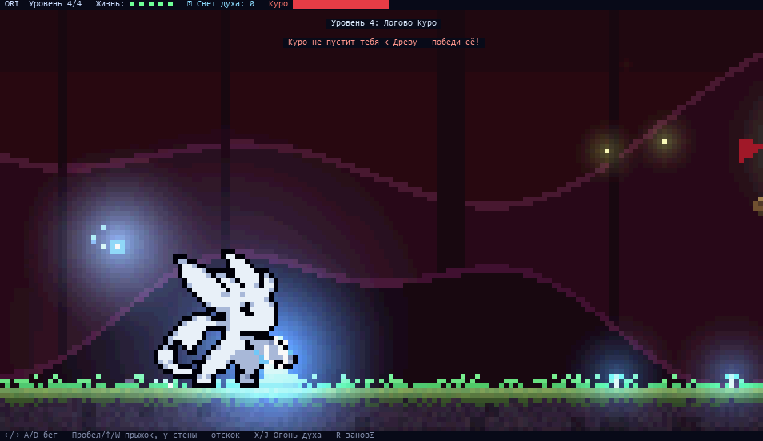
Рис. 27.2. Логово Куро: название уровня и предупреждение
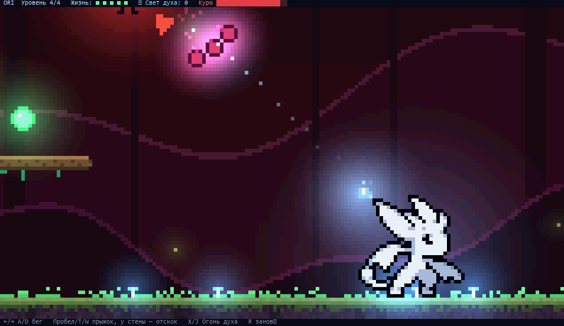
Рис. 27.3. Бой с Куро: вверху её полоска здоровья, в Ори летят тёмные сгустки
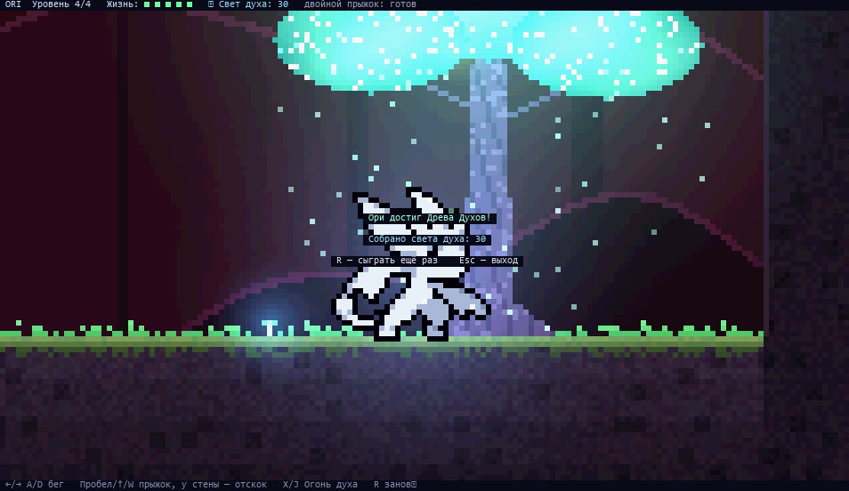
Рис. 27.4. Куро побеждена, печать открыта — Ори у Древа Духов
ФишкаАвтопилот
Раз ввод, правила и рисование у нас разделены, в игру может играть не только человек. Эта программа устроена как main.cpp игры — тот же цикл с потоком вывода из главы 24, — только вместо чтения клавиатуры функция autopilot сама заполняет Input по простым правилам: бежать вправо, прыгать перед стеной и ямой, в воздухе добавлять двойной прыжок, всё время стрелять Огнём духа. Ни один модуль игры при этом не меняется.
Листинг 27.37. Игра играет сама 27-autopilot.cpp
// Фишка главы 27: автопилот. Программа играет в нашу игру сама: вместо клавиатуры// заполняет Input по простым правилам. Остальные модули игры не меняются вовсе —// это и есть польза от того, что ввод, правила и рисование разделены.// Сборка из папки игры (файл лежит в папке fishki):// g++ -O2 -std=c++17 -Wall -Wextra -I. fishki\27-autopilot.cpp boss.cpp camera.cpp console.cpp effects.cpp enemies.cpp game.cpp hud.cpp input.cpp items.cpp levels.cpp mathx.cpp physics.cpp player.cpp render.cpp screen.cpp shots.cpp sprites.cpp wall_jump.cpp world.cpp -o autopilot.exe#define WIN32_LEAN_AND_MEAN#define NOMINMAX#include <windows.h>#include <cstdio>#include "console.h"#include "game.h"#include "input.h"#include "physics.h"#include "render.h"#include "screen.h"// Нажать или отпустить «виртуальную клавишу»: pressed — только в первый кадр нажатияstaticvoid setKey(Key& k, bool down) { k.pressed = down && !k.held; k.held = down;}// Правила автопилота: бежать вправо, прыгать перед стеной и ямой,// в воздухе добавлять двойной прыжок, всё время стрелять Огнём духаstaticvoid autopilot(constGame& g, Input& in) {constBody& b = g.player.body;float ahead = b.x + b.w + 4;bool wallAhead = rectSolid(g.world, ahead, b.y, 4, b.h - 2.0f);// Яма — это пустота или колючки под следующим шагомbool pitAhead = !rectSolid(g.world, ahead, b.y + b.h + 1, 4, 24) || rectTouchesTile(g.world, ahead, b.y + b.h + 1, 4, 24, '^');bool jump;if (b.onGround) { jump = (wallAhead || pitAhead) && !in.jump.held; // отпустили — можно нажать снова } elseif (b.vy < 0) { jump = in.jump.held; // держим, пока летим вверх: прыжок выше } else { jump = pitAhead && g.player.canDoubleJump && !in.jump.held; // падаем над ямой — второй прыжок } setKey(in.right, true); setKey(in.left, false); setKey(in.jump, jump); setKey(in.attack, (int)(g.time * 10) % 4 == 0); setKey(in.confirm, g.state != STATE_PLAY); // заставку и «уровень пройден» пролистываем}int main() { consoleInit(); screenFitToConsole();staticGame game; startNewGame(game);if (!consoleStartWriter()) { consoleRestore(); fprintf(stderr, "Cannot create console output thread.\n");return1; } // кадры уходят в консоль отдельным потоком, как в игре (глава 24)Input input = {};constfloat DT = 0.025f;while (!keyDown(VK_ESCAPE) && game.state != STATE_WIN) {if (!consoleWriterBusy()) screenFitToConsole(); autopilot(game, input); game.player.hp = MAX_HP; // автопилот бессмертен: правила у него простые updateGame(game, input, DT);if (!consoleWriterBusy()) { // новый кадр — только когда предыдущий ушёл в консоль renderGame(game); textAdd(LINE_BOTTOM, " [АВТОПИЛОТ]", rgb(255, 220, 120)); screenPresent(); } Sleep(25); } consoleStopWriter(); consoleRestore();return0;}
Создайте в папке игры папку fishki и сохраните программу туда как fishki\27-autopilot.cpp. Собирается она из папки игры вместе со всеми модулями игры, кроме main.cpp: у программы может быть только одна функция main, и здесь она своя. Команда длинная — скопируйте её кнопкой:
Правила у автопилота очень простые, поэтому проходит он не всё. Посмотрите, где он застрянет, и подумайте, почему. Такие боты используют и настоящие разработчики: бот проходит уровни после каждого изменения и сразу показывает, если уровень стал непроходимым.
Весь код шага 27Сверьтесь с готовой программой
Все 43 файла игры после этой главы — целиком. Откройте файл, чтобы сравнить со своим, а кнопка «Копировать» поможет, если нужно догнать: вставьте код в файл с тем же именем в папке игры.
// ============================================================================// camera.cpp — камера следует за Ори и не выходит за края уровня// ============================================================================#include <cmath>#include "boss.h"#include "camera.h"#include "config.h"#include "game.h"#include "mathx.h"// Не даём камере заглянуть за края уровняstaticvoid clampCamera(Game& g) {Camera& cam = g.camera;float maxX = (float)(g.world.width * TILE - screenWidth());float maxY = (float)(MAP_H * TILE - screenHeight()); cam.x = clampf(cam.x, 0, fmaxf(maxX, 0));// сверху камера может заглянуть выше карты — иначе Ори пропадёт из кадра в высоком прыжке cam.y = maxY < 0 ? maxY : clampf(cam.y, -12.0f * TILE, maxY);}// Целые координаты камеры для рисованияstaticvoid updateView(Camera& cam) { cam.viewX = (int)floorf(cam.x); cam.viewY = (int)floorf(cam.y);if (cam.shake > 0) { // тряска: сдвигаем картинку на пару пикселей в случайную сторону cam.viewX += (int)randomRange(-2, 2); cam.viewY += (int)randomRange(-2, 2); }}void drawDisc(constCamera& cam, int cx, int cy, int radius, Color c) {for (int y = -radius; y <= radius; y++) {for (int x = -radius; x <= radius; x++) {if (x * x + y * y <= radius * radius + radius) putWorldPixel(cam, cx + x, cy + y, c); } }}void centerCamera(Game& g) {constBody& b = g.player.body; g.camera.x = b.x + b.w / 2.0f - screenWidth() / 2.0f; g.camera.y = b.y + b.h / 2.0f - screenHeight() / 2.0f; g.camera.shake = 0; clampCamera(g); updateView(g.camera);}void updateCamera(Game& g, float dt) {Camera& cam = g.camera;constBody& b = g.player.body;// Цель: Ори в центре экрана, чуть сдвинутый назад — видно, что впередиfloat targetX = b.x + b.w / 2.0f - screenWidth() / 2.0f + g.player.facing * 18;float targetY = b.y + b.h / 2.0f - screenHeight() * 0.55f;constEnemy* boss = findBoss(g);if (boss != nullptr) {// В бою смотрим на середину между Ори и Куро, но Ори всегда в кадреconstBody& k = boss->body; targetX = (b.x + b.w / 2.0f + k.x + k.w / 2.0f) / 2 - screenWidth() / 2.0f; targetY = (b.y + b.h / 2.0f + k.y + k.h / 2.0f) / 2 - screenHeight() / 2.0f; targetX = clampf(targetX, b.x + b.w + 24 - screenWidth(), b.x - 24); targetY = clampf(targetY, b.y + b.h + 6 - screenHeight(), b.y - 6); }// Каждый кадр проходим часть пути до цели — камера движется плавно cam.x = lerpf(cam.x, targetX, clampf(dt * 5, 0, 1)); cam.y = lerpf(cam.y, targetY, clampf(dt * 5, 0, 1));// Камера плавная, но Ори никогда не уходит за верх или низ кадра cam.y = clampf(cam.y, b.y + b.h + 4 - screenHeight(), b.y - 10); clampCamera(g);if (cam.shake > 0) cam.shake -= dt; updateView(cam);}
camera.h26 строкcamera.h
// ============================================================================// camera.h — какая часть мира видна на экране, рисование в координатах мира// ============================================================================#pragma once#include "color.h"#include "screen.h"structGame; // описана в game.h — здесь достаточно знать, что такая структура естьstructCamera {float x, y; // левый верхний угол экрана в миреfloat shake; // сколько ещё секунд трясти экранint viewX, viewY; // то же целыми числами (с тряской) — по ним рисуем};// Поставить пиксель по координатам мира: экран = мир − камераinlinevoid putWorldPixel(constCamera& cam, int wx, int wy, Color c) { putPixel(wx - cam.viewX, wy - cam.viewY, c);}// Закрашенный круг в координатах мираvoid drawDisc(constCamera& cam, int cx, int cy, int radius, Color c);void centerCamera(Game& g); // сразу поставить Ори в центр экранаvoid updateCamera(Game& g, float dt); // камера плавно догоняет Ори
color.h34 строкиcolor.h
// ============================================================================// color.h — цвет пикселя. Цвет хранится в одном числе 0xRRGGBB:// по два шестнадцатеричных разряда на красный, зелёный и синий.// ============================================================================#pragma oncetypedefunsignedintColor;// Ограничить канал диапазоном 0..255inlineint clampChannel(int value) {return value < 0 ? 0 : (value > 255 ? 255 : value);}// Собрать цвет из красного, зелёного и синего (каждый 0..255)inlineColor rgb(int r, int g, int b) {return (Color)(clampChannel(r) << 16 | clampChannel(g) << 8 | clampChannel(b));}// Достать каналы обратноinlineint colorR(Color c) { return (c >> 16) & 255; }inlineint colorG(Color c) { return (c >> 8) & 255; }inlineint colorB(Color c) { return c & 255; }// Смешать два цвета: t = 0 — первый цвет, t = 1 — второйinlineColor mixColor(Color a, Color b, float t) {return rgb((int)(colorR(a) + (colorR(b) - colorR(a)) * t), (int)(colorG(a) + (colorG(b) - colorG(a)) * t), (int)(colorB(a) + (colorB(b) - colorB(a)) * t));}// Изменить яркость: k = 0.5 — вдвое темнее, k = 2 — вдвое ярчеinlineColor scaleColor(Color c, float k) {return rgb((int)(colorR(c) * k), (int)(colorG(c) * k), (int)(colorB(c) * k));}
config.h41 строкаconfig.h
// ============================================================================// config.h — настройки игры. Все важные числа собраны здесь,// чтобы их было легко найти и поменять.// ============================================================================#pragma once// Картинкаconstint MAX_SCREEN_W = 320; // наибольшая ширина картинки в пикселяхconstint MAX_SCREEN_H = 200; // наибольшая высота картинки в пикселях// Мирconstint TILE = 8; // сторона тайла в пикселяхconstint MAP_H = 22; // высота уровня в тайлахconstint MAX_MAP_W = 160; // ширина самого широкого уровня в тайлах// Движениеconstfloat RUN_SPEED = 95.0f; // скорость бега, пикселей в секундуconstfloat RUN_ACCEL_GROUND = 900.0f; // разгон и торможение на землеconstfloat RUN_ACCEL_AIR = 600.0f; // в воздухе разгоняться труднееconstfloat GRAVITY = 900.0f; // насколько быстро растёт скорость паденияconstfloat JUMP_SPEED = 320.0f; // скорость в начале прыжкаconstfloat MAX_FALL_SPEED = 360.0f; // быстрее падать нельзяconstfloat DOUBLE_JUMP_SPEED = 280.0f; // второй прыжок в воздухе чуть слабееconstfloat COYOTE_TIME = 0.10f; // сколько секунд можно прыгнуть после схода с краяconstfloat JUMP_BUFFER_TIME = 0.12f; // сколько секунд помнится раннее нажатие прыжка// Ориconstint PLAYER_W = 16; // ширина хитбоксаconstint PLAYER_H = 24; // высота хитбоксаconstint MAX_HP = 5; // сколько жизней может быть// Сколько объектов может существовать одновременноconstint MAX_PARTICLES = 800;constint MAX_LIGHTS = 160;constint MAX_PICKUPS = 80;constint MAX_CHECKPOINTS = 10;constint MAX_ENEMIES = 40;constint MAX_SHOTS = 32;// Боссconstint BOSS_HP = 40;
console.cpp240 строкconsole.cpp
// ============================================================================// console.cpp — всё, что связано с Windows-консолью, собрано в одном файле// ============================================================================#define WIN32_LEAN_AND_MEAN#define NOMINMAX#include <windows.h>#include <cstring>#include <atomic>#include <cstdio>#include <cstdlib>#include "console.h"// Как была настроена консоль до запуска игрыstaticDWORD originalOutMode = 0;staticDWORD originalInMode = 0;staticUINT originalCodePage = 0;// Застрял ли какой-нибудь наш поток в записи в консоль, которую так и не удалось отменитьstatic std::atomic<bool> threadStuck(false);static std::atomic<bool> shutdownStarted(false);static std::atomic<bool> writerBusy(false);static std::atomic<bool> writerQuit(false);static std::atomic<bool> writerAccepting(false);static std::atomic<bool> writerFailed(false);static std::atomic<bool> writerStopping(false);static std::atomic<bool> writerStopped(true);staticHANDLE writerThread = NULL;// Ctrl+C или закрытие: consoleRestore сначала останавливает writer.// Обработчик делает ограниченную по времени попытку уборки, затем Windows завершает процесс.staticBOOL WINAPI onConsoleEvent(DWORD) { consoleRestore();return FALSE;}bool relaunchInOwnWindow(int argc, char** argv) {for (int i = 1; i < argc; i++) {if (strcmp(argv[i], "--here") == 0) {returnfalse; } }constchar* terminal = getenv("TERM_PROGRAM");if (terminal == NULL || strcmp(terminal, "vscode") != 0) {returnfalse; }char exePath[MAX_PATH];char command[MAX_PATH + 16]; GetModuleFileNameA(NULL, exePath, MAX_PATH); snprintf(command, sizeof(command), "\"%s\" --here", exePath); STARTUPINFOA startup; PROCESS_INFORMATION process; memset(&startup, 0, sizeof(startup)); startup.cb = sizeof(startup);if (!CreateProcessA(NULL, command, NULL, NULL, FALSE, CREATE_NEW_CONSOLE, NULL, NULL, &startup, &process)) {returnfalse; } CloseHandle(process.hThread); CloseHandle(process.hProcess); printf("Игра открыта в отдельном окне консоли (терминал VS Code для неё слишком медленный).\n""Чтобы всё же запустить здесь: ori.exe --here\n");returntrue;}void consoleInit() {HANDLE out = GetStdHandle(STD_OUTPUT_HANDLE);HANDLE in = GetStdHandle(STD_INPUT_HANDLE); GetConsoleMode(out, &originalOutMode); GetConsoleMode(in, &originalInMode); originalCodePage = GetConsoleOutputCP(); SetConsoleMode(out, originalOutMode | ENABLE_PROCESSED_OUTPUT | ENABLE_VIRTUAL_TERMINAL_PROCESSING); SetConsoleMode(in, ENABLE_EXTENDED_FLAGS); // выключить выделение мышью: оно ставит вывод на паузу SetConsoleOutputCP(CP_UTF8); SetConsoleCtrlHandler(onConsoleEvent, TRUE); SetConsoleTitleA("Ori");// Чем больше окно, тем больше видно уровня. Разворачиваем только настоящее// окно консоли — у него класс "ConsoleWindowClass". В Windows Terminal и VS Code// GetConsoleWindow возвращает служебное окно терминала («Console Window and PTY»):// развёрнутое, оно невидимой плёнкой закрывает весь экран и не даёт ни нажать// на окна под ним, ни закрыть терминал. HWND window = GetConsoleWindow();char windowClass[64] = "";if (window != NULL) { GetClassNameA(window, windowClass, sizeof(windowClass)); }if (strcmp(windowClass, "ConsoleWindowClass") == 0) { ShowWindow(window, SW_MAXIMIZE); }// Отдельный экран, спрятать курсор, очистить экранconstchar* start = "\x1b[?1049h\x1b[?25l\x1b[2J"; consoleWrite(start, (int)strlen(start));}// Сама работа по восстановлению консоли — её выполняет отдельный потокstaticDWORD WINAPI restoreWork(LPVOID) {// Обычные цвета, показать курсор, вернуться на основной экранconstchar* finish = "\x1b[0m\x1b[?25h\x1b[?1049l"; consoleWrite(finish, (int)strlen(finish)); consoleFlushInput(); SetConsoleMode(GetStdHandle(STD_OUTPUT_HANDLE), originalOutMode); SetConsoleMode(GetStdHandle(STD_INPUT_HANDLE), originalInMode); SetConsoleOutputCP(originalCodePage);return0;}// Вернуть консоль в порядок. Если терминал завис и не принимает вывод,// запись тоже зависнет — поэтому её делает отдельный поток, а мы ждём// ограниченное время; отмена записи и восстановление могут не удаться.void consoleRestore() {if (shutdownStarted.exchange(true)) return; // только один поток выполняет уборку consoleStopWriter(); // прежде чем восстанавливать экранif (threadStuck) {// Запись не удалось остановить: нельзя писать в консоль параллельно с ней.// Это аварийный выход; успешное восстановление экрана здесь не обещаем. TerminateProcess(GetCurrentProcess(), 1);return; }HANDLE worker = CreateThread(NULL, 0, restoreWork, NULL, 0, NULL);if (worker == NULL) return; // восстановление не удалось запуститьDWORD status = WaitForSingleObject(worker, 500);for (int i = 0; status == WAIT_TIMEOUT && i < 50; i++) { CancelSynchronousIo(worker); // запрос отмены, а не гарантия завершения status = WaitForSingleObject(worker, 10); } CloseHandle(worker);if (status != WAIT_OBJECT_0) { threadStuck = true; TerminateProcess(GetCurrentProcess(), 1); // восстановление могло остаться незавершённым }}bool consoleSize(int& cols, int& rows) { CONSOLE_SCREEN_BUFFER_INFO info;if (!GetConsoleScreenBufferInfo(GetStdHandle(STD_OUTPUT_HANDLE), &info)) {returnfalse; } cols = info.srWindow.Right - info.srWindow.Left + 1; rows = info.srWindow.Bottom - info.srWindow.Top + 1;returntrue;}void consoleFlushInput() { FlushConsoleInputBuffer(GetStdHandle(STD_INPUT_HANDLE));}bool keyDown(int virtualKey) {return (GetAsyncKeyState(virtualKey) & 0x8000) != 0;}bool consoleWrite(constchar* data, int length) {if (length < 0) returnfalse;int sent = 0;while (sent < length) {// После запроса остановки writer не начинает следующую часть записи.if (writerQuit && writerBusy) returnfalse;DWORD written = 0;DWORD remaining = (DWORD)(length - sent);if (!WriteFile(GetStdHandle(STD_OUTPUT_HANDLE), data + sent, remaining, &written, NULL) || written == 0 || written > remaining) returnfalse; sent += (int)written; }returntrue;}// ---------------------------------------------------------------------------// Поток вывода. Основной поток кладёт кадр в sendBuffer и поднимает флаг// writerBusy, а этот поток отправляет кадр в консоль и опускает флаг.// ---------------------------------------------------------------------------staticchar sendBuffer[4 * 1024 * 1024];staticint sendLength = 0;staticDWORD WINAPI writerLoop(LPVOID) {while (!writerQuit) {if (!writerBusy) { Sleep(1);continue; }bool sent = consoleWrite(sendBuffer, sendLength);if (!sent) writerFailed = true; writerBusy = false; }return0;}bool consoleStartWriter() {if (shutdownStarted) returnfalse; writerQuit = false; writerFailed = false; writerBusy = false; writerStopping = false; writerStopped = false; writerThread = CreateThread(NULL, 0, writerLoop, NULL, 0, NULL); writerAccepting = writerThread != NULL;if (!writerAccepting) writerStopped = true;return writerAccepting;}bool consoleWriterBusy() {return writerBusy || !writerAccepting;}bool consoleTakeWriteFailure() {return writerFailed.exchange(false); // основной поток забирает сообщение об ошибке}bool consoleSubmit(constchar* data, int length) {if (!writerAccepting || shutdownStarted || writerBusy || length <= 0 || length > (int)sizeof(sendBuffer)) returnfalse; memcpy(sendBuffer, data, length); sendLength = length; writerBusy = true;returntrue;}void consoleStopWriter() { writerAccepting = false; // новые кадры больше не принимаемif (writerStopping.exchange(true)) {// main и обработчик закрытия могли прийти сюда одновременно.for (int i = 0; i < 100 && !writerStopped; i++) Sleep(10);if (!writerStopped) threadStuck = true;return; }if (writerThread != NULL) {for (int i = 0; i < 25 && writerBusy; i++) Sleep(10); // короткая попытка дописать кадр writerQuit = true;DWORD status = WaitForSingleObject(writerThread, 10);for (int i = 0; status == WAIT_TIMEOUT && i < 50; i++) { CancelSynchronousIo(writerThread); status = WaitForSingleObject(writerThread, 10); }if (status != WAIT_OBJECT_0) threadStuck = true; CloseHandle(writerThread); writerThread = NULL; } writerStopped = true;}
console.h24 строкиconsole.h
// ============================================================================// console.h — окно консоли Windows: настройка, размер, клавиши, вывод// ============================================================================#pragma once// Если игру запустили из терминала VS Code, открыть её в отдельном окне.// Возвращает true, если игра перезапущена и эту копию нужно закрыть.bool relaunchInOwnWindow(int argc, char** argv);void consoleInit(); // включить цвета и UTF-8, перейти на отдельный экранvoid consoleRestore(); // вернуть консоль в исходное состояниеbool consoleSize(int& cols, int& rows); // видимый размер окна в символахvoid consoleFlushInput(); // выбросить накопившиеся нажатия клавишbool keyDown(int virtualKey); // зажата ли клавиша прямо сейчас// Полностью записать данные; false — ошибка или неполная записьbool consoleWrite(constchar* data, int length);// Вывод в отдельном потоке: игра не ждёт медленный терминалbool consoleStartWriter(); // false — поток не создан, игру запускать нельзяvoid consoleStopWriter();bool consoleTakeWriteFailure(); // сбой вывода: следующий кадр рисуем целикомbool consoleWriterBusy(); // предыдущий кадр ещё отправляетсяbool consoleSubmit(constchar* data, int length); // false — кадр не принят
// ============================================================================// effects.cpp — пулы частиц и источников света// ============================================================================#include <algorithm>#include <cmath>#include <cstring>#include "config.h"#include "effects.h"#include "mathx.h"struct Particle {float x, y, vx, vy;float life, maxLife; // сколько осталось жить и сколько жила бы всегоColor color;bool gravity; // падает ли вниз};struct Light {float x, y, radius;Color color;float power;};// Пулы: частица с life <= 0 — свободное местоstatic Particle particles[MAX_PARTICLES];static Light lights[MAX_LIGHTS];staticint lightCount = 0;void clearParticles() { memset(particles, 0, sizeof(particles));}void spawnParticle(float x, float y, float vx, float vy, float life, Color color, bool gravity) {for (int i = 0; i < MAX_PARTICLES; i++) {if (particles[i].life <= 0) { particles[i] = { x, y, vx, vy, life, life, color, gravity };return; } }}void burst(float x, float y, int count, Color color, float speed, float life, bool gravity) {for (int i = 0; i < count; i++) {float angle = randomRange(0, 6.2832f);float s = randomRange(speed * 0.3f, speed); spawnParticle(x, y, cosf(angle) * s, sinf(angle) * s, randomRange(life * 0.5f, life), color, gravity); }}void updateParticles(float dt) {for (int i = 0; i < MAX_PARTICLES; i++) { Particle& p = particles[i];if (p.life <= 0) continue; p.life -= dt;if (p.gravity) p.vy += GRAVITY * 0.5f * dt; p.vx *= 1.0f - 1.5f * dt; // сопротивление воздуха p.vy *= 1.0f - 1.5f * dt; p.x += p.vx * dt; p.y += p.vy * dt; }}void drawParticles(constCamera& cam) {for (int i = 0; i < MAX_PARTICLES; i++) {const Particle& p = particles[i];if (p.life <= 0) continue;float strength = clampf(p.life / p.maxLife, 0, 1); // гаснет к концу жизни addPixel((int)roundf(p.x) - cam.viewX, (int)roundf(p.y) - cam.viewY, p.color, strength); }}void clearLights() { lightCount = 0;}void addLight(float x, float y, float radius, Color color, float power) {if (lightCount < MAX_LIGHTS) { lights[lightCount] = { x, y, radius, color, power }; lightCount++; }}void applyLights(constCamera& cam) {for (int i = 0; i < lightCount; i++) {const Light& light = lights[i];int cx = (int)light.x - cam.viewX;int cy = (int)light.y - cam.viewY;int r = (int)light.radius;// Проходим только по квадрату вокруг источника и только по видимой частиint x0 = std::max(0, cx - r), x1 = std::min(screenWidth() - 1, cx + r);int y0 = std::max(0, cy - r), y1 = std::min(screenHeight() - 1, cy + r);for (int y = y0; y <= y1; y++) {for (int x = x0; x <= x1; x++) {float dx = (float)(x - cx), dy = (float)(y - cy);float d = sqrtf(dx * dx + dy * dy) / light.radius; // 0 в центре, 1 на краюif (d >= 1) continue; addPixel(x, y, light.color, (1 - d) * (1 - d) * light.power); } } }}
effects.h19 строкeffects.h
// ============================================================================// effects.h — частицы (искры, пыль) и свет// ============================================================================#pragma once#include "camera.h"#include "color.h"// Частицы: живут несколько долей секунды и гаснутvoid clearParticles();void spawnParticle(float x, float y, float vx, float vy, float life, Color color, bool gravity);void burst(float x, float y, int count, Color color, float speed, float life, bool gravity);void updateParticles(float dt);void drawParticles(constCamera& cam);// Свет: источники собираются заново в каждом кадре, потом накладываются на картинкуvoid clearLights();void addLight(float x, float y, float radius, Color color, float power);void applyLights(constCamera& cam);
enemies.cpp222 строкиenemies.cpp
// ============================================================================// enemies.cpp — поведение и отрисовка врагов// ============================================================================#include <cmath>#include <cstring>#include "boss.h"#include "effects.h"#include "enemies.h"#include "game.h"#include "mathx.h"#include "sprites.h"// Слизень: два кадра — обычный и «сплющенный»staticconstchar* SLIME_FRAME_1[] = {"....kkkk....","..kkrrrrkk..",".krrhhrrrrk.",".krhrrrrrrk.","krryyrryyrrk","krrykrrykrrk","krrrrrrrrrrk","kpprrrrrrppk",".kkkkkkkkkk.",};staticconstchar* SLIME_FRAME_2[] = {"............","..kkrrrrkk..",".krrhhrrrrk.",".krhrrrrrrk.","krryyrryyrrk","krrykrrykrrk","krrrrrrrrrrk","kpprrrrrrppk",".kkkkkkkkkk.",};staticconstchar SLIME_KEYS[] = "krphy";staticconstColor SLIME_COLORS[] = { rgb(42, 8, 32), rgb(194, 60, 100), rgb(126, 32, 72), rgb(255, 154, 180), rgb(255, 224, 112) };staticconst Sprite SLIME_SPRITES[2] = { { 12, 9, SLIME_FRAME_1, SLIME_KEYS, SLIME_COLORS }, { 12, 9, SLIME_FRAME_2, SLIME_KEYS, SLIME_COLORS },};// Летучая мышь: крылья вверх и крылья внизstaticconstchar* BAT_FRAME_1[] = {"l............l","ll...kkkk...ll","lll.kbbbbk.lll",".lllbebbeblll.","..llbbbbbbll..","....kbbbbk....",".....k..k.....","..............",};staticconstchar* BAT_FRAME_2[] = {"..............",".....kkkk.....","....kbbbbk....","..llbebbebll..",".lllbbbbbblll.","lll.kbbbbk.lll","ll...k..k...ll","l............l",};staticconstchar BAT_KEYS[] = "kble";staticconstColor BAT_COLORS[] = { rgb(10, 10, 26), rgb(60, 50, 112), rgb(106, 79, 166), rgb(255, 122, 40) };staticconst Sprite BAT_SPRITES[2] = { { 14, 8, BAT_FRAME_1, BAT_KEYS, BAT_COLORS }, { 14, 8, BAT_FRAME_2, BAT_KEYS, BAT_COLORS },};void spawnEnemy(Game& g, EnemyType type, float x, float y) {if (g.enemyCount >= MAX_ENEMIES) return;Enemy& e = g.enemies[g.enemyCount]; memset(&e, 0, sizeof(e)); e.type = type; e.alive = true; e.dir = -1; e.time = randomRange(0, 6.28f); // чтобы враги двигались не в тактif (type == ENEMY_SLIME) { e.hp = 3; e.body = makeBody(x - 2, y + TILE - 9, 12, 9); // ногами на дно клетки } elseif (type == ENEMY_BAT) { e.hp = 2; e.body = makeBody(x - 3, y, 14, 8); } else { initBoss(e, x, y); } e.homeX = e.body.x; e.homeY = e.body.y; g.enemyCount++;}// Слизень ползёт и разворачивается у стены и на краю обрываstaticvoid updateSlime(Game& g, Enemy& e, float dt) {Body& b = e.body;if (e.knockTime <= 0) b.vx = e.dir * 22.0f; b.vy = fminf(b.vy + GRAVITY * dt, MAX_FALL_SPEED); moveBody(g.world, b, dt);if (e.knockTime <= 0) {if (b.hitWall) e.dir = -e.dir;// Тайл чуть впереди и чуть ниже ног: если он не твёрдый — впереди обрывint frontX = (int)floorf((e.dir > 0 ? b.x + b.w + 1 : b.x - 1) / TILE);int belowY = (int)floorf((b.y + b.h + 1) / TILE);if (b.onGround && !isSolidTile(tileAt(g.world, frontX, belowY))) e.dir = -e.dir; }if (b.y > MAP_H * TILE + 40) e.alive = false; // упал в пропасть}// Летучая мышь: рядом с Ори — летит к нему, иначе кружит у гнездаstaticvoid updateBat(Game& g, Enemy& e, float dt) {Body& b = e.body;constBody& player = g.player.body;float dx = (player.x + player.w / 2.0f) - (b.x + b.w / 2.0f);float dy = (player.y + player.h / 2.0f) - (b.y + b.h / 2.0f);float distance = sqrtf(dx * dx + dy * dy);float ax, ay; // ускорениеif (distance < 110 && g.state == STATE_PLAY) {// Направление на Ори длиной 1, умноженное на силу разгона, и волнистость полёта ax = dx / fmaxf(distance, 1.0f) * 120; ay = dy / fmaxf(distance, 1.0f) * 120 + sinf(e.time * 6) * 80; e.dir = dx > 0 ? 1 : -1; } else {// Тянемся к точке, которая плавает вокруг гнезда ax = (e.homeX + sinf(e.time * 0.9f) * 24 - b.x) * 2; ay = (e.homeY + sinf(e.time * 2.1f) * 6 - b.y) * 2; }if (e.knockTime <= 0) { b.vx += ax * dt; b.vy += ay * dt;float speed = sqrtf(b.vx * b.vx + b.vy * b.vy);if (speed > 48) { // не быстрее 48 пикселей в секунду b.vx *= 48 / speed; b.vy *= 48 / speed; } } b.vx *= 1.0f - 0.8f * dt; b.vy *= 1.0f - 0.8f * dt; b.x += b.vx * dt; // мыши летают сквозь стены b.y += b.vy * dt;}// Касание с Ори: прыжок сверху ранит врага, иначе ранен Ориstaticvoid checkContact(Game& g, Enemy& e, float dt) {Body& player = g.player.body;constBody& b = e.body;if (g.state != STATE_PLAY) return;if (!rectsOverlap(player.x, player.y, player.w, player.h, b.x, b.y, b.w, b.h)) return;// Ори падает, и кадр назад его ноги были выше врага — значит, прилетел сверхуfloat feetBefore = player.y + player.h - player.vy * dt;bool stomp = player.vy > 40 && feetBefore <= b.y + 4;if (stomp) { hitEnemy(g, e, 2, player.x + 8 < b.x + b.w / 2.0f ? 1.0f : -1.0f); player.y = b.y - player.h; // ставим Ори на врага: в следующем кадре они уже не касаются player.vy = -250; g.player.canDoubleJump = true; } else { hurtPlayer(g, b.x + b.w / 2.0f, -180); }}void updateEnemies(Game& g, float dt) {for (int i = 0; i < g.enemyCount; i++) {Enemy& e = g.enemies[i];if (!e.alive) continue; e.time += dt;if (e.hurtTime > 0) e.hurtTime -= dt;if (e.knockTime > 0) e.knockTime -= dt;if (e.type == ENEMY_SLIME) { updateSlime(g, e, dt); } elseif (e.type == ENEMY_BAT) { updateBat(g, e, dt); } else { updateBoss(g, e, dt); } checkContact(g, e, dt); }}void hitEnemy(Game& g, Enemy& e, int damage, float pushDir) {Body& b = e.body; e.hp -= damage; e.hurtTime = 0.15f;float cx = b.x + b.w / 2.0f, cy = b.y + b.h / 2.0f; burst(cx, cy, 10, rgb(255, 200, 230), 80, 0.35f, false);if (e.type == ENEMY_BOSS) { // босс слишком тяжёлый, чтобы отлетатьif (e.hp <= 0) defeatBoss(g, e);return; } e.knockTime = 0.2f; b.vx = pushDir * 90; b.vy = (e.type == ENEMY_SLIME) ? -120.0f : -40.0f;if (e.hp <= 0) { e.alive = false;Color body = (e.type == ENEMY_SLIME) ? rgb(220, 60, 110) : rgb(130, 90, 200); burst(cx, cy, 30, body, 110, 0.7f, true); burst(cx, cy, 12, rgb(160, 240, 255), 60, 1.0f, false); g.player.spiritLight += 3; }}void drawEnemies(constGame& g) {for (int i = 0; i < g.enemyCount; i++) {constEnemy& e = g.enemies[i];if (!e.alive) continue;int x = (int)roundf(e.body.x);int y = (int)roundf(e.body.y);bool flip = e.dir > 0; // на картинках враги смотрят влевоbool flash = e.hurtTime > 0; // после удара — белая вспышкаif (e.type == ENEMY_SLIME) {int frame = ((int)(e.time * 6)) % 2; drawSprite(g.camera, SLIME_SPRITES[frame], x, y, flip, flash); } elseif (e.type == ENEMY_BAT) {int frame = ((int)(e.time * 8)) % 2; drawSprite(g.camera, BAT_SPRITES[frame], x, y, flip, flash); } else { drawBoss(g, e); } }}
enemies.h42 строкиenemies.h
// ============================================================================// enemies.h — враги: слизни, летучие мыши (и босс)// ============================================================================#pragma once#include "physics.h"structGame;enum EnemyType { ENEMY_SLIME, // ползает по платформе ENEMY_BAT, // летает и преследует Ори ENEMY_BOSS, // Куро};// Что сейчас делает боссenum BossMode { BOSS_HOVER, // парит и стреляет BOSS_WINDUP, // замах перед пикированием BOSS_DIVE, // пикирует на Ори BOSS_RETURN, // возвращается наверх};structEnemy { EnemyType type;Body body;int hp;int dir; // куда смотрит или ползёт: -1 или 1float hurtTime; // сколько ещё мигать после удараfloat knockTime; // сколько ещё лететь от удараfloat time; // собственное время врага — для анимацииfloat homeX, homeY; // где враг появился (гнездо летучей мыши) BossMode mode;float modeTimer; // сколько ещё длится режим боссаfloat shotTimer; // сколько осталось до выстрелаbool alive;};void spawnEnemy(Game& g, EnemyType type, float x, float y);void updateEnemies(Game& g, float dt);void hitEnemy(Game& g, Enemy& enemy, int damage, float pushDir); // pushDir — куда отбросить: -1 или 1void drawEnemies(constGame& g);
game.cpp174 строкиgame.cpp
// ============================================================================// game.cpp — загрузка уровней и правила игры: что обновлять в каждом кадре// ============================================================================#include <algorithm>#include <cmath>#include <cstring>#include "boss.h"#include "effects.h"#include "game.h"#include "input.h"#include "levels.h"// Символ карты — объект? Тогда создаём объект и возвращаем пробел.// Иначе это тайл (камень, бревно, шипы) — он остаётся в карте как есть.staticchar placeObject(Game& g, char symbol, float wx, float wy) {World& w = g.world;switch (symbol) {case'P': w.spawnX = wx; w.spawnY = wy + TILE - PLAYER_H; // ногами на дно клеткиreturn' ';case'o': addPickup(g, PICKUP_LIGHT, wx + 4, wy + 4);return' ';case'+': addPickup(g, PICKUP_HEALTH, wx + 4, wy + 4);return' ';case'C': addCheckpoint(g, wx + 4, wy + TILE);return' ';case'T': w.hasTree = true; w.treeX = wx + 4; w.treeY = wy + TILE;return' ';case'E': w.hasExit = true; w.exitX = wx + 4; w.exitY = wy + TILE;return' ';case'S': spawnEnemy(g, ENEMY_SLIME, wx, wy);return' ';case'B': spawnEnemy(g, ENEMY_BAT, wx, wy);return' ';case'K': spawnEnemy(g, ENEMY_BOSS, wx, wy);return' ';default:return symbol; }}void loadLevel(Game& g, int index) {const LevelInfo& level = levelInfo(index);World& w = g.world; g.levelIndex = index; g.pickupCount = 0; g.checkpointCount = 0; g.enemyCount = 0; clearShots(g); clearParticles(); w.hasTree = false; w.hasExit = false;// Ширина уровня — длина самой длинной строки карты w.width = 0;for (int ty = 0; ty < MAP_H; ty++) { w.width = std::max(w.width, (int)strlen(level.rows[ty])); } w.width = std::min(w.width, MAX_MAP_W);for (int ty = 0; ty < MAP_H; ty++) {int length = (int)strlen(level.rows[ty]);for (int tx = 0; tx < w.width; tx++) {char symbol = tx < length ? level.rows[ty][tx] : ' '; w.tiles[ty][tx] = placeObject(g, symbol, (float)(tx * TILE), (float)(ty * TILE)); } w.tiles[ty][w.width] = 0; // конец строки } placePlayer(g.player, w.spawnX, w.spawnY); g.lightAtLevelStart = g.player.spiritLight; g.levelBanner = 3; centerCamera(g);}void startNewGame(Game& g) { g.state = STATE_TITLE; g.player.spiritLight = 0; loadLevel(g, 0);}void restartLevel(Game& g) { g.player.spiritLight = g.lightAtLevelStart; // свет, собранный на этом уровне, не считается loadLevel(g, g.levelIndex);}// Врата на следующий уровень и Древо Духовstaticvoid checkGoals(Game& g) {constBody& b = g.player.body;constWorld& w = g.world;if (w.hasExit && g.state == STATE_PLAY && rectsOverlap(b.x, b.y, b.w, b.h, w.exitX - 5, w.exitY - 22, 10, 22)) { g.state = STATE_NEXT_LEVEL; g.nextLevelTimer = 1.8f; burst(w.exitX, w.exitY - 11, 60, rgb(170, 140, 255), 110, 1.2f, false); }// К Древу можно пройти только после победы над Куроif (w.hasTree && findBoss(g) == nullptr && g.state == STATE_PLAY && rectsOverlap(b.x, b.y, b.w, b.h, w.treeX - 6, w.treeY - 40, 12, 40)) { g.state = STATE_WIN; burst(w.treeX, w.treeY - 40, 80, rgb(160, 255, 220), 130, 1.5f, false); }}// Игра идёт: обновляем всё по очередиstaticvoid updatePlay(Game& g, constInput& in, float dt) {if (g.levelBanner > 0) g.levelBanner -= dt; updatePlayer(g, in, dt);if (g.state != STATE_PLAY) return; updateItems(g); checkGoals(g);if (g.state != STATE_PLAY) return; updateEnemies(g, dt);if (g.state != STATE_PLAY) return; updateShots(g, dt);}void updateGame(Game& g, constInput& in, float dt) { g.time += dt;if (in.restart.pressed && g.state != STATE_TITLE && g.state != STATE_NEXT_LEVEL) {if (g.state == STATE_WIN) { startNewGame(g); } else { restartLevel(g); } g.state = STATE_PLAY; }switch (g.state) {case STATE_TITLE:// Сейн кружит вокруг Ори, Enter или пробел начинает игру g.player.seinX = g.player.body.x + 8 + sinf(g.time) * 16; g.player.seinY = g.player.body.y - 6 + sinf(g.time * 2) * 4;if (in.confirm.pressed) g.state = STATE_PLAY;break;case STATE_PLAY: updatePlay(g, in, dt);break;case STATE_NEXT_LEVEL: g.nextLevelTimer -= dt;if (g.nextLevelTimer <= 0) { loadLevel(g, (g.levelIndex + 1) % levelCount()); g.state = STATE_PLAY; }break;case STATE_DEAD:if (in.confirm.pressed) { // Enter — возродиться у колодца с полными жизнями g.player.hp = MAX_HP; g.state = STATE_PLAY; respawnPlayer(g); } updateEnemies(g, dt);break;case STATE_WIN: updateEnemies(g, dt);break; } updateParticles(dt); updateCamera(g, dt);}
game.h48 строкgame.h
// ============================================================================// game.h — вся игра в одной структуре Game. Функции получают её по ссылке,// поэтому глобальные переменные не нужны.// ============================================================================#pragma once#include "config.h"#include "camera.h"#include "enemies.h"#include "items.h"#include "player.h"#include "shots.h"#include "world.h"structInput;// В каком состоянии игра: от него зависит, что делают клавиши и что видно на экранеenum GameState { STATE_TITLE, // заставка STATE_PLAY, // игра идёт STATE_DEAD, // Ори погиб STATE_NEXT_LEVEL, // уровень пройден, скоро следующий STATE_WIN, // победа};structGame { GameState state;float time; // сколько секунд идёт игра — для анимацийint levelIndex; // номер текущего уровня (с нуля)World world;Camera camera;Player player;int lightAtLevelStart; // сколько света было в начале уровня — для Rfloat levelBanner; // сколько ещё секунд показывать название уровняfloat nextLevelTimer; // пауза «уровень пройден» Pickup pickups[MAX_PICKUPS];int pickupCount; Checkpoint checkpoints[MAX_CHECKPOINTS];int checkpointCount;Enemy enemies[MAX_ENEMIES];int enemyCount; Shot shots[MAX_SHOTS];};void startNewGame(Game& g);void loadLevel(Game& g, int index);void restartLevel(Game& g);void updateGame(Game& g, constInput& in, float dt);
hud.cpp93 строкиhud.cpp
// ============================================================================// hud.cpp — жизни и счёт вверху, подсказка внизу, надписи заставки и финала// ============================================================================#include <cstdio>#include "boss.h"#include "game.h"#include "hud.h"#include "levels.h"#include "screen.h"constColor HUD_TEXT = rgb(200, 220, 255);constColor HINT_TEXT = rgb(130, 140, 170);// Верхняя строка: жизни, свет духа и подсказка про двойной прыжокstaticvoid drawTopLine(constGame& g) {constPlayer& p = g.player;char level[96]; snprintf(level, sizeof(level), " ORI Уровень %d/%d ", g.levelIndex + 1, levelCount()); textAdd(LINE_TOP, level, HUD_TEXT); textAdd(LINE_TOP, "Жизнь: ", HUD_TEXT);for (int i = 0; i < MAX_HP; i++) { textAdd(LINE_TOP, "■ ", i < p.hp ? rgb(110, 255, 150) : rgb(50, 60, 70)); } textAdd(LINE_TOP, " ◆ Свет духа: ", rgb(140, 220, 255)); textAddInt(LINE_TOP, p.spiritLight, rgb(140, 220, 255));constEnemy* boss = findBoss(g);if (boss != nullptr && screenWidth() >= 86) {// Полоска здоровья Куро: 20 клеток, красных — сколько здоровья осталось textAdd(LINE_TOP, " Куро ", rgb(255, 120, 110));constint CELLS = 20;int filled = (boss->hp * CELLS + BOSS_HP - 1) / BOSS_HP; // округляем вверхfor (int i = 0; i < CELLS; i++) { textAdd(LINE_TOP, "█", i < filled ? rgb(230, 60, 70) : rgb(60, 30, 40)); }return; }if (screenWidth() >= 80) { textAdd(LINE_TOP, p.canDoubleJump ? " двойной прыжок: готов" : " двойной прыжок: —", rgb(150, 160, 190)); }}// Нижняя строка — подсказка по управлению (короче, если окно узкое)staticvoid drawBottomLine() {int w = screenWidth();if (w >= 112) { textAdd(LINE_BOTTOM, " ←/→ A/D бег Пробел/↑/W прыжок, у стены — отскок X/J Огонь духа R заново Esc выход", HINT_TEXT); } elseif (w >= 52) { textAdd(LINE_BOTTOM, " ←/→ бег ↑ прыжок X огонь R заново Esc выход", HINT_TEXT); }}// Надписи поверх картинки — для каждого состояния игры своиstaticvoid drawOverlays(constGame& g) {int mid = screenHeight() / 4 - 1; // строка картинки чуть выше серединыchar text[96];switch (g.state) {case STATE_TITLE: textOverlay(mid - 2, "O R I", rgb(220, 240, 255)); textOverlay(mid, "и Слепой лес — консольная версия", rgb(150, 220, 255)); textOverlay(mid + 2, "Пройди 4 уровня, победи Куро и доберись до Древа Духов", rgb(140, 255, 200)); textOverlay(mid + 4, "Нажми Пробел или Enter", rgb(255, 230, 150));break;case STATE_DEAD: textOverlay(mid - 1, "Свет Ори угас...", rgb(255, 150, 170)); textOverlay(mid + 1, "Enter — у колодца духа R — уровень заново", rgb(220, 220, 240));break;case STATE_NEXT_LEVEL: textOverlay(mid, "Уровень пройден!", rgb(190, 170, 255));break;case STATE_WIN: textOverlay(mid - 2, "Ори достиг Древа Духов!", rgb(160, 255, 220)); snprintf(text, sizeof(text), "Собрано света духа: %d", g.player.spiritLight); textOverlay(mid, text, rgb(150, 220, 255)); textOverlay(mid + 2, "R — сыграть ещё раз Esc — выход", rgb(220, 220, 240));break;case STATE_PLAY:if (g.levelBanner > 0) { // в начале уровня — его название snprintf(text, sizeof(text), "Уровень %d: %s", g.levelIndex + 1, levelInfo(g.levelIndex).name); textOverlay(1, text, rgb(220, 235, 255));if (findBoss(g) != nullptr) textOverlay(3, "Куро не пустит тебя к Древу — победи её!", rgb(255, 150, 140)); } elseif (g.world.hasTree && findBoss(g) != nullptr && g.player.body.x + PLAYER_W > g.world.treeX - 70) { textOverlay(1, "Печать Куро держится, пока она жива", rgb(255, 150, 140)); }break; }}void drawHud(constGame& g) { drawTopLine(g); drawBottomLine(); drawOverlays(g);}
hud.h8 строкhud.h
// ============================================================================// hud.h — строки текста над и под картинкой и надписи поверх неё// ============================================================================#pragma oncestructGame;void drawHud(constGame& g);
// ============================================================================// input.h — какие кнопки управления нажаты// ============================================================================#pragma once// Одна кнопка управленияstructKey {bool held; // зажата сейчасbool pressed; // нажата именно в этом кадре (в прошлом кадре не была зажата)};structInput {Key left;Key right;Key jump;Key attack;Key restart;Key confirm;Key quit;};void readInput(Input& in);
// ============================================================================// items.h — предметы на уровне: свет духа, ячейки жизни, колодцы// ============================================================================#pragma oncestructGame;enum PickupType { PICKUP_LIGHT, // свет духа — очки PICKUP_HEALTH, // ячейка жизни};struct Pickup {float x, y; // центр предмета PickupType type;bool taken; // уже подобран};// Колодец духа — место, где Ори возродитсяstruct Checkpoint {float x, y; // середина основания колодцаbool active; // это последний колодец, которого коснулся Ори};void addPickup(Game& g, PickupType type, float x, float y);void addCheckpoint(Game& g, float x, float y);void updateItems(Game& g); // Ори подбирает предметы и зажигает колодцыvoid drawItems(constGame& g);
levels.cpp150 строкlevels.cpp
// ============================================================================// levels.cpp — карты уровней. Каждый символ — тайл 8 × 8 пикселей:// # — камень, = — бревно, ^ — шипы, P — старт Ори// o — свет духа, + — ячейка жизни, C — колодец (точка возрождения)// S — слизень, B — летучая мышь// K — Куро (босс), G — печать Куро (исчезает после победы)// T — Древо Духов (финиш игры)// E — врата духа (переход на следующий уровень)//// Чтобы добавить уровень: нарисуйте ещё один массив из MAP_H строк// и допишите его в таблицу LEVELS внизу файла.// ============================================================================#include "config.h"#include "levels.h"// Лес Нибельstaticconstchar* LEVEL1[MAP_H] = {"## ##################### ##","## ##################### ##","## ##################### ##","## ##################### B ##","## ##################### ##","## ##################### o o + ##","## ##################### ##","## ##################### o C S S ##","## B ##################### ################# ##","## + === ################# o ##","## o o B o ################# B ##","## o === ################# S ##","## o o o o o o o B ===########################### ##","## o === ########################### ##","## o o o o === ########### C S S ########################### ##","## ########### #################### === ########################### ##","## P ### ########### #################### o o o ########################### ##","## ### S C ########### #################### ^^ ########################### E ##","############################### ################### ################################### ##############################################","############################### ################### ################################### ##############################################","###############################^^^^^^###################^^^^^^^^^^^^^^^###################################^^^^^^^^##############################################","################################################################################################################################################################",};// Пещеры Мистиstaticconstchar* LEVEL2[MAP_H] = {"#################################################### B #################################################","#################################################### #################################################","#################################################### o o o + #################################################","#################################################### S S #################################################","## ## ## ## ## ## ## ## ## ## ############################## ##","## ## ## ## ## ## ## ############################## ##","## ## ## ## o ############################## o ##","## ## ############################## ##","## ## ############################## === o B ##","## ## o ############################## o o ##","## B ## ############################## === B ##","## ## ############################## C S ##","## ## o ############################## B ############### ##","## o ## ############################## ############### ##","## ############################## ############### ##","## o o o o === ############################## ############### o o o o ##","## P ############################## ############### ##","## S C ############################## ############### S ^^ S E ##","############################### ############################################# #################################################","############################### ############################################# #################################################","###############################^^^^^^^^^^#############################################^^^^^^^^^^^^^^^#################################################","######################################################################################################################################################",};// Высоты Сорроуstaticconstchar* LEVEL3[MAP_H] = {"## B ##","## B ##","## ## ##","## ## S S B o ## ##","## ## o ################## o ## o o o ##","## ## ################## === ## o S S ##","## ## ################## === o + ## ################### ##","## ## ################## ## ################### ##","## B ## o ################## === S ## ################### ##","## ## ################## #### ## o ################### o ##","## ## ################## #### ################### ##","## o ## ################## ################### S E ##","## ## ################## #################################","## o === o ## ################## B C o #################################","## ################## #################################################","## === === ################## #################################################","## P ################## #################################################","## S C S ################## #################################################","##################### #################################### #################################################","##################### #################################### #################################################","#####################^^^^^^^^^^^^^^^^^^^####################################^^^^^^^^^^^^^^^^^^^^^^^^^#################################################","######################################################################################################################################################",};// Логово Куроstaticconstchar* LEVEL4[MAP_H] = {"## GG ##","## GG ##","## GG ##","## GG ##","## GG ##","## GG ##","## K GG ##","## GG ##","## GG ##","## o GG ##","## GG ##","## + ===== + GG ##","## GG ##","## ==== ==== GG ##","## GG ##","## GG ##","## P GG ##","## C GG T ##","####################################################################################################","####################################################################################################","####################################################################################################","####################################################################################################",};// Все уровни по порядкуstaticconst LevelInfo LEVELS[] = { { "Лес Нибель", LEVEL1, rgb(6, 8, 28), rgb(24, 46, 84), // небо rgb(30, 28, 72), rgb(13, 18, 42), // холмы rgb(38, 44, 80), rgb(96, 220, 120), // камень и мохtrue }, { "Пещеры Мисти", LEVEL2, rgb(4, 4, 12), rgb(16, 22, 40), rgb(20, 18, 40), rgb(10, 10, 24), rgb(44, 40, 66), rgb(90, 200, 180),false }, { "Высоты Сорроу", LEVEL3, rgb(30, 20, 60), rgb(150, 90, 90), rgb(70, 50, 100), rgb(40, 28, 60), rgb(60, 50, 85), rgb(150, 220, 110),true }, { "Логово Куро", LEVEL4, rgb(20, 4, 10), rgb(60, 20, 30), rgb(45, 15, 30), rgb(25, 8, 18), rgb(50, 36, 56), rgb(120, 160, 90),false },};int levelCount() {returnsizeof(LEVELS) / sizeof(LEVELS[0]);}const LevelInfo& levelInfo(int index) {return LEVELS[index];}
levels.h18 строкlevels.h
// ============================================================================// levels.h — описания уровней: карта, название и цвета// ============================================================================#pragma once#include "color.h"struct LevelInfo {constchar* name; // название уровняconstchar* const* rows; // карта: MAP_H строк из символовColor skyTop, skyBottom; // небо: цвет вверху и у горизонтаColor hillFar, hillNear; // силуэты дальних и ближних холмовColor rock, moss; // камень и мох на нёмbool stars; // есть ли звёзды на небе};int levelCount(); // сколько всего уровнейconst LevelInfo& levelInfo(int index); // описание уровня по номеру (с нуля)
main.cpp61 строкаmain.cpp
// ============================================================================// ORI — консольная игра-платформер, вид сбоку.// Картинка рисуется пикселями из символов '▀' и ANSI-цветов.// Без классов: только данные (структуры) и функции.//// Сборка: build.bat; отладочная сборка: debug.bat.// В скриптах перечислены только исходники игры этого шага.// ============================================================================#include <cstdio>#include <chrono>#include <thread>#include "console.h"#include "game.h"#include "input.h"#include "render.h"#include "screen.h"int main(int argc, char** argv) {if (relaunchInOwnWindow(argc, argv)) return0; consoleInit(); screenFitToConsole();staticGame game; // вся игра; static — чтобы большая структура не лежала на стеке startNewGame(game);if (!consoleStartWriter()) { consoleRestore(); fprintf(stderr, "Cannot create console output thread.\n");return1; }Input input = {};constauto FRAME_TIME = std::chrono::milliseconds(25); // 25 мс — около 40 кадров в секундуauto previous = std::chrono::steady_clock::now();while (true) {auto frameStart = std::chrono::steady_clock::now();float dt = std::chrono::duration<float>(frameStart - previous).count(); previous = frameStart;if (dt > 0.05f) dt = 0.05f; // после долгой паузы не прыгаем далеко вперёд// Пока поток вывода ждёт терминал, вызовы консоли тоже будут ждать —// трогаем консоль, только когда она свободна (клавиши читаются в обход неё)if (!consoleWriterBusy()) { screenFitToConsole(); consoleFlushInput(); } readInput(input);if (input.quit.pressed) break; updateGame(game, input, dt);if (!consoleWriterBusy()) { // новый кадр — только когда предыдущий ушёл в консоль renderGame(game); screenPresent(); }auto elapsed = std::chrono::steady_clock::now() - frameStart;if (elapsed < FRAME_TIME) std::this_thread::sleep_for(FRAME_TIME - elapsed); } consoleStopWriter(); consoleRestore();return0;}
mathx.cpp12 строкmathx.cpp
// ============================================================================// mathx.cpp — генератор случайных чисел// ============================================================================#include "mathx.h"// Состояние генератора: из него получается следующее «случайное» числоstaticunsignedint randomSeed = 12345u;float randomRange(float a, float b) { randomSeed = randomSeed * 1664525u + 1013904223u;return a + (b - a) * ((randomSeed >> 8) / 16777216.0f);}
mathx.h22 строкиmathx.h
// ============================================================================// mathx.h — маленькие математические помощники// ============================================================================#pragma once// Зажать число между lo и hiinlineint clampi(int v, int lo, int hi) { return v < lo ? lo : (v > hi ? hi : v); }inlinefloat clampf(float v, float lo, float hi) { return v < lo ? lo : (v > hi ? hi : v); }// Плавный переход: t = 0 — a, t = 1 — b, t = 0.5 — ровно посерединеinlinefloat lerpf(float a, float b, float t) { return a + (b - a) * t; }// «Случайное», но всегда одинаковое число для пары координат.// Нужно для текстур: камень не должен «кипеть» от кадра к кадру.inlineunsignedint hash2(int x, int y) {unsignedint h = (unsignedint)x * 374761393u + (unsignedint)y * 668265263u; h = (h ^ (h >> 13)) * 1274126177u;return h ^ (h >> 16);}// Случайное число от a до b — при каждом вызове новоеfloat randomRange(float a, float b);
physics.cpp87 строкphysics.cpp
// ============================================================================// physics.cpp — движение и столкновения с тайлами// ============================================================================#include <cmath>#include "config.h"#include "physics.h"Body makeBody(float x, float y, int w, int h) {Body b; b.x = x; b.y = y; b.vx = 0; b.vy = 0; b.w = w; b.h = h; b.onGround = false; b.hitWall = false;return b;}bool rectSolid(constWorld& world, float x, float y, float w, float h) {// Номера тайлов, которые задевает прямоугольник. 0.01 — чтобы прямоугольник,// стоящий ровно на границе тайла, не считался залезшим в соседний.int tx0 = (int)floorf(x / TILE), tx1 = (int)floorf((x + w - 0.01f) / TILE);int ty0 = (int)floorf(y / TILE), ty1 = (int)floorf((y + h - 0.01f) / TILE);for (int ty = ty0; ty <= ty1; ty++) {for (int tx = tx0; tx <= tx1; tx++) {if (isSolidTile(tileAt(world, tx, ty))) returntrue; } }returnfalse;}bool rectTouchesTile(constWorld& world, float x, float y, float w, float h, char tile) {int tx0 = (int)floorf(x / TILE), tx1 = (int)floorf((x + w - 0.01f) / TILE);int ty0 = (int)floorf(y / TILE), ty1 = (int)floorf((y + h - 0.01f) / TILE);for (int ty = ty0; ty <= ty1; ty++) {for (int tx = tx0; tx <= tx1; tx++) {if (tileAt(world, tx, ty) == tile) returntrue; } }returnfalse;}bool rectsOverlap(float ax, float ay, float aw, float ah, float bx, float by, float bw, float bh) {return ax < bx + bw && ax + aw > bx && ay < by + bh && ay + ah > by;}void moveBody(constWorld& world, Body& b, float dt) { b.onGround = false; b.hitWall = false;// Большой сдвиг делим на шаги не длиннее 3 пикселей,// иначе быстрое тело может проскочить сквозь тонкую стенуfloat maxMove = fmaxf(fabsf(b.vx), fabsf(b.vy)) * dt;int steps = (int)ceilf(maxMove / 3.0f);if (steps < 1) steps = 1;float stepDt = dt / steps;for (int s = 0; s < steps; s++) {// Сначала по горизонталиfloat nx = b.x + b.vx * stepDt;if (rectSolid(world, nx, b.y, (float)b.w, (float)b.h)) {if (b.vx > 0) { nx = floorf((nx + b.w) / TILE) * TILE - b.w; // прижаться к стене справа } else { nx = (floorf(nx / TILE) + 1) * TILE; // прижаться к стене слева } b.vx = 0; b.hitWall = true; } b.x = nx;// Потом по вертикалиfloat ny = b.y + b.vy * stepDt;if (rectSolid(world, b.x, ny, (float)b.w, (float)b.h)) {if (b.vy > 0) { ny = floorf((ny + b.h) / TILE) * TILE - b.h; // встали на пол b.onGround = true; } else { ny = (floorf(ny / TILE) + 1) * TILE; // ударились о потолок } b.vy = 0; } b.y = ny; }}
physics.h28 строкphysics.h
// ============================================================================// physics.h — тела, которые двигаются и сталкиваются с тайлами// ============================================================================#pragma once#include "world.h"structBody {float x, y; // левый верхний угол хитбокса в миреfloat vx, vy; // скорость, пикселей в секунду (vy > 0 — вниз)int w, h; // размер хитбоксаbool onGround; // стоит на чём-то твёрдомbool hitWall; // в этом кадре упёрлось в стену};Body makeBody(float x, float y, int w, int h); // неподвижное тело в точке (x, y)// Есть ли твёрдые тайлы в прямоугольникеbool rectSolid(constWorld& world, float x, float y, float w, float h);// Сдвинуть тело на скорость × dt, не пуская его в твёрдые тайлыvoid moveBody(constWorld& world, Body& body, float dt);// Касается ли прямоугольник тайла нужного вида (например, шипов)bool rectTouchesTile(constWorld& world, float x, float y, float w, float h, char tile);// Пересекаются ли два прямоугольникаbool rectsOverlap(float ax, float ay, float aw, float ah, float bx, float by, float bw, float bh);
// ============================================================================// player.h — Ори: управление, прыжки, жизни// ============================================================================#pragma once#include "physics.h"#include "wall_jump.h"structGame; // описаны в других файлах — здесь достаточно объявленийstructInput;structPlayer {Body body; // положение, скорость и хитбоксint facing; // куда смотрит: -1 влево, 1 вправоfloat animTime; // время для анимации бегаbool canDoubleJump; // прыжок в воздухе ещё не потраченfloat coyoteTime; // сколько ещё можно прыгнуть после схода с краяfloat jumpBuffer; // сколько ещё помнить раннее нажатие прыжка WallJump wallJump; // состояние прыжка от стеныint hp; // жизниint spiritLight; // собранный свет духаfloat invulnerable; // сколько ещё секунд Ори неуязвим после удараfloat knockback; // сколько ещё секунд Ори отброшен ударомfloat respawnX, respawnY; // где возродиться — у последнего колодцаfloat attackCooldown; // перезарядка Огня духаfloat seinX, seinY; // Сейн — огонёк-спутник};// Поставить Ори в точку (x, y) и сбросить его состояние (жизни, прыжки...)void placePlayer(Player& player, float x, float y);void updatePlayer(Game& g, constInput& in, float dt);void drawPlayer(constGame& g);void hurtPlayer(Game& g, float fromX, float kickY); // удар: fromX — откуда пришёл ударvoid respawnPlayer(Game& g); // вернуть Ори к колодцуvoid drawSein(constGame& g);bool seinVisible(constGame& g);
render.cpp300 строкrender.cpp
// ============================================================================// render.cpp — фон, тайлы, Древо Духов и порядок рисования кадра// ============================================================================#include <cmath>#include "boss.h"#include "effects.h"#include "game.h"#include "hud.h"#include "levels.h"#include "mathx.h"#include "render.h"#include "screen.h"// Фон из трёх слоёв, которые движутся медленнее камеры (параллакс):// дальние холмы, стволы деревьев и ближние холмыstaticvoid drawBackground(constGame& g) {const LevelInfo& level = levelInfo(g.levelIndex);constCamera& cam = g.camera;int w = screenWidth(), h = screenHeight();// Высоты холмов и стволы считаем один раз на столбец — синус считается долгоfloat farHill[MAX_SCREEN_W], nearHill[MAX_SCREEN_W];bool trunk[MAX_SCREEN_W];for (int x = 0; x < w; x++) {float farX = x + cam.viewX * 0.25f; // дальний слой движется в 4 раза медленнее farHill[x] = 70 + 16 * sinf(farX * 0.021f) + 8 * sinf(farX * 0.057f + 1.3f);float nearX = x + cam.viewX * 0.55f; nearHill[x] = 118 + 12 * sinf(nearX * 0.033f + 2.0f) + 5 * sinf(nearX * 0.09f);int cell = (int)floorf(nearX / 40); // одно дерево на каждые 40 пикселейfloat center = cell * 40.0f + (float)(hash2(cell, 7) % 24) + 8;float halfWidth = 1.0f + (float)(hash2(cell, 9) % 3); trunk[x] = fabsf(nearX - center) <= halfWidth; }Color farRim = scaleColor(level.hillFar, 1.7f); // контровой свет на гребне холмаColor nearRim = scaleColor(level.hillNear, 2.8f);Color trunkColor = scaleColor(level.hillNear, 1.25f);for (int y = 0; y < h; y++) {float worldY = (float)(y + cam.viewY);Color sky = mixColor(level.skyTop, level.skyBottom, clampf((worldY + 40) / (MAP_H * TILE + 60.0f), 0, 1));float farY = y + cam.viewY * 0.4f + 24;float nearY = y + cam.viewY * 0.7f + 10;for (int x = 0; x < w; x++) {Color c = sky;if (level.stars && worldY < 100) { // звезда — редкий пиксель, который мерцаетunsignedint star = hash2((int)(x + cam.viewX * 0.08f), (int)(y + cam.viewY * 0.08f));if (star % 500 == 0) {float twinkle = 0.5f + 0.5f * sinf(g.time * 2 + (star >> 10) % 100); c = mixColor(c, rgb(200, 220, 255), 0.3f + 0.6f * twinkle); } }if (farY > farHill[x]) c = (farY - farHill[x] < 1.5f) ? farRim : mixColor(level.hillFar, sky, 0.25f);if (trunk[x] && nearY < nearHill[x] + 4) c = trunkColor;if (nearY > nearHill[x]) c = (nearY - nearHill[x] < 1.5f) ? nearRim : level.hillNear; putPixel(x, y, c); } }}// Цвет пикселя (lx, ly) внутри тайла (tx, ty). opaque = false — пиксель прозрачный.staticColor tileColor(constGame& g, char tile, int tx, int ty, int lx, int ly, bool& opaque) {constWorld& world = g.world;int wx = tx * TILE + lx, wy = ty * TILE + ly;unsignedint noise = hash2(wx, wy); opaque = true;if (tile == '#') {const LevelInfo& level = levelInfo(g.levelIndex);int n = (int)(noise % 13) - 6; // зернистость: каждый пиксель чуть светлее или темнееColor c = rgb(colorR(level.rock) + n, colorG(level.rock) + n, colorB(level.rock) + n);if (hash2(wx / 3, wy / 3) % 9 == 0) c = scaleColor(c, 0.75f); // трещины// Тайл смотрит на соседей: края, тени и мохbool emptyUp = !isSolidTile(tileAt(world, tx, ty - 1));bool emptyLeft = !isSolidTile(tileAt(world, tx - 1, ty));bool emptyRight = !isSolidTile(tileAt(world, tx + 1, ty));bool emptyDown = !isSolidTile(tileAt(world, tx, ty + 1));if ((emptyLeft && lx == 0) || (emptyRight && lx == 7)) c = scaleColor(level.rock, 1.55f);if (emptyDown && ly == 7) c = scaleColor(level.rock, 0.55f);if (emptyUp) {Color grass = rgb(colorR(level.moss) + n * 2, colorG(level.moss) + n, colorB(level.moss));if (ly == 0) c = grass;elseif (ly == 1) c = scaleColor(grass, 0.78f);elseif (ly == 2 && noise % 3 != 0) c = scaleColor(level.moss, 0.5f);elseif (ly == 3 && noise % 3 == 0) c = scaleColor(level.moss, 0.45f); } else {// Чем глубже в скале, тем темнееint depth = 1 + isSolidTile(tileAt(world, tx, ty - 2)) + isSolidTile(tileAt(world, tx, ty - 3)); c = scaleColor(c, 1.0f - depth * 0.12f); }return c; }if (tile == '=') {// Бревно: светлый верх, кора с наклонными штрихами, снизу свисает мохbool leftEnd = tileAt(world, tx - 1, ty) != '=';bool rightEnd = tileAt(world, tx + 1, ty) != '=';bool corner = (leftEnd && lx == 0) || (rightEnd && lx == 7);if (ly == 0 || ly == 3) {if (corner) { // скруглённые концы opaque = false;return0; }return ly == 0 ? rgb(160, 122, 80) : rgb(70, 48, 32); }if (ly <= 2) return (wx + ly * 3) % 5 == 0 ? rgb(84, 58, 40) : rgb(112, 80, 52);unsignedint moss = hash2(wx, 77);if (moss % 4 == 0 && ly < 4 + (int)(moss >> 8) % 4) return rgb(50, 150, 100); opaque = false;return0; }if (tile == '^') {// Шипы: у каждого столбца своя высота колючкиstaticconstint SPIKE_HEIGHT[8] = { 3, 6, 8, 5, 2, 7, 4, 6 };int spike = SPIKE_HEIGHT[(lx + tx * 3) % 8];int up = 7 - ly;if (up < spike) {if (up == spike - 1) return rgb(250, 100, 160); // ярко-розовый кончикreturn mixColor(rgb(70, 15, 45), rgb(180, 45, 110), up / 7.0f); }if (ly >= 6) return rgb(60, 15, 40); opaque = false;return0; }if (tile == 'G') {// Печать Куро — прутья, по которым бежит волна светаif (lx == 0 || lx == 7) { opaque = false;return0; }float wave = 0.5f + 0.5f * sinf(g.time * 4 + wy * 0.25f + tx);if (lx == 3 || lx == 4) return mixColor(rgb(120, 60, 200), rgb(230, 190, 255), wave);return mixColor(rgb(40, 20, 70), rgb(110, 60, 170), wave); } opaque = false;return0;}// Трава и светящийся гриб в пустой клетке над камнемstaticvoid drawGrass(constGame& g, int tx, int ty) {constCamera& cam = g.camera;for (int lx = 0; lx < TILE; lx++) {int wx = tx * TILE + lx;unsignedint h = hash2(wx, ty * 31);if (h % 3 != 0) putWorldPixel(cam, wx, ty * TILE + 7, rgb(80, 200, 110));if (h % 4 == 0) putWorldPixel(cam, wx, ty * TILE + 6, rgb(110, 225, 130));if (h % 13 == 0) putWorldPixel(cam, wx, ty * TILE + 5, rgb(120, 240, 150)); }if (hash2(tx, ty) % 9 != 0) return; // гриб растёт в каждой девятой клеткеint mx = tx * TILE + 3, my = ty * TILE; putWorldPixel(cam, mx, my + 7, rgb(200, 200, 225)); putWorldPixel(cam, mx, my + 6, rgb(200, 200, 225)); putWorldPixel(cam, mx - 1, my + 5, rgb(90, 200, 255)); putWorldPixel(cam, mx, my + 5, rgb(160, 235, 255)); putWorldPixel(cam, mx + 1, my + 5, rgb(90, 200, 255)); addLight((float)mx, (float)(my + 5), 14, rgb(60, 150, 220), 0.6f);}staticvoid drawTiles(constGame& g) {constCamera& cam = g.camera;// Рисуем только видимые тайлы и по одному запасному с каждой стороныint tx0 = cam.viewX / TILE - 1, tx1 = (cam.viewX + screenWidth()) / TILE + 1;int ty0 = (int)floorf(cam.viewY / (float)TILE) - 1, ty1 = (cam.viewY + screenHeight()) / TILE + 1;for (int ty = ty0; ty <= ty1; ty++) {if (ty < 0 || ty >= MAP_H) continue;for (int tx = tx0; tx <= tx1; tx++) {char tile = tileAt(g.world, tx, ty);if (tile == ' ') {if (tileAt(g.world, tx, ty + 1) == '#') drawGrass(g, tx, ty);continue; }for (int ly = 0; ly < TILE; ly++) {for (int lx = 0; lx < TILE; lx++) {bool opaque;Color c = tileColor(g, tile, tx, ty, lx, ly, opaque);if (opaque) putWorldPixel(cam, tx * TILE + lx, ty * TILE + ly, c); } } } }}// Древо Духов: ствол с корнями, ветви и светящаяся крона из эллипсовstaticvoid drawTree(constGame& g) {constWorld& world = g.world;constCamera& cam = g.camera;if (!world.hasTree) return;int bx = (int)world.treeX, by = (int)world.treeY;if (bx < cam.viewX - 80 || bx > cam.viewX + screenWidth() + 80) return; // далеко за экраномfor (int y = 0; y < 56; y++) { // ствол сужается кверху, внизу расходятся корниfloat half = 5.0f - y * 0.04f + (y < 6 ? (6 - y) * 1.3f : 0);for (int x = -(int)half; x <= (int)half; x++) {Color c = rgb(92, 70, 120);if ((x + (int)(y * 0.3f)) % 4 == 0) c = rgb(70, 52, 96); // полосы корыif (hash2(bx + x, by - y) % 7 == 0) c = rgb(120, 96, 150); // светлые пятна putWorldPixel(cam, bx + x, by - 1 - y, c); } }for (int i = 0; i < 18; i++) { // ветви putWorldPixel(cam, bx - 4 - i, by - 44 - i / 2, rgb(84, 64, 110)); putWorldPixel(cam, bx + 4 + i, by - 42 - i / 2, rgb(84, 64, 110)); }// Крона: эллипсы { сдвиг по x, сдвиг по y, полуширина, полувысота }staticconstint BLOBS[6][4] = { { 0, -66, 30, 14 }, { -22, -56, 18, 10 }, { 22, -55, 18, 10 }, { -12, -76, 16, 9 }, { 12, -77, 17, 9 }, { 0, -86, 12, 7 }, };for (int i = 0; i < 6; i++) {int cx = bx + BLOBS[i][0], cy = by + BLOBS[i][1], rx = BLOBS[i][2], ry = BLOBS[i][3];for (int y = -ry; y <= ry; y++) {for (int x = -rx; x <= rx; x++) {float d = (x * x) / (float)(rx * rx) + (y * y) / (float)(ry * ry); // внутри эллипса, если d <= 1if (d > 1) continue;float shimmer = 0.5f + 0.5f * sinf(g.time * 2 + (cx + x) * 0.2f + (cy + y) * 0.3f);Color c = mixColor(rgb(40, 150, 140), rgb(150, 255, 220), (1 - d) * 0.6f + shimmer * 0.25f);if (hash2(cx + x, cy + y) % 11 == 0) c = rgb(230, 255, 245); // искры putWorldPixel(cam, cx + x, cy + y, c); } } } addLight((float)bx, (float)(by - 66), 80, rgb(70, 190, 170), 0.9f);if (hash2((int)(g.time * 30), 5) % 3 == 0) { spawnParticle(world.treeX + randomRange(-35, 35), world.treeY - 66 + randomRange(-20, 15), randomRange(-6, 6), randomRange(-18, -4), 1.5f, rgb(170, 255, 230), false); }}// Врата духа — кольцо из 48 точек, по которому бегут волны светаstaticvoid drawExitPortal(constGame& g) {constWorld& world = g.world;if (!world.hasExit) return;int x = (int)world.exitX, y = (int)world.exitY - 11;for (int i = 0; i < 48; i++) {float angle = i / 48.0f * 6.2832f;float glow = 0.5f + 0.5f * sinf(angle * 3 - g.time * 5);Color c = mixColor(rgb(90, 70, 200), rgb(210, 240, 255), glow); putWorldPixel(g.camera, x + (int)roundf(cosf(angle) * 5), y + (int)roundf(sinf(angle) * 10), c); putWorldPixel(g.camera, x + (int)roundf(cosf(angle) * 4), y + (int)roundf(sinf(angle) * 9), scaleColor(c, 0.6f)); } addLight((float)x, (float)y, 34, rgb(110, 90, 230), 0.9f);if (randomRange(0, 1) < 0.3f) { spawnParticle(world.exitX + randomRange(-4, 4), world.exitY - randomRange(2, 20), randomRange(-5, 5), randomRange(-15, -5), 0.8f, rgb(170, 150, 255), false); }}// Свет от движущихся объектов и светлячковstaticvoid addActorLights(constGame& g) {constPlayer& p = g.player;float cx = p.body.x + p.body.w / 2.0f, cy = p.body.y + p.body.h / 2.0f;if (g.state != STATE_DEAD) addLight(cx, cy, 50, rgb(60, 100, 150), 0.8f); // Ори светитсяif (seinVisible(g)) addLight(p.seinX, p.seinY, 22, rgb(120, 200, 255), 0.8f); // и Сейнfor (int i = 0; i < MAX_SHOTS; i++) {const Shot& s = g.shots[i];if (!s.alive) continue;if (s.hostile) { addLight(s.x, s.y, 14, rgb(200, 40, 90), 0.8f); } else { addLight(s.x, s.y, 18, rgb(80, 170, 255), 0.9f); } }for (int i = 0; i < g.enemyCount; i++) {constEnemy& e = g.enemies[i];if (!e.alive) continue;if (e.type == ENEMY_SLIME) { addLight(e.body.x + 6, e.body.y + 5, 12, rgb(120, 20, 50), 0.5f); } elseif (e.type == ENEMY_BAT) { addLight(e.body.x + 7, e.body.y + 4, 10, rgb(140, 60, 20), 0.5f); } else {float radius = e.mode == BOSS_WINDUP ? 50.0f : 34.0f; // перед атакой глаза горят ярче addLight(e.body.x + 14, e.body.y + 6, radius, rgb(220, 50, 40), 0.9f); } }for (int i = 0; i < 24; i++) { // светлячки медленно плавают по синусам и мигаютfloat fx = (float)(hash2(i, 1) % (g.world.width * TILE)) + sinf(g.time * 0.5f + i) * 20;float fy = (float)(hash2(i, 2) % (MAP_H * TILE - 40)) + sinf(g.time * 0.7f + i * 2) * 10;float blink = 0.5f + 0.5f * sinf(g.time * 3 + i * 1.7f); addPixel((int)fx - g.camera.viewX, (int)fy - g.camera.viewY, rgb(200, 255, 140), blink); addLight(fx, fy, 8, rgb(110, 160, 60), blink * 0.5f); }}void renderGame(constGame& g) { clearLights(); drawBackground(g); drawTiles(g); drawTree(g); drawItems(g); drawExitPortal(g); addActorLights(g); // свет кладём до персонажей, чтобы они остались чёткими applyLights(g.camera); drawEnemies(g); drawPlayer(g); drawShots(g); drawSein(g); drawParticles(g.camera); drawBossPointer(g);if (g.state == STATE_DEAD || g.state == STATE_TITLE) dimScreen(0.45f); // затемняем под надписи drawHud(g);}
render.h8 строкrender.h
// ============================================================================// render.h — рисование кадра целиком// ============================================================================#pragma oncestructGame;void renderGame(constGame& g); // нарисовать мир, персонажей и текст в картинку экрана
screen.cpp285 строкscreen.cpp
// ============================================================================// screen.cpp — картинка в памяти и её вывод в консоль ANSI-командами.// Одна клетка консоли = два пикселя: символ '▀' рисует верхний пиксель// цветом текста, а нижний остаётся цветом фона.// ============================================================================#include <algorithm>#include <cstdio>#include <cstring>#include "config.h"#include "console.h"#include "mathx.h"#include "screen.h"// ---------------------------------------------------------------------------// Данные модуля (static — видны только в этом файле)// ---------------------------------------------------------------------------staticColor pixels[MAX_SCREEN_H][MAX_SCREEN_W];staticint width = 120; // размер картинки в пикселях, подстраивается под окноstaticint height = 70;staticint consoleCols = 0;staticint consoleRows = 0;// Текст кадра: строки над и под картинкойconstint MAX_SEGMENTS = 32;constint MAX_TEXT = 128;struct TextSegment {char text[MAX_TEXT];Color color;};static TextSegment lineSegments[2][MAX_SEGMENTS];staticint lineSegmentCount[2] = { 0, 0 };// Надписи поверх картинкиconstint MAX_OVERLAYS = 8;struct Overlay {int row;char text[MAX_TEXT];Color color;};static Overlay overlays[MAX_OVERLAYS];staticint overlayCount = 0;// Сюда собирается весь текст кадра вместе с ANSI-командамиstaticchar out[4 * 1024 * 1024];staticint outLength = 0;// Что сейчас показано в консоли: отправляем только изменившиеся клеткиstaticconstColor NO_COLOR = 0xFFFFFFFF; // «неизвестно, что на экране»staticColor shownTop[MAX_SCREEN_H / 2][MAX_SCREEN_W];staticColor shownBottom[MAX_SCREEN_H / 2][MAX_SCREEN_W];staticbool needClear = true;// ---------------------------------------------------------------------------// Размер и пиксели// ---------------------------------------------------------------------------bool screenFitToConsole() {int cols, rows;if (!consoleSize(cols, rows)) returnfalse;if (cols == consoleCols && rows == consoleRows) returnfalse; consoleCols = cols; consoleRows = rows;// На столбец уже окна: символ в последнем столбце переносит курсор на новую строку width = clampi(cols - 1, 40, MAX_SCREEN_W);// Две строки занимает текст, в каждой строке консоли два пикселя; высота чётная height = clampi((rows - 2) * 2, 40, MAX_SCREEN_H) & ~1; needClear = true;returntrue;}int screenWidth() { return width; }int screenHeight() { return height; }void putPixel(int x, int y, Color c) {if (x >= 0 && y >= 0 && x < width && y < height) { pixels[y][x] = c; }}void addPixel(int x, int y, Color c, float strength) {if (x < 0 || y < 0 || x >= width || y >= height) return;Color old = pixels[y][x]; pixels[y][x] = rgb(colorR(old) + (int)(colorR(c) * strength), colorG(old) + (int)(colorG(c) * strength), colorB(old) + (int)(colorB(c) * strength));}void dimScreen(float k) {for (int y = 0; y < height; y++) {for (int x = 0; x < width; x++) { pixels[y][x] = scaleColor(pixels[y][x], k); } }}// ---------------------------------------------------------------------------// Текст// ---------------------------------------------------------------------------void textAdd(TextLine line, constchar* text, Color color) {int& count = lineSegmentCount[line];if (count >= MAX_SEGMENTS) return; snprintf(lineSegments[line][count].text, MAX_TEXT, "%s", text); lineSegments[line][count].color = color; count++;}void textAddInt(TextLine line, int value, Color color) {char buffer[16]; snprintf(buffer, sizeof(buffer), "%d", value); textAdd(line, buffer, color);}void textOverlay(int row, constchar* text, Color color) {if (overlayCount >= MAX_OVERLAYS) return; Overlay& overlay = overlays[overlayCount]; overlay.row = row; snprintf(overlay.text, MAX_TEXT, "%s", text); overlay.color = color; overlayCount++;}// ---------------------------------------------------------------------------// Сборка кадра из ANSI-команд// ---------------------------------------------------------------------------staticvoid emit(constchar* s) {int n = (int)strlen(s); memcpy(out + outLength, s, n); outLength += n;}// Число цифрами — вручную: так быстрее, чем через snprintfstaticvoid emitInt(int value) {char digits[12];int n = 0;if (value < 0) { out[outLength++] = '-'; value = -value; }do { digits[n++] = (char)('0' + value % 10); value /= 10; } while (value > 0);while (n > 0) { out[outLength++] = digits[--n]; }}// Команда цвета: фона (background = true) или текстаstaticvoid emitColor(bool background, Color c) { emit(background ? "\x1b[48;2;" : "\x1b[38;2;"); emitInt(colorR(c)); emit(";"); emitInt(colorG(c)); emit(";"); emitInt(colorB(c)); emit("m");}// Переставить курсор: строки и столбцы считаются с 1staticvoid emitGoto(int row, int col) { emit("\x1b["); emitInt(row); emit(";"); emitInt(col); emit("H");}// Сколько букв в UTF-8 строке (русская буква занимает 2 байта)staticint utf8Length(constchar* s) {int count = 0;for (; *s != 0; s++) {if (((unsignedchar)*s & 0xC0) != 0x80) count++; }return count;}// Строка картинки будет перерисована целиком в следующем кадреstaticvoid invalidateRow(int row) {if (row < 0 || row >= height / 2) return;for (int x = 0; x < width; x++) { shownTop[row][x] = NO_COLOR; shownBottom[row][x] = NO_COLOR; }}staticvoid emitLine(TextLine line) { emitColor(true, rgb(8, 10, 24));for (int i = 0; i < lineSegmentCount[line]; i++) { emitColor(false, lineSegments[line][i].color); emit(lineSegments[line][i].text); } emit("\x1b[K\x1b[0m"); // закрасить строку до конца и сбросить цвета}staticvoid emitPixels() {Color lastFg = 0xFFFFFFFF; // какой цвет текста сейчас включён (такого цвета не бывает — «никакой»)Color lastBg = 0xFFFFFFFF;for (int y = 0; y + 1 < height; y += 2) {int row = y / 2;int cursorX = -1; // где сейчас курсор в этой строкеfor (int x = 0; x < width; x++) {// Огрубляем цвета: глаз разницы не видит, а одинаковых соседей большеColor top = pixels[y][x] & 0xF8F8F8;Color bottom = pixels[y + 1][x] & 0xF8F8F8;if (top == shownTop[row][x] && bottom == shownBottom[row][x]) continue; shownTop[row][x] = top; shownBottom[row][x] = bottom;if (cursorX != x) emitGoto(row + 2, x + 1); cursorX = x + 1;if (top == bottom) {// Оба пикселя одинаковые — хватит пробела с цветом фонаif (bottom != lastBg) { emitColor(true, bottom); lastBg = bottom; } out[outLength++] = ' '; } else {if (top != lastFg) { emitColor(false, top); lastFg = top; }if (bottom != lastBg) { emitColor(true, bottom); lastBg = bottom; } emit("\xE2\x96\x80"); // ▀ } } }}staticvoid emitOverlays() {for (int i = 0; i < overlayCount; i++) {const Overlay& overlay = overlays[i]; invalidateRow(overlay.row); // надпись закроет картинку — в следующем кадре строку перерисуемint col = (width - utf8Length(overlay.text)) / 2 + 1; emitGoto(overlay.row + 2, std::max(1, col)); emit("\x1b[1m"); // жирный шрифт emitColor(false, overlay.color); emitColor(true, rgb(8, 10, 24)); emit(" "); emit(overlay.text); emit(" \x1b[0m"); }}void screenPresent() {if (consoleWriterBusy()) return;if (consoleTakeWriteFailure()) needClear = true;int availableCols, availableRows;if (consoleSize(availableCols, availableRows) && (availableCols < screenWidth() + 1 || availableRows < screenHeight() / 2 + 2)) {constchar* warning = "\x1b[0m\x1b[2J\x1b[HУвеличьте окно консоли";// In a very narrow window use a short ASCII hint to avoid wrapping.if (availableCols < 24) warning = "\x1b[0m\x1b[2J\x1b[HResize";if (availableCols < 7) warning = "\x1b[0m\x1b[2J"; consoleSubmit(warning, (int)strlen(warning)); lineSegmentCount[0] = lineSegmentCount[1] = 0; overlayCount = 0; needClear = true;return; } outLength = 0;if (needClear) { emit("\x1b[0m\x1b[2J");for (int row = 0; row < height / 2; row++) { invalidateRow(row); } needClear = false; } emit("\x1b[H"); // курсор в левый верхний угол: рисуем поверх прошлого кадра emitLine(LINE_TOP); emitPixels(); emit("\x1b[0m"); emitGoto(height / 2 + 2, 1); emitLine(LINE_BOTTOM); emitOverlays();if (!consoleSubmit(out, outLength)) needClear = true;// Текст задаётся заново в каждом кадре lineSegmentCount[LINE_TOP] = 0; lineSegmentCount[LINE_BOTTOM] = 0; overlayCount = 0;}
screen.h23 строкиscreen.h
// ============================================================================// screen.h — картинка из пикселей и строки текста над и под ней.// Сначала рисуем кадр в памяти, потом screenPresent() показывает его целиком.// ============================================================================#pragma once#include "color.h"bool screenFitToConsole(); // подогнать размер картинки под окно; true — размер изменилсяint screenWidth();int screenHeight();void putPixel(int x, int y, Color c);void addPixel(int x, int y, Color c, float strength); // прибавить цвет — так рисуется светvoid dimScreen(float k); // затемнить всю картинку// Текст: строка над картинкой и строка под нейenum TextLine { LINE_TOP, LINE_BOTTOM };void textAdd(TextLine line, constchar* text, Color color);void textAddInt(TextLine line, int value, Color color);void textOverlay(int row, constchar* text, Color color); // надпись по центру строки картинкиvoid screenPresent(); // показать кадр в консоли
shots.cpp168 строкshots.cpp
// ============================================================================// shots.cpp — полёт снарядов, самонаведение и попадания// ============================================================================#include <cmath>#include <cstring>#include "effects.h"#include "game.h"#include "mathx.h"#include "shots.h"constfloat FLAME_SPEED = 230.0f; // скорость Огня духаconstfloat FLAME_RANGE = 120.0f; // дальше этого цель не ищемvoid clearShots(Game& g) { memset(g.shots, 0, sizeof(g.shots));}// Номер свободного места в пуле снарядов или -1, если все занятыstaticint freeShotSlot(constGame& g) {for (int i = 0; i < MAX_SHOTS; i++) {if (!g.shots[i].alive) return i; }return -1;}// Номер ближайшего живого врага в радиусе FLAME_RANGE от точки или -1staticint nearestEnemy(constGame& g, float x, float y) {int best = -1;float bestDistance = FLAME_RANGE;for (int i = 0; i < g.enemyCount; i++) {constEnemy& e = g.enemies[i];if (!e.alive) continue;float dx = e.body.x + e.body.w / 2.0f - x;float dy = e.body.y + e.body.h / 2.0f - y;float distance = sqrtf(dx * dx + dy * dy);if (distance < bestDistance) { bestDistance = distance; best = i; } }return best;}void fireSpiritFlame(Game& g) {int slot = freeShotSlot(g);if (slot < 0) return;constPlayer& p = g.player; Shot& s = g.shots[slot]; s.alive = true; s.hostile = false; s.x = p.seinX; s.y = p.seinY; s.life = 0.7f; s.target = nearestEnemy(g, p.seinX, p.seinY);if (s.target >= 0) {// Направление на цель длиной 1, умноженное на скоростьconstBody& t = g.enemies[s.target].body;float dx = t.x + t.w / 2.0f - s.x, dy = t.y + t.h / 2.0f - s.y;float distance = fmaxf(sqrtf(dx * dx + dy * dy), 1.0f); s.vx = dx / distance * FLAME_SPEED; s.vy = dy / distance * FLAME_SPEED; } else { s.vx = p.facing * FLAME_SPEED; // цели нет — летим вперёд s.vy = 0; } burst(s.x, s.y, 6, rgb(180, 240, 255), 50, 0.2f, false);}void fireHostile(Game& g, float x, float y, float vx, float vy) {int slot = freeShotSlot(g);if (slot < 0) return; g.shots[slot] = { x, y, vx, vy, 3.0f, -1, true, true };}// Тёмный сгусток Куро: летит прямо и ранит Ориstaticvoid updateHostileShot(Game& g, Shot& s, float dt) {constBody& p = g.player.body;// Шлейф — один раз за кадр, столкновения — на каждом маленьком шаге.if (randomRange(0, 1) < 0.5f) { spawnParticle(s.x, s.y, randomRange(-8, 8), randomRange(-8, 8), 0.3f, rgb(150, 40, 90), false); }float distance = fmaxf(fabsf(s.vx), fabsf(s.vy)) * dt;int steps = (int)ceilf(distance / 2.0f);if (steps < 1) steps = 1;float stepDt = dt / steps;for (int step = 0; step < steps; step++) { s.x += s.vx * stepDt; s.y += s.vy * stepDt;if (isSolidTile(tileAt(g.world, (int)floorf(s.x / TILE), (int)floorf(s.y / TILE)))) { s.alive = false; burst(s.x, s.y, 6, rgb(170, 60, 120), 40, 0.3f, false);return; }if (g.state == STATE_PLAY && rectsOverlap(s.x - 2, s.y - 2, 4, 4, p.x, p.y, p.w, p.h)) { s.alive = false; hurtPlayer(g, s.x, -150);return; } }}// Огонь духа: поворачивает к цели, гаснет в стене или во врагеstaticvoid updateFlame(Game& g, Shot& s, float dt) {if (s.target >= 0 && s.target < g.enemyCount && g.enemies[s.target].alive) {// Самонаведение: каждый кадр немного поворачиваем скорость к целиconstBody& t = g.enemies[s.target].body;float dx = t.x + t.w / 2.0f - s.x, dy = t.y + t.h / 2.0f - s.y;float distance = fmaxf(sqrtf(dx * dx + dy * dy), 1.0f); s.vx = lerpf(s.vx, dx / distance * FLAME_SPEED, clampf(dt * 10, 0, 1)); s.vy = lerpf(s.vy, dy / distance * FLAME_SPEED, clampf(dt * 10, 0, 1)); } spawnParticle(s.x, s.y, randomRange(-10, 10), randomRange(-10, 10), 0.25f, rgb(110, 200, 255), false);float distance = fmaxf(fabsf(s.vx), fabsf(s.vy)) * dt;int steps = (int)ceilf(distance / 2.0f);if (steps < 1) steps = 1;float stepDt = dt / steps;for (int step = 0; step < steps; step++) { s.x += s.vx * stepDt; s.y += s.vy * stepDt;if (isSolidTile(tileAt(g.world, (int)floorf(s.x / TILE), (int)floorf(s.y / TILE)))) { s.alive = false; burst(s.x, s.y, 8, rgb(170, 230, 255), 50, 0.3f, false);return; }for (int i = 0; i < g.enemyCount; i++) {Enemy& e = g.enemies[i];if (!e.alive) continue;if (rectsOverlap(s.x - 2, s.y - 2, 4, 4, e.body.x, e.body.y, e.body.w, e.body.h)) { hitEnemy(g, e, 1, s.vx > 0 ? 1.0f : -1.0f); s.alive = false;return; } } }}void updateShots(Game& g, float dt) {for (int i = 0; i < MAX_SHOTS; i++) {if (g.state != STATE_PLAY) return; Shot& s = g.shots[i];if (!s.alive) continue; s.life -= dt;if (s.life <= 0) { s.alive = false;continue; }if (s.hostile) { updateHostileShot(g, s, dt);continue; } updateFlame(g, s, dt); }}void drawShots(constGame& g) {for (int i = 0; i < MAX_SHOTS; i++) {const Shot& s = g.shots[i];if (!s.alive) continue;if (s.hostile) { drawDisc(g.camera, (int)s.x, (int)s.y, 2, rgb(90, 20, 60)); drawDisc(g.camera, (int)s.x, (int)s.y, 1, rgb(230, 70, 120));continue; } drawDisc(g.camera, (int)s.x, (int)s.y, 1, rgb(140, 220, 255)); putWorldPixel(g.camera, (int)s.x, (int)s.y, rgb(255, 255, 255)); }}
shots.h21 строкаshots.h
// ============================================================================// shots.h — снаряды: Огонь духа Сейна и сгустки Куро// ============================================================================#pragma oncestructGame;struct Shot {float x, y; // центр снарядаfloat vx, vy; // скоростьfloat life; // сколько ещё секунд лететьint target; // номер врага-цели в g.enemies или -1bool alive;bool hostile; // вражеский снаряд — летит в Ори};void clearShots(Game& g);void fireSpiritFlame(Game& g); // Сейн стреляет в ближайшего врагаvoid fireHostile(Game& g, float x, float y, float vx, float vy);void updateShots(Game& g, float dt);void drawShots(constGame& g);
sprites.cpp28 строкsprites.cpp
// ============================================================================// sprites.cpp — рисование спрайтов// ============================================================================#include "sprites.h"// Найти цвет символа в палитре. false — такого символа нет.staticbool findColor(const Sprite& sprite, char symbol, Color& color) {for (int k = 0; sprite.keys[k] != 0; k++) {if (sprite.keys[k] == symbol) { color = sprite.colors[k];returntrue; } }returnfalse;}void drawSprite(constCamera& cam, const Sprite& sprite, int wx, int wy, bool flip, bool flash) {for (int y = 0; y < sprite.h; y++) {for (int x = 0; x < sprite.w; x++) {// При отражении читаем строку справа налевоchar symbol = sprite.rows[y][flip ? (sprite.w - 1 - x) : x];Color color;if (symbol == '.' || !findColor(sprite, symbol, color)) continue;if (flash) color = mixColor(color, rgb(255, 255, 255), 0.75f); putWorldPixel(cam, wx + x, wy + y, color); } }}
sprites.h17 строкsprites.h
// ============================================================================// sprites.h — картинки персонажей, записанные символами// ============================================================================#pragma once#include "camera.h"#include "color.h"struct Sprite {int w, h; // размер в пикселяхconstchar* const* rows; // строки картинки; '.' — прозрачный пиксельconstchar* keys; // какие символы встречаются в картинкеconstColor* colors; // каким цветом рисовать каждый символ из keys};// Нарисовать спрайт в мире. flip — отразить по горизонтали, flash — высветлить (после удара)void drawSprite(constCamera& cam, const Sprite& sprite, int wx, int wy, bool flip, bool flash);
wall_jump.cpp51 строкаwall_jump.cpp
// ============================================================================// wall_jump.cpp — скольжение по стене и отскок от неё// ============================================================================#include "wall_jump.h"void wallJumpReset(WallJump& wj) { wj.wall = 0; wj.lastWall = 0; wj.coyote = 0; wj.lock = 0; wj.sliding = false;}// Есть ли стена вплотную слева (-1) или справа (1). Проверяем полоску// шириной в пиксель без верха и низа хитбокса, чтобы не цепляться за пол и потолок.staticint findWall(constWorld& world, constBody& b) {if (rectSolid(world, b.x - 1, b.y + 2, 1, b.h - 4.0f)) return -1;if (rectSolid(world, b.x + b.w, b.y + 2, 1, b.h - 4.0f)) return1;return0;}bool wallJumpUpdate(WallJump& wj, Body& b, constWorld& world, int inputDir, bool jumpPressed, float dt) {if (wj.lock > 0) wj.lock -= dt; wj.wall = b.onGround ? 0 : findWall(world, b); // от стены прыгают только в воздухеif (wj.wall != 0) { wj.lastWall = wj.wall; wj.coyote = WALL_COYOTE_TIME; } else { wj.coyote -= dt; }// Скольжение: прижимаемся к стене в воздухе — падаем медленно wj.sliding = wj.wall != 0 && inputDir == wj.wall && b.vy > 0;if (wj.sliding && b.vy > WALL_SLIDE_SPEED) b.vy = WALL_SLIDE_SPEED;// Отскок: в сторону, противоположную стене, и вверхif (jumpPressed && !b.onGround && wj.coyote > 0) { b.vx = -wj.lastWall * WALL_JUMP_SPEED_X; b.vy = -WALL_JUMP_SPEED_Y; wj.lock = WALL_JUMP_LOCK; wj.coyote = 0; wj.sliding = false;returntrue; }returnfalse;}bool wallJumpLocked(const WallJump& wj) {return wj.lock > 0;}
wall_jump.h38 строкwall_jump.h
// ============================================================================// wall_jump.h — прыжок от стены//// Модуль не знает ничего про Ори и про игру: ему передают тело (Body),// уровень и нажатые клавиши. Поэтому его можно взять в любой платформер.// Как пользоваться:// 1. Завести переменную WallJump и сбросить её через wallJumpReset().// 2. Каждый кадр вызывать wallJumpUpdate() после гравитации,// но до того, как тело сдвинется.// 3. Пока wallJumpLocked() == true, не менять скорость бега по клавишам.// ============================================================================#pragma once#include "physics.h"// Настройки — их интересно покрутитьconstfloat WALL_SLIDE_SPEED = 55.0f; // быстрее скользить вниз по стене нельзяconstfloat WALL_JUMP_SPEED_X = 150.0f; // отталкивание от стены вбокconstfloat WALL_JUMP_SPEED_Y = 300.0f; // и вверхconstfloat WALL_JUMP_LOCK = 0.16f; // сколько секунд после отскока бег не слушается клавишconstfloat WALL_COYOTE_TIME = 0.10f; // оттолкнуться можно, даже чуть отлетев от стеныstruct WallJump {int wall; // где стена вплотную: -1 слева, 1 справа, 0 — нетint lastWall; // последняя стена, которой касалисьfloat coyote; // сколько ещё можно оттолкнуться от lastWallfloat lock; // сколько ещё бег не слушается клавишbool sliding; // тело скользит по стене};void wallJumpReset(WallJump& wj);// Обновить прыжок от стены. Возвращает true, если тело оттолкнулось.// inputDir — куда жмёт игрок: -1, 0 или 1// jumpPressed — прыжок нажат именно в этом кадреbool wallJumpUpdate(WallJump& wj, Body& body, constWorld& world, int inputDir, bool jumpPressed, float dt);bool wallJumpLocked(const WallJump& wj);
// ============================================================================// world.h — загруженный уровень: тайлы и особые места на нём// ============================================================================#pragma once#include "config.h"structWorld {char tiles[MAP_H][MAX_MAP_W + 1]; // символы тайлов; объекты заменены пробеламиint width; // ширина уровня в тайлахfloat spawnX, spawnY; // где Ори появляется в начале уровняbool hasTree; // есть ли на уровне Древо Духовfloat treeX, treeY;bool hasExit; // есть ли врата на следующий уровеньfloat exitX, exitY;};// Тайл в клетке (tx, ty). За левым и правым краем — стена, сверху и снизу — пустота.char tileAt(constWorld& world, int tx, int ty);// Твёрдый ли тайл: сквозь твёрдые нельзя пройтиbool isSolidTile(char tile);
Задания
Часть II. Ори в мире пикселей
Глава 28Что дальше
Обе игры готовы. Текстовая «Ори в мире символов» — около 650 строк в одиннадцати файлах. Пиксельная «Ори в мире пикселей» — около 3000 строк в 41 файле: четыре уровня, прыжки от стен, свет, враги, Огонь духа и босс. И всё это без сложных конструкций: переменные, условия, циклы, функции, массивы, структуры, ссылки и немного указателей. Главное, что вы освоили, — не отдельные команды, а умение раскладывать большую программу на маленькие понятные части.
Что вы теперь умеете
писать и собирать программы на C++, читать сообщения компилятора и находить ошибки;
рисовать в консоли символами, цветами ANSI и пикселями из полублоков;
строить игровой цикл: ввод → правила → рисование, с плавным временем dt;
описывать данные структурами и таблицами, а поведение — конечными автоматами;
делить программу на модули с маленьким интерфейсом;
искать узкие места замером времени и выносить медленную работу в отдельный поток;
хранить данные в файлах;
искать ошибки отладчиком и проверять код тестами с assert;
сохранять работу в Git, вести задания и эксперименты в отдельных ветках и откатывать неудачные изменения.
Идеи, что сделать дальше
От простого к сложному:
Свои уровни. Нарисуйте уровень и добавьте его в таблицу LEVELS (глава 26).
Новые предметы. Большой огонёк, временная неуязвимость, ускорение бега (глава 20).
Новый враг. Ёж, на которого нельзя прыгать, или стреляющий гриб (глава 21).
Новая механика модулем. Рывок по Shift, планирование, «прилипание» к потолку — по правилам модуля wall_jump (глава 25).
Сохранение. Записывать в файл номер уровня и собранный свет, а при запуске предлагать «Продолжить» (глава 26).
Уровни из файлов. В задании 26.2 вы уже читали уровень из .txt. Сделайте из этого настоящий редактор: все уровни в файлах, список уровней тоже в файле — и новые уровни без пересборки игры.
Звук. Функция Beep(частота, длительность) из windows.h умеет пищать, а PlaySoundA из mmsystem.h проигрывает .wav-файлы — для неё в команду сборки добавьте в самый конец -lwinmm (библиотеку звука Windows).
Умный автопилот. Научите бота из главы 27 проходить все уровни — и он станет вашим автоматическим тестировщиком.
Куда расти
Настоящее окно и графика. Консоль — отличная песочница, но её изображение ограничено размером клеток терминала. Звук можно подключить отдельно, как в идее выше. Следующий шаг — библиотеки, которые открывают обычное окно и рисуют в нём быстро:
raylib — библиотека для игр на C. Функции вроде DrawRectangle, DrawTexture, IsKeyDown решают знакомые задачи рисования и ввода. Для переноса сначала сделайте отдельное окно с движущимся квадратом, затем подключайте свои модули. Вывод и ввод придётся заменить, а физика, враги и уровни смогут послужить основой. Здесь пригодится разделение на модули.
SDL — библиотека постарше и пошире, на ней сделаны сотни коммерческих игр.
Язык C++ дальше. Мы сознательно не трогали многое, что есть в языке:
классы и ООП — когда данные и функции, которые с ними работают, объединяются в одно целое. Наши структуры с функциями updateX(X&), drawX(const X&) — уже почти это;
стандартная библиотека — std::string для строк, std::vector для массивов, которые растут сами, std::sort и другие готовые алгоритмы;
шаблоны — функции, которые работают с любым типом данных.
Всё это удобно, но не волшебно: под капотом там те же массивы, указатели и циклы, которые вы уже умеете писать руками. Поэтому учить это теперь будет гораздо легче.
Как устроены настоящие игры. Почитайте про игровые движки (Godot, Unity, Unreal) — в них вы узнаете знакомые вещи: игровой цикл, состояния, тайлы, камеру, частицы, конечные автоматы врагов. Хорошая книга на эту тему — «Game Programming Patterns» Роберта Нистрома, она бесплатно доступна на сайте gameprogrammingpatterns.com.
GitВаш проект для других людей
Игра готова, и её можно показать. Чтобы другой человек — друг, преподаватель, будущий работодатель — понял, что это за проект и как его запустить, программисты кладут в корень проекта файл README («прочти меня»).
README
Это обычный текстовый файл README.md в папке игры. Расширение .md значит Markdown: строки с # — заголовки, строки с - — списки, текст в обратных кавычках — код. Сайты вроде GitHub показывают такой файл красиво оформленным. Что обычно в нём пишут:
что это за программа — в одном-двух предложениях;
как её собрать и запустить;
как в неё играть: клавиши и цель;
как устроен код — какие модули за что отвечают;
кто автор.
# Ори в мире пикселей
Платформер в консоли Windows: картинка из цветных пикселей,
четыре уровня, прыжки от стен, враги и босс — сова Куро.
## Сборка и запуск
Нужен компилятор g++ (например, из w64devkit).
.\build.bat
.\ori.exe
## Управление
- ←/→ или A/D — бег
- Пробел — прыжок, в воздухе — второй прыжок, у стены — отскок
- X — Огонь духа
- R — уровень заново, Esc — выход
## Как устроен код
- screen, console — картинка из пикселей и вывод в консоль
- physics — тела и столкновения с тайлами
- player, enemies, boss — герои
- levels — карты уровней
Автор: ваше имя, 2026
Сохраните README коммитом, как любой другой файл: git add README.md и git commit -m "README". Если вы работаете в ветке study, перенесите коммит в main, как в конце каждой главы: git switch main, git merge study. На GitHub ниже мы отправим именно main.
Игра на GitHub (по желанию)
Пока репозиторий живёт только на вашем компьютере. GitHub — сайт, где хранят копии репозиториев: можно показать проект по ссылке и не бояться потерять его вместе с компьютером. Этот шаг необязательный и требует учётной записи на github.com.
Зарегистрируйтесь на github.com и создайте новый пустой репозиторий, например ori-pixels (кнопка New). Галочку «Add a README» не ставьте — README у вас уже есть.
GitHub покажет адрес репозитория. Свяжите с ним свой и отправьте туда историю:
git remote add origin https://github.com/ваше-имя/ori-pixels.git
git push -u origin main
remote add запоминает адрес под именем origin, а push отправляет туда ветку main со всеми коммитами. При первой отправке Git откроет окно входа в GitHub. В следующий раз хватит просто git push. Проверить, какой адрес записан, можно командой git remote -v:
После этого ссылку на страницу репозитория можно отправить кому угодно: там будут и код, и ваш README.
Что появлялось на каждом шаге
Весь код каждого шага есть в конце его главы, в разделе «Весь код шага».
Текстовая игра (часть I):
Шаг
Что появилось
02-title
заставка в рамке
03-card
карточка героя: переменные и printf
04-difficulty
выбор сложности, цвета
05-menu
загрузка и меню: циклы
06-functions
всё по функциям, курсор
07-map
карта леса из массива строк
08-loop
Ори ходит по лесу: игровой цикл
09-structs
структуры и слизни
10-refs
структура Game, ссылки, кадр в памяти
11-files
игра разложена по файлам
Пиксельная игра (часть II):
Шаг
Что появилось
12-pixels
картинка из пикселей
13-loop
игровой цикл и ввод
14-map
карта и камера
15-physics
гравитация и столкновения
16-ori
спрайт Ори
17-jumps
хороший прыжок
18-world
текстуры и параллакс
19-light
свет, частицы, Сейн
20-health
жизни и предметы
21-enemies
враги
22-flame
Огонь духа
23-states
заставка, гибель, победа
24-speed
вывод без зависаний
25-walljump
прыжок от стены
26-levels
четыре уровня
27-boss
босс Куро, полная игра
Если вы скопировали «Весь код шага» какой-нибудь главы второй части в отдельную папку, он собирается из неё одной командой (шаги первой части — так же, только с -o ori_text.exe):
g++ -O2 -std=c++17 -Wall -Wextra *.cpp -o ori.exe
Задания
Поздравляем — вы написали две настоящие игры!
Можно начать своё сейчас
Выберите одну идею и сделайте маленькую работающую версию: другое управление, своя карта, новый предмет или совсем другая программа. Для этого не обязательно завершать курс. Сохраните базовую игру, измените один элемент и проверьте его. Публиковать на GitHub и делать проект похожим на образец не обязательно.
Приложения
Приложение АСловарик
Все термины из вставок «Новые слова», по алфавиту. Рядом с каждым — ссылка на главу, где он появился впервые.
#pragma once
подключать заголовок не больше одного раза. гл. 11
способ записать команды понятными человеку словами. гл. 1
Приложения
Приложение БЕсли что-то не работает
Ошибки бывают у всех программистов, каждый день. Главное — уметь их находить. Здесь собраны самые частые проблемы обеих частей методички и способы их исправить.
Как читать сообщение компилятора
player.cpp:120:5: error: 'hp' was not declared in this scope
player.cpp — в каком файле. Когда файлов много, это первое, на что нужно смотреть;
120 — номер строки: откройте её в редакторе (в VS Code — Ctrl + G и номер строки);
5 — номер символа в строке;
error — ошибка (программа не собралась), warning — предупреждение (собралась, но что-то подозрительно);
дальше — что не так, по-английски.
Исправляйте первую ошибку в списке. Одна опечатка часто вызывает десяток сообщений ниже, и они исчезнут сами, когда исправите первую. А предупреждения не оставляйте «на потом»: хорошая программа собирается без единого предупреждения.
Частые ошибки компилятора
expected ';' before ... — не хватает точки с запятой. Обычно её нет в конце строки перед указанной. После } структуры тоже нужна ;: struct Player { ... };.
'xxx' was not declared in this scope — компилятор не знает это имя. Причины:
опечатка в имени (большие и маленькие буквы различаются: hp и Hp — разные имена);
функция объявлена ниже того места, где ею пользуются, — переставьте её выше;
переменная объявлена внутри другой функции, цикла или { }, и здесь её не видно;
имя из другого модуля, а его заголовок не подключён: допишите #include "нужный.h".
'Game' has not been declared или incomplete type — в заголовке используется структура из другого модуля. Если нужна только ссылка Game&, достаточно предварительного объявления struct Game;; если нужны поля — подключите её заголовок.
expected '}' at end of input — где-то не закрыта фигурная скобка. Проверьте, что у каждой { есть своя }. Помогают аккуратные отступы: код внутри скобок сдвинут вправо.
expected primary-expression before ... — что-то лишнее или пропущено в выражении: лишняя запятая, незакрытая круглая скобка.
invalid conversion from 'const char*' to 'char' — перепутаны кавычки: символ пишется в одинарных '#', а строка — в двойных "#".
suggest parentheses around assignment used as truth value (предупреждение) — в условии написано if (hp = 0) вместо if (hp == 0). Один знак = кладёт значение, а сравнение — это два знака ==.
unknown conversion type character (предупреждение) — в строке printf стоит одиночный %. Чтобы напечатать сам знак процента, пишите %%.
Странная ошибка в строке с переменной near или far. В windows.h слова near и far — служебные (это остатки очень старых версий Windows), и переменная с таким именем «исчезает». Назовите её иначе: nearX, isNear, farLayer.
'min' / 'max' ... странные ошибки после #include <windows.h>.windows.h объявляет свои min и max, которые мешают std::min и std::max. Перед подключением напишите #define NOMINMAX, как в файлах игры.
Ошибки компоновщика
После компиляции всех .cpp их собирает вместе компоновщик (ld). Его ошибки выглядят иначе — без номера строки:
undefined reference to 'drawHud(Game const&)' — функция объявлена, но её тело компоновщик не нашёл (в настоящем сообщении имя взято в кавычки разного вида: обратную и обычную). Причины:
файл .cpp с этой функцией не попал в сборку. Собирайте все файлы сразу: g++ ... *.cpp -o ori.exe или бат-файлом build.bat (главы 11 и 12);
в .cpp функция написана с другими параметрами, чем в .h (например, Game& вместо const Game&) — для C++ это разные функции;
функция в .cpp помечена static — тогда её не видно из других файлов.
multiple definition of 'main' — в сборку попали две программы. Самая частая причина: в папке игры лежит файл фишки, теста или решения задания со своей main, а *.cpp берёт все .cpp из папки. Перенесите такие файлы в папку fishki внутри папки игры (*.cpp во вложенные папки не заглядывает) и собирайте их отдельно, как написано у каждой фишки.
multiple definition of 'xxx' — одно и то же определено дважды. Чаще всего тело функции или переменная без const написаны в заголовке, а заголовок подключён в несколько .cpp. Тела функций переносите в .cpp, в заголовке оставляйте только объявления (или пометьте короткую функцию inline). Переменные модуля объявляйте в .cpp со static.
cannot open output file ori.exe: Permission denied — программа ещё запущена, и Windows не даёт перезаписать файл. Закройте окно игры. Если окна нет, откройте Диспетчер задач (Ctrl + Shift + Esc), найдите ori.exe и завершите его.
Сборка
'g++' не является внутренней или внешней командой — компилятор не найден. Проверьте, что папка C:\w64devkit\bin добавлена в PATH (глава 2), и откройте новое окно консоли.
No such file or directory — неверное имя файла или вы находитесь не в той папке. Проверьте командой dir, что файлы лежат в текущей папке. Для #include "file.h" — что заголовок лежит рядом с .cpp и имя написано без опечаток.
build.bat пишет непонятные буквы. В начале файла должна быть строка chcp 65001 > nul, а сам файл сохранён в UTF-8.
Программа запускается, но работает не так
Русские буквы показываются как «кракозябры» (Привет). Консоль не в UTF-8. В первой части проверьте строку system("chcp 65001 > nul");, во второй — SetConsoleOutputCP(CP_UTF8); в consoleInit. И проверьте кодировку самого файла: в VS Code она видна справа внизу, должно быть UTF-8.
Вместо цветов на экране странные символы вроде ←[38;2;.... Консоль не понимает ANSI-команды. В Windows 10 и 11 их включает SetConsoleMode с флагом ENABLE_VIRTUAL_TERMINAL_PROCESSING (глава 11, consoleInit). В первых главах первой части, где этой строки ещё нет, запускайте программы в Windows Terminal — там цвета работают сразу.
Рамки получаются кривыми. В строке между ║ и ║ разное число символов. Помните, что printf("%-10s") считает байты, а русская буква в UTF-8 занимает два байта, поэтому выравнивание русского текста через ширину поля не работает — расставляйте пробелы вручную или ставьте курсор командой \x1b[строка;столбецH.
Картинка «съезжает» или прыгает. Окно консоли слишком маленькое или шрифт слишком крупный. Растяните окно или разверните его на весь экран.
Игра мерцает. Каждый кадр стирается экран (cls или \x1b[2J). Не стирайте — переводите курсор в левый верхний угол и рисуйте поверх (глава 8), а весь кадр собирайте в памяти и выводите одним куском (главы 10 и 12).
Игра зависла во встроенном терминале VS Code. Терминал VS Code не успевает за игрой. После главы 24 игра сама открывается в отдельном окне; до неё — запускайте игру в обычной консоли.
Ори не двигается в текстовой игре. Включена русская раскладка: клавиши WASD дают русские буквы. Переключите раскладку или пользуйтесь стрелками.
Программа ничего не делает и не закрывается. Возможно, бесконечный цикл. Нажмите Ctrl + C в консоли и проверьте условие выхода из цикла.
Программа внезапно закрывается без сообщения. Частая причина — выход за границы массива (map[y][x] с x, равным ширине карты) или обращение к полю через указатель, равный nullptr (глава 27). Добавьте проверки границ и проверку указателя перед ->.
После выхода из игры консоль осталась странной (нет курсора, другие цвета). Игра завершилась, не вызвав consoleRestore. Наберите cls или откройте новое окно; в коде проверьте, что все пути выхода из main проходят через consoleRestore.
Если ничего не помогает
Сравните свои файлы с кодом из раздела «Весь код шага» в конце главы. Скопируйте его в отдельную папку и откройте оба файла рядом в VS Code: правой кнопкой по файлу → Выбрать для сравнения, затем правой кнопкой по второму файлу → Сравнить с выбранным. Отличия подсветятся.
Возьмите код шага из того же раздела, убедитесь, что он собирается и работает, и повторите изменения главы заново группами взаимозависимых правок. Например, при изменении сигнатуры функции сначала обновите объявление в .h, определение в .cpp и её вызовы, затем собирайте. При изменении структуры сначала добавьте поля и согласованные обращения к ним. Не требуйте успешной сборки, пока такая группа не закончена; контрольная точка главы всегда должна собираться.
Добавьте временный printf с важными переменными в подозрительное место — часто это быстрее всего показывает, где программа идёт не туда.
Спросите преподавателя или товарища: часто свежий взгляд находит опечатку за минуту.
Если вы меняли окно консоли сами
После выхода из игры окно Windows Terminal не закрывается, а окна под ним не нажимаются — помогает только Диспетчер задач, где у «Терминала» видно лишнее окно «Console Window and PTY». Это служебное окно терминала: программа развернула его функцией ShowWindow(GetConsoleWindow(), SW_MAXIMIZE), и оно невидимой плёнкой закрыло экран. Менять окно консоли можно, только если у него класс ConsoleWindowClass — так сделано в игре с главы 27. Если в своих программах вы разворачиваете окно, проверяйте его класс так же.
Приложения
Приложение ВПравила хорошего кода
Программу читают гораздо чаще, чем пишут: вы сами через неделю, преподаватель, товарищ по команде. Поэтому хороший код — это прежде всего понятный код. Ниже собраны все правила из вставок «Хороший код» в том порядке, в каком они появлялись в главах. Перечитывайте их, когда пишете свою программу, и проверяйте себя.
Справочник
СправочникСборка и запуск
Шпаргалка: команды консоли и компилятора, которые нужны каждый день. Подробно они разобраны в главе 1, главе 2 и главе 11.
Команды консоли
Команда
Что делает
dir
показать файлы и папки в текущей папке
cd имя
перейти в папку; cd .. — на уровень выше
mkdir имя
создать папку
cls
очистить экран
chcp 65001
включить UTF-8: русские буквы и рамки
команда /?
справка по любой команде
Tab дописывает имя файла, стрелка ↑ повторяет прошлую команду.
Сборка программы
g++ -O2 -std=c++17 -Wall -Wextra *.cpp -o ori.exe
Часть
Значение
g++
компилятор
*.cpp
все файлы .cpp в папке (без вложенных папок); один файл — main.cpp
-I.
искать заголовки и в текущей папке — для фишек из папки fishki
-g -O0
отладочная сборка для gdb: номера строк и без ускорений (debug.bat)
-o ori.exe
как назвать готовую программу
-O2
сделать программу быстрее
-std=c++17
версия языка C++17
-Wall -Wextra
предупреждать обо всём подозрительном
Запуск — имя программы: ori.exe (в PowerShell — ./ori.exe). Команду сборки удобно положить в build.bat — глава 11 для текстовой игры (ori_text.exe) и глава 12 для пиксельной (ori.exe). Там же — debug.bat с -g -O0 для отладчика.
Как читать ошибку
main.cpp:12:5: error: expected ';' before 'return'
main.cpp:12:5 — файл, строка 12, символ 5. Начинайте с первой ошибки в списке: остальные часто из-за неё.
Слово в сообщении
Что значит
error
программа не собралась — исправить обязательно
warning
собралась, но место подозрительное — тоже исправить
undefined reference
функцию вызвали, а её тела нет: забыт .cpp в сборке или функция не написана
multiple definition
что-то определено дважды: две main (файл фишки в папке игры) или тело функции в заголовке .h
Шпаргалка по printf из <cstdio>. Подробно — в главе 2 и главе 3.
Заполнители
Первый аргумент printf — строка формата. Каждый заполнитель в ней получает соответствующее значение из следующих аргументов слева направо: printf("Жизнь: %d\n", 5); печатает «Жизнь: 5». Значения после строки разделяются запятыми. Начните с одного %d; пример ниже объединяет несколько уже знакомых заполнителей. Пошаговое объяснение — в главе 3.
Фрагмент кода — место вставки указано в тексте
printf("Жизнь: %d из %d, скорость %.1f, символ %c\n", hp, maxHp, speed, symbol);
Ширина поля для %s считается в байтах: русская буква в UTF-8 — два байта, поэтому русский текст так не выровнять (глава 7). %% аргумента не требует. Для %x и %o передавайте unsigned int. При передаче в printf значение float автоматически преобразуется в double, поэтому %f подходит обоим типам. У scanf правила другие: %f ждёт адрес float, %lf — адрес double.
В C++ есть и другой способ печатать — поток std::cout из <iostream>:
Фрагмент кода — место вставки указано в тексте
#include <iostream>
std::cout << "Жизнь: " << hp << " из " << maxHp << '\n';
Значения пишутся прямо в строку через <<, и тип подбирается сам: перепутать %d и %f невозможно. Мы в игре пользуемся printf: с ним удобнее выравнивать столбцы и вставлять числа в ANSI-команды, а одинаковый стиль во всей программе читать легче. В своих программах и заданиях можно использовать любой способ.
цвет текста: чёрный, красный, зелёный, жёлтый, синий, пурпурный, голубой, белый
90–97
те же цвета, яркие
40–47, 100–107
цвет фона, обычный и яркий
38;5;N / 48;5;N
цвет текста / фона из палитры 256 цветов
38;2;R;G;B / 48;2;R;G;B
любой цвет: красный, зелёный, синий от 0 до 255
Коды можно складывать через ;: \x1b[1;93;44m — жирный ярко-жёлтый на синем.
Фрагмент кода — место вставки указано в тексте
printf("\x1b[91mКрасный\x1b[0m и \x1b[38;2;120;220;255mголубой\x1b[0m\n");
Курсор и экран
Команда
Что делает
\x1b[5;10H
курсор в строку 5, столбец 10 (счёт с единицы)
\x1b[H
курсор в левый верхний угол
\x1b[2J
стереть весь экран
\x1b[K
стереть строку от курсора до конца
\x1b[2A / \x1b[2B
курсор на 2 строки вверх / вниз
\x1b[?25l / \x1b[?25h
спрятать / показать курсор
\x1b[?1049h / \x1b[?1049l
перейти на отдельный экран / вернуться
Если вместо цветов видны символы вроде ←[91m, консоль не включила ANSI: запускайте в Windows Terminal или включите режим функцией SetConsoleMode (глава 11).
Справочник
СправочникGit: сохранения кода
Шпаргалка по всем командам Git из методички. Команды набираются в консоли, открытой в папке игры. Рядом с каждой — глава, где она объясняется подробно.
Создайте рядом файл .gitignore со строкой *.exe — собранные программы сохранять не нужно. Новый проект — новый репозиторий: так было с пиксельной игрой в главе 12.